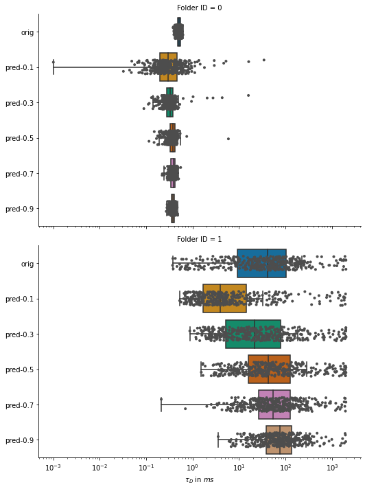
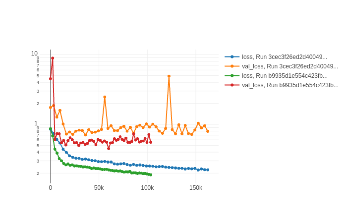

Lab book Fluotracify
1 Technical Notes
1.1 README
1.1.1 General:
- This file corresponds to my lab book for my doctoral thesis tackling artifact correction in Fluorescence Correlation Spectroscopy (FCS) measurements using Deep Neural Networks. It also contains notes taken during the process of setting up this workflow for reproducible research.
- This file contains explanations of how things are organized, of the workflow for doing experiments, changes made to the code, and the observed behavior in the "* Data" section.
- The branching model used is described in this paper. Therefore: if you
are interested in the "* Data" section, you have to
git clonethe data branch of the repository. The master branch is clean from any results, it contains only source code and the analysis. - This project is my take on Open-notebook science. The idea was postulated in
a blog post in 2006:
… there is a URL to a laboratory notebook that is freely available and indexed on common search engines. It does not necessarily have to look like a paper notebook but it is essential that all of the information available to the researchers to make their conclusions is equally available to the rest of the world —Jean-Claude Bradley
- Proposal on how to deal with truly private data (e.g. notes from a confidential meeting with a colleague), which might otherwise be noted in a normal Lab notebook: do not include them here. Only notes relevant to the current project should be taken
1.1.2 Code block languages used in this document
# This is a sh block for shell / bash scripting. In the context of this file, # these blocks are mainly used for operations on my local computer. # In the LabBook.html rendering of this document, these blocks will have a # light green colour (#F0FBE9)
# This block can open and access tmux sessions, used for shell scripting on # remote computing clusters. # In the LabBook.html rendering of this document, these blocks will have a # distinct light green colour (#E1EED8)
# This is a python block. In the context of this file, it is seldomly used # (only for examplary scripts.) # In the LabBook.html rendering of this document, these blocks will have a # light blue colour (#E6EDF4)
# This is a jupyter-python block. The code is sent to a jupyter kernel running # on a remote high performance computing cluster. Most of my jupyter code is # executed this way. # In the LabBook.html rendering of this document, these blocks will have a # light orange colour (#FAEAE1)
;; This is a emacs-lisp block, the language used to customize Emacs, which is ;; sometimes necessary, since the reproducible workflow of this LabBook is ;; tightly integrated with Emacs and org-mode. ;; In the LabBook.html rendering of this document, these blocks will have a ;; light violet colour (#F7ECFB)
This is a literal example block. It can be used very flexibly - in the context of this document the output of most code blocks is displayed this way. In the LabBook.html rendering of this document, these blocks will have a light yellow colour (#FBFBBF)
1.1.3 Experiments workflow:
- Create a new branch from
master - Print out the git log from the latest commit and the metadata
- Call the analysis scripts, follow the principles outlined in Organization of code
- All machine learning runs are saved in
data/mlruns, all other data indata/#experiment-name - Add a "* #experiment-name" section to this file under [[ Data]]
- Commit/push the results of this separate branch
- Merge this new branch with the remote
databranch
1.1.4 Example for experimental setup procedure
1.1.5 tools used (notes)
1.1.5.1 Emacs magit
gitflow-avh(magit-flow) to follow the flow- possibly https://github.com/magit/magit-annex for large files. Follow this: https://git-annex.branchable.com/walkthrough/
- maybe check out git-toolbelt at some point https://github.com/nvie/git-toolbelt#readme with https://nvie.com/posts/git-power-tools/
1.1.5.2 jupyter
- emacs jupyter for running and connecting to kernel on server: https://github.com/dzop/emacs-jupyter
- if I actually still would use .ipynb files, these might come handy:
- jupytext: https://github.com/mwouts/jupytext
- nbstripout: https://github.com/kynan/nbstripout
1.1.5.3 mlflow
1.1.5.4 tensorflow
1.2 Template for data entry and setup notes:
1.2.1 exp-#date-#title
1.2.1.1 git:
git log -1
1.2.1.2 System Metadata:
import os import pprint ramlist = os.popen('free -th').readlines()[-1].split()[1:] print('No of CPUs in system:', os.cpu_count()) print('No of CPUs the current process can use:', len(os.sched_getaffinity(0))) print('load average:', os.getloadavg()) print('os.uname(): ', os.uname()) print('PID of process:', os.getpid()) print('RAM total: {}, RAM used: {}, RAM free: {}'.format( ramlist[0], ramlist[1], ramlist[2])) !echo the current directory: $PWD !echo My disk usage: !df -h if _long: %conda list pprint.pprint(dict(os.environ), sort_dicts=False)
1.2.1.3 Tmux setup and scripts
rm ~/.tmux-local-socket-remote-machine REMOTE_SOCKET=$(ssh ara 'tmux ls -F "#{socket_path}"' | head -1) echo $REMOTE_SOCKET ssh ara -tfN \ -L ~/.tmux-local-socket-remote-machine:$REMOTE_SOCKET
| rm: | cannot | remove | 'home/lex.tmux-local-socket-remote-machine': | No | such | file | or | directory |
| ye53nis@ara-login01.rz.uni-jena.de's | password: | |||||||
| /tmp/tmux-67339/default | ||||||||
| > | ye53nis@ara-login01.rz.uni-jena.de's | password: |
1.2.1.4 SSH tunneling
Different applications can be run on the remote compute node. If I want to access them at the local machine, and open them with the browser, I use this tunneling script.
ssh -t -t ara -L $port:localhost:$port ssh $node -L $port:Localhost:$port
Apps I use that way:
- Jupyter lab for running Python 3-Kernels
- TensorBoard
- Mlflow ui
1.2.1.5 jupyter scripts
Starting a jupyter instance on a server where the necessary libraries are installed is easy using this script:
conda activate tf-nightly export PORT=9999 export XDG_RUNTIME_DIR='' export XDG_RUNTIME_DIR="" jupyter lab --no-browser --port=$PORT
On the compute node of the HPC, the users' environment is managed through
module files using the system Lmod. The export XDG_RUNTIME_DIR statements
are needed because of a jupyter bug which did not let it start. Right now,
ob-tmux does not support a :var header like normal org-babel does. So
the $port variable has to be set here in the template.
Now this port has to be tunnelled on our local computer (See SSH tunneling). While the tmux session above keeps running, no matter if Emacs is running or not, this following ssh tunnel needs to be active locally to connect to the notebook. If you close Emacs, it would need to be reestablished
1.2.2 Setup notes
1.2.2.1 Setting up a tmux connection from using ob-tmux in org-babel
- prerequisite: tmux versions need to be the same locally and on the server.
Let's verify that now.
- the local tmux version:
tmux -V
tmux 3.0a
- the remote tmux version:
ssh ara tmux -V
ye53nis@ara-login01.rz.uni-jena.de's password: tmux 3.0a
- the local tmux version:
- as is described in the ob-tmux readme, the following code snippet creates
a socket on the remote machine and forwards this socket to the local
machine (note that
socket_pathwas introduced in tmux version 2.2)REMOTE_SOCKET=$(ssh ara 'tmux ls -F "#{socket_path}"' | head -1) echo $REMOTE_SOCKET ssh ara -tfN \ -L ~/.tmux-local-socket-remote-machine:$REMOTE_SOCKET
ye53nis@ara-login01.rz.uni-jena.de's password: /tmp/tmux-67339/default > ye53nis@ara-login01.rz.uni-jena.de's password: - now a new tmux session with name
ob-NAMEis created when using a code block which looks like this:#+BEGIN_SRC tmux :socket ~/.tmux-local-socket-remote-machine :session NAME - Commands can be sent now to the remote tmux session, BUT note that the output is not printed yet
- there is a workaround for getting output back to our LabBook.org: A script
which allows to print the output from the tmux session in an
#+begin_example-Block below the tmux block by pressingC-c C-oorC-c C-v C-owhen the pointer is inside the tmux block.
1.2.2.2 emacs-jupyter Setup
Emacs-jupyter aims to be an API for a lot of functionalities of the
jupyter project. The documentation can be found on GitHub.
- For the whole document: connect ot a running jupyter instance
M-x jupyter-server-list-kernels- set server URL, e.g.
http://localhost:8889 - set websocket URL, e.g.
http://localhost:8889
- set server URL, e.g.
- two possibilities
- kernel already exists \(\to\) list of kernels and
kernel-IDis displayed - kernel does not exist \(\to\) prompt asks if you want to start one \(\to\)
yes \(\to\) type kernel you want to start, e.g.
Python 3
- kernel already exists \(\to\) list of kernels and
- In the subtree where you want to use
jupyter-pythonblocks withorg babel- set the
:header-args:jupyter-python :session /jpy:localhost#kernel:8889-ID - customize the output folder using the following org-mode variable:
(setq org-babel-jupyter-resource-directory "./data/exp-test/plots")
./data/exp-test/plots
- set the
- For each individual block, the following customizations might be useful
- jupyter kernels can return multiple kinds of rich output (images,
html, …) or scalar data (plain text, numbers, lists, …). To force
a plain output, use
:results scalar. To show the output in the minibuffer only, use:results silent - to change the priority of different rich outputs, use
:displayheader argument, e.g.:display text/plain text/htmlprioritizes plain text over html. All supported mimetypes in default order:- text/org
- image/svg+xml, image/jpeg, image/png
- text/html
- text/markdown
- text/latex
- text/plain
- We can set jupyter to output pandas DataFrames as org tables
automatically using the source block header argument
:pandoc t - useful keybindings
M-ito open the documentation for wherever your pointer is (like pressingShift-TABin Jupyter notebooks)C-c C-ito interrupt the kernel,C-c C-rto restart the kernel
- jupyter kernels can return multiple kinds of rich output (images,
html, …) or scalar data (plain text, numbers, lists, …). To force
a plain output, use
1.3 Organization of git
1.3.1 remote/origin/master branch:
- contains all the source code in folder src/ which is used for experiments.
- contains the LabBook.org template
- contains setup- and metadata files such as MLproject or conda.yaml
- the log contains only lasting alterations on the folders and files mentioned above, which are e.g. used for conducting experiments or which introduce new features. Day-to-day changes in code
1.3.2 remote/origin/exp### branches:
- if an experiment is done, the code and templates will be branched out from master in an #experiment-name branch, ### meaning some meaningful descriptor.
- all data generated during the experiment (e.g. .csv files, plots, images, etc), is stored in a folder with the name data/#experiment-name, except machine learning-specific data and metadata from `mlflow` runs, which are saved under data/mlruns (this allows easily comparing machine learning runs with different experimental settings)
- The LabBook.org file is essential
- If possible, all code is executed from inside this file (meaning analysis scripts or calling the code from the scr/ directory).
- All other steps taken during an experiment are noted down, as well as conclusions or my thought process while conducting the experiment
- Provenance data, such as metadata about the environment the code was executed in, the command line output of the code, and some plots
1.3.3 remote/origin/develop branch:
- this is the branch I use for day to day work on features and exploration. All of my current activity can be followed here.
1.3.4 remote/origin/data branch:
- contains a full cronicle of the whole research process
- all #experiment-name branches are merged here. Afterwards the original branch is deleted and on the data branch there is a Git tag which shows the merge commit to make accessing single experiments easy.
- the develop branch is merged here as well.
1.3.5 Git TAGs
1.3.5.1 Stable versions:
1.3.5.2 All tags from git:
git push origin --tags git tag -n1
exp-200402-test Merge branch 'exp-200402-test' into data
1.4 Organization of code
1.4.1 scripts:
1.4.2 src/
1.4.2.1 fluotracify/
- imports/
- simulations/
- training/
- applications/
- doc/
- use Sphinx
- follow this: https://daler.github.io/sphinxdoc-test/includeme.html
- evtl export org-mode Readme to rst via https://github.com/msnoigrs/ox-rst
- possibly heavily use http://www.sphinx-doc.org/en/master/usage/extensions/autodoc.html
- for examples sphinx-galleries could be useful https://sphinx-gallery.github.io/stable/getting_started.html
- use Sphinx
1.4.2.2 nanosimpy/
- cloned from dwaithe with refactoring for Python 3-compatibility
1.5 Changes in this repository (without "* Data" in this file)
1.5.1 Changes in LabBook.org (without "* Data")
1.5.1.1 2020-11-04
- update "jupyter scripts" in Template for data entry and setup notes:
for new conda environment on server (now
conda activate tf-nightly)
1.5.1.2 2020-05-31
- extend general documentation in README
- Add code block examples
- extend documentation on experiment workflow
- move setup notes from README to "Template for data entry and setup notes"
- remove emacs-lisp code for custom tmux block functions (not relevant enough)
- change named "jpt-tmux" from starting a jupyter notebook to starting
jupyter lab. Load a conda environment instead of using Lmod's
module load
1.5.1.3 2020-05-07
- extend documentation on git model
- extend documentation on jupyter setup
1.5.1.4 2020-04-22
- added parts of README which describe the experimental process
- added templates for system metadata, tmux, jupyter setup
- added organization of code
1.5.1.5 2020-03-30
- set up lab book and form git repo accoring to setup by Luka Stanisic et al
1.5.2 Changes in src/fluotracify
2 Data
2.1 exp-200330-test
- first, use "clocking" in org-mode to record time working on this branch with
C-c C-x C-i
| Headline | Time | |||
|---|---|---|---|---|
| Total time | 4:37 | |||
| exp-200330-test | 4:37 | |||
| Experimentation diary | 1:34 | |||
| Learn about hard vs soft links | 0:08 | |||
| Learn about Org-mode's column view | 0:01 | |||
| Learning about org-mode's clocking | 0:19 | |||
| Configure Emacs setup (neotree) | 1:01 |
2.1.1 git
git log -1
| commit | 7a2f40149b15e3a639396abfe86e75bd57db55a3 | |||||
| Author: | Apoplex | <oligolex@vivaldi.net> | ||||
| Date: | Sun | Mar | 29 | 17:41:27 | 2020 | +0200 |
| Add | LabBook.org | |||||
2.1.2 DONE Experimentation diary
2.1.2.1 DONE Learn about hard vs soft links
2.1.2.2 DONE Learn about Org-mode's column view
- on:
C-c C-x C-c - off: press
qwhile cursor is on highlighted entry
2.1.2.3 DONE Learning about org-mode's clocking
- https://writequit.org/denver-emacs/presentations/2017-04-11-time-clocking-with-org.html tipps and tricks
- I'll keep one clock going in the "** exp#" section when I start with
C-c C-x C-i - I'll check out when I leave the computer or do something else on the
computer with
C-c C-x C-o - When I come back, I'll jump to the current clock with
C-c C-x C-jand clock in at the last task withC-c C-x C-x
2.1.2.4 DONE Configure Emacs setup (neotree)
2.2 exp-200331-test
| Headline | Time | |||
|---|---|---|---|---|
| Total time | 3:06 | |||
| exp-200331-test | 3:06 | |||
| Technical Setup diary | 2:58 | |||
| Test if remote HPC is accessible via… | 2:58 |
2.2.1 DONE Technical Setup diary
2.2.1.1 DONE Test if remote HPC is accessible via org-mode
- emacs commands for
org-babelC-c 'to edit current code block in new major mode edit buffer containing the body of the source code block, useC-c 'again to close buffer and return to the org buffer
- accessing the ara cluster of FSU
echo $PWD echo $HOSTNAME
/home/ye53nis login01
- Nice! Can we access the different nodes?
sinfo
PARTITION AVAIL TIMELIMIT NODES STATE NODELIST b_test up 10:00:00 1 alloc node001 b_standard* up 8-08:00:00 62 mix node[003-005,009-016,021-022,027-030,032-033,038,049-051,053,061-062,064,071-072,075,081-089,091-092,096-101,108-110,112-117,122-125,131-132] b_standard* up 8-08:00:00 69 alloc node[002,006-008,017-020,023-026,031,034-037,039-048,052,054-060,063,065-070,073-074,076-080,090,093-095,102-107,111,118-121,126,133-136] gpu_test up 1:00:00 1 idle node127 gpu_p100 up 8-08:00:00 2 idle node[128-129] gpu_v100 up 8-08:00:00 1 mix node130 b_fat up 8-08:00:00 4 mix node[137-140] s_test up 3:00:00 1 alloc node141 s_standard up 8-08:00:00 68 mix node[143-144,150,153,156-157,162,165,167,170-172,175,179-183,185-189,195-196,199-200,204-212,214-217,219-222,224-226,232,238,252-256,262-267,293,295-296,302-303,308-310] s+_standard up 8-08:00:00 77 alloc node[142,145-149,154-155,158-161,163-164,166,168-169,173-174,176-178,184,190-194,197-198,201,213,223,227-231,233-237,239-251,257-258,260-261,268,294,297-301,304-307,311-316] s_standard up 8-08:00:00 6 idle node[151-152,202-203,218,259] s_fat up 8-08:00:00 1 mix node271 s_fat up 8-08:00:00 3 alloc node[269-270,272]
Sweet, now we would need a tmux session to be able to leave jobs running, when we disconnect the SSH pipe from the local machine.
tmux attach -t jupyter
This naive approach seems not to work. Some research showed this as promising: https://github.com/ahendriksen/ob-tmux
2.3 exp-200402-test
2.3.1 git
git log -1
commit 5155597b868fd45db254bc8d631ff47d69ce8363
Author: Apoplex <oligolex@vivaldi.net>
Date: Thu Apr 2 12:03:48 2020 +0200
First experiments org mode + git literate program
2.3.2 Technical and conceptional setup
2.3.2.1 Execute a script on Ara cluster with literate programming
- connect to FSU VPN (still via normal terminal)
- connect to ara via ssh and check if a tmux session exists
echo $PWD echo $HOSTNAME
$ /home/ye53nis $ login01
tmux -V tmux ls echo $HOSTNAME
tmux 1.8 $ protocol version mismatch (client 7, server 8) $ login01
tmux attach new -d
no server running on /tmp/tmux-1000/default
tmux -V tmux ls
tmux 3.0a no server running on /tmp/tmux-1000/default
echo $PWD
- connect to ara via ssh and start a tmux session (So that my programs on ara
can be run even if I am not connected)
ssh ye53nis@ara-login01.rz.uni-jena.de -t tmux new -d
- hurray, we created a new tmux out of this org file! lets check:
echo $PWD echo $HOSTNAME tmux ls tmux attach -S /tmp/tmux-67339/ attach -s 2
/home/lex/Programme/drmed-git Topialex error connecting to /tmp/tmux-1000/default (No such file or directory) tmux: unknown option -- S error connecting to /tmp/tmux-1000/default (No such file or directory)
- now lets see if we can connect this tmux session to our local machine
REMOTE_SOCKET=$(ssh ye53nis@ara-login01.rz.uni-jena.de 'tmux list-sessions /tmp/tmux-67339/default' | head -1) echo $REMOTE_SOCKET
ye53nis@ara-login01.rz.uni-jena.de's password: sh-5.0$
echo $REMOTE_SOCKET
- hurray, we created a new tmux out of this org file! lets check:
- use ob-tmux to connect to the tmux session
echo test
- it does not yet work, but these commands seem to work, lets see tomorrow:
REMOTE_SOCKET=$(ssh ara 'tmux ls -F tmp/tmux-67339/default' |head -1)ssh ara -tfN -D ~/.tmux-local-socket-remote-machine:$REMOTE_SOCKET
- trying out
ob-tmux
tmux attach -t
echo hello world in new-window
- trying out other connection with server
echo hello
$ /ssh:ye53nis@ara-login01.rz.uni-jena.de:/home/ye53nis/ #$ /ssh:ye53nis@ara-login01.rz.uni-jena.de:/home/ye53nis/ #$ hello
- useful notes on the way
- http://www.howardism.org/Technical/Emacs/literate-devops.html seems to be a good blog about using org babel
- this also seems to be a good resource https://lgfang.github.io/mynotes/utils/tmux.html
- how to get around "bind: address already in use" or "cannot listen to port" errors: https://askubuntu.com/questions/447820/ssh-l-error-bind-address-already-in-use https://unix.stackexchange.com/questions/427189/how-to-cleanup-ssh-reverse-tunnel-socket-after-connection-closed
2.3.2.2 DONE Setup of literate programming OR jupytex or the like
2.4 exp-200410-test
2.4.1 git
git log -1
commit 9ff351312ecdf37dd36df3083b0d5c95a7c7824f
Author: Apoplex <oligolex@vivaldi.net>
Date: Fri Apr 3 01:07:16 2020 +0200
ssh and tmux
2.4.2 Technical and conceptional setup
2.4.2.1 Connect to jupyter kernels via org-babel
- Locally start a jupyter-python session, executed asynchro
x = 'foo' y = 'bar' x + ' ' + y
foo bar
- Connecting to an existing kernel
x = 'foo' y = 'bar' x + ' ' + y
foo bar
- Connecting to an existing kernel on the ara HPC
sudo openconnect vpn.uni-jena.de- connect to tmux session or create new one on login node
x = 'foo' y = 'bar' x + ' ' + y
foo bar
import sys print(sys.platform) print(sys.path)
linux ['/home/lex/Programme/drmed-git', '/home/lex/Programme/miniconda3/envs/tensorflow_env/lib/python37.zip', '/home/lex/Programme/miniconda3/envs/tensorflow_env/lib/python3.7', '/home/lex/Programme/miniconda3/envs/tensorflow_env/lib/python3.7/lib-dynload', '', '/home/lex/Programme/miniconda3/envs/tensorflow_env/lib/python3.7/site-packages', '/home/lex/Programme/miniconda3/envs/tensorflow_env/lib/python3.7/site-packages/IPython/extensions', '/home/lex/.ipython']
It seems we are now on our local environment…
x = 'foo' y = 'bar' x + ' ' + y
foo bar
import os ramlist = os.popen('free -th').readlines()[-1].split()[1:] print('No of CPUs in system:', os.cpu_count()) print('No of CPUs the current process can use:', len(os.sched_getaffinity(0))) print('load average:', os.getloadavg()) print(os.uname()) print('PID of process:', os.getpid()) print'RAM total: {}, RAM used: {}, RAM free: {}'.format( ramlist[0], ramlist[1], ramlist[2]) !echo the current directory: $PWD !echo My disk usage: !df -h !conda list
No of CPUs in system: 48 No of CPUs the current process can use: 32 load average: 0.04, 0.03, 0.05 posix.uname_resultsysname='Linux', nodename='node020', release='3.10.0-957.1.3.el7.x86_64', version='#1 SMP Thu Nov 29 14:49:43 UTC 2018', machine='x86_64' PID of process: 33598 RAM total: 137G, RAM used: 1.4G, RAM free: 111G the current directory: /home/ye53nis My disk usage: Filesystem Size Used Avail Use% Mounted on /dev/sda1 50G 4.3G 46G 9% / devtmpfs 63G 0 63G 0% /dev tmpfs 63G 372M 63G 1% /dev/shm tmpfs 63G 43M 63G 1% /run tmpfs 63G 0 63G 0% /sys/fs/cgroup nfs01-ib:/home 80T 57T 24T 71% /home nfs03-ib:/pool/work 100T 77T 24T 77% /nfsdata nfs01-ib:/cluster 2.0T 312G 1.7T 16% /cluster /dev/sda5 2.0G 34M 2.0G 2% /tmp /dev/sda3 6.0G 447M 5.6G 8% /var /dev/sda6 169G 875M 168G 1% /local beegfs_nodev 524T 412T 113T 79% /beegfs tmpfs 13G 0 13G 0% /run/user/67339 # packages in environment at /cluster/miniconda3: # # Name Version Build Channel _tflow_select 2.3.0 mkl absl-py 0.7.1 py37_0 alembic 1.4.1 pypi_0 pypi asn1crypto 0.24.0 py37_0 asteval 0.9.14 pyh24bf2e0_0 conda-forge astor 0.7.1 py37_0 astropy 4.0 pypi_0 pypi attrs 19.1.0 pypi_0 pypi backcall 0.1.0 pypi_0 pypi bcftools 1.9 ha228f0b_4 bioconda bedtools 2.28.0 hdf88d34_0 bioconda blas 1.0 mkl bleach 3.1.0 pypi_0 pypi bzip2 1.0.6 h14c3975_5 c-ares 1.15.0 h7b6447c_1 ca-certificates 2019.5.15 0 cachetools 4.0.0 pypi_0 pypi certifi 2019.3.9 py37_0 cffi 1.12.2 py37h2e261b9_1 chardet 3.0.4 py37_1 click 7.0 pypi_0 pypi cloudpickle 1.3.0 pypi_0 pypi conda 4.6.14 py37_0 configparse 0.1.5 pypi_0 pypi configparser 4.0.2 pypi_0 pypi corner 2.0.1 pypi_0 pypi cpnest 0.9.9 pypi_0 pypi cryptography 2.6.1 py37h1ba5d50_0 curl 7.64.1 hbc83047_0 cycler 0.10.0 py37_0 cython 0.29.14 pypi_0 pypi data 0.4 pypi_0 pypi databricks-cli 0.9.1 pypi_0 pypi dbus 1.13.6 h746ee38_0 decorator 4.4.0 pypi_0 pypi defusedxml 0.6.0 pypi_0 pypi docker 4.2.0 pypi_0 pypi entrypoints 0.3 pypi_0 pypi expat 2.2.6 he6710b0_0 flask 1.1.1 pypi_0 pypi fontconfig 2.13.0 h9420a91_0 freetype 2.9.1 h8a8886c_1 funcsigs 1.0.2 pypi_0 pypi future 0.17.1 py37_0 gast 0.2.2 py37_0 gitdb 4.0.2 pypi_0 pypi gitpython 3.1.0 pypi_0 pypi glib 2.56.2 hd408876_0 google-auth 1.11.2 pypi_0 pypi google-auth-oauthlib 0.4.1 pypi_0 pypi google-pasta 0.1.8 pypi_0 pypi gorilla 0.3.0 pypi_0 pypi grpcio 1.27.2 pypi_0 pypi gst-plugins-base 1.14.0 hbbd80ab_1 gstreamer 1.14.0 hb453b48_1 gunicorn 20.0.4 pypi_0 pypi h5py 2.9.0 py37h7918eee_0 hdf5 1.10.4 hb1b8bf9_0 htseq 0.11.2 py37h637b7d7_1 bioconda htslib 1.9 ha228f0b_7 bioconda icu 58.2 h9c2bf20_1 idna 2.8 py37_0 intel-openmp 2019.3 199 ipykernel 5.1.1 pypi_0 pypi ipython 7.5.0 pypi_0 pypi ipython-genutils 0.2.0 pypi_0 pypi ipywidgets 7.4.2 pypi_0 pypi itsdangerous 1.1.0 pypi_0 pypi jedi 0.13.3 pypi_0 pypi jinja2 2.10.1 pypi_0 pypi joblib 0.13.2 py37_0 jpeg 9b h024ee3a_2 jsonschema 3.0.1 pypi_0 pypi jupyter 1.0.0 pypi_0 pypi jupyter-client 5.2.4 pypi_0 pypi jupyter-console 6.0.0 pypi_0 pypi jupyter-core 4.4.0 pypi_0 pypi keras-applications 1.0.8 pypi_0 pypi keras-preprocessing 1.1.0 pypi_0 pypi kiwisolver 1.1.0 py37he6710b0_0 krb5 1.16.1 h173b8e3_7 last 874 hdbcaa40_2 bioconda latex 0.7.0 pypi_0 pypi libcurl 7.64.1 h20c2e04_0 libdeflate 1.0 h14c3975_1 bioconda libedit 3.1.20181209 hc058e9b_0 libffi 3.2.1 hd88cf55_4 libgcc-ng 8.2.0 hdf63c60_1 libgfortran-ng 7.3.0 hdf63c60_0 libpng 1.6.37 hbc83047_0 libprotobuf 3.7.1 hd408876_0 libssh2 1.8.2 h1ba5d50_0 libstdcxx-ng 8.2.0 hdf63c60_1 libuuid 1.0.3 h1bed415_2 libxcb 1.13 h1bed415_1 libxml2 2.9.9 he19cac6_0 lmfit 0.9.13 pyh24bf2e0_0 conda-forge mako 1.1.2 pypi_0 pypi markdown 3.1 py37_0 markupsafe 1.1.1 pypi_0 pypi matplotlib 3.0.3 py37h5429711_0 minimap2 2.17 h84994c4_0 bioconda mistune 0.8.4 pypi_0 pypi mkl 2019.3 199 mkl_fft 1.0.12 py37ha843d7b_0 mkl_random 1.0.2 py37hd81dba3_0 mlflow 1.7.0 pypi_0 pypi mock 2.0.0 py37_0 mpi4py 3.0.3 pypi_0 pypi multipletau 0.3.3 pypi_0 pypi nanosim 2.2.0 py_0 bioconda nbconvert 5.5.0 pypi_0 pypi nbformat 4.4.0 pypi_0 pypi ncurses 6.1 he6710b0_1 notebook 5.7.8 pypi_0 pypi numpy 1.16.3 py37h7e9f1db_0 numpy-base 1.16.3 py37hde5b4d6_0 oauthlib 3.1.0 pypi_0 pypi openssl 1.1.1c h7b6447c_1 opt-einsum 3.2.0 pypi_0 pypi pandas 0.24.2 py37he6710b0_0 pandocfilters 1.4.2 pypi_0 pypi parso 0.4.0 pypi_0 pypi pbr 5.1.3 py_0 pcre 8.43 he6710b0_0 pexpect 4.7.0 pypi_0 pypi pickleshare 0.7.5 pypi_0 pypi pip 19.0.3 py37_0 prometheus-client 0.7.0 pypi_0 pypi prometheus-flask-exporter 0.13.0 pypi_0 pypi prompt-toolkit 2.0.9 pypi_0 pypi protobuf 3.11.3 pypi_0 pypi ptemcee 1.0.0 pypi_0 pypi ptyprocess 0.6.0 pypi_0 pypi pyasn1 0.4.8 pypi_0 pypi pyasn1-modules 0.2.8 pypi_0 pypi pybedtools 0.8.0 py37he860b03_1 bioconda pycosat 0.6.3 py37h14c3975_0 pycparser 2.19 py37_0 pydot 1.4.1 pypi_0 pypi pygments 2.4.2 pypi_0 pypi pyopenssl 19.0.0 py37_0 pyparsing 2.4.0 py_0 pyqt 5.9.2 py37h05f1152_2 pyrsistent 0.15.2 pypi_0 pypi pysam 0.15.2 py37h4b7d16d_3 bioconda pysocks 1.6.8 py37_0 pystan 2.19.1.2dev pypi_0 pypi python 3.7.3 h0371630_0 python-dateutil 2.8.0 py37_0 python-editor 1.0.4 pypi_0 pypi python-graphviz 0.13.2 pypi_0 pypi pytz 2019.1 py_0 pyyaml 5.3 pypi_0 pypi pyzmq 18.0.1 pypi_0 pypi qt 5.9.7 h5867ecd_1 qtconsole 4.5.1 pypi_0 pypi querystring-parser 1.2.4 pypi_0 pypi readline 7.0 h7b6447c_5 requests 2.21.0 py37_0 requests-oauthlib 1.3.0 pypi_0 pypi rsa 4.0 pypi_0 pypi ruamel_yaml 0.15.46 py37h14c3975_0 samtools 1.9 h8571acd_11 bioconda scikit-learn 0.21.1 py37hd81dba3_0 scipy 1.4.1 pypi_0 pypi seaborn 0.9.0 pypi_0 pypi send2trash 1.5.0 pypi_0 pypi setuptools 41.0.0 py37_0 shutilwhich 1.1.0 pypi_0 pypi simplejson 3.17.0 pypi_0 pypi sip 4.19.8 py37hf484d3e_0 six 1.12.0 py37_0 smmap 3.0.1 pypi_0 pypi sqlalchemy 1.3.13 pypi_0 pypi sqlite 3.27.2 h7b6447c_0 sqlparse 0.3.1 pypi_0 pypi tabulate 0.8.6 pypi_0 pypi tempdir 0.7.1 pypi_0 pypi tensorboard 2.1.1 pypi_0 pypi tensorflow 2.1.0 pypi_0 pypi tensorflow-estimator 2.1.0 pypi_0 pypi termcolor 1.1.0 py37_1 terminado 0.8.2 pypi_0 pypi testpath 0.4.2 pypi_0 pypi tifffile 0.15.1 py37h3010b51_1001 conda-forge tk 8.6.8 hbc83047_0 tornado 6.0.2 py37h7b6447c_0 tqdm 4.43.0 pypi_0 pypi traitlets 4.3.2 pypi_0 pypi uncertainties 3.1.1 py37_0 conda-forge urllib3 1.24.1 py37_0 wcwidth 0.1.7 pypi_0 pypi webencodings 0.5.1 pypi_0 pypi websocket-client 0.57.0 pypi_0 pypi werkzeug 0.15.2 py_0 wheel 0.33.1 py37_0 widgetsnbextension 3.4.2 pypi_0 pypi wrapt 1.12.1 pypi_0 pypi xz 5.2.4 h14c3975_4 yaml 0.1.7 had09818_2 zlib 1.2.11 h7b6447c_3
2.5 exp-200412-test
2.5.1 git
git log -1
commit 8cb5705c0a06eb8f25a84f77a222b3736eaf704d
Author: Apoplex <oligolex@vivaldi.net>
Date: Sun Apr 12 13:12:16 2020 +0200
Add tests of org-babel and emacs-jupyter
2.5.2 Update files on ara cluster
sftp ara
ye53nis@ara-login01.rz.uni-jena.de's password: Connected to ara.
pwd cd drmed-git ls -l lpwd lls -l
| pwd | ||||||||
| Remote | working | directory: | /home/ye53nis | |||||
| cd | drmed-git | |||||||
| ls | -l | |||||||
| LabBook.org# | ||||||||
| -rw-r–r-- | 1 | ye53nis | uj07g-iaob-ara | 18650 | Apr | 13 | 00:08 | LICENSE |
| -rw-r–r-- | 1 | ye53nis | uj07g-iaob-ara | 57453 | Apr | 13 | 00:08 | LabBook.org |
| -rw-r–r-- | 1 | ye53nis | uj07g-iaob-ara | 19249 | Apr | 13 | 00:08 | LabBook.org~ |
| -rw-r–r-- | 1 | ye53nis | uj07g-iaob-ara | 76 | Apr | 13 | 00:08 | README.md |
| drwxr-xr-x | 2 | ye53nis | uj07g-iaob-ara | 10 | Apr | 12 | 15:50 | data |
| drwxr-xr-x | 4 | ye53nis | uj07g-iaob-ara | 54 | Apr | 12 | 15:50 | src |
| lpwd | ||||||||
| Local | working | directory: | /home/lex/Programme/drmed-git | |||||
| lls | -l | |||||||
| insgesamt | 176 | |||||||
| drwxr-xr-x | 2 | lex | lex | 4096 | 29 | Mr | 17:42 | data |
| LabBook.org#' | ||||||||
| -rw-r–r-- | 2 | lex | lex | 57453 | 12 | Apr | 23:54 | LabBook.org |
| -rw-r–r-- | 1 | lex | lex | 19249 | 2 | Apr | 13:50 | LabBook.org~ |
| -rw-r–r-- | 1 | lex | lex | 18650 | 5 | Feb | 16:39 | LICENSE |
| -rw-r–r-- | 1 | lex | lex | 76 | 5 | Feb | 16:39 | README.md |
| drwxr-xr-x | 4 | lex | lex | 4096 | 29 | Mr | 18:44 | src |
put -r .
| Uploading | ./ | to | home/ye53nis/drmed-git/. |
| Entering | ./ | ||
| Entering | ..git |
2.5.3 SSH into ara cluster and start tmux and jupyter
ssh ara
tmux ls
no server running on /tmp/tmux-67339/default
If no tmux session is running, a new dummy session has to be created to enable socket forwarding. Later, another tmux session can be used.
tmux new -dP
0:
Socket forwarding: Now create actual tmux session:
echo $PWD echo test
tmux ls
| 0: | 1 | windows | created | Mon | Apr | 13 | 01:25:25 | 2020 |
| ob-tmux: | 1 | windows | created | Mon | Apr | 13 | 01:26:33 | 2020 |
sinfo
| PARTITION | AVAIL | TIMELIMIT | NODES | STATE | NODELIST |
| btest | up | 3:00:00 | 1 | alloc | node001 |
| bstandard* | up | 8-08:00:00 | 47 | mix | node006-007,009,014,017-019,022,028,030-034,036-039,041,043,047,051-053,062-064,066,071-072,083,085-088,092,112,117,119-121,125-126,133-136 |
| bstandard* | up | 8-08:00:00 | 84 | alloc | node002-005,008,010-013,015-016,020-021,023-027,029,035,040,042,044-046,048-050,054-061,065,067-070,073-082,084,089-091,093-111,113-116,118,122-124,131-132 |
| gputest | up | 1:00:00 | 1 | idle | node127 |
| gpup100 | up | 8-08:00:00 | 2 | idle | node128-129 |
| gpuv100 | up | 8-08:00:00 | 1 | mix | node130 |
| bfat | up | 8-08:00:00 | 3 | mix | node137-138,140 |
| bfat | up | 8-08:00:00 | 1 | alloc | node139 |
| stest | up | 3:00:00 | 1 | alloc | node141 |
| sstandard | up | 8-08:00:00 | 51 | mix | node153,159,162,164-165,170-172,174,176,178-182,185-187,196-197,204-206,208-209,211,213,218-220,229,235,253,258-261,293-295,297,299,301,303-306,309-310,314-315 |
| sstandard | up | 8-08:00:00 | 100 | alloc | node142-152,154-158,160-161,163,166-169,173,175,177,183-184,188-195,198-203,207,210,212,214-217,221-228,230-234,236-252,254-257,262-268,296,298,300,302,307-308,311-313,316 |
| sfat | up | 8-08:00:00 | 3 | alloc | node269-270,272 |
| sfat | up | 8-08:00:00 | 1 | idle | node271 |
srun -p gpu_p100 --time=7-10:00:00 --pty bash
module load tools/python/3.7 export XDG_RUNTIME_DIR='' export XDG_RUNTIME_DIR="" jupyter notebook --no-browser --port=8889
Now this port has to be tunnelled on our local computer. While the tmux session above keeps running, no matter if Emacs is running or not, this following ssh tunnel needs to be active locally to connect to the notebook. If Emacs crashes, it would need to be reestablished.
ssh -t -t ara -L $port:localhost:$port ssh $node -L $port:Localhost:$port
| sh-5.0$ | ye53nis@ara-login01.rz.uni-jena.de's | password: | ||||||
| ye53nis@node128's | password: | |||||||
| Last | login: | Tue | Dec | 17 | 00:42:29 | 2019 | from | login01.ara |
2.5.4 start ara cluster jupyter Python 3 kernel and get metadata
Start kernel according to this recipe.
I used the old #+CALL: jupyter-python-metadata[:cache no] (have to write this
out to make html export work)
No of CPUs in system: 48 No of CPUs the current process can use: 2 load average: (0.0, 0.01, 0.05) posix.uname_result(sysname='Linux', nodename='node128', release='3.10.0-957.1.3.el7.x86_64', version='#1 SMP Thu Nov 29 14:49:43 UTC 2018', machine='x86_64') PID of process: 21480 RAM total: 137G, RAM used: 1.3G, RAM free: 132G the current directory: /home/ye53nis My disk usage: Filesystem Size Used Avail Use% Mounted on /dev/sda1 50G 5.4G 45G 11% / devtmpfs 63G 0 63G 0% /dev tmpfs 63G 102M 63G 1% /dev/shm tmpfs 63G 43M 63G 1% /run tmpfs 63G 0 63G 0% /sys/fs/cgroup nfs01-ib:/home 80T 57T 24T 71% /home nfs03-ib:/pool/work 100T 77T 24T 77% /nfsdata nfs01-ib:/cluster 2.0T 312G 1.7T 16% /cluster /dev/sda3 6.0G 567M 5.5G 10% /var /dev/sda5 2.0G 34M 2.0G 2% /tmp /dev/sda6 169G 354M 169G 1% /local beegfs_nodev 524T 413T 112T 79% /beegfs tmpfs 13G 0 13G 0% /run/user/67339 # packages in environment at /cluster/miniconda3: # # Name Version Build Channel _tflow_select 2.3.0 mkl absl-py 0.7.1 py37_0 alembic 1.4.1 pypi_0 pypi asn1crypto 0.24.0 py37_0 asteval 0.9.14 pyh24bf2e0_0 conda-forge astor 0.7.1 py37_0 astropy 4.0 pypi_0 pypi attrs 19.1.0 pypi_0 pypi backcall 0.1.0 pypi_0 pypi bcftools 1.9 ha228f0b_4 bioconda bedtools 2.28.0 hdf88d34_0 bioconda blas 1.0 mkl bleach 3.1.0 pypi_0 pypi bzip2 1.0.6 h14c3975_5 c-ares 1.15.0 h7b6447c_1 ca-certificates 2019.5.15 0 cachetools 4.0.0 pypi_0 pypi certifi 2019.3.9 py37_0 cffi 1.12.2 py37h2e261b9_1 chardet 3.0.4 py37_1 click 7.0 pypi_0 pypi cloudpickle 1.3.0 pypi_0 pypi conda 4.6.14 py37_0 configparse 0.1.5 pypi_0 pypi configparser 4.0.2 pypi_0 pypi corner 2.0.1 pypi_0 pypi cpnest 0.9.9 pypi_0 pypi cryptography 2.6.1 py37h1ba5d50_0 curl 7.64.1 hbc83047_0 cycler 0.10.0 py37_0 cython 0.29.14 pypi_0 pypi data 0.4 pypi_0 pypi databricks-cli 0.9.1 pypi_0 pypi dbus 1.13.6 h746ee38_0 decorator 4.4.0 pypi_0 pypi defusedxml 0.6.0 pypi_0 pypi docker 4.2.0 pypi_0 pypi entrypoints 0.3 pypi_0 pypi expat 2.2.6 he6710b0_0 flask 1.1.1 pypi_0 pypi fontconfig 2.13.0 h9420a91_0 freetype 2.9.1 h8a8886c_1 funcsigs 1.0.2 pypi_0 pypi future 0.17.1 py37_0 gast 0.2.2 py37_0 gitdb 4.0.2 pypi_0 pypi gitpython 3.1.0 pypi_0 pypi glib 2.56.2 hd408876_0 google-auth 1.11.2 pypi_0 pypi google-auth-oauthlib 0.4.1 pypi_0 pypi google-pasta 0.1.8 pypi_0 pypi gorilla 0.3.0 pypi_0 pypi grpcio 1.27.2 pypi_0 pypi gst-plugins-base 1.14.0 hbbd80ab_1 gstreamer 1.14.0 hb453b48_1 gunicorn 20.0.4 pypi_0 pypi h5py 2.9.0 py37h7918eee_0 hdf5 1.10.4 hb1b8bf9_0 htseq 0.11.2 py37h637b7d7_1 bioconda htslib 1.9 ha228f0b_7 bioconda icu 58.2 h9c2bf20_1 idna 2.8 py37_0 intel-openmp 2019.3 199 ipykernel 5.1.1 pypi_0 pypi ipython 7.5.0 pypi_0 pypi ipython-genutils 0.2.0 pypi_0 pypi ipywidgets 7.4.2 pypi_0 pypi itsdangerous 1.1.0 pypi_0 pypi jedi 0.13.3 pypi_0 pypi jinja2 2.10.1 pypi_0 pypi joblib 0.13.2 py37_0 jpeg 9b h024ee3a_2 jsonschema 3.0.1 pypi_0 pypi jupyter 1.0.0 pypi_0 pypi jupyter-client 5.2.4 pypi_0 pypi jupyter-console 6.0.0 pypi_0 pypi jupyter-core 4.4.0 pypi_0 pypi keras-applications 1.0.8 pypi_0 pypi keras-preprocessing 1.1.0 pypi_0 pypi kiwisolver 1.1.0 py37he6710b0_0 krb5 1.16.1 h173b8e3_7 last 874 hdbcaa40_2 bioconda latex 0.7.0 pypi_0 pypi libcurl 7.64.1 h20c2e04_0 libdeflate 1.0 h14c3975_1 bioconda libedit 3.1.20181209 hc058e9b_0 libffi 3.2.1 hd88cf55_4 libgcc-ng 8.2.0 hdf63c60_1 libgfortran-ng 7.3.0 hdf63c60_0 libpng 1.6.37 hbc83047_0 libprotobuf 3.7.1 hd408876_0 libssh2 1.8.2 h1ba5d50_0 libstdcxx-ng 8.2.0 hdf63c60_1 libuuid 1.0.3 h1bed415_2 libxcb 1.13 h1bed415_1 libxml2 2.9.9 he19cac6_0 lmfit 0.9.13 pyh24bf2e0_0 conda-forge mako 1.1.2 pypi_0 pypi markdown 3.1 py37_0 markupsafe 1.1.1 pypi_0 pypi matplotlib 3.0.3 py37h5429711_0 minimap2 2.17 h84994c4_0 bioconda mistune 0.8.4 pypi_0 pypi mkl 2019.3 199 mkl_fft 1.0.12 py37ha843d7b_0 mkl_random 1.0.2 py37hd81dba3_0 mlflow 1.7.0 pypi_0 pypi mock 2.0.0 py37_0 mpi4py 3.0.3 pypi_0 pypi multipletau 0.3.3 pypi_0 pypi nanosim 2.2.0 py_0 bioconda nbconvert 5.5.0 pypi_0 pypi nbformat 4.4.0 pypi_0 pypi ncurses 6.1 he6710b0_1 notebook 5.7.8 pypi_0 pypi numpy 1.16.3 py37h7e9f1db_0 numpy-base 1.16.3 py37hde5b4d6_0 oauthlib 3.1.0 pypi_0 pypi openssl 1.1.1c h7b6447c_1 opt-einsum 3.2.0 pypi_0 pypi pandas 0.24.2 py37he6710b0_0 pandocfilters 1.4.2 pypi_0 pypi parso 0.4.0 pypi_0 pypi pbr 5.1.3 py_0 pcre 8.43 he6710b0_0 pexpect 4.7.0 pypi_0 pypi pickleshare 0.7.5 pypi_0 pypi pip 19.0.3 py37_0 prometheus-client 0.7.0 pypi_0 pypi prometheus-flask-exporter 0.13.0 pypi_0 pypi prompt-toolkit 2.0.9 pypi_0 pypi protobuf 3.11.3 pypi_0 pypi ptemcee 1.0.0 pypi_0 pypi ptyprocess 0.6.0 pypi_0 pypi pyasn1 0.4.8 pypi_0 pypi pyasn1-modules 0.2.8 pypi_0 pypi pybedtools 0.8.0 py37he860b03_1 bioconda pycosat 0.6.3 py37h14c3975_0 pycparser 2.19 py37_0 pydot 1.4.1 pypi_0 pypi pygments 2.4.2 pypi_0 pypi pyopenssl 19.0.0 py37_0 pyparsing 2.4.0 py_0 pyqt 5.9.2 py37h05f1152_2 pyrsistent 0.15.2 pypi_0 pypi pysam 0.15.2 py37h4b7d16d_3 bioconda pysocks 1.6.8 py37_0 pystan 2.19.1.2dev pypi_0 pypi python 3.7.3 h0371630_0 python-dateutil 2.8.0 py37_0 python-editor 1.0.4 pypi_0 pypi python-graphviz 0.13.2 pypi_0 pypi pytz 2019.1 py_0 pyyaml 5.3 pypi_0 pypi pyzmq 18.0.1 pypi_0 pypi qt 5.9.7 h5867ecd_1 qtconsole 4.5.1 pypi_0 pypi querystring-parser 1.2.4 pypi_0 pypi readline 7.0 h7b6447c_5 requests 2.21.0 py37_0 requests-oauthlib 1.3.0 pypi_0 pypi rsa 4.0 pypi_0 pypi ruamel_yaml 0.15.46 py37h14c3975_0 samtools 1.9 h8571acd_11 bioconda scikit-learn 0.21.1 py37hd81dba3_0 scipy 1.4.1 pypi_0 pypi seaborn 0.9.0 pypi_0 pypi send2trash 1.5.0 pypi_0 pypi setuptools 41.0.0 py37_0 shutilwhich 1.1.0 pypi_0 pypi simplejson 3.17.0 pypi_0 pypi sip 4.19.8 py37hf484d3e_0 six 1.12.0 py37_0 smmap 3.0.1 pypi_0 pypi sqlalchemy 1.3.13 pypi_0 pypi sqlite 3.27.2 h7b6447c_0 sqlparse 0.3.1 pypi_0 pypi tabulate 0.8.6 pypi_0 pypi tempdir 0.7.1 pypi_0 pypi tensorboard 2.1.1 pypi_0 pypi tensorflow 2.1.0 pypi_0 pypi tensorflow-estimator 2.1.0 pypi_0 pypi termcolor 1.1.0 py37_1 terminado 0.8.2 pypi_0 pypi testpath 0.4.2 pypi_0 pypi tifffile 0.15.1 py37h3010b51_1001 conda-forge tk 8.6.8 hbc83047_0 tornado 6.0.2 py37h7b6447c_0 tqdm 4.43.0 pypi_0 pypi traitlets 4.3.2 pypi_0 pypi uncertainties 3.1.1 py37_0 conda-forge urllib3 1.24.1 py37_0 wcwidth 0.1.7 pypi_0 pypi webencodings 0.5.1 pypi_0 pypi websocket-client 0.57.0 pypi_0 pypi werkzeug 0.15.2 py_0 wheel 0.33.1 py37_0 widgetsnbextension 3.4.2 pypi_0 pypi wrapt 1.12.1 pypi_0 pypi xz 5.2.4 h14c3975_4 yaml 0.1.7 had09818_2 zlib 1.2.11 h7b6447c_3
2.5.5 Technical and conceptional setup
2.5.5.1 Do a UNET Training
- Import modules
import datetime import itertools import sys import sklearn.metrics import matplotlib.pyplot as plt import tensorflow as tf import numpy as np sys.path.append('./fluotracify/')] from fluotracify.simulations import import_simulation_from_csv as isfc from fluotracify.training import preprocess_data as ppd from fluotracify.training import build_model as bm from fluotracify.training import evaluate print(tf.__version__) # Load the TensorBoard notebook extension %load_ext tensorboard tf.keras.backend.clear_session() # For easy reset of notebook state.
2.1.0
- import .csv files in RAM
train, test, nsamples, experiment_params = isfc.import_from_csv( path='/beegfs/ye53nis/saves/firstartefact_Sep2019/', header=12, frac_train=0.8, col_per_example=2, dropindex=None, dropcolumns='Unnamed: 200') experiment_params
train 0 /beegfs/ye53nis/saves/firstartefact_Sep2019/traces_cluster_rand_Sep2019_set027.csv train 1 /beegfs/ye53nis/saves/firstartefact_Sep2019/traces_cluster_rand_Sep2019_set087.csv train 2 /beegfs/ye53nis/saves/firstartefact_Sep2019/traces_cluster_rand_Sep2019_set003.csv train 3 /beegfs/ye53nis/saves/firstartefact_Sep2019/traces_cluster_rand_Sep2019_set056.csv train 4 /beegfs/ye53nis/saves/firstartefact_Sep2019/traces_cluster_rand_Sep2019_set076.csv train 5 /beegfs/ye53nis/saves/firstartefact_Sep2019/traces_cluster_rand_Sep2019_set094.csv train 6 /beegfs/ye53nis/saves/firstartefact_Sep2019/traces_cluster_rand_Sep2019_set017.csv train 7 /beegfs/ye53nis/saves/firstartefact_Sep2019/traces_cluster_rand_Sep2019_set074.csv train 8 /beegfs/ye53nis/saves/firstartefact_Sep2019/traces_cluster_rand_Sep2019_set055.csv train 9 /beegfs/ye53nis/saves/firstartefact_Sep2019/traces_cluster_rand_Sep2019_set096.csv train 10 /beegfs/ye53nis/saves/firstartefact_Sep2019/traces_cluster_rand_Sep2019_set054.csv train 11 /beegfs/ye53nis/saves/firstartefact_Sep2019/traces_cluster_rand_Sep2019_set093.csv train 12 /beegfs/ye53nis/saves/firstartefact_Sep2019/traces_cluster_rand_Sep2019_set079.csv train 13 /beegfs/ye53nis/saves/firstartefact_Sep2019/traces_cluster_rand_Sep2019_set014.csv train 14 /beegfs/ye53nis/saves/firstartefact_Sep2019/traces_cluster_rand_Sep2019_set008.csv train 15 /beegfs/ye53nis/saves/firstartefact_Sep2019/traces_cluster_rand_Sep2019_set031.csv train 16 /beegfs/ye53nis/saves/firstartefact_Sep2019/traces_cluster_rand_Sep2019_set023.csv train 17 /beegfs/ye53nis/saves/firstartefact_Sep2019/traces_cluster_rand_Sep2019_set025.csv train 18 /beegfs/ye53nis/saves/firstartefact_Sep2019/traces_cluster_rand_Sep2019_set034.csv train 19 /beegfs/ye53nis/saves/firstartefact_Sep2019/traces_cluster_rand_Sep2019_set009.csv train 20 /beegfs/ye53nis/saves/firstartefact_Sep2019/traces_cluster_rand_Sep2019_set044.csv train 21 /beegfs/ye53nis/saves/firstartefact_Sep2019/traces_cluster_rand_Sep2019_set063.csv train 22 /beegfs/ye53nis/saves/firstartefact_Sep2019/traces_cluster_rand_Sep2019_set004.csv train 23 /beegfs/ye53nis/saves/firstartefact_Sep2019/traces_cluster_rand_Sep2019_set072.csv train 24 /beegfs/ye53nis/saves/firstartefact_Sep2019/traces_cluster_rand_Sep2019_set046.csv train 25 /beegfs/ye53nis/saves/firstartefact_Sep2019/traces_cluster_rand_Sep2019_set049.csv train 26 /beegfs/ye53nis/saves/firstartefact_Sep2019/traces_cluster_rand_Sep2019_set007.csv train 27 /beegfs/ye53nis/saves/firstartefact_Sep2019/traces_cluster_rand_Sep2019_set100.csv train 28 /beegfs/ye53nis/saves/firstartefact_Sep2019/traces_cluster_rand_Sep2019_set083.csv train 29 /beegfs/ye53nis/saves/firstartefact_Sep2019/traces_cluster_rand_Sep2019_set077.csv train 30 /beegfs/ye53nis/saves/firstartefact_Sep2019/traces_cluster_rand_Sep2019_set061.csv train 31 /beegfs/ye53nis/saves/firstartefact_Sep2019/traces_cluster_rand_Sep2019_set081.csv train 32 /beegfs/ye53nis/saves/firstartefact_Sep2019/traces_cluster_rand_Sep2019_set091.csv train 33 /beegfs/ye53nis/saves/firstartefact_Sep2019/traces_cluster_rand_Sep2019_set069.csv train 34 /beegfs/ye53nis/saves/firstartefact_Sep2019/traces_cluster_rand_Sep2019_set052.csv train 35 /beegfs/ye53nis/saves/firstartefact_Sep2019/traces_cluster_rand_Sep2019_set028.csv train 36 /beegfs/ye53nis/saves/firstartefact_Sep2019/traces_cluster_rand_Sep2019_set019.csv train 37 /beegfs/ye53nis/saves/firstartefact_Sep2019/traces_cluster_rand_Sep2019_set057.csv train 38 /beegfs/ye53nis/saves/firstartefact_Sep2019/traces_cluster_rand_Sep2019_set064.csv train 39 /beegfs/ye53nis/saves/firstartefact_Sep2019/traces_cluster_rand_Sep2019_set075.csv train 40 /beegfs/ye53nis/saves/firstartefact_Sep2019/traces_cluster_rand_Sep2019_set002.csv train 41 /beegfs/ye53nis/saves/firstartefact_Sep2019/traces_cluster_rand_Sep2019_set062.csv train 42 /beegfs/ye53nis/saves/firstartefact_Sep2019/traces_cluster_rand_Sep2019_set043.csv train 43 /beegfs/ye53nis/saves/firstartefact_Sep2019/traces_cluster_rand_Sep2019_set042.csv train 44 /beegfs/ye53nis/saves/firstartefact_Sep2019/traces_cluster_rand_Sep2019_set005.csv train 45 /beegfs/ye53nis/saves/firstartefact_Sep2019/traces_cluster_rand_Sep2019_set016.csv train 46 /beegfs/ye53nis/saves/firstartefact_Sep2019/traces_cluster_rand_Sep2019_set018.csv train 47 /beegfs/ye53nis/saves/firstartefact_Sep2019/traces_cluster_rand_Sep2019_set041.csv train 48 /beegfs/ye53nis/saves/firstartefact_Sep2019/traces_cluster_rand_Sep2019_set039.csv train 49 /beegfs/ye53nis/saves/firstartefact_Sep2019/traces_cluster_rand_Sep2019_set006.csv train 50 /beegfs/ye53nis/saves/firstartefact_Sep2019/traces_cluster_rand_Sep2019_set092.csv train 51 /beegfs/ye53nis/saves/firstartefact_Sep2019/traces_cluster_rand_Sep2019_set060.csv train 52 /beegfs/ye53nis/saves/firstartefact_Sep2019/traces_cluster_rand_Sep2019_set001.csv train 53 /beegfs/ye53nis/saves/firstartefact_Sep2019/traces_cluster_rand_Sep2019_set035.csv train 54 /beegfs/ye53nis/saves/firstartefact_Sep2019/traces_cluster_rand_Sep2019_set029.csv train 55 /beegfs/ye53nis/saves/firstartefact_Sep2019/traces_cluster_rand_Sep2019_set051.csv train 56 /beegfs/ye53nis/saves/firstartefact_Sep2019/traces_cluster_rand_Sep2019_set012.csv train 57 /beegfs/ye53nis/saves/firstartefact_Sep2019/traces_cluster_rand_Sep2019_set036.csv train 58 /beegfs/ye53nis/saves/firstartefact_Sep2019/traces_cluster_rand_Sep2019_set024.csv train 59 /beegfs/ye53nis/saves/firstartefact_Sep2019/traces_cluster_rand_Sep2019_set053.csv train 60 /beegfs/ye53nis/saves/firstartefact_Sep2019/traces_cluster_rand_Sep2019_set011.csv train 61 /beegfs/ye53nis/saves/firstartefact_Sep2019/traces_cluster_rand_Sep2019_set032.csv train 62 /beegfs/ye53nis/saves/firstartefact_Sep2019/traces_cluster_rand_Sep2019_set067.csv train 63 /beegfs/ye53nis/saves/firstartefact_Sep2019/traces_cluster_rand_Sep2019_set058.csv train 64 /beegfs/ye53nis/saves/firstartefact_Sep2019/traces_cluster_rand_Sep2019_set080.csv train 65 /beegfs/ye53nis/saves/firstartefact_Sep2019/traces_cluster_rand_Sep2019_set086.csv train 66 /beegfs/ye53nis/saves/firstartefact_Sep2019/traces_cluster_rand_Sep2019_set033.csv train 67 /beegfs/ye53nis/saves/firstartefact_Sep2019/traces_cluster_rand_Sep2019_set085.csv train 68 /beegfs/ye53nis/saves/firstartefact_Sep2019/traces_cluster_rand_Sep2019_set015.csv train 69 /beegfs/ye53nis/saves/firstartefact_Sep2019/traces_cluster_rand_Sep2019_set090.csv train 70 /beegfs/ye53nis/saves/firstartefact_Sep2019/traces_cluster_rand_Sep2019_set020.csv train 71 /beegfs/ye53nis/saves/firstartefact_Sep2019/traces_cluster_rand_Sep2019_set030.csv train 72 /beegfs/ye53nis/saves/firstartefact_Sep2019/traces_cluster_rand_Sep2019_set050.csv train 73 /beegfs/ye53nis/saves/firstartefact_Sep2019/traces_cluster_rand_Sep2019_set098.csv train 74 /beegfs/ye53nis/saves/firstartefact_Sep2019/traces_cluster_rand_Sep2019_set099.csv train 75 /beegfs/ye53nis/saves/firstartefact_Sep2019/traces_cluster_rand_Sep2019_set070.csv train 76 /beegfs/ye53nis/saves/firstartefact_Sep2019/traces_cluster_rand_Sep2019_set021.csv train 77 /beegfs/ye53nis/saves/firstartefact_Sep2019/traces_cluster_rand_Sep2019_set095.csv train 78 /beegfs/ye53nis/saves/firstartefact_Sep2019/traces_cluster_rand_Sep2019_set073.csv train 79 /beegfs/ye53nis/saves/firstartefact_Sep2019/traces_cluster_rand_Sep2019_set078.csv test 80 /beegfs/ye53nis/saves/firstartefact_Sep2019/traces_cluster_rand_Sep2019_set026.csv test 81 /beegfs/ye53nis/saves/firstartefact_Sep2019/traces_cluster_rand_Sep2019_set038.csv test 82 /beegfs/ye53nis/saves/firstartefact_Sep2019/traces_cluster_rand_Sep2019_set082.csv test 83 /beegfs/ye53nis/saves/firstartefact_Sep2019/traces_cluster_rand_Sep2019_set047.csv test 84 /beegfs/ye53nis/saves/firstartefact_Sep2019/traces_cluster_rand_Sep2019_set040.csv test 85 /beegfs/ye53nis/saves/firstartefact_Sep2019/traces_cluster_rand_Sep2019_set066.csv test 86 /beegfs/ye53nis/saves/firstartefact_Sep2019/traces_cluster_rand_Sep2019_set059.csv test 87 /beegfs/ye53nis/saves/firstartefact_Sep2019/traces_cluster_rand_Sep2019_set013.csv test 88 /beegfs/ye53nis/saves/firstartefact_Sep2019/traces_cluster_rand_Sep2019_set089.csv test 89 /beegfs/ye53nis/saves/firstartefact_Sep2019/traces_cluster_rand_Sep2019_set071.csv test 90 /beegfs/ye53nis/saves/firstartefact_Sep2019/traces_cluster_rand_Sep2019_set088.csv test 91 /beegfs/ye53nis/saves/firstartefact_Sep2019/traces_cluster_rand_Sep2019_set037.csv test 92 /beegfs/ye53nis/saves/firstartefact_Sep2019/traces_cluster_rand_Sep2019_set022.csv test 93 /beegfs/ye53nis/saves/firstartefact_Sep2019/traces_cluster_rand_Sep2019_set084.csv test 94 /beegfs/ye53nis/saves/firstartefact_Sep2019/traces_cluster_rand_Sep2019_set010.csv test 95 /beegfs/ye53nis/saves/firstartefact_Sep2019/traces_cluster_rand_Sep2019_set097.csv test 96 /beegfs/ye53nis/saves/firstartefact_Sep2019/traces_cluster_rand_Sep2019_set068.csv test 97 /beegfs/ye53nis/saves/firstartefact_Sep2019/traces_cluster_rand_Sep2019_set065.csv test 98 /beegfs/ye53nis/saves/firstartefact_Sep2019/traces_cluster_rand_Sep2019_set048.csv test 99 /beegfs/ye53nis/saves/firstartefact_Sep2019/traces_cluster_rand_Sep2019_set045.csv
0 1 2 3 4 5 6 7 8 9 ... 90 91 92 93 94 95 96 97 98 99 0 unique identifier 87236092-432a-4cf3-976d-f4125faf39ba a97099b0-b09f-46a3-b6b9-21494f23bbac 65cf62b4-ab6c-4684-9bb8-7866babd7d1e b5d81346-5a76-49d0-a9bc-3c2927d42b81 ede6541c-2291-43fc-bd27-88ac58972f70 7d11aae7-4021-4da0-9a25-c3caaf594ce4 a8879b13-71c2-43af-8e5c-108609bc7bb4 4f37c213-656e-4b41-b94e-e6681a39cab6 5f4303d1-c15d-4526-94e9-532c84419541 b637341b-6a7d-4ec9-9093-9b96938e4178 ... c6191b86-d827-49f1-a310-005bc8515716 c213dfa4-7895-43da-aee6-61d04923a9ec 3266da57-ceb1-4154-9da7-652f5878544c 8dbe443f-2414-46d6-8fbc-3f004bc3b513 5cab4980-4d00-4abb-8f57-9cb03c684aca 32a3e173-eb56-4fd1-904a-aaea1c7f0b98 88ff65c4-77b3-49ba-851e-5830419577ca f764599a-39e0-4a16-ab24-974959a0c736 bfa57664-7605-4f4e-bb33-2931b1f6b33d 6609d8da-a5f8-4ce9-b20d-484377f10208 path and file name /beegfs/ye53nis/saves/firstartefact_Sep2019/tr... /beegfs/ye53nis/saves/firstartefact_Sep2019/tr... /beegfs/ye53nis/saves/firstartefact_Sep2019/tr... /beegfs/ye53nis/saves/firstartefact_Sep2019/tr... /beegfs/ye53nis/saves/firstartefact_Sep2019/tr... /beegfs/ye53nis/saves/firstartefact_Sep2019/tr... /beegfs/ye53nis/saves/firstartefact_Sep2019/tr... /beegfs/ye53nis/saves/firstartefact_Sep2019/tr... /beegfs/ye53nis/saves/firstartefact_Sep2019/tr... /beegfs/ye53nis/saves/firstartefact_Sep2019/tr... ... /beegfs/ye53nis/saves/firstartefact_Sep2019/tr... /beegfs/ye53nis/saves/firstartefact_Sep2019/tr... /beegfs/ye53nis/saves/firstartefact_Sep2019/tr... /beegfs/ye53nis/saves/firstartefact_Sep2019/tr... /beegfs/ye53nis/saves/firstartefact_Sep2019/tr... /beegfs/ye53nis/saves/firstartefact_Sep2019/tr... /beegfs/ye53nis/saves/firstartefact_Sep2019/tr... /beegfs/ye53nis/saves/firstartefact_Sep2019/tr... /beegfs/ye53nis/saves/firstartefact_Sep2019/tr... /beegfs/ye53nis/saves/firstartefact_Sep2019/tr... number of slow clusters 10 10 10 10 10 10 10 10 10 10 ... 10 10 10 10 10 10 10 10 10 10 diffusion rate of clusters 0.01 0.02 0.01 0.01 0.02 0.01 0.02 0.01 0.01 0.01 ... 0.02 0.02 0.01 0.01 0.02 0.01 0.02 0.01 0.01 0.02 FWHMs of excitation PSFs used [250] [250] [250] [250] [250] [250] [250] [250] [250] [250] ... [250] [250] [250] [250] [250] [250] [250] [250] [250] [250] extent of the PSF 4000 4000 4000 4000 4000 4000 4000 4000 4000 4000 ... 4000 4000 4000 4000 4000 4000 4000 4000 4000 4000 total simulation time 20000 20000 20000 20000 20000 20000 20000 20000 20000 20000 ... 20000 20000 20000 20000 20000 20000 20000 20000 20000 20000 time step 1.0 1.0 1.0 1.0 1.0 1.0 1.0 1.0 1.0 1.0 ... 1.0 1.0 1.0 1.0 1.0 1.0 1.0 1.0 1.0 1.0 number of fast molecules 1000 5000 2000 6000 5000 2000 2000 10000 7000 8000 ... 5000 8000 2000 10000 7000 1000 2000 7000 4000 4000 diffusion rate of molecules 5.0 1.5 2.0 3.5 5.0 4.5 1.5 4.5 5.0 1.5 ... 1.0 3.0 2.5 2.5 3.5 2.5 5.0 5.0 1.0 3.0 width of the simulation 3000.0 3000.0 3000.0 3000.0 3000.0 3000.0 3000.0 3000.0 3000.0 3000.0 ... 3000.0 3000.0 3000.0 3000.0 3000.0 3000.0 3000.0 3000.0 3000.0 3000.0 height of the simulation 3000.0 3000.0 3000.0 3000.0 3000.0 3000.0 3000.0 3000.0 3000.0 3000.0 ... 3000.0 3000.0 3000.0 3000.0 3000.0 3000.0 3000.0 3000.0 3000.0 3000.0 trace001 label001_1 label001_1 label001_1 label001_1 label001_1 label001_1 label001_1 label001_1 label001_1 label001_1 ... label001_1 label001_1 label001_1 label001_1 label001_1 label001_1 label001_1 label001_1 label001_1 label001_1 13 rows 100 columns
train_data, train_labels = isfc.separate_data_and_labels(array=train, nsamples=nsamples) test_data, test_labels = isfc.separate_data_and_labels(array=test, nsamples=nsamples) train_labels_bool = train_labels > 0.04 test_labels_bool = test_labels > 0.04 print('\nfor each 20,000 timestap trace there are the following numbers ' 'of corrupted timesteps:\n', test_labels_bool.sum(axis=0).head()) # Cleanup del train, test
shapes of feature dataframe: (20000, 8000) and label dataframe: (20000, 8000) shapes of feature dataframe: 20000, 2000 and label dataframe: 20000, 2000 for each 20,000 timestap trace there are the following numbers of corrupted timesteps: label001_1 6286 label001_1 2568 label001_1 4495 label001_1 4414 label001_1 1105 dtype: int64
plt.hist(train_labels_bool.sum(axis=0), bins='auto') plt.title('Histogram with distribution of traces with the respective number of' ' corrupted timesteps')
Text(0.5, 1.0, 'Histogram with distribution of traces with the respective number of corrupted timesteps')

batch_size = 3 frac_val = 0.2 length_delimiter = 16384 dataset_train, dataset_val, num_train_examples, num_val_examples = ppd.tfds_from_pddf_for_unet( features_df=train_data, labels_df=train_labels_bool, is_training=True, batch_size=batch_size, length_delimiter=length_delimiter, frac_val=frac_val) dataset_test, num_test_examples = ppd.tfds_from_pddf_for_unet( features_df=test_data, labels_df=test_labels_bool, is_training=False, batch_size=batch_size, length_delimiter=length_delimiter)
number of training examples: 6400, number of validation examples: 1600 ------------------------ number of test examples: 2000
# length of your training timeline (needs to be constant during training, can # be anything when predicting) corresponding to the depth of your U-net # (number of down- and upsamplings) the minimum lenght should be about 30 time # steps or less model = bm.unet_1d_alt(input_size=length_delimiter) optimizer = tf.keras.optimizers.Adam(learning_rate=1e-5) loss = bm.binary_ce_dice_loss model.compile(loss=loss, optimizer=optimizer, metrics=[ tf.keras.metrics.MeanIoU(num_classes=2), tf.keras.metrics.Precision(), tf.keras.metrics.Recall() ]) print(model.summary())
input - shape: (None, 16384, 1)
output - shape: (None, 16384, 1)
Model: "model"
__________________________________________________________________________________________________
Layer (type) Output Shape Param # Connected to
==================================================================================================
input_1 (InputLayer) [(None, 16384, 1)] 0
__________________________________________________________________________________________________
encode0 (Sequential) (None, 16384, 64) 13120 input_1[0][0]
__________________________________________________________________________________________________
mp_encode0 (MaxPooling1D) (None, 8192, 64) 0 encode0[0][0]
__________________________________________________________________________________________________
encode1 (Sequential) (None, 8192, 128) 75008 mp_encode0[0][0]
__________________________________________________________________________________________________
mp_encode1 (MaxPooling1D) (None, 4096, 128) 0 encode1[0][0]
__________________________________________________________________________________________________
encode2 (Sequential) (None, 4096, 256) 297472 mp_encode1[0][0]
__________________________________________________________________________________________________
mp_encode2 (MaxPooling1D) (None, 2048, 256) 0 encode2[0][0]
__________________________________________________________________________________________________
encode3 (Sequential) (None, 2048, 512) 1184768 mp_encode2[0][0]
__________________________________________________________________________________________________
mp_encode3 (MaxPooling1D) (None, 1024, 512) 0 encode3[0][0]
__________________________________________________________________________________________________
encode4 (Sequential) (None, 1024, 512) 1577984 mp_encode3[0][0]
__________________________________________________________________________________________________
mp_encode4 (MaxPooling1D) (None, 512, 512) 0 encode4[0][0]
__________________________________________________________________________________________________
encode5 (Sequential) (None, 512, 512) 1577984 mp_encode4[0][0]
__________________________________________________________________________________________________
mp_encode5 (MaxPooling1D) (None, 256, 512) 0 encode5[0][0]
__________________________________________________________________________________________________
encode6 (Sequential) (None, 256, 512) 1577984 mp_encode5[0][0]
__________________________________________________________________________________________________
mp_encode6 (MaxPooling1D) (None, 128, 512) 0 encode6[0][0]
__________________________________________________________________________________________________
encode7 (Sequential) (None, 128, 512) 1577984 mp_encode6[0][0]
__________________________________________________________________________________________________
mp_encode7 (MaxPooling1D) (None, 64, 512) 0 encode7[0][0]
__________________________________________________________________________________________________
encode8 (Sequential) (None, 64, 512) 1577984 mp_encode7[0][0]
__________________________________________________________________________________________________
mp_encode8 (MaxPooling1D) (None, 32, 512) 0 encode8[0][0]
__________________________________________________________________________________________________
two_conv_center (Sequential) (None, 32, 1024) 4728832 mp_encode8[0][0]
__________________________________________________________________________________________________
conv_transpose_decoder8 (Sequen (None, 64, 512) 1051136 two_conv_center[0][0]
__________________________________________________________________________________________________
decoder8 (Concatenate) (None, 64, 1024) 0 encode8[0][0]
conv_transpose_decoder8[0][0]
__________________________________________________________________________________________________
two_conv_decoder8 (Sequential) (None, 64, 512) 2364416 decoder8[0][0]
__________________________________________________________________________________________________
conv_transpose_decoder7 (Sequen (None, 128, 512) 526848 two_conv_decoder8[0][0]
__________________________________________________________________________________________________
decoder7 (Concatenate) (None, 128, 1024) 0 encode7[0][0]
conv_transpose_decoder7[0][0]
__________________________________________________________________________________________________
two_conv_decoder7 (Sequential) (None, 128, 512) 2364416 decoder7[0][0]
__________________________________________________________________________________________________
conv_transpose_decoder6 (Sequen (None, 256, 512) 526848 two_conv_decoder7[0][0]
__________________________________________________________________________________________________
decoder6 (Concatenate) (None, 256, 1024) 0 encode6[0][0]
conv_transpose_decoder6[0][0]
__________________________________________________________________________________________________
two_conv_decoder6 (Sequential) (None, 256, 512) 2364416 decoder6[0][0]
__________________________________________________________________________________________________
conv_transpose_decoder5 (Sequen (None, 512, 512) 526848 two_conv_decoder6[0][0]
__________________________________________________________________________________________________
decoder5 (Concatenate) (None, 512, 1024) 0 encode5[0][0]
conv_transpose_decoder5[0][0]
__________________________________________________________________________________________________
two_conv_decoder5 (Sequential) (None, 512, 512) 2364416 decoder5[0][0]
__________________________________________________________________________________________________
conv_transpose_decoder4 (Sequen (None, 1024, 512) 526848 two_conv_decoder5[0][0]
__________________________________________________________________________________________________
decoder4 (Concatenate) (None, 1024, 1024) 0 encode4[0][0]
conv_transpose_decoder4[0][0]
__________________________________________________________________________________________________
two_conv_decoder4 (Sequential) (None, 1024, 512) 2364416 decoder4[0][0]
__________________________________________________________________________________________________
conv_transpose_decoder3 (Sequen (None, 2048, 512) 526848 two_conv_decoder4[0][0]
__________________________________________________________________________________________________
decoder3 (Concatenate) (None, 2048, 1024) 0 encode3[0][0]
conv_transpose_decoder3[0][0]
__________________________________________________________________________________________________
two_conv_decoder3 (Sequential) (None, 2048, 512) 2364416 decoder3[0][0]
__________________________________________________________________________________________________
conv_transpose_decoder2 (Sequen (None, 4096, 256) 263424 two_conv_decoder3[0][0]
__________________________________________________________________________________________________
decoder2 (Concatenate) (None, 4096, 512) 0 encode2[0][0]
conv_transpose_decoder2[0][0]
__________________________________________________________________________________________________
two_conv_decoder2 (Sequential) (None, 4096, 256) 592384 decoder2[0][0]
__________________________________________________________________________________________________
conv_transpose_decoder1 (Sequen (None, 8192, 128) 66176 two_conv_decoder2[0][0]
__________________________________________________________________________________________________
decoder1 (Concatenate) (None, 8192, 256) 0 encode1[0][0]
conv_transpose_decoder1[0][0]
__________________________________________________________________________________________________
two_conv_decoder1 (Sequential) (None, 8192, 128) 148736 decoder1[0][0]
__________________________________________________________________________________________________
conv_transpose_decoder0 (Sequen (None, 16384, 64) 16704 two_conv_decoder1[0][0]
__________________________________________________________________________________________________
decoder0 (Concatenate) (None, 16384, 128) 0 encode0[0][0]
conv_transpose_decoder0[0][0]
__________________________________________________________________________________________________
two_conv_decoder0 (Sequential) (None, 16384, 64) 37504 decoder0[0][0]
__________________________________________________________________________________________________
conv1d_38 (Conv1D) (None, 16384, 1) 65 two_conv_decoder0[0][0]
==================================================================================================
Total params: 33,185,985
Trainable params: 33,146,689
Non-trainable params: 39,296
__________________________________________________________________________________________________
None
tf.keras.utils.plot_model(model=model, show_shapes=True, dpi=64)
Failed to import pydot. You must install pydot and graphviz for `pydotprint` to work.
log_dir="logs/fit/" + datetime.datetime.now().strftime("%Y%m%d-%H%M%S") tensorboard_callback = tf.keras.callbacks.TensorBoard( log_dir=log_dir, histogram_freq=5, write_images=True, update_freq='batch') epochs = 50 history = model.fit(x=dataset_train, epochs=epochs, steps_per_epoch=400, validation_data=dataset_val, validation_steps=tf.math.ceil(num_val_examples / batch_size), callbacks=[tensorboard_callback])
WARNING: Logging before flag parsing goes to stderr. W0413 03:23:05.926374 47620222508736 summary_ops_v2.py:1132] Model failed to serialize as JSON. Ignoring... Layers with arguments in `__init__` must override `get_config`. Train for 400 steps, validate for 534.0 steps Epoch 1/50 8/400 [..............................] - ETA: 1:05:18 - loss: 1.4586 - mean_io_u: 0.4039 - precision: 0.2347 - recall: 0.1408
--------------------------------------------------------------------------- KeyboardInterrupt Traceback (most recent call last)
log_dir="logs/fit/" + datetime.datetime.now().strftime("%Y%m%d-%H%M%S") tensorboard_callback = tf.keras.callbacks.TensorBoard( log_dir=log_dir, histogram_freq=5, write_images=True, update_freq='batch') epochs = 50 history = model.fit(x=dataset_train, epochs=epochs, steps_per_epoch=400, validation_data=dataset_val, validation_steps=tf.math.ceil(num_val_examples / batch_size), callbacks=[tensorboard_callback])
TOO SLOW! Investigate Errors…
2.5.5.2 TODO Investigate Error on GPU node
- 2020-04-13 02:45:28.216446: W tensorflow/streamexecutor/platform/default/dsoloader.cc:55] Could not load dynamic library 'libnvinfer.so.6'; dlerror: libnvinfer.so.6: cannot open shared object file: No such file or directory; LDLIBRARYPATH: /cluster/miniconda3/lib
- 2020-04-13 02:45:28.217069: W tensorflow/streamexecutor/platform/default/dsoloader.cc:55] Could not load dynamic library 'libnvinferplugin.so.6'; dlerror: libnvinferplugin.so.6: cannot open shared object file: No such file or directory; LDLIBRARYPATH: /cluster/miniconda3/lib
- 2020-04-13 02:45:28.217123: W tensorflow/compiler/tf2tensorrt/utils/pyutils.cc:30] Cannot dlopen some TensorRT libraries. If you would like to use Nvidia GPU with TensorRT, please make sure the missing libraries mentioned above are installed properly
2.5.5.3 TODO Export pandas DataFrames as org tables instead of html
2.5.5.4 TODO Inline-display of plots
2.6 exp-200413-test
2.6.1 git
git log -1
commit 8cb5705c0a06eb8f25a84f77a222b3736eaf704d
Author: Apoplex <oligolex@vivaldi.net>
Date: Sun Apr 12 13:12:16 2020 +0200
Add tests of org-babel and emacs-jupyter
git status
Auf Branch exp-200402-test nderungen, die nicht zum Commit vorgemerkt sind: (benutzen Sie "git add <Datei>...", um die nderungen zum Commit vorzumerken) (benutzen Sie "git restore <Datei>...", um die nderungen im Arbeitsverzeichnis zu verwerfen) (committen oder verwerfen Sie den unversionierten oder genderten Inhalt in den Submodulen) gendert: LabBook.org gendert: src/fluotracify/simulations/simulate_trace_with_artifact.py gendert: src/nanosimpy (unversionierter Inhalt) Unversionierte Dateien: (benutzen Sie "git add <Datei>...", um die nderungen zum Commit vorzumerken) #LabBook.org# .#LabBook.org .ob-jupyter/ LabBook.org~ src/fluotracify/applications/#correlate.py# keine nderungen zum Commit vorgemerkt (benutzen Sie "git add" und/oder "git commit -a")
2.6.2 ssh-org, tmux
ssh ara
ye53nis@ara-login01.rz.uni-jena.de's password: Last login: Mon Apr 13 17:53:11 2020 from 10.231.178.2
tmux -V
tmux ls
echo
sinfo
tmux 3.0a 0: 1 windows (created Mon Apr 13 19:54:44 2020) PARTITION AVAIL TIMELIMIT NODES STATE NODELIST b_test up 3:00:00 1 alloc node001 b_standard* up 8-08:00:00 45 mix node[006-007,009,014,017-019,022,028-034,036-038,041,043,047,051-053,062,064,066,071-072,085-088,092,112,117,119-121,125-126,133-136] b_standard* up 8-08:00:00 86 alloc node[002-005,008,010-013,015-016,020-021,023-027,035,039-040,042,044-046,048-050,054-061,063,065,067-070,073-084,089-091,093-111,113-116,118,122-124,131-132] gpu_test up 1:00:00 1 idle node127 gpu_p100 up 8-08:00:00 2 idle node[128-129] gpu_v100 up 8-08:00:00 1 alloc node130 b_fat up 8-08:00:00 3 mix node[137-138,140] b_fat up 8-08:00:00 1 alloc node139 s_test up 3:00:00 1 alloc node141 s_standard up 8-08:00:00 43 mix node[143,153,159,162,164-165,170-172,174,176,196-197,205-206,208-209,211,213,216,218,229-230,235,253,258-259,261,293-297,299,301,303-306,309-310,314-315] s_standard up 8-08:00:00 107 alloc node[142,144-152,154-158,160-161,163,166-169,173,175,177-195,198-204,207,210,212,214-215,217,219-228,231-234,236-252,254-257,260,262-268,298,300,302,307,311-313,316] s_standard up 8-08:00:00 1 idle node308 s_fat up 8-08:00:00 4 alloc node[269-272]
sh-5.0$
ye53nis@ara-login01.rz.uni-jena.de's password:
>
ye53nis@ara-login01.rz.uni-jena.de's password:
srun -p s_standard --time=7-10:00:00 --ntasks-per-node 48 --pty bash
[ye53nis@login01 ~]$ srun -p s_standard --time=7-10:00:00 --ntasks-per-node 48 --pty bash [ye53nis@node308 ~]$
module load tools/python/3.7 export XDG_RUNTIME_DIR='' export XDG_RUNTIME_DIR="" jupyter notebook --no-browser --port=8889
2.6.2.1 ob-tmux version bug
To check the output of my tmux session, I have to attach to the session in a terminal (output directly to org is not yet supported). I noticed that I can not "tmux detach" out because of tmux version issues. On my local machine I've got:
which tmux tmux -V
| /bin/tmux | |
| tmux | 3.0a |
if I ssh system to the HPC via command line:
which tmux tmux -V
| /usr/local/bin/tmux | |
| tmux | 3.0a |
if I open a tmux session using ob-tmux:
echo test
Now, if I open a tmux session using ob-tmux, and I do these checks I get:
[ye53nis@login01 ~]$ which tmux /bin/tmux [ye53nis@login01 ~]$ tmux -V tmux 1.8
So I am trying now to set the value of org-babel-tmux-location to
/usr/local/bin/tmux. This did not solve the problem.
I opened an issue here.
2.6.2.2 ob-tmux output feature
Package maintainer ahendriksen wrote a script, which overrides org-babels C-c
C-o feature to get output from the tmux session.
Normal C-c C-0 behaviour:
import datetime print(datetime.date.today())
2020-04-13
Now this is the snippet of ahendriksen:
(defun ob-tmux--insert-result () (interactive) (let ((info (org-babel-get-src-block-info 'light))) (when (and info (string-equal "tmux" (nth 0 info))) (let* ((params (nth 2 info)) (org-session (cdr (assq :session params))) (socket (cdr (assq :socket params))) (socket (when socket (expand-file-name socket))) (ob-session (ob-tmux--from-org-session org-session socket))) (org-babel-insert-result (ob-tmux--execute-string ob-session "capture-pane" "-p" "-t" (ob-tmux--session ob-session)) '("replace")))))) (defun ob-tmux--open-src-block-result (orig-fun &rest args) (ob-tmux--insert-result) (apply orig-fun args)) (advice-add 'org-babel-open-src-block-result :around #'ob-tmux--open-src-block-result)
- DONE Test on above python Block that it still works
- DONE Test on a tmux block if it works
echo testtest [ye53nis@login01 ~]$ sinfo PARTITION AVAIL TIMELIMIT NODES STATE NODELIST b_test up 3:00:00 1 alloc node001 b_standard* up 8-08:00:00 41 mix node[006-007,009,014,017-019,022,028-034,036-038,041,043,047,051-053,062,064,066,071-072,085-086,088,092,112,117,125-126,133-136] b_standard* up 8-08:00:00 90 alloc node[002-005,008,010-013,015-016,020-021,023-027,035,039-040,042,044-046,048-050,054-061,063,065,067-070,073-084,087,089-091,093-111,113-116,1 18-124,131-132] gpu_test up 1:00:00 1 idle node127 gpu_p100 up 8-08:00:00 2 idle node[128-129] gpu_v100 up 8-08:00:00 1 alloc node130 b_fat up 8-08:00:00 3 mix node[137-138,140] b_fat up 8-08:00:00 1 alloc node139 s_test up 3:00:00 1 alloc node141 s_standard up 8-08:00:00 42 mix node[143,153,159,162,164-165,170-171,174,176,196-197,205-206,208-209,211,213,216,218,229,235,253,258-259,261,293-297,299,301,303-306,308-310,3 14-315] s_standard up 8-08:00:00 107 alloc node[142,144-152,154-158,160-161,163,166-169,173,175,177-195,198-204,207,210,212,214-215,217,219-228,231-234,236-252,254-257,260,262-268,298,3 00,302,307,311-313,316] s_standard up 8-08:00:00 2 idle node[172,230] s_fat up 8-08:00:00 4 alloc node[269-272] [ye53nis@login01 ~]$ echo test test [ye53nis@login01 ~]$ echo test test [ye53nis@login01 ~]$ echo test test [ye53nis@login01 ~]$ echo test test [ye53nis@login01 ~]$ [ye53nis@login01 ~]$ echo test test [ye53nis@login01 ~]$ [ye53nis@login01 ~]$
2.6.2.3 ob-tmux :var feature
I opened another issue about having a :var feature in ob-tmux
echo $x
8889
2.6.3 jupyter session
| sh-5.0$ | ye53nis@ara-login01.rz.uni-jena.de's | password: | ||||||
| ye53nis@node308's | password: | |||||||
| Last | login: | Wed | Apr | 15 | 12:25:25 | 2020 | from | login01.ara |
2.6.3.1 jupyter-python-metadata
;; #+CALL: jupyter-python-metadata[:cache no]
No of CPUs in system: 72 No of CPUs the current process can use: 48 load average: (0.0, 0.01, 0.05) posix.uname_result(sysname='Linux', nodename='node308', release='3.10.0-957.1.3.el7.x86_64', version='#1 SMP Thu Nov 29 14:49:43 UTC 2018', machine='x86_64') PID of process: 434265 RAM total: 199G, RAM used: 2.2G, RAM free: 186G the current directory: /home/ye53nis My disk usage: Filesystem Size Used Avail Use% Mounted on /dev/sda1 50G 3.2G 47G 7% / devtmpfs 94G 0 94G 0% /dev tmpfs 94G 793M 94G 1% /dev/shm tmpfs 94G 43M 94G 1% /run tmpfs 94G 0 94G 0% /sys/fs/cgroup nfs01-ib:/cluster 2.0T 313G 1.7T 16% /cluster nfs01-ib:/home 80T 58T 23T 72% /home /dev/sda6 169G 3.2G 166G 2% /local /dev/sda5 2.0G 34M 2.0G 2% /tmp /dev/sda3 6.0G 408M 5.6G 7% /var beegfs_nodev 524T 415T 110T 80% /beegfs tmpfs 19G 0 19G 0% /run/user/0 nfs03:/pool/work 100T 77T 24T 77% /nfsdata tmpfs 19G 0 19G 0% /run/user/67339 # packages in environment at /cluster/miniconda3: # # Name Version Build Channel _tflow_select 2.3.0 mkl absl-py 0.7.1 py37_0 alembic 1.4.1 pypi_0 pypi asn1crypto 0.24.0 py37_0 asteval 0.9.14 pyh24bf2e0_0 conda-forge astor 0.7.1 py37_0 astropy 4.0 pypi_0 pypi attrs 19.1.0 pypi_0 pypi backcall 0.1.0 pypi_0 pypi bcftools 1.9 ha228f0b_4 bioconda bedtools 2.28.0 hdf88d34_0 bioconda blas 1.0 mkl bleach 3.1.0 pypi_0 pypi bzip2 1.0.6 h14c3975_5 c-ares 1.15.0 h7b6447c_1 ca-certificates 2019.5.15 0 cachetools 4.0.0 pypi_0 pypi certifi 2019.3.9 py37_0 cffi 1.12.2 py37h2e261b9_1 chardet 3.0.4 py37_1 click 7.0 pypi_0 pypi cloudpickle 1.3.0 pypi_0 pypi conda 4.6.14 py37_0 configparse 0.1.5 pypi_0 pypi configparser 4.0.2 pypi_0 pypi corner 2.0.1 pypi_0 pypi cpnest 0.9.9 pypi_0 pypi cryptography 2.6.1 py37h1ba5d50_0 curl 7.64.1 hbc83047_0 cycler 0.10.0 py37_0 cython 0.29.14 pypi_0 pypi data 0.4 pypi_0 pypi databricks-cli 0.9.1 pypi_0 pypi dbus 1.13.6 h746ee38_0 decorator 4.4.0 pypi_0 pypi defusedxml 0.6.0 pypi_0 pypi docker 4.2.0 pypi_0 pypi entrypoints 0.3 pypi_0 pypi expat 2.2.6 he6710b0_0 flask 1.1.1 pypi_0 pypi fontconfig 2.13.0 h9420a91_0 freetype 2.9.1 h8a8886c_1 funcsigs 1.0.2 pypi_0 pypi future 0.17.1 py37_0 gast 0.2.2 py37_0 gitdb 4.0.2 pypi_0 pypi gitpython 3.1.0 pypi_0 pypi glib 2.56.2 hd408876_0 google-auth 1.11.2 pypi_0 pypi google-auth-oauthlib 0.4.1 pypi_0 pypi google-pasta 0.1.8 pypi_0 pypi gorilla 0.3.0 pypi_0 pypi grpcio 1.27.2 pypi_0 pypi gst-plugins-base 1.14.0 hbbd80ab_1 gstreamer 1.14.0 hb453b48_1 gunicorn 20.0.4 pypi_0 pypi h5py 2.9.0 py37h7918eee_0 hdf5 1.10.4 hb1b8bf9_0 htseq 0.11.2 py37h637b7d7_1 bioconda htslib 1.9 ha228f0b_7 bioconda icu 58.2 h9c2bf20_1 idna 2.8 py37_0 intel-openmp 2019.3 199 ipykernel 5.1.1 pypi_0 pypi ipython 7.5.0 pypi_0 pypi ipython-genutils 0.2.0 pypi_0 pypi ipywidgets 7.4.2 pypi_0 pypi itsdangerous 1.1.0 pypi_0 pypi jedi 0.13.3 pypi_0 pypi jinja2 2.10.1 pypi_0 pypi joblib 0.13.2 py37_0 jpeg 9b h024ee3a_2 jsonschema 3.0.1 pypi_0 pypi jupyter 1.0.0 pypi_0 pypi jupyter-client 5.2.4 pypi_0 pypi jupyter-console 6.0.0 pypi_0 pypi jupyter-core 4.4.0 pypi_0 pypi keras-applications 1.0.8 pypi_0 pypi keras-preprocessing 1.1.0 pypi_0 pypi kiwisolver 1.1.0 py37he6710b0_0 krb5 1.16.1 h173b8e3_7 last 874 hdbcaa40_2 bioconda latex 0.7.0 pypi_0 pypi libcurl 7.64.1 h20c2e04_0 libdeflate 1.0 h14c3975_1 bioconda libedit 3.1.20181209 hc058e9b_0 libffi 3.2.1 hd88cf55_4 libgcc-ng 8.2.0 hdf63c60_1 libgfortran-ng 7.3.0 hdf63c60_0 libpng 1.6.37 hbc83047_0 libprotobuf 3.7.1 hd408876_0 libssh2 1.8.2 h1ba5d50_0 libstdcxx-ng 8.2.0 hdf63c60_1 libuuid 1.0.3 h1bed415_2 libxcb 1.13 h1bed415_1 libxml2 2.9.9 he19cac6_0 lmfit 0.9.13 pyh24bf2e0_0 conda-forge mako 1.1.2 pypi_0 pypi markdown 3.1 py37_0 markupsafe 1.1.1 pypi_0 pypi matplotlib 3.0.3 py37h5429711_0 minimap2 2.17 h84994c4_0 bioconda mistune 0.8.4 pypi_0 pypi mkl 2019.3 199 mkl_fft 1.0.12 py37ha843d7b_0 mkl_random 1.0.2 py37hd81dba3_0 mlflow 1.7.0 pypi_0 pypi mock 2.0.0 py37_0 mpi4py 3.0.3 pypi_0 pypi multipletau 0.3.3 pypi_0 pypi nanosim 2.2.0 py_0 bioconda nbconvert 5.5.0 pypi_0 pypi nbformat 4.4.0 pypi_0 pypi ncurses 6.1 he6710b0_1 notebook 5.7.8 pypi_0 pypi numpy 1.16.3 py37h7e9f1db_0 numpy-base 1.16.3 py37hde5b4d6_0 oauthlib 3.1.0 pypi_0 pypi openssl 1.1.1c h7b6447c_1 opt-einsum 3.2.0 pypi_0 pypi pandas 0.24.2 py37he6710b0_0 pandocfilters 1.4.2 pypi_0 pypi parso 0.4.0 pypi_0 pypi pbr 5.1.3 py_0 pcre 8.43 he6710b0_0 pexpect 4.7.0 pypi_0 pypi pickleshare 0.7.5 pypi_0 pypi pip 19.0.3 py37_0 prometheus-client 0.7.0 pypi_0 pypi prometheus-flask-exporter 0.13.0 pypi_0 pypi prompt-toolkit 2.0.9 pypi_0 pypi protobuf 3.11.3 pypi_0 pypi ptemcee 1.0.0 pypi_0 pypi ptyprocess 0.6.0 pypi_0 pypi pyasn1 0.4.8 pypi_0 pypi pyasn1-modules 0.2.8 pypi_0 pypi pybedtools 0.8.0 py37he860b03_1 bioconda pycosat 0.6.3 py37h14c3975_0 pycparser 2.19 py37_0 pydot 1.4.1 pypi_0 pypi pygments 2.4.2 pypi_0 pypi pyopenssl 19.0.0 py37_0 pyparsing 2.4.0 py_0 pyqt 5.9.2 py37h05f1152_2 pyrsistent 0.15.2 pypi_0 pypi pysam 0.15.2 py37h4b7d16d_3 bioconda pysocks 1.6.8 py37_0 pystan 2.19.1.2dev pypi_0 pypi python 3.7.3 h0371630_0 python-dateutil 2.8.0 py37_0 python-editor 1.0.4 pypi_0 pypi python-graphviz 0.13.2 pypi_0 pypi pytz 2019.1 py_0 pyyaml 5.3 pypi_0 pypi pyzmq 18.0.1 pypi_0 pypi qt 5.9.7 h5867ecd_1 qtconsole 4.5.1 pypi_0 pypi querystring-parser 1.2.4 pypi_0 pypi readline 7.0 h7b6447c_5 requests 2.21.0 py37_0 requests-oauthlib 1.3.0 pypi_0 pypi rsa 4.0 pypi_0 pypi ruamel_yaml 0.15.46 py37h14c3975_0 samtools 1.9 h8571acd_11 bioconda scikit-learn 0.21.1 py37hd81dba3_0 scipy 1.4.1 pypi_0 pypi seaborn 0.9.0 pypi_0 pypi send2trash 1.5.0 pypi_0 pypi setuptools 41.0.0 py37_0 shutilwhich 1.1.0 pypi_0 pypi simplejson 3.17.0 pypi_0 pypi sip 4.19.8 py37hf484d3e_0 six 1.12.0 py37_0 smmap 3.0.1 pypi_0 pypi sqlalchemy 1.3.13 pypi_0 pypi sqlite 3.27.2 h7b6447c_0 sqlparse 0.3.1 pypi_0 pypi tabulate 0.8.6 pypi_0 pypi tempdir 0.7.1 pypi_0 pypi tensorboard 2.1.1 pypi_0 pypi tensorflow 2.1.0 pypi_0 pypi tensorflow-estimator 2.1.0 pypi_0 pypi termcolor 1.1.0 py37_1 terminado 0.8.2 pypi_0 pypi testpath 0.4.2 pypi_0 pypi tifffile 0.15.1 py37h3010b51_1001 conda-forge tk 8.6.8 hbc83047_0 tornado 6.0.2 py37h7b6447c_0 tqdm 4.43.0 pypi_0 pypi traitlets 4.3.2 pypi_0 pypi uncertainties 3.1.1 py37_0 conda-forge urllib3 1.24.1 py37_0 wcwidth 0.1.7 pypi_0 pypi webencodings 0.5.1 pypi_0 pypi websocket-client 0.57.0 pypi_0 pypi werkzeug 0.15.2 py_0 wheel 0.33.1 py37_0 widgetsnbextension 3.4.2 pypi_0 pypi wrapt 1.12.1 pypi_0 pypi xz 5.2.4 h14c3975_4 yaml 0.1.7 had09818_2 zlib 1.2.11 h7b6447c_3
2.6.3.2 set output folder for jupyter-python to data/exp-tests
According to the git and org-mode based worflow for reproducible research proposed by Stanisic et al files which are created in an experimental branch are kept in a folder with the same name. The first kind of files we save are plots from jupyter. We can customize the output folder using the following variable:
(setq org-babel-jupyter-resource-directory "./data/exp-test/figures-jupyter")
./data/exp-test/figures-jupyter
The helpful-variable command tells us, that changing the variable was
successful. Probably this has to be done in every session. Now a test regarding
if the output is really saved to this directory.
import numpy as np import matplotlib.pyplot as plt x = np.arange(0, 2*np.pi, 0.1) y = np.sin(x) plt.plot(x, y)
| <matplotlib.lines.Line2D | at | 0x2b98f389f898> |

works!
2.6.3.3 TODO Set up mlflow for reproducible ml experiments
- Reading the docs
- searched for papers, found two papers, but they don't seem very exhaustive.
- took notes here
- shall I keep MLflow files in a folder inside the
data/exp#folder for each experiment or do a centraldata/mlflowfolder? I tend towards the second option. MLflow has an environment variableMLFLOW_EXPERIMENT_NAMEwhich would be the same asexp#. - Inside the folder, should I use "normal" files or a database for saving stuff? I tend towards normal files, since I have no experiments with databases..
- MLflow Tracking Service API might be useful for accessing the results from inside org documents.
- Reading Barredo Arrieta et al: Explainable Artificial Intelligence (XIA)
2.6.3.4 TODO Investigate Error on GPU node
- 2020-04-13 02:45:28.216446: W tensorflow/streamexecutor/platform/default/dsoloader.cc:55] Could not load dynamic library 'libnvinfer.so.6'; dlerror: libnvinfer.so.6: cannot open shared object file: No such file or directory; LDLIBRARYPATH: /cluster/miniconda3/lib
- 2020-04-13 02:45:28.217069: W tensorflow/streamexecutor/platform/default/dsoloader.cc:55] Could not load dynamic library 'libnvinferplugin.so.6'; dlerror: libnvinferplugin.so.6: cannot open shared object file: No such file or directory; LDLIBRARYPATH: /cluster/miniconda3/lib
- 2020-04-13 02:45:28.217123: W tensorflow/compiler/tf2tensorrt/utils/pyutils.cc:30] Cannot dlopen some TensorRT libraries. If you would like to use Nvidia GPU with TensorRT, please make sure the missing libraries mentioned above are installed properly
2.6.3.5 TODO Export pandas DataFrames as org tables instead of html
2.6.3.6 TODO Inline-display of plots
2.6.3.7 TODO fix pydot and graphviz to make model plotting work
2.6.3.8 TODO transform ML training ipynb to py files as used here
2.6.3.9 TODO check out python module argparser as used here
2.6.3.10 TODO check out Talos 1.0 with MLflow for Hyperparameter optimization
2.6.4 TODO Take a look into org-ref for reference management and citing inside this labbook
2.6.5 TODO Further setup of git branching model
2.6.6 TODO Set up Dropbox or git annex
2.7 exp-310520-unet
2.7.1 Connect
2.7.1.1 Tmux on Ara
| ye53nis@ara-login01.rz.uni-jena.de's | password: | |
| /tmp/tmux-67339/default | ||
| > | ye53nis@ara-login01.rz.uni-jena.de's | password: |
Test:
pwd
(tensorflow_nightly) [ye53nis@login01 drmed-git]$ pwd /beegfs/ye53nis/drmed-git
pwd
2.7.1.2 Compute node for script execution
srun -p s_standard --time=7-10:00:00 --ntasks-per-node=24 --mem-per-cpu=2000 --pty bash
(base) [ye53nis@node151 drmed-git]$
2.7.1.3 Jupyter on Ara
- Request compute node via tmux
srun -p s_standard --time=7-10:00:00 --ntasks-per-node=24 --mem-per-cpu=2000 --pty bash
(base) [ye53nis@node189 drmed-git]$
cd /home/ye53nis/DOKTOR
- Start Jupyter Lab
[I 10:54:50.672 LabApp] JupyterLab extension loaded from /home/ye53nis/.conda/envs/tensorflow_nightly/lib/python3.8/site-packages/jupyterlab [I 10:54:50.673 LabApp] JupyterLab application directory is /home/ye53nis/.conda/envs/tensorflow_nightly/share/jupyter/lab [I 10:54:50.678 LabApp] Serving notebooks from local directory: /home/ye53nis/DOKTOR [I 10:54:50.678 LabApp] The Jupyter Notebook is running at: [I 10:54:50.678 LabApp] http://localhost:8889/?token=b210da5d453ac75f8f246e3c23917c94578c516ecfe0d95b [I 10:54:50.678 LabApp] or http://127.0.0.1:8889/?token=b210da5d453ac75f8f246e3c23917c94578c516ecfe0d95b [I 10:54:50.678 LabApp] Use Control-C to stop this server and shut down all kernels (twice to skip confirmation). [C 10:54:50.724 LabApp] To access the notebook, open this file in a browser: file:///home/ye53nis/.local/share/jupyter/runtime/nbserver-365563-open.html Or copy and paste one of these URLs: http://localhost:8889/?token=b210da5d453ac75f8f246e3c23917c94578c516ecfe0d95b or http://127.0.0.1:8889/?token=b210da5d453ac75f8f246e3c23917c94578c516ecfe0d95b
| sh-5.0$ | ye53nis@ara-login01.rz.uni-jena.de's | password: | |||||||
| ye53nis@node020's | password: | channel | 3: | open | failed: | connect | failed: | Connection | refused |
| channel | 3: | open | failed: | connect | failed: | Connection | refused | ||
| Last | login: | Sun | Jul | 5 | 09:52:47 | 2020 | from | login01.ara |
I started a Python3 kernel using jupyter-server-list-kernels. Then I added the
kernel ID to the :PROPERTIES: drawer of this (and following) subtrees.
python3 7fe3d66b-d802-4f0f-b105-9536a917b816 a few seconds ago starting 0
Test:
No of CPUs in system: 72
No of CPUs the current process can use: 24
load average: (1.06, 1.01, 0.97)
os.uname(): posix.uname_result(sysname='Linux', nodename='node218', release='3.10.0-957.1.3.el7.x86_64', version='#1 SMP Thu Nov 29 14:49:43 UTC 2018', machine='x86_64')
PID of process: 10254
RAM total: 199G, RAM used: 6.0G, RAM free: 181G
the current directory: /home/ye53nis/DOKTOR
My disk usage:
Filesystem Size Used Avail Use% Mounted on
/dev/sda1 50G 3.2G 47G 7% /
devtmpfs 94G 0 94G 0% /dev
tmpfs 94G 725M 94G 1% /dev/shm
tmpfs 94G 75M 94G 1% /run
tmpfs 94G 0 94G 0% /sys/fs/cgroup
nfs02-ib:/data01 88T 61T 27T 70% /data01
nfs03-ib:/pool/work 100T 79T 22T 79% /nfsdata
nfs01-ib:/home 80T 61T 20T 76% /home
nfs01-ib:/cluster 2.0T 316G 1.7T 16% /cluster
/dev/sda3 6.0G 412M 5.6G 7% /var
/dev/sda6 169G 2.8G 166G 2% /local
/dev/sda5 2.0G 34M 2.0G 2% /tmp
beegfs_nodev 524T 453T 72T 87% /beegfs
tmpfs 19G 0 19G 0% /run/user/67339
/bin/sh: conda: command not found
{'SLURM_CHECKPOINT_IMAGE_DIR': '/var/slurm/checkpoint',
'SLURM_NODELIST': 'node218',
'SLURM_JOB_NAME': 'bash',
'XDG_SESSION_ID': '8541',
'SLURMD_NODENAME': 'node218',
'SLURM_TOPOLOGY_ADDR': 'node218',
'SLURM_NTASKS_PER_NODE': '24',
'HOSTNAME': 'login01',
'SLURM_PRIO_PROCESS': '0',
'SLURM_SRUN_COMM_PORT': '45911',
'SHELL': '/bin/bash',
'TERM': 'xterm-color',
'SLURM_JOB_QOS': 'qstand',
'SLURM_PTY_WIN_ROW': '52',
'HISTSIZE': '1000',
'TMPDIR': '/tmp',
'SLURM_TOPOLOGY_ADDR_PATTERN': 'node',
'SSH_CLIENT': '10.231.190.186 48592 22',
'CONDA_SHLVL': '2',
'CONDA_PROMPT_MODIFIER': '(tensorflow_nightly) ',
'GSETTINGS_SCHEMA_DIR_CONDA_BACKUP': '',
'WINDOWID': '0',
'OLDPWD': '/beegfs/ye53nis/drmed-git',
'QTDIR': '/usr/lib64/qt-3.3',
'QTINC': '/usr/lib64/qt-3.3/include',
'SSH_TTY': '/dev/pts/57',
'QT_GRAPHICSSYSTEM_CHECKED': '1',
'SLURM_NNODES': '1',
'USER': 'ye53nis',
'http_proxy': 'http://internet4nzm.rz.uni-jena.de:3128',
'LS_COLORS': 'rs=0:di=01;34:ln=01;36:mh=00:pi=40;33:so=01;35:do=01;35:bd=40;33;01:cd=40;33;01:or=40;31;01:mi=01;05;37;41:su=37;41:sg=30;43:ca=30;41:tw=30;42:ow=34;42:st=37;44:ex=01;32:*.tar=01;31:*.tgz=01;31:*.arc=01;31:*.arj=01;31:*.taz=01;31:*.lha=01;31:*.lz4=01;31:*.lzh=01;31:*.lzma=01;31:*.tlz=01;31:*.txz=01;31:*.tzo=01;31:*.t7z=01;31:*.zip=01;31:*.z=01;31:*.Z=01;31:*.dz=01;31:*.gz=01;31:*.lrz=01;31:*.lz=01;31:*.lzo=01;31:*.xz=01;31:*.bz2=01;31:*.bz=01;31:*.tbz=01;31:*.tbz2=01;31:*.tz=01;31:*.deb=01;31:*.rpm=01;31:*.jar=01;31:*.war=01;31:*.ear=01;31:*.sar=01;31:*.rar=01;31:*.alz=01;31:*.ace=01;31:*.zoo=01;31:*.cpio=01;31:*.7z=01;31:*.rz=01;31:*.cab=01;31:*.jpg=01;35:*.jpeg=01;35:*.gif=01;35:*.bmp=01;35:*.pbm=01;35:*.pgm=01;35:*.ppm=01;35:*.tga=01;35:*.xbm=01;35:*.xpm=01;35:*.tif=01;35:*.tiff=01;35:*.png=01;35:*.svg=01;35:*.svgz=01;35:*.mng=01;35:*.pcx=01;35:*.mov=01;35:*.mpg=01;35:*.mpeg=01;35:*.m2v=01;35:*.mkv=01;35:*.webm=01;35:*.ogm=01;35:*.mp4=01;35:*.m4v=01;35:*.mp4v=01;35:*.vob=01;35:*.qt=01;35:*.nuv=01;35:*.wmv=01;35:*.asf=01;35:*.rm=01;35:*.rmvb=01;35:*.flc=01;35:*.avi=01;35:*.fli=01;35:*.flv=01;35:*.gl=01;35:*.dl=01;35:*.xcf=01;35:*.xwd=01;35:*.yuv=01;35:*.cgm=01;35:*.emf=01;35:*.axv=01;35:*.anx=01;35:*.ogv=01;35:*.ogx=01;35:*.aac=01;36:*.au=01;36:*.flac=01;36:*.mid=01;36:*.midi=01;36:*.mka=01;36:*.mp3=01;36:*.mpc=01;36:*.ogg=01;36:*.ra=01;36:*.wav=01;36:*.axa=01;36:*.oga=01;36:*.spx=01;36:*.xspf=01;36:',
'CONDA_EXE': '/cluster/miniconda3/bin/conda',
'SLURM_STEP_NUM_NODES': '1',
'SLURM_JOBID': '392142',
'SRUN_DEBUG': '3',
'SLURM_NTASKS': '24',
'SLURM_LAUNCH_NODE_IPADDR': '192.168.192.5',
'SLURM_STEP_ID': '0',
'TMUX': '/tmp/tmux-67339/default,47311,2',
'_CE_CONDA': '',
'CONDA_PREFIX_1': '/cluster/miniconda3',
'SLURM_STEP_LAUNCHER_PORT': '45911',
'SLURM_TASKS_PER_NODE': '24',
'MAIL': '/var/spool/mail/ye53nis',
'PATH': '/home/ye53nis/.conda/envs/tensorflow_nightly/bin:/home/lex/Programme/miniconda3/envs/tensorflow_env/bin:/home/lex/Programme/miniconda3/condabin:/home/lex/.local/bin:/bin:/usr/bin:/usr/local/bin:/usr/local/sbin:/usr/lib/jvm/default/bin:/usr/bin/site_perl:/usr/bin/vendor_perl:/usr/bin/core_perl:/var/lib/snapd/snap/bin:/home/lex/Programme/miniconda3/bin:/usr/sbin:/home/ye53nis/.local/bin:/home/ye53nis/bin',
'GSETTINGS_SCHEMA_DIR': '/home/ye53nis/.conda/envs/tensorflow_nightly/share/glib-2.0/schemas',
'SLURM_WORKING_CLUSTER': 'hpc:192.168.192.1:6817:8448',
'SLURM_JOB_ID': '392142',
'CONDA_PREFIX': '/home/ye53nis/.conda/envs/tensorflow_nightly',
'SLURM_JOB_USER': 'ye53nis',
'SLURM_STEPID': '0',
'PWD': '/home/ye53nis/DOKTOR',
'SLURM_SRUN_COMM_HOST': '192.168.192.5',
'LANG': 'en_US.UTF-8',
'SLURM_PTY_WIN_COL': '206',
'SLURM_UMASK': '0022',
'MODULEPATH': '/usr/share/Modules/modulefiles:/etc/modulefiles:/cluster/modulefiles',
'SLURM_JOB_UID': '67339',
'LOADEDMODULES': '',
'SLURM_NODEID': '0',
'TMUX_PANE': '%2',
'SLURM_SUBMIT_DIR': '/beegfs/ye53nis/drmed-git',
'SLURM_TASK_PID': '696',
'SLURM_NPROCS': '24',
'SLURM_CPUS_ON_NODE': '24',
'SLURM_DISTRIBUTION': 'block',
'https_proxy': 'https://internet4nzm.rz.uni-jena.de:3128',
'SLURM_PROCID': '0',
'HISTCONTROL': 'ignoredups',
'_CE_M': '',
'SLURM_JOB_NODELIST': 'node218',
'SLURM_PTY_PORT': '37811',
'HOME': '/home/ye53nis',
'SHLVL': '3',
'SLURM_LOCALID': '0',
'SLURM_JOB_GID': '13280',
'SLURM_JOB_CPUS_PER_NODE': '24',
'SLURM_CLUSTER_NAME': 'hpc',
'SLURM_GTIDS': '0,1,2,3,4,5,6,7,8,9,10,11,12,13,14,15,16,17,18,19,20,21,22,23',
'SLURM_SUBMIT_HOST': 'login01',
'SLURM_JOB_PARTITION': 's_standard',
'MATHEMATICA_HOME': '/cluster/apps/mathematica/11.3',
'CONDA_PYTHON_EXE': '/cluster/miniconda3/bin/python',
'LOGNAME': 'ye53nis',
'SLURM_STEP_NUM_TASKS': '24',
'QTLIB': '/usr/lib64/qt-3.3/lib',
'SLURM_JOB_ACCOUNT': 'iaob',
'SLURM_JOB_NUM_NODES': '1',
'MODULESHOME': '/usr/share/Modules',
'CONDA_DEFAULT_ENV': 'tensorflow_nightly',
'LESSOPEN': '||/usr/bin/lesspipe.sh %s',
'SLURM_STEP_TASKS_PER_NODE': '24',
'PORT': '8889',
'SLURM_STEP_NODELIST': 'node218',
'DISPLAY': ':0',
'XDG_RUNTIME_DIR': '',
'XAUTHORITY': '/tmp/xauth-1000-_0',
'BASH_FUNC_module()': '() { eval `/usr/bin/modulecmd bash $*`\n}',
'_': '/home/ye53nis/.conda/envs/tensorflow_nightly/bin/jupyter',
'KERNEL_LAUNCH_TIMEOUT': '40',
'JPY_PARENT_PID': '7566',
'CLICOLOR': '1',
'PAGER': 'cat',
'GIT_PAGER': 'cat',
'MPLBACKEND': 'module://ipykernel.pylab.backend_inline'}
2.7.1.4 Tensorboard tunnel, Mlflow ui tunnel
| sh-5.0$ | ye53nis@ara-login01.rz.uni-jena.de's | password: | ||||||
| ye53nis@node171's | password: | |||||||
| Last | login: | Sun | May | 31 | 15:29:02 | 2020 | from | login01.ara |
2.7.2 git exp 1
git status git log -1
(tensorflow_nightly) [ye53nis@node171 drmed-git]$ git status
# On branch exp-310520-unet
# Untracked files:
# (use "git add <file>..." to include in what will be committed)
#
# data/
# experiment_params.csv
# mlruns/
# tramp.YDPCnB
nothing added to commit but untracked files present (use "git add" to track)
(tensorflow_nightly) [ye53nis@node171 drmed-git]$ git log -1
commit 2225d6fa18cca9044960b6e86a56ec9fb4362d5d
Author: Apoplex <oligolex@vivaldi.net>
Date: Sun May 31 21:34:12 2020 +0200
Change learning rate
2.7.3 mlflow environment variables
conda activate tensorflow_nightly cd /beegfs/ye53nis/drmed-git export MLFLOW_EXPERIMENT_NAME=exp-310520-unet export MLFLOW_TRACKING_URI=file:./data/mlruns mkdir data/exp-310520-unet
(tensorflow_nightly) [ye53nis@node171 drmed-git]$
2.7.4 Learning rate schedule
learning_rate = 0.2 if epoch > 10: learning_rate = 0.02 if epoch > 20: learning_rate = 0.01 if epoch > 40: learning_rate = 0.001 if epoch > 60: learning_rate = 0.0001 if epoch > 80: learning_rate = 0.00001
2.7.5 test runs
2.7.5.1 no 1 - experiment creation failed
mlflow run . -P fluotracify_path=/beegfs/ye53nis/drmed-git/src/ -P epochs=2 -P learning_rate=None -P csv_path=/beegfs/ye53nis/saves/firstartifact_Mar2020 -P steps_per_epoch=400 -P validation_steps=200
(tensorflow_nightly) [ye53nis@node171 drmed-git]$ mlflow run . -P fluotracify_path=/beegfs/ye53nis/drmed-git/src/ -P epochs=2 -P learning_rate=None -P csv_path=/beegfs/ye53nis/saves/firstartifact_Mar2020 -P
steps_per_epoch=400 -P validation_steps=200
WARNING:root:Malformed experiment '1'. Detailed error Yaml file './data/mlruns/1/meta.yaml' does not exist.
Traceback (most recent call last):
File "/home/ye53nis/.conda/envs/tensorflow_nightly/lib/python3.8/site-packages/mlflow/store/tracking/file_store.py", line 197, in list_experiments
experiment = self._get_experiment(exp_id, view_type)
File "/home/ye53nis/.conda/envs/tensorflow_nightly/lib/python3.8/site-packages/mlflow/store/tracking/file_store.py", line 260, in _get_experiment
meta = read_yaml(experiment_dir, FileStore.META_DATA_FILE_NAME)
File "/home/ye53nis/.conda/envs/tensorflow_nightly/lib/python3.8/site-packages/mlflow/utils/file_utils.py", line 167, in read_yaml
raise MissingConfigException("Yaml file '%s' does not exist." % file_path)
mlflow.exceptions.MissingConfigException: Yaml file './data/mlruns/1/meta.yaml' does not exist.
INFO: 'exp-310520-unet' does not exist. Creating a new experiment
WARNING:root:Malformed experiment '1'. Detailed error Yaml file './data/mlruns/1/meta.yaml' does not exist.
Traceback (most recent call last):
File "/home/ye53nis/.conda/envs/tensorflow_nightly/lib/python3.8/site-packages/mlflow/store/tracking/file_store.py", line 197, in list_experiments
experiment = self._get_experiment(exp_id, view_type)
File "/home/ye53nis/.conda/envs/tensorflow_nightly/lib/python3.8/site-packages/mlflow/store/tracking/file_store.py", line 260, in _get_experiment
meta = read_yaml(experiment_dir, FileStore.META_DATA_FILE_NAME)
File "/home/ye53nis/.conda/envs/tensorflow_nightly/lib/python3.8/site-packages/mlflow/utils/file_utils.py", line 167, in read_yaml
raise MissingConfigException("Yaml file '%s' does not exist." % file_path)
mlflow.exceptions.MissingConfigException: Yaml file './data/mlruns/1/meta.yaml' does not exist.
WARNING:root:Malformed experiment '1'. Detailed error Yaml file './data/mlruns/1/meta.yaml' does not exist.
Traceback (most recent call last):
File "/home/ye53nis/.conda/envs/tensorflow_nightly/lib/python3.8/site-packages/mlflow/store/tracking/file_store.py", line 197, in list_experiments
experiment = self._get_experiment(exp_id, view_type)
File "/home/ye53nis/.conda/envs/tensorflow_nightly/lib/python3.8/site-packages/mlflow/store/tracking/file_store.py", line 260, in _get_experiment
meta = read_yaml(experiment_dir, FileStore.META_DATA_FILE_NAME)
File "/home/ye53nis/.conda/envs/tensorflow_nightly/lib/python3.8/site-packages/mlflow/utils/file_utils.py", line 167, in read_yaml
raise MissingConfigException("Yaml file '%s' does not exist." % file_path)
mlflow.exceptions.MissingConfigException: Yaml file './data/mlruns/1/meta.yaml' does not exist.
2020/05/31 14:00:34 INFO mlflow.projects: === Created directory /tmp/tmpfhabm3p4 for downloading remote URIs passed to arguments of type 'path' ===
2020/05/31 14:00:34 INFO mlflow.projects: === Running command 'source /cluster/miniconda3/bin/../etc/profile.d/conda.sh && conda activate mlflow-c61a56dd06e99e6740b7159c7af9d54a736a4e4b 1>&2 && python src/f
luotracify/training/train.py /beegfs/ye53nis/drmed-git/src 5 0.2 16384 None 2 /beegfs/ye53nis/saves/firstartifact_Mar2020 400 200' in run with ID 'b37371694a004638a6cd7a94d4d2e77f' ===
2020-05-31 14:00:38.667018: W tensorflow/stream_executor/platform/default/dso_loader.cc:55] Could not load dynamic library 'libcudart.so.10.1'; dlerror: libcudart.so.10.1: cannot open shared object file: No
such file or directory
2020-05-31 14:00:38.667107: I tensorflow/stream_executor/cuda/cudart_stub.cc:29] Ignore above cudart dlerror if you do not have a GPU set up on your machine.
/home/ye53nis/.conda/envs/mlflow-c61a56dd06e99e6740b7159c7af9d54a736a4e4b/lib/python3.8/site-packages/tensorflow/python/framework/load_library.py:23: DeprecationWarning: the imp module is deprecated in favo
ur of importlib; see the module's documentation for alternative uses
import imp
2.3.0-dev20200527
2020-05-31 14:00:42.422965: W tensorflow/stream_executor/platform/default/dso_loader.cc:55] Could not load dynamic library 'libcuda.so.1'; dlerror: libcuda.so.1: cannot open shared object file: No such file
or directory
2020-05-31 14:00:42.422998: E tensorflow/stream_executor/cuda/cuda_driver.cc:313] failed call to cuInit: UNKNOWN ERROR (303)
2020-05-31 14:00:42.423020: I tensorflow/stream_executor/cuda/cuda_diagnostics.cc:156] kernel driver does not appear to be running on this host (node171): /proc/driver/nvidia/version does not exist
GPUs: []
train 0 /beegfs/ye53nis/saves/firstartifact_Mar2020/traces_brightclust_Mar2020_set027.csv
train 1 /beegfs/ye53nis/saves/firstartifact_Mar2020/traces_brightclust_Mar2020_set087.csv
train 2 /beegfs/ye53nis/saves/firstartifact_Mar2020/traces_brightclust_Mar2020_set003.csv
train 3 /beegfs/ye53nis/saves/firstartifact_Mar2020/traces_brightclust_Mar2020_set056.csv
train 4 /beegfs/ye53nis/saves/firstartifact_Mar2020/traces_brightclust_Mar2020_set076.csv
train 5 /beegfs/ye53nis/saves/firstartifact_Mar2020/traces_brightclust_Mar2020_set094.csv
train 6 /beegfs/ye53nis/saves/firstartifact_Mar2020/traces_brightclust_Mar2020_set017.csv
train 7 /beegfs/ye53nis/saves/firstartifact_Mar2020/traces_brightclust_Mar2020_set074.csv
train 8 /beegfs/ye53nis/saves/firstartifact_Mar2020/traces_brightclust_Mar2020_set055.csv
train 9 /beegfs/ye53nis/saves/firstartifact_Mar2020/traces_brightclust_Mar2020_set096.csv
train 10 /beegfs/ye53nis/saves/firstartifact_Mar2020/traces_brightclust_Mar2020_set054.csv
train 11 /beegfs/ye53nis/saves/firstartifact_Mar2020/traces_brightclust_Mar2020_set093.csv
train 12 /beegfs/ye53nis/saves/firstartifact_Mar2020/traces_brightclust_Mar2020_set079.csv
train 13 /beegfs/ye53nis/saves/firstartifact_Mar2020/traces_brightclust_Mar2020_set014.csv
train 14 /beegfs/ye53nis/saves/firstartifact_Mar2020/traces_brightclust_Mar2020_set008.csv
train 15 /beegfs/ye53nis/saves/firstartifact_Mar2020/traces_brightclust_Mar2020_set031.csv
train 16 /beegfs/ye53nis/saves/firstartifact_Mar2020/traces_brightclust_Mar2020_set023.csv
train 17 /beegfs/ye53nis/saves/firstartifact_Mar2020/traces_brightclust_Mar2020_set025.csv
train 18 /beegfs/ye53nis/saves/firstartifact_Mar2020/traces_brightclust_Mar2020_set034.csv
train 19 /beegfs/ye53nis/saves/firstartifact_Mar2020/traces_brightclust_Mar2020_set009.csv
train 20 /beegfs/ye53nis/saves/firstartifact_Mar2020/traces_brightclust_Mar2020_set044.csv
train 21 /beegfs/ye53nis/saves/firstartifact_Mar2020/traces_brightclust_Mar2020_set063.csv
train 22 /beegfs/ye53nis/saves/firstartifact_Mar2020/traces_brightclust_Mar2020_set004.csv
train 23 /beegfs/ye53nis/saves/firstartifact_Mar2020/traces_brightclust_Mar2020_set072.csv
train 24 /beegfs/ye53nis/saves/firstartifact_Mar2020/traces_brightclust_Mar2020_set046.csv
train 25 /beegfs/ye53nis/saves/firstartifact_Mar2020/traces_brightclust_Mar2020_set049.csv
train 26 /beegfs/ye53nis/saves/firstartifact_Mar2020/traces_brightclust_Mar2020_set007.csv
train 27 /beegfs/ye53nis/saves/firstartifact_Mar2020/traces_brightclust_Mar2020_set100.csv
train 28 /beegfs/ye53nis/saves/firstartifact_Mar2020/traces_brightclust_Mar2020_set083.csv
train 29 /beegfs/ye53nis/saves/firstartifact_Mar2020/traces_brightclust_Mar2020_set077.csv
train 30 /beegfs/ye53nis/saves/firstartifact_Mar2020/traces_brightclust_Mar2020_set061.csv
train 31 /beegfs/ye53nis/saves/firstartifact_Mar2020/traces_brightclust_Mar2020_set081.csv
train 32 /beegfs/ye53nis/saves/firstartifact_Mar2020/traces_brightclust_Mar2020_set091.csv
train 33 /beegfs/ye53nis/saves/firstartifact_Mar2020/traces_brightclust_Mar2020_set069.csv
train 34 /beegfs/ye53nis/saves/firstartifact_Mar2020/traces_brightclust_Mar2020_set052.csv
train 35 /beegfs/ye53nis/saves/firstartifact_Mar2020/traces_brightclust_Mar2020_set028.csv
train 36 /beegfs/ye53nis/saves/firstartifact_Mar2020/traces_brightclust_Mar2020_set019.csv
train 37 /beegfs/ye53nis/saves/firstartifact_Mar2020/traces_brightclust_Mar2020_set057.csv
train 38 /beegfs/ye53nis/saves/firstartifact_Mar2020/traces_brightclust_Mar2020_set064.csv
train 39 /beegfs/ye53nis/saves/firstartifact_Mar2020/traces_brightclust_Mar2020_set075.csv
train 40 /beegfs/ye53nis/saves/firstartifact_Mar2020/traces_brightclust_Mar2020_set002.csv
train 41 /beegfs/ye53nis/saves/firstartifact_Mar2020/traces_brightclust_Mar2020_set062.csv
train 42 /beegfs/ye53nis/saves/firstartifact_Mar2020/traces_brightclust_Mar2020_set043.csv
train 43 /beegfs/ye53nis/saves/firstartifact_Mar2020/traces_brightclust_Mar2020_set042.csv
train 44 /beegfs/ye53nis/saves/firstartifact_Mar2020/traces_brightclust_Mar2020_set005.csv
train 45 /beegfs/ye53nis/saves/firstartifact_Mar2020/traces_brightclust_Mar2020_set016.csv
train 46 /beegfs/ye53nis/saves/firstartifact_Mar2020/traces_brightclust_Mar2020_set018.csv
train 47 /beegfs/ye53nis/saves/firstartifact_Mar2020/traces_brightclust_Mar2020_set041.csv
train 48 /beegfs/ye53nis/saves/firstartifact_Mar2020/traces_brightclust_Mar2020_set039.csv
train 49 /beegfs/ye53nis/saves/firstartifact_Mar2020/traces_brightclust_Mar2020_set006.csv
train 50 /beegfs/ye53nis/saves/firstartifact_Mar2020/traces_brightclust_Mar2020_set092.csv
train 51 /beegfs/ye53nis/saves/firstartifact_Mar2020/traces_brightclust_Mar2020_set060.csv
train 52 /beegfs/ye53nis/saves/firstartifact_Mar2020/traces_brightclust_Mar2020_set001.csv
train 53 /beegfs/ye53nis/saves/firstartifact_Mar2020/traces_brightclust_Mar2020_set035.csv
train 54 /beegfs/ye53nis/saves/firstartifact_Mar2020/traces_brightclust_Mar2020_set029.csv
train 55 /beegfs/ye53nis/saves/firstartifact_Mar2020/traces_brightclust_Mar2020_set051.csv
train 56 /beegfs/ye53nis/saves/firstartifact_Mar2020/traces_brightclust_Mar2020_set012.csv
train 57 /beegfs/ye53nis/saves/firstartifact_Mar2020/traces_brightclust_Mar2020_set036.csv
train 58 /beegfs/ye53nis/saves/firstartifact_Mar2020/traces_brightclust_Mar2020_set024.csv
train 59 /beegfs/ye53nis/saves/firstartifact_Mar2020/traces_brightclust_Mar2020_set053.csv
train 60 /beegfs/ye53nis/saves/firstartifact_Mar2020/traces_brightclust_Mar2020_set011.csv
train 61 /beegfs/ye53nis/saves/firstartifact_Mar2020/traces_brightclust_Mar2020_set032.csv
train 62 /beegfs/ye53nis/saves/firstartifact_Mar2020/traces_brightclust_Mar2020_set067.csv
train 63 /beegfs/ye53nis/saves/firstartifact_Mar2020/traces_brightclust_Mar2020_set058.csv
train 64 /beegfs/ye53nis/saves/firstartifact_Mar2020/traces_brightclust_Mar2020_set080.csv
train 65 /beegfs/ye53nis/saves/firstartifact_Mar2020/traces_brightclust_Mar2020_set086.csv
train 66 /beegfs/ye53nis/saves/firstartifact_Mar2020/traces_brightclust_Mar2020_set033.csv
train 67 /beegfs/ye53nis/saves/firstartifact_Mar2020/traces_brightclust_Mar2020_set085.csv
train 68 /beegfs/ye53nis/saves/firstartifact_Mar2020/traces_brightclust_Mar2020_set015.csv
train 69 /beegfs/ye53nis/saves/firstartifact_Mar2020/traces_brightclust_Mar2020_set090.csv
train 70 /beegfs/ye53nis/saves/firstartifact_Mar2020/traces_brightclust_Mar2020_set020.csv
train 71 /beegfs/ye53nis/saves/firstartifact_Mar2020/traces_brightclust_Mar2020_set030.csv
train 72 /beegfs/ye53nis/saves/firstartifact_Mar2020/traces_brightclust_Mar2020_set050.csv
train 73 /beegfs/ye53nis/saves/firstartifact_Mar2020/traces_brightclust_Mar2020_set098.csv
train 74 /beegfs/ye53nis/saves/firstartifact_Mar2020/traces_brightclust_Mar2020_set099.csv
train 75 /beegfs/ye53nis/saves/firstartifact_Mar2020/traces_brightclust_Mar2020_set070.csv
train 76 /beegfs/ye53nis/saves/firstartifact_Mar2020/traces_brightclust_Mar2020_set021.csv
train 77 /beegfs/ye53nis/saves/firstartifact_Mar2020/traces_brightclust_Mar2020_set095.csv
train 78 /beegfs/ye53nis/saves/firstartifact_Mar2020/traces_brightclust_Mar2020_set073.csv
train 79 /beegfs/ye53nis/saves/firstartifact_Mar2020/traces_brightclust_Mar2020_set078.csv
test 80 /beegfs/ye53nis/saves/firstartifact_Mar2020/traces_brightclust_Mar2020_set026.csv
test 81 /beegfs/ye53nis/saves/firstartifact_Mar2020/traces_brightclust_Mar2020_set038.csv
test 82 /beegfs/ye53nis/saves/firstartifact_Mar2020/traces_brightclust_Mar2020_set082.csv
test 83 /beegfs/ye53nis/saves/firstartifact_Mar2020/traces_brightclust_Mar2020_set047.csv
test 84 /beegfs/ye53nis/saves/firstartifact_Mar2020/traces_brightclust_Mar2020_set040.csv
test 85 /beegfs/ye53nis/saves/firstartifact_Mar2020/traces_brightclust_Mar2020_set066.csv
test 86 /beegfs/ye53nis/saves/firstartifact_Mar2020/traces_brightclust_Mar2020_set059.csv
test 87 /beegfs/ye53nis/saves/firstartifact_Mar2020/traces_brightclust_Mar2020_set013.csv
test 88 /beegfs/ye53nis/saves/firstartifact_Mar2020/traces_brightclust_Mar2020_set089.csv
test 89 /beegfs/ye53nis/saves/firstartifact_Mar2020/traces_brightclust_Mar2020_set071.csv
test 90 /beegfs/ye53nis/saves/firstartifact_Mar2020/traces_brightclust_Mar2020_set088.csv
test 91 /beegfs/ye53nis/saves/firstartifact_Mar2020/traces_brightclust_Mar2020_set037.csv
test 92 /beegfs/ye53nis/saves/firstartifact_Mar2020/traces_brightclust_Mar2020_set022.csv
test 93 /beegfs/ye53nis/saves/firstartifact_Mar2020/traces_brightclust_Mar2020_set084.csv
test 94 /beegfs/ye53nis/saves/firstartifact_Mar2020/traces_brightclust_Mar2020_set010.csv
test 95 /beegfs/ye53nis/saves/firstartifact_Mar2020/traces_brightclust_Mar2020_set097.csv
test 96 /beegfs/ye53nis/saves/firstartifact_Mar2020/traces_brightclust_Mar2020_set068.csv
test 97 /beegfs/ye53nis/saves/firstartifact_Mar2020/traces_brightclust_Mar2020_set065.csv
test 98 /beegfs/ye53nis/saves/firstartifact_Mar2020/traces_brightclust_Mar2020_set048.csv
test 99 /beegfs/ye53nis/saves/firstartifact_Mar2020/traces_brightclust_Mar2020_set045.csv
shapes of feature dataframe: (16384, 8000) and label dataframe: (16384, 8000)
shapes of feature dataframe: (16384, 2000) and label dataframe: (16384, 2000)
for each 20,000 timestap trace there are the following numbers of corrupted timesteps:
label001_1 16384
label001_1 16384
label001_1 16384
label001_1 16384
label001_1 16384
dtype: int64
2020-05-31 14:05:15.534482: I tensorflow/core/platform/cpu_feature_guard.cc:142] This TensorFlow binary is optimized with Intel(R) MKL-DNN to use the following CPU instructions in performance-critical opera
tions: AVX2 AVX512F FMA
To enable them in other operations, rebuild TensorFlow with the appropriate compiler flags.
2020-05-31 14:05:15.544530: I tensorflow/core/platform/profile_utils/cpu_utils.cc:104] CPU Frequency: 2300000000 Hz
2020-05-31 14:05:15.545867: I tensorflow/compiler/xla/service/service.cc:168] XLA service 0x557b10ed44b0 initialized for platform Host (this does not guarantee that XLA will be used). Devices:
2020-05-31 14:05:15.545896: I tensorflow/compiler/xla/service/service.cc:176] StreamExecutor device (0): Host, Default Version
number of training examples: 6400, number of validation examples: 1600
------------------------
number of test examples: 2000
input - shape: (None, 16384, 1)
output - shape: (None, 16384, 1)
2020-05-31 14:05:22.334555: I tensorflow/core/profiler/lib/profiler_session.cc:163] Profiler session started.
/home/ye53nis/.conda/envs/mlflow-c61a56dd06e99e6740b7159c7af9d54a736a4e4b/lib/python3.8/site-packages/tensorflow/python/training/tracking/data_structures.py:739: DeprecationWarning: Using or importing the A
BCs from 'collections' instead of from 'collections.abc' is deprecated since Python 3.3, and in 3.9 it will stop working
if not isinstance(wrapped_dict, collections.Mapping):
/home/ye53nis/.conda/envs/mlflow-c61a56dd06e99e6740b7159c7af9d54a736a4e4b/lib/python3.8/site-packages/mlflow/utils/autologging_utils.py:60: DeprecationWarning: inspect.getargspec() is deprecated since Pytho
n 3.0, use inspect.signature() or inspect.getfullargspec()
all_param_names, _, _, all_default_values = inspect.getargspec(fn) # pylint: disable=W1505
Epoch 1/2
/home/ye53nis/.conda/envs/mlflow-c61a56dd06e99e6740b7159c7af9d54a736a4e4b/lib/python3.8/site-packages/tensorflow/python/framework/indexed_slices.py:347: DeprecationWarning: Using or importing the ABCs from
'collections' instead of from 'collections.abc' is deprecated since Python 3.3, and in 3.9 it will stop working
if not isinstance(values, collections.Sequence):
1/400 [..............................] - ETA: 0s - loss: 0.7153 - tp: 66972.0000 - fp: 0.0000e+00 - tn: 0.0000e+00 - fn: 14948.0000 - precision: 1.0000 - recall: 0.8175 - accuracy: 0.8175 - auc: 0.0000e+0
02020-05-31 14:05:34.823955: I tensorflow/core/profiler/lib/profiler_session.cc:163] Profiler session started.
WARNING:tensorflow:From /home/ye53nis/.conda/envs/mlflow-c61a56dd06e99e6740b7159c7af9d54a736a4e4b/lib/python3.8/site-packages/tensorflow/python/ops/summary_ops_v2.py:1277: stop (from tensorflow.python.eager
.profiler) is deprecated and will be removed after 2020-07-01.
Instructions for updating:
use `tf.profiler.experimental.stop` instead.
2020-05-31 14:05:36.334154: I tensorflow/core/profiler/rpc/client/save_profile.cc:176] Creating directory: /tmp/tb/train/plugins/profile/2020_05_31_14_05_36
2020-05-31 14:05:36.348656: I tensorflow/core/profiler/rpc/client/save_profile.cc:182] Dumped gzipped tool data for trace.json.gz to /tmp/tb/train/plugins/profile/2020_05_31_14_05_36/node171.trace.json.gz
2020-05-31 14:05:36.375326: I tensorflow/core/profiler/rpc/client/save_profile.cc:176] Creating directory: /tmp/tb/train/plugins/profile/2020_05_31_14_05_36
2020-05-31 14:05:36.375452: I tensorflow/core/profiler/rpc/client/save_profile.cc:182] Dumped gzipped tool data for memory_profile.json.gz to /tmp/tb/train/plugins/profile/2020_05_31_14_05_36/node171.memory
_profile.json.gz
2020-05-31 14:05:36.377489: I tensorflow/python/profiler/internal/profiler_wrapper.cc:111] Creating directory: /tmp/tb/train/plugins/profile/2020_05_31_14_05_36Dumped tool data for xplane.pb to /tmp/tb/trai
n/plugins/profile/2020_05_31_14_05_36/node171.xplane.pb
Dumped tool data for overview_page.pb to /tmp/tb/train/plugins/profile/2020_05_31_14_05_36/node171.overview_page.pb
Dumped tool data for input_pipeline.pb to /tmp/tb/train/plugins/profile/2020_05_31_14_05_36/node171.input_pipeline.pb
Dumped tool data for tensorflow_stats.pb to /tmp/tb/train/plugins/profile/2020_05_31_14_05_36/node171.tensorflow_stats.pb
Dumped tool data for kernel_stats.pb to /tmp/tb/train/plugins/profile/2020_05_31_14_05_36/node171.kernel_stats.pb
400/400 [==============================] - 651s 2s/step - loss: 0.0019 - tp: 32753052.0000 - fp: 0.0000e+00 - tn: 0.0000e+00 - fn: 14948.0000 - precision: 1.0000 - recall: 0.9995 - accuracy: 0.9995 - auc: 0
.0000e+00 - val_loss: 7.3428e-23 - val_tp: 16384000.0000 - val_fp: 0.0000e+00 - val_tn: 0.0000e+00 - val_fn: 0.0000e+00 - val_precision: 1.0000 - val_recall: 1.0000 - val_accuracy: 1.0000 - val_auc: 0.0000e
+00
Epoch 2/2
400/400 [==============================] - 645s 2s/step - loss: 2.1658e-09 - tp: 32768000.0000 - fp: 0.0000e+00 - tn: 0.0000e+00 - fn: 0.0000e+00 - precision: 1.0000 - recall: 1.0000 - accuracy: 1.0000 - au
c: 0.0000e+00 - val_loss: 8.7165e-23 - val_tp: 16384000.0000 - val_fp: 0.0000e+00 - val_tn: 0.0000e+00 - val_fn: 0.0000e+00 - val_precision: 1.0000 - val_recall: 1.0000 - val_accuracy: 1.0000 - val_auc: 0.0
000e+00
400/400 [==============================] - 119s 298ms/step - loss: 9.0078e-23 - tp: 32768000.0000 - fp: 0.0000e+00 - tn: 0.0000e+00 - fn: 0.0000e+00 - precision: 1.0000 - recall: 1.0000 - accuracy: 1.0000 -
auc: 0.0000e+00
2020/05/31 14:29:15 INFO mlflow.projects: === Run (ID 'b37371694a004638a6cd7a94d4d2e77f') succeeded ===
(tensorflow_nightly) [ye53nis@node171 drmed-git]$ Regard
mlflow ui
(tensorflow_nightly) [ye53nis@node171 drmed-git]$ mlflow ui [2020-05-31 15:27:54 +0200] [200865] [INFO] Starting gunicorn 20.0.4 [2020-05-31 15:27:54 +0200] [200865] [INFO] Listening at: http://127.0.0.1:5000 (200865) [2020-05-31 15:27:54 +0200] [200865] [INFO] Using worker: sync [2020-05-31 15:27:54 +0200] [200871] [INFO] Booting worker with pid: 200871
2.7.5.2 no 2
mlflow run . -P fluotracify_path=/beegfs/ye53nis/drmed-git/src/ -P epochs=2 -P learning_rate=None -P csv_path=/beegfs/ye53nis/saves/firstartifact_Mar2020 -P steps_per_epoch=10 -P validation_steps=10
(tensorflow_nightly) [ye53nis@node171 drmed-git]$ mlflow run . -P fluotracify_path=/beegfs/ye53nis/drmed-git/src/ -P epochs=2 -P learning_rate=None -P csv_path=/beegfs/ye53nis/saves/firstartifact_Mar2020 -P steps_per_epoch=10 -P validation_steps=10 INFO: 'exp-310520-unet' does not exist. Creating a new experiment 2020/05/31 15:45:30 INFO mlflow.projects: === Created directory /tmp/tmp2vv5kiic for downloading remote URIs passed to arguments of type 'path' === 2020/05/31 15:45:30 INFO mlflow.projects: === Running command 'source /cluster/miniconda3/bin/../etc/profile.d/conda.sh && conda activate mlflow-c61a56dd06e99e6740b7159c7af9d54a736a4e4b 1>&2 && python src/f luotracify/training/train.py /beegfs/ye53nis/drmed-git/src 5 0.2 16384 None 2 /beegfs/ye53nis/saves/firstartifact_Mar2020 10 10' in run with ID '7f23f6ba7a244914b3cbbebd731d50a1' === 2020-05-31 15:45:31.886019: W tensorflow/stream_executor/platform/default/dso_loader.cc:55] Could not load dynamic library 'libcudart.so.10.1'; dlerror: libcudart.so.10.1: cannot open shared object file: No such file or directory 2020-05-31 15:45:31.886068: I tensorflow/stream_executor/cuda/cudart_stub.cc:29] Ignore above cudart dlerror if you do not have a GPU set up on your machine. /home/ye53nis/.conda/envs/mlflow-c61a56dd06e99e6740b7159c7af9d54a736a4e4b/lib/python3.8/site-packages/tensorflow/python/framework/load_library.py:23: DeprecationWarning: the imp module is deprecated in favo ur of importlib; see the module's documentation for alternative uses import imp 2.3.0-dev20200527 2020-05-31 15:45:35.151500: W tensorflow/stream_executor/platform/default/dso_loader.cc:55] Could not load dynamic library 'libcuda.so.1'; dlerror: libcuda.so.1: cannot open shared object file: No such file or directory 2020-05-31 15:45:35.151549: E tensorflow/stream_executor/cuda/cuda_driver.cc:313] failed call to cuInit: UNKNOWN ERROR (303) 2020-05-31 15:45:35.151589: I tensorflow/stream_executor/cuda/cuda_diagnostics.cc:156] kernel driver does not appear to be running on this host (node171): /proc/driver/nvidia/version does not exist GPUs: [] train 0 /beegfs/ye53nis/saves/firstartifact_Mar2020/traces_brightclust_Mar2020_set027.csv train 1 /beegfs/ye53nis/saves/firstartifact_Mar2020/traces_brightclust_Mar2020_set087.csv train 2 /beegfs/ye53nis/saves/firstartifact_Mar2020/traces_brightclust_Mar2020_set003.csv train 3 /beegfs/ye53nis/saves/firstartifact_Mar2020/traces_brightclust_Mar2020_set056.csv train 4 /beegfs/ye53nis/saves/firstartifact_Mar2020/traces_brightclust_Mar2020_set076.csv train 5 /beegfs/ye53nis/saves/firstartifact_Mar2020/traces_brightclust_Mar2020_set094.csv train 6 /beegfs/ye53nis/saves/firstartifact_Mar2020/traces_brightclust_Mar2020_set017.csv train 7 /beegfs/ye53nis/saves/firstartifact_Mar2020/traces_brightclust_Mar2020_set074.csv train 8 /beegfs/ye53nis/saves/firstartifact_Mar2020/traces_brightclust_Mar2020_set055.csv train 9 /beegfs/ye53nis/saves/firstartifact_Mar2020/traces_brightclust_Mar2020_set096.csv train 10 /beegfs/ye53nis/saves/firstartifact_Mar2020/traces_brightclust_Mar2020_set054.csv train 11 /beegfs/ye53nis/saves/firstartifact_Mar2020/traces_brightclust_Mar2020_set093.csv train 12 /beegfs/ye53nis/saves/firstartifact_Mar2020/traces_brightclust_Mar2020_set079.csv train 13 /beegfs/ye53nis/saves/firstartifact_Mar2020/traces_brightclust_Mar2020_set014.csv train 14 /beegfs/ye53nis/saves/firstartifact_Mar2020/traces_brightclust_Mar2020_set008.csv train 15 /beegfs/ye53nis/saves/firstartifact_Mar2020/traces_brightclust_Mar2020_set031.csv train 16 /beegfs/ye53nis/saves/firstartifact_Mar2020/traces_brightclust_Mar2020_set023.csv train 17 /beegfs/ye53nis/saves/firstartifact_Mar2020/traces_brightclust_Mar2020_set025.csv train 18 /beegfs/ye53nis/saves/firstartifact_Mar2020/traces_brightclust_Mar2020_set034.csv train 19 /beegfs/ye53nis/saves/firstartifact_Mar2020/traces_brightclust_Mar2020_set009.csv train 20 /beegfs/ye53nis/saves/firstartifact_Mar2020/traces_brightclust_Mar2020_set044.csv train 21 /beegfs/ye53nis/saves/firstartifact_Mar2020/traces_brightclust_Mar2020_set063.csv train 22 /beegfs/ye53nis/saves/firstartifact_Mar2020/traces_brightclust_Mar2020_set004.csv train 23 /beegfs/ye53nis/saves/firstartifact_Mar2020/traces_brightclust_Mar2020_set072.csv train 24 /beegfs/ye53nis/saves/firstartifact_Mar2020/traces_brightclust_Mar2020_set046.csv train 25 /beegfs/ye53nis/saves/firstartifact_Mar2020/traces_brightclust_Mar2020_set049.csv train 26 /beegfs/ye53nis/saves/firstartifact_Mar2020/traces_brightclust_Mar2020_set007.csv train 27 /beegfs/ye53nis/saves/firstartifact_Mar2020/traces_brightclust_Mar2020_set100.csv train 28 /beegfs/ye53nis/saves/firstartifact_Mar2020/traces_brightclust_Mar2020_set083.csv train 29 /beegfs/ye53nis/saves/firstartifact_Mar2020/traces_brightclust_Mar2020_set077.csv train 30 /beegfs/ye53nis/saves/firstartifact_Mar2020/traces_brightclust_Mar2020_set061.csv train 31 /beegfs/ye53nis/saves/firstartifact_Mar2020/traces_brightclust_Mar2020_set081.csv train 32 /beegfs/ye53nis/saves/firstartifact_Mar2020/traces_brightclust_Mar2020_set091.csv train 33 /beegfs/ye53nis/saves/firstartifact_Mar2020/traces_brightclust_Mar2020_set069.csv train 34 /beegfs/ye53nis/saves/firstartifact_Mar2020/traces_brightclust_Mar2020_set052.csv train 35 /beegfs/ye53nis/saves/firstartifact_Mar2020/traces_brightclust_Mar2020_set028.csv train 36 /beegfs/ye53nis/saves/firstartifact_Mar2020/traces_brightclust_Mar2020_set019.csv train 37 /beegfs/ye53nis/saves/firstartifact_Mar2020/traces_brightclust_Mar2020_set057.csv train 38 /beegfs/ye53nis/saves/firstartifact_Mar2020/traces_brightclust_Mar2020_set064.csv train 39 /beegfs/ye53nis/saves/firstartifact_Mar2020/traces_brightclust_Mar2020_set075.csv train 40 /beegfs/ye53nis/saves/firstartifact_Mar2020/traces_brightclust_Mar2020_set002.csv train 41 /beegfs/ye53nis/saves/firstartifact_Mar2020/traces_brightclust_Mar2020_set062.csv train 42 /beegfs/ye53nis/saves/firstartifact_Mar2020/traces_brightclust_Mar2020_set043.csv train 43 /beegfs/ye53nis/saves/firstartifact_Mar2020/traces_brightclust_Mar2020_set042.csv train 44 /beegfs/ye53nis/saves/firstartifact_Mar2020/traces_brightclust_Mar2020_set005.csv train 45 /beegfs/ye53nis/saves/firstartifact_Mar2020/traces_brightclust_Mar2020_set016.csv train 46 /beegfs/ye53nis/saves/firstartifact_Mar2020/traces_brightclust_Mar2020_set018.csv train 47 /beegfs/ye53nis/saves/firstartifact_Mar2020/traces_brightclust_Mar2020_set041.csv train 48 /beegfs/ye53nis/saves/firstartifact_Mar2020/traces_brightclust_Mar2020_set039.csv train 49 /beegfs/ye53nis/saves/firstartifact_Mar2020/traces_brightclust_Mar2020_set006.csv train 50 /beegfs/ye53nis/saves/firstartifact_Mar2020/traces_brightclust_Mar2020_set092.csv train 51 /beegfs/ye53nis/saves/firstartifact_Mar2020/traces_brightclust_Mar2020_set060.csv train 52 /beegfs/ye53nis/saves/firstartifact_Mar2020/traces_brightclust_Mar2020_set001.csv train 53 /beegfs/ye53nis/saves/firstartifact_Mar2020/traces_brightclust_Mar2020_set035.csv train 54 /beegfs/ye53nis/saves/firstartifact_Mar2020/traces_brightclust_Mar2020_set029.csv train 55 /beegfs/ye53nis/saves/firstartifact_Mar2020/traces_brightclust_Mar2020_set051.csv train 56 /beegfs/ye53nis/saves/firstartifact_Mar2020/traces_brightclust_Mar2020_set012.csv train 57 /beegfs/ye53nis/saves/firstartifact_Mar2020/traces_brightclust_Mar2020_set036.csv train 58 /beegfs/ye53nis/saves/firstartifact_Mar2020/traces_brightclust_Mar2020_set024.csv train 59 /beegfs/ye53nis/saves/firstartifact_Mar2020/traces_brightclust_Mar2020_set053.csv train 60 /beegfs/ye53nis/saves/firstartifact_Mar2020/traces_brightclust_Mar2020_set011.csv train 61 /beegfs/ye53nis/saves/firstartifact_Mar2020/traces_brightclust_Mar2020_set032.csv train 62 /beegfs/ye53nis/saves/firstartifact_Mar2020/traces_brightclust_Mar2020_set067.csv train 63 /beegfs/ye53nis/saves/firstartifact_Mar2020/traces_brightclust_Mar2020_set058.csv train 64 /beegfs/ye53nis/saves/firstartifact_Mar2020/traces_brightclust_Mar2020_set080.csv train 65 /beegfs/ye53nis/saves/firstartifact_Mar2020/traces_brightclust_Mar2020_set086.csv train 66 /beegfs/ye53nis/saves/firstartifact_Mar2020/traces_brightclust_Mar2020_set033.csv train 67 /beegfs/ye53nis/saves/firstartifact_Mar2020/traces_brightclust_Mar2020_set085.csv train 68 /beegfs/ye53nis/saves/firstartifact_Mar2020/traces_brightclust_Mar2020_set015.csv train 69 /beegfs/ye53nis/saves/firstartifact_Mar2020/traces_brightclust_Mar2020_set090.csv train 70 /beegfs/ye53nis/saves/firstartifact_Mar2020/traces_brightclust_Mar2020_set020.csv train 71 /beegfs/ye53nis/saves/firstartifact_Mar2020/traces_brightclust_Mar2020_set030.csv train 72 /beegfs/ye53nis/saves/firstartifact_Mar2020/traces_brightclust_Mar2020_set050.csv train 73 /beegfs/ye53nis/saves/firstartifact_Mar2020/traces_brightclust_Mar2020_set098.csv train 74 /beegfs/ye53nis/saves/firstartifact_Mar2020/traces_brightclust_Mar2020_set099.csv train 75 /beegfs/ye53nis/saves/firstartifact_Mar2020/traces_brightclust_Mar2020_set070.csv train 76 /beegfs/ye53nis/saves/firstartifact_Mar2020/traces_brightclust_Mar2020_set021.csv train 77 /beegfs/ye53nis/saves/firstartifact_Mar2020/traces_brightclust_Mar2020_set095.csv train 78 /beegfs/ye53nis/saves/firstartifact_Mar2020/traces_brightclust_Mar2020_set073.csv train 79 /beegfs/ye53nis/saves/firstartifact_Mar2020/traces_brightclust_Mar2020_set078.csv test 80 /beegfs/ye53nis/saves/firstartifact_Mar2020/traces_brightclust_Mar2020_set026.csv test 81 /beegfs/ye53nis/saves/firstartifact_Mar2020/traces_brightclust_Mar2020_set038.csv test 82 /beegfs/ye53nis/saves/firstartifact_Mar2020/traces_brightclust_Mar2020_set082.csv test 83 /beegfs/ye53nis/saves/firstartifact_Mar2020/traces_brightclust_Mar2020_set047.csv test 84 /beegfs/ye53nis/saves/firstartifact_Mar2020/traces_brightclust_Mar2020_set040.csv test 85 /beegfs/ye53nis/saves/firstartifact_Mar2020/traces_brightclust_Mar2020_set066.csv test 86 /beegfs/ye53nis/saves/firstartifact_Mar2020/traces_brightclust_Mar2020_set059.csv test 87 /beegfs/ye53nis/saves/firstartifact_Mar2020/traces_brightclust_Mar2020_set013.csv test 88 /beegfs/ye53nis/saves/firstartifact_Mar2020/traces_brightclust_Mar2020_set089.csv test 89 /beegfs/ye53nis/saves/firstartifact_Mar2020/traces_brightclust_Mar2020_set071.csv test 90 /beegfs/ye53nis/saves/firstartifact_Mar2020/traces_brightclust_Mar2020_set088.csv test 91 /beegfs/ye53nis/saves/firstartifact_Mar2020/traces_brightclust_Mar2020_set037.csv test 92 /beegfs/ye53nis/saves/firstartifact_Mar2020/traces_brightclust_Mar2020_set022.csv test 93 /beegfs/ye53nis/saves/firstartifact_Mar2020/traces_brightclust_Mar2020_set084.csv test 94 /beegfs/ye53nis/saves/firstartifact_Mar2020/traces_brightclust_Mar2020_set010.csv test 95 /beegfs/ye53nis/saves/firstartifact_Mar2020/traces_brightclust_Mar2020_set097.csv test 96 /beegfs/ye53nis/saves/firstartifact_Mar2020/traces_brightclust_Mar2020_set068.csv test 97 /beegfs/ye53nis/saves/firstartifact_Mar2020/traces_brightclust_Mar2020_set065.csv test 98 /beegfs/ye53nis/saves/firstartifact_Mar2020/traces_brightclust_Mar2020_set048.csv test 99 /beegfs/ye53nis/saves/firstartifact_Mar2020/traces_brightclust_Mar2020_set045.csv shapes of feature dataframe: (16384, 8000) and label dataframe: (16384, 8000) shapes of feature dataframe: (16384, 2000) and label dataframe: (16384, 2000) for each 20,000 timestap trace there are the following numbers of corrupted timesteps: label001_1 16384 label001_1 16384 label001_1 16384 label001_1 16384 label001_1 16384 dtype: int64 2020-05-31 15:49:25.643578: I tensorflow/core/platform/cpu_feature_guard.cc:142] This TensorFlow binary is optimized with Intel(R) MKL-DNN to use the following CPU instructions in performance-critical opera tions: AVX2 AVX512F FMA To enable them in other operations, rebuild TensorFlow with the appropriate compiler flags. 2020-05-31 15:49:25.653635: I tensorflow/core/platform/profile_utils/cpu_utils.cc:104] CPU Frequency: 2300000000 Hz 2020-05-31 15:49:25.655125: I tensorflow/compiler/xla/service/service.cc:168] XLA service 0x556ab2694730 initialized for platform Host (this does not guarantee that XLA will be used). Devices: 2020-05-31 15:49:25.655169: I tensorflow/compiler/xla/service/service.cc:176] StreamExecutor device (0): Host, Default Version number of training examples: 6400, number of validation examples: 1600 ------------------------ number of test examples: 2000 input - shape: (None, 16384, 1) output - shape: (None, 16384, 1) 2020-05-31 15:49:32.395226: I tensorflow/core/profiler/lib/profiler_session.cc:163] Profiler session started. /home/ye53nis/.conda/envs/mlflow-c61a56dd06e99e6740b7159c7af9d54a736a4e4b/lib/python3.8/site-packages/tensorflow/python/training/tracking/data_structures.py:739: DeprecationWarning: Using or importing the A BCs from 'collections' instead of from 'collections.abc' is deprecated since Python 3.3, and in 3.9 it will stop working if not isinstance(wrapped_dict, collections.Mapping): /home/ye53nis/.conda/envs/mlflow-c61a56dd06e99e6740b7159c7af9d54a736a4e4b/lib/python3.8/site-packages/mlflow/utils/autologging_utils.py:60: DeprecationWarning: inspect.getargspec() is deprecated since Pytho n 3.0, use inspect.signature() or inspect.getfullargspec() all_param_names, _, _, all_default_values = inspect.getargspec(fn) # pylint: disable=W1505 Epoch 1/2 /home/ye53nis/.conda/envs/mlflow-c61a56dd06e99e6740b7159c7af9d54a736a4e4b/lib/python3.8/site-packages/tensorflow/python/framework/indexed_slices.py:347: DeprecationWarning: Using or importing the ABCs from 'collections' instead of from 'collections.abc' is deprecated since Python 3.3, and in 3.9 it will stop working if not isinstance(values, collections.Sequence): 1/10 [==>...........................] - ETA: 0s - loss: 0.5648 - tp: 72554.0000 - fp: 0.0000e+00 - tn: 0.0000e+00 - fn: 9366.0000 - precision: 1.0000 - recall: 0.8857 - accuracy: 0.8857 - auc: 0.0000e+0020 20-05-31 15:49:44.598769: I tensorflow/core/profiler/lib/profiler_session.cc:163] Profiler session started. WARNING:tensorflow:From /home/ye53nis/.conda/envs/mlflow-c61a56dd06e99e6740b7159c7af9d54a736a4e4b/lib/python3.8/site-packages/tensorflow/python/ops/summary_ops_v2.py:1277: stop (from tensorflow.python.eager .profiler) is deprecated and will be removed after 2020-07-01. Instructions for updating: use `tf.profiler.experimental.stop` instead. 2020-05-31 15:49:46.123954: I tensorflow/core/profiler/rpc/client/save_profile.cc:176] Creating directory: /tmp/tb/train/plugins/profile/2020_05_31_15_49_46 2020-05-31 15:49:46.137599: I tensorflow/core/profiler/rpc/client/save_profile.cc:182] Dumped gzipped tool data for trace.json.gz to /tmp/tb/train/plugins/profile/2020_05_31_15_49_46/node171.trace.json.gz 2020-05-31 15:49:46.163428: I tensorflow/core/profiler/rpc/client/save_profile.cc:176] Creating directory: /tmp/tb/train/plugins/profile/2020_05_31_15_49_46 2020-05-31 15:49:46.163531: I tensorflow/core/profiler/rpc/client/save_profile.cc:182] Dumped gzipped tool data for memory_profile.json.gz to /tmp/tb/train/plugins/profile/2020_05_31_15_49_46/node171.memory _profile.json.gz 2020-05-31 15:49:46.165569: I tensorflow/python/profiler/internal/profiler_wrapper.cc:111] Creating directory: /tmp/tb/train/plugins/profile/2020_05_31_15_49_46Dumped tool data for xplane.pb to /tmp/tb/trai n/plugins/profile/2020_05_31_15_49_46/node171.xplane.pb Dumped tool data for overview_page.pb to /tmp/tb/train/plugins/profile/2020_05_31_15_49_46/node171.overview_page.pb Dumped tool data for input_pipeline.pb to /tmp/tb/train/plugins/profile/2020_05_31_15_49_46/node171.input_pipeline.pb Dumped tool data for tensorflow_stats.pb to /tmp/tb/train/plugins/profile/2020_05_31_15_49_46/node171.tensorflow_stats.pb Dumped tool data for kernel_stats.pb to /tmp/tb/train/plugins/profile/2020_05_31_15_49_46/node171.kernel_stats.pb 10/10 [==============================] - 23s 2s/step - loss: 0.0638 - tp: 809834.0000 - fp: 0.0000e+00 - tn: 0.0000e+00 - fn: 9366.0000 - precision: 1.0000 - recall: 0.9886 - accuracy: 0.9886 - auc: 0.0000e +00 - val_loss: 0.0000e+00 - val_tp: 819200.0000 - val_fp: 0.0000e+00 - val_tn: 0.0000e+00 - val_fn: 0.0000e+00 - val_precision: 1.0000 - val_recall: 1.0000 - val_accuracy: 1.0000 - val_auc: 0.0000e+00 Epoch 2/2 10/10 [==============================] - 18s 2s/step - loss: 6.4955e-17 - tp: 819200.0000 - fp: 0.0000e+00 - tn: 0.0000e+00 - fn: 0.0000e+00 - precision: 1.0000 - recall: 1.0000 - accuracy: 1.0000 - auc: 0. 0000e+00 - val_loss: 0.0000e+00 - val_tp: 819200.0000 - val_fp: 0.0000e+00 - val_tn: 0.0000e+00 - val_fn: 0.0000e+00 - val_precision: 1.0000 - val_recall: 1.0000 - val_accuracy: 1.0000 - val_auc: 0.0000e+00 400/400 [==============================] - 120s 300ms/step - loss: 0.0000e+00 - tp: 32768000.0000 - fp: 0.0000e+00 - tn: 0.0000e+00 - fn: 0.0000e+00 - precision: 1.0000 - recall: 1.0000 - accuracy: 1.0000 - auc: 0.0000e+00 2020/05/31 15:52:36 INFO mlflow.projects: === Run (ID '7f23f6ba7a244914b3cbbebd731d50a1') succeeded ===
These two test runs used the wrong dataset! the firstartifact_Mar2020 dataset
is bright clusters, but the label is the uncorrupted trace, not just the
artifact information. This dataset is meant for a Variational
Autoencoder-Training.
2.7.6 experimental run
mlflow run . -P fluotracify_path=/beegfs/ye53nis/drmed-git/src/ -P epochs=70 -P learning_rate=None -P csv_path=/beegfs/ye53nis/saves/firstartefact_Sep2019 -P steps_per_epoch=400 -P validation_steps=200
(tensorflow_nightly) [ye53nis@node171 drmed-git]$ mlflow run . -P fluotracify_path=/beegfs/ye53nis/drmed-git/src/ -P epochs=70 -P learning_rate=None -P csv_path=/beegfs/ye53nis/saves/firstartefact_Sep2019 - P steps_per_epoch=400 -P validation_steps=200 2020/05/31 21:39:53 INFO mlflow.projects: === Created directory /tmp/tmpnc10f5ut for downloading remote URIs passed to arguments of type 'path' === 2020/05/31 21:39:53 INFO mlflow.projects: === Running command 'source /cluster/miniconda3/bin/../etc/profile.d/conda.sh && conda activate mlflow-c61a56dd06e99e6740b7159c7af9d54a736a4e4b 1>&2 && python src/f luotracify/training/train.py /beegfs/ye53nis/drmed-git/src 5 0.2 16384 None 70 /beegfs/ye53nis/saves/firstartefact_Sep2019 400 200' in run with ID '1aefda1366f04f5da5d1fc2241ad9208' === 2020-05-31 21:39:54.753597: W tensorflow/stream_executor/platform/default/dso_loader.cc:55] Could not load dynamic library 'libcudart.so.10.1'; dlerror: libcudart.so.10.1: cannot open shared object file: No such file or directory 2020-05-31 21:39:54.753646: I tensorflow/stream_executor/cuda/cudart_stub.cc:29] Ignore above cudart dlerror if you do not have a GPU set up on your machine. /home/ye53nis/.conda/envs/mlflow-c61a56dd06e99e6740b7159c7af9d54a736a4e4b/lib/python3.8/site-packages/tensorflow/python/framework/load_library.py:23: DeprecationWarning: the imp module is deprecated in favo ur of importlib; see the module's documentation for alternative uses import imp 2.3.0-dev20200527 2020-05-31 21:39:57.636018: W tensorflow/stream_executor/platform/default/dso_loader.cc:55] Could not load dynamic library 'libcuda.so.1'; dlerror: libcuda.so.1: cannot open shared object file: No such file or directory 2020-05-31 21:39:57.636052: E tensorflow/stream_executor/cuda/cuda_driver.cc:313] failed call to cuInit: UNKNOWN ERROR (303) 2020-05-31 21:39:57.636075: I tensorflow/stream_executor/cuda/cuda_diagnostics.cc:156] kernel driver does not appear to be running on this host (node171): /proc/driver/nvidia/version does not exist GPUs: [] train 0 /beegfs/ye53nis/saves/firstartefact_Sep2019/traces_cluster_rand_Sep2019_set027.csv train 1 /beegfs/ye53nis/saves/firstartefact_Sep2019/traces_cluster_rand_Sep2019_set087.csv train 2 /beegfs/ye53nis/saves/firstartefact_Sep2019/traces_cluster_rand_Sep2019_set003.csv train 3 /beegfs/ye53nis/saves/firstartefact_Sep2019/traces_cluster_rand_Sep2019_set056.csv train 4 /beegfs/ye53nis/saves/firstartefact_Sep2019/traces_cluster_rand_Sep2019_set076.csv train 5 /beegfs/ye53nis/saves/firstartefact_Sep2019/traces_cluster_rand_Sep2019_set094.csv train 6 /beegfs/ye53nis/saves/firstartefact_Sep2019/traces_cluster_rand_Sep2019_set017.csv train 7 /beegfs/ye53nis/saves/firstartefact_Sep2019/traces_cluster_rand_Sep2019_set074.csv train 8 /beegfs/ye53nis/saves/firstartefact_Sep2019/traces_cluster_rand_Sep2019_set055.csv train 9 /beegfs/ye53nis/saves/firstartefact_Sep2019/traces_cluster_rand_Sep2019_set096.csv train 10 /beegfs/ye53nis/saves/firstartefact_Sep2019/traces_cluster_rand_Sep2019_set054.csv train 11 /beegfs/ye53nis/saves/firstartefact_Sep2019/traces_cluster_rand_Sep2019_set093.csv train 12 /beegfs/ye53nis/saves/firstartefact_Sep2019/traces_cluster_rand_Sep2019_set079.csv train 13 /beegfs/ye53nis/saves/firstartefact_Sep2019/traces_cluster_rand_Sep2019_set014.csv train 14 /beegfs/ye53nis/saves/firstartefact_Sep2019/traces_cluster_rand_Sep2019_set008.csv train 15 /beegfs/ye53nis/saves/firstartefact_Sep2019/traces_cluster_rand_Sep2019_set031.csv train 16 /beegfs/ye53nis/saves/firstartefact_Sep2019/traces_cluster_rand_Sep2019_set023.csv train 17 /beegfs/ye53nis/saves/firstartefact_Sep2019/traces_cluster_rand_Sep2019_set025.csv train 18 /beegfs/ye53nis/saves/firstartefact_Sep2019/traces_cluster_rand_Sep2019_set034.csv train 19 /beegfs/ye53nis/saves/firstartefact_Sep2019/traces_cluster_rand_Sep2019_set009.csv train 20 /beegfs/ye53nis/saves/firstartefact_Sep2019/traces_cluster_rand_Sep2019_set044.csv train 21 /beegfs/ye53nis/saves/firstartefact_Sep2019/traces_cluster_rand_Sep2019_set063.csv train 22 /beegfs/ye53nis/saves/firstartefact_Sep2019/traces_cluster_rand_Sep2019_set004.csv train 23 /beegfs/ye53nis/saves/firstartefact_Sep2019/traces_cluster_rand_Sep2019_set072.csv train 24 /beegfs/ye53nis/saves/firstartefact_Sep2019/traces_cluster_rand_Sep2019_set046.csv train 25 /beegfs/ye53nis/saves/firstartefact_Sep2019/traces_cluster_rand_Sep2019_set049.csv train 26 /beegfs/ye53nis/saves/firstartefact_Sep2019/traces_cluster_rand_Sep2019_set007.csv train 27 /beegfs/ye53nis/saves/firstartefact_Sep2019/traces_cluster_rand_Sep2019_set100.csv train 28 /beegfs/ye53nis/saves/firstartefact_Sep2019/traces_cluster_rand_Sep2019_set083.csv train 29 /beegfs/ye53nis/saves/firstartefact_Sep2019/traces_cluster_rand_Sep2019_set077.csv train 30 /beegfs/ye53nis/saves/firstartefact_Sep2019/traces_cluster_rand_Sep2019_set061.csv train 31 /beegfs/ye53nis/saves/firstartefact_Sep2019/traces_cluster_rand_Sep2019_set081.csv train 32 /beegfs/ye53nis/saves/firstartefact_Sep2019/traces_cluster_rand_Sep2019_set091.csv train 33 /beegfs/ye53nis/saves/firstartefact_Sep2019/traces_cluster_rand_Sep2019_set069.csv train 34 /beegfs/ye53nis/saves/firstartefact_Sep2019/traces_cluster_rand_Sep2019_set052.csv train 35 /beegfs/ye53nis/saves/firstartefact_Sep2019/traces_cluster_rand_Sep2019_set028.csv train 36 /beegfs/ye53nis/saves/firstartefact_Sep2019/traces_cluster_rand_Sep2019_set019.csv train 37 /beegfs/ye53nis/saves/firstartefact_Sep2019/traces_cluster_rand_Sep2019_set057.csv train 38 /beegfs/ye53nis/saves/firstartefact_Sep2019/traces_cluster_rand_Sep2019_set064.csv train 39 /beegfs/ye53nis/saves/firstartefact_Sep2019/traces_cluster_rand_Sep2019_set075.csv train 40 /beegfs/ye53nis/saves/firstartefact_Sep2019/traces_cluster_rand_Sep2019_set002.csv train 41 /beegfs/ye53nis/saves/firstartefact_Sep2019/traces_cluster_rand_Sep2019_set062.csv train 42 /beegfs/ye53nis/saves/firstartefact_Sep2019/traces_cluster_rand_Sep2019_set043.csv train 43 /beegfs/ye53nis/saves/firstartefact_Sep2019/traces_cluster_rand_Sep2019_set042.csv train 44 /beegfs/ye53nis/saves/firstartefact_Sep2019/traces_cluster_rand_Sep2019_set005.csv train 45 /beegfs/ye53nis/saves/firstartefact_Sep2019/traces_cluster_rand_Sep2019_set016.csv train 46 /beegfs/ye53nis/saves/firstartefact_Sep2019/traces_cluster_rand_Sep2019_set018.csv train 47 /beegfs/ye53nis/saves/firstartefact_Sep2019/traces_cluster_rand_Sep2019_set041.csv train 48 /beegfs/ye53nis/saves/firstartefact_Sep2019/traces_cluster_rand_Sep2019_set039.csv train 49 /beegfs/ye53nis/saves/firstartefact_Sep2019/traces_cluster_rand_Sep2019_set006.csv train 50 /beegfs/ye53nis/saves/firstartefact_Sep2019/traces_cluster_rand_Sep2019_set092.csv train 51 /beegfs/ye53nis/saves/firstartefact_Sep2019/traces_cluster_rand_Sep2019_set060.csv train 52 /beegfs/ye53nis/saves/firstartefact_Sep2019/traces_cluster_rand_Sep2019_set001.csv train 53 /beegfs/ye53nis/saves/firstartefact_Sep2019/traces_cluster_rand_Sep2019_set035.csv train 54 /beegfs/ye53nis/saves/firstartefact_Sep2019/traces_cluster_rand_Sep2019_set029.csv train 55 /beegfs/ye53nis/saves/firstartefact_Sep2019/traces_cluster_rand_Sep2019_set051.csv train 56 /beegfs/ye53nis/saves/firstartefact_Sep2019/traces_cluster_rand_Sep2019_set012.csv train 57 /beegfs/ye53nis/saves/firstartefact_Sep2019/traces_cluster_rand_Sep2019_set036.csv train 58 /beegfs/ye53nis/saves/firstartefact_Sep2019/traces_cluster_rand_Sep2019_set024.csv train 59 /beegfs/ye53nis/saves/firstartefact_Sep2019/traces_cluster_rand_Sep2019_set053.csv train 60 /beegfs/ye53nis/saves/firstartefact_Sep2019/traces_cluster_rand_Sep2019_set011.csv train 61 /beegfs/ye53nis/saves/firstartefact_Sep2019/traces_cluster_rand_Sep2019_set032.csv train 62 /beegfs/ye53nis/saves/firstartefact_Sep2019/traces_cluster_rand_Sep2019_set067.csv train 63 /beegfs/ye53nis/saves/firstartefact_Sep2019/traces_cluster_rand_Sep2019_set058.csv train 64 /beegfs/ye53nis/saves/firstartefact_Sep2019/traces_cluster_rand_Sep2019_set080.csv train 65 /beegfs/ye53nis/saves/firstartefact_Sep2019/traces_cluster_rand_Sep2019_set086.csv train 66 /beegfs/ye53nis/saves/firstartefact_Sep2019/traces_cluster_rand_Sep2019_set033.csv train 67 /beegfs/ye53nis/saves/firstartefact_Sep2019/traces_cluster_rand_Sep2019_set085.csv train 68 /beegfs/ye53nis/saves/firstartefact_Sep2019/traces_cluster_rand_Sep2019_set015.csv train 69 /beegfs/ye53nis/saves/firstartefact_Sep2019/traces_cluster_rand_Sep2019_set090.csv train 70 /beegfs/ye53nis/saves/firstartefact_Sep2019/traces_cluster_rand_Sep2019_set020.csv train 71 /beegfs/ye53nis/saves/firstartefact_Sep2019/traces_cluster_rand_Sep2019_set030.csv train 72 /beegfs/ye53nis/saves/firstartefact_Sep2019/traces_cluster_rand_Sep2019_set050.csv train 73 /beegfs/ye53nis/saves/firstartefact_Sep2019/traces_cluster_rand_Sep2019_set098.csv train 74 /beegfs/ye53nis/saves/firstartefact_Sep2019/traces_cluster_rand_Sep2019_set099.csv train 75 /beegfs/ye53nis/saves/firstartefact_Sep2019/traces_cluster_rand_Sep2019_set070.csv train 76 /beegfs/ye53nis/saves/firstartefact_Sep2019/traces_cluster_rand_Sep2019_set021.csv train 77 /beegfs/ye53nis/saves/firstartefact_Sep2019/traces_cluster_rand_Sep2019_set095.csv train 78 /beegfs/ye53nis/saves/firstartefact_Sep2019/traces_cluster_rand_Sep2019_set073.csv train 79 /beegfs/ye53nis/saves/firstartefact_Sep2019/traces_cluster_rand_Sep2019_set078.csv test 80 /beegfs/ye53nis/saves/firstartefact_Sep2019/traces_cluster_rand_Sep2019_set026.csv test 81 /beegfs/ye53nis/saves/firstartefact_Sep2019/traces_cluster_rand_Sep2019_set038.csv test 82 /beegfs/ye53nis/saves/firstartefact_Sep2019/traces_cluster_rand_Sep2019_set082.csv test 83 /beegfs/ye53nis/saves/firstartefact_Sep2019/traces_cluster_rand_Sep2019_set047.csv test 84 /beegfs/ye53nis/saves/firstartefact_Sep2019/traces_cluster_rand_Sep2019_set040.csv test 85 /beegfs/ye53nis/saves/firstartefact_Sep2019/traces_cluster_rand_Sep2019_set066.csv test 86 /beegfs/ye53nis/saves/firstartefact_Sep2019/traces_cluster_rand_Sep2019_set059.csv test 87 /beegfs/ye53nis/saves/firstartefact_Sep2019/traces_cluster_rand_Sep2019_set013.csv test 88 /beegfs/ye53nis/saves/firstartefact_Sep2019/traces_cluster_rand_Sep2019_set089.csv test 89 /beegfs/ye53nis/saves/firstartefact_Sep2019/traces_cluster_rand_Sep2019_set071.csv test 90 /beegfs/ye53nis/saves/firstartefact_Sep2019/traces_cluster_rand_Sep2019_set088.csv test 91 /beegfs/ye53nis/saves/firstartefact_Sep2019/traces_cluster_rand_Sep2019_set037.csv test 92 /beegfs/ye53nis/saves/firstartefact_Sep2019/traces_cluster_rand_Sep2019_set022.csv test 93 /beegfs/ye53nis/saves/firstartefact_Sep2019/traces_cluster_rand_Sep2019_set084.csv test 94 /beegfs/ye53nis/saves/firstartefact_Sep2019/traces_cluster_rand_Sep2019_set010.csv test 95 /beegfs/ye53nis/saves/firstartefact_Sep2019/traces_cluster_rand_Sep2019_set097.csv test 96 /beegfs/ye53nis/saves/firstartefact_Sep2019/traces_cluster_rand_Sep2019_set068.csv test 97 /beegfs/ye53nis/saves/firstartefact_Sep2019/traces_cluster_rand_Sep2019_set065.csv test 98 /beegfs/ye53nis/saves/firstartefact_Sep2019/traces_cluster_rand_Sep2019_set048.csv test 99 /beegfs/ye53nis/saves/firstartefact_Sep2019/traces_cluster_rand_Sep2019_set045.csv shapes of feature dataframe: (20000, 8000) and label dataframe: (20000, 8000) shapes of feature dataframe: (20000, 2000) and label dataframe: (20000, 2000) for each 20,000 timestap trace there are the following numbers of corrupted timesteps: label001_1 6286 label001_1 2568 label001_1 4495 label001_1 4414 label001_1 1105 dtype: int64 2020-05-31 21:44:15.811359: I tensorflow/core/platform/cpu_feature_guard.cc:142] This TensorFlow binary is optimized with Intel(R) MKL-DNN to use the following CPU instructions in performance-critical opera tions: AVX2 AVX512F FMA To enable them in other operations, rebuild TensorFlow with the appropriate compiler flags. 2020-05-31 21:44:15.820877: I tensorflow/core/platform/profile_utils/cpu_utils.cc:104] CPU Frequency: 2300000000 Hz 2020-05-31 21:44:15.822374: I tensorflow/compiler/xla/service/service.cc:168] XLA service 0x55acbe3932e0 initialized for platform Host (this does not guarantee that XLA will be used). Devices: 2020-05-31 21:44:15.822402: I tensorflow/compiler/xla/service/service.cc:176] StreamExecutor device (0): Host, Default Version number of training examples: 6400, number of validation examples: 1600 ------------------------ number of test examples: 2000 input - shape: (None, 16384, 1) output - shape: (None, 16384, 1) 2020-05-31 21:44:19.667769: I tensorflow/core/profiler/lib/profiler_session.cc:163] Profiler session started. /home/ye53nis/.conda/envs/mlflow-c61a56dd06e99e6740b7159c7af9d54a736a4e4b/lib/python3.8/site-packages/tensorflow/python/training/tracking/data_structures.py:739: DeprecationWarning: Using or importing the A BCs from 'collections' instead of from 'collections.abc' is deprecated since Python 3.3, and in 3.9 it will stop working if not isinstance(wrapped_dict, collections.Mapping): /home/ye53nis/.conda/envs/mlflow-c61a56dd06e99e6740b7159c7af9d54a736a4e4b/lib/python3.8/site-packages/mlflow/utils/autologging_utils.py:60: DeprecationWarning: inspect.getargspec() is deprecated since Pytho n 3.0, use inspect.signature() or inspect.getfullargspec() all_param_names, _, _, all_default_values = inspect.getargspec(fn) # pylint: disable=W1505 Epoch 1/70 /home/ye53nis/.conda/envs/mlflow-c61a56dd06e99e6740b7159c7af9d54a736a4e4b/lib/python3.8/site-packages/tensorflow/python/framework/indexed_slices.py:347: DeprecationWarning: Using or importing the ABCs from 'collections' instead of from 'collections.abc' is deprecated since Python 3.3, and in 3.9 it will stop working if not isinstance(values, collections.Sequence): 1/400 [..............................] - ETA: 0s - loss: 1.5974 - tp: 3783.0000 - fp: 23102.0000 - tn: 47580.0000 - fn: 7455.0000 - precision: 0.1407 - recall: 0.3366 - accuracy: 0.6270 - auc: 0.51772020- 05-31 21:44:31.349376: I tensorflow/core/profiler/lib/profiler_session.cc:163] Profiler session started. WARNING:tensorflow:From /home/ye53nis/.conda/envs/mlflow-c61a56dd06e99e6740b7159c7af9d54a736a4e4b/lib/python3.8/site-packages/tensorflow/python/ops/summary_ops_v2.py:1277: stop (from tensorflow.python.eager .profiler) is deprecated and will be removed after 2020-07-01. Instructions for updating: use `tf.profiler.experimental.stop` instead. 2020-05-31 21:44:32.843703: I tensorflow/core/profiler/rpc/client/save_profile.cc:176] Creating directory: /tmp/tb/train/plugins/profile/2020_05_31_21_44_32 2020-05-31 21:44:32.857345: I tensorflow/core/profiler/rpc/client/save_profile.cc:182] Dumped gzipped tool data for trace.json.gz to /tmp/tb/train/plugins/profile/2020_05_31_21_44_32/node171.trace.json.gz 2020-05-31 21:44:32.882350: I tensorflow/core/profiler/rpc/client/save_profile.cc:176] Creating directory: /tmp/tb/train/plugins/profile/2020_05_31_21_44_32 2020-05-31 21:44:32.882475: I tensorflow/core/profiler/rpc/client/save_profile.cc:182] Dumped gzipped tool data for memory_profile.json.gz to /tmp/tb/train/plugins/profile/2020_05_31_21_44_32/node171.memory _profile.json.gz 2020-05-31 21:44:32.884516: I tensorflow/python/profiler/internal/profiler_wrapper.cc:111] Creating directory: /tmp/tb/train/plugins/profile/2020_05_31_21_44_32Dumped tool data for xplane.pb to /tmp/tb/trai n/plugins/profile/2020_05_31_21_44_32/node171.xplane.pb Dumped tool data for overview_page.pb to /tmp/tb/train/plugins/profile/2020_05_31_21_44_32/node171.overview_page.pb Dumped tool data for input_pipeline.pb to /tmp/tb/train/plugins/profile/2020_05_31_21_44_32/node171.input_pipeline.pb Dumped tool data for tensorflow_stats.pb to /tmp/tb/train/plugins/profile/2020_05_31_21_44_32/node171.tensorflow_stats.pb Dumped tool data for kernel_stats.pb to /tmp/tb/train/plugins/profile/2020_05_31_21_44_32/node171.kernel_stats.pb 400/400 [==============================] - 648s 2s/step - loss: 1.2332 - tp: 3788781.0000 - fp: 1219922.0000 - tn: 24049440.0000 - fn: 3709858.0000 - precision: 0.7564 - recall: 0.5053 - accuracy: 0.8496 - auc: 0.8489 - val_loss: 322.0566 - val_tp: 3646493.0000 - val_fp: 12737507.0000 - val_tn: 0.0000e+00 - val_fn: 0.0000e+00 - val_precision: 0.2226 - val_recall: 1.0000 - val_accuracy: 0.2226 - val_auc: 0.500 0 Epoch 2/70 400/400 [==============================] - 644s 2s/step - loss: 1.0109 - tp: 5005706.0000 - fp: 1436756.0000 - tn: 23682896.0000 - fn: 2642650.0000 - precision: 0.7770 - recall: 0.6545 - accuracy: 0.8755 - auc: 0.8979 - val_loss: 606.1023 - val_tp: 3756979.0000 - val_fp: 12626343.0000 - val_tn: 645.0000 - val_fn: 33.0000 - val_precision: 0.2293 - val_recall: 1.0000 - val_accuracy: 0.2293 - val_auc: 0.5000 Epoch 3/70 400/400 [==============================] - 628s 2s/step - loss: 0.8285 - tp: 5051785.0000 - fp: 1374618.0000 - tn: 23855938.0000 - fn: 2485671.0000 - precision: 0.7861 - recall: 0.6702 - accuracy: 0.8822 - auc: 0.9026 - val_loss: 10.0331 - val_tp: 3878641.0000 - val_fp: 12500019.0000 - val_tn: 4304.0000 - val_fn: 1036.0000 - val_precision: 0.2368 - val_recall: 0.9997 - val_accuracy: 0.2370 - val_auc: 0.5000 Epoch 4/70 400/400 [==============================] - 629s 2s/step - loss: 0.6738 - tp: 5537594.0000 - fp: 1337082.0000 - tn: 23959264.0000 - fn: 1934060.0000 - precision: 0.8055 - recall: 0.7411 - accuracy: 0.9002 - auc: 0.9303 - val_loss: 1.2653 - val_tp: 3303018.0000 - val_fp: 1870945.0000 - val_tn: 10869556.0000 - val_fn: 340481.0000 - val_precision: 0.6384 - val_recall: 0.9066 - val_accuracy: 0.8650 - val_auc: 0.92 24 Epoch 5/70 400/400 [==============================] - 631s 2s/step - loss: 0.5958 - tp: 5587069.0000 - fp: 1162314.0000 - tn: 24313792.0000 - fn: 1704840.0000 - precision: 0.8278 - recall: 0.7662 - accuracy: 0.9125 - auc: 0.9409 - val_loss: 1.2564 - val_tp: 2402186.0000 - val_fp: 760086.0000 - val_tn: 11788196.0000 - val_fn: 1433532.0000 - val_precision: 0.7596 - val_recall: 0.6263 - val_accuracy: 0.8661 - val_auc: 0.84 39 Epoch 6/70 400/400 [==============================] - 632s 2s/step - loss: 0.5248 - tp: 6187578.0000 - fp: 1102970.0000 - tn: 24040936.0000 - fn: 1436530.0000 - precision: 0.8487 - recall: 0.8116 - accuracy: 0.9225 - auc: 0.9536 - val_loss: 3.8886 - val_tp: 3699587.0000 - val_fp: 5786776.0000 - val_tn: 6872632.0000 - val_fn: 25005.0000 - val_precision: 0.3900 - val_recall: 0.9933 - val_accuracy: 0.6453 - val_auc: 0.8590 Epoch 7/70 400/400 [==============================] - 629s 2s/step - loss: 0.5417 - tp: 6075103.0000 - fp: 1198710.0000 - tn: 23976388.0000 - fn: 1517805.0000 - precision: 0.8352 - recall: 0.8001 - accuracy: 0.9171 - auc: 0.9507 - val_loss: 0.6575 - val_tp: 3549691.0000 - val_fp: 1710464.0000 - val_tn: 10816997.0000 - val_fn: 306848.0000 - val_precision: 0.6748 - val_recall: 0.9204 - val_accuracy: 0.8769 - val_auc: 0.95 25 Epoch 8/70 400/400 [==============================] - 630s 2s/step - loss: 0.5261 - tp: 6041081.0000 - fp: 1000532.0000 - tn: 24306236.0000 - fn: 1420140.0000 - precision: 0.8579 - recall: 0.8097 - accuracy: 0.9261 - auc: 0.9527 - val_loss: 21.2177 - val_tp: 3715793.0000 - val_fp: 9558636.0000 - val_tn: 3103000.0000 - val_fn: 6571.0000 - val_precision: 0.2799 - val_recall: 0.9982 - val_accuracy: 0.4162 - val_auc: 0.6830 Epoch 9/70 400/400 [==============================] - 634s 2s/step - loss: 0.5777 - tp: 5925253.0000 - fp: 1206548.0000 - tn: 23980040.0000 - fn: 1656156.0000 - precision: 0.8308 - recall: 0.7816 - accuracy: 0.9126 - auc: 0.9467 - val_loss: 1.4550 - val_tp: 2525888.0000 - val_fp: 1794119.0000 - val_tn: 10974268.0000 - val_fn: 1089725.0000 - val_precision: 0.5847 - val_recall: 0.6986 - val_accuracy: 0.8240 - val_auc: 0.8 157 Epoch 10/70 400/400 [==============================] - 633s 2s/step - loss: 0.4670 - tp: 6137276.0000 - fp: 1085998.0000 - tn: 24173720.0000 - fn: 1370997.0000 - precision: 0.8497 - recall: 0.8174 - accuracy: 0.9250 - auc: 0.9596 - val_loss: 0.4228 - val_tp: 3267331.0000 - val_fp: 512452.0000 - val_tn: 12134530.0000 - val_fn: 469687.0000 - val_precision: 0.8644 - val_recall: 0.8743 - val_accuracy: 0.9401 - val_auc: 0.958 6 Epoch 11/70 400/400 [==============================] - 636s 2s/step - loss: 0.4183 - tp: 6387249.0000 - fp: 950432.0000 - tn: 24334356.0000 - fn: 1095980.0000 - precision: 0.8705 - recall: 0.8535 - accuracy: 0.9375 - a uc: 0.9662 - val_loss: 2.5835 - val_tp: 3791404.0000 - val_fp: 10983628.0000 - val_tn: 1606117.0000 - val_fn: 2851.0000 - val_precision: 0.2566 - val_recall: 0.9992 - val_accuracy: 0.3294 - val_auc: 0.9205 Epoch 12/70 400/400 [==============================] - 633s 2s/step - loss: 0.3622 - tp: 6622657.0000 - fp: 875498.0000 - tn: 24381258.0000 - fn: 888583.0000 - precision: 0.8832 - recall: 0.8817 - accuracy: 0.9462 - au c: 0.9716 - val_loss: 0.3789 - val_tp: 3055309.0000 - val_fp: 146845.0000 - val_tn: 12452879.0000 - val_fn: 728967.0000 - val_precision: 0.9541 - val_recall: 0.8074 - val_accuracy: 0.9465 - val_auc: 0.9659 Epoch 13/70 400/400 [==============================] - 631s 2s/step - loss: 0.3590 - tp: 6660677.0000 - fp: 869994.0000 - tn: 24335574.0000 - fn: 901756.0000 - precision: 0.8845 - recall: 0.8808 - accuracy: 0.9459 - au c: 0.9722 - val_loss: 0.4284 - val_tp: 2585078.0000 - val_fp: 26120.0000 - val_tn: 12713922.0000 - val_fn: 1058880.0000 - val_precision: 0.9900 - val_recall: 0.7094 - val_accuracy: 0.9338 - val_auc: 0.9595 Epoch 14/70 400/400 [==============================] - 631s 2s/step - loss: 0.3391 - tp: 6632643.0000 - fp: 838058.0000 - tn: 24461996.0000 - fn: 835290.0000 - precision: 0.8878 - recall: 0.8881 - accuracy: 0.9489 - au c: 0.9747 - val_loss: 0.3533 - val_tp: 3003363.0000 - val_fp: 127052.0000 - val_tn: 12492719.0000 - val_fn: 760866.0000 - val_precision: 0.9594 - val_recall: 0.7979 - val_accuracy: 0.9458 - val_auc: 0.9766 Epoch 15/70 400/400 [==============================] - 634s 2s/step - loss: 0.3422 - tp: 6682203.0000 - fp: 861078.0000 - tn: 24351496.0000 - fn: 873232.0000 - precision: 0.8858 - recall: 0.8844 - accuracy: 0.9471 - au c: 0.9741 - val_loss: 0.3630 - val_tp: 2919284.0000 - val_fp: 89104.0000 - val_tn: 12597566.0000 - val_fn: 778046.0000 - val_precision: 0.9704 - val_recall: 0.7896 - val_accuracy: 0.9471 - val_auc: 0.9763 Epoch 16/70 400/400 [==============================] - 632s 2s/step - loss: 0.3356 - tp: 6670288.0000 - fp: 818050.0000 - tn: 24453228.0000 - fn: 826432.0000 - precision: 0.8908 - recall: 0.8898 - accuracy: 0.9498 - au c: 0.9748 - val_loss: 0.7556 - val_tp: 1874704.0000 - val_fp: 1072.0000 - val_tn: 12589343.0000 - val_fn: 1918881.0000 - val_precision: 0.9994 - val_recall: 0.4942 - val_accuracy: 0.8828 - val_auc: 0.9213 Epoch 17/70 400/400 [==============================] - 629s 2s/step - loss: 0.3260 - tp: 6760875.0000 - fp: 795293.0000 - tn: 24413246.0000 - fn: 798585.0000 - precision: 0.8947 - recall: 0.8944 - accuracy: 0.9514 - au c: 0.9761 - val_loss: 0.4649 - val_tp: 2671759.0000 - val_fp: 36166.0000 - val_tn: 12592753.0000 - val_fn: 1083322.0000 - val_precision: 0.9866 - val_recall: 0.7115 - val_accuracy: 0.9317 - val_auc: 0.9546 Epoch 18/70 400/400 [==============================] - 631s 2s/step - loss: 0.3309 - tp: 6559233.0000 - fp: 790466.0000 - tn: 24604904.0000 - fn: 813389.0000 - precision: 0.8924 - recall: 0.8897 - accuracy: 0.9511 - au c: 0.9751 - val_loss: 0.4767 - val_tp: 2812359.0000 - val_fp: 90282.0000 - val_tn: 12389838.0000 - val_fn: 1091521.0000 - val_precision: 0.9689 - val_recall: 0.7204 - val_accuracy: 0.9279 - val_auc: 0.9586 Epoch 19/70 400/400 [==============================] - 631s 2s/step - loss: 0.3375 - tp: 6783791.0000 - fp: 866853.0000 - tn: 24263056.0000 - fn: 854305.0000 - precision: 0.8867 - recall: 0.8882 - accuracy: 0.9475 - au c: 0.9752 - val_loss: 0.3983 - val_tp: 2551077.0000 - val_fp: 35530.0000 - val_tn: 12721430.0000 - val_fn: 1075963.0000 - val_precision: 0.9863 - val_recall: 0.7033 - val_accuracy: 0.9322 - val_auc: 0.9710 Epoch 20/70 400/400 [==============================] - 632s 2s/step - loss: 0.3254 - tp: 6564303.0000 - fp: 830891.0000 - tn: 24563264.0000 - fn: 809541.0000 - precision: 0.8876 - recall: 0.8902 - accuracy: 0.9499 - au c: 0.9757 - val_loss: 0.5314 - val_tp: 2046949.0000 - val_fp: 3561.0000 - val_tn: 12714086.0000 - val_fn: 1619404.0000 - val_precision: 0.9983 - val_recall: 0.5583 - val_accuracy: 0.9009 - val_auc: 0.9545 Epoch 21/70 400/400 [==============================] - 640s 2s/step - loss: 0.3196 - tp: 6686380.0000 - fp: 775563.0000 - tn: 24496560.0000 - fn: 809502.0000 - precision: 0.8961 - recall: 0.8920 - accuracy: 0.9516 - au c: 0.9765 - val_loss: 0.4055 - val_tp: 2871943.0000 - val_fp: 218969.0000 - val_tn: 12467101.0000 - val_fn: 825987.0000 - val_precision: 0.9292 - val_recall: 0.7766 - val_accuracy: 0.9362 - val_auc: 0.9714 Epoch 22/70 400/400 [==============================] - 625s 2s/step - loss: 0.3154 - tp: 6756372.0000 - fp: 777461.0000 - tn: 24450556.0000 - fn: 783609.0000 - precision: 0.8968 - recall: 0.8961 - accuracy: 0.9524 - au c: 0.9770 - val_loss: 0.3362 - val_tp: 3143955.0000 - val_fp: 135752.0000 - val_tn: 12411791.0000 - val_fn: 692502.0000 - val_precision: 0.9586 - val_recall: 0.8195 - val_accuracy: 0.9494 - val_auc: 0.9754 Epoch 23/70 400/400 [==============================] - 633s 2s/step - loss: 0.3294 - tp: 6975026.0000 - fp: 773797.0000 - tn: 24208046.0000 - fn: 811140.0000 - precision: 0.9001 - recall: 0.8958 - accuracy: 0.9516 - au c: 0.9760 - val_loss: 0.3650 - val_tp: 2827380.0000 - val_fp: 88109.0000 - val_tn: 12626725.0000 - val_fn: 841786.0000 - val_precision: 0.9698 - val_recall: 0.7706 - val_accuracy: 0.9432 - val_auc: 0.9697 Epoch 24/70 400/400 [==============================] - 629s 2s/step - loss: 0.3184 - tp: 6701853.0000 - fp: 767247.0000 - tn: 24524388.0000 - fn: 774508.0000 - precision: 0.8973 - recall: 0.8964 - accuracy: 0.9529 - au c: 0.9767 - val_loss: 0.5394 - val_tp: 2252899.0000 - val_fp: 4050.0000 - val_tn: 12590875.0000 - val_fn: 1536176.0000 - val_precision: 0.9982 - val_recall: 0.5946 - val_accuracy: 0.9060 - val_auc: 0.9528 Epoch 25/70 400/400 [==============================] - 633s 2s/step - loss: 0.3189 - tp: 6642243.0000 - fp: 777194.0000 - tn: 24527812.0000 - fn: 820758.0000 - precision: 0.8952 - recall: 0.8900 - accuracy: 0.9512 - au c: 0.9762 - val_loss: 0.3377 - val_tp: 3281478.0000 - val_fp: 329375.0000 - val_tn: 12262368.0000 - val_fn: 510779.0000 - val_precision: 0.9088 - val_recall: 0.8653 - val_accuracy: 0.9487 - val_auc: 0.9760 Epoch 26/70 400/400 [==============================] - 636s 2s/step - loss: 0.3137 - tp: 6689776.0000 - fp: 788613.0000 - tn: 24505860.0000 - fn: 783748.0000 - precision: 0.8945 - recall: 0.8951 - accuracy: 0.9520 - au c: 0.9772 - val_loss: 0.4429 - val_tp: 2772106.0000 - val_fp: 45921.0000 - val_tn: 12444722.0000 - val_fn: 1121251.0000 - val_precision: 0.9837 - val_recall: 0.7120 - val_accuracy: 0.9288 - val_auc: 0.9625 Epoch 27/70 400/400 [==============================] - 632s 2s/step - loss: 0.3110 - tp: 6754135.0000 - fp: 761746.0000 - tn: 24463904.0000 - fn: 788220.0000 - precision: 0.8986 - recall: 0.8955 - accuracy: 0.9527 - au c: 0.9778 - val_loss: 0.3217 - val_tp: 3322329.0000 - val_fp: 341816.0000 - val_tn: 12309980.0000 - val_fn: 409875.0000 - val_precision: 0.9067 - val_recall: 0.8902 - val_accuracy: 0.9541 - val_auc: 0.9829 Epoch 28/70 400/400 [==============================] - 632s 2s/step - loss: 0.3143 - tp: 6711103.0000 - fp: 764757.0000 - tn: 24512308.0000 - fn: 779835.0000 - precision: 0.8977 - recall: 0.8959 - accuracy: 0.9529 - au c: 0.9772 - val_loss: 0.5518 - val_tp: 2137267.0000 - val_fp: 8417.0000 - val_tn: 12762333.0000 - val_fn: 1475983.0000 - val_precision: 0.9961 - val_recall: 0.5915 - val_accuracy: 0.9094 - val_auc: 0.9459 Epoch 29/70 400/400 [==============================] - 636s 2s/step - loss: 0.3172 - tp: 6808597.0000 - fp: 762146.0000 - tn: 24410300.0000 - fn: 786963.0000 - precision: 0.8993 - recall: 0.8964 - accuracy: 0.9527 - au c: 0.9773 - val_loss: 0.3880 - val_tp: 3284429.0000 - val_fp: 149353.0000 - val_tn: 12279814.0000 - val_fn: 670404.0000 - val_precision: 0.9565 - val_recall: 0.8305 - val_accuracy: 0.9500 - val_auc: 0.9824 Epoch 30/70 400/400 [==============================] - 636s 2s/step - loss: 0.3119 - tp: 6732407.0000 - fp: 734825.0000 - tn: 24527008.0000 - fn: 773770.0000 - precision: 0.9016 - recall: 0.8969 - accuracy: 0.9540 - au c: 0.9770 - val_loss: 0.3304 - val_tp: 3197972.0000 - val_fp: 378897.0000 - val_tn: 12377137.0000 - val_fn: 429994.0000 - val_precision: 0.8941 - val_recall: 0.8815 - val_accuracy: 0.9506 - val_auc: 0.9788 Epoch 31/70 400/400 [==============================] - 639s 2s/step - loss: 0.3172 - tp: 6584008.0000 - fp: 749012.0000 - tn: 24635250.0000 - fn: 799720.0000 - precision: 0.8979 - recall: 0.8917 - accuracy: 0.9527 - au c: 0.9763 - val_loss: 0.4527 - val_tp: 3349009.0000 - val_fp: 338939.0000 - val_tn: 12288817.0000 - val_fn: 407235.0000 - val_precision: 0.9081 - val_recall: 0.8916 - val_accuracy: 0.9545 - val_auc: 0.9822 Epoch 32/70 400/400 [==============================] - 632s 2s/step - loss: 0.3146 - tp: 6690763.0000 - fp: 766270.0000 - tn: 24531178.0000 - fn: 779790.0000 - precision: 0.8972 - recall: 0.8956 - accuracy: 0.9528 - au c: 0.9763 - val_loss: 0.3255 - val_tp: 2945281.0000 - val_fp: 103765.0000 - val_tn: 12623298.0000 - val_fn: 711656.0000 - val_precision: 0.9660 - val_recall: 0.8054 - val_accuracy: 0.9502 - val_auc: 0.9761 Epoch 33/70 400/400 [==============================] - 632s 2s/step - loss: 0.2975 - tp: 6744548.0000 - fp: 747413.0000 - tn: 24547794.0000 - fn: 728248.0000 - precision: 0.9002 - recall: 0.9025 - accuracy: 0.9550 - au c: 0.9787 - val_loss: 0.3461 - val_tp: 2865337.0000 - val_fp: 80568.0000 - val_tn: 12713439.0000 - val_fn: 724656.0000 - val_precision: 0.9727 - val_recall: 0.7981 - val_accuracy: 0.9509 - val_auc: 0.9780 Epoch 34/70 400/400 [==============================] - 635s 2s/step - loss: 0.3060 - tp: 6610739.0000 - fp: 717355.0000 - tn: 24665928.0000 - fn: 773982.0000 - precision: 0.9021 - recall: 0.8952 - accuracy: 0.9545 - au c: 0.9768 - val_loss: 0.3895 - val_tp: 2875845.0000 - val_fp: 64187.0000 - val_tn: 12593693.0000 - val_fn: 850275.0000 - val_precision: 0.9782 - val_recall: 0.7718 - val_accuracy: 0.9442 - val_auc: 0.9762 Epoch 35/70 400/400 [==============================] - 632s 2s/step - loss: 0.3131 - tp: 6658644.0000 - fp: 787948.0000 - tn: 24555564.0000 - fn: 765835.0000 - precision: 0.8942 - recall: 0.8968 - accuracy: 0.9526 - au c: 0.9770 - val_loss: 0.3298 - val_tp: 3291381.0000 - val_fp: 128257.0000 - val_tn: 12266428.0000 - val_fn: 697934.0000 - val_precision: 0.9625 - val_recall: 0.8250 - val_accuracy: 0.9496 - val_auc: 0.9787 Epoch 36/70 400/400 [==============================] - 631s 2s/step - loss: 0.3076 - tp: 6714273.0000 - fp: 757539.0000 - tn: 24536108.0000 - fn: 760070.0000 - precision: 0.8986 - recall: 0.8983 - accuracy: 0.9537 - au c: 0.9776 - val_loss: 0.3586 - val_tp: 2828629.0000 - val_fp: 70731.0000 - val_tn: 12691571.0000 - val_fn: 793069.0000 - val_precision: 0.9756 - val_recall: 0.7810 - val_accuracy: 0.9473 - val_auc: 0.9764 Epoch 37/70 400/400 [==============================] - 630s 2s/step - loss: 0.3019 - tp: 6673190.0000 - fp: 759238.0000 - tn: 24567992.0000 - fn: 767563.0000 - precision: 0.8978 - recall: 0.8968 - accuracy: 0.9534 - au c: 0.9783 - val_loss: 0.3614 - val_tp: 3049928.0000 - val_fp: 93276.0000 - val_tn: 12445161.0000 - val_fn: 795635.0000 - val_precision: 0.9703 - val_recall: 0.7931 - val_accuracy: 0.9457 - val_auc: 0.9755 Epoch 38/70 400/400 [==============================] - 631s 2s/step - loss: 0.3022 - tp: 6902334.0000 - fp: 772344.0000 - tn: 24353052.0000 - fn: 740273.0000 - precision: 0.8994 - recall: 0.9031 - accuracy: 0.9538 - au c: 0.9785 - val_loss: 0.3220 - val_tp: 2932889.0000 - val_fp: 104394.0000 - val_tn: 12669356.0000 - val_fn: 677361.0000 - val_precision: 0.9656 - val_recall: 0.8124 - val_accuracy: 0.9523 - val_auc: 0.9783 Epoch 39/70 400/400 [==============================] - 632s 2s/step - loss: 0.2978 - tp: 6800883.0000 - fp: 734721.0000 - tn: 24491858.0000 - fn: 740536.0000 - precision: 0.9025 - recall: 0.9018 - accuracy: 0.9550 - au c: 0.9785 - val_loss: 0.3295 - val_tp: 3082233.0000 - val_fp: 128611.0000 - val_tn: 12542874.0000 - val_fn: 630282.0000 - val_precision: 0.9599 - val_recall: 0.8302 - val_accuracy: 0.9537 - val_auc: 0.9799 Epoch 40/70 400/400 [==============================] - 634s 2s/step - loss: 0.3083 - tp: 6769252.0000 - fp: 762049.0000 - tn: 24472648.0000 - fn: 764043.0000 - precision: 0.8988 - recall: 0.8986 - accuracy: 0.9534 - au c: 0.9771 - val_loss: 0.3593 - val_tp: 2826188.0000 - val_fp: 59581.0000 - val_tn: 12671875.0000 - val_fn: 826356.0000 - val_precision: 0.9794 - val_recall: 0.7738 - val_accuracy: 0.9459 - val_auc: 0.9756 Epoch 41/70 400/400 [==============================] - 630s 2s/step - loss: 0.2953 - tp: 6718090.0000 - fp: 747344.0000 - tn: 24561188.0000 - fn: 741388.0000 - precision: 0.8999 - recall: 0.9006 - accuracy: 0.9546 - au c: 0.9793 - val_loss: 0.3628 - val_tp: 2996938.0000 - val_fp: 97647.0000 - val_tn: 12518986.0000 - val_fn: 770429.0000 - val_precision: 0.9684 - val_recall: 0.7955 - val_accuracy: 0.9470 - val_auc: 0.9774 Epoch 42/70 400/400 [==============================] - 629s 2s/step - loss: 0.3039 - tp: 6654758.0000 - fp: 731543.0000 - tn: 24611838.0000 - fn: 769861.0000 - precision: 0.9010 - recall: 0.8963 - accuracy: 0.9542 - au c: 0.9775 - val_loss: 0.3282 - val_tp: 2923757.0000 - val_fp: 81924.0000 - val_tn: 12615035.0000 - val_fn: 763284.0000 - val_precision: 0.9727 - val_recall: 0.7930 - val_accuracy: 0.9484 - val_auc: 0.9759 Epoch 43/70 400/400 [==============================] - 636s 2s/step - loss: 0.2937 - tp: 6435979.0000 - fp: 733398.0000 - tn: 24870358.0000 - fn: 728270.0000 - precision: 0.8977 - recall: 0.8983 - accuracy: 0.9554 - au c: 0.9781 - val_loss: 0.3116 - val_tp: 3021625.0000 - val_fp: 126888.0000 - val_tn: 12599400.0000 - val_fn: 636087.0000 - val_precision: 0.9597 - val_recall: 0.8261 - val_accuracy: 0.9534 - val_auc: 0.9791 Epoch 44/70 400/400 [==============================] - 638s 2s/step - loss: 0.3207 - tp: 6810749.0000 - fp: 779963.0000 - tn: 24383824.0000 - fn: 793469.0000 - precision: 0.8972 - recall: 0.8957 - accuracy: 0.9520 - au c: 0.9763 - val_loss: 0.3609 - val_tp: 3046190.0000 - val_fp: 96429.0000 - val_tn: 12529182.0000 - val_fn: 712199.0000 - val_precision: 0.9693 - val_recall: 0.8105 - val_accuracy: 0.9506 - val_auc: 0.9784 Epoch 45/70 400/400 [==============================] - 631s 2s/step - loss: 0.3025 - tp: 7086768.0000 - fp: 750575.0000 - tn: 24182492.0000 - fn: 748166.0000 - precision: 0.9042 - recall: 0.9045 - accuracy: 0.9543 - au c: 0.9790 - val_loss: 0.3397 - val_tp: 2823520.0000 - val_fp: 64000.0000 - val_tn: 12722924.0000 - val_fn: 773556.0000 - val_precision: 0.9778 - val_recall: 0.7849 - val_accuracy: 0.9489 - val_auc: 0.9768 Epoch 46/70 400/400 [==============================] - 639s 2s/step - loss: 0.3029 - tp: 6575419.0000 - fp: 752434.0000 - tn: 24679216.0000 - fn: 760935.0000 - precision: 0.8973 - recall: 0.8963 - accuracy: 0.9538 - au c: 0.9777 - val_loss: 0.3449 - val_tp: 3214822.0000 - val_fp: 77887.0000 - val_tn: 12327207.0000 - val_fn: 764084.0000 - val_precision: 0.9763 - val_recall: 0.8080 - val_accuracy: 0.9486 - val_auc: 0.9800 Epoch 47/70 400/400 [==============================] - 638s 2s/step - loss: 0.2988 - tp: 7041341.0000 - fp: 779154.0000 - tn: 24212120.0000 - fn: 735391.0000 - precision: 0.9004 - recall: 0.9054 - accuracy: 0.9538 - au c: 0.9794 - val_loss: 0.3507 - val_tp: 2992658.0000 - val_fp: 83764.0000 - val_tn: 12550469.0000 - val_fn: 757109.0000 - val_precision: 0.9728 - val_recall: 0.7981 - val_accuracy: 0.9487 - val_auc: 0.9795 Epoch 48/70 400/400 [==============================] - 633s 2s/step - loss: 0.3015 - tp: 6740728.0000 - fp: 737863.0000 - tn: 24521192.0000 - fn: 768220.0000 - precision: 0.9013 - recall: 0.8977 - accuracy: 0.9540 - au c: 0.9781 - val_loss: 0.3456 - val_tp: 3135590.0000 - val_fp: 126895.0000 - val_tn: 12407028.0000 - val_fn: 714487.0000 - val_precision: 0.9611 - val_recall: 0.8144 - val_accuracy: 0.9486 - val_auc: 0.9755 Epoch 49/70 400/400 [==============================] - 630s 2s/step - loss: 0.2965 - tp: 6929622.0000 - fp: 773455.0000 - tn: 24334720.0000 - fn: 730210.0000 - precision: 0.8996 - recall: 0.9047 - accuracy: 0.9541 - au c: 0.9793 - val_loss: 0.3253 - val_tp: 2923894.0000 - val_fp: 87045.0000 - val_tn: 12668721.0000 - val_fn: 704340.0000 - val_precision: 0.9711 - val_recall: 0.8059 - val_accuracy: 0.9517 - val_auc: 0.9786 Epoch 50/70 400/400 [==============================] - 631s 2s/step - loss: 0.3053 - tp: 6698368.0000 - fp: 772097.0000 - tn: 24544316.0000 - fn: 753212.0000 - precision: 0.8966 - recall: 0.8989 - accuracy: 0.9535 - au c: 0.9778 - val_loss: 0.3687 - val_tp: 2958570.0000 - val_fp: 52523.0000 - val_tn: 12513477.0000 - val_fn: 859430.0000 - val_precision: 0.9826 - val_recall: 0.7749 - val_accuracy: 0.9443 - val_auc: 0.9771 Epoch 51/70 400/400 [==============================] - 635s 2s/step - loss: 0.2971 - tp: 6664028.0000 - fp: 737094.0000 - tn: 24626012.0000 - fn: 740867.0000 - precision: 0.9004 - recall: 0.8999 - accuracy: 0.9549 - au c: 0.9786 - val_loss: 0.3459 - val_tp: 3029844.0000 - val_fp: 116426.0000 - val_tn: 12539360.0000 - val_fn: 698370.0000 - val_precision: 0.9630 - val_recall: 0.8127 - val_accuracy: 0.9503 - val_auc: 0.9793 Epoch 52/70 400/400 [==============================] - 633s 2s/step - loss: 0.3026 - tp: 6753347.0000 - fp: 678789.0000 - tn: 24527348.0000 - fn: 808513.0000 - precision: 0.9087 - recall: 0.8931 - accuracy: 0.9546 - au c: 0.9785 - val_loss: 0.3330 - val_tp: 2851126.0000 - val_fp: 109294.0000 - val_tn: 12699895.0000 - val_fn: 723685.0000 - val_precision: 0.9631 - val_recall: 0.7976 - val_accuracy: 0.9492 - val_auc: 0.9762 Epoch 53/70 400/400 [==============================] - 636s 2s/step - loss: 0.2980 - tp: 6803599.0000 - fp: 685524.0000 - tn: 24488690.0000 - fn: 790195.0000 - precision: 0.9085 - recall: 0.8959 - accuracy: 0.9550 - au c: 0.9786 - val_loss: 0.3384 - val_tp: 2978082.0000 - val_fp: 84198.0000 - val_tn: 12570606.0000 - val_fn: 751114.0000 - val_precision: 0.9725 - val_recall: 0.7986 - val_accuracy: 0.9490 - val_auc: 0.9782 Epoch 54/70 400/400 [==============================] - 636s 2s/step - loss: 0.3008 - tp: 6617352.0000 - fp: 660115.0000 - tn: 24672528.0000 - fn: 818008.0000 - precision: 0.9093 - recall: 0.8900 - accuracy: 0.9549 - au c: 0.9776 - val_loss: 0.3487 - val_tp: 3069049.0000 - val_fp: 100663.0000 - val_tn: 12450296.0000 - val_fn: 763992.0000 - val_precision: 0.9682 - val_recall: 0.8007 - val_accuracy: 0.9472 - val_auc: 0.9767 Epoch 55/70 400/400 [==============================] - 634s 2s/step - loss: 0.3041 - tp: 6727196.0000 - fp: 696140.0000 - tn: 24540392.0000 - fn: 804270.0000 - precision: 0.9062 - recall: 0.8932 - accuracy: 0.9542 - au c: 0.9781 - val_loss: 0.3201 - val_tp: 2941382.0000 - val_fp: 99527.0000 - val_tn: 12647545.0000 - val_fn: 695546.0000 - val_precision: 0.9673 - val_recall: 0.8088 - val_accuracy: 0.9515 - val_auc: 0.9784 Epoch 56/70 400/400 [==============================] - 636s 2s/step - loss: 0.2960 - tp: 6826521.0000 - fp: 708283.0000 - tn: 24472022.0000 - fn: 761183.0000 - precision: 0.9060 - recall: 0.8997 - accuracy: 0.9552 - au c: 0.9793 - val_loss: 0.3209 - val_tp: 2942017.0000 - val_fp: 95854.0000 - val_tn: 12658328.0000 - val_fn: 687801.0000 - val_precision: 0.9684 - val_recall: 0.8105 - val_accuracy: 0.9522 - val_auc: 0.9787 Epoch 57/70 400/400 [==============================] - 638s 2s/step - loss: 0.2978 - tp: 6648554.0000 - fp: 686959.0000 - tn: 24654000.0000 - fn: 778489.0000 - precision: 0.9064 - recall: 0.8952 - accuracy: 0.9553 - au c: 0.9782 - val_loss: 0.3418 - val_tp: 3047748.0000 - val_fp: 90564.0000 - val_tn: 12482669.0000 - val_fn: 763019.0000 - val_precision: 0.9711 - val_recall: 0.7998 - val_accuracy: 0.9479 - val_auc: 0.9784 Epoch 58/70 400/400 [==============================] - 637s 2s/step - loss: 0.3043 - tp: 6628231.0000 - fp: 693416.0000 - tn: 24639726.0000 - fn: 806627.0000 - precision: 0.9053 - recall: 0.8915 - accuracy: 0.9542 - au c: 0.9777 - val_loss: 0.3313 - val_tp: 3159765.0000 - val_fp: 106822.0000 - val_tn: 12398325.0000 - val_fn: 719088.0000 - val_precision: 0.9673 - val_recall: 0.8146 - val_accuracy: 0.9496 - val_auc: 0.9780 Epoch 59/70 400/400 [==============================] - 637s 2s/step - loss: 0.3006 - tp: 6652559.0000 - fp: 718848.0000 - tn: 24625476.0000 - fn: 771096.0000 - precision: 0.9025 - recall: 0.8961 - accuracy: 0.9545 - au c: 0.9786 - val_loss: 0.3533 - val_tp: 3040082.0000 - val_fp: 82199.0000 - val_tn: 12530147.0000 - val_fn: 731572.0000 - val_precision: 0.9737 - val_recall: 0.8060 - val_accuracy: 0.9503 - val_auc: 0.9795 Epoch 60/70 400/400 [==============================] - 634s 2s/step - loss: 0.3137 - tp: 6891311.0000 - fp: 715443.0000 - tn: 24333106.0000 - fn: 828145.0000 - precision: 0.9059 - recall: 0.8927 - accuracy: 0.9529 - au c: 0.9774 - val_loss: 0.3250 - val_tp: 2930627.0000 - val_fp: 99442.0000 - val_tn: 12670646.0000 - val_fn: 683285.0000 - val_precision: 0.9672 - val_recall: 0.8109 - val_accuracy: 0.9522 - val_auc: 0.9785 Epoch 61/70 400/400 [==============================] - 641s 2s/step - loss: 0.3028 - tp: 6738706.0000 - fp: 737970.0000 - tn: 24529770.0000 - fn: 761545.0000 - precision: 0.9013 - recall: 0.8985 - accuracy: 0.9542 - au c: 0.9783 - val_loss: 0.3347 - val_tp: 3211606.0000 - val_fp: 100010.0000 - val_tn: 12350882.0000 - val_fn: 721502.0000 - val_precision: 0.9698 - val_recall: 0.8166 - val_accuracy: 0.9499 - val_auc: 0.9791 Epoch 62/70 400/400 [==============================] - 635s 2s/step - loss: 0.3047 - tp: 6492872.0000 - fp: 710243.0000 - tn: 24764572.0000 - fn: 800309.0000 - precision: 0.9014 - recall: 0.8903 - accuracy: 0.9539 - au c: 0.9771 - val_loss: 0.3868 - val_tp: 3110246.0000 - val_fp: 71777.0000 - val_tn: 12369449.0000 - val_fn: 832528.0000 - val_precision: 0.9774 - val_recall: 0.7888 - val_accuracy: 0.9448 - val_auc: 0.9764 Epoch 63/70 400/400 [==============================] - 633s 2s/step - loss: 0.3033 - tp: 6979600.0000 - fp: 720858.0000 - tn: 24300348.0000 - fn: 767184.0000 - precision: 0.9064 - recall: 0.9010 - accuracy: 0.9546 - au c: 0.9788 - val_loss: 0.3340 - val_tp: 3093435.0000 - val_fp: 85835.0000 - val_tn: 12442850.0000 - val_fn: 761880.0000 - val_precision: 0.9730 - val_recall: 0.8024 - val_accuracy: 0.9483 - val_auc: 0.9784 Epoch 64/70 400/400 [==============================] - 637s 2s/step - loss: 0.2992 - tp: 6684955.0000 - fp: 717935.0000 - tn: 24597880.0000 - fn: 767241.0000 - precision: 0.9030 - recall: 0.8970 - accuracy: 0.9547 - au c: 0.9787 - val_loss: 0.3498 - val_tp: 2864609.0000 - val_fp: 82878.0000 - val_tn: 12711063.0000 - val_fn: 725450.0000 - val_precision: 0.9719 - val_recall: 0.7979 - val_accuracy: 0.9507 - val_auc: 0.9786 Epoch 65/70 400/400 [==============================] - 637s 2s/step - loss: 0.2992 - tp: 6881058.0000 - fp: 713083.0000 - tn: 24387492.0000 - fn: 786363.0000 - precision: 0.9061 - recall: 0.8974 - accuracy: 0.9542 - au c: 0.9792 - val_loss: 0.3161 - val_tp: 3129890.0000 - val_fp: 123769.0000 - val_tn: 12482708.0000 - val_fn: 647633.0000 - val_precision: 0.9620 - val_recall: 0.8286 - val_accuracy: 0.9529 - val_auc: 0.9799 Epoch 66/70 400/400 [==============================] - 638s 2s/step - loss: 0.2998 - tp: 6513297.0000 - fp: 696712.0000 - tn: 24803000.0000 - fn: 754991.0000 - precision: 0.9034 - recall: 0.8961 - accuracy: 0.9557 - au c: 0.9779 - val_loss: 0.3222 - val_tp: 3039732.0000 - val_fp: 95061.0000 - val_tn: 12541210.0000 - val_fn: 707997.0000 - val_precision: 0.9697 - val_recall: 0.8111 - val_accuracy: 0.9510 - val_auc: 0.9783 Epoch 67/70 400/400 [==============================] - 635s 2s/step - loss: 0.3011 - tp: 6869971.0000 - fp: 709956.0000 - tn: 24396884.0000 - fn: 791177.0000 - precision: 0.9063 - recall: 0.8967 - accuracy: 0.9542 - au c: 0.9787 - val_loss: 0.3435 - val_tp: 3137473.0000 - val_fp: 93385.0000 - val_tn: 12425599.0000 - val_fn: 727543.0000 - val_precision: 0.9711 - val_recall: 0.8118 - val_accuracy: 0.9499 - val_auc: 0.9791 Epoch 68/70 400/400 [==============================] - 632s 2s/step - loss: 0.3034 - tp: 6640807.0000 - fp: 757137.0000 - tn: 24604356.0000 - fn: 765698.0000 - precision: 0.8977 - recall: 0.8966 - accuracy: 0.9535 - au c: 0.9781 - val_loss: 0.3824 - val_tp: 3081203.0000 - val_fp: 98009.0000 - val_tn: 12448722.0000 - val_fn: 756066.0000 - val_precision: 0.9692 - val_recall: 0.8030 - val_accuracy: 0.9479 - val_auc: 0.9776 Epoch 69/70 400/400 [==============================] - 636s 2s/step - loss: 0.2988 - tp: 6698533.0000 - fp: 734236.0000 - tn: 24588786.0000 - fn: 746437.0000 - precision: 0.9012 - recall: 0.8997 - accuracy: 0.9548 - au c: 0.9788 - val_loss: 0.3604 - val_tp: 2967778.0000 - val_fp: 93005.0000 - val_tn: 12540155.0000 - val_fn: 783062.0000 - val_precision: 0.9696 - val_recall: 0.7912 - val_accuracy: 0.9465 - val_auc: 0.9780 Epoch 70/70 400/400 [==============================] - 638s 2s/step - loss: 0.2996 - tp: 6725869.0000 - fp: 711970.0000 - tn: 24565164.0000 - fn: 765019.0000 - precision: 0.9043 - recall: 0.8979 - accuracy: 0.9549 - au c: 0.9786 - val_loss: 0.3505 - val_tp: 3050870.0000 - val_fp: 101786.0000 - val_tn: 12476995.0000 - val_fn: 754349.0000 - val_precision: 0.9677 - val_recall: 0.8018 - val_accuracy: 0.9477 - val_auc: 0.9771 400/400 [==============================] - 121s 301ms/step - loss: 0.3684 - tp: 6266358.0000 - fp: 308665.0000 - tn: 24781578.0000 - fn: 1411378.0000 - precision: 0.9531 - recall: 0.8162 - accuracy: 0.9475 - auc: 0.9778 2020/06/01 10:07:50 INFO mlflow.projects: === Run (ID '1aefda1366f04f5da5d1fc2241ad9208') succeeded === (tensorflow_nightly) [ye53nis@node171 drmed-git]$
mlflow ui
(tensorflow_nightly) [ye53nis@node171 drmed-git]$ mlflow ui [2020-06-01 10:38:40 +0200] [298787] [INFO] Starting gunicorn 20.0.4 [2020-06-01 10:38:40 +0200] [298787] [INFO] Listening at: http://127.0.0.1:5000 (298787) [2020-06-01 10:38:40 +0200] [298787] [INFO] Using worker: sync [2020-06-01 10:38:40 +0200] [298793] [INFO] Booting worker with pid: 298793
2.7.7 read out logs
2.7.7.1 read out mlflow logs using CLI
conda activate tensorflow_env cd Programme/drmed-git export MLFLOW_EXPERIMENT_NAME=exp-devtest export MLFLOW_TRACKING_URI=file:./data/mlruns
mlflow experiments list
mlflow runs list --experiment-id 1
mlflow artifacts list -r 47b870b8fdcb4445956635c6758caff3 mlflow artifacts list -r 47b870b8fdcb4445956635c6758caff3 -a model mlflow artifacts list -r 47b870b8fdcb4445956635c6758caff3 -a model_summary.txt mlflow artifacts list -r 47b870b8fdcb4445956635c6758caff3 -a tensorboard_logs/train/
mlflow artifacts download -r 47b870b8fdcb4445956635c6758caff3 mlflow artifacts download -r 47b870b8fdcb4445956635c6758caff3 -a model mlflow artifacts download -r 47b870b8fdcb4445956635c6758caff3 -a model_summary.txt mlflow artifacts download -r 47b870b8fdcb4445956635c6758caff3 -a tensorboard_logs
mlflow runs describe --run-id 47b870b8fdcb4445956635c6758caff3
tensorboard --logdir=data/mlruns/1/47b870b8fdcb4445956635c6758caff3/artifacts/tensorboard_logs
mlflow ui --backend-store-uri file:///home/lex/Programme/drmed-git/data/mlruns
2.7.7.2 Reading out mlflow logs with Python API
I started local machine:
import mlflow import pprint %cd /home/lex/Programme/drmed-git/
/home/lex/Programme/drmed-git
uri = 'file:///home/lex/Programme/drmed-git/data/mlruns' mlflow.set_tracking_uri(uri) runs = mlflow.search_runs(experiment_ids='0') print('run_id of first in list: ', runs.iloc[0].run_id) print('no of runs in list: ', len(runs)) print() runs
run_id of first in list: 1aefda1366f04f5da5d1fc2241ad9208 no of runs in list: 1
| run\id | experiment\id | status | artifact\uri | start\time | end\time | metrics.val\recall | metrics.tn | metrics.auc | metrics.val\loss | … | tags.mlflow.log-model.history | tags.mlflow.source.type | tags.mlflow.user | tags.mlflow.project.entryPoint | tags.mlflow.source.git.repoURL | tags.mlflow.source.name | tags.mlflow.source.git.commit | tags.mlflow.project.backend | tags.mlflow.gitRepoURL | tags.mlflow.project.env | |
|---|---|---|---|---|---|---|---|---|---|---|---|---|---|---|---|---|---|---|---|---|---|
| 0 | 1aefda1366f04f5da5d1fc2241ad9208 | 0 | FINISHED | ./data/mlruns/0/1aefda1366f04f5da5d1fc224… | 2020-05-31 19:39:51.905000+00:00 | 2020-06-01 08:07:51.011000+00:00 | 0.801759 | 24565164.0 | 0.978632 | 0.350498 | … | [{"run\id": "1aefda1366f04f5da5d1fc2241ad9208"… | PROJECT | ye53nis | main | https://github.com/aseltmann/fluotracify | file:///beegfs/ye53nis/drmed-git | 2225d6fa18cca9044960b6e86a56ec9fb4362d5d | local | https://github.com/aseltmann/fluotracify | conda |
1 rows 52 columns
client = mlflow.tracking.MlflowClient(tracking_uri=uri)
run_idx = 0 # mlflow.entities.Experiment print('client.get_experiment()\n', exp.to_proto()) # mlflow.entities.Metric # metent = client.get_metric_history(run_id=runs.iloc[run_idx].run_id, key='loss') # for i in metent: # print(i) print('- - - mlflow.entities.Run - - -') run = client.get_run(runs.iloc[run_idx].run_id) print('run.info.to_proto\n', run.info.to_proto()) pprint.pprint(run.data.metrics, sort_dicts=False) model_path = client.download_artifacts( run_id=runs.iloc[run_idx].run_id, path='model') tensorboard_path = client.download_artifacts( run_id=runs.iloc[run_idx].run_id, path='tensorboard_logs') print('\nmodel_path\n', model_path) print('\nMLmodel file') %cat $model_path/MLmodel print('\nconda.yaml') %cat $model_path/conda.yaml print('\nkeras_module.txt') %cat $model_path/data/keras_module.txt
client.get_experiment()
experiment_id: "0"
name: "exp-310520-unet"
artifact_location: "file:./data/mlruns/0"
lifecycle_stage: "active"
- - - mlflow.entities.Run - - -
run.info.to_proto
run_uuid: "1aefda1366f04f5da5d1fc2241ad9208"
experiment_id: "0"
user_id: "ye53nis"
status: FINISHED
start_time: 1590953991905
end_time: 1590998871011
artifact_uri: "file:./data/mlruns/0/1aefda1366f04f5da5d1fc2241ad9208/artifacts"
lifecycle_stage: "active"
run_id: "1aefda1366f04f5da5d1fc2241ad9208"
{'learning rate': 1e-05,
'val_loss': 0.3504984378814697,
'precision': 0.9042773246765137,
'fp': 711970.0,
'loss': 0.2996121346950531,
'val_tp': 3050870.0,
'recall': 0.8978734016418457,
'accuracy': 0.9549258947372437,
'val_precision': 0.9677141904830933,
'val_recall': 0.8017593622207642,
'lr': 1e-05,
'fn': 765019.0,
'auc': 0.9786317348480225,
'val_fp': 101786.0,
'val_accuracy': 0.947745680809021,
'val_tn': 12476995.0,
'val_auc': 0.977130651473999,
'val_fn': 754349.0,
'tn': 24565164.0,
'tp': 6725869.0}
model_path
/home/lex/Programme/drmed-git/data/mlruns/0/1aefda1366f04f5da5d1fc2241ad9208/artifacts/model
MLmodel file
artifact_path: model
flavors:
keras:
data: data
keras_module: tensorflow.keras
keras_version: 2.2.4-tf
python_function:
data: data
env: conda.yaml
loader_module: mlflow.keras
python_version: 3.8.3
run_id: 1aefda1366f04f5da5d1fc2241ad9208
utc_time_created: '2020-06-01 08:05:46.358978'
conda.yaml
channels:
- defaults
dependencies:
- python=3.8.3
- pip
- pip:
- mlflow
- tensorflow==2.3.0-dev20200527
name: mlflow-env
keras_module.txt
tensorflow.keras
summary_path
/home/lex/Programme/drmed-git/data/mlruns/0/1aefda1366f04f5da5d1fc2241ad9208/artifacts/model_summary.txt
tensorboard_path
/home/lex/Programme/drmed-git/data/mlruns/0/1aefda1366f04f5da5d1fc2241ad9208/artifacts/tensorboard_logs
summary_path = client.download_artifacts( run_id=runs.iloc[run_idx].run_id, path='model_summary.txt') print('summary_path\n', summary_path, '\n') %cat $summary_path
summary_path
/home/lex/Programme/drmed-git/data/mlruns/0/1aefda1366f04f5da5d1fc2241ad9208/artifacts/model_summary.txt
Model: "functional_1"
__________________________________________________________________________________________________
Layer (type) Output Shape Param # Connected to
==================================================================================================
input_1 (InputLayer) [(None, 16384, 1)] 0
__________________________________________________________________________________________________
encode0 (Sequential) (None, 16384, 64) 13120 input_1[0][0]
__________________________________________________________________________________________________
mp_encode0 (MaxPooling1D) (None, 8192, 64) 0 encode0[0][0]
__________________________________________________________________________________________________
encode1 (Sequential) (None, 8192, 128) 75008 mp_encode0[0][0]
__________________________________________________________________________________________________
mp_encode1 (MaxPooling1D) (None, 4096, 128) 0 encode1[0][0]
__________________________________________________________________________________________________
encode2 (Sequential) (None, 4096, 256) 297472 mp_encode1[0][0]
__________________________________________________________________________________________________
mp_encode2 (MaxPooling1D) (None, 2048, 256) 0 encode2[0][0]
__________________________________________________________________________________________________
encode3 (Sequential) (None, 2048, 512) 1184768 mp_encode2[0][0]
__________________________________________________________________________________________________
mp_encode3 (MaxPooling1D) (None, 1024, 512) 0 encode3[0][0]
__________________________________________________________________________________________________
encode4 (Sequential) (None, 1024, 512) 1577984 mp_encode3[0][0]
__________________________________________________________________________________________________
mp_encode4 (MaxPooling1D) (None, 512, 512) 0 encode4[0][0]
__________________________________________________________________________________________________
encode5 (Sequential) (None, 512, 512) 1577984 mp_encode4[0][0]
__________________________________________________________________________________________________
mp_encode5 (MaxPooling1D) (None, 256, 512) 0 encode5[0][0]
__________________________________________________________________________________________________
encode6 (Sequential) (None, 256, 512) 1577984 mp_encode5[0][0]
__________________________________________________________________________________________________
mp_encode6 (MaxPooling1D) (None, 128, 512) 0 encode6[0][0]
__________________________________________________________________________________________________
encode7 (Sequential) (None, 128, 512) 1577984 mp_encode6[0][0]
__________________________________________________________________________________________________
mp_encode7 (MaxPooling1D) (None, 64, 512) 0 encode7[0][0]
__________________________________________________________________________________________________
encode8 (Sequential) (None, 64, 512) 1577984 mp_encode7[0][0]
__________________________________________________________________________________________________
mp_encode8 (MaxPooling1D) (None, 32, 512) 0 encode8[0][0]
__________________________________________________________________________________________________
two_conv_center (Sequential) (None, 32, 1024) 4728832 mp_encode8[0][0]
__________________________________________________________________________________________________
conv_transpose_decoder8 (Sequen (None, 64, 512) 1051136 two_conv_center[0][0]
__________________________________________________________________________________________________
decoder8 (Concatenate) (None, 64, 1024) 0 encode8[0][0]
conv_transpose_decoder8[0][0]
__________________________________________________________________________________________________
two_conv_decoder8 (Sequential) (None, 64, 512) 2364416 decoder8[0][0]
__________________________________________________________________________________________________
conv_transpose_decoder7 (Sequen (None, 128, 512) 526848 two_conv_decoder8[0][0]
__________________________________________________________________________________________________
decoder7 (Concatenate) (None, 128, 1024) 0 encode7[0][0]
conv_transpose_decoder7[0][0]
__________________________________________________________________________________________________
two_conv_decoder7 (Sequential) (None, 128, 512) 2364416 decoder7[0][0]
__________________________________________________________________________________________________
conv_transpose_decoder6 (Sequen (None, 256, 512) 526848 two_conv_decoder7[0][0]
__________________________________________________________________________________________________
decoder6 (Concatenate) (None, 256, 1024) 0 encode6[0][0]
conv_transpose_decoder6[0][0]
__________________________________________________________________________________________________
two_conv_decoder6 (Sequential) (None, 256, 512) 2364416 decoder6[0][0]
__________________________________________________________________________________________________
conv_transpose_decoder5 (Sequen (None, 512, 512) 526848 two_conv_decoder6[0][0]
__________________________________________________________________________________________________
decoder5 (Concatenate) (None, 512, 1024) 0 encode5[0][0]
conv_transpose_decoder5[0][0]
__________________________________________________________________________________________________
two_conv_decoder5 (Sequential) (None, 512, 512) 2364416 decoder5[0][0]
__________________________________________________________________________________________________
conv_transpose_decoder4 (Sequen (None, 1024, 512) 526848 two_conv_decoder5[0][0]
__________________________________________________________________________________________________
decoder4 (Concatenate) (None, 1024, 1024) 0 encode4[0][0]
conv_transpose_decoder4[0][0]
__________________________________________________________________________________________________
two_conv_decoder4 (Sequential) (None, 1024, 512) 2364416 decoder4[0][0]
__________________________________________________________________________________________________
conv_transpose_decoder3 (Sequen (None, 2048, 512) 526848 two_conv_decoder4[0][0]
__________________________________________________________________________________________________
decoder3 (Concatenate) (None, 2048, 1024) 0 encode3[0][0]
conv_transpose_decoder3[0][0]
__________________________________________________________________________________________________
two_conv_decoder3 (Sequential) (None, 2048, 512) 2364416 decoder3[0][0]
__________________________________________________________________________________________________
conv_transpose_decoder2 (Sequen (None, 4096, 256) 263424 two_conv_decoder3[0][0]
__________________________________________________________________________________________________
decoder2 (Concatenate) (None, 4096, 512) 0 encode2[0][0]
conv_transpose_decoder2[0][0]
__________________________________________________________________________________________________
two_conv_decoder2 (Sequential) (None, 4096, 256) 592384 decoder2[0][0]
__________________________________________________________________________________________________
conv_transpose_decoder1 (Sequen (None, 8192, 128) 66176 two_conv_decoder2[0][0]
__________________________________________________________________________________________________
decoder1 (Concatenate) (None, 8192, 256) 0 encode1[0][0]
conv_transpose_decoder1[0][0]
__________________________________________________________________________________________________
two_conv_decoder1 (Sequential) (None, 8192, 128) 148736 decoder1[0][0]
__________________________________________________________________________________________________
conv_transpose_decoder0 (Sequen (None, 16384, 64) 16704 two_conv_decoder1[0][0]
__________________________________________________________________________________________________
decoder0 (Concatenate) (None, 16384, 128) 0 encode0[0][0]
conv_transpose_decoder0[0][0]
__________________________________________________________________________________________________
two_conv_decoder0 (Sequential) (None, 16384, 64) 37504 decoder0[0][0]
__________________________________________________________________________________________________
conv1d_38 (Conv1D) (None, 16384, 1) 65 two_conv_decoder0[0][0]
==================================================================================================
Total params: 33,185,985
Trainable params: 33,146,689
Non-trainable params: 39,296
__________________________________________________________________________________________________
print('\ntensorboard_path\n', tensorboard_path) !ls $tensorboard_path # https://stackoverflow.com/questions/41074688/how-do-you-read-tensorboard-files-programmatically from tensorboard.backend.event_processing import event_accumulator path = str(tensorboard_path) + '/train' path2 = str() print(path) ea = event_accumulator.EventAccumulator(path=path, size_guidance={ # see below regarding this argument event_accumulator.COMPRESSED_HISTOGRAMS: 500, event_accumulator.IMAGES: 4, event_accumulator.AUDIO: 4, event_accumulator.SCALARS: 0, event_accumulator.HISTOGRAMS: 1, }) ea.Reload() # loads events from file
tensorboard_path /home/lex/Programme/drmed-git/data/mlruns/0/1aefda1366f04f5da5d1fc2241ad9208/artifacts/tensorboard_logs image metrics train validation /home/lex/Programme/drmed-git/data/mlruns/0/1aefda1366f04f5da5d1fc2241ad9208/artifacts/tensorboard_logs/train <tensorboard.backend.event_processing.event_accumulator.EventAccumulator at 0x7fdb70770c70>
ea.Tags()
{'images': ['encode0/conv1d/kernel_0/image/0',
'encode0/conv1d/bias_0/image/0',
'encode0/batch_normalization/gamma_0/image/0',
'encode0/batch_normalization/beta_0/image/0',
'encode0/batch_normalization/moving_mean_0/image/0',
'encode0/batch_normalization/moving_variance_0/image/0',
'encode0/conv1d_1/kernel_0/image/0',
'encode0/conv1d_1/kernel_0/image/1',
'encode0/conv1d_1/kernel_0/image/2',
'encode0/conv1d_1/bias_0/image/0',
'encode0/batch_normalization_1/gamma_0/image/0',
'encode0/batch_normalization_1/beta_0/image/0',
'encode0/batch_normalization_1/moving_mean_0/image/0',
'encode0/batch_normalization_1/moving_variance_0/image/0',
'encode1/conv1d_2/kernel_0/image/0',
'encode1/conv1d_2/kernel_0/image/1',
'encode1/conv1d_2/kernel_0/image/2',
'encode1/conv1d_2/bias_0/image/0',
'encode1/batch_normalization_2/gamma_0/image/0',
'encode1/batch_normalization_2/beta_0/image/0',
'encode1/batch_normalization_2/moving_mean_0/image/0',
'encode1/batch_normalization_2/moving_variance_0/image/0',
'encode1/conv1d_3/kernel_0/image/0',
'encode1/conv1d_3/kernel_0/image/1',
'encode1/conv1d_3/kernel_0/image/2',
'encode1/conv1d_3/bias_0/image/0',
'encode1/batch_normalization_3/gamma_0/image/0',
'encode1/batch_normalization_3/beta_0/image/0',
'encode1/batch_normalization_3/moving_mean_0/image/0',
'encode1/batch_normalization_3/moving_variance_0/image/0',
'encode2/conv1d_4/kernel_0/image/0',
'encode2/conv1d_4/kernel_0/image/1',
'encode2/conv1d_4/kernel_0/image/2',
'encode2/conv1d_4/bias_0/image/0',
'encode2/batch_normalization_4/gamma_0/image/0',
'encode2/batch_normalization_4/beta_0/image/0',
'encode2/batch_normalization_4/moving_mean_0/image/0',
'encode2/batch_normalization_4/moving_variance_0/image/0',
'encode2/conv1d_5/kernel_0/image/0',
'encode2/conv1d_5/kernel_0/image/1',
'encode2/conv1d_5/kernel_0/image/2',
'encode2/conv1d_5/bias_0/image/0',
'encode2/batch_normalization_5/gamma_0/image/0',
'encode2/batch_normalization_5/beta_0/image/0',
'encode2/batch_normalization_5/moving_mean_0/image/0',
'encode2/batch_normalization_5/moving_variance_0/image/0',
'encode3/conv1d_6/kernel_0/image/0',
'encode3/conv1d_6/kernel_0/image/1',
'encode3/conv1d_6/kernel_0/image/2',
'encode3/conv1d_6/bias_0/image/0',
'encode3/batch_normalization_6/gamma_0/image/0',
'encode3/batch_normalization_6/beta_0/image/0',
'encode3/batch_normalization_6/moving_mean_0/image/0',
'encode3/batch_normalization_6/moving_variance_0/image/0',
'encode3/conv1d_7/kernel_0/image/0',
'encode3/conv1d_7/kernel_0/image/1',
'encode3/conv1d_7/kernel_0/image/2',
'encode3/conv1d_7/bias_0/image/0',
'encode3/batch_normalization_7/gamma_0/image/0',
'encode3/batch_normalization_7/beta_0/image/0',
'encode3/batch_normalization_7/moving_mean_0/image/0',
'encode3/batch_normalization_7/moving_variance_0/image/0',
'encode4/conv1d_8/kernel_0/image/0',
'encode4/conv1d_8/kernel_0/image/1',
'encode4/conv1d_8/kernel_0/image/2',
'encode4/conv1d_8/bias_0/image/0',
'encode4/batch_normalization_8/gamma_0/image/0',
'encode4/batch_normalization_8/beta_0/image/0',
'encode4/batch_normalization_8/moving_mean_0/image/0',
'encode4/batch_normalization_8/moving_variance_0/image/0',
'encode4/conv1d_9/kernel_0/image/0',
'encode4/conv1d_9/kernel_0/image/1',
'encode4/conv1d_9/kernel_0/image/2',
'encode4/conv1d_9/bias_0/image/0',
'encode4/batch_normalization_9/gamma_0/image/0',
'encode4/batch_normalization_9/beta_0/image/0',
'encode4/batch_normalization_9/moving_mean_0/image/0',
'encode4/batch_normalization_9/moving_variance_0/image/0',
'encode5/conv1d_10/kernel_0/image/0',
'encode5/conv1d_10/kernel_0/image/1',
'encode5/conv1d_10/kernel_0/image/2',
'encode5/conv1d_10/bias_0/image/0',
'encode5/batch_normalization_10/gamma_0/image/0',
'encode5/batch_normalization_10/beta_0/image/0',
'encode5/batch_normalization_10/moving_mean_0/image/0',
'encode5/batch_normalization_10/moving_variance_0/image/0',
'encode5/conv1d_11/kernel_0/image/0',
'encode5/conv1d_11/kernel_0/image/1',
'encode5/conv1d_11/kernel_0/image/2',
'encode5/conv1d_11/bias_0/image/0',
'encode5/batch_normalization_11/gamma_0/image/0',
'encode5/batch_normalization_11/beta_0/image/0',
'encode5/batch_normalization_11/moving_mean_0/image/0',
'encode5/batch_normalization_11/moving_variance_0/image/0',
'encode6/conv1d_12/kernel_0/image/0',
'encode6/conv1d_12/kernel_0/image/1',
'encode6/conv1d_12/kernel_0/image/2',
'encode6/conv1d_12/bias_0/image/0',
'encode6/batch_normalization_12/gamma_0/image/0',
'encode6/batch_normalization_12/beta_0/image/0',
'encode6/batch_normalization_12/moving_mean_0/image/0',
'encode6/batch_normalization_12/moving_variance_0/image/0',
'encode6/conv1d_13/kernel_0/image/0',
'encode6/conv1d_13/kernel_0/image/1',
'encode6/conv1d_13/kernel_0/image/2',
'encode6/conv1d_13/bias_0/image/0',
'encode6/batch_normalization_13/gamma_0/image/0',
'encode6/batch_normalization_13/beta_0/image/0',
'encode6/batch_normalization_13/moving_mean_0/image/0',
'encode6/batch_normalization_13/moving_variance_0/image/0',
'encode7/conv1d_14/kernel_0/image/0',
'encode7/conv1d_14/kernel_0/image/1',
'encode7/conv1d_14/kernel_0/image/2',
'encode7/conv1d_14/bias_0/image/0',
'encode7/batch_normalization_14/gamma_0/image/0',
'encode7/batch_normalization_14/beta_0/image/0',
'encode7/batch_normalization_14/moving_mean_0/image/0',
'encode7/batch_normalization_14/moving_variance_0/image/0',
'encode7/conv1d_15/kernel_0/image/0',
'encode7/conv1d_15/kernel_0/image/1',
'encode7/conv1d_15/kernel_0/image/2',
'encode7/conv1d_15/bias_0/image/0',
'encode7/batch_normalization_15/gamma_0/image/0',
'encode7/batch_normalization_15/beta_0/image/0',
'encode7/batch_normalization_15/moving_mean_0/image/0',
'encode7/batch_normalization_15/moving_variance_0/image/0',
'encode8/conv1d_16/kernel_0/image/0',
'encode8/conv1d_16/kernel_0/image/1',
'encode8/conv1d_16/kernel_0/image/2',
'encode8/conv1d_16/bias_0/image/0',
'encode8/batch_normalization_16/gamma_0/image/0',
'encode8/batch_normalization_16/beta_0/image/0',
'encode8/batch_normalization_16/moving_mean_0/image/0',
'encode8/batch_normalization_16/moving_variance_0/image/0',
'encode8/conv1d_17/kernel_0/image/0',
'encode8/conv1d_17/kernel_0/image/1',
'encode8/conv1d_17/kernel_0/image/2',
'encode8/conv1d_17/bias_0/image/0',
'encode8/batch_normalization_17/gamma_0/image/0',
'encode8/batch_normalization_17/beta_0/image/0',
'encode8/batch_normalization_17/moving_mean_0/image/0',
'encode8/batch_normalization_17/moving_variance_0/image/0',
'two_conv_center/conv1d_18/kernel_0/image/0',
'two_conv_center/conv1d_18/kernel_0/image/1',
'two_conv_center/conv1d_18/kernel_0/image/2',
'two_conv_center/conv1d_18/bias_0/image/0',
'two_conv_center/batch_normalization_18/gamma_0/image/0',
'two_conv_center/batch_normalization_18/beta_0/image/0',
'two_conv_center/batch_normalization_18/moving_mean_0/image/0',
'two_conv_center/batch_normalization_18/moving_variance_0/image/0',
'two_conv_center/conv1d_19/kernel_0/image/0',
'two_conv_center/conv1d_19/kernel_0/image/1',
'two_conv_center/conv1d_19/kernel_0/image/2',
'two_conv_center/conv1d_19/bias_0/image/0',
'two_conv_center/batch_normalization_19/gamma_0/image/0',
'two_conv_center/batch_normalization_19/beta_0/image/0',
'two_conv_center/batch_normalization_19/moving_mean_0/image/0',
'two_conv_center/batch_normalization_19/moving_variance_0/image/0',
'conv_transpose_decoder8/conv1d_transpose/kernel_0/image/0',
'conv_transpose_decoder8/conv1d_transpose/kernel_0/image/1',
'conv_transpose_decoder8/conv1d_transpose/kernel_0/image/2',
'conv_transpose_decoder8/conv1d_transpose/bias_0/image/0',
'conv_transpose_decoder8/batch_normalization_20/gamma_0/image/0',
'conv_transpose_decoder8/batch_normalization_20/beta_0/image/0',
'conv_transpose_decoder8/batch_normalization_20/moving_mean_0/image/0',
'conv_transpose_decoder8/batch_normalization_20/moving_variance_0/image/0',
'two_conv_decoder8/conv1d_20/kernel_0/image/0',
'two_conv_decoder8/conv1d_20/kernel_0/image/1',
'two_conv_decoder8/conv1d_20/kernel_0/image/2',
'two_conv_decoder8/conv1d_20/bias_0/image/0',
'two_conv_decoder8/batch_normalization_21/gamma_0/image/0',
'two_conv_decoder8/batch_normalization_21/beta_0/image/0',
'two_conv_decoder8/batch_normalization_21/moving_mean_0/image/0',
'two_conv_decoder8/batch_normalization_21/moving_variance_0/image/0',
'two_conv_decoder8/conv1d_21/kernel_0/image/0',
'two_conv_decoder8/conv1d_21/kernel_0/image/1',
'two_conv_decoder8/conv1d_21/kernel_0/image/2',
'two_conv_decoder8/conv1d_21/bias_0/image/0',
'two_conv_decoder8/batch_normalization_22/gamma_0/image/0',
'two_conv_decoder8/batch_normalization_22/beta_0/image/0',
'two_conv_decoder8/batch_normalization_22/moving_mean_0/image/0',
'two_conv_decoder8/batch_normalization_22/moving_variance_0/image/0',
'conv_transpose_decoder7/conv1d_transpose_1/kernel_0/image/0',
'conv_transpose_decoder7/conv1d_transpose_1/kernel_0/image/1',
'conv_transpose_decoder7/conv1d_transpose_1/kernel_0/image/2',
'conv_transpose_decoder7/conv1d_transpose_1/bias_0/image/0',
'conv_transpose_decoder7/batch_normalization_23/gamma_0/image/0',
'conv_transpose_decoder7/batch_normalization_23/beta_0/image/0',
'conv_transpose_decoder7/batch_normalization_23/moving_mean_0/image/0',
'conv_transpose_decoder7/batch_normalization_23/moving_variance_0/image/0',
'two_conv_decoder7/conv1d_22/kernel_0/image/0',
'two_conv_decoder7/conv1d_22/kernel_0/image/1',
'two_conv_decoder7/conv1d_22/kernel_0/image/2',
'two_conv_decoder7/conv1d_22/bias_0/image/0',
'two_conv_decoder7/batch_normalization_24/gamma_0/image/0',
'two_conv_decoder7/batch_normalization_24/beta_0/image/0',
'two_conv_decoder7/batch_normalization_24/moving_mean_0/image/0',
'two_conv_decoder7/batch_normalization_24/moving_variance_0/image/0',
'two_conv_decoder7/conv1d_23/kernel_0/image/0',
'two_conv_decoder7/conv1d_23/kernel_0/image/1',
'two_conv_decoder7/conv1d_23/kernel_0/image/2',
'two_conv_decoder7/conv1d_23/bias_0/image/0',
'two_conv_decoder7/batch_normalization_25/gamma_0/image/0',
'two_conv_decoder7/batch_normalization_25/beta_0/image/0',
'two_conv_decoder7/batch_normalization_25/moving_mean_0/image/0',
'two_conv_decoder7/batch_normalization_25/moving_variance_0/image/0',
'conv_transpose_decoder6/conv1d_transpose_2/kernel_0/image/0',
'conv_transpose_decoder6/conv1d_transpose_2/kernel_0/image/1',
'conv_transpose_decoder6/conv1d_transpose_2/kernel_0/image/2',
'conv_transpose_decoder6/conv1d_transpose_2/bias_0/image/0',
'conv_transpose_decoder6/batch_normalization_26/gamma_0/image/0',
'conv_transpose_decoder6/batch_normalization_26/beta_0/image/0',
'conv_transpose_decoder6/batch_normalization_26/moving_mean_0/image/0',
'conv_transpose_decoder6/batch_normalization_26/moving_variance_0/image/0',
'two_conv_decoder6/conv1d_24/kernel_0/image/0',
'two_conv_decoder6/conv1d_24/kernel_0/image/1',
'two_conv_decoder6/conv1d_24/kernel_0/image/2',
'two_conv_decoder6/conv1d_24/bias_0/image/0',
'two_conv_decoder6/batch_normalization_27/gamma_0/image/0',
'two_conv_decoder6/batch_normalization_27/beta_0/image/0',
'two_conv_decoder6/batch_normalization_27/moving_mean_0/image/0',
'two_conv_decoder6/batch_normalization_27/moving_variance_0/image/0',
'two_conv_decoder6/conv1d_25/kernel_0/image/0',
'two_conv_decoder6/conv1d_25/kernel_0/image/1',
'two_conv_decoder6/conv1d_25/kernel_0/image/2',
'two_conv_decoder6/conv1d_25/bias_0/image/0',
'two_conv_decoder6/batch_normalization_28/gamma_0/image/0',
'two_conv_decoder6/batch_normalization_28/beta_0/image/0',
'two_conv_decoder6/batch_normalization_28/moving_mean_0/image/0',
'two_conv_decoder6/batch_normalization_28/moving_variance_0/image/0',
'conv_transpose_decoder5/conv1d_transpose_3/kernel_0/image/0',
'conv_transpose_decoder5/conv1d_transpose_3/kernel_0/image/1',
'conv_transpose_decoder5/conv1d_transpose_3/kernel_0/image/2',
'conv_transpose_decoder5/conv1d_transpose_3/bias_0/image/0',
'conv_transpose_decoder5/batch_normalization_29/gamma_0/image/0',
'conv_transpose_decoder5/batch_normalization_29/beta_0/image/0',
'conv_transpose_decoder5/batch_normalization_29/moving_mean_0/image/0',
'conv_transpose_decoder5/batch_normalization_29/moving_variance_0/image/0',
'two_conv_decoder5/conv1d_26/kernel_0/image/0',
'two_conv_decoder5/conv1d_26/kernel_0/image/1',
'two_conv_decoder5/conv1d_26/kernel_0/image/2',
'two_conv_decoder5/conv1d_26/bias_0/image/0',
'two_conv_decoder5/batch_normalization_30/gamma_0/image/0',
'two_conv_decoder5/batch_normalization_30/beta_0/image/0',
'two_conv_decoder5/batch_normalization_30/moving_mean_0/image/0',
'two_conv_decoder5/batch_normalization_30/moving_variance_0/image/0',
'two_conv_decoder5/conv1d_27/kernel_0/image/0',
'two_conv_decoder5/conv1d_27/kernel_0/image/1',
'two_conv_decoder5/conv1d_27/kernel_0/image/2',
'two_conv_decoder5/conv1d_27/bias_0/image/0',
'two_conv_decoder5/batch_normalization_31/gamma_0/image/0',
'two_conv_decoder5/batch_normalization_31/beta_0/image/0',
'two_conv_decoder5/batch_normalization_31/moving_mean_0/image/0',
'two_conv_decoder5/batch_normalization_31/moving_variance_0/image/0',
'conv_transpose_decoder4/conv1d_transpose_4/kernel_0/image/0',
'conv_transpose_decoder4/conv1d_transpose_4/kernel_0/image/1',
'conv_transpose_decoder4/conv1d_transpose_4/kernel_0/image/2',
'conv_transpose_decoder4/conv1d_transpose_4/bias_0/image/0',
'conv_transpose_decoder4/batch_normalization_32/gamma_0/image/0',
'conv_transpose_decoder4/batch_normalization_32/beta_0/image/0',
'conv_transpose_decoder4/batch_normalization_32/moving_mean_0/image/0',
'conv_transpose_decoder4/batch_normalization_32/moving_variance_0/image/0',
'two_conv_decoder4/conv1d_28/kernel_0/image/0',
'two_conv_decoder4/conv1d_28/kernel_0/image/1',
'two_conv_decoder4/conv1d_28/kernel_0/image/2',
'two_conv_decoder4/conv1d_28/bias_0/image/0',
'two_conv_decoder4/batch_normalization_33/gamma_0/image/0',
'two_conv_decoder4/batch_normalization_33/beta_0/image/0',
'two_conv_decoder4/batch_normalization_33/moving_mean_0/image/0',
'two_conv_decoder4/batch_normalization_33/moving_variance_0/image/0',
'two_conv_decoder4/conv1d_29/kernel_0/image/0',
'two_conv_decoder4/conv1d_29/kernel_0/image/1',
'two_conv_decoder4/conv1d_29/kernel_0/image/2',
'two_conv_decoder4/conv1d_29/bias_0/image/0',
'two_conv_decoder4/batch_normalization_34/gamma_0/image/0',
'two_conv_decoder4/batch_normalization_34/beta_0/image/0',
'two_conv_decoder4/batch_normalization_34/moving_mean_0/image/0',
'two_conv_decoder4/batch_normalization_34/moving_variance_0/image/0',
'conv_transpose_decoder3/conv1d_transpose_5/kernel_0/image/0',
'conv_transpose_decoder3/conv1d_transpose_5/kernel_0/image/1',
'conv_transpose_decoder3/conv1d_transpose_5/kernel_0/image/2',
'conv_transpose_decoder3/conv1d_transpose_5/bias_0/image/0',
'conv_transpose_decoder3/batch_normalization_35/gamma_0/image/0',
'conv_transpose_decoder3/batch_normalization_35/beta_0/image/0',
'conv_transpose_decoder3/batch_normalization_35/moving_mean_0/image/0',
'conv_transpose_decoder3/batch_normalization_35/moving_variance_0/image/0',
'two_conv_decoder3/conv1d_30/kernel_0/image/0',
'two_conv_decoder3/conv1d_30/kernel_0/image/1',
'two_conv_decoder3/conv1d_30/kernel_0/image/2',
'two_conv_decoder3/conv1d_30/bias_0/image/0',
'two_conv_decoder3/batch_normalization_36/gamma_0/image/0',
'two_conv_decoder3/batch_normalization_36/beta_0/image/0',
'two_conv_decoder3/batch_normalization_36/moving_mean_0/image/0',
'two_conv_decoder3/batch_normalization_36/moving_variance_0/image/0',
'two_conv_decoder3/conv1d_31/kernel_0/image/0',
'two_conv_decoder3/conv1d_31/kernel_0/image/1',
'two_conv_decoder3/conv1d_31/kernel_0/image/2',
'two_conv_decoder3/conv1d_31/bias_0/image/0',
'two_conv_decoder3/batch_normalization_37/gamma_0/image/0',
'two_conv_decoder3/batch_normalization_37/beta_0/image/0',
'two_conv_decoder3/batch_normalization_37/moving_mean_0/image/0',
'two_conv_decoder3/batch_normalization_37/moving_variance_0/image/0',
'conv_transpose_decoder2/conv1d_transpose_6/kernel_0/image/0',
'conv_transpose_decoder2/conv1d_transpose_6/kernel_0/image/1',
'conv_transpose_decoder2/conv1d_transpose_6/kernel_0/image/2',
'conv_transpose_decoder2/conv1d_transpose_6/bias_0/image/0',
'conv_transpose_decoder2/batch_normalization_38/gamma_0/image/0',
'conv_transpose_decoder2/batch_normalization_38/beta_0/image/0',
'conv_transpose_decoder2/batch_normalization_38/moving_mean_0/image/0',
'conv_transpose_decoder2/batch_normalization_38/moving_variance_0/image/0',
'two_conv_decoder2/conv1d_32/kernel_0/image/0',
'two_conv_decoder2/conv1d_32/kernel_0/image/1',
'two_conv_decoder2/conv1d_32/kernel_0/image/2',
'two_conv_decoder2/conv1d_32/bias_0/image/0',
'two_conv_decoder2/batch_normalization_39/gamma_0/image/0',
'two_conv_decoder2/batch_normalization_39/beta_0/image/0',
'two_conv_decoder2/batch_normalization_39/moving_mean_0/image/0',
'two_conv_decoder2/batch_normalization_39/moving_variance_0/image/0',
'two_conv_decoder2/conv1d_33/kernel_0/image/0',
'two_conv_decoder2/conv1d_33/kernel_0/image/1',
'two_conv_decoder2/conv1d_33/kernel_0/image/2',
'two_conv_decoder2/conv1d_33/bias_0/image/0',
'two_conv_decoder2/batch_normalization_40/gamma_0/image/0',
'two_conv_decoder2/batch_normalization_40/beta_0/image/0',
'two_conv_decoder2/batch_normalization_40/moving_mean_0/image/0',
'two_conv_decoder2/batch_normalization_40/moving_variance_0/image/0',
'conv_transpose_decoder1/conv1d_transpose_7/kernel_0/image/0',
'conv_transpose_decoder1/conv1d_transpose_7/kernel_0/image/1',
'conv_transpose_decoder1/conv1d_transpose_7/kernel_0/image/2',
'conv_transpose_decoder1/conv1d_transpose_7/bias_0/image/0',
'conv_transpose_decoder1/batch_normalization_41/gamma_0/image/0',
'conv_transpose_decoder1/batch_normalization_41/beta_0/image/0',
'conv_transpose_decoder1/batch_normalization_41/moving_mean_0/image/0',
'conv_transpose_decoder1/batch_normalization_41/moving_variance_0/image/0',
'two_conv_decoder1/conv1d_34/kernel_0/image/0',
'two_conv_decoder1/conv1d_34/kernel_0/image/1',
'two_conv_decoder1/conv1d_34/kernel_0/image/2',
'two_conv_decoder1/conv1d_34/bias_0/image/0',
'two_conv_decoder1/batch_normalization_42/gamma_0/image/0',
'two_conv_decoder1/batch_normalization_42/beta_0/image/0',
'two_conv_decoder1/batch_normalization_42/moving_mean_0/image/0',
'two_conv_decoder1/batch_normalization_42/moving_variance_0/image/0',
'two_conv_decoder1/conv1d_35/kernel_0/image/0',
'two_conv_decoder1/conv1d_35/kernel_0/image/1',
'two_conv_decoder1/conv1d_35/kernel_0/image/2',
'two_conv_decoder1/conv1d_35/bias_0/image/0',
'two_conv_decoder1/batch_normalization_43/gamma_0/image/0',
'two_conv_decoder1/batch_normalization_43/beta_0/image/0',
'two_conv_decoder1/batch_normalization_43/moving_mean_0/image/0',
'two_conv_decoder1/batch_normalization_43/moving_variance_0/image/0',
'conv_transpose_decoder0/conv1d_transpose_8/kernel_0/image/0',
'conv_transpose_decoder0/conv1d_transpose_8/kernel_0/image/1',
'conv_transpose_decoder0/conv1d_transpose_8/kernel_0/image/2',
'conv_transpose_decoder0/conv1d_transpose_8/bias_0/image/0',
'conv_transpose_decoder0/batch_normalization_44/gamma_0/image/0',
'conv_transpose_decoder0/batch_normalization_44/beta_0/image/0',
'conv_transpose_decoder0/batch_normalization_44/moving_mean_0/image/0',
'conv_transpose_decoder0/batch_normalization_44/moving_variance_0/image/0',
'two_conv_decoder0/conv1d_36/kernel_0/image/0',
'two_conv_decoder0/conv1d_36/kernel_0/image/1',
'two_conv_decoder0/conv1d_36/kernel_0/image/2',
'two_conv_decoder0/conv1d_36/bias_0/image/0',
'two_conv_decoder0/batch_normalization_45/gamma_0/image/0',
'two_conv_decoder0/batch_normalization_45/beta_0/image/0',
'two_conv_decoder0/batch_normalization_45/moving_mean_0/image/0',
'two_conv_decoder0/batch_normalization_45/moving_variance_0/image/0',
'two_conv_decoder0/conv1d_37/kernel_0/image/0',
'two_conv_decoder0/conv1d_37/kernel_0/image/1',
'two_conv_decoder0/conv1d_37/kernel_0/image/2',
'two_conv_decoder0/conv1d_37/bias_0/image/0',
'two_conv_decoder0/batch_normalization_46/gamma_0/image/0',
'two_conv_decoder0/batch_normalization_46/beta_0/image/0',
'two_conv_decoder0/batch_normalization_46/moving_mean_0/image/0',
'two_conv_decoder0/batch_normalization_46/moving_variance_0/image/0',
'conv1d_38/kernel_0/image/0'],
'audio': [],
'histograms': ['encode0/conv1d/kernel_0',
'encode0/conv1d/bias_0',
'encode0/batch_normalization/gamma_0',
'encode0/batch_normalization/beta_0',
'encode0/batch_normalization/moving_mean_0',
'encode0/batch_normalization/moving_variance_0',
'encode0/conv1d_1/kernel_0',
'encode0/conv1d_1/bias_0',
'encode0/batch_normalization_1/gamma_0',
'encode0/batch_normalization_1/beta_0',
'encode0/batch_normalization_1/moving_mean_0',
'encode0/batch_normalization_1/moving_variance_0',
'encode1/conv1d_2/kernel_0',
'encode1/conv1d_2/bias_0',
'encode1/batch_normalization_2/gamma_0',
'encode1/batch_normalization_2/beta_0',
'encode1/batch_normalization_2/moving_mean_0',
'encode1/batch_normalization_2/moving_variance_0',
'encode1/conv1d_3/kernel_0',
'encode1/conv1d_3/bias_0',
'encode1/batch_normalization_3/gamma_0',
'encode1/batch_normalization_3/beta_0',
'encode1/batch_normalization_3/moving_mean_0',
'encode1/batch_normalization_3/moving_variance_0',
'encode2/conv1d_4/kernel_0',
'encode2/conv1d_4/bias_0',
'encode2/batch_normalization_4/gamma_0',
'encode2/batch_normalization_4/beta_0',
'encode2/batch_normalization_4/moving_mean_0',
'encode2/batch_normalization_4/moving_variance_0',
'encode2/conv1d_5/kernel_0',
'encode2/conv1d_5/bias_0',
'encode2/batch_normalization_5/gamma_0',
'encode2/batch_normalization_5/beta_0',
'encode2/batch_normalization_5/moving_mean_0',
'encode2/batch_normalization_5/moving_variance_0',
'encode3/conv1d_6/kernel_0',
'encode3/conv1d_6/bias_0',
'encode3/batch_normalization_6/gamma_0',
'encode3/batch_normalization_6/beta_0',
'encode3/batch_normalization_6/moving_mean_0',
'encode3/batch_normalization_6/moving_variance_0',
'encode3/conv1d_7/kernel_0',
'encode3/conv1d_7/bias_0',
'encode3/batch_normalization_7/gamma_0',
'encode3/batch_normalization_7/beta_0',
'encode3/batch_normalization_7/moving_mean_0',
'encode3/batch_normalization_7/moving_variance_0',
'encode4/conv1d_8/kernel_0',
'encode4/conv1d_8/bias_0',
'encode4/batch_normalization_8/gamma_0',
'encode4/batch_normalization_8/beta_0',
'encode4/batch_normalization_8/moving_mean_0',
'encode4/batch_normalization_8/moving_variance_0',
'encode4/conv1d_9/kernel_0',
'encode4/conv1d_9/bias_0',
'encode4/batch_normalization_9/gamma_0',
'encode4/batch_normalization_9/beta_0',
'encode4/batch_normalization_9/moving_mean_0',
'encode4/batch_normalization_9/moving_variance_0',
'encode5/conv1d_10/kernel_0',
'encode5/conv1d_10/bias_0',
'encode5/batch_normalization_10/gamma_0',
'encode5/batch_normalization_10/beta_0',
'encode5/batch_normalization_10/moving_mean_0',
'encode5/batch_normalization_10/moving_variance_0',
'encode5/conv1d_11/kernel_0',
'encode5/conv1d_11/bias_0',
'encode5/batch_normalization_11/gamma_0',
'encode5/batch_normalization_11/beta_0',
'encode5/batch_normalization_11/moving_mean_0',
'encode5/batch_normalization_11/moving_variance_0',
'encode6/conv1d_12/kernel_0',
'encode6/conv1d_12/bias_0',
'encode6/batch_normalization_12/gamma_0',
'encode6/batch_normalization_12/beta_0',
'encode6/batch_normalization_12/moving_mean_0',
'encode6/batch_normalization_12/moving_variance_0',
'encode6/conv1d_13/kernel_0',
'encode6/conv1d_13/bias_0',
'encode6/batch_normalization_13/gamma_0',
'encode6/batch_normalization_13/beta_0',
'encode6/batch_normalization_13/moving_mean_0',
'encode6/batch_normalization_13/moving_variance_0',
'encode7/conv1d_14/kernel_0',
'encode7/conv1d_14/bias_0',
'encode7/batch_normalization_14/gamma_0',
'encode7/batch_normalization_14/beta_0',
'encode7/batch_normalization_14/moving_mean_0',
'encode7/batch_normalization_14/moving_variance_0',
'encode7/conv1d_15/kernel_0',
'encode7/conv1d_15/bias_0',
'encode7/batch_normalization_15/gamma_0',
'encode7/batch_normalization_15/beta_0',
'encode7/batch_normalization_15/moving_mean_0',
'encode7/batch_normalization_15/moving_variance_0',
'encode8/conv1d_16/kernel_0',
'encode8/conv1d_16/bias_0',
'encode8/batch_normalization_16/gamma_0',
'encode8/batch_normalization_16/beta_0',
'encode8/batch_normalization_16/moving_mean_0',
'encode8/batch_normalization_16/moving_variance_0',
'encode8/conv1d_17/kernel_0',
'encode8/conv1d_17/bias_0',
'encode8/batch_normalization_17/gamma_0',
'encode8/batch_normalization_17/beta_0',
'encode8/batch_normalization_17/moving_mean_0',
'encode8/batch_normalization_17/moving_variance_0',
'two_conv_center/conv1d_18/kernel_0',
'two_conv_center/conv1d_18/bias_0',
'two_conv_center/batch_normalization_18/gamma_0',
'two_conv_center/batch_normalization_18/beta_0',
'two_conv_center/batch_normalization_18/moving_mean_0',
'two_conv_center/batch_normalization_18/moving_variance_0',
'two_conv_center/conv1d_19/kernel_0',
'two_conv_center/conv1d_19/bias_0',
'two_conv_center/batch_normalization_19/gamma_0',
'two_conv_center/batch_normalization_19/beta_0',
'two_conv_center/batch_normalization_19/moving_mean_0',
'two_conv_center/batch_normalization_19/moving_variance_0',
'conv_transpose_decoder8/conv1d_transpose/kernel_0',
'conv_transpose_decoder8/conv1d_transpose/bias_0',
'conv_transpose_decoder8/batch_normalization_20/gamma_0',
'conv_transpose_decoder8/batch_normalization_20/beta_0',
'conv_transpose_decoder8/batch_normalization_20/moving_mean_0',
'conv_transpose_decoder8/batch_normalization_20/moving_variance_0',
'two_conv_decoder8/conv1d_20/kernel_0',
'two_conv_decoder8/conv1d_20/bias_0',
'two_conv_decoder8/batch_normalization_21/gamma_0',
'two_conv_decoder8/batch_normalization_21/beta_0',
'two_conv_decoder8/batch_normalization_21/moving_mean_0',
'two_conv_decoder8/batch_normalization_21/moving_variance_0',
'two_conv_decoder8/conv1d_21/kernel_0',
'two_conv_decoder8/conv1d_21/bias_0',
'two_conv_decoder8/batch_normalization_22/gamma_0',
'two_conv_decoder8/batch_normalization_22/beta_0',
'two_conv_decoder8/batch_normalization_22/moving_mean_0',
'two_conv_decoder8/batch_normalization_22/moving_variance_0',
'conv_transpose_decoder7/conv1d_transpose_1/kernel_0',
'conv_transpose_decoder7/conv1d_transpose_1/bias_0',
'conv_transpose_decoder7/batch_normalization_23/gamma_0',
'conv_transpose_decoder7/batch_normalization_23/beta_0',
'conv_transpose_decoder7/batch_normalization_23/moving_mean_0',
'conv_transpose_decoder7/batch_normalization_23/moving_variance_0',
'two_conv_decoder7/conv1d_22/kernel_0',
'two_conv_decoder7/conv1d_22/bias_0',
'two_conv_decoder7/batch_normalization_24/gamma_0',
'two_conv_decoder7/batch_normalization_24/beta_0',
'two_conv_decoder7/batch_normalization_24/moving_mean_0',
'two_conv_decoder7/batch_normalization_24/moving_variance_0',
'two_conv_decoder7/conv1d_23/kernel_0',
'two_conv_decoder7/conv1d_23/bias_0',
'two_conv_decoder7/batch_normalization_25/gamma_0',
'two_conv_decoder7/batch_normalization_25/beta_0',
'two_conv_decoder7/batch_normalization_25/moving_mean_0',
'two_conv_decoder7/batch_normalization_25/moving_variance_0',
'conv_transpose_decoder6/conv1d_transpose_2/kernel_0',
'conv_transpose_decoder6/conv1d_transpose_2/bias_0',
'conv_transpose_decoder6/batch_normalization_26/gamma_0',
'conv_transpose_decoder6/batch_normalization_26/beta_0',
'conv_transpose_decoder6/batch_normalization_26/moving_mean_0',
'conv_transpose_decoder6/batch_normalization_26/moving_variance_0',
'two_conv_decoder6/conv1d_24/kernel_0',
'two_conv_decoder6/conv1d_24/bias_0',
'two_conv_decoder6/batch_normalization_27/gamma_0',
'two_conv_decoder6/batch_normalization_27/beta_0',
'two_conv_decoder6/batch_normalization_27/moving_mean_0',
'two_conv_decoder6/batch_normalization_27/moving_variance_0',
'two_conv_decoder6/conv1d_25/kernel_0',
'two_conv_decoder6/conv1d_25/bias_0',
'two_conv_decoder6/batch_normalization_28/gamma_0',
'two_conv_decoder6/batch_normalization_28/beta_0',
'two_conv_decoder6/batch_normalization_28/moving_mean_0',
'two_conv_decoder6/batch_normalization_28/moving_variance_0',
'conv_transpose_decoder5/conv1d_transpose_3/kernel_0',
'conv_transpose_decoder5/conv1d_transpose_3/bias_0',
'conv_transpose_decoder5/batch_normalization_29/gamma_0',
'conv_transpose_decoder5/batch_normalization_29/beta_0',
'conv_transpose_decoder5/batch_normalization_29/moving_mean_0',
'conv_transpose_decoder5/batch_normalization_29/moving_variance_0',
'two_conv_decoder5/conv1d_26/kernel_0',
'two_conv_decoder5/conv1d_26/bias_0',
'two_conv_decoder5/batch_normalization_30/gamma_0',
'two_conv_decoder5/batch_normalization_30/beta_0',
'two_conv_decoder5/batch_normalization_30/moving_mean_0',
'two_conv_decoder5/batch_normalization_30/moving_variance_0',
'two_conv_decoder5/conv1d_27/kernel_0',
'two_conv_decoder5/conv1d_27/bias_0',
'two_conv_decoder5/batch_normalization_31/gamma_0',
'two_conv_decoder5/batch_normalization_31/beta_0',
'two_conv_decoder5/batch_normalization_31/moving_mean_0',
'two_conv_decoder5/batch_normalization_31/moving_variance_0',
'conv_transpose_decoder4/conv1d_transpose_4/kernel_0',
'conv_transpose_decoder4/conv1d_transpose_4/bias_0',
'conv_transpose_decoder4/batch_normalization_32/gamma_0',
'conv_transpose_decoder4/batch_normalization_32/beta_0',
'conv_transpose_decoder4/batch_normalization_32/moving_mean_0',
'conv_transpose_decoder4/batch_normalization_32/moving_variance_0',
'two_conv_decoder4/conv1d_28/kernel_0',
'two_conv_decoder4/conv1d_28/bias_0',
'two_conv_decoder4/batch_normalization_33/gamma_0',
'two_conv_decoder4/batch_normalization_33/beta_0',
'two_conv_decoder4/batch_normalization_33/moving_mean_0',
'two_conv_decoder4/batch_normalization_33/moving_variance_0',
'two_conv_decoder4/conv1d_29/kernel_0',
'two_conv_decoder4/conv1d_29/bias_0',
'two_conv_decoder4/batch_normalization_34/gamma_0',
'two_conv_decoder4/batch_normalization_34/beta_0',
'two_conv_decoder4/batch_normalization_34/moving_mean_0',
'two_conv_decoder4/batch_normalization_34/moving_variance_0',
'conv_transpose_decoder3/conv1d_transpose_5/kernel_0',
'conv_transpose_decoder3/conv1d_transpose_5/bias_0',
'conv_transpose_decoder3/batch_normalization_35/gamma_0',
'conv_transpose_decoder3/batch_normalization_35/beta_0',
'conv_transpose_decoder3/batch_normalization_35/moving_mean_0',
'conv_transpose_decoder3/batch_normalization_35/moving_variance_0',
'two_conv_decoder3/conv1d_30/kernel_0',
'two_conv_decoder3/conv1d_30/bias_0',
'two_conv_decoder3/batch_normalization_36/gamma_0',
'two_conv_decoder3/batch_normalization_36/beta_0',
'two_conv_decoder3/batch_normalization_36/moving_mean_0',
'two_conv_decoder3/batch_normalization_36/moving_variance_0',
'two_conv_decoder3/conv1d_31/kernel_0',
'two_conv_decoder3/conv1d_31/bias_0',
'two_conv_decoder3/batch_normalization_37/gamma_0',
'two_conv_decoder3/batch_normalization_37/beta_0',
'two_conv_decoder3/batch_normalization_37/moving_mean_0',
'two_conv_decoder3/batch_normalization_37/moving_variance_0',
'conv_transpose_decoder2/conv1d_transpose_6/kernel_0',
'conv_transpose_decoder2/conv1d_transpose_6/bias_0',
'conv_transpose_decoder2/batch_normalization_38/gamma_0',
'conv_transpose_decoder2/batch_normalization_38/beta_0',
'conv_transpose_decoder2/batch_normalization_38/moving_mean_0',
'conv_transpose_decoder2/batch_normalization_38/moving_variance_0',
'two_conv_decoder2/conv1d_32/kernel_0',
'two_conv_decoder2/conv1d_32/bias_0',
'two_conv_decoder2/batch_normalization_39/gamma_0',
'two_conv_decoder2/batch_normalization_39/beta_0',
'two_conv_decoder2/batch_normalization_39/moving_mean_0',
'two_conv_decoder2/batch_normalization_39/moving_variance_0',
'two_conv_decoder2/conv1d_33/kernel_0',
'two_conv_decoder2/conv1d_33/bias_0',
'two_conv_decoder2/batch_normalization_40/gamma_0',
'two_conv_decoder2/batch_normalization_40/beta_0',
'two_conv_decoder2/batch_normalization_40/moving_mean_0',
'two_conv_decoder2/batch_normalization_40/moving_variance_0',
'conv_transpose_decoder1/conv1d_transpose_7/kernel_0',
'conv_transpose_decoder1/conv1d_transpose_7/bias_0',
'conv_transpose_decoder1/batch_normalization_41/gamma_0',
'conv_transpose_decoder1/batch_normalization_41/beta_0',
'conv_transpose_decoder1/batch_normalization_41/moving_mean_0',
'conv_transpose_decoder1/batch_normalization_41/moving_variance_0',
'two_conv_decoder1/conv1d_34/kernel_0',
'two_conv_decoder1/conv1d_34/bias_0',
'two_conv_decoder1/batch_normalization_42/gamma_0',
'two_conv_decoder1/batch_normalization_42/beta_0',
'two_conv_decoder1/batch_normalization_42/moving_mean_0',
'two_conv_decoder1/batch_normalization_42/moving_variance_0',
'two_conv_decoder1/conv1d_35/kernel_0',
'two_conv_decoder1/conv1d_35/bias_0',
'two_conv_decoder1/batch_normalization_43/gamma_0',
'two_conv_decoder1/batch_normalization_43/beta_0',
'two_conv_decoder1/batch_normalization_43/moving_mean_0',
'two_conv_decoder1/batch_normalization_43/moving_variance_0',
'conv_transpose_decoder0/conv1d_transpose_8/kernel_0',
'conv_transpose_decoder0/conv1d_transpose_8/bias_0',
'conv_transpose_decoder0/batch_normalization_44/gamma_0',
'conv_transpose_decoder0/batch_normalization_44/beta_0',
'conv_transpose_decoder0/batch_normalization_44/moving_mean_0',
'conv_transpose_decoder0/batch_normalization_44/moving_variance_0',
'two_conv_decoder0/conv1d_36/kernel_0',
'two_conv_decoder0/conv1d_36/bias_0',
'two_conv_decoder0/batch_normalization_45/gamma_0',
'two_conv_decoder0/batch_normalization_45/beta_0',
'two_conv_decoder0/batch_normalization_45/moving_mean_0',
'two_conv_decoder0/batch_normalization_45/moving_variance_0',
'two_conv_decoder0/conv1d_37/kernel_0',
'two_conv_decoder0/conv1d_37/bias_0',
'two_conv_decoder0/batch_normalization_46/gamma_0',
'two_conv_decoder0/batch_normalization_46/beta_0',
'two_conv_decoder0/batch_normalization_46/moving_mean_0',
'two_conv_decoder0/batch_normalization_46/moving_variance_0',
'conv1d_38/kernel_0',
'conv1d_38/bias_0'],
'scalars': ['epoch_loss',
'epoch_tp',
'epoch_fp',
'epoch_tn',
'epoch_fn',
'epoch_precision',
'epoch_recall',
'epoch_accuracy',
'epoch_auc'],
'distributions': ['encode0/conv1d/kernel_0',
'encode0/conv1d/bias_0',
'encode0/batch_normalization/gamma_0',
'encode0/batch_normalization/beta_0',
'encode0/batch_normalization/moving_mean_0',
'encode0/batch_normalization/moving_variance_0',
'encode0/conv1d_1/kernel_0',
'encode0/conv1d_1/bias_0',
'encode0/batch_normalization_1/gamma_0',
'encode0/batch_normalization_1/beta_0',
'encode0/batch_normalization_1/moving_mean_0',
'encode0/batch_normalization_1/moving_variance_0',
'encode1/conv1d_2/kernel_0',
'encode1/conv1d_2/bias_0',
'encode1/batch_normalization_2/gamma_0',
'encode1/batch_normalization_2/beta_0',
'encode1/batch_normalization_2/moving_mean_0',
'encode1/batch_normalization_2/moving_variance_0',
'encode1/conv1d_3/kernel_0',
'encode1/conv1d_3/bias_0',
'encode1/batch_normalization_3/gamma_0',
'encode1/batch_normalization_3/beta_0',
'encode1/batch_normalization_3/moving_mean_0',
'encode1/batch_normalization_3/moving_variance_0',
'encode2/conv1d_4/kernel_0',
'encode2/conv1d_4/bias_0',
'encode2/batch_normalization_4/gamma_0',
'encode2/batch_normalization_4/beta_0',
'encode2/batch_normalization_4/moving_mean_0',
'encode2/batch_normalization_4/moving_variance_0',
'encode2/conv1d_5/kernel_0',
'encode2/conv1d_5/bias_0',
'encode2/batch_normalization_5/gamma_0',
'encode2/batch_normalization_5/beta_0',
'encode2/batch_normalization_5/moving_mean_0',
'encode2/batch_normalization_5/moving_variance_0',
'encode3/conv1d_6/kernel_0',
'encode3/conv1d_6/bias_0',
'encode3/batch_normalization_6/gamma_0',
'encode3/batch_normalization_6/beta_0',
'encode3/batch_normalization_6/moving_mean_0',
'encode3/batch_normalization_6/moving_variance_0',
'encode3/conv1d_7/kernel_0',
'encode3/conv1d_7/bias_0',
'encode3/batch_normalization_7/gamma_0',
'encode3/batch_normalization_7/beta_0',
'encode3/batch_normalization_7/moving_mean_0',
'encode3/batch_normalization_7/moving_variance_0',
'encode4/conv1d_8/kernel_0',
'encode4/conv1d_8/bias_0',
'encode4/batch_normalization_8/gamma_0',
'encode4/batch_normalization_8/beta_0',
'encode4/batch_normalization_8/moving_mean_0',
'encode4/batch_normalization_8/moving_variance_0',
'encode4/conv1d_9/kernel_0',
'encode4/conv1d_9/bias_0',
'encode4/batch_normalization_9/gamma_0',
'encode4/batch_normalization_9/beta_0',
'encode4/batch_normalization_9/moving_mean_0',
'encode4/batch_normalization_9/moving_variance_0',
'encode5/conv1d_10/kernel_0',
'encode5/conv1d_10/bias_0',
'encode5/batch_normalization_10/gamma_0',
'encode5/batch_normalization_10/beta_0',
'encode5/batch_normalization_10/moving_mean_0',
'encode5/batch_normalization_10/moving_variance_0',
'encode5/conv1d_11/kernel_0',
'encode5/conv1d_11/bias_0',
'encode5/batch_normalization_11/gamma_0',
'encode5/batch_normalization_11/beta_0',
'encode5/batch_normalization_11/moving_mean_0',
'encode5/batch_normalization_11/moving_variance_0',
'encode6/conv1d_12/kernel_0',
'encode6/conv1d_12/bias_0',
'encode6/batch_normalization_12/gamma_0',
'encode6/batch_normalization_12/beta_0',
'encode6/batch_normalization_12/moving_mean_0',
'encode6/batch_normalization_12/moving_variance_0',
'encode6/conv1d_13/kernel_0',
'encode6/conv1d_13/bias_0',
'encode6/batch_normalization_13/gamma_0',
'encode6/batch_normalization_13/beta_0',
'encode6/batch_normalization_13/moving_mean_0',
'encode6/batch_normalization_13/moving_variance_0',
'encode7/conv1d_14/kernel_0',
'encode7/conv1d_14/bias_0',
'encode7/batch_normalization_14/gamma_0',
'encode7/batch_normalization_14/beta_0',
'encode7/batch_normalization_14/moving_mean_0',
'encode7/batch_normalization_14/moving_variance_0',
'encode7/conv1d_15/kernel_0',
'encode7/conv1d_15/bias_0',
'encode7/batch_normalization_15/gamma_0',
'encode7/batch_normalization_15/beta_0',
'encode7/batch_normalization_15/moving_mean_0',
'encode7/batch_normalization_15/moving_variance_0',
'encode8/conv1d_16/kernel_0',
'encode8/conv1d_16/bias_0',
'encode8/batch_normalization_16/gamma_0',
'encode8/batch_normalization_16/beta_0',
'encode8/batch_normalization_16/moving_mean_0',
'encode8/batch_normalization_16/moving_variance_0',
'encode8/conv1d_17/kernel_0',
'encode8/conv1d_17/bias_0',
'encode8/batch_normalization_17/gamma_0',
'encode8/batch_normalization_17/beta_0',
'encode8/batch_normalization_17/moving_mean_0',
'encode8/batch_normalization_17/moving_variance_0',
'two_conv_center/conv1d_18/kernel_0',
'two_conv_center/conv1d_18/bias_0',
'two_conv_center/batch_normalization_18/gamma_0',
'two_conv_center/batch_normalization_18/beta_0',
'two_conv_center/batch_normalization_18/moving_mean_0',
'two_conv_center/batch_normalization_18/moving_variance_0',
'two_conv_center/conv1d_19/kernel_0',
'two_conv_center/conv1d_19/bias_0',
'two_conv_center/batch_normalization_19/gamma_0',
'two_conv_center/batch_normalization_19/beta_0',
'two_conv_center/batch_normalization_19/moving_mean_0',
'two_conv_center/batch_normalization_19/moving_variance_0',
'conv_transpose_decoder8/conv1d_transpose/kernel_0',
'conv_transpose_decoder8/conv1d_transpose/bias_0',
'conv_transpose_decoder8/batch_normalization_20/gamma_0',
'conv_transpose_decoder8/batch_normalization_20/beta_0',
'conv_transpose_decoder8/batch_normalization_20/moving_mean_0',
'conv_transpose_decoder8/batch_normalization_20/moving_variance_0',
'two_conv_decoder8/conv1d_20/kernel_0',
'two_conv_decoder8/conv1d_20/bias_0',
'two_conv_decoder8/batch_normalization_21/gamma_0',
'two_conv_decoder8/batch_normalization_21/beta_0',
'two_conv_decoder8/batch_normalization_21/moving_mean_0',
'two_conv_decoder8/batch_normalization_21/moving_variance_0',
'two_conv_decoder8/conv1d_21/kernel_0',
'two_conv_decoder8/conv1d_21/bias_0',
'two_conv_decoder8/batch_normalization_22/gamma_0',
'two_conv_decoder8/batch_normalization_22/beta_0',
'two_conv_decoder8/batch_normalization_22/moving_mean_0',
'two_conv_decoder8/batch_normalization_22/moving_variance_0',
'conv_transpose_decoder7/conv1d_transpose_1/kernel_0',
'conv_transpose_decoder7/conv1d_transpose_1/bias_0',
'conv_transpose_decoder7/batch_normalization_23/gamma_0',
'conv_transpose_decoder7/batch_normalization_23/beta_0',
'conv_transpose_decoder7/batch_normalization_23/moving_mean_0',
'conv_transpose_decoder7/batch_normalization_23/moving_variance_0',
'two_conv_decoder7/conv1d_22/kernel_0',
'two_conv_decoder7/conv1d_22/bias_0',
'two_conv_decoder7/batch_normalization_24/gamma_0',
'two_conv_decoder7/batch_normalization_24/beta_0',
'two_conv_decoder7/batch_normalization_24/moving_mean_0',
'two_conv_decoder7/batch_normalization_24/moving_variance_0',
'two_conv_decoder7/conv1d_23/kernel_0',
'two_conv_decoder7/conv1d_23/bias_0',
'two_conv_decoder7/batch_normalization_25/gamma_0',
'two_conv_decoder7/batch_normalization_25/beta_0',
'two_conv_decoder7/batch_normalization_25/moving_mean_0',
'two_conv_decoder7/batch_normalization_25/moving_variance_0',
'conv_transpose_decoder6/conv1d_transpose_2/kernel_0',
'conv_transpose_decoder6/conv1d_transpose_2/bias_0',
'conv_transpose_decoder6/batch_normalization_26/gamma_0',
'conv_transpose_decoder6/batch_normalization_26/beta_0',
'conv_transpose_decoder6/batch_normalization_26/moving_mean_0',
'conv_transpose_decoder6/batch_normalization_26/moving_variance_0',
'two_conv_decoder6/conv1d_24/kernel_0',
'two_conv_decoder6/conv1d_24/bias_0',
'two_conv_decoder6/batch_normalization_27/gamma_0',
'two_conv_decoder6/batch_normalization_27/beta_0',
'two_conv_decoder6/batch_normalization_27/moving_mean_0',
'two_conv_decoder6/batch_normalization_27/moving_variance_0',
'two_conv_decoder6/conv1d_25/kernel_0',
'two_conv_decoder6/conv1d_25/bias_0',
'two_conv_decoder6/batch_normalization_28/gamma_0',
'two_conv_decoder6/batch_normalization_28/beta_0',
'two_conv_decoder6/batch_normalization_28/moving_mean_0',
'two_conv_decoder6/batch_normalization_28/moving_variance_0',
'conv_transpose_decoder5/conv1d_transpose_3/kernel_0',
'conv_transpose_decoder5/conv1d_transpose_3/bias_0',
'conv_transpose_decoder5/batch_normalization_29/gamma_0',
'conv_transpose_decoder5/batch_normalization_29/beta_0',
'conv_transpose_decoder5/batch_normalization_29/moving_mean_0',
'conv_transpose_decoder5/batch_normalization_29/moving_variance_0',
'two_conv_decoder5/conv1d_26/kernel_0',
'two_conv_decoder5/conv1d_26/bias_0',
'two_conv_decoder5/batch_normalization_30/gamma_0',
'two_conv_decoder5/batch_normalization_30/beta_0',
'two_conv_decoder5/batch_normalization_30/moving_mean_0',
'two_conv_decoder5/batch_normalization_30/moving_variance_0',
'two_conv_decoder5/conv1d_27/kernel_0',
'two_conv_decoder5/conv1d_27/bias_0',
'two_conv_decoder5/batch_normalization_31/gamma_0',
'two_conv_decoder5/batch_normalization_31/beta_0',
'two_conv_decoder5/batch_normalization_31/moving_mean_0',
'two_conv_decoder5/batch_normalization_31/moving_variance_0',
'conv_transpose_decoder4/conv1d_transpose_4/kernel_0',
'conv_transpose_decoder4/conv1d_transpose_4/bias_0',
'conv_transpose_decoder4/batch_normalization_32/gamma_0',
'conv_transpose_decoder4/batch_normalization_32/beta_0',
'conv_transpose_decoder4/batch_normalization_32/moving_mean_0',
'conv_transpose_decoder4/batch_normalization_32/moving_variance_0',
'two_conv_decoder4/conv1d_28/kernel_0',
'two_conv_decoder4/conv1d_28/bias_0',
'two_conv_decoder4/batch_normalization_33/gamma_0',
'two_conv_decoder4/batch_normalization_33/beta_0',
'two_conv_decoder4/batch_normalization_33/moving_mean_0',
'two_conv_decoder4/batch_normalization_33/moving_variance_0',
'two_conv_decoder4/conv1d_29/kernel_0',
'two_conv_decoder4/conv1d_29/bias_0',
'two_conv_decoder4/batch_normalization_34/gamma_0',
'two_conv_decoder4/batch_normalization_34/beta_0',
'two_conv_decoder4/batch_normalization_34/moving_mean_0',
'two_conv_decoder4/batch_normalization_34/moving_variance_0',
'conv_transpose_decoder3/conv1d_transpose_5/kernel_0',
'conv_transpose_decoder3/conv1d_transpose_5/bias_0',
'conv_transpose_decoder3/batch_normalization_35/gamma_0',
'conv_transpose_decoder3/batch_normalization_35/beta_0',
'conv_transpose_decoder3/batch_normalization_35/moving_mean_0',
'conv_transpose_decoder3/batch_normalization_35/moving_variance_0',
'two_conv_decoder3/conv1d_30/kernel_0',
'two_conv_decoder3/conv1d_30/bias_0',
'two_conv_decoder3/batch_normalization_36/gamma_0',
'two_conv_decoder3/batch_normalization_36/beta_0',
'two_conv_decoder3/batch_normalization_36/moving_mean_0',
'two_conv_decoder3/batch_normalization_36/moving_variance_0',
'two_conv_decoder3/conv1d_31/kernel_0',
'two_conv_decoder3/conv1d_31/bias_0',
'two_conv_decoder3/batch_normalization_37/gamma_0',
'two_conv_decoder3/batch_normalization_37/beta_0',
'two_conv_decoder3/batch_normalization_37/moving_mean_0',
'two_conv_decoder3/batch_normalization_37/moving_variance_0',
'conv_transpose_decoder2/conv1d_transpose_6/kernel_0',
'conv_transpose_decoder2/conv1d_transpose_6/bias_0',
'conv_transpose_decoder2/batch_normalization_38/gamma_0',
'conv_transpose_decoder2/batch_normalization_38/beta_0',
'conv_transpose_decoder2/batch_normalization_38/moving_mean_0',
'conv_transpose_decoder2/batch_normalization_38/moving_variance_0',
'two_conv_decoder2/conv1d_32/kernel_0',
'two_conv_decoder2/conv1d_32/bias_0',
'two_conv_decoder2/batch_normalization_39/gamma_0',
'two_conv_decoder2/batch_normalization_39/beta_0',
'two_conv_decoder2/batch_normalization_39/moving_mean_0',
'two_conv_decoder2/batch_normalization_39/moving_variance_0',
'two_conv_decoder2/conv1d_33/kernel_0',
'two_conv_decoder2/conv1d_33/bias_0',
'two_conv_decoder2/batch_normalization_40/gamma_0',
'two_conv_decoder2/batch_normalization_40/beta_0',
'two_conv_decoder2/batch_normalization_40/moving_mean_0',
'two_conv_decoder2/batch_normalization_40/moving_variance_0',
'conv_transpose_decoder1/conv1d_transpose_7/kernel_0',
'conv_transpose_decoder1/conv1d_transpose_7/bias_0',
'conv_transpose_decoder1/batch_normalization_41/gamma_0',
'conv_transpose_decoder1/batch_normalization_41/beta_0',
'conv_transpose_decoder1/batch_normalization_41/moving_mean_0',
'conv_transpose_decoder1/batch_normalization_41/moving_variance_0',
'two_conv_decoder1/conv1d_34/kernel_0',
'two_conv_decoder1/conv1d_34/bias_0',
'two_conv_decoder1/batch_normalization_42/gamma_0',
'two_conv_decoder1/batch_normalization_42/beta_0',
'two_conv_decoder1/batch_normalization_42/moving_mean_0',
'two_conv_decoder1/batch_normalization_42/moving_variance_0',
'two_conv_decoder1/conv1d_35/kernel_0',
'two_conv_decoder1/conv1d_35/bias_0',
'two_conv_decoder1/batch_normalization_43/gamma_0',
'two_conv_decoder1/batch_normalization_43/beta_0',
'two_conv_decoder1/batch_normalization_43/moving_mean_0',
'two_conv_decoder1/batch_normalization_43/moving_variance_0',
'conv_transpose_decoder0/conv1d_transpose_8/kernel_0',
'conv_transpose_decoder0/conv1d_transpose_8/bias_0',
'conv_transpose_decoder0/batch_normalization_44/gamma_0',
'conv_transpose_decoder0/batch_normalization_44/beta_0',
'conv_transpose_decoder0/batch_normalization_44/moving_mean_0',
'conv_transpose_decoder0/batch_normalization_44/moving_variance_0',
'two_conv_decoder0/conv1d_36/kernel_0',
'two_conv_decoder0/conv1d_36/bias_0',
'two_conv_decoder0/batch_normalization_45/gamma_0',
'two_conv_decoder0/batch_normalization_45/beta_0',
'two_conv_decoder0/batch_normalization_45/moving_mean_0',
'two_conv_decoder0/batch_normalization_45/moving_variance_0',
'two_conv_decoder0/conv1d_37/kernel_0',
'two_conv_decoder0/conv1d_37/bias_0',
'two_conv_decoder0/batch_normalization_46/gamma_0',
'two_conv_decoder0/batch_normalization_46/beta_0',
'two_conv_decoder0/batch_normalization_46/moving_mean_0',
'two_conv_decoder0/batch_normalization_46/moving_variance_0',
'conv1d_38/kernel_0',
'conv1d_38/bias_0'],
'tensors': ['batch_2'],
'graph': False,
'meta_graph': False,
'run_metadata': []}
ea.Scalars('epoch_loss')
2.7.8 Load model from mlflow logs and predict separately loaded data
First, check if the model file has to be downloaded via git lfs
cd /home/lex/Programme/drmed-git/
git lfs ls-files
git lfs checkout
(base) [lex@Topialex drmed-git]$ git lfs ls-files 6526c5abca - data/mlruns/1/47b870b8fdcb4445956635c6758caff3/artifacts/model/data/model.h5 (base) [lex@Topialex drmed-git]$ git lfs checkout Skipped checkout for "data/mlruns/1/47b870b8fdcb4445956635c6758caff3/artifacts/model/data/model.h5", content not local. Use fetch to download. Checking out LFS objects: 100% (1/1), 399 MB | 0 B/s, done.
git lfs pull
fetch: Fetching reference refs/heads/develop Username for 'https://github.com': aseltmann B/s Password for 'https://aseltmann@github.com': (base) [lex@Topialex drmed-git]$ 1), 399 MB | 1.9 MB/s
Note: after these downloads, the GitHub-Version of git lfs didn't work for me anymore without a payment for download/upload. Initially I thought of git lfs as a distributed way of storing files without the need of a central storage. GitHub does not seem to support that, which is sad - I will move away from it in the future. See here.
import mlflow.keras import mlflow.tensorflow import sys import numpy as np import tensorflow as tf project_path = '/home/lex/Programme/drmed-git' fluotracify_path = '{}/src/'.format(project_path) sys.path.append(fluotracify_path) from fluotracify.simulations import import_simulation_from_csv as isfc from fluotracify.training import build_model as bm, preprocess_data as ppd %cd /home/lex/Programme/drmed-git print(tf.__version__)
/home/lex/Programme/drmed-git 2.3.0-dev20200519
mlflow.set_tracking_uri('file://{}/data/mlruns'.format(project_path)) client = mlflow.tracking.MlflowClient(tracking_uri=mlflow.get_tracking_uri()) model_path = client.download_artifacts( run_id='1aefda1366f04f5da5d1fc2241ad9208', path='model') print(model_path)
/home/lex/Programme/drmed-git/data/mlruns/0/1aefda1366f04f5da5d1fc2241ad9208/artifacts/model
bm.binary_ce_dice_loss()
<function fluotracify.training.build_model.binary_ce_dice_loss.<locals>.binary_ce_dice(y_true, y_pred)>
# mlflow.keras module model_keras = mlflow.keras.load_model(model_uri=model_path, custom_objects={'binary_ce_dice': bm.binary_ce_dice_loss()}) model_keras
<tensorflow.python.keras.engine.functional.Functional at 0x7f3afa29d0a0>
data, _, nsamples, experiment_params = isfc.import_from_csv( path='/home/lex/Programme/Jupyter/DOKTOR/saves/firstartefact/subsample_rand/', header=12, frac_train=1, col_per_example=2, dropindex=None, dropcolumns='Unnamed: 200')
train 0 /home/lex/Programme/Jupyter/DOKTOR/saves/firstartefact/subsample_rand/traces_brightclust_rand_Sep2019_set003.csv train 1 /home/lex/Programme/Jupyter/DOKTOR/saves/firstartefact/subsample_rand/traces_brightclust_rand_Sep2019_set002.csv train 2 /home/lex/Programme/Jupyter/DOKTOR/saves/firstartefact/subsample_rand/traces_brightclust_rand_Sep2019_set001.csv
<<<<<<< Updated upstream
=====
input - shape: (None, 16384, 1)
output - shape: (None, 16384, 1)
Model: "model"
__________________________________________________________________________________________________
Layer (type) Output Shape Param # Connected to
==================================================================================================
input_1 (InputLayer) [(None, 16384, 1)] 0
__________________________________________________________________________________________________
encode0 (Sequential) (None, 16384, 64) 13120 input_1[0][0]
__________________________________________________________________________________________________
mp_encode0 (MaxPooling1D) (None, 8192, 64) 0 encode0[0][0]
__________________________________________________________________________________________________
encode1 (Sequential) (None, 8192, 128) 75008 mp_encode0[0][0]
__________________________________________________________________________________________________
mp_encode1 (MaxPooling1D) (None, 4096, 128) 0 encode1[0][0]
__________________________________________________________________________________________________
encode2 (Sequential) (None, 4096, 256) 297472 mp_encode1[0][0]
__________________________________________________________________________________________________
mp_encode2 (MaxPooling1D) (None, 2048, 256) 0 encode2[0][0]
__________________________________________________________________________________________________
encode3 (Sequential) (None, 2048, 512) 1184768 mp_encode2[0][0]
__________________________________________________________________________________________________
mp_encode3 (MaxPooling1D) (None, 1024, 512) 0 encode3[0][0]
__________________________________________________________________________________________________
encode4 (Sequential) (None, 1024, 512) 1577984 mp_encode3[0][0]
__________________________________________________________________________________________________
mp_encode4 (MaxPooling1D) (None, 512, 512) 0 encode4[0][0]
__________________________________________________________________________________________________
encode5 (Sequential) (None, 512, 512) 1577984 mp_encode4[0][0]
__________________________________________________________________________________________________
mp_encode5 (MaxPooling1D) (None, 256, 512) 0 encode5[0][0]
__________________________________________________________________________________________________
encode6 (Sequential) (None, 256, 512) 1577984 mp_encode5[0][0]
__________________________________________________________________________________________________
mp_encode6 (MaxPooling1D) (None, 128, 512) 0 encode6[0][0]
__________________________________________________________________________________________________
encode7 (Sequential) (None, 128, 512) 1577984 mp_encode6[0][0]
__________________________________________________________________________________________________
mp_encode7 (MaxPooling1D) (None, 64, 512) 0 encode7[0][0]
__________________________________________________________________________________________________
encode8 (Sequential) (None, 64, 512) 1577984 mp_encode7[0][0]
__________________________________________________________________________________________________
mp_encode8 (MaxPooling1D) (None, 32, 512) 0 encode8[0][0]
__________________________________________________________________________________________________
two_conv_center (Sequential) (None, 32, 1024) 4728832 mp_encode8[0][0]
__________________________________________________________________________________________________
conv_transpose_decoder8 (Sequen (None, 64, 512) 1051136 two_conv_center[0][0]
__________________________________________________________________________________________________
decoder8 (Concatenate) (None, 64, 1024) 0 encode8[0][0]
conv_transpose_decoder8[0][0]
__________________________________________________________________________________________________
two_conv_decoder8 (Sequential) (None, 64, 512) 2364416 decoder8[0][0]
__________________________________________________________________________________________________
conv_transpose_decoder7 (Sequen (None, 128, 512) 526848 two_conv_decoder8[0][0]
__________________________________________________________________________________________________
decoder7 (Concatenate) (None, 128, 1024) 0 encode7[0][0]
conv_transpose_decoder7[0][0]
__________________________________________________________________________________________________
two_conv_decoder7 (Sequential) (None, 128, 512) 2364416 decoder7[0][0]
__________________________________________________________________________________________________
conv_transpose_decoder6 (Sequen (None, 256, 512) 526848 two_conv_decoder7[0][0]
__________________________________________________________________________________________________
decoder6 (Concatenate) (None, 256, 1024) 0 encode6[0][0]
conv_transpose_decoder6[0][0]
__________________________________________________________________________________________________
two_conv_decoder6 (Sequential) (None, 256, 512) 2364416 decoder6[0][0]
__________________________________________________________________________________________________
conv_transpose_decoder5 (Sequen (None, 512, 512) 526848 two_conv_decoder6[0][0]
__________________________________________________________________________________________________
decoder5 (Concatenate) (None, 512, 1024) 0 encode5[0][0]
conv_transpose_decoder5[0][0]
__________________________________________________________________________________________________
two_conv_decoder5 (Sequential) (None, 512, 512) 2364416 decoder5[0][0]
__________________________________________________________________________________________________
conv_transpose_decoder4 (Sequen (None, 1024, 512) 526848 two_conv_decoder5[0][0]
__________________________________________________________________________________________________
decoder4 (Concatenate) (None, 1024, 1024) 0 encode4[0][0]
conv_transpose_decoder4[0][0]
__________________________________________________________________________________________________
two_conv_decoder4 (Sequential) (None, 1024, 512) 2364416 decoder4[0][0]
__________________________________________________________________________________________________
conv_transpose_decoder3 (Sequen (None, 2048, 512) 526848 two_conv_decoder4[0][0]
__________________________________________________________________________________________________
decoder3 (Concatenate) (None, 2048, 1024) 0 encode3[0][0]
conv_transpose_decoder3[0][0]
__________________________________________________________________________________________________
two_conv_decoder3 (Sequential) (None, 2048, 512) 2364416 decoder3[0][0]
__________________________________________________________________________________________________
conv_transpose_decoder2 (Sequen (None, 4096, 256) 263424 two_conv_decoder3[0][0]
__________________________________________________________________________________________________
decoder2 (Concatenate) (None, 4096, 512) 0 encode2[0][0]
conv_transpose_decoder2[0][0]
__________________________________________________________________________________________________
two_conv_decoder2 (Sequential) (None, 4096, 256) 592384 decoder2[0][0]
__________________________________________________________________________________________________
conv_transpose_decoder1 (Sequen (None, 8192, 128) 66176 two_conv_decoder2[0][0]
__________________________________________________________________________________________________
decoder1 (Concatenate) (None, 8192, 256) 0 encode1[0][0]
conv_transpose_decoder1[0][0]
__________________________________________________________________________________________________
two_conv_decoder1 (Sequential) (None, 8192, 128) 148736 decoder1[0][0]
__________________________________________________________________________________________________
conv_transpose_decoder0 (Sequen (None, 16384, 64) 16704 two_conv_decoder1[0][0]
__________________________________________________________________________________________________
decoder0 (Concatenate) (None, 16384, 128) 0 encode0[0][0]
conv_transpose_decoder0[0][0]
__________________________________________________________________________________________________
two_conv_decoder0 (Sequential) (None, 16384, 64) 37504 decoder0[0][0]
__________________________________________________________________________________________________
conv1d_38 (Conv1D) (None, 16384, 1) 65 two_conv_decoder0[0][0]
==================================================================================================
Total params: 33,185,985
Trainable params: 33,146,689
Non-trainable params: 39,296
__________________________________________________________________________________________________
None
=====
import mlflow.keras
import mlflow.tensorflow
import sys
import numpy as np
import tensorflow as tf
projectpath = 'home/lex/Programme/drmed-git' fluotracifypath = '{}/src'.format(projectpath) sys.path.append(fluotracifypath)
from fluotracify.simulations import importsimulationfromcsv as isfc from fluotracify.training import buildmodel as bm, preprocessdata as ppd
%cd /home/lex/Programme/drmed-git print(tf._version__) #+ENDSRC
/home/lex/Programme/drmed-git 2.3.0-dev20200519
>>>>>>> Stashed changes >>>>>>> Stashed changes
prediction = model_keras.predict(np.array(data.iloc[:16384, 0]).reshape(1, -1, 1))
<<<<<<< Updated upstream
I noticed one problem: directly outputting the prediction array for large
predictions (e.g. 16384 time steps), will freeze emacs. Especially with my setup
with conversion to org tables. It is possible to output it in the REPL, or print
it using print(prediction), because there the output gets truncated, e.g. like
this:
array([[[1.],
[1.],
[1.],
...,
[1.],
[1.],
[1.]]], dtype=float32)
While here it tries to print everything (I guess). Maybe I should test the
:pandoc t argument instead of the OrgFormatter class
Basically, no matter if I choosnpe the :results header argument, it always gets
printed with :display org like this.
=====
<<<<<<< Updated upstream log_dir="logs/fit/" + datetime.datetime.now().strftime("%Y%m%d-%H%M%S") tensorboard_callback = tf.keras.callbacks.TensorBoard( log_dir=log_dir, histogram_freq=5, write_images=True, update_freq='batch') epochs = 50 history = model.fit(x=dataset_train, epochs=epochs, steps_per_epoch=400, validation_data=dataset_val, validation_steps=tf.math.ceil(num_val_examples / batch_size), callbacks=[tensorboard_callback])
WARNING: Logging before flag parsing goes to stderr. W0413 03:23:05.926374 47620222508736 summary_ops_v2.py:1132] Model failed to serialize as JSON. Ignoring... Layers with arguments in `__init__` must override `get_config`. Train for 400 steps, validate for 534.0 steps Epoch 1/50 8/400 [..............................] - ETA: 1:05:18 - loss: 1.4586 - mean_io_u: 0.4039 - precision: 0.2347 - recall: 0.1408
--------------------------------------------------------------------------- KeyboardInterrupt Traceback (most recent call last)
=====
bm.binarycediceloss()
#+ENDSRC
<function fluotracify.training.build_model.binary_ce_dice_loss.<locals>.binary_ce_dice(y_true, y_pred)>
# mlflow.keras module model_keras = mlflow.keras.load_model(model_uri=model_path, custom_objects={'binary_ce_dice': bm.binary_ce_dice_loss()}) model_keras
<tensorflow.python.keras.engine.functional.Functional at 0x7f3afa29d0a0>
>>>>>>> Stashed changes >>>>>>> Stashed changes
prediction
| 0 | 1 | 2 | 3 | 4 | 5 | 6 | 7 | 8 | 9 | 10 | 11 | 2043 | 2044 | 2045 | 2046 | 2047 | |
|---|---|---|---|---|---|---|---|---|---|---|---|---|---|---|---|---|---|
| 0 | 1 | 1 | 1 | 1 | 1 | 1 | 1 | 1 | 1 | 1 | 1 | 1 | 1 | 1 | 1 | 1 | 1 |
To make the output work the desired way (like in the REPL or print() and
without freezing emacs for large tables), use :display plain
prediction
array([[[1.],
[1.],
[1.],
...,
[1.],
[1.],
[1.]]], dtype=float32)
2.7.9 git exp 2
git status git log -1
(tensorflow_nightly) [ye53nis@node151 drmed-git]$ git status
# On branch exp-310520-unet
# Untracked files:
# (use "git add <file>..." to include in what will be committed)
# ...
nothing added to commit but untracked files present (use "git add" to track)
(tensorflow_nightly) [ye53nis@node151 drmed-git]$ git log -1
commit 09c1d2a1bc083695026b46c74ea175c9168bb5f2
Author: Apoplex <oligolex@vivaldi.net>
Date: Fri Jun 12 14:17:14 2020 +0200
New learning rate schedule
current learning rate schedule:
learning_rate = 0.1 if epoch > 10: learning_rate = 0.01 if epoch > 20: learning_rate = 0.001 if epoch > 30: learning_rate = 0.0001 if epoch > 40: learning_rate = 0.00001 if epoch > 50: learning_rate = 0.000001 if epoch > 60: learning_rate = 0.00000001 if epoch > 70: learning_rate = 0.0000000001 if epoch > 80: learning_rate = 0.000000000001 if epoch > 90: learning_rate = 0.00000000000001
2.7.10 experimental run 2 - full dataset
This time new learning rate
mlflow run . -P fluotracify_path=/beegfs/ye53nis/drmed-git/src/ -P epochs=100 -P learning_rate=None -P csv_path=/beegfs/ye53nis/saves/firstartefact_Sep2019 -P steps_per_epoch=1280 -P validation_steps=320
(tensorflow_nightly) [ye53nis@node151 drmed-git]$ mlflow run . -P fluotracify_path=/beegfs/ye53nis/drmed-git/src/ -P epochs=100 -P learning_rate=None -P csv_path=/beegfs/ye53nis/saves/firstartefact_Sep2019 -P steps_per_epoch=1280 -P val idation_steps=320 2020/06/12 14:20:34 INFO mlflow.projects: === Created directory /tmp/tmp2s79px_z for downloading remote URIs passed to arguments of type 'path' === 2020/06/12 14:20:34 INFO mlflow.projects: === Running command 'source /cluster/miniconda3/bin/../etc/profile.d/conda.sh && conda activate mlflow-c61a56dd06e99e6740b7159c7af9d54a736a4e4b 1>&2 && python src/fluotracify/training/train.py / beegfs/ye53nis/drmed-git/src 5 0.2 16384 None 100 /beegfs/ye53nis/saves/firstartefact_Sep2019 1280 320' in run with ID '037e1d9e4ad74784974f4aaac11138cc' === 2020-06-12 14:20:53.286502: W tensorflow/stream_executor/platform/default/dso_loader.cc:55] Could not load dynamic library 'libcudart.so.10.1'; dlerror: libcudart.so.10.1: cannot open shared object file: No such file or directory 2020-06-12 14:20:53.286593: I tensorflow/stream_executor/cuda/cudart_stub.cc:29] Ignore above cudart dlerror if you do not have a GPU set up on your machine. /home/ye53nis/.conda/envs/mlflow-c61a56dd06e99e6740b7159c7af9d54a736a4e4b/lib/python3.8/site-packages/tensorflow/python/framework/load_library.py:23: DeprecationWarning: the imp module is deprecated in favour of importlib; see the modul e's documentation for alternative uses import imp 2.3.0-dev20200527 2020-06-12 14:21:33.782337: W tensorflow/stream_executor/platform/default/dso_loader.cc:55] Could not load dynamic library 'libcuda.so.1'; dlerror: libcuda.so.1: cannot open shared object file: No such file or directory 2020-06-12 14:21:33.782422: E tensorflow/stream_executor/cuda/cuda_driver.cc:313] failed call to cuInit: UNKNOWN ERROR (303) 2020-06-12 14:21:33.782480: I tensorflow/stream_executor/cuda/cuda_diagnostics.cc:156] kernel driver does not appear to be running on this host (node151): /proc/driver/nvidia/version does not exist GPUs: [] train 0 /beegfs/ye53nis/saves/firstartefact_Sep2019/traces_cluster_rand_Sep2019_set027.csv train 1 /beegfs/ye53nis/saves/firstartefact_Sep2019/traces_cluster_rand_Sep2019_set087.csv train 2 /beegfs/ye53nis/saves/firstartefact_Sep2019/traces_cluster_rand_Sep2019_set003.csv train 3 /beegfs/ye53nis/saves/firstartefact_Sep2019/traces_cluster_rand_Sep2019_set056.csv train 4 /beegfs/ye53nis/saves/firstartefact_Sep2019/traces_cluster_rand_Sep2019_set076.csv train 5 /beegfs/ye53nis/saves/firstartefact_Sep2019/traces_cluster_rand_Sep2019_set094.csv train 6 /beegfs/ye53nis/saves/firstartefact_Sep2019/traces_cluster_rand_Sep2019_set017.csv train 7 /beegfs/ye53nis/saves/firstartefact_Sep2019/traces_cluster_rand_Sep2019_set074.csv train 8 /beegfs/ye53nis/saves/firstartefact_Sep2019/traces_cluster_rand_Sep2019_set055.csv train 9 /beegfs/ye53nis/saves/firstartefact_Sep2019/traces_cluster_rand_Sep2019_set096.csv train 10 /beegfs/ye53nis/saves/firstartefact_Sep2019/traces_cluster_rand_Sep2019_set054.csv train 11 /beegfs/ye53nis/saves/firstartefact_Sep2019/traces_cluster_rand_Sep2019_set093.csv train 12 /beegfs/ye53nis/saves/firstartefact_Sep2019/traces_cluster_rand_Sep2019_set079.csv train 13 /beegfs/ye53nis/saves/firstartefact_Sep2019/traces_cluster_rand_Sep2019_set014.csv train 14 /beegfs/ye53nis/saves/firstartefact_Sep2019/traces_cluster_rand_Sep2019_set008.csv train 15 /beegfs/ye53nis/saves/firstartefact_Sep2019/traces_cluster_rand_Sep2019_set031.csv train 16 /beegfs/ye53nis/saves/firstartefact_Sep2019/traces_cluster_rand_Sep2019_set023.csv train 17 /beegfs/ye53nis/saves/firstartefact_Sep2019/traces_cluster_rand_Sep2019_set025.csv train 18 /beegfs/ye53nis/saves/firstartefact_Sep2019/traces_cluster_rand_Sep2019_set034.csv train 19 /beegfs/ye53nis/saves/firstartefact_Sep2019/traces_cluster_rand_Sep2019_set009.csv train 20 /beegfs/ye53nis/saves/firstartefact_Sep2019/traces_cluster_rand_Sep2019_set044.csv train 21 /beegfs/ye53nis/saves/firstartefact_Sep2019/traces_cluster_rand_Sep2019_set063.csv train 22 /beegfs/ye53nis/saves/firstartefact_Sep2019/traces_cluster_rand_Sep2019_set004.csv train 23 /beegfs/ye53nis/saves/firstartefact_Sep2019/traces_cluster_rand_Sep2019_set072.csv train 24 /beegfs/ye53nis/saves/firstartefact_Sep2019/traces_cluster_rand_Sep2019_set046.csv train 25 /beegfs/ye53nis/saves/firstartefact_Sep2019/traces_cluster_rand_Sep2019_set049.csv train 26 /beegfs/ye53nis/saves/firstartefact_Sep2019/traces_cluster_rand_Sep2019_set007.csv train 27 /beegfs/ye53nis/saves/firstartefact_Sep2019/traces_cluster_rand_Sep2019_set100.csv train 28 /beegfs/ye53nis/saves/firstartefact_Sep2019/traces_cluster_rand_Sep2019_set083.csv train 29 /beegfs/ye53nis/saves/firstartefact_Sep2019/traces_cluster_rand_Sep2019_set077.csv train 30 /beegfs/ye53nis/saves/firstartefact_Sep2019/traces_cluster_rand_Sep2019_set061.csv train 31 /beegfs/ye53nis/saves/firstartefact_Sep2019/traces_cluster_rand_Sep2019_set081.csv train 32 /beegfs/ye53nis/saves/firstartefact_Sep2019/traces_cluster_rand_Sep2019_set091.csv train 33 /beegfs/ye53nis/saves/firstartefact_Sep2019/traces_cluster_rand_Sep2019_set069.csv train 34 /beegfs/ye53nis/saves/firstartefact_Sep2019/traces_cluster_rand_Sep2019_set052.csv train 35 /beegfs/ye53nis/saves/firstartefact_Sep2019/traces_cluster_rand_Sep2019_set028.csv train 36 /beegfs/ye53nis/saves/firstartefact_Sep2019/traces_cluster_rand_Sep2019_set019.csv train 37 /beegfs/ye53nis/saves/firstartefact_Sep2019/traces_cluster_rand_Sep2019_set057.csv train 38 /beegfs/ye53nis/saves/firstartefact_Sep2019/traces_cluster_rand_Sep2019_set064.csv train 39 /beegfs/ye53nis/saves/firstartefact_Sep2019/traces_cluster_rand_Sep2019_set075.csv train 40 /beegfs/ye53nis/saves/firstartefact_Sep2019/traces_cluster_rand_Sep2019_set002.csv train 41 /beegfs/ye53nis/saves/firstartefact_Sep2019/traces_cluster_rand_Sep2019_set062.csv train 42 /beegfs/ye53nis/saves/firstartefact_Sep2019/traces_cluster_rand_Sep2019_set043.csv train 43 /beegfs/ye53nis/saves/firstartefact_Sep2019/traces_cluster_rand_Sep2019_set042.csv train 44 /beegfs/ye53nis/saves/firstartefact_Sep2019/traces_cluster_rand_Sep2019_set005.csv train 45 /beegfs/ye53nis/saves/firstartefact_Sep2019/traces_cluster_rand_Sep2019_set016.csv train 46 /beegfs/ye53nis/saves/firstartefact_Sep2019/traces_cluster_rand_Sep2019_set018.csv train 47 /beegfs/ye53nis/saves/firstartefact_Sep2019/traces_cluster_rand_Sep2019_set041.csv train 48 /beegfs/ye53nis/saves/firstartefact_Sep2019/traces_cluster_rand_Sep2019_set039.csv train 49 /beegfs/ye53nis/saves/firstartefact_Sep2019/traces_cluster_rand_Sep2019_set006.csv train 50 /beegfs/ye53nis/saves/firstartefact_Sep2019/traces_cluster_rand_Sep2019_set092.csv train 51 /beegfs/ye53nis/saves/firstartefact_Sep2019/traces_cluster_rand_Sep2019_set060.csv train 52 /beegfs/ye53nis/saves/firstartefact_Sep2019/traces_cluster_rand_Sep2019_set001.csv train 53 /beegfs/ye53nis/saves/firstartefact_Sep2019/traces_cluster_rand_Sep2019_set035.csv train 54 /beegfs/ye53nis/saves/firstartefact_Sep2019/traces_cluster_rand_Sep2019_set029.csv train 55 /beegfs/ye53nis/saves/firstartefact_Sep2019/traces_cluster_rand_Sep2019_set051.csv train 56 /beegfs/ye53nis/saves/firstartefact_Sep2019/traces_cluster_rand_Sep2019_set012.csv train 57 /beegfs/ye53nis/saves/firstartefact_Sep2019/traces_cluster_rand_Sep2019_set036.csv train 58 /beegfs/ye53nis/saves/firstartefact_Sep2019/traces_cluster_rand_Sep2019_set024.csv train 59 /beegfs/ye53nis/saves/firstartefact_Sep2019/traces_cluster_rand_Sep2019_set053.csv train 60 /beegfs/ye53nis/saves/firstartefact_Sep2019/traces_cluster_rand_Sep2019_set011.csv train 61 /beegfs/ye53nis/saves/firstartefact_Sep2019/traces_cluster_rand_Sep2019_set032.csv train 62 /beegfs/ye53nis/saves/firstartefact_Sep2019/traces_cluster_rand_Sep2019_set067.csv train 63 /beegfs/ye53nis/saves/firstartefact_Sep2019/traces_cluster_rand_Sep2019_set058.csv train 64 /beegfs/ye53nis/saves/firstartefact_Sep2019/traces_cluster_rand_Sep2019_set080.csv train 65 /beegfs/ye53nis/saves/firstartefact_Sep2019/traces_cluster_rand_Sep2019_set086.csv train 66 /beegfs/ye53nis/saves/firstartefact_Sep2019/traces_cluster_rand_Sep2019_set033.csv train 67 /beegfs/ye53nis/saves/firstartefact_Sep2019/traces_cluster_rand_Sep2019_set085.csv train 68 /beegfs/ye53nis/saves/firstartefact_Sep2019/traces_cluster_rand_Sep2019_set015.csv train 69 /beegfs/ye53nis/saves/firstartefact_Sep2019/traces_cluster_rand_Sep2019_set090.csv train 70 /beegfs/ye53nis/saves/firstartefact_Sep2019/traces_cluster_rand_Sep2019_set020.csv train 71 /beegfs/ye53nis/saves/firstartefact_Sep2019/traces_cluster_rand_Sep2019_set030.csv train 72 /beegfs/ye53nis/saves/firstartefact_Sep2019/traces_cluster_rand_Sep2019_set050.csv train 73 /beegfs/ye53nis/saves/firstartefact_Sep2019/traces_cluster_rand_Sep2019_set098.csv train 74 /beegfs/ye53nis/saves/firstartefact_Sep2019/traces_cluster_rand_Sep2019_set099.csv train 75 /beegfs/ye53nis/saves/firstartefact_Sep2019/traces_cluster_rand_Sep2019_set070.csv train 76 /beegfs/ye53nis/saves/firstartefact_Sep2019/traces_cluster_rand_Sep2019_set021.csv train 77 /beegfs/ye53nis/saves/firstartefact_Sep2019/traces_cluster_rand_Sep2019_set095.csv train 78 /beegfs/ye53nis/saves/firstartefact_Sep2019/traces_cluster_rand_Sep2019_set073.csv train 79 /beegfs/ye53nis/saves/firstartefact_Sep2019/traces_cluster_rand_Sep2019_set078.csv test 80 /beegfs/ye53nis/saves/firstartefact_Sep2019/traces_cluster_rand_Sep2019_set026.csv test 81 /beegfs/ye53nis/saves/firstartefact_Sep2019/traces_cluster_rand_Sep2019_set038.csv test 82 /beegfs/ye53nis/saves/firstartefact_Sep2019/traces_cluster_rand_Sep2019_set082.csv test 83 /beegfs/ye53nis/saves/firstartefact_Sep2019/traces_cluster_rand_Sep2019_set047.csv test 84 /beegfs/ye53nis/saves/firstartefact_Sep2019/traces_cluster_rand_Sep2019_set040.csv test 85 /beegfs/ye53nis/saves/firstartefact_Sep2019/traces_cluster_rand_Sep2019_set066.csv test 86 /beegfs/ye53nis/saves/firstartefact_Sep2019/traces_cluster_rand_Sep2019_set059.csv test 87 /beegfs/ye53nis/saves/firstartefact_Sep2019/traces_cluster_rand_Sep2019_set013.csv test 88 /beegfs/ye53nis/saves/firstartefact_Sep2019/traces_cluster_rand_Sep2019_set089.csv test 89 /beegfs/ye53nis/saves/firstartefact_Sep2019/traces_cluster_rand_Sep2019_set071.csv test 90 /beegfs/ye53nis/saves/firstartefact_Sep2019/traces_cluster_rand_Sep2019_set088.csv test 91 /beegfs/ye53nis/saves/firstartefact_Sep2019/traces_cluster_rand_Sep2019_set037.csv test 92 /beegfs/ye53nis/saves/firstartefact_Sep2019/traces_cluster_rand_Sep2019_set022.csv test 93 /beegfs/ye53nis/saves/firstartefact_Sep2019/traces_cluster_rand_Sep2019_set084.csv test 94 /beegfs/ye53nis/saves/firstartefact_Sep2019/traces_cluster_rand_Sep2019_set010.csv test 95 /beegfs/ye53nis/saves/firstartefact_Sep2019/traces_cluster_rand_Sep2019_set097.csv test 96 /beegfs/ye53nis/saves/firstartefact_Sep2019/traces_cluster_rand_Sep2019_set068.csv test 97 /beegfs/ye53nis/saves/firstartefact_Sep2019/traces_cluster_rand_Sep2019_set065.csv test 98 /beegfs/ye53nis/saves/firstartefact_Sep2019/traces_cluster_rand_Sep2019_set048.csv test 99 /beegfs/ye53nis/saves/firstartefact_Sep2019/traces_cluster_rand_Sep2019_set045.csv shapes of feature dataframe: (20000, 8000) and label dataframe: (20000, 8000) shapes of feature dataframe: (20000, 2000) and label dataframe: (20000, 2000) for each 20,000 timestap trace there are the following numbers of corrupted timesteps: label001_1 6286 label001_1 2568 label001_1 4495 label001_1 4414 label001_1 1105 dtype: int64 2020-06-12 14:26:49.734444: I tensorflow/core/platform/cpu_feature_guard.cc:142] This TensorFlow binary is optimized with Intel(R) MKL-DNN to use the following CPU instructions in performance-critical operations: AVX2 AVX512F FMA To enable them in other operations, rebuild TensorFlow with the appropriate compiler flags. 2020-06-12 14:26:49.744132: I tensorflow/core/platform/profile_utils/cpu_utils.cc:104] CPU Frequency: 2300000000 Hz 2020-06-12 14:26:49.745558: I tensorflow/compiler/xla/service/service.cc:168] XLA service 0x55721c34af40 initialized for platform Host (this does not guarantee that XLA will be used). Devices: 2020-06-12 14:26:49.745586: I tensorflow/compiler/xla/service/service.cc:176] StreamExecutor device (0): Host, Default Version number of training examples: 6400, number of validation examples: 1600 ------------------------ number of test examples: 2000 input - shape: (None, 16384, 1) output - shape: (None, 16384, 1) 2020-06-12 14:26:53.653730: I tensorflow/core/profiler/lib/profiler_session.cc:163] Profiler session started. /home/ye53nis/.conda/envs/mlflow-c61a56dd06e99e6740b7159c7af9d54a736a4e4b/lib/python3.8/site-packages/tensorflow/python/training/tracking/data_structures.py:739: DeprecationWarning: Using or importing the ABCs from 'collections' instead of from 'collections.abc' is deprecated since Python 3.3, and in 3.9 it will stop working if not isinstance(wrapped_dict, collections.Mapping): /home/ye53nis/.conda/envs/mlflow-c61a56dd06e99e6740b7159c7af9d54a736a4e4b/lib/python3.8/site-packages/mlflow/utils/autologging_utils.py:60: DeprecationWarning: inspect.getargspec() is deprecated since Python 3.0, use inspect.signature() or inspect.getfullargspec() all_param_names, _, _, all_default_values = inspect.getargspec(fn) # pylint: disable=W1505 Epoch 1/100 /home/ye53nis/.conda/envs/mlflow-c61a56dd06e99e6740b7159c7af9d54a736a4e4b/lib/python3.8/site-packages/tensorflow/python/framework/indexed_slices.py:347: DeprecationWarning: Using or importing the ABCs from 'collections' instead of from 'collections.abc' is deprecated since Python 3.3, and in 3.9 it will stop working if not isinstance(values, collections.Sequence): 1/1280 [..............................] - ETA: 0s - loss: 1.5430 - tp: 5048.0000 - fp: 18093.0000 - tn: 50755.0000 - fn: 8024.0000 - precision: 0.2181 - recall: 0.3862 - accuracy: 0.6812 - auc: 0.58482020-06-12 14:27:06.190184: I ten sorflow/core/profiler/lib/profiler_session.cc:163] Profiler session started. WARNING:tensorflow:From /home/ye53nis/.conda/envs/mlflow-c61a56dd06e99e6740b7159c7af9d54a736a4e4b/lib/python3.8/site-packages/tensorflow/python/ops/summary_ops_v2.py:1277: stop (from tensorflow.python.eager.profiler) is deprecated and w ill be removed after 2020-07-01. Instructions for updating: use `tf.profiler.experimental.stop` instead. 2020-06-12 14:27:07.670394: I tensorflow/core/profiler/rpc/client/save_profile.cc:176] Creating directory: /tmp/tb/train/plugins/profile/2020_06_12_14_27_07 2020-06-12 14:27:07.684980: I tensorflow/core/profiler/rpc/client/save_profile.cc:182] Dumped gzipped tool data for trace.json.gz to /tmp/tb/train/plugins/profile/2020_06_12_14_27_07/node151.trace.json.gz 2020-06-12 14:27:07.711539: I tensorflow/core/profiler/rpc/client/save_profile.cc:176] Creating directory: /tmp/tb/train/plugins/profile/2020_06_12_14_27_07 2020-06-12 14:27:07.711638: I tensorflow/core/profiler/rpc/client/save_profile.cc:182] Dumped gzipped tool data for memory_profile.json.gz to /tmp/tb/train/plugins/profile/2020_06_12_14_27_07/node151.memory_profile.json.gz 2020-06-12 14:27:07.713732: I tensorflow/python/profiler/internal/profiler_wrapper.cc:111] Creating directory: /tmp/tb/train/plugins/profile/2020_06_12_14_27_07Dumped tool data for xplane.pb to /tmp/tb/train/plugins/profile/2020_06_12_1 4_27_07/node151.xplane.pb Dumped tool data for overview_page.pb to /tmp/tb/train/plugins/profile/2020_06_12_14_27_07/node151.overview_page.pb Dumped tool data for input_pipeline.pb to /tmp/tb/train/plugins/profile/2020_06_12_14_27_07/node151.input_pipeline.pb Dumped tool data for tensorflow_stats.pb to /tmp/tb/train/plugins/profile/2020_06_12_14_27_07/node151.tensorflow_stats.pb Dumped tool data for kernel_stats.pb to /tmp/tb/train/plugins/profile/2020_06_12_14_27_07/node151.kernel_stats.pb 1280/1280 [==============================] - 2053s 2s/step - loss: 0.9576 - tp: 14931613.0000 - fp: 6406557.0000 - tn: 74369864.0000 - fn: 9149518.0000 - precision: 0.6998 - recall: 0.6201 - accuracy: 0.8516 - auc: 0.8805 - val_loss: 1. 1981 - val_tp: 3451021.0000 - val_fp: 465330.0000 - val_tn: 19870236.0000 - val_fn: 2427812.0000 - val_precision: 0.8812 - val_recall: 0.5870 - val_accuracy: 0.8896 - val_auc: 0.8828 Epoch 2/100 679/1280 [==============>...............] - ETA: 14:47 - loss: 0.6900 - tp: 9867994.0000 - fp: 2756931.0000 - tn: 40089676.0000 - fn: 2909066.0000 - precision: 0.7816 - recall: 0.7723 - accuracy: 0.8981 - auc: 0.9307 1280/1280 [==============================] - 1998s 2s/step - loss: 0.6748 - tp: 18707488.0000 - fp: 4980630.0000 - tn: 75750952.0000 - fn: 5418544.0000 - precision: 0.7897 - recall: 0.7754 - accuracy: 0.9008 - auc: 0.9335 - val_loss: 1. 8923 - val_tp: 1511411.0000 - val_fp: 71511.0000 - val_tn: 20387136.0000 - val_fn: 4244342.0000 - val_precision: 0.9548 - val_recall: 0.2626 - val_accuracy: 0.8354 - val_auc: 0.8004 Epoch 3/100 1280/1280 [==============================] - 1974s 2s/step - loss: 0.6086 - tp: 19388796.0000 - fp: 4672424.0000 - tn: 76028144.0000 - fn: 4768219.0000 - precision: 0.8058 - recall: 0.8026 - accuracy: 0.9100 - auc: 0.9440 - val_loss: 4. 4772 - val_tp: 497608.0000 - val_fp: 47.0000 - val_tn: 20133974.0000 - val_fn: 5582775.0000 - val_precision: 0.9999 - val_recall: 0.0818 - val_accuracy: 0.7870 - val_auc: 0.6095 Epoch 4/100 1280/1280 [==============================] - 2036s 2s/step - loss: 0.5105 - tp: 20225824.0000 - fp: 3816004.0000 - tn: 76833904.0000 - fn: 3981872.0000 - precision: 0.8413 - recall: 0.8355 - accuracy: 0.9256 - auc: 0.9568 - val_loss: 1. 5316 - val_tp: 1395128.0000 - val_fp: 5102.0000 - val_tn: 20164212.0000 - val_fn: 4649960.0000 - val_precision: 0.9964 - val_recall: 0.2308 - val_accuracy: 0.8224 - val_auc: 0.7861 Epoch 5/100 1280/1280 [==============================] - 1961s 2s/step - loss: 0.4310 - tp: 20871492.0000 - fp: 3257518.0000 - tn: 77358976.0000 - fn: 3369640.0000 - precision: 0.8650 - recall: 0.8610 - accuracy: 0.9368 - auc: 0.9655 - val_loss: 0. 6155 - val_tp: 4878880.0000 - val_fp: 1771345.0000 - val_tn: 18827236.0000 - val_fn: 736940.0000 - val_precision: 0.7336 - val_recall: 0.8688 - val_accuracy: 0.9043 - val_auc: 0.9524 Epoch 6/100 1280/1280 [==============================] - 1934s 2s/step - loss: 0.3911 - tp: 20849656.0000 - fp: 2983615.0000 - tn: 77906056.0000 - fn: 3118252.0000 - precision: 0.8748 - recall: 0.8699 - accuracy: 0.9418 - auc: 0.9695 - val_loss: 13 .7751 - val_tp: 5829853.0000 - val_fp: 12729657.0000 - val_tn: 7490981.0000 - val_fn: 163909.0000 - val_precision: 0.3141 - val_recall: 0.9727 - val_accuracy: 0.5081 - val_auc: 0.7568 Epoch 7/100 1280/1280 [==============================] - 1954s 2s/step - loss: 0.3763 - tp: 20945158.0000 - fp: 2869675.0000 - tn: 78062216.0000 - fn: 2980532.0000 - precision: 0.8795 - recall: 0.8754 - accuracy: 0.9442 - auc: 0.9712 - val_loss: 1. 4221 - val_tp: 2763303.0000 - val_fp: 537658.0000 - val_tn: 19870444.0000 - val_fn: 3042995.0000 - val_precision: 0.8371 - val_recall: 0.4759 - val_accuracy: 0.8634 - val_auc: 0.8209 Epoch 8/100 1280/1280 [==============================] - 1959s 2s/step - loss: 0.3565 - tp: 21224852.0000 - fp: 2648995.0000 - tn: 78077912.0000 - fn: 2905816.0000 - precision: 0.8890 - recall: 0.8796 - accuracy: 0.9470 - auc: 0.9734 - val_loss: 4. 1428 - val_tp: 671439.0000 - val_fp: 5.0000 - val_tn: 19926294.0000 - val_fn: 5616654.0000 - val_precision: 1.0000 - val_recall: 0.1068 - val_accuracy: 0.7857 - val_auc: 0.6147 Epoch 9/100 1280/1280 [==============================] - 1959s 2s/step - loss: 0.3532 - tp: 21099540.0000 - fp: 2612022.0000 - tn: 78277824.0000 - fn: 2868197.0000 - precision: 0.8898 - recall: 0.8803 - accuracy: 0.9477 - auc: 0.9736 - val_loss: 0. 4181 - val_tp: 5276605.0000 - val_fp: 1364866.0000 - val_tn: 19070268.0000 - val_fn: 502655.0000 - val_precision: 0.7945 - val_recall: 0.9130 - val_accuracy: 0.9288 - val_auc: 0.9733 Epoch 10/100 1280/1280 [==============================] - 1964s 2s/step - loss: 0.3303 - tp: 21854000.0000 - fp: 2601074.0000 - tn: 77778032.0000 - fn: 2624482.0000 - precision: 0.8936 - recall: 0.8928 - accuracy: 0.9502 - auc: 0.9758 - val_loss: 0. 8186 - val_tp: 4852372.0000 - val_fp: 1259191.0000 - val_tn: 19046032.0000 - val_fn: 1056801.0000 - val_precision: 0.7940 - val_recall: 0.8212 - val_accuracy: 0.9117 - val_auc: 0.9279 Epoch 11/100 1280/1280 [==============================] - 1954s 2s/step - loss: 0.3367 - tp: 21247744.0000 - fp: 2633337.0000 - tn: 78318176.0000 - fn: 2658349.0000 - precision: 0.8897 - recall: 0.8888 - accuracy: 0.9495 - auc: 0.9748 - val_loss: 14 .1746 - val_tp: 5315183.0000 - val_fp: 9292374.0000 - val_tn: 10878559.0000 - val_fn: 728284.0000 - val_precision: 0.3639 - val_recall: 0.8795 - val_accuracy: 0.6177 - val_auc: 0.7350 Epoch 12/100 1280/1280 [==============================] - 1962s 2s/step - loss: 0.3097 - tp: 21383088.0000 - fp: 2165215.0000 - tn: 78747360.0000 - fn: 2561919.0000 - precision: 0.9081 - recall: 0.8930 - accuracy: 0.9549 - auc: 0.9777 - val_loss: 0. 3274 - val_tp: 4925695.0000 - val_fp: 165902.0000 - val_tn: 20004090.0000 - val_fn: 1118702.0000 - val_precision: 0.9674 - val_recall: 0.8149 - val_accuracy: 0.9510 - val_auc: 0.9759 Epoch 13/100 1280/1280 [==============================] - 1969s 2s/step - loss: 0.2912 - tp: 21857506.0000 - fp: 2213488.0000 - tn: 78446488.0000 - fn: 2340152.0000 - precision: 0.9080 - recall: 0.9033 - accuracy: 0.9566 - auc: 0.9793 - val_loss: 0. 4428 - val_tp: 4338892.0000 - val_fp: 35099.0000 - val_tn: 20239610.0000 - val_fn: 1600799.0000 - val_precision: 0.9920 - val_recall: 0.7305 - val_accuracy: 0.9376 - val_auc: 0.9713 Epoch 14/100 1280/1280 [==============================] - 1957s 2s/step - loss: 0.2883 - tp: 21882504.0000 - fp: 2239269.0000 - tn: 78431648.0000 - fn: 2304140.0000 - precision: 0.9072 - recall: 0.9047 - accuracy: 0.9567 - auc: 0.9796 - val_loss: 0. 2957 - val_tp: 5289461.0000 - val_fp: 449961.0000 - val_tn: 19835942.0000 - val_fn: 639032.0000 - val_precision: 0.9216 - val_recall: 0.8922 - val_accuracy: 0.9585 - val_auc: 0.9820 Epoch 15/100 1280/1280 [==============================] - 2044s 2s/step - loss: 0.2825 - tp: 21866824.0000 - fp: 2177254.0000 - tn: 78541248.0000 - fn: 2272316.0000 - precision: 0.9094 - recall: 0.9059 - accuracy: 0.9576 - auc: 0.9802 - val_loss: 0. 3209 - val_tp: 5233737.0000 - val_fp: 520949.0000 - val_tn: 19784424.0000 - val_fn: 675290.0000 - val_precision: 0.9095 - val_recall: 0.8857 - val_accuracy: 0.9544 - val_auc: 0.9800 Epoch 16/100 1280/1280 [==============================] - 1957s 2s/step - loss: 0.2769 - tp: 21749612.0000 - fp: 2170557.0000 - tn: 78722872.0000 - fn: 2214598.0000 - precision: 0.9093 - recall: 0.9076 - accuracy: 0.9582 - auc: 0.9802 - val_loss: 0. 3247 - val_tp: 5660332.0000 - val_fp: 828589.0000 - val_tn: 19303372.0000 - val_fn: 422111.0000 - val_precision: 0.8723 - val_recall: 0.9306 - val_accuracy: 0.9523 - val_auc: 0.9859 Epoch 17/100 1280/1280 [==============================] - 1949s 2s/step - loss: 0.2774 - tp: 21816756.0000 - fp: 2164372.0000 - tn: 78635128.0000 - fn: 2241237.0000 - precision: 0.9097 - recall: 0.9068 - accuracy: 0.9580 - auc: 0.9806 - val_loss: 0. 3148 - val_tp: 4953313.0000 - val_fp: 118813.0000 - val_tn: 20032204.0000 - val_fn: 1110073.0000 - val_precision: 0.9766 - val_recall: 0.8169 - val_accuracy: 0.9531 - val_auc: 0.9788 Epoch 18/100 1280/1280 [==============================] - 1944s 2s/step - loss: 0.2725 - tp: 21678578.0000 - fp: 2114671.0000 - tn: 78865952.0000 - fn: 2198422.0000 - precision: 0.9111 - recall: 0.9079 - accuracy: 0.9589 - auc: 0.9807 - val_loss: 0. 3363 - val_tp: 4425577.0000 - val_fp: 55980.0000 - val_tn: 20363536.0000 - val_fn: 1369309.0000 - val_precision: 0.9875 - val_recall: 0.7637 - val_accuracy: 0.9456 - val_auc: 0.9739 Epoch 19/100 1280/1280 [==============================] - 1947s 2s/step - loss: 0.2757 - tp: 22040606.0000 - fp: 2177952.0000 - tn: 78420008.0000 - fn: 2218997.0000 - precision: 0.9101 - recall: 0.9085 - accuracy: 0.9581 - auc: 0.9805 - val_loss: 0. 3061 - val_tp: 5376668.0000 - val_fp: 295874.0000 - val_tn: 19715332.0000 - val_fn: 826533.0000 - val_precision: 0.9478 - val_recall: 0.8668 - val_accuracy: 0.9572 - val_auc: 0.9796 Epoch 20/100 1280/1280 [==============================] - 1953s 2s/step - loss: 0.2758 - tp: 21804466.0000 - fp: 2129789.0000 - tn: 78704432.0000 - fn: 2218904.0000 - precision: 0.9110 - recall: 0.9076 - accuracy: 0.9585 - auc: 0.9805 - val_loss: 0. 3864 - val_tp: 4404185.0000 - val_fp: 40930.0000 - val_tn: 20226700.0000 - val_fn: 1542578.0000 - val_precision: 0.9908 - val_recall: 0.7406 - val_accuracy: 0.9396 - val_auc: 0.9670 Epoch 21/100 1280/1280 [==============================] - 1956s 2s/step - loss: 0.2715 - tp: 21833378.0000 - fp: 2128388.0000 - tn: 78697688.0000 - fn: 2198099.0000 - precision: 0.9112 - recall: 0.9085 - accuracy: 0.9587 - auc: 0.9812 - val_loss: 0. 3215 - val_tp: 4933923.0000 - val_fp: 100047.0000 - val_tn: 20044032.0000 - val_fn: 1136392.0000 - val_precision: 0.9801 - val_recall: 0.8128 - val_accuracy: 0.9528 - val_auc: 0.9780 Epoch 22/100 1280/1280 [==============================] - 1957s 2s/step - loss: 0.2685 - tp: 22131982.0000 - fp: 2123964.0000 - tn: 78455072.0000 - fn: 2146571.0000 - precision: 0.9124 - recall: 0.9116 - accuracy: 0.9593 - auc: 0.9811 - val_loss: 0. 2843 - val_tp: 5065657.0000 - val_fp: 196579.0000 - val_tn: 20093300.0000 - val_fn: 858874.0000 - val_precision: 0.9626 - val_recall: 0.8550 - val_accuracy: 0.9597 - val_auc: 0.9806 Epoch 23/100 1280/1280 [==============================] - 1974s 2s/step - loss: 0.2667 - tp: 21803614.0000 - fp: 2090465.0000 - tn: 78828520.0000 - fn: 2134989.0000 - precision: 0.9125 - recall: 0.9108 - accuracy: 0.9597 - auc: 0.9811 - val_loss: 0. 3048 - val_tp: 5024525.0000 - val_fp: 147570.0000 - val_tn: 20040236.0000 - val_fn: 1002069.0000 - val_precision: 0.9715 - val_recall: 0.8337 - val_accuracy: 0.9561 - val_auc: 0.9796 Epoch 24/100 1280/1280 [==============================] - 1969s 2s/step - loss: 0.2636 - tp: 21975042.0000 - fp: 2062614.0000 - tn: 78687080.0000 - fn: 2132792.0000 - precision: 0.9142 - recall: 0.9115 - accuracy: 0.9600 - auc: 0.9817 - val_loss: 0. 2889 - val_tp: 5170852.0000 - val_fp: 206375.0000 - val_tn: 19954888.0000 - val_fn: 882289.0000 - val_precision: 0.9616 - val_recall: 0.8542 - val_accuracy: 0.9585 - val_auc: 0.9811 Epoch 25/100 1280/1280 [==============================] - 1966s 2s/step - loss: 0.2654 - tp: 21864694.0000 - fp: 2102611.0000 - tn: 78755144.0000 - fn: 2135188.0000 - precision: 0.9123 - recall: 0.9110 - accuracy: 0.9596 - auc: 0.9815 - val_loss: 0. 2742 - val_tp: 5232587.0000 - val_fp: 220712.0000 - val_tn: 19933466.0000 - val_fn: 827639.0000 - val_precision: 0.9595 - val_recall: 0.8634 - val_accuracy: 0.9600 - val_auc: 0.9812 Epoch 26/100 1280/1280 [==============================] - 1968s 2s/step - loss: 0.2665 - tp: 21870048.0000 - fp: 2112301.0000 - tn: 78741728.0000 - fn: 2133559.0000 - precision: 0.9119 - recall: 0.9111 - accuracy: 0.9595 - auc: 0.9816 - val_loss: 0. 3169 - val_tp: 4986570.0000 - val_fp: 130988.0000 - val_tn: 20053542.0000 - val_fn: 1043297.0000 - val_precision: 0.9744 - val_recall: 0.8270 - val_accuracy: 0.9552 - val_auc: 0.9802 Epoch 27/100 1280/1280 [==============================] - 1952s 2s/step - loss: 0.2678 - tp: 21893164.0000 - fp: 2085167.0000 - tn: 78709264.0000 - fn: 2170034.0000 - precision: 0.9130 - recall: 0.9098 - accuracy: 0.9594 - auc: 0.9813 - val_loss: 0. 2900 - val_tp: 5054986.0000 - val_fp: 200466.0000 - val_tn: 20084900.0000 - val_fn: 874040.0000 - val_precision: 0.9619 - val_recall: 0.8526 - val_accuracy: 0.9590 - val_auc: 0.9804 Epoch 28/100 1280/1280 [==============================] - 1958s 2s/step - loss: 0.2650 - tp: 22049098.0000 - fp: 2106978.0000 - tn: 78571512.0000 - fn: 2130046.0000 - precision: 0.9128 - recall: 0.9119 - accuracy: 0.9596 - auc: 0.9817 - val_loss: 0. 2835 - val_tp: 4962208.0000 - val_fp: 180333.0000 - val_tn: 20181980.0000 - val_fn: 889878.0000 - val_precision: 0.9649 - val_recall: 0.8479 - val_accuracy: 0.9592 - val_auc: 0.9790 Epoch 29/100 1280/1280 [==============================] - 1966s 2s/step - loss: 0.2624 - tp: 21985904.0000 - fp: 2088019.0000 - tn: 78675856.0000 - fn: 2107816.0000 - precision: 0.9133 - recall: 0.9125 - accuracy: 0.9600 - auc: 0.9818 - val_loss: 0. 2769 - val_tp: 5178520.0000 - val_fp: 252398.0000 - val_tn: 20002776.0000 - val_fn: 780712.0000 - val_precision: 0.9535 - val_recall: 0.8690 - val_accuracy: 0.9606 - val_auc: 0.9797 Epoch 30/100 1280/1280 [==============================] - 1938s 2s/step - loss: 0.2616 - tp: 21893676.0000 - fp: 2096355.0000 - tn: 78765992.0000 - fn: 2101589.0000 - precision: 0.9126 - recall: 0.9124 - accuracy: 0.9600 - auc: 0.9820 - val_loss: 0. 2931 - val_tp: 5091699.0000 - val_fp: 180837.0000 - val_tn: 20020972.0000 - val_fn: 920891.0000 - val_precision: 0.9657 - val_recall: 0.8468 - val_accuracy: 0.9580 - val_auc: 0.9803 Epoch 31/100 1280/1280 [==============================] - 1932s 2s/step - loss: 0.2629 - tp: 21900190.0000 - fp: 2102823.0000 - tn: 78738360.0000 - fn: 2116254.0000 - precision: 0.9124 - recall: 0.9119 - accuracy: 0.9598 - auc: 0.9818 - val_loss: 0. 2833 - val_tp: 5068565.0000 - val_fp: 190985.0000 - val_tn: 20068752.0000 - val_fn: 886105.0000 - val_precision: 0.9637 - val_recall: 0.8512 - val_accuracy: 0.9589 - val_auc: 0.9797 Epoch 32/100 1280/1280 [==============================] - 1936s 2s/step - loss: 0.2656 - tp: 21855648.0000 - fp: 2070417.0000 - tn: 78781648.0000 - fn: 2149897.0000 - precision: 0.9135 - recall: 0.9104 - accuracy: 0.9598 - auc: 0.9816 - val_loss: 0. 3086 - val_tp: 5081221.0000 - val_fp: 145540.0000 - val_tn: 20010884.0000 - val_fn: 976755.0000 - val_precision: 0.9722 - val_recall: 0.8388 - val_accuracy: 0.9572 - val_auc: 0.9796 Epoch 33/100 1280/1280 [==============================] - 1896s 1s/step - loss: 0.2601 - tp: 21847706.0000 - fp: 2017783.0000 - tn: 78866344.0000 - fn: 2125796.0000 - precision: 0.9155 - recall: 0.9113 - accuracy: 0.9605 - auc: 0.9820 - val_loss: 0. 3225 - val_tp: 5136058.0000 - val_fp: 129931.0000 - val_tn: 19900672.0000 - val_fn: 1047735.0000 - val_precision: 0.9753 - val_recall: 0.8306 - val_accuracy: 0.9551 - val_auc: 0.9803 Epoch 34/100 1280/1280 [==============================] - 1883s 1s/step - loss: 0.2647 - tp: 21866856.0000 - fp: 2063199.0000 - tn: 78792768.0000 - fn: 2134767.0000 - precision: 0.9138 - recall: 0.9111 - accuracy: 0.9600 - auc: 0.9815 - val_loss: 0. 2877 - val_tp: 5081384.0000 - val_fp: 183837.0000 - val_tn: 20092414.0000 - val_fn: 856762.0000 - val_precision: 0.9651 - val_recall: 0.8557 - val_accuracy: 0.9603 - val_auc: 0.9819 Epoch 35/100 1280/1280 [==============================] - 1909s 1s/step - loss: 0.2644 - tp: 21793352.0000 - fp: 2043704.0000 - tn: 78858192.0000 - fn: 2162348.0000 - precision: 0.9143 - recall: 0.9097 - accuracy: 0.9599 - auc: 0.9813 - val_loss: 0. 2804 - val_tp: 5229124.0000 - val_fp: 199996.0000 - val_tn: 19913378.0000 - val_fn: 871912.0000 - val_precision: 0.9632 - val_recall: 0.8571 - val_accuracy: 0.9591 - val_auc: 0.9811 Epoch 36/100 1280/1280 [==============================] - 1926s 2s/step - loss: 0.2624 - tp: 21694132.0000 - fp: 2078119.0000 - tn: 78982728.0000 - fn: 2102522.0000 - precision: 0.9126 - recall: 0.9116 - accuracy: 0.9601 - auc: 0.9816 - val_loss: 0. 2822 - val_tp: 5091321.0000 - val_fp: 163063.0000 - val_tn: 20040276.0000 - val_fn: 919745.0000 - val_precision: 0.9690 - val_recall: 0.8470 - val_accuracy: 0.9587 - val_auc: 0.9807 Epoch 37/100 1280/1280 [==============================] - 1904s 1s/step - loss: 0.2629 - tp: 21760348.0000 - fp: 2034859.0000 - tn: 78921984.0000 - fn: 2140485.0000 - precision: 0.9145 - recall: 0.9104 - accuracy: 0.9602 - auc: 0.9816 - val_loss: 0. 3176 - val_tp: 5181435.0000 - val_fp: 158434.0000 - val_tn: 19879032.0000 - val_fn: 995505.0000 - val_precision: 0.9703 - val_recall: 0.8388 - val_accuracy: 0.9560 - val_auc: 0.9790 Epoch 38/100 1280/1280 [==============================] - 1894s 1s/step - loss: 0.2660 - tp: 21873788.0000 - fp: 2074315.0000 - tn: 78773216.0000 - fn: 2136309.0000 - precision: 0.9134 - recall: 0.9110 - accuracy: 0.9598 - auc: 0.9814 - val_loss: 0. 2881 - val_tp: 4927277.0000 - val_fp: 173887.0000 - val_tn: 20220536.0000 - val_fn: 892705.0000 - val_precision: 0.9659 - val_recall: 0.8466 - val_accuracy: 0.9593 - val_auc: 0.9789 Epoch 39/100 1280/1280 [==============================] - 1899s 1s/step - loss: 0.2622 - tp: 21838440.0000 - fp: 2067724.0000 - tn: 78836336.0000 - fn: 2115209.0000 - precision: 0.9135 - recall: 0.9117 - accuracy: 0.9601 - auc: 0.9818 - val_loss: 0. 2978 - val_tp: 4918815.0000 - val_fp: 143772.0000 - val_tn: 20190378.0000 - val_fn: 961431.0000 - val_precision: 0.9716 - val_recall: 0.8365 - val_accuracy: 0.9578 - val_auc: 0.9807 Epoch 40/100 1280/1280 [==============================] - 1888s 1s/step - loss: 0.2648 - tp: 21872584.0000 - fp: 2050789.0000 - tn: 78773392.0000 - fn: 2160846.0000 - precision: 0.9143 - recall: 0.9101 - accuracy: 0.9598 - auc: 0.9816 - val_loss: 0. 2909 - val_tp: 5274649.0000 - val_fp: 191573.0000 - val_tn: 19822700.0000 - val_fn: 925468.0000 - val_precision: 0.9650 - val_recall: 0.8507 - val_accuracy: 0.9574 - val_auc: 0.9799 Epoch 41/100 1280/1280 [==============================] - 1910s 1s/step - loss: 0.2648 - tp: 21696836.0000 - fp: 2093251.0000 - tn: 78944688.0000 - fn: 2122855.0000 - precision: 0.9120 - recall: 0.9109 - accuracy: 0.9598 - auc: 0.9814 - val_loss: 0. 2811 - val_tp: 5266549.0000 - val_fp: 194645.0000 - val_tn: 19876088.0000 - val_fn: 877120.0000 - val_precision: 0.9644 - val_recall: 0.8572 - val_accuracy: 0.9591 - val_auc: 0.9805 Epoch 42/100 1280/1280 [==============================] - 1912s 1s/step - loss: 0.2653 - tp: 21816640.0000 - fp: 2044165.0000 - tn: 78832952.0000 - fn: 2163912.0000 - precision: 0.9143 - recall: 0.9098 - accuracy: 0.9599 - auc: 0.9813 - val_loss: 0. 2983 - val_tp: 4907063.0000 - val_fp: 162204.0000 - val_tn: 20208222.0000 - val_fn: 936914.0000 - val_precision: 0.9680 - val_recall: 0.8397 - val_accuracy: 0.9581 - val_auc: 0.9799 Epoch 43/100 1280/1280 [==============================] - 1898s 1s/step - loss: 0.2646 - tp: 22222472.0000 - fp: 2064761.0000 - tn: 78412904.0000 - fn: 2157526.0000 - precision: 0.9150 - recall: 0.9115 - accuracy: 0.9597 - auc: 0.9817 - val_loss: 0. 2900 - val_tp: 5266505.0000 - val_fp: 189111.0000 - val_tn: 19834046.0000 - val_fn: 924743.0000 - val_precision: 0.9653 - val_recall: 0.8506 - val_accuracy: 0.9575 - val_auc: 0.9807 Epoch 44/100 1280/1280 [==============================] - 1937s 2s/step - loss: 0.2625 - tp: 21883992.0000 - fp: 2040394.0000 - tn: 78792808.0000 - fn: 2140429.0000 - precision: 0.9147 - recall: 0.9109 - accuracy: 0.9601 - auc: 0.9817 - val_loss: 0. 3128 - val_tp: 4872292.0000 - val_fp: 140248.0000 - val_tn: 20261372.0000 - val_fn: 940479.0000 - val_precision: 0.9720 - val_recall: 0.8382 - val_accuracy: 0.9588 - val_auc: 0.9805 Epoch 45/100 1280/1280 [==============================] - 1931s 2s/step - loss: 0.2641 - tp: 21804156.0000 - fp: 2047906.0000 - tn: 78877472.0000 - fn: 2128092.0000 - precision: 0.9141 - recall: 0.9111 - accuracy: 0.9602 - auc: 0.9814 - val_loss: 0. 2983 - val_tp: 5262537.0000 - val_fp: 177583.0000 - val_tn: 19827930.0000 - val_fn: 946346.0000 - val_precision: 0.9674 - val_recall: 0.8476 - val_accuracy: 0.9571 - val_auc: 0.9792 Epoch 46/100 1280/1280 [==============================] - 1941s 2s/step - loss: 0.2640 - tp: 21923374.0000 - fp: 2080069.0000 - tn: 78717264.0000 - fn: 2136918.0000 - precision: 0.9133 - recall: 0.9112 - accuracy: 0.9598 - auc: 0.9816 - val_loss: 0. 2822 - val_tp: 5087710.0000 - val_fp: 182249.0000 - val_tn: 20063030.0000 - val_fn: 881411.0000 - val_precision: 0.9654 - val_recall: 0.8523 - val_accuracy: 0.9594 - val_auc: 0.9803 Epoch 47/100 1280/1280 [==============================] - 1944s 2s/step - loss: 0.2620 - tp: 21961636.0000 - fp: 2068701.0000 - tn: 78701112.0000 - fn: 2126225.0000 - precision: 0.9139 - recall: 0.9117 - accuracy: 0.9600 - auc: 0.9818 - val_loss: 0. 2982 - val_tp: 5201830.0000 - val_fp: 170225.0000 - val_tn: 19876590.0000 - val_fn: 965741.0000 - val_precision: 0.9683 - val_recall: 0.8434 - val_accuracy: 0.9567 - val_auc: 0.9799 Epoch 48/100 1280/1280 [==============================] - 1948s 2s/step - loss: 0.2631 - tp: 21971392.0000 - fp: 2056324.0000 - tn: 78695536.0000 - fn: 2134300.0000 - precision: 0.9144 - recall: 0.9115 - accuracy: 0.9600 - auc: 0.9818 - val_loss: 0. 2906 - val_tp: 5083102.0000 - val_fp: 170364.0000 - val_tn: 20046178.0000 - val_fn: 914747.0000 - val_precision: 0.9676 - val_recall: 0.8475 - val_accuracy: 0.9586 - val_auc: 0.9792 Epoch 49/100 1280/1280 [==============================] - 1937s 2s/step - loss: 0.2629 - tp: 21911328.0000 - fp: 2071634.0000 - tn: 78755200.0000 - fn: 2119426.0000 - precision: 0.9136 - recall: 0.9118 - accuracy: 0.9600 - auc: 0.9818 - val_loss: 0. 2839 - val_tp: 5050322.0000 - val_fp: 183661.0000 - val_tn: 20111232.0000 - val_fn: 869193.0000 - val_precision: 0.9649 - val_recall: 0.8532 - val_accuracy: 0.9598 - val_auc: 0.9806 Epoch 50/100 1280/1280 [==============================] - 1964s 2s/step - loss: 0.2634 - tp: 21943356.0000 - fp: 2042601.0000 - tn: 78728936.0000 - fn: 2142696.0000 - precision: 0.9148 - recall: 0.9110 - accuracy: 0.9601 - auc: 0.9816 - val_loss: 0. 2906 - val_tp: 5176414.0000 - val_fp: 195927.0000 - val_tn: 19950280.0000 - val_fn: 891781.0000 - val_precision: 0.9635 - val_recall: 0.8530 - val_accuracy: 0.9585 - val_auc: 0.9800 Epoch 51/100 1280/1280 [==============================] - 1949s 2s/step - loss: 0.2619 - tp: 21905776.0000 - fp: 2054187.0000 - tn: 78790400.0000 - fn: 2107240.0000 - precision: 0.9143 - recall: 0.9122 - accuracy: 0.9603 - auc: 0.9818 - val_loss: 0. 2845 - val_tp: 5128164.0000 - val_fp: 168438.0000 - val_tn: 19986128.0000 - val_fn: 931667.0000 - val_precision: 0.9682 - val_recall: 0.8463 - val_accuracy: 0.9580 - val_auc: 0.9810 Epoch 52/100 1280/1280 [==============================] - 1959s 2s/step - loss: 0.2638 - tp: 21870924.0000 - fp: 2087711.0000 - tn: 78782424.0000 - fn: 2116607.0000 - precision: 0.9129 - recall: 0.9118 - accuracy: 0.9599 - auc: 0.9817 - val_loss: 0. 3062 - val_tp: 5273162.0000 - val_fp: 169306.0000 - val_tn: 19832368.0000 - val_fn: 939566.0000 - val_precision: 0.9689 - val_recall: 0.8488 - val_accuracy: 0.9577 - val_auc: 0.9815 Epoch 53/100 1280/1280 [==============================] - 1958s 2s/step - loss: 0.2648 - tp: 21947556.0000 - fp: 2065779.0000 - tn: 78702432.0000 - fn: 2141837.0000 - precision: 0.9140 - recall: 0.9111 - accuracy: 0.9599 - auc: 0.9816 - val_loss: 0. 2945 - val_tp: 5204859.0000 - val_fp: 153095.0000 - val_tn: 19890892.0000 - val_fn: 965553.0000 - val_precision: 0.9714 - val_recall: 0.8435 - val_accuracy: 0.9573 - val_auc: 0.9800 Epoch 54/100 1280/1280 [==============================] - 1937s 2s/step - loss: 0.2635 - tp: 21905812.0000 - fp: 2049643.0000 - tn: 78761584.0000 - fn: 2140551.0000 - precision: 0.9144 - recall: 0.9110 - accuracy: 0.9600 - auc: 0.9816 - val_loss: 0. 3064 - val_tp: 5062076.0000 - val_fp: 149992.0000 - val_tn: 20054216.0000 - val_fn: 948115.0000 - val_precision: 0.9712 - val_recall: 0.8422 - val_accuracy: 0.9581 - val_auc: 0.9815 Epoch 55/100 1280/1280 [==============================] - 1958s 2s/step - loss: 0.2653 - tp: 22046804.0000 - fp: 2122362.0000 - tn: 78569416.0000 - fn: 2119021.0000 - precision: 0.9122 - recall: 0.9123 - accuracy: 0.9596 - auc: 0.9818 - val_loss: 0. 2913 - val_tp: 5030327.0000 - val_fp: 162722.0000 - val_tn: 20130282.0000 - val_fn: 891077.0000 - val_precision: 0.9687 - val_recall: 0.8495 - val_accuracy: 0.9598 - val_auc: 0.9812 Epoch 56/100 1280/1280 [==============================] - 1946s 2s/step - loss: 0.2644 - tp: 21869356.0000 - fp: 2060246.0000 - tn: 78783952.0000 - fn: 2144064.0000 - precision: 0.9139 - recall: 0.9107 - accuracy: 0.9599 - auc: 0.9814 - val_loss: 0. 2816 - val_tp: 5105422.0000 - val_fp: 167571.0000 - val_tn: 20081292.0000 - val_fn: 860105.0000 - val_precision: 0.9682 - val_recall: 0.8558 - val_accuracy: 0.9608 - val_auc: 0.9805 Epoch 57/100 1280/1280 [==============================] - 1921s 2s/step - loss: 0.2642 - tp: 22001298.0000 - fp: 2070341.0000 - tn: 78641616.0000 - fn: 2144355.0000 - precision: 0.9140 - recall: 0.9112 - accuracy: 0.9598 - auc: 0.9816 - val_loss: 0. 3304 - val_tp: 4955272.0000 - val_fp: 133108.0000 - val_tn: 20129192.0000 - val_fn: 996829.0000 - val_precision: 0.9738 - val_recall: 0.8325 - val_accuracy: 0.9569 - val_auc: 0.9802 Epoch 58/100 1280/1280 [==============================] - 1919s 1s/step - loss: 0.2644 - tp: 21756178.0000 - fp: 2097986.0000 - tn: 78861704.0000 - fn: 2141728.0000 - precision: 0.9120 - recall: 0.9104 - accuracy: 0.9596 - auc: 0.9815 - val_loss: 0. 2800 - val_tp: 5173984.0000 - val_fp: 172737.0000 - val_tn: 19995672.0000 - val_fn: 872006.0000 - val_precision: 0.9677 - val_recall: 0.8558 - val_accuracy: 0.9601 - val_auc: 0.9811 Epoch 59/100 1280/1280 [==============================] - 1937s 2s/step - loss: 0.2639 - tp: 21965856.0000 - fp: 2104414.0000 - tn: 78670312.0000 - fn: 2117059.0000 - precision: 0.9126 - recall: 0.9121 - accuracy: 0.9597 - auc: 0.9817 - val_loss: 0. 2969 - val_tp: 5288252.0000 - val_fp: 187540.0000 - val_tn: 19831520.0000 - val_fn: 907092.0000 - val_precision: 0.9658 - val_recall: 0.8536 - val_accuracy: 0.9582 - val_auc: 0.9792 Epoch 60/100 1280/1280 [==============================] - 1942s 2s/step - loss: 0.2652 - tp: 21972316.0000 - fp: 2103459.0000 - tn: 78666280.0000 - fn: 2115554.0000 - precision: 0.9126 - recall: 0.9122 - accuracy: 0.9598 - auc: 0.9817 - val_loss: 0. 2818 - val_tp: 5166245.0000 - val_fp: 190846.0000 - val_tn: 19971494.0000 - val_fn: 885813.0000 - val_precision: 0.9644 - val_recall: 0.8536 - val_accuracy: 0.9589 - val_auc: 0.9810 Epoch 61/100 1280/1280 [==============================] - 1925s 2s/step - loss: 0.2651 - tp: 21878652.0000 - fp: 2066501.0000 - tn: 78782176.0000 - fn: 2130193.0000 - precision: 0.9137 - recall: 0.9113 - accuracy: 0.9600 - auc: 0.9814 - val_loss: 0. 2793 - val_tp: 5085499.0000 - val_fp: 194718.0000 - val_tn: 20060124.0000 - val_fn: 874059.0000 - val_precision: 0.9631 - val_recall: 0.8533 - val_accuracy: 0.9592 - val_auc: 0.9805 Epoch 62/100 1280/1280 [==============================] - 1922s 2s/step - loss: 0.2645 - tp: 21871498.0000 - fp: 2095977.0000 - tn: 78758960.0000 - fn: 2131121.0000 - precision: 0.9125 - recall: 0.9112 - accuracy: 0.9597 - auc: 0.9816 - val_loss: 0. 3215 - val_tp: 5111082.0000 - val_fp: 129336.0000 - val_tn: 19952116.0000 - val_fn: 1021864.0000 - val_precision: 0.9753 - val_recall: 0.8334 - val_accuracy: 0.9561 - val_auc: 0.9808 Epoch 63/100 1280/1280 [==============================] - 1938s 2s/step - loss: 0.2653 - tp: 21667542.0000 - fp: 2040165.0000 - tn: 78980168.0000 - fn: 2169717.0000 - precision: 0.9139 - recall: 0.9090 - accuracy: 0.9599 - auc: 0.9811 - val_loss: 0. 2935 - val_tp: 5105651.0000 - val_fp: 157582.0000 - val_tn: 19997984.0000 - val_fn: 953187.0000 - val_precision: 0.9701 - val_recall: 0.8427 - val_accuracy: 0.9576 - val_auc: 0.9795 Epoch 64/100 1280/1280 [==============================] - 1922s 2s/step - loss: 0.2621 - tp: 21566260.0000 - fp: 2041653.0000 - tn: 79126792.0000 - fn: 2122825.0000 - precision: 0.9135 - recall: 0.9104 - accuracy: 0.9603 - auc: 0.9816 - val_loss: 0. 2868 - val_tp: 5295960.0000 - val_fp: 181316.0000 - val_tn: 19817780.0000 - val_fn: 919349.0000 - val_precision: 0.9669 - val_recall: 0.8521 - val_accuracy: 0.9580 - val_auc: 0.9802 Epoch 65/100 1280/1280 [==============================] - 1930s 2s/step - loss: 0.2618 - tp: 21803380.0000 - fp: 2046884.0000 - tn: 78875232.0000 - fn: 2132114.0000 - precision: 0.9142 - recall: 0.9109 - accuracy: 0.9601 - auc: 0.9818 - val_loss: 0. 2655 - val_tp: 4998172.0000 - val_fp: 220002.0000 - val_tn: 20208396.0000 - val_fn: 787827.0000 - val_precision: 0.9578 - val_recall: 0.8638 - val_accuracy: 0.9616 - val_auc: 0.9810 Epoch 66/100 1280/1280 [==============================] - 1940s 2s/step - loss: 0.2621 - tp: 21715956.0000 - fp: 2060856.0000 - tn: 78976016.0000 - fn: 2104835.0000 - precision: 0.9133 - recall: 0.9116 - accuracy: 0.9603 - auc: 0.9817 - val_loss: 0. 2934 - val_tp: 4858098.0000 - val_fp: 162111.0000 - val_tn: 20270832.0000 - val_fn: 923350.0000 - val_precision: 0.9677 - val_recall: 0.8403 - val_accuracy: 0.9586 - val_auc: 0.9797 Epoch 67/100 1280/1280 [==============================] - 1936s 2s/step - loss: 0.2641 - tp: 22101508.0000 - fp: 2096796.0000 - tn: 78514056.0000 - fn: 2145167.0000 - precision: 0.9133 - recall: 0.9115 - accuracy: 0.9595 - auc: 0.9819 - val_loss: 0. 2935 - val_tp: 5311098.0000 - val_fp: 189758.0000 - val_tn: 19779840.0000 - val_fn: 933704.0000 - val_precision: 0.9655 - val_recall: 0.8505 - val_accuracy: 0.9571 - val_auc: 0.9804 Epoch 68/100 1280/1280 [==============================] - 1929s 2s/step - loss: 0.2639 - tp: 21973892.0000 - fp: 2058296.0000 - tn: 78690816.0000 - fn: 2134585.0000 - precision: 0.9144 - recall: 0.9115 - accuracy: 0.9600 - auc: 0.9816 - val_loss: 0. 3021 - val_tp: 5393303.0000 - val_fp: 200762.0000 - val_tn: 19679066.0000 - val_fn: 941275.0000 - val_precision: 0.9641 - val_recall: 0.8514 - val_accuracy: 0.9564 - val_auc: 0.9795 Epoch 69/100 1280/1280 [==============================] - 1928s 2s/step - loss: 0.2632 - tp: 21797492.0000 - fp: 2054212.0000 - tn: 78874840.0000 - fn: 2131042.0000 - precision: 0.9139 - recall: 0.9109 - accuracy: 0.9601 - auc: 0.9816 - val_loss: 0. 2970 - val_tp: 5102175.0000 - val_fp: 191344.0000 - val_tn: 19995848.0000 - val_fn: 925037.0000 - val_precision: 0.9639 - val_recall: 0.8465 - val_accuracy: 0.9574 - val_auc: 0.9797 Epoch 70/100 1280/1280 [==============================] - 1936s 2s/step - loss: 0.2629 - tp: 21925510.0000 - fp: 2063262.0000 - tn: 78733408.0000 - fn: 2135445.0000 - precision: 0.9140 - recall: 0.9112 - accuracy: 0.9600 - auc: 0.9818 - val_loss: 0. 2835 - val_tp: 5162856.0000 - val_fp: 228043.0000 - val_tn: 19969488.0000 - val_fn: 854014.0000 - val_precision: 0.9577 - val_recall: 0.8581 - val_accuracy: 0.9587 - val_auc: 0.9802 Epoch 71/100 1280/1280 [==============================] - 1930s 2s/step - loss: 0.2606 - tp: 21986884.0000 - fp: 2118880.0000 - tn: 78684536.0000 - fn: 2067241.0000 - precision: 0.9121 - recall: 0.9141 - accuracy: 0.9601 - auc: 0.9822 - val_loss: 0. 2809 - val_tp: 5176839.0000 - val_fp: 235191.0000 - val_tn: 19977128.0000 - val_fn: 825244.0000 - val_precision: 0.9565 - val_recall: 0.8625 - val_accuracy: 0.9595 - val_auc: 0.9812 Epoch 72/100 1280/1280 [==============================] - 1952s 2s/step - loss: 0.2618 - tp: 22038310.0000 - fp: 2056830.0000 - tn: 78655040.0000 - fn: 2107382.0000 - precision: 0.9146 - recall: 0.9127 - accuracy: 0.9603 - auc: 0.9820 - val_loss: 0. 2895 - val_tp: 5367415.0000 - val_fp: 210844.0000 - val_tn: 19760872.0000 - val_fn: 875261.0000 - val_precision: 0.9622 - val_recall: 0.8598 - val_accuracy: 0.9586 - val_auc: 0.9801 Epoch 73/100 1280/1280 [==============================] - 1931s 2s/step - loss: 0.2642 - tp: 22040244.0000 - fp: 2079148.0000 - tn: 78597176.0000 - fn: 2140976.0000 - precision: 0.9138 - recall: 0.9115 - accuracy: 0.9598 - auc: 0.9817 - val_loss: 0. 3093 - val_tp: 5018548.0000 - val_fp: 149682.0000 - val_tn: 20096504.0000 - val_fn: 949668.0000 - val_precision: 0.9710 - val_recall: 0.8409 - val_accuracy: 0.9581 - val_auc: 0.9804 Epoch 74/100 1280/1280 [==============================] - 1891s 1s/step - loss: 0.2648 - tp: 21823536.0000 - fp: 2026553.0000 - tn: 78842960.0000 - fn: 2164550.0000 - precision: 0.9150 - recall: 0.9098 - accuracy: 0.9600 - auc: 0.9815 - val_loss: 0. 2941 - val_tp: 5138005.0000 - val_fp: 183811.0000 - val_tn: 19970134.0000 - val_fn: 922446.0000 - val_precision: 0.9655 - val_recall: 0.8478 - val_accuracy: 0.9578 - val_auc: 0.9795 Epoch 75/100 1280/1280 [==============================] - 1896s 1s/step - loss: 0.2599 - tp: 21797956.0000 - fp: 2051529.0000 - tn: 78902288.0000 - fn: 2105822.0000 - precision: 0.9140 - recall: 0.9119 - accuracy: 0.9604 - auc: 0.9820 - val_loss: 0. 2866 - val_tp: 5237317.0000 - val_fp: 179478.0000 - val_tn: 19883768.0000 - val_fn: 913840.0000 - val_precision: 0.9669 - val_recall: 0.8514 - val_accuracy: 0.9583 - val_auc: 0.9806 Epoch 76/100 1280/1280 [==============================] - 1920s 2s/step - loss: 0.2644 - tp: 21883500.0000 - fp: 2043967.0000 - tn: 78765848.0000 - fn: 2164260.0000 - precision: 0.9146 - recall: 0.9100 - accuracy: 0.9599 - auc: 0.9815 - val_loss: 0. 2969 - val_tp: 4856771.0000 - val_fp: 158534.0000 - val_tn: 20318780.0000 - val_fn: 880306.0000 - val_precision: 0.9684 - val_recall: 0.8466 - val_accuracy: 0.9604 - val_auc: 0.9810 Epoch 77/100 1280/1280 [==============================] - 1950s 2s/step - loss: 0.2649 - tp: 21977528.0000 - fp: 2098101.0000 - tn: 78653504.0000 - fn: 2128494.0000 - precision: 0.9129 - recall: 0.9117 - accuracy: 0.9597 - auc: 0.9816 - val_loss: 0. 2794 - val_tp: 5248088.0000 - val_fp: 201804.0000 - val_tn: 19923706.0000 - val_fn: 840800.0000 - val_precision: 0.9630 - val_recall: 0.8619 - val_accuracy: 0.9602 - val_auc: 0.9806 Epoch 78/100 1280/1280 [==============================] - 1951s 2s/step - loss: 0.2630 - tp: 21619006.0000 - fp: 2054910.0000 - tn: 79065992.0000 - fn: 2117649.0000 - precision: 0.9132 - recall: 0.9108 - accuracy: 0.9602 - auc: 0.9815 - val_loss: 0. 2924 - val_tp: 5121101.0000 - val_fp: 170363.0000 - val_tn: 20022854.0000 - val_fn: 900073.0000 - val_precision: 0.9678 - val_recall: 0.8505 - val_accuracy: 0.9592 - val_auc: 0.9811 Epoch 79/100 1280/1280 [==============================] - 1956s 2s/step - loss: 0.2646 - tp: 21744384.0000 - fp: 2060624.0000 - tn: 78899240.0000 - fn: 2153398.0000 - precision: 0.9134 - recall: 0.9099 - accuracy: 0.9598 - auc: 0.9814 - val_loss: 0. 2982 - val_tp: 4993843.0000 - val_fp: 185702.0000 - val_tn: 20120108.0000 - val_fn: 914746.0000 - val_precision: 0.9641 - val_recall: 0.8452 - val_accuracy: 0.9580 - val_auc: 0.9797 Epoch 80/100 1280/1280 [==============================] - 1953s 2s/step - loss: 0.2669 - tp: 22055420.0000 - fp: 2135651.0000 - tn: 78526352.0000 - fn: 2140199.0000 - precision: 0.9117 - recall: 0.9115 - accuracy: 0.9592 - auc: 0.9815 - val_loss: 0. 2787 - val_tp: 4984180.0000 - val_fp: 197102.0000 - val_tn: 20178072.0000 - val_fn: 855046.0000 - val_precision: 0.9620 - val_recall: 0.8536 - val_accuracy: 0.9599 - val_auc: 0.9800 Epoch 81/100 1280/1280 [==============================] - 1956s 2s/step - loss: 0.2622 - tp: 21705808.0000 - fp: 2077811.0000 - tn: 78966440.0000 - fn: 2107549.0000 - precision: 0.9126 - recall: 0.9115 - accuracy: 0.9601 - auc: 0.9817 - val_loss: 0. 2877 - val_tp: 4988818.0000 - val_fp: 163659.0000 - val_tn: 20154334.0000 - val_fn: 907589.0000 - val_precision: 0.9682 - val_recall: 0.8461 - val_accuracy: 0.9591 - val_auc: 0.9802 Epoch 82/100 1280/1280 [==============================] - 1945s 2s/step - loss: 0.2660 - tp: 22038244.0000 - fp: 2055404.0000 - tn: 78596896.0000 - fn: 2167084.0000 - precision: 0.9147 - recall: 0.9105 - accuracy: 0.9597 - auc: 0.9813 - val_loss: 0. 2860 - val_tp: 4915941.0000 - val_fp: 173380.0000 - val_tn: 20253348.0000 - val_fn: 871720.0000 - val_precision: 0.9659 - val_recall: 0.8494 - val_accuracy: 0.9601 - val_auc: 0.9808 Epoch 83/100 1280/1280 [==============================] - 1960s 2s/step - loss: 0.2620 - tp: 21828352.0000 - fp: 2096385.0000 - tn: 78818296.0000 - fn: 2114614.0000 - precision: 0.9124 - recall: 0.9117 - accuracy: 0.9598 - auc: 0.9819 - val_loss: 0. 2882 - val_tp: 5181476.0000 - val_fp: 172365.0000 - val_tn: 19932176.0000 - val_fn: 928376.0000 - val_precision: 0.9678 - val_recall: 0.8481 - val_accuracy: 0.9580 - val_auc: 0.9790 Epoch 84/100 1280/1280 [==============================] - 1956s 2s/step - loss: 0.2650 - tp: 21972974.0000 - fp: 2043197.0000 - tn: 78688096.0000 - fn: 2153339.0000 - precision: 0.9149 - recall: 0.9107 - accuracy: 0.9600 - auc: 0.9815 - val_loss: 0. 2884 - val_tp: 5125310.0000 - val_fp: 199354.0000 - val_tn: 20006488.0000 - val_fn: 883247.0000 - val_precision: 0.9626 - val_recall: 0.8530 - val_accuracy: 0.9587 - val_auc: 0.9792 Epoch 85/100 1280/1280 [==============================] - 1932s 2s/step - loss: 0.2665 - tp: 21841062.0000 - fp: 2087044.0000 - tn: 78779464.0000 - fn: 2150003.0000 - precision: 0.9128 - recall: 0.9104 - accuracy: 0.9596 - auc: 0.9813 - val_loss: 0. 2990 - val_tp: 4966995.0000 - val_fp: 155834.0000 - val_tn: 20153514.0000 - val_fn: 938068.0000 - val_precision: 0.9696 - val_recall: 0.8411 - val_accuracy: 0.9583 - val_auc: 0.9797 Epoch 86/100 1280/1280 [==============================] - 1950s 2s/step - loss: 0.2613 - tp: 21989296.0000 - fp: 2028370.0000 - tn: 78716320.0000 - fn: 2123700.0000 - precision: 0.9155 - recall: 0.9119 - accuracy: 0.9604 - auc: 0.9819 - val_loss: 0. 3127 - val_tp: 5106508.0000 - val_fp: 142899.0000 - val_tn: 19982462.0000 - val_fn: 982530.0000 - val_precision: 0.9728 - val_recall: 0.8386 - val_accuracy: 0.9571 - val_auc: 0.9803 Epoch 87/100 1280/1280 [==============================] - 1949s 2s/step - loss: 0.2652 - tp: 21800292.0000 - fp: 2065815.0000 - tn: 78849960.0000 - fn: 2141540.0000 - precision: 0.9134 - recall: 0.9106 - accuracy: 0.9599 - auc: 0.9813 - val_loss: 0. 2862 - val_tp: 5040894.0000 - val_fp: 182758.0000 - val_tn: 20103008.0000 - val_fn: 887735.0000 - val_precision: 0.9650 - val_recall: 0.8503 - val_accuracy: 0.9592 - val_auc: 0.9799 Epoch 88/100 1280/1280 [==============================] - 1920s 2s/step - loss: 0.2629 - tp: 21758816.0000 - fp: 2035708.0000 - tn: 78916872.0000 - fn: 2146157.0000 - precision: 0.9144 - recall: 0.9102 - accuracy: 0.9601 - auc: 0.9815 - val_loss: 0. 2883 - val_tp: 5067502.0000 - val_fp: 156913.0000 - val_tn: 20054418.0000 - val_fn: 935565.0000 - val_precision: 0.9700 - val_recall: 0.8442 - val_accuracy: 0.9583 - val_auc: 0.9804 Epoch 89/100 1280/1280 [==============================] - 1902s 1s/step - loss: 0.2661 - tp: 21907896.0000 - fp: 2077818.0000 - tn: 78708656.0000 - fn: 2163245.0000 - precision: 0.9134 - recall: 0.9101 - accuracy: 0.9596 - auc: 0.9814 - val_loss: 0. 3095 - val_tp: 5120703.0000 - val_fp: 137657.0000 - val_tn: 19965744.0000 - val_fn: 990302.0000 - val_precision: 0.9738 - val_recall: 0.8379 - val_accuracy: 0.9570 - val_auc: 0.9806 Epoch 90/100 1280/1280 [==============================] - 1920s 1s/step - loss: 0.2652 - tp: 21984496.0000 - fp: 2114012.0000 - tn: 78621976.0000 - fn: 2137152.0000 - precision: 0.9123 - recall: 0.9114 - accuracy: 0.9595 - auc: 0.9815 - val_loss: 0. 2829 - val_tp: 5208131.0000 - val_fp: 193268.0000 - val_tn: 19946136.0000 - val_fn: 866871.0000 - val_precision: 0.9642 - val_recall: 0.8573 - val_accuracy: 0.9596 - val_auc: 0.9809 Epoch 91/100 1280/1280 [==============================] - 1917s 1s/step - loss: 0.2631 - tp: 21814944.0000 - fp: 2037460.0000 - tn: 78857032.0000 - fn: 2148231.0000 - precision: 0.9146 - recall: 0.9104 - accuracy: 0.9601 - auc: 0.9817 - val_loss: 0. 2921 - val_tp: 4988873.0000 - val_fp: 154974.0000 - val_tn: 20127408.0000 - val_fn: 943141.0000 - val_precision: 0.9699 - val_recall: 0.8410 - val_accuracy: 0.9581 - val_auc: 0.9797 Epoch 92/100 1280/1280 [==============================] - 1920s 1s/step - loss: 0.2641 - tp: 21926682.0000 - fp: 2066839.0000 - tn: 78722320.0000 - fn: 2141742.0000 - precision: 0.9139 - recall: 0.9110 - accuracy: 0.9599 - auc: 0.9816 - val_loss: 0. 3016 - val_tp: 5074157.0000 - val_fp: 161845.0000 - val_tn: 20024836.0000 - val_fn: 953570.0000 - val_precision: 0.9691 - val_recall: 0.8418 - val_accuracy: 0.9575 - val_auc: 0.9794 Epoch 93/100 1280/1280 [==============================] - 1915s 1s/step - loss: 0.2639 - tp: 21858124.0000 - fp: 2086217.0000 - tn: 78785032.0000 - fn: 2128289.0000 - precision: 0.9129 - recall: 0.9113 - accuracy: 0.9598 - auc: 0.9817 - val_loss: 0. 3349 - val_tp: 5110189.0000 - val_fp: 138626.0000 - val_tn: 19910190.0000 - val_fn: 1055394.0000 - val_precision: 0.9736 - val_recall: 0.8288 - val_accuracy: 0.9545 - val_auc: 0.9781 Epoch 94/100 1280/1280 [==============================] - 1932s 2s/step - loss: 0.2661 - tp: 21972080.0000 - fp: 2067147.0000 - tn: 78645520.0000 - fn: 2172891.0000 - precision: 0.9140 - recall: 0.9100 - accuracy: 0.9596 - auc: 0.9814 - val_loss: 0. 3010 - val_tp: 5379887.0000 - val_fp: 190356.0000 - val_tn: 19720614.0000 - val_fn: 923543.0000 - val_precision: 0.9658 - val_recall: 0.8535 - val_accuracy: 0.9575 - val_auc: 0.9800 Epoch 95/100 1280/1280 [==============================] - 1925s 2s/step - loss: 0.2641 - tp: 21773760.0000 - fp: 2069301.0000 - tn: 78892664.0000 - fn: 2121866.0000 - precision: 0.9132 - recall: 0.9112 - accuracy: 0.9600 - auc: 0.9814 - val_loss: 0. 2834 - val_tp: 5148394.0000 - val_fp: 196890.0000 - val_tn: 20004664.0000 - val_fn: 864450.0000 - val_precision: 0.9632 - val_recall: 0.8562 - val_accuracy: 0.9595 - val_auc: 0.9803 Epoch 96/100 1280/1280 [==============================] - 1924s 2s/step - loss: 0.2620 - tp: 21883636.0000 - fp: 2083221.0000 - tn: 78785256.0000 - fn: 2105458.0000 - precision: 0.9131 - recall: 0.9122 - accuracy: 0.9601 - auc: 0.9819 - val_loss: 0. 3238 - val_tp: 5063114.0000 - val_fp: 150917.0000 - val_tn: 20012972.0000 - val_fn: 987390.0000 - val_precision: 0.9711 - val_recall: 0.8368 - val_accuracy: 0.9566 - val_auc: 0.9792 Epoch 97/100 1280/1280 [==============================] - 1926s 2s/step - loss: 0.2629 - tp: 21759104.0000 - fp: 2051085.0000 - tn: 78912920.0000 - fn: 2134447.0000 - precision: 0.9139 - recall: 0.9107 - accuracy: 0.9601 - auc: 0.9815 - val_loss: 0. 2802 - val_tp: 5228317.0000 - val_fp: 190075.0000 - val_tn: 19926608.0000 - val_fn: 869396.0000 - val_precision: 0.9649 - val_recall: 0.8574 - val_accuracy: 0.9596 - val_auc: 0.9809 Epoch 98/100 1280/1280 [==============================] - 1929s 2s/step - loss: 0.2630 - tp: 21930218.0000 - fp: 2067388.0000 - tn: 78741992.0000 - fn: 2117977.0000 - precision: 0.9139 - recall: 0.9119 - accuracy: 0.9601 - auc: 0.9817 - val_loss: 0. 3097 - val_tp: 4899275.0000 - val_fp: 135668.0000 - val_tn: 20163436.0000 - val_fn: 1016018.0000 - val_precision: 0.9731 - val_recall: 0.8282 - val_accuracy: 0.9561 - val_auc: 0.9789 Epoch 99/100 1280/1280 [==============================] - 1957s 2s/step - loss: 0.2648 - tp: 21993828.0000 - fp: 2052826.0000 - tn: 78663616.0000 - fn: 2147339.0000 - precision: 0.9146 - recall: 0.9111 - accuracy: 0.9599 - auc: 0.9816 - val_loss: 0. 2889 - val_tp: 5106607.0000 - val_fp: 161956.0000 - val_tn: 20025448.0000 - val_fn: 920399.0000 - val_precision: 0.9693 - val_recall: 0.8473 - val_accuracy: 0.9587 - val_auc: 0.9814 Epoch 100/100 1280/1280 [==============================] - 1941s 2s/step - loss: 0.2598 - tp: 21924942.0000 - fp: 2029354.0000 - tn: 78777592.0000 - fn: 2125714.0000 - precision: 0.9153 - recall: 0.9116 - accuracy: 0.9604 - auc: 0.9819 - val_loss: 0. 3001 - val_tp: 5185959.0000 - val_fp: 162584.0000 - val_tn: 19884838.0000 - val_fn: 981025.0000 - val_precision: 0.9696 - val_recall: 0.8409 - val_accuracy: 0.9564 - val_auc: 0.9800 400/400 [==============================] - 121s 302ms/step - loss: 0.3130 - tp: 6560497.0000 - fp: 267592.0000 - tn: 24822684.0000 - fn: 1117239.0000 - precision: 0.9608 - recall: 0.8545 - accuracy: 0.9577 - auc: 0.9801 2020/06/14 20:28:16 INFO mlflow.projects: === Run (ID '037e1d9e4ad74784974f4aaac11138cc') succeeded ===
2.7.11 read out logs experiment 2
2.7.11.1 read out mlflow logs using CLI
conda activate tensorflow_env cd Programme/drmed-git export MLFLOW_EXPERIMENT_NAME=exp-310520-unet export MLFLOW_TRACKING_URI=file:./data/mlruns
mlflow experiments list
Experiment Id Name Artifact Location
--------------- --------------- --------------------
0 exp-310520-unet file:./data/mlruns/0
1 exp-devtest file:./data/mlruns/1
mlflow runs list --experiment-id 0
Date Name ID ------------------------ ------ -------------------------------- 2020-06-12 14:20:30 CEST 037e1d9e4ad74784974f4aaac11138cc 2020-05-31 21:39:51 CEST 1aefda1366f04f5da5d1fc2241ad9208
export EXP2=037e1d9e4ad74784974f4aaac11138cc
I have accidentally run the model with the wrong experiment ID. I'll check if I
can change the experiment. I will do it later with
mlflow.tracking.MlflowClient().rename_experiment()
mlflow artifacts list -r $EXP2 mlflow artifacts list -r $EXP2 -a model mlflow artifacts list -r $EXP2 -a model_summary.txt mlflow artifacts list -r $EXP2 -a tensorboard_logs/train/
(tensorflow_env) [lex@Topialex drmed-git]$ mlflow artifacts list -r $EXP2
[{
"path": "model",
"is_dir": true
}, {
"path": "model_summary.txt",
"is_dir": false,
"file_size": "10895"
}, {
"path": "tensorboard_logs",
"is_dir": true
}]
(tensorflow_env) [lex@Topialex drmed-git]$ mlflow artifacts list -r $EXP2 -a model
[{
"path": "model/MLmodel",
"is_dir": false,
"file_size": "317"
}, {
"path": "model/conda.yaml",
"is_dir": false,
"file_size": "125"
}, {
"path": "model/data",
"is_dir": true
}]
(tensorflow_env) [lex@Topialex drmed-git]$ mlflow artifacts list -r $EXP2 -a model_summary.txt
[]
(tensorflow_env) [lex@Topialex drmed-git]$ mlflow artifacts list -r $EXP2 -a tensorboard_logs/train/
[{
"path": "tensorboard_logs/train/events.out.tfevents.1591964813.node151.309868.9202.v2",
"is_dir": false,
"file_size": "20270485"
}, {
"path": "tensorboard_logs/train/events.out.tfevents.1591964827.node151.profile-empty",
"is_dir": false,
"file_size": "40"
}, {
"path": "tensorboard_logs/train/plugins",
"is_dir": true
}]
mlflow artifacts download -r $EXP2 mlflow artifacts download -r $EXP2 -a model mlflow artifacts download -r $EXP2 -a model_summary.txt mlflow artifacts download -r $EXP2 -a tensorboard_logs
/home/lex/Programme/drmed-git/data/mlruns/0/037e1d9e4ad74784974f4aaac11138cc/artifacts /home/lex/Programme/drmed-git/data/mlruns/0/037e1d9e4ad74784974f4aaac11138cc/artifacts/model /home/lex/Programme/drmed-git/data/mlruns/0/037e1d9e4ad74784974f4aaac11138cc/artifacts/model_summary.txt /home/lex/Programme/drmed-git/data/mlruns/0/037e1d9e4ad74784974f4aaac11138cc/artifacts/tensorboard_logs
mlflow runs describe --run-id $EXP2
{
"info": {
"artifact_uri": "file:./data/mlruns/0/037e1d9e4ad74784974f4aaac11138cc/artifacts",
"end_time": 1592159296429,
"experiment_id": "0",
"lifecycle_stage": "active",
"run_id": "037e1d9e4ad74784974f4aaac11138cc",
"run_uuid": "037e1d9e4ad74784974f4aaac11138cc",
"start_time": 1591964430233,
"status": "FINISHED",
"user_id": "ye53nis"
},
"data": {
"metrics": {
"learning rate": 1e-14,
"val_loss": 0.3001052141189575,
"precision": 0.9152822494506836,
"fp": 2029354.0,
"loss": 0.2597578763961792,
"val_tp": 5185959.0,
"recall": 0.9116151332855225,
"accuracy": 0.9603750705718994,
"val_precision": 0.9696021676063538,
"val_recall": 0.8409230709075928,
"lr": 1e-14,
"fn": 2125714.0,
"auc": 0.9819398522377014,
"val_fp": 162584.0,
"val_accuracy": 0.9563749432563782,
"val_tn": 19884838.0,
"val_auc": 0.9799740314483643,
"val_fn": 981025.0,
"tn": 78777592.0,
"tp": 21924942.0
},
"params": {
"opt_beta_1": "0.9",
"validation_steps": "320",
"opt_learning_rate": "0.001",
"fluotracify_path": "/beegfs/ye53nis/drmed-git/src/",
"opt_amsgrad": "False",
"frac_val": "0.2",
"batch_size": "5",
"epochs": "100",
"opt_decay": "0.0",
"steps_per_epoch": "1280",
"length_delimiter": "16384",
"opt_name": "Adam",
"opt_beta_2": "0.999",
"csv_path": "/beegfs/ye53nis/saves/firstartefact_Sep2019",
"learning_rate": "None",
"opt_epsilon": "1e-07"
},
"tags": {
"mlflow.source.git.repoURL": "https://github.com/aseltmann/fluotracify",
"mlflow.source.type": "PROJECT",
"mlflow.source.name": "file:///beegfs/ye53nis/drmed-git",
"mlflow.user": "ye53nis",
"mlflow.source.git.commit": "09c1d2a1bc083695026b46c74ea175c9168bb5f2",
"mlflow.gitRepoURL": "https://github.com/aseltmann/fluotracify",
"mlflow.project.backend": "local",
"mlflow.project.env": "conda",
"mlflow.project.entryPoint": "main",
"mlflow.log-model.history": "[{
\"run_id\": \"037e1d9e4ad74784974f4aaac11138cc\",
\"artifact_path\": \"model\",
\"utc_time_created\": \"2020-06-14 18:26:02.386982\",
\"flavors\": {
\"keras\": {
\"keras_module\": \"tensorflow.keras\",
\"keras_version\": \"2.2.4-tf\",
\"data\": \"data\"
},
\"python_function\": {
\"loader_module\": \"mlflow.keras\",
\"python_version\": \"3.8.3\",
\"data\": \"data\",
\"env\": \"conda.yaml\"
}
}
}]"
}
}
}
tensorboard --logdir=data/mlruns/0/$EXP2/artifacts/tensorboard_logs
mlflow ui --backend-store-uri file:///home/lex/Programme/drmed-git/data/mlruns
2.7.11.2 plots via mlflow ui, comparing run 1 and 2
AUC: Loss: Precision / Recall:
2.7.11.3 plots via tensorboard ui
Prediction 03 Prediction 20 Prediction 24 Prediction 32 Prediction 99 Distribution of Conv1D-Kernel (final layer) Histograms of Conv1D-Kernel (final layer)
2.7.11.4 for next runs
- more steps = good: better recall
- strong fluctuation of validation metrics in beginning and already convergence after ~30 Epochs for the second run maybe use learning rate a bit more gently and start the lr schedule with lower rates
- judging from the tensorboard histograms, the model architecture can clearly be made simpler
- doing some background reading: in this SO thread it is argued that while
using Adam, an extensive learning rate schedule, as I used, should not
really be necessary.
- Adam (adaptive moment estimation) updates any parameter with an individual learning rate
- every learning rate can vary from 0 (no update) to the given learning rate as an upper limit
- others argue, that it definitely helps (or that you have to start with a very low lr, which I can confirm from own experience) and that it especially could help reducing the loss in the late steps of training
- finding optimal lr:
- start with very very low lr, than increase till loss stops decreasing, and look at where the slope of the loss curve and pick the learning rate that is associated with the fastest decrease
- effect of batch size
- see effect of batch size
- from pracitcal point: larger batch size computational speedups from parallelism of GPUs. In theory, using a batch equal to the entire dataset guarantees convergence to global optima of objective function - hower on cost of slower, empirical convergence
- well known: too large of a batch size poor generalization (hoffer,
hubara, soudry argue here that this is not inherently true).
- why poor gen: competing gradients of different training examples sequential optimization is easier than simultaneous optimization in complex, high dimensional parameter spaces
- smaller batch size pro: faster convergence to "good" solutions
- smaller batch size con: model not guaranteed to converge to global optima, will bounce around, staying outside some \(\epsilon\) - ball of the optima, where \(\epsilon\) depends on the ratio of the batch size to the data size
- if no computational constraints: start at small batch size, steadily grow batch size through training.
- non-convex models: "sweet spot" between batch size of 1 (bad, "noisy", nn prone to overfitting) and entire training dataset.
- on other hand: "noise" in small batch size might be good "tug-and-pull" dynamic which might prevent nn from overfitting
- what is "large number of epochs" number of epochs such that any further training provides little to no boost in test accuracy difficult to determine best guess
- example MNIST: bs=64 gets test acc of 98%, bs=1024 gets test acc of 95% increasing learning rate can compensate for larger batch sizes (for bs=1024 from 0.01 to 0.1 problem solved) could be more difficult in more complex datasets
- example MNIST: starting with large batch size does not "get the model stuck" in bad local optimums, better test accuracy can be achieved anytime by switching to lower batch size or higher learning rate
- investigation of how stuff is updated with large batch size:
- larger batch sizes make larger gradient steps than smaller batch sizes for the same number of samples seen
- for same average euclidean norm distance from initial weights of the model, larger batch sizes have larger variance in the distance if smaller batch sizes are more "noisy", this would be the other way around
- conclusion:
- large batch size model makes very large gradient updates and very small gradient updates size depends on which particular samples are drawn.
- Small batch size model makes updates of about the same size weakly dependend on which particular samples are drawn.
- better solutions can be far away from inital weights if loss is averaged over the batch then large batch sizes simply do not allow the model to travel far enough to reach the better solutions for the same number of training epochs you take fewer steps increasing lr makes steps larger and then they can even move further after seeing the same number of samples
- Adam vs SGD
- Adam claims: insensitivity to weight initialization and initial learning rate choice
- finding: adam finds solutions with much larger weights, which might explain why it has lower test accuracy and is not generalizing as well this is why weight decay is recommended with Adam
- in SGD the weights are initialized to approx the magnitude you want them to be and most of the learning is shuffling the weights along the hyper-sphere of the initial radius
- in Adam, the model ignores the initialization
- hoffer et al
- propose that in SGD, initial learning phase can be described using high-dimensional "random walk on a random potential" process, with an "ultra-slow" logarithmic increase in the distance of the weights from their initialization (observed empirically)
- remedies
- Use SGD with momentum, gradient clipping, and a decreasing learning rate schedule
- adapt learning rate with batch size (e.g. square root scaling)
- compute batch-norm statistics over several partitions ("ghost batch-norm")
- use sufficient number of high learning rate training iterations
- the "generalization gap" problem is not related to the batch size but rather the amount of updates
- Smith et al, Google Brain
- instead of learning rate decay, increase batch size with training works with Adam, Nesterov momentum, SGD with momentum, SGD reaches equivalent test accuracies after same no of epochs, but with fewer parameter updates greater parallelism (good for GPU), shorter training time
- using dropout layers with Unet
- Bartolome et al did it in DeepCell for automatic nuclei detection
- encoding block:
- maxpool
- 2 times conv+ELU+batchnorm
- decoding block:
- upsample
- dropout (0.3)
- 2 times conv+ELU
- last block
- 1x1 conv
- sigmoid
- encoding block:
- from this reddit
- Srivastava/Hinton dropout paper: additional gain in performacne obtained by adding dropout in conv layers is worth noting (3% to 2.55%). Dropout in lower layers help, because it provides noisy inputs for the higher fully connected layers which prevents them from overfitting they use 0.7 prob for conv dropout and 0.5 for FC
- Bartolome et al did it in DeepCell for automatic nuclei detection
2.7.12 use model from run 2 to correct data
2.7.12.1 simulated data from the test set

2.7.12.2 experimental data from Pablo (structured experiment)
- biological metadata
- Who took the data: Pablo Carravilla in November 2019 in Oxford
- a bit of 400 "dirty" and 400 "clean" curves
- AF488: small dye, homogeneous signal
- "clean"
- in folders "GroupMeas5" and "GroupMeas6"
- Hs-PEX5-eGFP - PEX5 from Homo sapiens, labelled with eGFP
- typical filename: 20 nM AF488147T1754s1.ptu
- "dirty"
- in folders "GroupMeas1" to "GroupMeas44"
- Tp-PEX5-eGFP - PEX5 from Trypanosoma brucei, labelled with eGFP
- typical filename: DiO LUV 10uM in 20 nM AF48816T197s1.ptu
- Dio LUV: big vesicles, spikes
- TODO microscope metadata - paste from pickled pandas dfs
- anecdotal, semi-structured plotting of correlation curves
- first: "clean" data of Hs-PEX5-eGFP
- from plotting 10 traces with the respective binning windows using
correct_correlation_by_unet_prediction:- prediction didn't find anything - awesome! So no values were removed and correlations are "pure"
- for correlation at \(1ms\) binning window:
- transit time ~\(0.25...0.5ms\)
- diffusion coefficient ~\(22.5...45 \mu m^2 / s\)
-
- for correlation at \(100\mu s\) binning window:
- transit time ~\(0.4...0.53ms\)
- diffusion coefficient ~\(21...29 \mu m^2 / s\)
- This is probably the most accurate!
- for correlation at \(100\mu s\) binning window:
-
- for correlation at \(10\mu s\) and at 1us binning window:
- transit time ~\(0.09ms\)
- diffusion coefficient ~\(120...133\mu m^2 / s\)
- fit didn't look too good - probably something is not working correctly here with multipletau. Looks like the start of the correlation curve is flattening, but multipletau fits an increase
- for correlation at \(10\mu s\) and at 1us binning window:
-
- second: "dirty" data of Tb-PEX5-eGFP
- from plotting 10 traces with the respective binning windows using
correct_correlation_by_unet_prediction:- for correlation at \(1ms\) binning wnidow:
- transit time
- without correction: ~\(6...20ms\)
- with correction: ~\(2...5ms\)
- diffusion coefficients:
- without correction: ~\(0.6...1.9\mu m^2 / s\)
- with correction: ~\(2...6.3 \mu m^2 / s\)
- transit time
- for correlation at \(1ms\) binning wnidow:
-
- for correlation at \(100 \mu s\) binninw window:
- transit time
- without correction: ~\(43...149ms\)
- with correction: ~\(1.6...42ms\)
- diffusion coefficients:
- without correction: ~\(0.08...0.26\mu m^2/s\)
- with correction: ~\(0.3...7\mu m^2 / s\)
- transit time
- for correlation at \(100 \mu s\) binninw window:
-
- for correlation at \(10\mu s\) binning window:
- fitting looks HORRIBLE for the traces corrected by prediction, while looking "okayish" for traces without correction - even though the values are bad.
- transit time
- without correction: ~\(153...1329ms\)
- with correction: ~\(0.2...346ms\)
- diffusion coefficients:
- without correction: ~\(0.008...0.07 \mu m^2 / s\)
- with correction: ~\(0.03...52\mu m^2 / s\)
- for correlation at \(10\mu s\) binning window:
-
- for correlation at \(1\mu s\) binning window (only 3 traces, because ):
- fits have to be better!
- for correlation at \(1\mu s\) binning window (only 3 traces, because ):
2.7.13 git exp 3
git status git log -1
(base) [ye53nis@node161 drmed-git]$ git status
# On branch exp-310520-unet
# Untracked files:
# ...
nothing added to commit but untracked files present (use "git add" to track)
(base) [ye53nis@node161 drmed-git]$ git log -1
commit 193d9e3f8d126828b253121e613ddaf5363d7c3d
Author: Apoplex <oligolex@vivaldi.net>
Date: Wed Jun 17 12:09:44 2020 +0200
Move experiment to correct mlflow id
2.7.14 experimental run 3 - bs=3
conda activate tensorflow_nightly cd /beegfs/ye53nis/drmed-git export MLFLOW_EXPERIMENT_NAME=exp-310520-unet export MLFLOW_TRACKING_URI=file:./data/mlruns
mlflow run . -P fluotracify_path=/beegfs/ye53nis/drmed-git/src -P batch_size=3 -P epochs=40 -P learning_rate=None -P csv_path=/beegfs/ye53nis/saves/firstartefact_Sep2019 -P steps_per_epoch=2100 -P validation_steps=320
2020/06/20 00:43:51 INFO mlflow.projects: === Created directory /tmp/tmpxwtlwi2b for downloading remote URIs passed to arguments of type 'path' === 2020/06/20 00:43:51 INFO mlflow.projects: === Running command 'source /cluster/miniconda3/bin/../etc/profile.d/conda.sh && conda activate mlflow-c61a56dd06e99e6740b7159c7af9d54a736a4e4b 1>&2 && python src/fluotracify/training/train.py / beegfs/ye53nis/drmed-git/src 3 0.2 16384 None 40 /beegfs/ye53nis/saves/firstartefact_Sep2019 2100 320' in run with ID '1e98b3ed2e1d421da9592058bd5587a8' === 2020-06-20 00:44:08.580506: W tensorflow/stream_executor/platform/default/dso_loader.cc:55] Could not load dynamic library 'libcudart.so.10.1'; dlerror: libcudart.so.10.1: cannot open shared object file: No such file or directory 2020-06-20 00:44:08.580645: I tensorflow/stream_executor/cuda/cudart_stub.cc:29] Ignore above cudart dlerror if you do not have a GPU set up on your machine. /home/ye53nis/.conda/envs/mlflow-c61a56dd06e99e6740b7159c7af9d54a736a4e4b/lib/python3.8/site-packages/tensorflow/python/framework/load_library.py:23: DeprecationWarning: the imp module is deprecated in favour of importlib; see the modul e's documentation for alternative uses import imp 2.3.0-dev20200527 2020-06-20 00:44:36.776071: W tensorflow/stream_executor/platform/default/dso_loader.cc:55] Could not load dynamic library 'libcuda.so.1'; dlerror: libcuda.so.1: cannot open shared object file: No such file or directory 2020-06-20 00:44:36.776132: E tensorflow/stream_executor/cuda/cuda_driver.cc:313] failed call to cuInit: UNKNOWN ERROR (303) 2020-06-20 00:44:36.776174: I tensorflow/stream_executor/cuda/cuda_diagnostics.cc:156] kernel driver does not appear to be running on this host (node161): /proc/driver/nvidia/version does not exist GPUs: [] train 0 /beegfs/ye53nis/saves/firstartefact_Sep2019/traces_cluster_rand_Sep2019_set027.csv train 1 /beegfs/ye53nis/saves/firstartefact_Sep2019/traces_cluster_rand_Sep2019_set087.csv train 2 /beegfs/ye53nis/saves/firstartefact_Sep2019/traces_cluster_rand_Sep2019_set003.csv train 3 /beegfs/ye53nis/saves/firstartefact_Sep2019/traces_cluster_rand_Sep2019_set056.csv train 4 /beegfs/ye53nis/saves/firstartefact_Sep2019/traces_cluster_rand_Sep2019_set076.csv train 5 /beegfs/ye53nis/saves/firstartefact_Sep2019/traces_cluster_rand_Sep2019_set094.csv train 6 /beegfs/ye53nis/saves/firstartefact_Sep2019/traces_cluster_rand_Sep2019_set017.csv train 7 /beegfs/ye53nis/saves/firstartefact_Sep2019/traces_cluster_rand_Sep2019_set074.csv train 8 /beegfs/ye53nis/saves/firstartefact_Sep2019/traces_cluster_rand_Sep2019_set055.csv train 9 /beegfs/ye53nis/saves/firstartefact_Sep2019/traces_cluster_rand_Sep2019_set096.csv train 10 /beegfs/ye53nis/saves/firstartefact_Sep2019/traces_cluster_rand_Sep2019_set054.csv train 11 /beegfs/ye53nis/saves/firstartefact_Sep2019/traces_cluster_rand_Sep2019_set093.csv train 12 /beegfs/ye53nis/saves/firstartefact_Sep2019/traces_cluster_rand_Sep2019_set079.csv train 13 /beegfs/ye53nis/saves/firstartefact_Sep2019/traces_cluster_rand_Sep2019_set014.csv train 14 /beegfs/ye53nis/saves/firstartefact_Sep2019/traces_cluster_rand_Sep2019_set008.csv train 15 /beegfs/ye53nis/saves/firstartefact_Sep2019/traces_cluster_rand_Sep2019_set031.csv train 16 /beegfs/ye53nis/saves/firstartefact_Sep2019/traces_cluster_rand_Sep2019_set023.csv train 17 /beegfs/ye53nis/saves/firstartefact_Sep2019/traces_cluster_rand_Sep2019_set025.csv train 18 /beegfs/ye53nis/saves/firstartefact_Sep2019/traces_cluster_rand_Sep2019_set034.csv train 19 /beegfs/ye53nis/saves/firstartefact_Sep2019/traces_cluster_rand_Sep2019_set009.csv train 20 /beegfs/ye53nis/saves/firstartefact_Sep2019/traces_cluster_rand_Sep2019_set044.csv train 21 /beegfs/ye53nis/saves/firstartefact_Sep2019/traces_cluster_rand_Sep2019_set063.csv train 22 /beegfs/ye53nis/saves/firstartefact_Sep2019/traces_cluster_rand_Sep2019_set004.csv train 23 /beegfs/ye53nis/saves/firstartefact_Sep2019/traces_cluster_rand_Sep2019_set072.csv train 24 /beegfs/ye53nis/saves/firstartefact_Sep2019/traces_cluster_rand_Sep2019_set046.csv train 25 /beegfs/ye53nis/saves/firstartefact_Sep2019/traces_cluster_rand_Sep2019_set049.csv train 26 /beegfs/ye53nis/saves/firstartefact_Sep2019/traces_cluster_rand_Sep2019_set007.csv train 27 /beegfs/ye53nis/saves/firstartefact_Sep2019/traces_cluster_rand_Sep2019_set100.csv train 28 /beegfs/ye53nis/saves/firstartefact_Sep2019/traces_cluster_rand_Sep2019_set083.csv train 29 /beegfs/ye53nis/saves/firstartefact_Sep2019/traces_cluster_rand_Sep2019_set077.csv train 30 /beegfs/ye53nis/saves/firstartefact_Sep2019/traces_cluster_rand_Sep2019_set061.csv train 31 /beegfs/ye53nis/saves/firstartefact_Sep2019/traces_cluster_rand_Sep2019_set081.csv train 32 /beegfs/ye53nis/saves/firstartefact_Sep2019/traces_cluster_rand_Sep2019_set091.csv train 33 /beegfs/ye53nis/saves/firstartefact_Sep2019/traces_cluster_rand_Sep2019_set069.csv train 34 /beegfs/ye53nis/saves/firstartefact_Sep2019/traces_cluster_rand_Sep2019_set052.csv train 35 /beegfs/ye53nis/saves/firstartefact_Sep2019/traces_cluster_rand_Sep2019_set028.csv train 36 /beegfs/ye53nis/saves/firstartefact_Sep2019/traces_cluster_rand_Sep2019_set019.csv train 37 /beegfs/ye53nis/saves/firstartefact_Sep2019/traces_cluster_rand_Sep2019_set057.csv train 38 /beegfs/ye53nis/saves/firstartefact_Sep2019/traces_cluster_rand_Sep2019_set064.csv train 39 /beegfs/ye53nis/saves/firstartefact_Sep2019/traces_cluster_rand_Sep2019_set075.csv train 40 /beegfs/ye53nis/saves/firstartefact_Sep2019/traces_cluster_rand_Sep2019_set002.csv train 41 /beegfs/ye53nis/saves/firstartefact_Sep2019/traces_cluster_rand_Sep2019_set062.csv train 42 /beegfs/ye53nis/saves/firstartefact_Sep2019/traces_cluster_rand_Sep2019_set043.csv train 43 /beegfs/ye53nis/saves/firstartefact_Sep2019/traces_cluster_rand_Sep2019_set042.csv train 44 /beegfs/ye53nis/saves/firstartefact_Sep2019/traces_cluster_rand_Sep2019_set005.csv train 45 /beegfs/ye53nis/saves/firstartefact_Sep2019/traces_cluster_rand_Sep2019_set016.csv train 46 /beegfs/ye53nis/saves/firstartefact_Sep2019/traces_cluster_rand_Sep2019_set018.csv train 47 /beegfs/ye53nis/saves/firstartefact_Sep2019/traces_cluster_rand_Sep2019_set041.csv train 48 /beegfs/ye53nis/saves/firstartefact_Sep2019/traces_cluster_rand_Sep2019_set039.csv train 49 /beegfs/ye53nis/saves/firstartefact_Sep2019/traces_cluster_rand_Sep2019_set006.csv train 50 /beegfs/ye53nis/saves/firstartefact_Sep2019/traces_cluster_rand_Sep2019_set092.csv train 51 /beegfs/ye53nis/saves/firstartefact_Sep2019/traces_cluster_rand_Sep2019_set060.csv train 52 /beegfs/ye53nis/saves/firstartefact_Sep2019/traces_cluster_rand_Sep2019_set001.csv train 53 /beegfs/ye53nis/saves/firstartefact_Sep2019/traces_cluster_rand_Sep2019_set035.csv train 54 /beegfs/ye53nis/saves/firstartefact_Sep2019/traces_cluster_rand_Sep2019_set029.csv train 55 /beegfs/ye53nis/saves/firstartefact_Sep2019/traces_cluster_rand_Sep2019_set051.csv train 56 /beegfs/ye53nis/saves/firstartefact_Sep2019/traces_cluster_rand_Sep2019_set012.csv train 57 /beegfs/ye53nis/saves/firstartefact_Sep2019/traces_cluster_rand_Sep2019_set036.csv train 58 /beegfs/ye53nis/saves/firstartefact_Sep2019/traces_cluster_rand_Sep2019_set024.csv train 59 /beegfs/ye53nis/saves/firstartefact_Sep2019/traces_cluster_rand_Sep2019_set053.csv train 60 /beegfs/ye53nis/saves/firstartefact_Sep2019/traces_cluster_rand_Sep2019_set011.csv train 61 /beegfs/ye53nis/saves/firstartefact_Sep2019/traces_cluster_rand_Sep2019_set032.csv train 62 /beegfs/ye53nis/saves/firstartefact_Sep2019/traces_cluster_rand_Sep2019_set067.csv train 63 /beegfs/ye53nis/saves/firstartefact_Sep2019/traces_cluster_rand_Sep2019_set058.csv train 64 /beegfs/ye53nis/saves/firstartefact_Sep2019/traces_cluster_rand_Sep2019_set080.csv train 65 /beegfs/ye53nis/saves/firstartefact_Sep2019/traces_cluster_rand_Sep2019_set086.csv train 66 /beegfs/ye53nis/saves/firstartefact_Sep2019/traces_cluster_rand_Sep2019_set033.csv train 67 /beegfs/ye53nis/saves/firstartefact_Sep2019/traces_cluster_rand_Sep2019_set085.csv train 68 /beegfs/ye53nis/saves/firstartefact_Sep2019/traces_cluster_rand_Sep2019_set015.csv train 69 /beegfs/ye53nis/saves/firstartefact_Sep2019/traces_cluster_rand_Sep2019_set090.csv train 70 /beegfs/ye53nis/saves/firstartefact_Sep2019/traces_cluster_rand_Sep2019_set020.csv train 71 /beegfs/ye53nis/saves/firstartefact_Sep2019/traces_cluster_rand_Sep2019_set030.csv train 72 /beegfs/ye53nis/saves/firstartefact_Sep2019/traces_cluster_rand_Sep2019_set050.csv train 73 /beegfs/ye53nis/saves/firstartefact_Sep2019/traces_cluster_rand_Sep2019_set098.csv train 74 /beegfs/ye53nis/saves/firstartefact_Sep2019/traces_cluster_rand_Sep2019_set099.csv train 75 /beegfs/ye53nis/saves/firstartefact_Sep2019/traces_cluster_rand_Sep2019_set070.csv train 76 /beegfs/ye53nis/saves/firstartefact_Sep2019/traces_cluster_rand_Sep2019_set021.csv train 77 /beegfs/ye53nis/saves/firstartefact_Sep2019/traces_cluster_rand_Sep2019_set095.csv train 78 /beegfs/ye53nis/saves/firstartefact_Sep2019/traces_cluster_rand_Sep2019_set073.csv train 79 /beegfs/ye53nis/saves/firstartefact_Sep2019/traces_cluster_rand_Sep2019_set078.csv test 80 /beegfs/ye53nis/saves/firstartefact_Sep2019/traces_cluster_rand_Sep2019_set026.csv test 81 /beegfs/ye53nis/saves/firstartefact_Sep2019/traces_cluster_rand_Sep2019_set038.csv test 82 /beegfs/ye53nis/saves/firstartefact_Sep2019/traces_cluster_rand_Sep2019_set082.csv test 83 /beegfs/ye53nis/saves/firstartefact_Sep2019/traces_cluster_rand_Sep2019_set047.csv test 84 /beegfs/ye53nis/saves/firstartefact_Sep2019/traces_cluster_rand_Sep2019_set040.csv test 85 /beegfs/ye53nis/saves/firstartefact_Sep2019/traces_cluster_rand_Sep2019_set066.csv test 86 /beegfs/ye53nis/saves/firstartefact_Sep2019/traces_cluster_rand_Sep2019_set059.csv test 87 /beegfs/ye53nis/saves/firstartefact_Sep2019/traces_cluster_rand_Sep2019_set013.csv test 88 /beegfs/ye53nis/saves/firstartefact_Sep2019/traces_cluster_rand_Sep2019_set089.csv test 89 /beegfs/ye53nis/saves/firstartefact_Sep2019/traces_cluster_rand_Sep2019_set071.csv test 90 /beegfs/ye53nis/saves/firstartefact_Sep2019/traces_cluster_rand_Sep2019_set088.csv test 91 /beegfs/ye53nis/saves/firstartefact_Sep2019/traces_cluster_rand_Sep2019_set037.csv test 92 /beegfs/ye53nis/saves/firstartefact_Sep2019/traces_cluster_rand_Sep2019_set022.csv test 93 /beegfs/ye53nis/saves/firstartefact_Sep2019/traces_cluster_rand_Sep2019_set084.csv test 94 /beegfs/ye53nis/saves/firstartefact_Sep2019/traces_cluster_rand_Sep2019_set010.csv test 95 /beegfs/ye53nis/saves/firstartefact_Sep2019/traces_cluster_rand_Sep2019_set097.csv test 96 /beegfs/ye53nis/saves/firstartefact_Sep2019/traces_cluster_rand_Sep2019_set068.csv test 97 /beegfs/ye53nis/saves/firstartefact_Sep2019/traces_cluster_rand_Sep2019_set065.csv test 98 /beegfs/ye53nis/saves/firstartefact_Sep2019/traces_cluster_rand_Sep2019_set048.csv test 99 /beegfs/ye53nis/saves/firstartefact_Sep2019/traces_cluster_rand_Sep2019_set045.csv shapes of feature dataframe: (20000, 8000) and label dataframe: (20000, 8000) shapes of feature dataframe: (20000, 2000) and label dataframe: (20000, 2000) for each 20,000 timestap trace there are the following numbers of corrupted timesteps: label001_1 6286 label001_1 2568 label001_1 4495 label001_1 4414 label001_1 1105 dtype: int64 2020-06-20 00:49:48.824441: I tensorflow/core/platform/cpu_feature_guard.cc:142] This TensorFlow binary is optimized with Intel(R) MKL-DNN to use the following CPU instructions in performance-critical operations: AVX2 AVX512F FMA To enable them in other operations, rebuild TensorFlow with the appropriate compiler flags. 2020-06-20 00:49:48.834205: I tensorflow/core/platform/profile_utils/cpu_utils.cc:104] CPU Frequency: 2300000000 Hz 2020-06-20 00:49:48.835707: I tensorflow/compiler/xla/service/service.cc:168] XLA service 0x5643aca77c10 initialized for platform Host (this does not guarantee that XLA will be used). Devices: 2020-06-20 00:49:48.835736: I tensorflow/compiler/xla/service/service.cc:176] StreamExecutor device (0): Host, Default Version number of training examples: 6400, number of validation examples: 1600 ------------------------ number of test examples: 2000 input - shape: (None, 16384, 1) output - shape: (None, 16384, 1) 2020-06-20 00:49:53.167773: I tensorflow/core/profiler/lib/profiler_session.cc:163] Profiler session started. /home/ye53nis/.conda/envs/mlflow-c61a56dd06e99e6740b7159c7af9d54a736a4e4b/lib/python3.8/site-packages/tensorflow/python/training/tracking/data_structures.py:739: DeprecationWarning: Using or importing the ABCs from 'collections' instead of from 'collections.abc' is deprecated since Python 3.3, and in 3.9 it will stop working if not isinstance(wrapped_dict, collections.Mapping): /home/ye53nis/.conda/envs/mlflow-c61a56dd06e99e6740b7159c7af9d54a736a4e4b/lib/python3.8/site-packages/mlflow/utils/autologging_utils.py:60: DeprecationWarning: inspect.getargspec() is deprecated since Python 3.0, use inspect.signature() or inspect.getfullargspec() all_param_names, _, _, all_default_values = inspect.getargspec(fn) # pylint: disable=W1505 Epoch 1/40 /home/ye53nis/.conda/envs/mlflow-c61a56dd06e99e6740b7159c7af9d54a736a4e4b/lib/python3.8/site-packages/tensorflow/python/framework/indexed_slices.py:347: DeprecationWarning: Using or importing the ABCs from 'collections' instead of from 'collections.abc' is deprecated since Python 3.3, and in 3.9 it will stop working if not isinstance(values, collections.Sequence): 1/2100 [..............................] - ETA: 0s - loss: 1.4336 - tp: 11096.0000 - fp: 13747.0000 - tn: 16434.0000 - fn: 7875.0000 - precision: 0.4466 - recall: 0.5849 - accuracy: 0.5601 - auc: 0.59502020-06-20 00:50:06.341154: I te nsorflow/core/profiler/lib/profiler_session.cc:163] Profiler session started. WARNING:tensorflow:From /home/ye53nis/.conda/envs/mlflow-c61a56dd06e99e6740b7159c7af9d54a736a4e4b/lib/python3.8/site-packages/tensorflow/python/ops/summary_ops_v2.py:1277: stop (from tensorflow.python.eager.profiler) is deprecated and w ill be removed after 2020-07-01. Instructions for updating: use `tf.profiler.experimental.stop` instead. 2020-06-20 00:50:07.661012: I tensorflow/core/profiler/rpc/client/save_profile.cc:176] Creating directory: /tmp/tb/train/plugins/profile/2020_06_20_00_50_07 2020-06-20 00:50:07.677958: I tensorflow/core/profiler/rpc/client/save_profile.cc:182] Dumped gzipped tool data for trace.json.gz to /tmp/tb/train/plugins/profile/2020_06_20_00_50_07/node161.trace.json.gz 2020-06-20 00:50:07.711562: I tensorflow/core/profiler/rpc/client/save_profile.cc:176] Creating directory: /tmp/tb/train/plugins/profile/2020_06_20_00_50_07 2020-06-20 00:50:07.711709: I tensorflow/core/profiler/rpc/client/save_profile.cc:182] Dumped gzipped tool data for memory_profile.json.gz to /tmp/tb/train/plugins/profile/2020_06_20_00_50_07/node161.memory_profile.json.gz 2020-06-20 00:50:07.713980: I tensorflow/python/profiler/internal/profiler_wrapper.cc:111] Creating directory: /tmp/tb/train/plugins/profile/2020_06_20_00_50_07Dumped tool data for xplane.pb to /tmp/tb/train/plugins/profile/2020_06_20_0 0_50_07/node161.xplane.pb Dumped tool data for overview_page.pb to /tmp/tb/train/plugins/profile/2020_06_20_00_50_07/node161.overview_page.pb Dumped tool data for input_pipeline.pb to /tmp/tb/train/plugins/profile/2020_06_20_00_50_07/node161.input_pipeline.pb Dumped tool data for tensorflow_stats.pb to /tmp/tb/train/plugins/profile/2020_06_20_00_50_07/node161.tensorflow_stats.pb Dumped tool data for kernel_stats.pb to /tmp/tb/train/plugins/profile/2020_06_20_00_50_07/node161.kernel_stats.pb 2100/2100 [==============================] - 2619s 1s/step - loss: 1.1651 - tp: 14036256.0000 - fp: 5361485.0000 - tn: 74321616.0000 - fn: 9499881.0000 - precision: 0.7236 - recall: 0.5964 - accuracy: 0.8560 - auc: 0.8712 - val_loss: 6. 7480 - val_tp: 3658812.0000 - val_fp: 7608396.0000 - val_tn: 4305440.0000 - val_fn: 155992.0000 - val_precision: 0.3247 - val_recall: 0.9591 - val_accuracy: 0.5064 - val_auc: 0.7199 Epoch 2/40 2100/2100 [==============================] - 2616s 1s/step - loss: 0.7522 - tp: 16978660.0000 - fp: 4731235.0000 - tn: 74935072.0000 - fn: 6574314.0000 - precision: 0.7821 - recall: 0.7209 - accuracy: 0.8905 - auc: 0.9195 - val_loss: 2. 3699 - val_tp: 1583199.0000 - val_fp: 169213.0000 - val_tn: 11937019.0000 - val_fn: 2039209.0000 - val_precision: 0.9034 - val_recall: 0.4371 - val_accuracy: 0.8596 - val_auc: 0.7654 Epoch 3/40 2100/2100 [==============================] - 2615s 1s/step - loss: 0.5253 - tp: 19558076.0000 - fp: 3583985.0000 - tn: 75779848.0000 - fn: 4297304.0000 - precision: 0.8451 - recall: 0.8199 - accuracy: 0.9236 - auc: 0.9546 - val_loss: 20 .3139 - val_tp: 3551544.0000 - val_fp: 6920318.0000 - val_tn: 5181055.0000 - val_fn: 75723.0000 - val_precision: 0.3392 - val_recall: 0.9791 - val_accuracy: 0.5552 - val_auc: 0.7820 Epoch 4/40 2100/2100 [==============================] - 2593s 1s/step - loss: 0.4607 - tp: 19722116.0000 - fp: 3070380.0000 - tn: 76557328.0000 - fn: 3869410.0000 - precision: 0.8653 - recall: 0.8360 - accuracy: 0.9328 - auc: 0.9621 - val_loss: 0. 6783 - val_tp: 2809999.0000 - val_fp: 1055013.0000 - val_tn: 11273173.0000 - val_fn: 590455.0000 - val_precision: 0.7270 - val_recall: 0.8264 - val_accuracy: 0.8954 - val_auc: 0.9256 Epoch 5/40 2100/2100 [==============================] - 2579s 1s/step - loss: 0.4347 - tp: 20035524.0000 - fp: 2906267.0000 - tn: 76615392.0000 - fn: 3662016.0000 - precision: 0.8733 - recall: 0.8455 - accuracy: 0.9364 - auc: 0.9644 - val_loss: 0. 9250 - val_tp: 2881407.0000 - val_fp: 1446289.0000 - val_tn: 10683025.0000 - val_fn: 717919.0000 - val_precision: 0.6658 - val_recall: 0.8005 - val_accuracy: 0.8624 - val_auc: 0.9110 Epoch 6/40 2100/2100 [==============================] - 2587s 1s/step - loss: 0.3938 - tp: 20159010.0000 - fp: 2640041.0000 - tn: 77171896.0000 - fn: 3248240.0000 - precision: 0.8842 - recall: 0.8612 - accuracy: 0.9430 - auc: 0.9692 - val_loss: 0. 9069 - val_tp: 3350060.0000 - val_fp: 2334741.0000 - val_tn: 9777228.0000 - val_fn: 266611.0000 - val_precision: 0.5893 - val_recall: 0.9263 - val_accuracy: 0.8346 - val_auc: 0.9424 Epoch 7/40 2100/2100 [==============================] - 2596s 1s/step - loss: 0.3898 - tp: 20604918.0000 - fp: 2623827.0000 - tn: 76744272.0000 - fn: 3246144.0000 - precision: 0.8870 - recall: 0.8639 - accuracy: 0.9431 - auc: 0.9700 - val_loss: 1. 1869 - val_tp: 2154011.0000 - val_fp: 161830.0000 - val_tn: 11907682.0000 - val_fn: 1505117.0000 - val_precision: 0.9301 - val_recall: 0.5887 - val_accuracy: 0.8940 - val_auc: 0.8640 Epoch 8/40 2100/2100 [==============================] - 2585s 1s/step - loss: 0.3615 - tp: 20559308.0000 - fp: 2451944.0000 - tn: 77195760.0000 - fn: 3012324.0000 - precision: 0.8934 - recall: 0.8722 - accuracy: 0.9471 - auc: 0.9725 - val_loss: 2. 2166 - val_tp: 457245.0000 - val_fp: 0.0000e+00 - val_tn: 12111846.0000 - val_fn: 3159549.0000 - val_precision: 1.0000 - val_recall: 0.1264 - val_accuracy: 0.7991 - val_auc: 0.7373 Epoch 9/40 2100/2100 [==============================] - 2575s 1s/step - loss: 0.3614 - tp: 20474248.0000 - fp: 2479592.0000 - tn: 77192832.0000 - fn: 3072574.0000 - precision: 0.8920 - recall: 0.8695 - accuracy: 0.9462 - auc: 0.9720 - val_loss: 1. 6778 - val_tp: 3153657.0000 - val_fp: 3799634.0000 - val_tn: 8459831.0000 - val_fn: 315518.0000 - val_precision: 0.4535 - val_recall: 0.9091 - val_accuracy: 0.7384 - val_auc: 0.8806 Epoch 10/40 2100/2100 [==============================] - 2574s 1s/step - loss: 0.3525 - tp: 20915356.0000 - fp: 2417250.0000 - tn: 76968064.0000 - fn: 2918540.0000 - precision: 0.8964 - recall: 0.8775 - accuracy: 0.9483 - auc: 0.9734 - val_loss: 0. 7001 - val_tp: 3011358.0000 - val_fp: 1423566.0000 - val_tn: 10810936.0000 - val_fn: 482780.0000 - val_precision: 0.6790 - val_recall: 0.8618 - val_accuracy: 0.8788 - val_auc: 0.9191 Epoch 11/40 2100/2100 [==============================] - 2583s 1s/step - loss: 0.3536 - tp: 20693556.0000 - fp: 2409057.0000 - tn: 77110336.0000 - fn: 3006188.0000 - precision: 0.8957 - recall: 0.8732 - accuracy: 0.9475 - auc: 0.9731 - val_loss: 0. 8146 - val_tp: 3341267.0000 - val_fp: 1466467.0000 - val_tn: 10619280.0000 - val_fn: 301626.0000 - val_precision: 0.6950 - val_recall: 0.9172 - val_accuracy: 0.8876 - val_auc: 0.9452 Epoch 12/40 2100/2100 [==============================] - 2559s 1s/step - loss: 0.3165 - tp: 21370760.0000 - fp: 2314648.0000 - tn: 77018928.0000 - fn: 2514801.0000 - precision: 0.9023 - recall: 0.8947 - accuracy: 0.9532 - auc: 0.9771 - val_loss: 0. 3977 - val_tp: 2929496.0000 - val_fp: 337784.0000 - val_tn: 11799466.0000 - val_fn: 661894.0000 - val_precision: 0.8966 - val_recall: 0.8157 - val_accuracy: 0.9364 - val_auc: 0.9624 Epoch 13/40 2100/2100 [==============================] - 2555s 1s/step - loss: 0.2959 - tp: 21260244.0000 - fp: 2183093.0000 - tn: 77404592.0000 - fn: 2371187.0000 - precision: 0.9069 - recall: 0.8997 - accuracy: 0.9559 - auc: 0.9785 - val_loss: 0. 4174 - val_tp: 2796648.0000 - val_fp: 277583.0000 - val_tn: 11853440.0000 - val_fn: 800969.0000 - val_precision: 0.9097 - val_recall: 0.7774 - val_accuracy: 0.9314 - val_auc: 0.9595 Epoch 14/40 2100/2100 [==============================] - 2567s 1s/step - loss: 0.2983 - tp: 21268994.0000 - fp: 2193443.0000 - tn: 77331256.0000 - fn: 2425591.0000 - precision: 0.9065 - recall: 0.8976 - accuracy: 0.9552 - auc: 0.9784 - val_loss: 0. 3715 - val_tp: 3222237.0000 - val_fp: 299190.0000 - val_tn: 11646772.0000 - val_fn: 560441.0000 - val_precision: 0.9150 - val_recall: 0.8518 - val_accuracy: 0.9453 - val_auc: 0.9688 Epoch 15/40 2100/2100 [==============================] - 2562s 1s/step - loss: 0.2919 - tp: 21573232.0000 - fp: 2138857.0000 - tn: 77160424.0000 - fn: 2346711.0000 - precision: 0.9098 - recall: 0.9019 - accuracy: 0.9565 - auc: 0.9791 - val_loss: 0. 4316 - val_tp: 3028795.0000 - val_fp: 656530.0000 - val_tn: 11568012.0000 - val_fn: 475303.0000 - val_precision: 0.8219 - val_recall: 0.8644 - val_accuracy: 0.9280 - val_auc: 0.9580 Epoch 16/40 2100/2100 [==============================] - 2544s 1s/step - loss: 0.2915 - tp: 21637290.0000 - fp: 2191368.0000 - tn: 77039000.0000 - fn: 2351546.0000 - precision: 0.9080 - recall: 0.9020 - accuracy: 0.9560 - auc: 0.9792 - val_loss: 0. 4676 - val_tp: 2601966.0000 - val_fp: 397290.0000 - val_tn: 12006863.0000 - val_fn: 722521.0000 - val_precision: 0.8675 - val_recall: 0.7827 - val_accuracy: 0.9288 - val_auc: 0.9455 Epoch 17/40 2100/2100 [==============================] - 2550s 1s/step - loss: 0.2894 - tp: 21593576.0000 - fp: 2107461.0000 - tn: 77151016.0000 - fn: 2367164.0000 - precision: 0.9111 - recall: 0.9012 - accuracy: 0.9566 - auc: 0.9796 - val_loss: 0. 5073 - val_tp: 2723777.0000 - val_fp: 267464.0000 - val_tn: 11851181.0000 - val_fn: 886218.0000 - val_precision: 0.9106 - val_recall: 0.7545 - val_accuracy: 0.9267 - val_auc: 0.9421 Epoch 18/40 2100/2100 [==============================] - 2565s 1s/step - loss: 0.2915 - tp: 21220710.0000 - fp: 2089500.0000 - tn: 77529384.0000 - fn: 2379606.0000 - precision: 0.9104 - recall: 0.8992 - accuracy: 0.9567 - auc: 0.9792 - val_loss: 0. 4440 - val_tp: 3014233.0000 - val_fp: 194294.0000 - val_tn: 11773351.0000 - val_fn: 746762.0000 - val_precision: 0.9394 - val_recall: 0.8014 - val_accuracy: 0.9402 - val_auc: 0.9537 Epoch 19/40 2100/2100 [==============================] - 2555s 1s/step - loss: 0.2859 - tp: 21497494.0000 - fp: 2128539.0000 - tn: 77269760.0000 - fn: 2323349.0000 - precision: 0.9099 - recall: 0.9025 - accuracy: 0.9569 - auc: 0.9798 - val_loss: 0. 4337 - val_tp: 2842516.0000 - val_fp: 264846.0000 - val_tn: 11878934.0000 - val_fn: 742344.0000 - val_precision: 0.9148 - val_recall: 0.7929 - val_accuracy: 0.9360 - val_auc: 0.9550 Epoch 20/40 2100/2100 [==============================] - 2618s 1s/step - loss: 0.2902 - tp: 21548910.0000 - fp: 2102526.0000 - tn: 77221952.0000 - fn: 2345775.0000 - precision: 0.9111 - recall: 0.9018 - accuracy: 0.9569 - auc: 0.9791 - val_loss: 0. 5074 - val_tp: 2805182.0000 - val_fp: 105571.0000 - val_tn: 11861966.0000 - val_fn: 955921.0000 - val_precision: 0.9637 - val_recall: 0.7458 - val_accuracy: 0.9325 - val_auc: 0.9465 Epoch 21/40 2100/2100 [==============================] - 2633s 1s/step - loss: 0.2838 - tp: 21355176.0000 - fp: 2103115.0000 - tn: 77459040.0000 - fn: 2301871.0000 - precision: 0.9103 - recall: 0.9027 - accuracy: 0.9573 - auc: 0.9797 - val_loss: 0. 5292 - val_tp: 2876840.0000 - val_fp: 499247.0000 - val_tn: 11594560.0000 - val_fn: 757993.0000 - val_precision: 0.8521 - val_recall: 0.7915 - val_accuracy: 0.9201 - val_auc: 0.9410 Epoch 22/40 2100/2100 [==============================] - 2623s 1s/step - loss: 0.2770 - tp: 21105648.0000 - fp: 2105094.0000 - tn: 77782320.0000 - fn: 2226166.0000 - precision: 0.9093 - recall: 0.9046 - accuracy: 0.9580 - auc: 0.9804 - val_loss: 0. 4563 - val_tp: 2796040.0000 - val_fp: 290458.0000 - val_tn: 11870456.0000 - val_fn: 771686.0000 - val_precision: 0.9059 - val_recall: 0.7837 - val_accuracy: 0.9325 - val_auc: 0.9511 Epoch 23/40 2100/2100 [==============================] - 2604s 1s/step - loss: 0.2779 - tp: 21230712.0000 - fp: 2051525.0000 - tn: 77688872.0000 - fn: 2248134.0000 - precision: 0.9119 - recall: 0.9042 - accuracy: 0.9583 - auc: 0.9800 - val_loss: 0. 4772 - val_tp: 2839169.0000 - val_fp: 344193.0000 - val_tn: 11784262.0000 - val_fn: 761016.0000 - val_precision: 0.8919 - val_recall: 0.7886 - val_accuracy: 0.9297 - val_auc: 0.9486 Epoch 24/40 2100/2100 [==============================] - 2607s 1s/step - loss: 0.2831 - tp: 21599932.0000 - fp: 2114749.0000 - tn: 77206248.0000 - fn: 2298204.0000 - precision: 0.9108 - recall: 0.9038 - accuracy: 0.9572 - auc: 0.9799 - val_loss: 0. 4515 - val_tp: 3000318.0000 - val_fp: 428123.0000 - val_tn: 11603006.0000 - val_fn: 697193.0000 - val_precision: 0.8751 - val_recall: 0.8114 - val_accuracy: 0.9285 - val_auc: 0.9539 Epoch 25/40 2100/2100 [==============================] - 2608s 1s/step - loss: 0.2802 - tp: 21684768.0000 - fp: 2090639.0000 - tn: 77166856.0000 - fn: 2276865.0000 - precision: 0.9121 - recall: 0.9050 - accuracy: 0.9577 - auc: 0.9803 - val_loss: 0. 4666 - val_tp: 2881923.0000 - val_fp: 449549.0000 - val_tn: 11719217.0000 - val_fn: 677951.0000 - val_precision: 0.8651 - val_recall: 0.8096 - val_accuracy: 0.9283 - val_auc: 0.9492 Epoch 26/40 2100/2100 [==============================] - 2601s 1s/step - loss: 0.2817 - tp: 21424128.0000 - fp: 2071632.0000 - tn: 77450872.0000 - fn: 2272584.0000 - precision: 0.9118 - recall: 0.9041 - accuracy: 0.9579 - auc: 0.9798 - val_loss: 0. 4771 - val_tp: 2777236.0000 - val_fp: 523426.0000 - val_tn: 11747034.0000 - val_fn: 680944.0000 - val_precision: 0.8414 - val_recall: 0.8031 - val_accuracy: 0.9234 - val_auc: 0.9473 Epoch 27/40 2100/2100 [==============================] - 2557s 1s/step - loss: 0.2761 - tp: 21149424.0000 - fp: 2050887.0000 - tn: 77759664.0000 - fn: 2259208.0000 - precision: 0.9116 - recall: 0.9035 - accuracy: 0.9582 - auc: 0.9802 - val_loss: 0. 4809 - val_tp: 2766963.0000 - val_fp: 356057.0000 - val_tn: 11830343.0000 - val_fn: 775277.0000 - val_precision: 0.8860 - val_recall: 0.7811 - val_accuracy: 0.9281 - val_auc: 0.9473 Epoch 28/40 2100/2100 [==============================] - 2572s 1s/step - loss: 0.2787 - tp: 21614004.0000 - fp: 2105764.0000 - tn: 77265320.0000 - fn: 2234175.0000 - precision: 0.9112 - recall: 0.9063 - accuracy: 0.9580 - auc: 0.9804 - val_loss: 0. 4297 - val_tp: 2776882.0000 - val_fp: 304747.0000 - val_tn: 11905345.0000 - val_fn: 741666.0000 - val_precision: 0.9011 - val_recall: 0.7892 - val_accuracy: 0.9335 - val_auc: 0.9558 Epoch 29/40 2100/2100 [==============================] - 2592s 1s/step - loss: 0.2759 - tp: 21330060.0000 - fp: 2032687.0000 - tn: 77600192.0000 - fn: 2256365.0000 - precision: 0.9130 - recall: 0.9043 - accuracy: 0.9584 - auc: 0.9805 - val_loss: 0. 4579 - val_tp: 2999477.0000 - val_fp: 494545.0000 - val_tn: 11578967.0000 - val_fn: 655651.0000 - val_precision: 0.8585 - val_recall: 0.8206 - val_accuracy: 0.9269 - val_auc: 0.9534 Epoch 30/40 2100/2100 [==============================] - 2581s 1s/step - loss: 0.2724 - tp: 21130112.0000 - fp: 2033978.0000 - tn: 77848336.0000 - fn: 2206652.0000 - precision: 0.9122 - recall: 0.9054 - accuracy: 0.9589 - auc: 0.9804 - val_loss: 0. 4905 - val_tp: 2843808.0000 - val_fp: 315711.0000 - val_tn: 11777024.0000 - val_fn: 792097.0000 - val_precision: 0.9001 - val_recall: 0.7821 - val_accuracy: 0.9296 - val_auc: 0.9485 Epoch 31/40 2100/2100 [==============================] - 2600s 1s/step - loss: 0.2785 - tp: 21125680.0000 - fp: 2037613.0000 - tn: 77795080.0000 - fn: 2260802.0000 - precision: 0.9120 - recall: 0.9033 - accuracy: 0.9584 - auc: 0.9796 - val_loss: 0. 4386 - val_tp: 2841391.0000 - val_fp: 466262.0000 - val_tn: 11790714.0000 - val_fn: 630273.0000 - val_precision: 0.8590 - val_recall: 0.8185 - val_accuracy: 0.9303 - val_auc: 0.9549 Epoch 32/40 2100/2100 [==============================] - 2569s 1s/step - loss: 0.2780 - tp: 21701982.0000 - fp: 2120334.0000 - tn: 77174816.0000 - fn: 2221998.0000 - precision: 0.9110 - recall: 0.9071 - accuracy: 0.9579 - auc: 0.9802 - val_loss: 0. 4458 - val_tp: 2760528.0000 - val_fp: 256875.0000 - val_tn: 11974282.0000 - val_fn: 736955.0000 - val_precision: 0.9149 - val_recall: 0.7893 - val_accuracy: 0.9368 - val_auc: 0.9520 Epoch 33/40 2100/2100 [==============================] - 2558s 1s/step - loss: 0.2798 - tp: 21431360.0000 - fp: 2104855.0000 - tn: 77436496.0000 - fn: 2246416.0000 - precision: 0.9106 - recall: 0.9051 - accuracy: 0.9578 - auc: 0.9799 - val_loss: 0. 4787 - val_tp: 2902400.0000 - val_fp: 434973.0000 - val_tn: 11637810.0000 - val_fn: 753457.0000 - val_precision: 0.8697 - val_recall: 0.7939 - val_accuracy: 0.9244 - val_auc: 0.9494 Epoch 34/40 2100/2100 [==============================] - 2540s 1s/step - loss: 0.2773 - tp: 21209216.0000 - fp: 2046492.0000 - tn: 77703984.0000 - fn: 2259570.0000 - precision: 0.9120 - recall: 0.9037 - accuracy: 0.9583 - auc: 0.9800 - val_loss: 0. 4282 - val_tp: 2892899.0000 - val_fp: 378247.0000 - val_tn: 11801593.0000 - val_fn: 655901.0000 - val_precision: 0.8844 - val_recall: 0.8152 - val_accuracy: 0.9343 - val_auc: 0.9564 Epoch 35/40 2100/2100 [==============================] - 2548s 1s/step - loss: 0.2784 - tp: 21515622.0000 - fp: 2084525.0000 - tn: 77370184.0000 - fn: 2248908.0000 - precision: 0.9117 - recall: 0.9054 - accuracy: 0.9580 - auc: 0.9804 - val_loss: 0. 4553 - val_tp: 3086603.0000 - val_fp: 467495.0000 - val_tn: 11473592.0000 - val_fn: 700950.0000 - val_precision: 0.8685 - val_recall: 0.8149 - val_accuracy: 0.9257 - val_auc: 0.9544 Epoch 36/40 2100/2100 [==============================] - 2541s 1s/step - loss: 0.2708 - tp: 20892576.0000 - fp: 2005985.0000 - tn: 78121936.0000 - fn: 2198694.0000 - precision: 0.9124 - recall: 0.9048 - accuracy: 0.9593 - auc: 0.9805 - val_loss: 0. 4393 - val_tp: 2703510.0000 - val_fp: 394771.0000 - val_tn: 11969160.0000 - val_fn: 661199.0000 - val_precision: 0.8726 - val_recall: 0.8035 - val_accuracy: 0.9329 - val_auc: 0.9538 Epoch 37/40 2100/2100 [==============================] - 2552s 1s/step - loss: 0.2788 - tp: 21802620.0000 - fp: 2101735.0000 - tn: 77067912.0000 - fn: 2246918.0000 - precision: 0.9121 - recall: 0.9066 - accuracy: 0.9579 - auc: 0.9805 - val_loss: 0. 4474 - val_tp: 2806677.0000 - val_fp: 219556.0000 - val_tn: 11887825.0000 - val_fn: 814582.0000 - val_precision: 0.9274 - val_recall: 0.7751 - val_accuracy: 0.9343 - val_auc: 0.9537 Epoch 38/40 2100/2100 [==============================] - 2545s 1s/step - loss: 0.2769 - tp: 21191620.0000 - fp: 2046041.0000 - tn: 77717744.0000 - fn: 2263741.0000 - precision: 0.9120 - recall: 0.9035 - accuracy: 0.9582 - auc: 0.9801 - val_loss: 0. 4414 - val_tp: 2927919.0000 - val_fp: 286995.0000 - val_tn: 11783958.0000 - val_fn: 729768.0000 - val_precision: 0.9107 - val_recall: 0.8005 - val_accuracy: 0.9354 - val_auc: 0.9544 Epoch 39/40 2100/2100 [==============================] - 2545s 1s/step - loss: 0.2785 - tp: 21171298.0000 - fp: 2047544.0000 - tn: 77738952.0000 - fn: 2261357.0000 - precision: 0.9118 - recall: 0.9035 - accuracy: 0.9583 - auc: 0.9798 - val_loss: 0. 4576 - val_tp: 2779792.0000 - val_fp: 346642.0000 - val_tn: 11869174.0000 - val_fn: 733032.0000 - val_precision: 0.8891 - val_recall: 0.7913 - val_accuracy: 0.9314 - val_auc: 0.9517 Epoch 40/40 2100/2100 [==============================] - 2538s 1s/step - loss: 0.2811 - tp: 21804190.0000 - fp: 2110823.0000 - tn: 77014800.0000 - fn: 2289448.0000 - precision: 0.9117 - recall: 0.9050 - accuracy: 0.9574 - auc: 0.9803 - val_loss: 0. 4445 - val_tp: 2933937.0000 - val_fp: 327429.0000 - val_tn: 11730665.0000 - val_fn: 736609.0000 - val_precision: 0.8996 - val_recall: 0.7993 - val_accuracy: 0.9324 - val_auc: 0.9543 667/667 [==============================] - 163s 244ms/step - loss: 0.5248 - tp: 6207113.0000 - fp: 1521051.0000 - tn: 23569214.0000 - fn: 1470623.0000 - precision: 0.8032 - recall: 0.8085 - accuracy: 0.9087 - auc: 0.9439 2020/06/21 05:32:13 INFO mlflow.projects: === Run (ID '1e98b3ed2e1d421da9592058bd5587a8') succeeded ===
2.7.15 git exp 4
git status git log -1
(tensorflow_nightly) [ye53nis@node161 drmed-git]$ git status
git log -1
# On branch exp-310520-unet
# Untracked files:
# (use "git add <file>..." to include in what will be committed)
# ...
nothing added to commit but untracked files present (use "git add" to track)
(tensorflow_nightly) [ye53nis@node161 drmed-git]$ git log -1
commit 8adaca82d8e092997828338bc2b730568c3ff74b
Author: Alex Seltmann <seltmann@posteo.de>
Date: Mon Jun 22 00:45:48 2020 +0200
exp-310520-unet run 3 bs=3
2.7.16 experimental run 4 - bs=7
mlflow run . -P fluotracify_path=/beegfs/ye53nis/drmed-git/src -P batch_size=7 -P epochs=40 -P learning_rate=None -P csv_path=/beegfs/ye53nis/saves/firstartefact_Sep2019 -P steps_per_epoch=910 -P validation_steps=225
2020/06/22 01:46:18 INFO mlflow.projects: === Created directory /tmp/tmpbqom5l09 for downloading remote URIs passed to arguments of type 'path' === 2020/06/22 01:46:18 INFO mlflow.projects: === Running command 'source /cluster/miniconda3/bin/../etc/profile.d/conda.sh && conda activate mlflow-c61a56dd06e99e6740b7159c7af9d54a736a4e4b 1>&2 && python src/fluotracify/training/train.py / beegfs/ye53nis/drmed-git/src 7 0.2 16384 None 40 /beegfs/ye53nis/saves/firstartefact_Sep2019 910 225' in run with ID '306234c75c9c48058cbd694579eff31b' === 2020-06-22 01:46:38.397450: W tensorflow/stream_executor/platform/default/dso_loader.cc:55] Could not load dynamic library 'libcudart.so.10.1'; dlerror: libcudart.so.10.1: cannot open shared object file: No such file or directory 2020-06-22 01:46:38.397497: I tensorflow/stream_executor/cuda/cudart_stub.cc:29] Ignore above cudart dlerror if you do not have a GPU set up on your machine. /home/ye53nis/.conda/envs/mlflow-c61a56dd06e99e6740b7159c7af9d54a736a4e4b/lib/python3.8/site-packages/tensorflow/python/framework/load_library.py:23: DeprecationWarning: the imp module is deprecated in favour of importlib; see the modul e's documentation for alternative uses import imp 2.3.0-dev20200527 2020-06-22 01:47:08.147584: W tensorflow/stream_executor/platform/default/dso_loader.cc:55] Could not load dynamic library 'libcuda.so.1'; dlerror: libcuda.so.1: cannot open shared object file: No such file or directory 2020-06-22 01:47:08.147650: E tensorflow/stream_executor/cuda/cuda_driver.cc:313] failed call to cuInit: UNKNOWN ERROR (303) 2020-06-22 01:47:08.147696: I tensorflow/stream_executor/cuda/cuda_diagnostics.cc:156] kernel driver does not appear to be running on this host (node161): /proc/driver/nvidia/version does not exist GPUs: [] train 0 /beegfs/ye53nis/saves/firstartefact_Sep2019/traces_cluster_rand_Sep2019_set027.csv train 1 /beegfs/ye53nis/saves/firstartefact_Sep2019/traces_cluster_rand_Sep2019_set087.csv train 2 /beegfs/ye53nis/saves/firstartefact_Sep2019/traces_cluster_rand_Sep2019_set003.csv train 3 /beegfs/ye53nis/saves/firstartefact_Sep2019/traces_cluster_rand_Sep2019_set056.csv train 4 /beegfs/ye53nis/saves/firstartefact_Sep2019/traces_cluster_rand_Sep2019_set076.csv train 5 /beegfs/ye53nis/saves/firstartefact_Sep2019/traces_cluster_rand_Sep2019_set094.csv train 6 /beegfs/ye53nis/saves/firstartefact_Sep2019/traces_cluster_rand_Sep2019_set017.csv train 7 /beegfs/ye53nis/saves/firstartefact_Sep2019/traces_cluster_rand_Sep2019_set074.csv train 8 /beegfs/ye53nis/saves/firstartefact_Sep2019/traces_cluster_rand_Sep2019_set055.csv train 9 /beegfs/ye53nis/saves/firstartefact_Sep2019/traces_cluster_rand_Sep2019_set096.csv train 10 /beegfs/ye53nis/saves/firstartefact_Sep2019/traces_cluster_rand_Sep2019_set054.csv train 11 /beegfs/ye53nis/saves/firstartefact_Sep2019/traces_cluster_rand_Sep2019_set093.csv train 12 /beegfs/ye53nis/saves/firstartefact_Sep2019/traces_cluster_rand_Sep2019_set079.csv train 13 /beegfs/ye53nis/saves/firstartefact_Sep2019/traces_cluster_rand_Sep2019_set014.csv train 14 /beegfs/ye53nis/saves/firstartefact_Sep2019/traces_cluster_rand_Sep2019_set008.csv train 15 /beegfs/ye53nis/saves/firstartefact_Sep2019/traces_cluster_rand_Sep2019_set031.csv train 16 /beegfs/ye53nis/saves/firstartefact_Sep2019/traces_cluster_rand_Sep2019_set023.csv train 17 /beegfs/ye53nis/saves/firstartefact_Sep2019/traces_cluster_rand_Sep2019_set025.csv train 18 /beegfs/ye53nis/saves/firstartefact_Sep2019/traces_cluster_rand_Sep2019_set034.csv train 19 /beegfs/ye53nis/saves/firstartefact_Sep2019/traces_cluster_rand_Sep2019_set009.csv train 20 /beegfs/ye53nis/saves/firstartefact_Sep2019/traces_cluster_rand_Sep2019_set044.csv train 21 /beegfs/ye53nis/saves/firstartefact_Sep2019/traces_cluster_rand_Sep2019_set063.csv train 22 /beegfs/ye53nis/saves/firstartefact_Sep2019/traces_cluster_rand_Sep2019_set004.csv train 23 /beegfs/ye53nis/saves/firstartefact_Sep2019/traces_cluster_rand_Sep2019_set072.csv train 24 /beegfs/ye53nis/saves/firstartefact_Sep2019/traces_cluster_rand_Sep2019_set046.csv train 25 /beegfs/ye53nis/saves/firstartefact_Sep2019/traces_cluster_rand_Sep2019_set049.csv train 26 /beegfs/ye53nis/saves/firstartefact_Sep2019/traces_cluster_rand_Sep2019_set007.csv train 27 /beegfs/ye53nis/saves/firstartefact_Sep2019/traces_cluster_rand_Sep2019_set100.csv train 28 /beegfs/ye53nis/saves/firstartefact_Sep2019/traces_cluster_rand_Sep2019_set083.csv train 29 /beegfs/ye53nis/saves/firstartefact_Sep2019/traces_cluster_rand_Sep2019_set077.csv train 30 /beegfs/ye53nis/saves/firstartefact_Sep2019/traces_cluster_rand_Sep2019_set061.csv train 31 /beegfs/ye53nis/saves/firstartefact_Sep2019/traces_cluster_rand_Sep2019_set081.csv train 32 /beegfs/ye53nis/saves/firstartefact_Sep2019/traces_cluster_rand_Sep2019_set091.csv train 33 /beegfs/ye53nis/saves/firstartefact_Sep2019/traces_cluster_rand_Sep2019_set069.csv train 34 /beegfs/ye53nis/saves/firstartefact_Sep2019/traces_cluster_rand_Sep2019_set052.csv train 35 /beegfs/ye53nis/saves/firstartefact_Sep2019/traces_cluster_rand_Sep2019_set028.csv train 36 /beegfs/ye53nis/saves/firstartefact_Sep2019/traces_cluster_rand_Sep2019_set019.csv train 37 /beegfs/ye53nis/saves/firstartefact_Sep2019/traces_cluster_rand_Sep2019_set057.csv train 38 /beegfs/ye53nis/saves/firstartefact_Sep2019/traces_cluster_rand_Sep2019_set064.csv train 39 /beegfs/ye53nis/saves/firstartefact_Sep2019/traces_cluster_rand_Sep2019_set075.csv train 40 /beegfs/ye53nis/saves/firstartefact_Sep2019/traces_cluster_rand_Sep2019_set002.csv train 41 /beegfs/ye53nis/saves/firstartefact_Sep2019/traces_cluster_rand_Sep2019_set062.csv train 42 /beegfs/ye53nis/saves/firstartefact_Sep2019/traces_cluster_rand_Sep2019_set043.csv train 43 /beegfs/ye53nis/saves/firstartefact_Sep2019/traces_cluster_rand_Sep2019_set042.csv train 44 /beegfs/ye53nis/saves/firstartefact_Sep2019/traces_cluster_rand_Sep2019_set005.csv train 45 /beegfs/ye53nis/saves/firstartefact_Sep2019/traces_cluster_rand_Sep2019_set016.csv train 46 /beegfs/ye53nis/saves/firstartefact_Sep2019/traces_cluster_rand_Sep2019_set018.csv train 47 /beegfs/ye53nis/saves/firstartefact_Sep2019/traces_cluster_rand_Sep2019_set041.csv train 48 /beegfs/ye53nis/saves/firstartefact_Sep2019/traces_cluster_rand_Sep2019_set039.csv train 49 /beegfs/ye53nis/saves/firstartefact_Sep2019/traces_cluster_rand_Sep2019_set006.csv train 50 /beegfs/ye53nis/saves/firstartefact_Sep2019/traces_cluster_rand_Sep2019_set092.csv train 51 /beegfs/ye53nis/saves/firstartefact_Sep2019/traces_cluster_rand_Sep2019_set060.csv train 52 /beegfs/ye53nis/saves/firstartefact_Sep2019/traces_cluster_rand_Sep2019_set001.csv train 53 /beegfs/ye53nis/saves/firstartefact_Sep2019/traces_cluster_rand_Sep2019_set035.csv train 54 /beegfs/ye53nis/saves/firstartefact_Sep2019/traces_cluster_rand_Sep2019_set029.csv train 55 /beegfs/ye53nis/saves/firstartefact_Sep2019/traces_cluster_rand_Sep2019_set051.csv train 56 /beegfs/ye53nis/saves/firstartefact_Sep2019/traces_cluster_rand_Sep2019_set012.csv train 57 /beegfs/ye53nis/saves/firstartefact_Sep2019/traces_cluster_rand_Sep2019_set036.csv train 58 /beegfs/ye53nis/saves/firstartefact_Sep2019/traces_cluster_rand_Sep2019_set024.csv train 59 /beegfs/ye53nis/saves/firstartefact_Sep2019/traces_cluster_rand_Sep2019_set053.csv train 60 /beegfs/ye53nis/saves/firstartefact_Sep2019/traces_cluster_rand_Sep2019_set011.csv train 61 /beegfs/ye53nis/saves/firstartefact_Sep2019/traces_cluster_rand_Sep2019_set032.csv train 62 /beegfs/ye53nis/saves/firstartefact_Sep2019/traces_cluster_rand_Sep2019_set067.csv train 63 /beegfs/ye53nis/saves/firstartefact_Sep2019/traces_cluster_rand_Sep2019_set058.csv train 64 /beegfs/ye53nis/saves/firstartefact_Sep2019/traces_cluster_rand_Sep2019_set080.csv train 65 /beegfs/ye53nis/saves/firstartefact_Sep2019/traces_cluster_rand_Sep2019_set086.csv train 66 /beegfs/ye53nis/saves/firstartefact_Sep2019/traces_cluster_rand_Sep2019_set033.csv train 67 /beegfs/ye53nis/saves/firstartefact_Sep2019/traces_cluster_rand_Sep2019_set085.csv train 68 /beegfs/ye53nis/saves/firstartefact_Sep2019/traces_cluster_rand_Sep2019_set015.csv train 69 /beegfs/ye53nis/saves/firstartefact_Sep2019/traces_cluster_rand_Sep2019_set090.csv train 70 /beegfs/ye53nis/saves/firstartefact_Sep2019/traces_cluster_rand_Sep2019_set020.csv train 71 /beegfs/ye53nis/saves/firstartefact_Sep2019/traces_cluster_rand_Sep2019_set030.csv train 72 /beegfs/ye53nis/saves/firstartefact_Sep2019/traces_cluster_rand_Sep2019_set050.csv train 73 /beegfs/ye53nis/saves/firstartefact_Sep2019/traces_cluster_rand_Sep2019_set098.csv train 74 /beegfs/ye53nis/saves/firstartefact_Sep2019/traces_cluster_rand_Sep2019_set099.csv train 75 /beegfs/ye53nis/saves/firstartefact_Sep2019/traces_cluster_rand_Sep2019_set070.csv train 76 /beegfs/ye53nis/saves/firstartefact_Sep2019/traces_cluster_rand_Sep2019_set021.csv train 77 /beegfs/ye53nis/saves/firstartefact_Sep2019/traces_cluster_rand_Sep2019_set095.csv train 78 /beegfs/ye53nis/saves/firstartefact_Sep2019/traces_cluster_rand_Sep2019_set073.csv train 79 /beegfs/ye53nis/saves/firstartefact_Sep2019/traces_cluster_rand_Sep2019_set078.csv test 80 /beegfs/ye53nis/saves/firstartefact_Sep2019/traces_cluster_rand_Sep2019_set026.csv test 81 /beegfs/ye53nis/saves/firstartefact_Sep2019/traces_cluster_rand_Sep2019_set038.csv test 82 /beegfs/ye53nis/saves/firstartefact_Sep2019/traces_cluster_rand_Sep2019_set082.csv test 83 /beegfs/ye53nis/saves/firstartefact_Sep2019/traces_cluster_rand_Sep2019_set047.csv test 84 /beegfs/ye53nis/saves/firstartefact_Sep2019/traces_cluster_rand_Sep2019_set040.csv test 85 /beegfs/ye53nis/saves/firstartefact_Sep2019/traces_cluster_rand_Sep2019_set066.csv test 86 /beegfs/ye53nis/saves/firstartefact_Sep2019/traces_cluster_rand_Sep2019_set059.csv test 87 /beegfs/ye53nis/saves/firstartefact_Sep2019/traces_cluster_rand_Sep2019_set013.csv test 88 /beegfs/ye53nis/saves/firstartefact_Sep2019/traces_cluster_rand_Sep2019_set089.csv test 89 /beegfs/ye53nis/saves/firstartefact_Sep2019/traces_cluster_rand_Sep2019_set071.csv test 90 /beegfs/ye53nis/saves/firstartefact_Sep2019/traces_cluster_rand_Sep2019_set088.csv test 91 /beegfs/ye53nis/saves/firstartefact_Sep2019/traces_cluster_rand_Sep2019_set037.csv test 92 /beegfs/ye53nis/saves/firstartefact_Sep2019/traces_cluster_rand_Sep2019_set022.csv test 93 /beegfs/ye53nis/saves/firstartefact_Sep2019/traces_cluster_rand_Sep2019_set084.csv test 94 /beegfs/ye53nis/saves/firstartefact_Sep2019/traces_cluster_rand_Sep2019_set010.csv test 95 /beegfs/ye53nis/saves/firstartefact_Sep2019/traces_cluster_rand_Sep2019_set097.csv test 96 /beegfs/ye53nis/saves/firstartefact_Sep2019/traces_cluster_rand_Sep2019_set068.csv test 97 /beegfs/ye53nis/saves/firstartefact_Sep2019/traces_cluster_rand_Sep2019_set065.csv test 98 /beegfs/ye53nis/saves/firstartefact_Sep2019/traces_cluster_rand_Sep2019_set048.csv test 99 /beegfs/ye53nis/saves/firstartefact_Sep2019/traces_cluster_rand_Sep2019_set045.csv shapes of feature dataframe: (20000, 8000) and label dataframe: (20000, 8000) shapes of feature dataframe: (20000, 2000) and label dataframe: (20000, 2000) for each 20,000 timestap trace there are the following numbers of corrupted timesteps: label001_1 6286 label001_1 2568 label001_1 4495 label001_1 4414 label001_1 1105 dtype: int64 2020-06-22 01:52:37.438938: I tensorflow/core/platform/cpu_feature_guard.cc:142] This TensorFlow binary is optimized with Intel(R) MKL-DNN to use the following CPU instructions in performance-critical operations: AVX2 AVX512F FMA To enable them in other operations, rebuild TensorFlow with the appropriate compiler flags. 2020-06-22 01:52:37.449993: I tensorflow/core/platform/profile_utils/cpu_utils.cc:104] CPU Frequency: 2300000000 Hz 2020-06-22 01:52:37.451959: I tensorflow/compiler/xla/service/service.cc:168] XLA service 0x5592ec827380 initialized for platform Host (this does not guarantee that XLA will be used). Devices: 2020-06-22 01:52:37.451991: I tensorflow/compiler/xla/service/service.cc:176] StreamExecutor device (0): Host, Default Version number of training examples: 6400, number of validation examples: 1600 ------------------------ number of test examples: 2000 input - shape: (None, 16384, 1) output - shape: (None, 16384, 1) 2020-06-22 01:52:41.793790: I tensorflow/core/profiler/lib/profiler_session.cc:163] Profiler session started. /home/ye53nis/.conda/envs/mlflow-c61a56dd06e99e6740b7159c7af9d54a736a4e4b/lib/python3.8/site-packages/tensorflow/python/training/tracking/data_structures.py:739: DeprecationWarning: Using or importing the ABCs from 'collections' instead of from 'collections.abc' is deprecated since Python 3.3, and in 3.9 it will stop working if not isinstance(wrapped_dict, collections.Mapping): /home/ye53nis/.conda/envs/mlflow-c61a56dd06e99e6740b7159c7af9d54a736a4e4b/lib/python3.8/site-packages/mlflow/utils/autologging_utils.py:60: DeprecationWarning: inspect.getargspec() is deprecated since Python 3.0, use inspect.signature() or inspect.getfullargspec() all_param_names, _, _, all_default_values = inspect.getargspec(fn) # pylint: disable=W1505 Epoch 1/40 /home/ye53nis/.conda/envs/mlflow-c61a56dd06e99e6740b7159c7af9d54a736a4e4b/lib/python3.8/site-packages/tensorflow/python/framework/indexed_slices.py:347: DeprecationWarning: Using or importing the ABCs from 'collections' instead of from 'collections.abc' is deprecated since Python 3.3, and in 3.9 it will stop working if not isinstance(values, collections.Sequence): 1/910 [..............................] - ETA: 0s - loss: 1.5123 - tp: 3489.0000 - fp: 12945.0000 - tn: 73461.0000 - fn: 24793.0000 - precision: 0.2123 - recall: 0.1234 - accuracy: 0.6710 - auc: 0.49312020-06-22 01:52:55.410673: I tens orflow/core/profiler/lib/profiler_session.cc:163] Profiler session started. WARNING:tensorflow:From /home/ye53nis/.conda/envs/mlflow-c61a56dd06e99e6740b7159c7af9d54a736a4e4b/lib/python3.8/site-packages/tensorflow/python/ops/summary_ops_v2.py:1277: stop (from tensorflow.python.eager.profiler) is deprecated and w ill be removed after 2020-07-01. Instructions for updating: use `tf.profiler.experimental.stop` instead. 2020-06-22 01:52:57.883904: I tensorflow/core/profiler/rpc/client/save_profile.cc:176] Creating directory: /tmp/tb/train/plugins/profile/2020_06_22_01_52_57 2020-06-22 01:52:57.900920: I tensorflow/core/profiler/rpc/client/save_profile.cc:182] Dumped gzipped tool data for trace.json.gz to /tmp/tb/train/plugins/profile/2020_06_22_01_52_57/node161.trace.json.gz 2020-06-22 01:52:57.938257: I tensorflow/core/profiler/rpc/client/save_profile.cc:176] Creating directory: /tmp/tb/train/plugins/profile/2020_06_22_01_52_57 2020-06-22 01:52:57.938413: I tensorflow/core/profiler/rpc/client/save_profile.cc:182] Dumped gzipped tool data for memory_profile.json.gz to /tmp/tb/train/plugins/profile/2020_06_22_01_52_57/node161.memory_profile.json.gz 2020-06-22 01:52:57.941154: I tensorflow/python/profiler/internal/profiler_wrapper.cc:111] Creating directory: /tmp/tb/train/plugins/profile/2020_06_22_01_52_57Dumped tool data for xplane.pb to /tmp/tb/train/plugins/profile/2020_06_22_0 1_52_57/node161.xplane.pb Dumped tool data for overview_page.pb to /tmp/tb/train/plugins/profile/2020_06_22_01_52_57/node161.overview_page.pb Dumped tool data for input_pipeline.pb to /tmp/tb/train/plugins/profile/2020_06_22_01_52_57/node161.input_pipeline.pb Dumped tool data for tensorflow_stats.pb to /tmp/tb/train/plugins/profile/2020_06_22_01_52_57/node161.tensorflow_stats.pb Dumped tool data for kernel_stats.pb to /tmp/tb/train/plugins/profile/2020_06_22_01_52_57/node161.kernel_stats.pb 910/910 [==============================] - 2234s 2s/step - loss: 1.1284 - tp: 16644571.0000 - fp: 5060115.0000 - tn: 75211888.0000 - fn: 7449514.0000 - precision: 0.7669 - recall: 0.6908 - accuracy: 0.8801 - auc: 0.9092 - val_loss: 44.1 496 - val_tp: 5991771.0000 - val_fp: 19810554.0000 - val_tn: 2354.0000 - val_fn: 117.0000 - val_precision: 0.2322 - val_recall: 1.0000 - val_accuracy: 0.2323 - val_auc: 0.5235 Epoch 2/40 910/910 [==============================] - 2228s 2s/step - loss: 0.6506 - tp: 18676100.0000 - fp: 3725706.0000 - tn: 76768256.0000 - fn: 5196001.0000 - precision: 0.8337 - recall: 0.7823 - accuracy: 0.9145 - auc: 0.9421 - val_loss: 4.02 94 - val_tp: 5567715.0000 - val_fp: 7766004.0000 - val_tn: 12285671.0000 - val_fn: 185410.0000 - val_precision: 0.4176 - val_recall: 0.9678 - val_accuracy: 0.6919 - val_auc: 0.8550 Epoch 3/40 910/910 [==============================] - 2209s 2s/step - loss: 0.4869 - tp: 19773668.0000 - fp: 3339711.0000 - tn: 77156064.0000 - fn: 4096586.0000 - precision: 0.8555 - recall: 0.8284 - accuracy: 0.9287 - auc: 0.9571 - val_loss: 15.0 428 - val_tp: 5964847.0000 - val_fp: 16182339.0000 - val_tn: 3635866.0000 - val_fn: 21748.0000 - val_precision: 0.2693 - val_recall: 0.9964 - val_accuracy: 0.3721 - val_auc: 0.6686 Epoch 4/40 910/910 [==============================] - 2196s 2s/step - loss: 0.4160 - tp: 20489738.0000 - fp: 2947256.0000 - tn: 77507616.0000 - fn: 3421442.0000 - precision: 0.8742 - recall: 0.8569 - accuracy: 0.9390 - auc: 0.9659 - val_loss: 1.94 92 - val_tp: 5844006.0000 - val_fp: 12298817.0000 - val_tn: 7631163.0000 - val_fn: 30814.0000 - val_precision: 0.3221 - val_recall: 0.9948 - val_accuracy: 0.5222 - val_auc: 0.9445 Epoch 5/40 910/910 [==============================] - 2197s 2s/step - loss: 0.3808 - tp: 20651254.0000 - fp: 2753622.0000 - tn: 77775072.0000 - fn: 3186176.0000 - precision: 0.8823 - recall: 0.8663 - accuracy: 0.9431 - auc: 0.9697 - val_loss: 0.48 60 - val_tp: 5068080.0000 - val_fp: 972440.0000 - val_tn: 19094874.0000 - val_fn: 669407.0000 - val_precision: 0.8390 - val_recall: 0.8833 - val_accuracy: 0.9364 - val_auc: 0.9722 Epoch 6/40 910/910 [==============================] - 2186s 2s/step - loss: 0.3788 - tp: 20770170.0000 - fp: 2708911.0000 - tn: 77787896.0000 - fn: 3099100.0000 - precision: 0.8846 - recall: 0.8702 - accuracy: 0.9444 - auc: 0.9703 - val_loss: 0.86 28 - val_tp: 5389513.0000 - val_fp: 2524440.0000 - val_tn: 17394656.0000 - val_fn: 496188.0000 - val_precision: 0.6810 - val_recall: 0.9157 - val_accuracy: 0.8829 - val_auc: 0.9492 Epoch 7/40 910/910 [==============================] - 2187s 2s/step - loss: 0.3621 - tp: 21038052.0000 - fp: 2650316.0000 - tn: 77692112.0000 - fn: 2985530.0000 - precision: 0.8881 - recall: 0.8757 - accuracy: 0.9460 - auc: 0.9724 - val_loss: 0.90 81 - val_tp: 5562172.0000 - val_fp: 3465595.0000 - val_tn: 16430461.0000 - val_fn: 346572.0000 - val_precision: 0.6161 - val_recall: 0.9413 - val_accuracy: 0.8523 - val_auc: 0.9356 Epoch 8/40 910/910 [==============================] - 2193s 2s/step - loss: 0.3553 - tp: 20964808.0000 - fp: 2536411.0000 - tn: 77880080.0000 - fn: 2984777.0000 - precision: 0.8921 - recall: 0.8754 - accuracy: 0.9471 - auc: 0.9726 - val_loss: 1.75 52 - val_tp: 5773672.0000 - val_fp: 6575655.0000 - val_tn: 13365159.0000 - val_fn: 90314.0000 - val_precision: 0.4675 - val_recall: 0.9846 - val_accuracy: 0.7417 - val_auc: 0.9457 Epoch 9/40 910/910 [==============================] - 2191s 2s/step - loss: 0.3477 - tp: 20855856.0000 - fp: 2530233.0000 - tn: 78070912.0000 - fn: 2908993.0000 - precision: 0.8918 - recall: 0.8776 - accuracy: 0.9479 - auc: 0.9732 - val_loss: 5.37 18 - val_tp: 5639818.0000 - val_fp: 10545935.0000 - val_tn: 9573186.0000 - val_fn: 45861.0000 - val_precision: 0.3484 - val_recall: 0.9919 - val_accuracy: 0.5895 - val_auc: 0.8627 Epoch 10/40 910/910 [==============================] - 2198s 2s/step - loss: 0.3453 - tp: 20967864.0000 - fp: 2537372.0000 - tn: 77932464.0000 - fn: 2928327.0000 - precision: 0.8921 - recall: 0.8775 - accuracy: 0.9476 - auc: 0.9739 - val_loss: 6.18 03 - val_tp: 5843714.0000 - val_fp: 6972956.0000 - val_tn: 12840040.0000 - val_fn: 148090.0000 - val_precision: 0.4559 - val_recall: 0.9753 - val_accuracy: 0.7240 - val_auc: 0.8662 Epoch 11/40 910/910 [==============================] - 2199s 2s/step - loss: 0.3386 - tp: 21061526.0000 - fp: 2493371.0000 - tn: 77979232.0000 - fn: 2831932.0000 - precision: 0.8941 - recall: 0.8815 - accuracy: 0.9490 - auc: 0.9744 - val_loss: 1.93 77 - val_tp: 5141006.0000 - val_fp: 5024287.0000 - val_tn: 14889905.0000 - val_fn: 749602.0000 - val_precision: 0.5057 - val_recall: 0.8727 - val_accuracy: 0.7762 - val_auc: 0.8851 Epoch 12/40 910/910 [==============================] - 2189s 2s/step - loss: 0.3032 - tp: 21443394.0000 - fp: 2244059.0000 - tn: 78197192.0000 - fn: 2481465.0000 - precision: 0.9053 - recall: 0.8963 - accuracy: 0.9547 - auc: 0.9782 - val_loss: 0.41 02 - val_tp: 4447303.0000 - val_fp: 81983.0000 - val_tn: 19938508.0000 - val_fn: 1337008.0000 - val_precision: 0.9819 - val_recall: 0.7689 - val_accuracy: 0.9450 - val_auc: 0.9689 Epoch 13/40 910/910 [==============================] - 2190s 2s/step - loss: 0.2934 - tp: 21384318.0000 - fp: 2224470.0000 - tn: 78382704.0000 - fn: 2374534.0000 - precision: 0.9058 - recall: 0.9001 - accuracy: 0.9559 - auc: 0.9790 - val_loss: 0.39 33 - val_tp: 4709935.0000 - val_fp: 185454.0000 - val_tn: 19874024.0000 - val_fn: 1035376.0000 - val_precision: 0.9621 - val_recall: 0.8198 - val_accuracy: 0.9527 - val_auc: 0.9764 Epoch 14/40 910/910 [==============================] - 2191s 2s/step - loss: 0.2891 - tp: 21659198.0000 - fp: 2221361.0000 - tn: 78137264.0000 - fn: 2348280.0000 - precision: 0.9070 - recall: 0.9022 - accuracy: 0.9562 - auc: 0.9795 - val_loss: 0.34 77 - val_tp: 4962272.0000 - val_fp: 238349.0000 - val_tn: 19698052.0000 - val_fn: 906131.0000 - val_precision: 0.9542 - val_recall: 0.8456 - val_accuracy: 0.9556 - val_auc: 0.9784 Epoch 15/40 910/910 [==============================] - 2190s 2s/step - loss: 0.2855 - tp: 21305984.0000 - fp: 2168209.0000 - tn: 78570984.0000 - fn: 2320894.0000 - precision: 0.9076 - recall: 0.9018 - accuracy: 0.9570 - auc: 0.9794 - val_loss: 0.42 92 - val_tp: 5448927.0000 - val_fp: 691788.0000 - val_tn: 19190140.0000 - val_fn: 473948.0000 - val_precision: 0.8873 - val_recall: 0.9200 - val_accuracy: 0.9548 - val_auc: 0.9843 Epoch 16/40 910/910 [==============================] - 2206s 2s/step - loss: 0.2860 - tp: 21768336.0000 - fp: 2197317.0000 - tn: 78071472.0000 - fn: 2328913.0000 - precision: 0.9083 - recall: 0.9034 - accuracy: 0.9566 - auc: 0.9798 - val_loss: 0.38 76 - val_tp: 5178300.0000 - val_fp: 782337.0000 - val_tn: 19316320.0000 - val_fn: 527843.0000 - val_precision: 0.8687 - val_recall: 0.9075 - val_accuracy: 0.9492 - val_auc: 0.9825 Epoch 17/40 910/910 [==============================] - 2195s 2s/step - loss: 0.2846 - tp: 21434488.0000 - fp: 2169029.0000 - tn: 78438552.0000 - fn: 2324017.0000 - precision: 0.9081 - recall: 0.9022 - accuracy: 0.9570 - auc: 0.9797 - val_loss: 0.30 14 - val_tp: 5075497.0000 - val_fp: 245322.0000 - val_tn: 19617398.0000 - val_fn: 866585.0000 - val_precision: 0.9539 - val_recall: 0.8542 - val_accuracy: 0.9569 - val_auc: 0.9784 Epoch 18/40 910/910 [==============================] - 2194s 2s/step - loss: 0.2779 - tp: 21615928.0000 - fp: 2131081.0000 - tn: 78362064.0000 - fn: 2257103.0000 - precision: 0.9103 - recall: 0.9055 - accuracy: 0.9580 - auc: 0.9802 - val_loss: 0.35 91 - val_tp: 5315886.0000 - val_fp: 630662.0000 - val_tn: 19377184.0000 - val_fn: 481064.0000 - val_precision: 0.8939 - val_recall: 0.9170 - val_accuracy: 0.9569 - val_auc: 0.9853 Epoch 19/40 910/910 [==============================] - 2199s 2s/step - loss: 0.2810 - tp: 21823838.0000 - fp: 2154952.0000 - tn: 78086368.0000 - fn: 2300819.0000 - precision: 0.9101 - recall: 0.9046 - accuracy: 0.9573 - auc: 0.9804 - val_loss: 0.29 36 - val_tp: 5247304.0000 - val_fp: 327869.0000 - val_tn: 19475176.0000 - val_fn: 754455.0000 - val_precision: 0.9412 - val_recall: 0.8743 - val_accuracy: 0.9581 - val_auc: 0.9805 Epoch 20/40 910/910 [==============================] - 2192s 2s/step - loss: 0.2764 - tp: 21738176.0000 - fp: 2123769.0000 - tn: 78235688.0000 - fn: 2268399.0000 - precision: 0.9110 - recall: 0.9055 - accuracy: 0.9579 - auc: 0.9807 - val_loss: 0.31 80 - val_tp: 5172404.0000 - val_fp: 301019.0000 - val_tn: 19568382.0000 - val_fn: 762993.0000 - val_precision: 0.9450 - val_recall: 0.8715 - val_accuracy: 0.9588 - val_auc: 0.9816 Epoch 21/40 910/910 [==============================] - 2198s 2s/step - loss: 0.2753 - tp: 21565306.0000 - fp: 2109464.0000 - tn: 78441872.0000 - fn: 2249478.0000 - precision: 0.9109 - recall: 0.9055 - accuracy: 0.9582 - auc: 0.9805 - val_loss: 0.32 99 - val_tp: 4898108.0000 - val_fp: 133276.0000 - val_tn: 19742242.0000 - val_fn: 1031169.0000 - val_precision: 0.9735 - val_recall: 0.8261 - val_accuracy: 0.9549 - val_auc: 0.9758 Epoch 22/40 910/910 [==============================] - 2194s 2s/step - loss: 0.2705 - tp: 21872064.0000 - fp: 2096978.0000 - tn: 78186784.0000 - fn: 2210292.0000 - precision: 0.9125 - recall: 0.9082 - accuracy: 0.9587 - auc: 0.9812 - val_loss: 0.32 48 - val_tp: 5379907.0000 - val_fp: 361207.0000 - val_tn: 19421612.0000 - val_fn: 642071.0000 - val_precision: 0.9371 - val_recall: 0.8934 - val_accuracy: 0.9611 - val_auc: 0.9833 Epoch 23/40 910/910 [==============================] - 2192s 2s/step - loss: 0.2693 - tp: 21757518.0000 - fp: 2089232.0000 - tn: 78320768.0000 - fn: 2198508.0000 - precision: 0.9124 - recall: 0.9082 - accuracy: 0.9589 - auc: 0.9810 - val_loss: 0.29 60 - val_tp: 5305212.0000 - val_fp: 364327.0000 - val_tn: 19508656.0000 - val_fn: 626605.0000 - val_precision: 0.9357 - val_recall: 0.8944 - val_accuracy: 0.9616 - val_auc: 0.9831 Epoch 24/40 910/910 [==============================] - 2182s 2s/step - loss: 0.2644 - tp: 21582250.0000 - fp: 2055042.0000 - tn: 78581192.0000 - fn: 2147551.0000 - precision: 0.9131 - recall: 0.9095 - accuracy: 0.9597 - auc: 0.9816 - val_loss: 0.31 56 - val_tp: 5259415.0000 - val_fp: 362064.0000 - val_tn: 19527056.0000 - val_fn: 656259.0000 - val_precision: 0.9356 - val_recall: 0.8891 - val_accuracy: 0.9605 - val_auc: 0.9826 Epoch 25/40 910/910 [==============================] - 2182s 2s/step - loss: 0.2646 - tp: 21752094.0000 - fp: 2060925.0000 - tn: 78391832.0000 - fn: 2161242.0000 - precision: 0.9135 - recall: 0.9096 - accuracy: 0.9595 - auc: 0.9816 - val_loss: 0.30 17 - val_tp: 5312792.0000 - val_fp: 398301.0000 - val_tn: 19491284.0000 - val_fn: 602422.0000 - val_precision: 0.9303 - val_recall: 0.8982 - val_accuracy: 0.9612 - val_auc: 0.9832 Epoch 26/40 910/910 [==============================] - 2111s 2s/step - loss: 0.2703 - tp: 21731022.0000 - fp: 2103277.0000 - tn: 78346144.0000 - fn: 2185602.0000 - precision: 0.9118 - recall: 0.9086 - accuracy: 0.9589 - auc: 0.9811 - val_loss: 0.31 48 - val_tp: 5491565.0000 - val_fp: 401219.0000 - val_tn: 19289576.0000 - val_fn: 622446.0000 - val_precision: 0.9319 - val_recall: 0.8982 - val_accuracy: 0.9603 - val_auc: 0.9844 Epoch 27/40 910/910 [==============================] - 2066s 2s/step - loss: 0.2638 - tp: 21622916.0000 - fp: 2036434.0000 - tn: 78564656.0000 - fn: 2142006.0000 - precision: 0.9139 - recall: 0.9099 - accuracy: 0.9600 - auc: 0.9815 - val_loss: 0.28 12 - val_tp: 5310123.0000 - val_fp: 347345.0000 - val_tn: 19514636.0000 - val_fn: 632692.0000 - val_precision: 0.9386 - val_recall: 0.8935 - val_accuracy: 0.9620 - val_auc: 0.9826 Epoch 28/40 910/910 [==============================] - 2084s 2s/step - loss: 0.2644 - tp: 21746928.0000 - fp: 2054824.0000 - tn: 78423840.0000 - fn: 2140490.0000 - precision: 0.9137 - recall: 0.9104 - accuracy: 0.9598 - auc: 0.9815 - val_loss: 0.29 02 - val_tp: 5105988.0000 - val_fp: 301224.0000 - val_tn: 19705344.0000 - val_fn: 692246.0000 - val_precision: 0.9443 - val_recall: 0.8806 - val_accuracy: 0.9615 - val_auc: 0.9816 Epoch 29/40 910/910 [==============================] - 2091s 2s/step - loss: 0.2657 - tp: 21903456.0000 - fp: 2055350.0000 - tn: 78244200.0000 - fn: 2163118.0000 - precision: 0.9142 - recall: 0.9101 - accuracy: 0.9596 - auc: 0.9816 - val_loss: 0.29 28 - val_tp: 5111563.0000 - val_fp: 355341.0000 - val_tn: 19707988.0000 - val_fn: 629909.0000 - val_precision: 0.9350 - val_recall: 0.8903 - val_accuracy: 0.9618 - val_auc: 0.9825 Epoch 30/40 910/910 [==============================] - 2097s 2s/step - loss: 0.2663 - tp: 22007504.0000 - fp: 2072930.0000 - tn: 78112200.0000 - fn: 2173470.0000 - precision: 0.9139 - recall: 0.9101 - accuracy: 0.9593 - auc: 0.9816 - val_loss: 0.30 39 - val_tp: 5361046.0000 - val_fp: 369167.0000 - val_tn: 19426364.0000 - val_fn: 648220.0000 - val_precision: 0.9356 - val_recall: 0.8921 - val_accuracy: 0.9606 - val_auc: 0.9831 Epoch 31/40 910/910 [==============================] - 2092s 2s/step - loss: 0.2670 - tp: 21883968.0000 - fp: 2114417.0000 - tn: 78182464.0000 - fn: 2185257.0000 - precision: 0.9119 - recall: 0.9092 - accuracy: 0.9588 - auc: 0.9816 - val_loss: 0.29 74 - val_tp: 5307833.0000 - val_fp: 308903.0000 - val_tn: 19507264.0000 - val_fn: 680801.0000 - val_precision: 0.9450 - val_recall: 0.8863 - val_accuracy: 0.9616 - val_auc: 0.9830 Epoch 32/40 910/910 [==============================] - 2168s 2s/step - loss: 0.2678 - tp: 21697564.0000 - fp: 2002839.0000 - tn: 78462496.0000 - fn: 2203202.0000 - precision: 0.9155 - recall: 0.9078 - accuracy: 0.9597 - auc: 0.9811 - val_loss: 0.29 81 - val_tp: 4991380.0000 - val_fp: 318033.0000 - val_tn: 19848366.0000 - val_fn: 647024.0000 - val_precision: 0.9401 - val_recall: 0.8852 - val_accuracy: 0.9626 - val_auc: 0.9819 Epoch 33/40 910/910 [==============================] - 2143s 2s/step - loss: 0.2641 - tp: 21608556.0000 - fp: 2029292.0000 - tn: 78569336.0000 - fn: 2158886.0000 - precision: 0.9142 - recall: 0.9092 - accuracy: 0.9599 - auc: 0.9815 - val_loss: 0.30 89 - val_tp: 5377773.0000 - val_fp: 383774.0000 - val_tn: 19419054.0000 - val_fn: 624197.0000 - val_precision: 0.9334 - val_recall: 0.8960 - val_accuracy: 0.9609 - val_auc: 0.9835 Epoch 34/40 910/910 [==============================] - 2148s 2s/step - loss: 0.2636 - tp: 21989192.0000 - fp: 2079253.0000 - tn: 78164408.0000 - fn: 2133219.0000 - precision: 0.9136 - recall: 0.9116 - accuracy: 0.9596 - auc: 0.9818 - val_loss: 0.28 72 - val_tp: 5242507.0000 - val_fp: 383622.0000 - val_tn: 19573328.0000 - val_fn: 605341.0000 - val_precision: 0.9318 - val_recall: 0.8965 - val_accuracy: 0.9617 - val_auc: 0.9836 Epoch 35/40 910/910 [==============================] - 2156s 2s/step - loss: 0.2642 - tp: 21771006.0000 - fp: 2059886.0000 - tn: 78393632.0000 - fn: 2141526.0000 - precision: 0.9136 - recall: 0.9104 - accuracy: 0.9597 - auc: 0.9816 - val_loss: 0.30 80 - val_tp: 5192984.0000 - val_fp: 352885.0000 - val_tn: 19633610.0000 - val_fn: 625321.0000 - val_precision: 0.9364 - val_recall: 0.8925 - val_accuracy: 0.9621 - val_auc: 0.9832 Epoch 36/40 910/910 [==============================] - 2114s 2s/step - loss: 0.2641 - tp: 21936120.0000 - fp: 2076747.0000 - tn: 78200080.0000 - fn: 2153085.0000 - precision: 0.9135 - recall: 0.9106 - accuracy: 0.9595 - auc: 0.9818 - val_loss: 0.29 62 - val_tp: 5151439.0000 - val_fp: 372261.0000 - val_tn: 19674524.0000 - val_fn: 606575.0000 - val_precision: 0.9326 - val_recall: 0.8947 - val_accuracy: 0.9621 - val_auc: 0.9835 Epoch 37/40 910/910 [==============================] - 2083s 2s/step - loss: 0.2591 - tp: 21745408.0000 - fp: 2014129.0000 - tn: 78506376.0000 - fn: 2100146.0000 - precision: 0.9152 - recall: 0.9119 - accuracy: 0.9606 - auc: 0.9821 - val_loss: 0.28 98 - val_tp: 5332435.0000 - val_fp: 349131.0000 - val_tn: 19493176.0000 - val_fn: 630050.0000 - val_precision: 0.9386 - val_recall: 0.8943 - val_accuracy: 0.9621 - val_auc: 0.9841 Epoch 38/40 910/910 [==============================] - 2067s 2s/step - loss: 0.2677 - tp: 22040308.0000 - fp: 2034232.0000 - tn: 78099864.0000 - fn: 2191664.0000 - precision: 0.9155 - recall: 0.9096 - accuracy: 0.9595 - auc: 0.9813 - val_loss: 0.30 58 - val_tp: 5293916.0000 - val_fp: 364251.0000 - val_tn: 19503016.0000 - val_fn: 643618.0000 - val_precision: 0.9356 - val_recall: 0.8916 - val_accuracy: 0.9609 - val_auc: 0.9818 Epoch 39/40 910/910 [==============================] - 2088s 2s/step - loss: 0.2665 - tp: 21782964.0000 - fp: 2071501.0000 - tn: 78364600.0000 - fn: 2146992.0000 - precision: 0.9132 - recall: 0.9103 - accuracy: 0.9596 - auc: 0.9812 - val_loss: 0.28 94 - val_tp: 5190450.0000 - val_fp: 358739.0000 - val_tn: 19624484.0000 - val_fn: 631125.0000 - val_precision: 0.9354 - val_recall: 0.8916 - val_accuracy: 0.9616 - val_auc: 0.9823 Epoch 40/40 910/910 [==============================] - 2093s 2s/step - loss: 0.2610 - tp: 21703476.0000 - fp: 2048057.0000 - tn: 78489664.0000 - fn: 2124881.0000 - precision: 0.9138 - recall: 0.9108 - accuracy: 0.9600 - auc: 0.9819 - val_loss: 0.28 97 - val_tp: 5014376.0000 - val_fp: 339650.0000 - val_tn: 19831600.0000 - val_fn: 619172.0000 - val_precision: 0.9366 - val_recall: 0.8901 - val_accuracy: 0.9628 - val_auc: 0.9828 286/286 [==============================] - 134s 469ms/step - loss: 0.3156 - tp: 6887079.0000 - fp: 534559.0000 - tn: 24555692.0000 - fn: 790657.0000 - precision: 0.9280 - recall: 0.8970 - accuracy: 0.9596 - auc: 0.9821 2020/06/23 01:58:39 INFO mlflow.projects: === Run (ID '306234c75c9c48058cbd694579eff31b') succeeded ===
2.7.17 git exp 5
git status git log -1
(base) [ye53nis@node011 drmed-git]$ git status
git log -1
# On branch exp-310520-unet
# ...
no changes added to commit (use "git add" and/or "git commit -a")
(base) [ye53nis@node011 drmed-git]$ git log -1
commit 8811f54920c7089b8a27d7f39a50acede5be64c9
Author: Apoplex <oligolex@vivaldi.net>
Date: Fri Jul 3 00:51:59 2020 +0200
Incorporate unet prediction in plotting function
2.7.18 experimental run 5 - full dataset, length=2**13=8192
mlflow run . -P fluotracify_path=/beegfs/ye53nis/drmed-git/src -P batch_size=5 -P length_delimiter=8192 -P epochs=40 -P learning_rate=None -P csv_path=/beegfs/ye53nis/saves/firstartefact_Sep2019 -P steps_per_epoch=1280 -P validation_steps=320
(tensorflow_nightly) [ye53nis@node011 drmed-git]$ mlflow run . -P fluotracify_path=/beegfs/ye53nis/drmed-git/src -P batch_size=5 -P length_delimiter=8192 -P epochs=40 -P learning_rate=None -P csv_path=/beegfs/ye53nis/saves/firstartefact _Sep2019 -P steps_per_epoch=1280 -P validation_steps=320 2020/07/03 13:45:30 INFO mlflow.projects: === Created directory /tmp/tmpqf8ewz0u for downloading remote URIs passed to arguments of type 'path' === 2020/07/03 13:45:30 INFO mlflow.projects: === Running command 'source /cluster/miniconda3/bin/../etc/profile.d/conda.sh && conda activate mlflow-c61a56dd06e99e6740b7159c7af9d54a736a4e4b 1>&2 && python src/fluotracify/training/train.py / beegfs/ye53nis/drmed-git/src 5 0.2 8192 None 40 /beegfs/ye53nis/saves/firstartefact_Sep2019 1280 320' in run with ID 'd9b44dc2e3d44ea1a71129808b642af6' === 2020-07-03 13:45:57.151501: W tensorflow/stream_executor/platform/default/dso_loader.cc:55] Could not load dynamic library 'libcudart.so.10.1'; dlerror: libcudart.so.10.1: cannot open shared object file: No such file or directory 2020-07-03 13:45:57.151600: I tensorflow/stream_executor/cuda/cudart_stub.cc:29] Ignore above cudart dlerror if you do not have a GPU set up on your machine. /home/ye53nis/.conda/envs/mlflow-c61a56dd06e99e6740b7159c7af9d54a736a4e4b/lib/python3.8/site-packages/tensorflow/python/framework/load_library.py:23: DeprecationWarning: the imp module is deprecated in favour of importlib; see the modul e's documentation for alternative uses import imp 2.3.0-dev20200527 2020-07-03 13:46:34.363762: W tensorflow/stream_executor/platform/default/dso_loader.cc:55] Could not load dynamic library 'libcuda.so.1'; dlerror: libcuda.so.1: cannot open shared object file: No such file or directory 2020-07-03 13:46:34.363823: E tensorflow/stream_executor/cuda/cuda_driver.cc:313] failed call to cuInit: UNKNOWN ERROR (303) 2020-07-03 13:46:34.363865: I tensorflow/stream_executor/cuda/cuda_diagnostics.cc:156] kernel driver does not appear to be running on this host (node011): /proc/driver/nvidia/version does not exist GPUs: [] train 0 /beegfs/ye53nis/saves/firstartefact_Sep2019/traces_cluster_rand_Sep2019_set027.csv train 1 /beegfs/ye53nis/saves/firstartefact_Sep2019/traces_cluster_rand_Sep2019_set087.csv train 2 /beegfs/ye53nis/saves/firstartefact_Sep2019/traces_cluster_rand_Sep2019_set003.csv train 3 /beegfs/ye53nis/saves/firstartefact_Sep2019/traces_cluster_rand_Sep2019_set056.csv train 4 /beegfs/ye53nis/saves/firstartefact_Sep2019/traces_cluster_rand_Sep2019_set076.csv train 5 /beegfs/ye53nis/saves/firstartefact_Sep2019/traces_cluster_rand_Sep2019_set094.csv train 6 /beegfs/ye53nis/saves/firstartefact_Sep2019/traces_cluster_rand_Sep2019_set017.csv train 7 /beegfs/ye53nis/saves/firstartefact_Sep2019/traces_cluster_rand_Sep2019_set074.csv train 8 /beegfs/ye53nis/saves/firstartefact_Sep2019/traces_cluster_rand_Sep2019_set055.csv train 9 /beegfs/ye53nis/saves/firstartefact_Sep2019/traces_cluster_rand_Sep2019_set096.csv train 10 /beegfs/ye53nis/saves/firstartefact_Sep2019/traces_cluster_rand_Sep2019_set054.csv train 11 /beegfs/ye53nis/saves/firstartefact_Sep2019/traces_cluster_rand_Sep2019_set093.csv train 12 /beegfs/ye53nis/saves/firstartefact_Sep2019/traces_cluster_rand_Sep2019_set079.csv train 13 /beegfs/ye53nis/saves/firstartefact_Sep2019/traces_cluster_rand_Sep2019_set014.csv train 14 /beegfs/ye53nis/saves/firstartefact_Sep2019/traces_cluster_rand_Sep2019_set008.csv train 15 /beegfs/ye53nis/saves/firstartefact_Sep2019/traces_cluster_rand_Sep2019_set031.csv train 16 /beegfs/ye53nis/saves/firstartefact_Sep2019/traces_cluster_rand_Sep2019_set023.csv train 17 /beegfs/ye53nis/saves/firstartefact_Sep2019/traces_cluster_rand_Sep2019_set025.csv train 18 /beegfs/ye53nis/saves/firstartefact_Sep2019/traces_cluster_rand_Sep2019_set034.csv train 19 /beegfs/ye53nis/saves/firstartefact_Sep2019/traces_cluster_rand_Sep2019_set009.csv train 20 /beegfs/ye53nis/saves/firstartefact_Sep2019/traces_cluster_rand_Sep2019_set044.csv train 21 /beegfs/ye53nis/saves/firstartefact_Sep2019/traces_cluster_rand_Sep2019_set063.csv train 22 /beegfs/ye53nis/saves/firstartefact_Sep2019/traces_cluster_rand_Sep2019_set004.csv train 23 /beegfs/ye53nis/saves/firstartefact_Sep2019/traces_cluster_rand_Sep2019_set072.csv train 24 /beegfs/ye53nis/saves/firstartefact_Sep2019/traces_cluster_rand_Sep2019_set046.csv train 25 /beegfs/ye53nis/saves/firstartefact_Sep2019/traces_cluster_rand_Sep2019_set049.csv train 26 /beegfs/ye53nis/saves/firstartefact_Sep2019/traces_cluster_rand_Sep2019_set007.csv train 27 /beegfs/ye53nis/saves/firstartefact_Sep2019/traces_cluster_rand_Sep2019_set100.csv train 28 /beegfs/ye53nis/saves/firstartefact_Sep2019/traces_cluster_rand_Sep2019_set083.csv train 29 /beegfs/ye53nis/saves/firstartefact_Sep2019/traces_cluster_rand_Sep2019_set077.csv train 30 /beegfs/ye53nis/saves/firstartefact_Sep2019/traces_cluster_rand_Sep2019_set061.csv train 31 /beegfs/ye53nis/saves/firstartefact_Sep2019/traces_cluster_rand_Sep2019_set081.csv train 32 /beegfs/ye53nis/saves/firstartefact_Sep2019/traces_cluster_rand_Sep2019_set091.csv train 33 /beegfs/ye53nis/saves/firstartefact_Sep2019/traces_cluster_rand_Sep2019_set069.csv train 34 /beegfs/ye53nis/saves/firstartefact_Sep2019/traces_cluster_rand_Sep2019_set052.csv train 35 /beegfs/ye53nis/saves/firstartefact_Sep2019/traces_cluster_rand_Sep2019_set028.csv train 36 /beegfs/ye53nis/saves/firstartefact_Sep2019/traces_cluster_rand_Sep2019_set019.csv train 37 /beegfs/ye53nis/saves/firstartefact_Sep2019/traces_cluster_rand_Sep2019_set057.csv train 38 /beegfs/ye53nis/saves/firstartefact_Sep2019/traces_cluster_rand_Sep2019_set064.csv train 39 /beegfs/ye53nis/saves/firstartefact_Sep2019/traces_cluster_rand_Sep2019_set075.csv train 40 /beegfs/ye53nis/saves/firstartefact_Sep2019/traces_cluster_rand_Sep2019_set002.csv train 41 /beegfs/ye53nis/saves/firstartefact_Sep2019/traces_cluster_rand_Sep2019_set062.csv train 42 /beegfs/ye53nis/saves/firstartefact_Sep2019/traces_cluster_rand_Sep2019_set043.csv train 43 /beegfs/ye53nis/saves/firstartefact_Sep2019/traces_cluster_rand_Sep2019_set042.csv train 44 /beegfs/ye53nis/saves/firstartefact_Sep2019/traces_cluster_rand_Sep2019_set005.csv train 45 /beegfs/ye53nis/saves/firstartefact_Sep2019/traces_cluster_rand_Sep2019_set016.csv train 46 /beegfs/ye53nis/saves/firstartefact_Sep2019/traces_cluster_rand_Sep2019_set018.csv train 47 /beegfs/ye53nis/saves/firstartefact_Sep2019/traces_cluster_rand_Sep2019_set041.csv train 48 /beegfs/ye53nis/saves/firstartefact_Sep2019/traces_cluster_rand_Sep2019_set039.csv train 49 /beegfs/ye53nis/saves/firstartefact_Sep2019/traces_cluster_rand_Sep2019_set006.csv train 50 /beegfs/ye53nis/saves/firstartefact_Sep2019/traces_cluster_rand_Sep2019_set092.csv train 51 /beegfs/ye53nis/saves/firstartefact_Sep2019/traces_cluster_rand_Sep2019_set060.csv train 52 /beegfs/ye53nis/saves/firstartefact_Sep2019/traces_cluster_rand_Sep2019_set001.csv train 53 /beegfs/ye53nis/saves/firstartefact_Sep2019/traces_cluster_rand_Sep2019_set035.csv train 54 /beegfs/ye53nis/saves/firstartefact_Sep2019/traces_cluster_rand_Sep2019_set029.csv train 55 /beegfs/ye53nis/saves/firstartefact_Sep2019/traces_cluster_rand_Sep2019_set051.csv train 56 /beegfs/ye53nis/saves/firstartefact_Sep2019/traces_cluster_rand_Sep2019_set012.csv train 57 /beegfs/ye53nis/saves/firstartefact_Sep2019/traces_cluster_rand_Sep2019_set036.csv train 58 /beegfs/ye53nis/saves/firstartefact_Sep2019/traces_cluster_rand_Sep2019_set024.csv train 59 /beegfs/ye53nis/saves/firstartefact_Sep2019/traces_cluster_rand_Sep2019_set053.csv train 60 /beegfs/ye53nis/saves/firstartefact_Sep2019/traces_cluster_rand_Sep2019_set011.csv train 61 /beegfs/ye53nis/saves/firstartefact_Sep2019/traces_cluster_rand_Sep2019_set032.csv train 62 /beegfs/ye53nis/saves/firstartefact_Sep2019/traces_cluster_rand_Sep2019_set067.csv train 63 /beegfs/ye53nis/saves/firstartefact_Sep2019/traces_cluster_rand_Sep2019_set058.csv train 64 /beegfs/ye53nis/saves/firstartefact_Sep2019/traces_cluster_rand_Sep2019_set080.csv train 65 /beegfs/ye53nis/saves/firstartefact_Sep2019/traces_cluster_rand_Sep2019_set086.csv train 66 /beegfs/ye53nis/saves/firstartefact_Sep2019/traces_cluster_rand_Sep2019_set033.csv train 67 /beegfs/ye53nis/saves/firstartefact_Sep2019/traces_cluster_rand_Sep2019_set085.csv train 68 /beegfs/ye53nis/saves/firstartefact_Sep2019/traces_cluster_rand_Sep2019_set015.csv train 69 /beegfs/ye53nis/saves/firstartefact_Sep2019/traces_cluster_rand_Sep2019_set090.csv train 70 /beegfs/ye53nis/saves/firstartefact_Sep2019/traces_cluster_rand_Sep2019_set020.csv train 71 /beegfs/ye53nis/saves/firstartefact_Sep2019/traces_cluster_rand_Sep2019_set030.csv train 72 /beegfs/ye53nis/saves/firstartefact_Sep2019/traces_cluster_rand_Sep2019_set050.csv train 73 /beegfs/ye53nis/saves/firstartefact_Sep2019/traces_cluster_rand_Sep2019_set098.csv train 74 /beegfs/ye53nis/saves/firstartefact_Sep2019/traces_cluster_rand_Sep2019_set099.csv train 75 /beegfs/ye53nis/saves/firstartefact_Sep2019/traces_cluster_rand_Sep2019_set070.csv train 76 /beegfs/ye53nis/saves/firstartefact_Sep2019/traces_cluster_rand_Sep2019_set021.csv train 77 /beegfs/ye53nis/saves/firstartefact_Sep2019/traces_cluster_rand_Sep2019_set095.csv train 78 /beegfs/ye53nis/saves/firstartefact_Sep2019/traces_cluster_rand_Sep2019_set073.csv train 79 /beegfs/ye53nis/saves/firstartefact_Sep2019/traces_cluster_rand_Sep2019_set078.csv test 80 /beegfs/ye53nis/saves/firstartefact_Sep2019/traces_cluster_rand_Sep2019_set026.csv test 81 /beegfs/ye53nis/saves/firstartefact_Sep2019/traces_cluster_rand_Sep2019_set038.csv test 82 /beegfs/ye53nis/saves/firstartefact_Sep2019/traces_cluster_rand_Sep2019_set082.csv test 83 /beegfs/ye53nis/saves/firstartefact_Sep2019/traces_cluster_rand_Sep2019_set047.csv test 84 /beegfs/ye53nis/saves/firstartefact_Sep2019/traces_cluster_rand_Sep2019_set040.csv test 85 /beegfs/ye53nis/saves/firstartefact_Sep2019/traces_cluster_rand_Sep2019_set066.csv test 86 /beegfs/ye53nis/saves/firstartefact_Sep2019/traces_cluster_rand_Sep2019_set059.csv test 87 /beegfs/ye53nis/saves/firstartefact_Sep2019/traces_cluster_rand_Sep2019_set013.csv test 88 /beegfs/ye53nis/saves/firstartefact_Sep2019/traces_cluster_rand_Sep2019_set089.csv test 89 /beegfs/ye53nis/saves/firstartefact_Sep2019/traces_cluster_rand_Sep2019_set071.csv test 90 /beegfs/ye53nis/saves/firstartefact_Sep2019/traces_cluster_rand_Sep2019_set088.csv test 91 /beegfs/ye53nis/saves/firstartefact_Sep2019/traces_cluster_rand_Sep2019_set037.csv test 92 /beegfs/ye53nis/saves/firstartefact_Sep2019/traces_cluster_rand_Sep2019_set022.csv test 93 /beegfs/ye53nis/saves/firstartefact_Sep2019/traces_cluster_rand_Sep2019_set084.csv test 94 /beegfs/ye53nis/saves/firstartefact_Sep2019/traces_cluster_rand_Sep2019_set010.csv test 95 /beegfs/ye53nis/saves/firstartefact_Sep2019/traces_cluster_rand_Sep2019_set097.csv test 96 /beegfs/ye53nis/saves/firstartefact_Sep2019/traces_cluster_rand_Sep2019_set068.csv test 97 /beegfs/ye53nis/saves/firstartefact_Sep2019/traces_cluster_rand_Sep2019_set065.csv test 98 /beegfs/ye53nis/saves/firstartefact_Sep2019/traces_cluster_rand_Sep2019_set048.csv test 99 /beegfs/ye53nis/saves/firstartefact_Sep2019/traces_cluster_rand_Sep2019_set045.csv shapes of feature dataframe: (20000, 8000) and label dataframe: (20000, 8000) shapes of feature dataframe: (20000, 2000) and label dataframe: (20000, 2000) for each 20,000 timestap trace there are the following numbers of corrupted timesteps: label001_1 6286 label001_1 2568 label001_1 4495 label001_1 4414 label001_1 1105 dtype: int64 2020-07-03 13:52:37.767508: I tensorflow/core/platform/cpu_feature_guard.cc:142] This TensorFlow binary is optimized with Intel(R) MKL-DNN to use the following CPU instructions in performance-critical operations: AVX2 FMA To enable them in other operations, rebuild TensorFlow with the appropriate compiler flags. 2020-07-03 13:52:37.782937: I tensorflow/core/platform/profile_utils/cpu_utils.cc:104] CPU Frequency: 2194930000 Hz 2020-07-03 13:52:37.784247: I tensorflow/compiler/xla/service/service.cc:168] XLA service 0x55e467051fe0 initialized for platform Host (this does not guarantee that XLA will be used). Devices: 2020-07-03 13:52:37.784290: I tensorflow/compiler/xla/service/service.cc:176] StreamExecutor device (0): Host, Default Version number of training examples: 6400, number of validation examples: 1600 ------------------------ number of test examples: 2000 input - shape: (None, 8192, 1) output - shape: (None, 8192, 1) 2020-07-03 13:52:43.215627: I tensorflow/core/profiler/lib/profiler_session.cc:163] Profiler session started. /home/ye53nis/.conda/envs/mlflow-c61a56dd06e99e6740b7159c7af9d54a736a4e4b/lib/python3.8/site-packages/tensorflow/python/training/tracking/data_structures.py:739: DeprecationWarning: Using or importing the ABCs from 'collections' instead of from 'collections.abc' is deprecated since Python 3.3, and in 3.9 it will stop working if not isinstance(wrapped_dict, collections.Mapping): /home/ye53nis/.conda/envs/mlflow-c61a56dd06e99e6740b7159c7af9d54a736a4e4b/lib/python3.8/site-packages/mlflow/utils/autologging_utils.py:60: DeprecationWarning: inspect.getargspec() is deprecated since Python 3.0, use inspect.signature() or inspect.getfullargspec() all_param_names, _, _, all_default_values = inspect.getargspec(fn) # pylint: disable=W1505 Epoch 1/40 /home/ye53nis/.conda/envs/mlflow-c61a56dd06e99e6740b7159c7af9d54a736a4e4b/lib/python3.8/site-packages/tensorflow/python/framework/indexed_slices.py:347: DeprecationWarning: Using or importing the ABCs from 'collections' instead of from 'collections.abc' is deprecated since Python 3.3, and in 3.9 it will stop working if not isinstance(values, collections.Sequence): 1/1280 [..............................] - ETA: 0s - loss: 1.2862 - tp: 16168.0000 - fp: 12373.0000 - tn: 7437.0000 - fn: 4982.0000 - precision: 0.5665 - recall: 0.7644 - accuracy: 0.5763 - auc: 0.63882020-07-03 13:52:58.138783: I ten sorflow/core/profiler/lib/profiler_session.cc:163] Profiler session started. WARNING:tensorflow:From /home/ye53nis/.conda/envs/mlflow-c61a56dd06e99e6740b7159c7af9d54a736a4e4b/lib/python3.8/site-packages/tensorflow/python/ops/summary_ops_v2.py:1277: stop (from tensorflow.python.eager.profiler) is deprecated and w ill be removed after 2020-07-01. Instructions for updating: use `tf.profiler.experimental.stop` instead. 2020-07-03 13:52:59.481566: I tensorflow/core/profiler/rpc/client/save_profile.cc:176] Creating directory: /tmp/tb/train/plugins/profile/2020_07_03_13_52_59 2020-07-03 13:52:59.501564: I tensorflow/core/profiler/rpc/client/save_profile.cc:182] Dumped gzipped tool data for trace.json.gz to /tmp/tb/train/plugins/profile/2020_07_03_13_52_59/node011.trace.json.gz 2020-07-03 13:52:59.538369: I tensorflow/core/profiler/rpc/client/save_profile.cc:176] Creating directory: /tmp/tb/train/plugins/profile/2020_07_03_13_52_59 2020-07-03 13:52:59.538526: I tensorflow/core/profiler/rpc/client/save_profile.cc:182] Dumped gzipped tool data for memory_profile.json.gz to /tmp/tb/train/plugins/profile/2020_07_03_13_52_59/node011.memory_profile.json.gz 2020-07-03 13:52:59.541206: I tensorflow/python/profiler/internal/profiler_wrapper.cc:111] Creating directory: /tmp/tb/train/plugins/profile/2020_07_03_13_52_59Dumped tool data for xplane.pb to /tmp/tb/train/plugins/profile/2020_07_03_1 3_52_59/node011.xplane.pb Dumped tool data for overview_page.pb to /tmp/tb/train/plugins/profile/2020_07_03_13_52_59/node011.overview_page.pb Dumped tool data for input_pipeline.pb to /tmp/tb/train/plugins/profile/2020_07_03_13_52_59/node011.input_pipeline.pb Dumped tool data for tensorflow_stats.pb to /tmp/tb/train/plugins/profile/2020_07_03_13_52_59/node011.tensorflow_stats.pb Dumped tool data for kernel_stats.pb to /tmp/tb/train/plugins/profile/2020_07_03_13_52_59/node011.kernel_stats.pb 1280/1280 [==============================] - 1780s 1s/step - loss: 1.1858 - tp: 7339984.0000 - fp: 2874113.0000 - tn: 37719448.0000 - fn: 4495237.0000 - precision: 0.7186 - recall: 0.6202 - accuracy: 0.8594 - auc: 0.8832 - val_loss: 2.1 472 - val_tp: 2536431.0000 - val_fp: 7204421.0000 - val_tn: 3012796.0000 - val_fn: 353552.0000 - val_precision: 0.2604 - val_recall: 0.8777 - val_accuracy: 0.4234 - val_auc: 0.7624 Epoch 2/40 1280/1280 [==============================] - 1779s 1s/step - loss: 1.0617 - tp: 7423177.0000 - fp: 2931677.0000 - tn: 37621800.0000 - fn: 4452150.0000 - precision: 0.7169 - recall: 0.6251 - accuracy: 0.8592 - auc: 0.8778 - val_loss: 3.9 428 - val_tp: 2825884.0000 - val_fp: 7982935.0000 - val_tn: 2238761.0000 - val_fn: 59620.0000 - val_precision: 0.2614 - val_recall: 0.9793 - val_accuracy: 0.3864 - val_auc: 0.8231 Epoch 3/40 1280/1280 [==============================] - 1777s 1s/step - loss: 0.7857 - tp: 8301792.0000 - fp: 2630361.0000 - tn: 37976972.0000 - fn: 3519672.0000 - precision: 0.7594 - recall: 0.7023 - accuracy: 0.8827 - auc: 0.9097 - val_loss: 66. 2140 - val_tp: 3034899.0000 - val_fp: 9956908.0000 - val_tn: 115041.0000 - val_fn: 352.0000 - val_precision: 0.2336 - val_recall: 0.9999 - val_accuracy: 0.2403 - val_auc: 0.5115 Epoch 4/40 1280/1280 [==============================] - 1760s 1s/step - loss: 0.6022 - tp: 9369523.0000 - fp: 2098170.0000 - tn: 38477736.0000 - fn: 2483339.0000 - precision: 0.8170 - recall: 0.7905 - accuracy: 0.9126 - auc: 0.9419 - val_loss: 1.4 866 - val_tp: 2661698.0000 - val_fp: 4816937.0000 - val_tn: 5366742.0000 - val_fn: 261823.0000 - val_precision: 0.3559 - val_recall: 0.9104 - val_accuracy: 0.6125 - val_auc: 0.8933 Epoch 5/40 1280/1280 [==============================] - 1771s 1s/step - loss: 0.5592 - tp: 9674903.0000 - fp: 1962418.0000 - tn: 38513608.0000 - fn: 2277853.0000 - precision: 0.8314 - recall: 0.8094 - accuracy: 0.9191 - auc: 0.9488 - val_loss: 1.0 996 - val_tp: 565756.0000 - val_fp: 6305.0000 - val_tn: 10145255.0000 - val_fn: 2389884.0000 - val_precision: 0.9890 - val_recall: 0.1914 - val_accuracy: 0.8172 - val_auc: 0.9230 Epoch 6/40 1280/1280 [==============================] - 1774s 1s/step - loss: 0.5210 - tp: 9808780.0000 - fp: 1924251.0000 - tn: 38545780.0000 - fn: 2149975.0000 - precision: 0.8360 - recall: 0.8202 - accuracy: 0.9223 - auc: 0.9528 - val_loss: 1.9 950 - val_tp: 2773239.0000 - val_fp: 6335919.0000 - val_tn: 3933010.0000 - val_fn: 65032.0000 - val_precision: 0.3044 - val_recall: 0.9771 - val_accuracy: 0.5116 - val_auc: 0.9026 Epoch 7/40 1280/1280 [==============================] - 1767s 1s/step - loss: 0.4799 - tp: 9927548.0000 - fp: 1743956.0000 - tn: 38779680.0000 - fn: 1977563.0000 - precision: 0.8506 - recall: 0.8339 - accuracy: 0.9290 - auc: 0.9587 - val_loss: 0.4 051 - val_tp: 2537115.0000 - val_fp: 260830.0000 - val_tn: 9808854.0000 - val_fn: 500401.0000 - val_precision: 0.9068 - val_recall: 0.8353 - val_accuracy: 0.9419 - val_auc: 0.9654 Epoch 8/40 1280/1280 [==============================] - 1771s 1s/step - loss: 0.4655 - tp: 9972310.0000 - fp: 1610651.0000 - tn: 38928064.0000 - fn: 1917779.0000 - precision: 0.8609 - recall: 0.8387 - accuracy: 0.9327 - auc: 0.9611 - val_loss: 1.6 014 - val_tp: 1146828.0000 - val_fp: 2196.0000 - val_tn: 10286639.0000 - val_fn: 1671537.0000 - val_precision: 0.9981 - val_recall: 0.4069 - val_accuracy: 0.8723 - val_auc: 0.7663 Epoch 9/40 1280/1280 [==============================] - 1770s 1s/step - loss: 0.4410 - tp: 9975626.0000 - fp: 1547724.0000 - tn: 39046088.0000 - fn: 1859375.0000 - precision: 0.8657 - recall: 0.8429 - accuracy: 0.9350 - auc: 0.9628 - val_loss: 0.6 413 - val_tp: 2584588.0000 - val_fp: 554056.0000 - val_tn: 9603651.0000 - val_fn: 364905.0000 - val_precision: 0.8235 - val_recall: 0.8763 - val_accuracy: 0.9299 - val_auc: 0.9693 Epoch 10/40 1280/1280 [==============================] - 1761s 1s/step - loss: 0.4217 - tp: 10018262.0000 - fp: 1432905.0000 - tn: 39172740.0000 - fn: 1804910.0000 - precision: 0.8749 - recall: 0.8473 - accuracy: 0.9382 - auc: 0.9649 - val_loss: 0. 6441 - val_tp: 1928738.0000 - val_fp: 27586.0000 - val_tn: 10052344.0000 - val_fn: 1098532.0000 - val_precision: 0.9859 - val_recall: 0.6371 - val_accuracy: 0.9141 - val_auc: 0.9337 Epoch 11/40 1280/1280 [==============================] - 1767s 1s/step - loss: 0.4095 - tp: 10121675.0000 - fp: 1466373.0000 - tn: 39131704.0000 - fn: 1709053.0000 - precision: 0.8735 - recall: 0.8555 - accuracy: 0.9394 - auc: 0.9669 - val_loss: 1. 0952 - val_tp: 2779103.0000 - val_fp: 2929574.0000 - val_tn: 7332225.0000 - val_fn: 66298.0000 - val_precision: 0.4868 - val_recall: 0.9767 - val_accuracy: 0.7714 - val_auc: 0.9444 Epoch 12/40 1280/1280 [==============================] - 1766s 1s/step - loss: 0.3508 - tp: 10558538.0000 - fp: 1308014.0000 - tn: 39148768.0000 - fn: 1413463.0000 - precision: 0.8898 - recall: 0.8819 - accuracy: 0.9481 - auc: 0.9727 - val_loss: 0. 4481 - val_tp: 2197978.0000 - val_fp: 77726.0000 - val_tn: 10018559.0000 - val_fn: 812937.0000 - val_precision: 0.9658 - val_recall: 0.7300 - val_accuracy: 0.9320 - val_auc: 0.9684 Epoch 13/40 1280/1280 [==============================] - 1768s 1s/step - loss: 0.3459 - tp: 10634920.0000 - fp: 1277214.0000 - tn: 39126304.0000 - fn: 1390329.0000 - precision: 0.8928 - recall: 0.8844 - accuracy: 0.9491 - auc: 0.9732 - val_loss: 0. 4022 - val_tp: 2391272.0000 - val_fp: 184993.0000 - val_tn: 9955529.0000 - val_fn: 575406.0000 - val_precision: 0.9282 - val_recall: 0.8060 - val_accuracy: 0.9420 - val_auc: 0.9744 Epoch 14/40 1280/1280 [==============================] - 1771s 1s/step - loss: 0.3308 - tp: 10495827.0000 - fp: 1232895.0000 - tn: 39364996.0000 - fn: 1335085.0000 - precision: 0.8949 - recall: 0.8872 - accuracy: 0.9510 - auc: 0.9745 - val_loss: 0. 3876 - val_tp: 2364208.0000 - val_fp: 159464.0000 - val_tn: 9940852.0000 - val_fn: 642676.0000 - val_precision: 0.9368 - val_recall: 0.7863 - val_accuracy: 0.9388 - val_auc: 0.9704 Epoch 15/40 1280/1280 [==============================] - 1778s 1s/step - loss: 0.3349 - tp: 10513378.0000 - fp: 1247874.0000 - tn: 39301756.0000 - fn: 1365808.0000 - precision: 0.8939 - recall: 0.8850 - accuracy: 0.9501 - auc: 0.9742 - val_loss: 0. 4307 - val_tp: 2108827.0000 - val_fp: 89619.0000 - val_tn: 10175358.0000 - val_fn: 733396.0000 - val_precision: 0.9592 - val_recall: 0.7420 - val_accuracy: 0.9372 - val_auc: 0.9676 Epoch 16/40 1280/1280 [==============================] - 1774s 1s/step - loss: 0.3307 - tp: 10595335.0000 - fp: 1236928.0000 - tn: 39255112.0000 - fn: 1341378.0000 - precision: 0.8955 - recall: 0.8876 - accuracy: 0.9508 - auc: 0.9744 - val_loss: 0. 4616 - val_tp: 2311103.0000 - val_fp: 115583.0000 - val_tn: 10000757.0000 - val_fn: 679757.0000 - val_precision: 0.9524 - val_recall: 0.7727 - val_accuracy: 0.9393 - val_auc: 0.9704 Epoch 17/40 1280/1280 [==============================] - 1767s 1s/step - loss: 0.3289 - tp: 10535633.0000 - fp: 1223924.0000 - tn: 39330720.0000 - fn: 1338507.0000 - precision: 0.8959 - recall: 0.8873 - accuracy: 0.9511 - auc: 0.9748 - val_loss: 0. 4047 - val_tp: 2225304.0000 - val_fp: 97248.0000 - val_tn: 10022325.0000 - val_fn: 762323.0000 - val_precision: 0.9581 - val_recall: 0.7448 - val_accuracy: 0.9344 - val_auc: 0.9659 Epoch 18/40 1280/1280 [==============================] - 1772s 1s/step - loss: 0.3248 - tp: 10613594.0000 - fp: 1201191.0000 - tn: 39285904.0000 - fn: 1328110.0000 - precision: 0.8983 - recall: 0.8888 - accuracy: 0.9518 - auc: 0.9753 - val_loss: 0. 5139 - val_tp: 2072016.0000 - val_fp: 36763.0000 - val_tn: 10080347.0000 - val_fn: 918074.0000 - val_precision: 0.9826 - val_recall: 0.6930 - val_accuracy: 0.9272 - val_auc: 0.9530 Epoch 19/40 1280/1280 [==============================] - 1774s 1s/step - loss: 0.3211 - tp: 10667086.0000 - fp: 1209967.0000 - tn: 39238632.0000 - fn: 1313139.0000 - precision: 0.8981 - recall: 0.8904 - accuracy: 0.9519 - auc: 0.9753 - val_loss: 0. 3749 - val_tp: 2493058.0000 - val_fp: 176033.0000 - val_tn: 9926603.0000 - val_fn: 511506.0000 - val_precision: 0.9340 - val_recall: 0.8298 - val_accuracy: 0.9475 - val_auc: 0.9723 Epoch 20/40 1280/1280 [==============================] - 1771s 1s/step - loss: 0.3176 - tp: 10604079.0000 - fp: 1175083.0000 - tn: 39349048.0000 - fn: 1300586.0000 - precision: 0.9002 - recall: 0.8907 - accuracy: 0.9528 - auc: 0.9758 - val_loss: 0. 4352 - val_tp: 2225431.0000 - val_fp: 169949.0000 - val_tn: 9987117.0000 - val_fn: 724703.0000 - val_precision: 0.9291 - val_recall: 0.7543 - val_accuracy: 0.9317 - val_auc: 0.9660 Epoch 21/40 1280/1280 [==============================] - 1777s 1s/step - loss: 0.3183 - tp: 10753725.0000 - fp: 1207924.0000 - tn: 39171120.0000 - fn: 1296058.0000 - precision: 0.8990 - recall: 0.8924 - accuracy: 0.9522 - auc: 0.9760 - val_loss: 0. 5143 - val_tp: 1923402.0000 - val_fp: 8402.0000 - val_tn: 10080301.0000 - val_fn: 1095095.0000 - val_precision: 0.9957 - val_recall: 0.6372 - val_accuracy: 0.9158 - val_auc: 0.9559 Epoch 22/40 1280/1280 [==============================] - 1772s 1s/step - loss: 0.3155 - tp: 10593298.0000 - fp: 1171798.0000 - tn: 39369164.0000 - fn: 1294568.0000 - precision: 0.9004 - recall: 0.8911 - accuracy: 0.9530 - auc: 0.9766 - val_loss: 0. 3698 - val_tp: 2362795.0000 - val_fp: 98123.0000 - val_tn: 10020849.0000 - val_fn: 625433.0000 - val_precision: 0.9601 - val_recall: 0.7907 - val_accuracy: 0.9448 - val_auc: 0.9722 Epoch 23/40 1280/1280 [==============================] - 1770s 1s/step - loss: 0.3081 - tp: 10733583.0000 - fp: 1175054.0000 - tn: 39255684.0000 - fn: 1264464.0000 - precision: 0.9013 - recall: 0.8946 - accuracy: 0.9535 - auc: 0.9772 - val_loss: 0. 4154 - val_tp: 2216921.0000 - val_fp: 66152.0000 - val_tn: 10061258.0000 - val_fn: 762869.0000 - val_precision: 0.9710 - val_recall: 0.7440 - val_accuracy: 0.9368 - val_auc: 0.9674 Epoch 24/40 1280/1280 [==============================] - 1773s 1s/step - loss: 0.3108 - tp: 10737070.0000 - fp: 1185865.0000 - tn: 39247804.0000 - fn: 1258035.0000 - precision: 0.9005 - recall: 0.8951 - accuracy: 0.9534 - auc: 0.9769 - val_loss: 0. 4095 - val_tp: 2189914.0000 - val_fp: 65716.0000 - val_tn: 10122627.0000 - val_fn: 728943.0000 - val_precision: 0.9709 - val_recall: 0.7503 - val_accuracy: 0.9394 - val_auc: 0.9691 Epoch 25/40 1280/1280 [==============================] - 1778s 1s/step - loss: 0.3092 - tp: 10574009.0000 - fp: 1168082.0000 - tn: 39411864.0000 - fn: 1274842.0000 - precision: 0.9005 - recall: 0.8924 - accuracy: 0.9534 - auc: 0.9769 - val_loss: 0. 3740 - val_tp: 2271238.0000 - val_fp: 99057.0000 - val_tn: 10104250.0000 - val_fn: 632655.0000 - val_precision: 0.9582 - val_recall: 0.7821 - val_accuracy: 0.9442 - val_auc: 0.9706 Epoch 26/40 1280/1280 [==============================] - 1772s 1s/step - loss: 0.3127 - tp: 10661534.0000 - fp: 1178414.0000 - tn: 39303136.0000 - fn: 1285691.0000 - precision: 0.9005 - recall: 0.8924 - accuracy: 0.9530 - auc: 0.9766 - val_loss: 0. 4100 - val_tp: 2160141.0000 - val_fp: 93000.0000 - val_tn: 10111722.0000 - val_fn: 742337.0000 - val_precision: 0.9587 - val_recall: 0.7442 - val_accuracy: 0.9363 - val_auc: 0.9656 Epoch 27/40 1280/1280 [==============================] - 1772s 1s/step - loss: 0.3054 - tp: 10663139.0000 - fp: 1174175.0000 - tn: 39348628.0000 - fn: 1242863.0000 - precision: 0.9008 - recall: 0.8956 - accuracy: 0.9539 - auc: 0.9770 - val_loss: 0. 3826 - val_tp: 2295025.0000 - val_fp: 98538.0000 - val_tn: 10045922.0000 - val_fn: 667715.0000 - val_precision: 0.9588 - val_recall: 0.7746 - val_accuracy: 0.9415 - val_auc: 0.9695 Epoch 28/40 1280/1280 [==============================] - 1766s 1s/step - loss: 0.3101 - tp: 10638913.0000 - fp: 1161985.0000 - tn: 39375784.0000 - fn: 1252135.0000 - precision: 0.9015 - recall: 0.8947 - accuracy: 0.9540 - auc: 0.9766 - val_loss: 0. 3907 - val_tp: 2166669.0000 - val_fp: 37875.0000 - val_tn: 10143155.0000 - val_fn: 759501.0000 - val_precision: 0.9828 - val_recall: 0.7404 - val_accuracy: 0.9392 - val_auc: 0.9686 Epoch 29/40 1280/1280 [==============================] - 1773s 1s/step - loss: 0.3063 - tp: 10554201.0000 - fp: 1162046.0000 - tn: 39456136.0000 - fn: 1256420.0000 - precision: 0.9008 - recall: 0.8936 - accuracy: 0.9539 - auc: 0.9767 - val_loss: 0. 3597 - val_tp: 2286152.0000 - val_fp: 91290.0000 - val_tn: 10085049.0000 - val_fn: 644709.0000 - val_precision: 0.9616 - val_recall: 0.7800 - val_accuracy: 0.9438 - val_auc: 0.9718 Epoch 30/40 1280/1280 [==============================] - 1777s 1s/step - loss: 0.3054 - tp: 10552880.0000 - fp: 1163086.0000 - tn: 39473676.0000 - fn: 1239134.0000 - precision: 0.9007 - recall: 0.8949 - accuracy: 0.9542 - auc: 0.9771 - val_loss: 0. 4182 - val_tp: 2195277.0000 - val_fp: 32841.0000 - val_tn: 10111337.0000 - val_fn: 767745.0000 - val_precision: 0.9853 - val_recall: 0.7409 - val_accuracy: 0.9389 - val_auc: 0.9704 Epoch 31/40 1280/1280 [==============================] - 1779s 1s/step - loss: 0.3083 - tp: 10553649.0000 - fp: 1149510.0000 - tn: 39466480.0000 - fn: 1259216.0000 - precision: 0.9018 - recall: 0.8934 - accuracy: 0.9541 - auc: 0.9765 - val_loss: 0. 4366 - val_tp: 2167915.0000 - val_fp: 58039.0000 - val_tn: 10066034.0000 - val_fn: 815212.0000 - val_precision: 0.9739 - val_recall: 0.7267 - val_accuracy: 0.9334 - val_auc: 0.9673 Epoch 32/40 1280/1280 [==============================] - 1768s 1s/step - loss: 0.3090 - tp: 10850631.0000 - fp: 1193472.0000 - tn: 39117152.0000 - fn: 1267532.0000 - precision: 0.9009 - recall: 0.8954 - accuracy: 0.9531 - auc: 0.9774 - val_loss: 0. 3760 - val_tp: 2399785.0000 - val_fp: 89881.0000 - val_tn: 9935425.0000 - val_fn: 682109.0000 - val_precision: 0.9639 - val_recall: 0.7787 - val_accuracy: 0.9411 - val_auc: 0.9706 Epoch 33/40 1280/1280 [==============================] - 1770s 1s/step - loss: 0.3075 - tp: 10591815.0000 - fp: 1173635.0000 - tn: 39401344.0000 - fn: 1261969.0000 - precision: 0.9002 - recall: 0.8935 - accuracy: 0.9535 - auc: 0.9770 - val_loss: 0. 3749 - val_tp: 2266851.0000 - val_fp: 113739.0000 - val_tn: 10069260.0000 - val_fn: 657350.0000 - val_precision: 0.9522 - val_recall: 0.7752 - val_accuracy: 0.9412 - val_auc: 0.9685 Epoch 34/40 1280/1280 [==============================] - 1774s 1s/step - loss: 0.3046 - tp: 10617309.0000 - fp: 1139098.0000 - tn: 39400540.0000 - fn: 1271864.0000 - precision: 0.9031 - recall: 0.8930 - accuracy: 0.9540 - auc: 0.9772 - val_loss: 0. 4175 - val_tp: 2241531.0000 - val_fp: 87208.0000 - val_tn: 10047153.0000 - val_fn: 731308.0000 - val_precision: 0.9626 - val_recall: 0.7540 - val_accuracy: 0.9376 - val_auc: 0.9662 Epoch 35/40 1280/1280 [==============================] - 1773s 1s/step - loss: 0.3112 - tp: 10604940.0000 - fp: 1177338.0000 - tn: 39382680.0000 - fn: 1263836.0000 - precision: 0.9001 - recall: 0.8935 - accuracy: 0.9534 - auc: 0.9763 - val_loss: 0. 3769 - val_tp: 2350085.0000 - val_fp: 99126.0000 - val_tn: 10001938.0000 - val_fn: 656051.0000 - val_precision: 0.9595 - val_recall: 0.7818 - val_accuracy: 0.9424 - val_auc: 0.9697 Epoch 36/40 1280/1280 [==============================] - 1782s 1s/step - loss: 0.3079 - tp: 10576699.0000 - fp: 1181888.0000 - tn: 39421312.0000 - fn: 1248879.0000 - precision: 0.8995 - recall: 0.8944 - accuracy: 0.9536 - auc: 0.9767 - val_loss: 0. 3834 - val_tp: 2322480.0000 - val_fp: 71956.0000 - val_tn: 10012406.0000 - val_fn: 700358.0000 - val_precision: 0.9699 - val_recall: 0.7683 - val_accuracy: 0.9411 - val_auc: 0.9705 Epoch 37/40 1280/1280 [==============================] - 1775s 1s/step - loss: 0.3129 - tp: 10722707.0000 - fp: 1163322.0000 - tn: 39255528.0000 - fn: 1287232.0000 - precision: 0.9021 - recall: 0.8928 - accuracy: 0.9533 - auc: 0.9765 - val_loss: 0. 4019 - val_tp: 2314261.0000 - val_fp: 62408.0000 - val_tn: 9985730.0000 - val_fn: 744801.0000 - val_precision: 0.9737 - val_recall: 0.7565 - val_accuracy: 0.9384 - val_auc: 0.9702 Epoch 38/40 1280/1280 [==============================] - 1783s 1s/step - loss: 0.3083 - tp: 10594205.0000 - fp: 1165411.0000 - tn: 39412032.0000 - fn: 1257165.0000 - precision: 0.9009 - recall: 0.8939 - accuracy: 0.9538 - auc: 0.9767 - val_loss: 0. 3835 - val_tp: 2223637.0000 - val_fp: 52165.0000 - val_tn: 10117258.0000 - val_fn: 714140.0000 - val_precision: 0.9771 - val_recall: 0.7569 - val_accuracy: 0.9415 - val_auc: 0.9715 Epoch 39/40 1280/1280 [==============================] - 1776s 1s/step - loss: 0.3073 - tp: 10690271.0000 - fp: 1156059.0000 - tn: 39323200.0000 - fn: 1259274.0000 - precision: 0.9024 - recall: 0.8946 - accuracy: 0.9539 - auc: 0.9769 - val_loss: 0. 3965 - val_tp: 2204023.0000 - val_fp: 67630.0000 - val_tn: 10139880.0000 - val_fn: 695667.0000 - val_precision: 0.9702 - val_recall: 0.7601 - val_accuracy: 0.9418 - val_auc: 0.9679 Epoch 40/40 1280/1280 [==============================] - 1771s 1s/step - loss: 0.3049 - tp: 10682842.0000 - fp: 1183309.0000 - tn: 39323412.0000 - fn: 1239227.0000 - precision: 0.9003 - recall: 0.8961 - accuracy: 0.9538 - auc: 0.9773 - val_loss: 0. 3758 - val_tp: 2309020.0000 - val_fp: 116124.0000 - val_tn: 10004803.0000 - val_fn: 677253.0000 - val_precision: 0.9521 - val_recall: 0.7732 - val_accuracy: 0.9395 - val_auc: 0.9702 400/400 [==============================] - 118s 296ms/step - loss: 0.4356 - tp: 2969562.0000 - fp: 289346.0000 - tn: 12303178.0000 - fn: 821914.0000 - precision: 0.9112 - recall: 0.7832 - accuracy: 0.9322 - auc: 0.9648 2020/07/04 09:37:42 INFO mlflow.projects: === Run (ID 'd9b44dc2e3d44ea1a71129808b642af6') succeeded ===
2.8 exp-201231-clustersim
- this experiment is to document the simulation of fluorescence timetraces with "bright cluster" artifacts
2.8.1 connect to jupyter notebook
- Request compute node via tmux
cd /
srun -p s_standard --time=7-10:00:00 --ntasks-per-node=24 --mem-per-cpu=2000 --pty bash
(tf-nightly) [ye53nis@node146 /]$ jupyter lab --no-browser --port=$PORT
[I 00:02:39.372 LabApp] JupyterLab extension loaded from /home/ye53nis/.conda/envs/tf-nightly/lib/python3.8/site-packages/jupyterlab
[I 00:02:39.372 LabApp] JupyterLab application directory is /home/ye53nis/.conda/envs/tf-nightly/share/jupyter/lab
[I 00:02:39.375 LabApp] Serving notebooks from local directory: /
[I 00:02:39.375 LabApp] Jupyter Notebook 6.1.4 is running at:
[I 00:02:39.375 LabApp] http://localhost:9999/?token=93791464f12bacd92a8343c1a3be84117c0674d5703fd278
[I 00:02:39.375 LabApp] or http://127.0.0.1:9999/?token=93791464f12bacd92a8343c1a3be84117c0674d5703fd278
[I 00:02:39.375 LabApp] Use Control-C to stop this server and shut down all kernels (twice to skip confirmation).
[C 00:02:39.380 LabApp]
To access the notebook, open this file in a browser:
file:///home/ye53nis/.local/share/jupyter/runtime/nbserver-54410-open.html
Or copy and paste one of these URLs:
http://localhost:9999/?token=93791464f12bacd92a8343c1a3be84117c0674d5703fd278
or http://127.0.0.1:9999/?token=93791464f12bacd92a8343c1a3be84117c0674d5703fd278
- Create SSH tunnel
| sh-5.0$ | sh-5.0$ | ye53nis@ara-login01.rz.uni-jena.de's | password: | |||||
| ye53nis@node146's | password: | |||||||
| Last | login: | Mon | Jan | 4 | 12:09:39 | 2021 | from | login01.ara |
- connect to Python 3 kernel using
jupyter-server-list-kernelspython3 f6f8ea4a-c473-459c-93b6-4984b0987ff8 a few seconds ago starting 0
2.8.2 record metadata
%cd /beegfs/ye53nis/drmed-git/
/beegfs/ye53nis/drmed-git
!git log -1 !git status
commit 90315560e472cfec38b0f927e905da1635d25240
Author: Apoplex <oligolex@vivaldi.net>
Date: Thu Dec 31 01:32:25 2020 +0100
change metadata gathering and add docs
# On branch exp-201231-clustersim
# Changes not staged for commit:
# (use "git add <file>..." to update what will be committed)
# (use "git checkout -- <file>..." to discard changes in working directory)
# (commit or discard the untracked or modified content in submodules)
#
# modified: src/nanosimpy (untracked content)
#
# Untracked files:
# (use "git add <file>..." to include in what will be committed)
#
# data/
# experiment_params.csv
# mlruns/
# tramp.YDPCnB
no changes added to commit (use "git add" and/or "git commit -a")
No of CPUs in system: 72
No of CPUs the current process can use: 24
load average: (16.0, 16.04, 16.01)
os.uname(): posix.uname_result(sysname='Linux', nodename='node146', release='3.10.0-957.1.3.el7.x86_64', version='#1 SMP Thu Nov 29 14:49:43 UTC 2018', machine='x86_64')
PID of process: 173820
RAM total: 199G, RAM used: 70G, RAM free: 99G
the current directory: /beegfs/ye53nis/drmed-git
My disk usage:
Filesystem Size Used Avail Use% Mounted on
/dev/sda1 50G 3.2G 47G 7% /
devtmpfs 94G 0 94G 0% /dev
tmpfs 94G 297M 94G 1% /dev/shm
tmpfs 94G 195M 94G 1% /run
tmpfs 94G 0 94G 0% /sys/fs/cgroup
nfs01-ib:/cluster 2.0T 473G 1.6T 24% /cluster
nfs03-ib:/pool/work 100T 70T 31T 70% /nfsdata
nfs02-ib:/data01 88T 71T 17T 81% /data01
nfs01-ib:/home 80T 71T 9.8T 88% /home
/dev/sda3 6.0G 435M 5.6G 8% /var
/dev/sda5 2.0G 34M 2.0G 2% /tmp
/dev/sda6 169G 18G 152G 11% /local
beegfs_nodev 524T 437T 88T 84% /beegfs
tmpfs 19G 0 19G 0% /run/user/67339
# packages in environment at /home/ye53nis/.conda/envs/tf-nightly:
#
# Name Version Build Channel
_libgcc_mutex 0.1 main
absl-py 0.11.0 pypi_0 pypi
alembic 1.4.1 py_0 conda-forge
appdirs 1.4.4 pyh9f0ad1d_0 conda-forge
argon2-cffi 20.1.0 py38h7b6447c_1
asn1crypto 1.4.0 pyh9f0ad1d_0 conda-forge
asteval 0.9.16 pyh5ca1d4c_0 conda-forge
astunparse 1.6.3 pypi_0 pypi
async_generator 1.10 py_0
attrs 20.2.0 py_0
azure-core 1.8.2 pyh9f0ad1d_0 conda-forge
azure-storage-blob 12.5.0 pyh9f0ad1d_0 conda-forge
backcall 0.2.0 py_0
blas 1.0 mkl
bleach 3.2.1 py_0
blinker 1.4 py_1 conda-forge
brotlipy 0.7.0 py38h7b6447c_1000
ca-certificates 2020.12.5 ha878542_0 conda-forge
cachetools 4.1.1 pypi_0 pypi
certifi 2020.12.5 py38h578d9bd_0 conda-forge
cffi 1.14.3 py38he30daa8_0
chardet 3.0.4 py38_1003
click 7.1.2 pyh9f0ad1d_0 conda-forge
cloudpickle 1.6.0 py_0 conda-forge
configparser 5.0.1 py_0 conda-forge
cryptography 3.1.1 py38h1ba5d50_0
cycler 0.10.0 py38_0
databricks-cli 0.9.1 py_0 conda-forge
dbus 1.13.18 hb2f20db_0
decorator 4.4.2 py_0
defusedxml 0.6.0 py_0
docker-py 4.3.1 py38h32f6830_1 conda-forge
docker-pycreds 0.4.0 py_0 conda-forge
entrypoints 0.3 py38_0
expat 2.2.10 he6710b0_2
fcsfiles 2020.9.18 pypi_0 pypi
flask 1.1.2 pyh9f0ad1d_0 conda-forge
flatbuffers 1.12 pypi_0 pypi
fontconfig 2.13.0 h9420a91_0
freetype 2.10.4 h5ab3b9f_0
future 0.18.2 py38h578d9bd_2 conda-forge
gast 0.3.3 pypi_0 pypi
gitdb 4.0.5 py_0 conda-forge
gitpython 3.1.11 py_0 conda-forge
glib 2.66.1 h92f7085_0
google-auth 1.23.0 pypi_0 pypi
google-auth-oauthlib 0.4.2 pypi_0 pypi
google-pasta 0.2.0 pypi_0 pypi
gorilla 0.3.0 py_0 conda-forge
grpcio 1.32.0 pypi_0 pypi
gst-plugins-base 1.14.0 hbbd80ab_1
gstreamer 1.14.0 hb31296c_0
gunicorn 20.0.4 py38h32f6830_2 conda-forge
h5py 2.10.0 pypi_0 pypi
icu 58.2 he6710b0_3
idna 2.10 py_0
importlib-metadata 2.0.0 py_1
importlib_metadata 2.0.0 1
intel-openmp 2020.2 254
ipykernel 5.3.4 py38h5ca1d4c_0
ipython 7.18.1 py38h5ca1d4c_0
ipython_genutils 0.2.0 py38_0
isodate 0.6.0 py_1 conda-forge
itsdangerous 1.1.0 py_0 conda-forge
jedi 0.17.2 py38_0
jinja2 2.11.2 py_0
jpeg 9b h024ee3a_2
json5 0.9.5 py_0
jsonschema 3.2.0 py_2
jupyter_client 6.1.7 py_0
jupyter_core 4.6.3 py38_0
jupyterlab 2.2.6 py_0
jupyterlab_pygments 0.1.2 py_0
jupyterlab_server 1.2.0 py_0
keras-preprocessing 1.1.2 pypi_0 pypi
kiwisolver 1.3.0 py38h2531618_0
lcms2 2.11 h396b838_0
ld_impl_linux-64 2.33.1 h53a641e_7
libedit 3.1.20191231 h14c3975_1
libffi 3.3 he6710b0_2
libgcc-ng 9.1.0 hdf63c60_0
libgfortran-ng 7.3.0 hdf63c60_0
libpng 1.6.37 hbc83047_0
libprotobuf 3.13.0.1 h8b12597_0 conda-forge
libsodium 1.0.18 h7b6447c_0
libstdcxx-ng 9.1.0 hdf63c60_0
libtiff 4.1.0 h2733197_1
libuuid 1.0.3 h1bed415_2
libxcb 1.14 h7b6447c_0
libxml2 2.9.10 hb55368b_3
lmfit 1.0.1 py_1 conda-forge
lz4-c 1.9.2 heb0550a_3
mako 1.1.3 pyh9f0ad1d_0 conda-forge
markdown 3.3.3 pypi_0 pypi
markupsafe 1.1.1 py38h7b6447c_0
matplotlib 3.3.2 0
matplotlib-base 3.3.2 py38h817c723_0
mistune 0.8.4 py38h7b6447c_1000
mkl 2020.2 256
mkl-service 2.3.0 py38he904b0f_0
mkl_fft 1.2.0 py38h23d657b_0
mkl_random 1.1.1 py38h0573a6f_0
mlflow 1.11.0 py38h32f6830_1 conda-forge
msrest 0.6.19 pyh9f0ad1d_0 conda-forge
multipletau 0.3.3 pypi_0 pypi
nbclient 0.5.1 py_0
nbconvert 6.0.7 py38_0
nbformat 5.0.8 py_0
ncurses 6.2 he6710b0_1
nest-asyncio 1.4.1 py_0
notebook 6.1.4 py38_0
numpy 1.19.2 py38h54aff64_0
numpy-base 1.19.2 py38hfa32c7d_0
oauthlib 3.0.1 py_0 conda-forge
olefile 0.46 py_0
openssl 1.1.1h h516909a_0 conda-forge
opt-einsum 3.3.0 pypi_0 pypi
packaging 20.4 py_0
pandas 1.1.3 py38he6710b0_0
pandoc 2.11 hb0f4dca_0
pandocfilters 1.4.2 py38_1
parso 0.7.0 py_0
pcre 8.44 he6710b0_0
pexpect 4.8.0 py38_0
pickleshare 0.7.5 py38_1000
pillow 8.0.1 py38he98fc37_0
pip 20.2.4 py38_0
prometheus_client 0.8.0 py_0
prometheus_flask_exporter 0.18.1 pyh9f0ad1d_0 conda-forge
prompt-toolkit 3.0.8 py_0
protobuf 3.13.0.1 py38h950e882_1 conda-forge
ptyprocess 0.6.0 py38_0
pyasn1 0.4.8 pypi_0 pypi
pyasn1-modules 0.2.8 pypi_0 pypi
pycparser 2.20 py_2
pygments 2.7.2 pyhd3eb1b0_0
pyjwt 1.7.1 py_0 conda-forge
pyopenssl 19.1.0 py_1
pyparsing 2.4.7 py_0
pyqt 5.9.2 py38h05f1152_4
pyrsistent 0.17.3 py38h7b6447c_0
pysocks 1.7.1 py38_0
python 3.8.5 h7579374_1
python-dateutil 2.8.1 py_0
python-editor 1.0.4 py_0 conda-forge
python_abi 3.8 1_cp38 conda-forge
pytz 2020.1 py_0
pyyaml 5.3.1 py38h8df0ef7_1 conda-forge
pyzmq 19.0.2 py38he6710b0_1
qt 5.9.7 h5867ecd_1
querystring_parser 1.2.4 py_0 conda-forge
readline 8.0 h7b6447c_0
requests 2.24.0 py_0
requests-oauthlib 1.3.0 pyh9f0ad1d_0 conda-forge
rsa 4.6 pypi_0 pypi
scipy 1.5.2 py38h0b6359f_0
seaborn 0.11.0 py_0
send2trash 1.5.0 py38_0
setuptools 50.3.0 py38hb0f4dca_1
sip 4.19.13 py38he6710b0_0
six 1.15.0 py_0
smmap 3.0.4 pyh9f0ad1d_0 conda-forge
sqlalchemy 1.3.13 py38h516909a_0 conda-forge
sqlite 3.33.0 h62c20be_0
sqlparse 0.4.1 pyh9f0ad1d_0 conda-forge
tabulate 0.8.7 pyh9f0ad1d_0 conda-forge
tb-nightly 2.4.0a20201102 pypi_0 pypi
tensorboard-plugin-wit 1.7.0 pypi_0 pypi
termcolor 1.1.0 pypi_0 pypi
terminado 0.9.1 py38_0
testpath 0.4.4 py_0
tf-estimator-nightly 2.4.0.dev2020102301 pypi_0 pypi
tf-nightly 2.5.0.dev20201029 pypi_0 pypi
tifffile 2020.10.1 py38hdd07704_2
tk 8.6.10 hbc83047_0
tornado 6.0.4 py38h7b6447c_1
traitlets 5.0.5 py_0
typing-extensions 3.7.4.3 pypi_0 pypi
uncertainties 3.1.5 pyhd8ed1ab_0 conda-forge
urllib3 1.25.11 py_0
wcwidth 0.2.5 py_0
webencodings 0.5.1 py38_1
websocket-client 0.57.0 py38h32f6830_3 conda-forge
werkzeug 1.0.1 pyh9f0ad1d_0 conda-forge
wheel 0.35.1 py_0
wrapt 1.12.1 pypi_0 pypi
xz 5.2.5 h7b6447c_0
yaml 0.2.5 h516909a_0 conda-forge
zeromq 4.3.3 he6710b0_3
zipp 3.4.0 pyhd3eb1b0_0
zlib 1.2.11 h7b6447c_3
zstd 1.4.5 h9ceee32_0
Note: you may need to restart the kernel to use updated packages.
{'SLURM_CHECKPOINT_IMAGE_DIR': '/var/slurm/checkpoint',
'SLURM_NODELIST': 'node146',
'SLURM_JOB_NAME': 'bash',
'XDG_SESSION_ID': '9639',
'SLURMD_NODENAME': 'node146',
'SLURM_TOPOLOGY_ADDR': 'node146',
'SLURM_NTASKS_PER_NODE': '24',
'HOSTNAME': 'login01',
'SLURM_PRIO_PROCESS': '0',
'SLURM_SRUN_COMM_PORT': '43120',
'SHELL': '/bin/bash',
'TERM': 'xterm-color',
'SLURM_JOB_QOS': 'qstand',
'SLURM_PTY_WIN_ROW': '24',
'HISTSIZE': '1000',
'TMPDIR': '/tmp',
'SLURM_TOPOLOGY_ADDR_PATTERN': 'node',
'SSH_CLIENT': '10.231.210.198 43508 22',
'CONDA_SHLVL': '2',
'CONDA_PROMPT_MODIFIER': '(tf-nightly) ',
'WINDOWID': '0',
'QTDIR': '/usr/lib64/qt-3.3',
'QTINC': '/usr/lib64/qt-3.3/include',
'SSH_TTY': '/dev/pts/5',
'QT_GRAPHICSSYSTEM_CHECKED': '1',
'SLURM_NNODES': '1',
'USER': 'ye53nis',
'http_proxy': 'http://internet4nzm.rz.uni-jena.de:3128',
'LS_COLORS': 'rs=0:di=01;34:ln=01;36:mh=00:pi=40;33:so=01;35:do=01;35:bd=40;33;01:cd=40;33;01:or=40;31;01:mi=01;05;37;41:su=37;41:sg=30;43:ca=30;41:tw=30;42:ow=34;42:st=37;44:ex=01;32:*.tar=01;31:*.tgz=01;31:*.arc=01;31:*.arj=01;31:*.taz=01;31:*.lha=01;31:*.lz4=01;31:*.lzh=01;31:*.lzma=01;31:*.tlz=01;31:*.txz=01;31:*.tzo=01;31:*.t7z=01;31:*.zip=01;31:*.z=01;31:*.Z=01;31:*.dz=01;31:*.gz=01;31:*.lrz=01;31:*.lz=01;31:*.lzo=01;31:*.xz=01;31:*.bz2=01;31:*.bz=01;31:*.tbz=01;31:*.tbz2=01;31:*.tz=01;31:*.deb=01;31:*.rpm=01;31:*.jar=01;31:*.war=01;31:*.ear=01;31:*.sar=01;31:*.rar=01;31:*.alz=01;31:*.ace=01;31:*.zoo=01;31:*.cpio=01;31:*.7z=01;31:*.rz=01;31:*.cab=01;31:*.jpg=01;35:*.jpeg=01;35:*.gif=01;35:*.bmp=01;35:*.pbm=01;35:*.pgm=01;35:*.ppm=01;35:*.tga=01;35:*.xbm=01;35:*.xpm=01;35:*.tif=01;35:*.tiff=01;35:*.png=01;35:*.svg=01;35:*.svgz=01;35:*.mng=01;35:*.pcx=01;35:*.mov=01;35:*.mpg=01;35:*.mpeg=01;35:*.m2v=01;35:*.mkv=01;35:*.webm=01;35:*.ogm=01;35:*.mp4=01;35:*.m4v=01;35:*.mp4v=01;35:*.vob=01;35:*.qt=01;35:*.nuv=01;35:*.wmv=01;35:*.asf=01;35:*.rm=01;35:*.rmvb=01;35:*.flc=01;35:*.avi=01;35:*.fli=01;35:*.flv=01;35:*.gl=01;35:*.dl=01;35:*.xcf=01;35:*.xwd=01;35:*.yuv=01;35:*.cgm=01;35:*.emf=01;35:*.axv=01;35:*.anx=01;35:*.ogv=01;35:*.ogx=01;35:*.aac=01;36:*.au=01;36:*.flac=01;36:*.mid=01;36:*.midi=01;36:*.mka=01;36:*.mp3=01;36:*.mpc=01;36:*.ogg=01;36:*.ra=01;36:*.wav=01;36:*.axa=01;36:*.oga=01;36:*.spx=01;36:*.xspf=01;36:',
'CONDA_EXE': '/cluster/miniconda3/bin/conda',
'SLURM_STEP_NUM_NODES': '1',
'SLURM_JOBID': '534856',
'SRUN_DEBUG': '3',
'SLURM_NTASKS': '24',
'SLURM_LAUNCH_NODE_IPADDR': '192.168.192.5',
'SLURM_STEP_ID': '0',
'TMUX': '/tmp/tmux-67339/default,27827,6',
'_CE_CONDA': '',
'CONDA_PREFIX_1': '/cluster/miniconda3',
'SLURM_STEP_LAUNCHER_PORT': '43120',
'SLURM_TASKS_PER_NODE': '24',
'MAIL': '/var/spool/mail/ye53nis',
'PATH': '/home/ye53nis/.conda/envs/tf-nightly/bin:/home/lex/Programme/miniconda3/envs/tf-nightly-lab/bin:/home/lex/Programme/miniconda3/condabin:/home/lex/.local/bin:/bin:/usr/bin:/usr/local/bin:/usr/local/sbin:/usr/lib/jvm/default/bin:/usr/bin/site_perl:/usr/bin/vendor_perl:/usr/bin/core_perl:/var/lib/snapd/snap/bin:/home/lex/Programme/miniconda3/bin:/usr/sbin:/home/ye53nis/.local/bin:/home/ye53nis/bin',
'SLURM_WORKING_CLUSTER': 'hpc:192.168.192.1:6817:8448',
'SLURM_JOB_ID': '534856',
'CONDA_PREFIX': '/home/ye53nis/.conda/envs/tf-nightly',
'SLURM_JOB_USER': 'ye53nis',
'SLURM_STEPID': '0',
'PWD': '/',
'SLURM_SRUN_COMM_HOST': '192.168.192.5',
'LANG': 'en_US.UTF-8',
'SLURM_PTY_WIN_COL': '80',
'SLURM_UMASK': '0022',
'MODULEPATH': '/usr/share/Modules/modulefiles:/etc/modulefiles:/cluster/modulefiles',
'SLURM_JOB_UID': '67339',
'LOADEDMODULES': '',
'SLURM_NODEID': '0',
'TMUX_PANE': '%6',
'SLURM_SUBMIT_DIR': '/',
'SLURM_TASK_PID': '53476',
'SLURM_NPROCS': '24',
'SLURM_CPUS_ON_NODE': '24',
'SLURM_DISTRIBUTION': 'block',
'https_proxy': 'http://internet4nzm.rz.uni-jena.de:3128',
'SLURM_PROCID': '0',
'HISTCONTROL': 'ignoredups',
'_CE_M': '',
'SLURM_JOB_NODELIST': 'node146',
'SLURM_PTY_PORT': '46638',
'HOME': '/home/ye53nis',
'SHLVL': '3',
'SLURM_LOCALID': '0',
'SLURM_JOB_GID': '13280',
'SLURM_JOB_CPUS_PER_NODE': '24',
'SLURM_CLUSTER_NAME': 'hpc',
'SLURM_GTIDS': '0,1,2,3,4,5,6,7,8,9,10,11,12,13,14,15,16,17,18,19,20,21,22,23',
'SLURM_SUBMIT_HOST': 'login01',
'SLURM_JOB_PARTITION': 's_standard',
'MATHEMATICA_HOME': '/cluster/apps/mathematica/11.3',
'CONDA_PYTHON_EXE': '/cluster/miniconda3/bin/python',
'LOGNAME': 'ye53nis',
'SLURM_STEP_NUM_TASKS': '24',
'QTLIB': '/usr/lib64/qt-3.3/lib',
'SLURM_JOB_ACCOUNT': 'iaob',
'SLURM_JOB_NUM_NODES': '1',
'MODULESHOME': '/usr/share/Modules',
'CONDA_DEFAULT_ENV': 'tf-nightly',
'LESSOPEN': '||/usr/bin/lesspipe.sh %s',
'SLURM_STEP_TASKS_PER_NODE': '24',
'PORT': '9999',
'SLURM_STEP_NODELIST': 'node146',
'DISPLAY': ':0',
'XDG_RUNTIME_DIR': '',
'XAUTHORITY': '/home/lex/.Xauthority',
'BASH_FUNC_module()': '() { eval `/usr/bin/modulecmd bash $*`\n}',
'_': '/home/ye53nis/.conda/envs/tf-nightly/bin/jupyter',
'JPY_PARENT_PID': '54410',
'CLICOLOR': '1',
'PAGER': 'cat',
'GIT_PAGER': 'cat',
'MPLBACKEND': 'module://ipykernel.pylab.backend_inline'}
2.8.3 set variables
- any files generated using the
:fileheader of org-mode source blocks will be saved here (Note: the destination of the simulations is different, see the variables below)
(setq org-babel-jupyter-resource-directory "./data/exp-201231-clustsim")
./data/exp-201231-clustsim
import sys sys.path.append('/beegfs/ye53nis/drmed-git/src/') from fluotracify.simulations import simulate_trace_with_artifact as stwa
folder = '/beegfs/ye53nis/saves/firstartifact_Nov2020/' file_name = 'traces_brightclust_Nov2020' total_sim_time = 16384 d_mol_arr = [0.069, 0.08, 0.1, 0.2, 0.4, 0.6, 1.0, 3.0, 10, 50] col_per_example = 3 label_for = 'both' number_of_sets = 10 traces_per_set = 100 artifact = 1
- for each diffusion constant given in
d_mol_arr, 10 .csv files will be generated (number_of_sets) which each comprise of 100 fluorescence traces (traces_per_set) - The output of the function will be written to stdout (the terminal inside a tmux session on the machine where the notebook is running). Thus, Emacs can be closed. After the simulations are done, the printed output can be copied from the terminal, because tmux is making it possible to attach and detach to a running terminal session.
sys.stdout = open('/dev/stdout', 'w')
2.8.4 Do the simulation
stwa.produce_training_data(folder=folder, file_name=file_name, col_per_example=col_per_example, number_of_sets=number_of_sets, traces_per_set=traces_per_set, total_sim_time=total_sim_time, artifact=1, d_mol_arr=d_mol_arr, label_for=label_for)
354a0d72-5d50-4e51-b971-a52c0cf8f572
- Note: the results were printed to the terminal, but I didn't think of the
terminal history limit of tmux, which is at around 1800 lines. This
means, most of the history couldn't be saved. Here is an example of the
output:
Set 10 ------------------------ num_of_steps 16384 Processing tracks: [=================== ] 99% complete Processing FWHM 250, num_of_steps 16384 Processing tracks: [================= ] 85% complete Processing FWHM 250, Trace 1: Nmol: 2621 d_mol: 50 Cluster multiplier: 9000 num_of_steps 16384 Processing tracks: [=================== ] 99% complete Processing FWHM 250, num_of_steps 16384 Processing tracks: [================= ] 85% complete Processing FWHM 250, Trace 2: Nmol: 2621 d_mol: 50 Cluster multiplier: 5000 num_of_steps 16384 Processing tracks: [=================== ] 99% complete Processing FWHM 250, num_of_steps 16384 Processing tracks: [================= ] 85% complete Processing FWHM 250, Trace 3: Nmol: 2621 d_mol: 50 Cluster multiplier: 5000 num_of_steps 16384 Processing tracks: [=================== ] 99% complete Processing FWHM 250, num_of_steps 16384 Processing tracks: [================= ] 85% complete Processing FWHM 250, Trace 4: Nmol: 2621 d_mol: 50 Cluster multiplier: 9000 num_of_steps 16384 Processing tracks: [=================== ] 99% complete Processing FWHM 250, num_of_steps 16384 Processing tracks: [================= ] 85% complete Processing FWHM 250, Trace 5: Nmol: 2621 d_mol: 50 Cluster multiplier: 7000 num_of_steps 16384 Processing tracks: [=================== ] 99% complete Processing FWHM 250, num_of_steps 16384 Processing tracks: [================= ] 85% complete Processing FWHM 250, Trace 6: Nmol: 2621 d_mol: 50 Cluster multiplier: 8000 num_of_steps 16384 Processing tracks: [=================== ] 99% complete Processing FWHM 250, num_of_steps 16384 Processing tracks: [================= ] 85% complete Processing FWHM 250, Trace 7: Nmol: 2621 d_mol: 50 Cluster multiplier: 7000 num_of_steps 16384 Processing tracks: [=================== ] 99% complete Processing FWHM 250, num_of_steps 16384 Processing tracks: [================= ] 85% complete Processing FWHM 250, Trace 8: Nmol: 2621 d_mol: 50 Cluster multiplier: 5000 num_of_steps 16384 Processing tracks: [=================== ] 99% complete Processing FWHM 250, num_of_steps 16384 Processing tracks: [================= ] 85% complete Processing FWHM 250, Trace 9: Nmol: 2621 d_mol: 50 Cluster multiplier: 9000 num_of_steps 16384 Processing tracks: [=================== ] 99% complete Processing FWHM 250, num_of_steps 16384 Processing tracks: [================= ] 85% complete Processing FWHM 250, Trace 10: Nmol: 2621 d_mol: 50 Cluster multiplier: 9000 num_of_steps 16384 Processing tracks: [=================== ] 99% complete Processing FWHM 250, num_of_steps 16384 Processing tracks: [================= ] 85% complete Processing FWHM 250,
2.8.5 preparing examplary plots of the results (new kernel, new code)
- I used a different jupyter kernel for loading (See properties drawer
above), thus libraries have to be imported again and parameters have to be
set again. On the plus side: the sequence of plotting here is independent
of the sequence of simulation above.
%cd /beegfs/ye53nis/drmed-git/
/beegfs/ye53nis/drmed-git
/beegfs/ye53nis/drmed-git
- I also used some additional code for plotting:
!git log -1 !git status
commit 47d02edd7313d1b172934a17a0aca0a8e47a8fff Author: Apoplex <oligolex@vivaldi.net> Date: Tue Jan 5 21:41:11 2021 +0100 Add docs; rename to drate to diffrate # On branch exp-201231-clustersim # Changes not staged for commit: # (use "git add <file>..." to update what will be committed) # (use "git checkout -- <file>..." to discard changes in working directory) # (commit or discard the untracked or modified content in submodules) # # modified: src/nanosimpy (untracked content) # # Untracked files: # (use "git add <file>..." to include in what will be committed) # # data/ # experiment_params.csv # mlruns/ # test.pdf # test.svg # tramp.YDPCnB no changes added to commit (use "git add" and/or "git commit -a") - again the file to save plots in - notice that this is on my local machine,
not the remote one, since I open this LabBook.org-file on my local machine.
(setq org-babel-jupyter-resource-directory "./data/exp-201231-clustsim")
./data/exp-201231-clustsim
- then the necessary imports and variables
import sys sys.path.append('/beegfs/ye53nis/drmed-git/src/') from fluotracify.simulations import import_simulation_from_csv as isfc from fluotracify.simulations import plot_simulations as ps
folder = '/beegfs/ye53nis/saves/firstartifact_Nov2020/' col_per_example = 3 d_mol_arr = [0.069, 0.08, 0.1, 0.2, 0.4, 0.6, 1.0, 3.0, 10, 50] artifact = 1
- let's load our data
dataset, _, nsamples, experiment_params = isfc.import_from_csv( folder=folder, header=12, frac_train=1, col_per_example=col_per_example, dropindex=None, dropcolumns=None)
train 0 /beegfs/ye53nis/saves/firstartifact_Nov2020/0.1/traces_brightclust_Nov2020_D0.1_set007.csv train 1 /beegfs/ye53nis/saves/firstartifact_Nov2020/3.0/traces_brightclust_Nov2020_D3.0_set007.csv train 2 /beegfs/ye53nis/saves/firstartifact_Nov2020/0.069/traces_brightclust_Nov2020_D0.069_set003.csv train 3 /beegfs/ye53nis/saves/firstartifact_Nov2020/0.6/traces_brightclust_Nov2020_D0.6_set006.csv train 4 /beegfs/ye53nis/saves/firstartifact_Nov2020/10/traces_brightclust_Nov2020_D10_set006.csv train 5 /beegfs/ye53nis/saves/firstartifact_Nov2020/50/traces_brightclust_Nov2020_D50_set004.csv train 6 /beegfs/ye53nis/saves/firstartifact_Nov2020/0.08/traces_brightclust_Nov2020_D0.08_set007.csv train 7 /beegfs/ye53nis/saves/firstartifact_Nov2020/10/traces_brightclust_Nov2020_D10_set004.csv train 8 /beegfs/ye53nis/saves/firstartifact_Nov2020/0.6/traces_brightclust_Nov2020_D0.6_set005.csv train 9 /beegfs/ye53nis/saves/firstartifact_Nov2020/50/traces_brightclust_Nov2020_D50_set006.csvtrain 10 /beegfs/ye53nis/saves/firstartifact_Nov2020/0.6/traces_brightclust_Nov2020_D0.6_set004.csv train 11 /beegfs/ye53nis/saves/firstartifact_Nov2020/50/traces_brightclust_Nov2020_D50_set003.csv train 12 /beegfs/ye53nis/saves/firstartifact_Nov2020/10/traces_brightclust_Nov2020_D10_set009.csv train 13 /beegfs/ye53nis/saves/firstartifact_Nov2020/0.08/traces_brightclust_Nov2020_D0.08_set004.csv train 14 /beegfs/ye53nis/saves/firstartifact_Nov2020/0.069/traces_brightclust_Nov2020_D0.069_set008.csv train 15 /beegfs/ye53nis/saves/firstartifact_Nov2020/0.2/traces_brightclust_Nov2020_D0.2_set001.csv train 16 /beegfs/ye53nis/saves/firstartifact_Nov2020/0.1/traces_brightclust_Nov2020_D0.1_set003.csv train 17 /beegfs/ye53nis/saves/firstartifact_Nov2020/0.1/traces_brightclust_Nov2020_D0.1_set005.csv train 18 /beegfs/ye53nis/saves/firstartifact_Nov2020/0.2/traces_brightclust_Nov2020_D0.2_set004.csv train 19 /beegfs/ye53nis/saves/firstartifact_Nov2020/0.069/traces_brightclust_Nov2020_D0.069_set009.csv train 20 /beegfs/ye53nis/saves/firstartifact_Nov2020/0.4/traces_brightclust_Nov2020_D0.4_set004.csv train 21 /beegfs/ye53nis/saves/firstartifact_Nov2020/1.0/traces_brightclust_Nov2020_D1.0_set003.csv train 22 /beegfs/ye53nis/saves/firstartifact_Nov2020/0.069/traces_brightclust_Nov2020_D0.069_set004.csv train 23 /beegfs/ye53nis/saves/firstartifact_Nov2020/10/traces_brightclust_Nov2020_D10_set002.csv train 24 /beegfs/ye53nis/saves/firstartifact_Nov2020/0.4/traces_brightclust_Nov2020_D0.4_set006.csv train 25 /beegfs/ye53nis/saves/firstartifact_Nov2020/0.4/traces_brightclust_Nov2020_D0.4_set009.csv train 26 /beegfs/ye53nis/saves/firstartifact_Nov2020/0.069/traces_brightclust_Nov2020_D0.069_set007.csv train 27 /beegfs/ye53nis/saves/firstartifact_Nov2020/50/traces_brightclust_Nov2020_D50_set010.csv train 28 /beegfs/ye53nis/saves/firstartifact_Nov2020/3.0/traces_brightclust_Nov2020_D3.0_set003.csv train 29 /beegfs/ye53nis/saves/firstartifact_Nov2020/10/traces_brightclust_Nov2020_D10_set007.csv train 30 /beegfs/ye53nis/saves/firstartifact_Nov2020/1.0/traces_brightclust_Nov2020_D1.0_set001.csv train 31 /beegfs/ye53nis/saves/firstartifact_Nov2020/3.0/traces_brightclust_Nov2020_D3.0_set001.csv train 32 /beegfs/ye53nis/saves/firstartifact_Nov2020/50/traces_brightclust_Nov2020_D50_set001.csv train 33 /beegfs/ye53nis/saves/firstartifact_Nov2020/1.0/traces_brightclust_Nov2020_D1.0_set009.csv train 34 /beegfs/ye53nis/saves/firstartifact_Nov2020/0.6/traces_brightclust_Nov2020_D0.6_set002.csv train 35 /beegfs/ye53nis/saves/firstartifact_Nov2020/0.1/traces_brightclust_Nov2020_D0.1_set008.csv train 36 /beegfs/ye53nis/saves/firstartifact_Nov2020/0.08/traces_brightclust_Nov2020_D0.08_set009.csv train 37 /beegfs/ye53nis/saves/firstartifact_Nov2020/0.6/traces_brightclust_Nov2020_D0.6_set007.csv train 38 /beegfs/ye53nis/saves/firstartifact_Nov2020/1.0/traces_brightclust_Nov2020_D1.0_set004.csv train 39 /beegfs/ye53nis/saves/firstartifact_Nov2020/10/traces_brightclust_Nov2020_D10_set005.csv train 40 /beegfs/ye53nis/saves/firstartifact_Nov2020/0.069/traces_brightclust_Nov2020_D0.069_set002.csv train 41 /beegfs/ye53nis/saves/firstartifact_Nov2020/1.0/traces_brightclust_Nov2020_D1.0_set002.csv train 42 /beegfs/ye53nis/saves/firstartifact_Nov2020/0.4/traces_brightclust_Nov2020_D0.4_set003.csv train 43 /beegfs/ye53nis/saves/firstartifact_Nov2020/0.4/traces_brightclust_Nov2020_D0.4_set002.csv train 44 /beegfs/ye53nis/saves/firstartifact_Nov2020/0.069/traces_brightclust_Nov2020_D0.069_set005.csv train 45 /beegfs/ye53nis/saves/firstartifact_Nov2020/0.08/traces_brightclust_Nov2020_D0.08_set006.csv train 46 /beegfs/ye53nis/saves/firstartifact_Nov2020/0.08/traces_brightclust_Nov2020_D0.08_set008.csv train 47 /beegfs/ye53nis/saves/firstartifact_Nov2020/0.4/traces_brightclust_Nov2020_D0.4_set001.csv train 48 /beegfs/ye53nis/saves/firstartifact_Nov2020/0.2/traces_brightclust_Nov2020_D0.2_set009.csv train 49 /beegfs/ye53nis/saves/firstartifact_Nov2020/0.069/traces_brightclust_Nov2020_D0.069_set006.csv train 50 /beegfs/ye53nis/saves/firstartifact_Nov2020/50/traces_brightclust_Nov2020_D50_set002.csv train 51 /beegfs/ye53nis/saves/firstartifact_Nov2020/0.6/traces_brightclust_Nov2020_D0.6_set010.csv train 52 /beegfs/ye53nis/saves/firstartifact_Nov2020/0.069/traces_brightclust_Nov2020_D0.069_set001.csv train 53 /beegfs/ye53nis/saves/firstartifact_Nov2020/0.2/traces_brightclust_Nov2020_D0.2_set005.csv train 54 /beegfs/ye53nis/saves/firstartifact_Nov2020/0.1/traces_brightclust_Nov2020_D0.1_set009.csv train 55 /beegfs/ye53nis/saves/firstartifact_Nov2020/0.6/traces_brightclust_Nov2020_D0.6_set001.csv train 56 /beegfs/ye53nis/saves/firstartifact_Nov2020/0.08/traces_brightclust_Nov2020_D0.08_set002.csv train 57 /beegfs/ye53nis/saves/firstartifact_Nov2020/0.2/traces_brightclust_Nov2020_D0.2_set006.csv train 58 /beegfs/ye53nis/saves/firstartifact_Nov2020/0.1/traces_brightclust_Nov2020_D0.1_set004.csv train 59 /beegfs/ye53nis/saves/firstartifact_Nov2020/0.6/traces_brightclust_Nov2020_D0.6_set003.csv train 60 /beegfs/ye53nis/saves/firstartifact_Nov2020/0.08/traces_brightclust_Nov2020_D0.08_set001.csv train 61 /beegfs/ye53nis/saves/firstartifact_Nov2020/0.2/traces_brightclust_Nov2020_D0.2_set002.csv train 62 /beegfs/ye53nis/saves/firstartifact_Nov2020/1.0/traces_brightclust_Nov2020_D1.0_set007.csv train 63 /beegfs/ye53nis/saves/firstartifact_Nov2020/0.6/traces_brightclust_Nov2020_D0.6_set008.csv train 64 /beegfs/ye53nis/saves/firstartifact_Nov2020/10/traces_brightclust_Nov2020_D10_set010.csv train 65 /beegfs/ye53nis/saves/firstartifact_Nov2020/3.0/traces_brightclust_Nov2020_D3.0_set006.csv train 66 /beegfs/ye53nis/saves/firstartifact_Nov2020/0.2/traces_brightclust_Nov2020_D0.2_set003.csv train 67 /beegfs/ye53nis/saves/firstartifact_Nov2020/3.0/traces_brightclust_Nov2020_D3.0_set005.csv train 68 /beegfs/ye53nis/saves/firstartifact_Nov2020/0.08/traces_brightclust_Nov2020_D0.08_set005.csv train 69 /beegfs/ye53nis/saves/firstartifact_Nov2020/3.0/traces_brightclust_Nov2020_D3.0_set010.csv train 70 /beegfs/ye53nis/saves/firstartifact_Nov2020/0.08/traces_brightclust_Nov2020_D0.08_set010.csv train 71 /beegfs/ye53nis/saves/firstartifact_Nov2020/0.1/traces_brightclust_Nov2020_D0.1_set010.csv train 72 /beegfs/ye53nis/saves/firstartifact_Nov2020/0.4/traces_brightclust_Nov2020_D0.4_set010.csv train 73 /beegfs/ye53nis/saves/firstartifact_Nov2020/50/traces_brightclust_Nov2020_D50_set008.csv train 74 /beegfs/ye53nis/saves/firstartifact_Nov2020/50/traces_brightclust_Nov2020_D50_set009.csv train 75 /beegfs/ye53nis/saves/firstartifact_Nov2020/1.0/traces_brightclust_Nov2020_D1.0_set010.csv train 76 /beegfs/ye53nis/saves/firstartifact_Nov2020/0.1/traces_brightclust_Nov2020_D0.1_set001.csv train 77 /beegfs/ye53nis/saves/firstartifact_Nov2020/50/traces_brightclust_Nov2020_D50_set005.csv train 78 /beegfs/ye53nis/saves/firstartifact_Nov2020/10/traces_brightclust_Nov2020_D10_set003.csv train 79 /beegfs/ye53nis/saves/firstartifact_Nov2020/10/traces_brightclust_Nov2020_D10_set008.csv train 80 /beegfs/ye53nis/saves/firstartifact_Nov2020/0.1/traces_brightclust_Nov2020_D0.1_set006.csv train 81 /beegfs/ye53nis/saves/firstartifact_Nov2020/0.2/traces_brightclust_Nov2020_D0.2_set008.csv train 82 /beegfs/ye53nis/saves/firstartifact_Nov2020/3.0/traces_brightclust_Nov2020_D3.0_set002.csv train 83 /beegfs/ye53nis/saves/firstartifact_Nov2020/0.4/traces_brightclust_Nov2020_D0.4_set007.csv train 84 /beegfs/ye53nis/saves/firstartifact_Nov2020/0.2/traces_brightclust_Nov2020_D0.2_set010.csv train 85 /beegfs/ye53nis/saves/firstartifact_Nov2020/1.0/traces_brightclust_Nov2020_D1.0_set006.csv train 86 /beegfs/ye53nis/saves/firstartifact_Nov2020/0.6/traces_brightclust_Nov2020_D0.6_set009.csv train 87 /beegfs/ye53nis/saves/firstartifact_Nov2020/0.08/traces_brightclust_Nov2020_D0.08_set003.csv train 88 /beegfs/ye53nis/saves/firstartifact_Nov2020/3.0/traces_brightclust_Nov2020_D3.0_set009.csv train 89 /beegfs/ye53nis/saves/firstartifact_Nov2020/10/traces_brightclust_Nov2020_D10_set001.csv train 90 /beegfs/ye53nis/saves/firstartifact_Nov2020/3.0/traces_brightclust_Nov2020_D3.0_set008.csv train 91 /beegfs/ye53nis/saves/firstartifact_Nov2020/0.2/traces_brightclust_Nov2020_D0.2_set007.csv train 92 /beegfs/ye53nis/saves/firstartifact_Nov2020/0.1/traces_brightclust_Nov2020_D0.1_set002.csv train 93 /beegfs/ye53nis/saves/firstartifact_Nov2020/3.0/traces_brightclust_Nov2020_D3.0_set004.csv train 94 /beegfs/ye53nis/saves/firstartifact_Nov2020/0.069/traces_brightclust_Nov2020_D0.069_set010.csv train 95 /beegfs/ye53nis/saves/firstartifact_Nov2020/50/traces_brightclust_Nov2020_D50_set007.csv train 96 /beegfs/ye53nis/saves/firstartifact_Nov2020/1.0/traces_brightclust_Nov2020_D1.0_set008.csv train 97 /beegfs/ye53nis/saves/firstartifact_Nov2020/1.0/traces_brightclust_Nov2020_D1.0_set005.csv train 98 /beegfs/ye53nis/saves/firstartifact_Nov2020/0.4/traces_brightclust_Nov2020_D0.4_set008.csv train 99 /beegfs/ye53nis/saves/firstartifact_Nov2020/0.4/traces_brightclust_Nov2020_D0.4_set005.csv
out = isfc.separate_data_and_labels( array=dataset, nsamples=nsamples, col_per_example=col_per_example)
The given DataFrame was split into 3 parts with shapes: [(16384, 10000), (16384, 10000), (16384, 10000)]
2.8.6 plots of the simulated traces by diffusion rate
- the actual plotting function:
for drate in d_mol_arr: ps.plot_traces_by_diffrates( ntraces=10, col_per_example=col_per_example, diffrate_of_interest=drate, data_label_array=out, experiment_params=experiment_params, artifact=1)
50: 10: 3: 1: 0.6:
 0.4:
0.4:  0.2:
0.1:
0.08:
0.069:
0.2:
0.1:
0.08:
0.069: 
- open the plots with
C-c C-oor toggle inline display withC-c C-x C-vor view them by themselves in the folder
2.8.7 Learnings
- next time: save output of simulation function not to terminal, but to .txt file.
2.9 exp-210204-unet
2.9.1 Connect
2.9.1.1 Node for script execution
- Setup Tmux
| rm: | cannot | remove | 'home/lex.tmux-local-socket-remote-machine': | No | such | file | or | directory |
| ye53nis@ara-login01.rz.uni-jena.de's | password: | |||||||
| /tmp/tmux-67339/default | ||||||||
| > | ye53nis@ara-login01.rz.uni-jena.de's | password: |
- Request a compute node from Ara cluster
cd /
srun -p b_standard --time=7-10:00:00 --ntasks-per-node=24 --mem-per-cpu=2000 --pty bash
(base) [ye53nis@node117 /]$
- Make sure you are on the desired branch (exp-210104-unet)
cd /beegfs/ye53nis/drmed-git
git status
(base) [ye53nis@node221 /]$ cd /beegfs/ye53nis/drmed-git (base) [ye53nis@node221 drmed-git]$ git status # On branch exp-210104-unet no changes added to commit (use "git add" and/or "git commit -a") (base) [ye53nis@node221 drmed-git]$
2.9.1.2 Node for running Jupyter
- Setup Tmux (if we haven't done it before)
| sh-5.1$ | ye53nis@ara-login01.rz.uni-jena.de's | password: |
| > | ye53nis@ara-login01.rz.uni-jena.de's | password: |
- Request compute node from Ara cluster
cd /
srun -p s_standard --time=7-10:00:00 --ntasks-per-node=24 --mem-per-cpu=2000 --pty bash
- Start Jupyter Lab
(base) [ye53nis@login01 /]$ srun -p s_standard --time=7-10:00:00 --ntasks-per-node=24 --mem-per-cpu=2000 --pty bash
(base) [ye53nis@node302 /]$ conda activate tf-nightly
(tf-nightly) [ye53nis@node302 /]$ export PORT=9999
(tf-nightly) [ye53nis@node302 /]$ export XDG_RUNTIME_DIR=''
(tf-nightly) [ye53nis@node302 /]$ export XDG_RUNTIME_DIR=""
(tf-nightly) [ye53nis@node302 /]$ jupyter lab --no-browser --port=$PORT
[I 21:13:32.358 LabApp] JupyterLab extension loaded from /home/ye53nis/.conda/envs/tf-nightly/lib/python3.8/site-packages/jupyterlab
[I 21:13:32.358 LabApp] JupyterLab application directory is /home/ye53nis/.conda/envs/tf-nightly/share/jupyter/lab
[I 21:13:32.382 LabApp] Serving notebooks from local directory: /
[I 21:13:32.382 LabApp] Jupyter Notebook 6.2.0 is running at:
[I 21:13:32.383 LabApp] http://localhost:9999/?token=6f337c6b506799f0172382fc6a042886ebe3b00cd2a487e4
[I 21:13:32.383 LabApp] or http://127.0.0.1:9999/?token=6f337c6b506799f0172382fc6a042886ebe3b00cd2a487e4
[I 21:13:32.383 LabApp] Use Control-C to stop this server and shut down all kernels (twice to skip confirmation).
[C 21:13:32.418 LabApp]
To access the notebook, open this file in a browser:
file:///home/ye53nis/.local/share/jupyter/runtime/nbserver-124120-open.html
Or copy and paste one of these URLs:
http://localhost:9999/?token=6f337c6b506799f0172382fc6a042886ebe3b00cd2a487e4
or http://127.0.0.1:9999/?token=6f337c6b506799f0172382fc6a042886ebe3b00cd2a487e4
- Tunnel the remote jupyter to the local computer
| sh-5.1$ | sh-5.1$ | ye53nis@ara-login01.rz.uni-jena.de's | password: | |||||
| ye53nis@node302's | password: | |||||||
| Last | login: | Fri | Apr | 2 | 19:25:33 | 2021 | from | login01.ara |
- Start Python 3 kernel using
jupyter-server-list-kernels. Then copy the kernel ID to the:PROPERTIES:drawer for any subtree where you want to use itpython3 f26207a6-d326-45bb-b432-63d05a573ade in a few seconds starting 0
- any files generated using the
:fileheader of org-mode source blocks will be saved here(setq org-babel-jupyter-resource-directory "./data/exp-210204-unet")
./data/exp-210204-unet
2.9.1.3 Node for running Mlflow UI
conda activate tf-nightly mlflow ui --backend-store-uri file:///beegfs/ye53nis/drmed-git/data/mlruns
(tf-nightly) [ye53nis@login01 data]$ mlflow ui --backend-store-uri file:///beegfs/ye53nis/drmed-git/data/mlruns [2021-02-08 11:55:44 +0100] [19566] [INFO] Starting gunicorn 20.0.4 [2021-02-08 11:55:44 +0100] [19566] [INFO] Listening at: http://127.0.0.1:5000 (19566) [2021-02-08 11:55:44 +0100] [19566] [INFO] Using worker: sync [2021-02-08 11:55:44 +0100] [19572] [INFO] Booting worker with pid: 19572
| sh-5.1$ | sh-5.1$ | ye53nis@ara-login01.rz.uni-jena.de's | password: | |||||
| ye53nis@login01's | password: | |||||||
| bind: | Address | already | in | use | ||||
| Last | login: | Fri | Apr | 2 | 22:54:20 | 2021 | from | 10.231.191.246 |
2.9.2 Run 1 - full dataset
2.9.2.1 Record metadata
- current directory
%cd /beegfs/ye53nis/drmed-git
/beegfs/ye53nis/drmed-git
- git log
!git log -3
commit bc590b22329ea0dad425a040bb23370b3e9de3d4
Author: Apoplex <oligolex@vivaldi.net>
Date: Thu Feb 4 20:40:13 2021 +0100
Increase readability in html export
commit bb78ded17807e0ad259440f4ae4624d1576cbba5
Author: Apoplex <oligolex@vivaldi.net>
Date: Mon Feb 1 21:44:15 2021 +0100
Add changes from unet branch like unet prepro
commit 06186e40f8d4d1aa786e9268651160e96ead2223
Author: Apoplex <oligolex@vivaldi.net>
Date: Mon Feb 1 21:16:42 2021 +0100
Add these updates to ptu_utils from unet code
- Metadata of environment
No of CPUs in system: 72
No of CPUs the current process can use: 24
load average: (16.0, 16.0, 16.05)
os.uname(): posix.uname_result(sysname='Linux', nodename='node221', release='3.10.0-957.1.3.el7.x86_64', version='#1 SMP Thu Nov 29 14:49:43 UTC 2018', machine='x86_64')
PID of process: 231630
RAM total: 199G, RAM used: 21G, RAM free: 138G
the current directory: /beegfs/ye53nis/drmed-git
My disk usage:
Filesystem Size Used Avail Use% Mounted on
/dev/sda1 50G 3.2G 47G 7% /
devtmpfs 94G 0 94G 0% /dev
tmpfs 94G 302M 94G 1% /dev/shm
tmpfs 94G 131M 94G 1% /run
tmpfs 94G 0 94G 0% /sys/fs/cgroup
nfs03-ib:/pool/work 100T 78T 23T 78% /nfsdata
nfs01-ib:/cluster 2.0T 412G 1.6T 21% /cluster
nfs01-ib:/home 80T 64T 17T 80% /home
nfs02-ib:/data01 88T 70T 19T 80% /data01
/dev/sda6 169G 33M 169G 1% /local
/dev/sda5 2.0G 34M 2.0G 2% /tmp
/dev/sda3 6.0G 295M 5.8G 5% /var
beegfs_nodev 524T 277T 248T 53% /beegfs
tmpfs 19G 0 19G 0% /run/user/67339# packages in environment at /home/ye53nis/.conda/envs/tf-nightly:
#
# Name Version Build Channel
_libgcc_mutex 0.1 main
absl-py 0.11.0 pypi_0 pypi
alembic 1.4.1 py_0 conda-forge/label/main
appdirs 1.4.4 pyh9f0ad1d_0 conda-forge/label/main
argon2-cffi 20.1.0 py38h7b6447c_1
asn1crypto 1.4.0 pyh9f0ad1d_0 conda-forge/label/main
asteval 0.9.16 pyh5ca1d4c_0 conda-forge/label/main
astunparse 1.6.3 pypi_0 pypi
async_generator 1.10 pyhd3eb1b0_0
attrs 20.3.0 pyhd3eb1b0_0
azure-core 1.10.0 pyhd8ed1ab_0 conda-forge/label/main
azure-storage-blob 12.7.1 pyh44b312d_0 conda-forge/label/main
backcall 0.2.0 pyhd3eb1b0_0
blas 1.0 mkl
bleach 3.2.3 pyhd3eb1b0_0
blinker 1.4 py_1 conda-forge/label/main
blosc 1.20.1 hd408876_0
brotli 1.0.9 he6710b0_2
brotlipy 0.7.0 py38h27cfd23_1003
brunsli 0.1 h2531618_0
bzip2 1.0.8 h7b6447c_0
ca-certificates 2020.12.5 ha878542_0 conda-forge/label/main
cachetools 4.2.1 pypi_0 pypi
certifi 2020.12.5 py38h578d9bd_1 conda-forge/label/main
cffi 1.14.4 py38h261ae71_0
chardet 4.0.0 py38h06a4308_1003
charls 2.1.0 he6710b0_2
click 7.1.2 pyh9f0ad1d_0 conda-forge/label/main
cloudpickle 1.6.0 py_0 conda-forge/label/main
configparser 5.0.1 py_0 conda-forge/label/main
cryptography 3.3.1 py38h3c74f83_0
cycler 0.10.0 py38_0
databricks-cli 0.9.1 py_0 conda-forge/label/main
dbus 1.13.18 hb2f20db_0
decorator 4.4.2 pyhd3eb1b0_0
defusedxml 0.6.0 py_0
docker-py 4.4.1 py38h578d9bd_1 conda-forge/label/main
docker-pycreds 0.4.0 py_0 conda-forge/label/main
entrypoints 0.3 py38_0
expat 2.2.10 he6710b0_2
fcsfiles 2020.9.18 pypi_0 pypi
flask 1.1.2 pyh9f0ad1d_0 conda-forge/label/main
flatbuffers 1.12 pypi_0 pypi
fontconfig 2.13.0 h9420a91_0
freetype 2.10.4 h5ab3b9f_0
future 0.18.2 py38h578d9bd_3 conda-forge/label/main
gast 0.4.0 pypi_0 pypi
giflib 5.1.4 h14c3975_1
gitdb 4.0.5 py_0 conda-forge/label/main
gitpython 3.1.12 pyhd8ed1ab_0 conda-forge/label/main
glib 2.66.1 h92f7085_0
google-auth 1.24.0 pypi_0 pypi
google-auth-oauthlib 0.4.2 pypi_0 pypi
google-pasta 0.2.0 pypi_0 pypi
gorilla 0.3.0 py_0 conda-forge/label/main
grpcio 1.34.1 pypi_0 pypi
gst-plugins-base 1.14.0 h8213a91_2
gstreamer 1.14.0 h28cd5cc_2
gunicorn 20.0.4 py38h578d9bd_3 conda-forge/label/main
h5py 3.1.0 pypi_0 pypi
icu 58.2 he6710b0_3
idna 2.10 pyhd3eb1b0_0
imagecodecs 2021.1.11 py38h581e88b_1
importlib-metadata 2.0.0 py_1
importlib_metadata 2.0.0 1
intel-openmp 2020.2 254
ipykernel 5.3.4 py38h5ca1d4c_0
ipython 7.19.0 py38hb070fc8_1
ipython_genutils 0.2.0 pyhd3eb1b0_1
isodate 0.6.0 py_1 conda-forge/label/main
itsdangerous 1.1.0 py_0 conda-forge/label/main
jedi 0.17.0 py38_0
jinja2 2.11.2 pyhd3eb1b0_0
jpeg 9b h024ee3a_2
json5 0.9.5 py_0
jsonschema 3.2.0 py_2
jupyter_client 6.1.7 py_0
jupyter_core 4.7.0 py38h06a4308_0
jupyterlab 2.2.6 py_0
jupyterlab_pygments 0.1.2 py_0
jupyterlab_server 1.2.0 py_0
jxrlib 1.1 h7b6447c_2
keras-preprocessing 1.1.2 pypi_0 pypi
kiwisolver 1.3.0 py38h2531618_0
lcms2 2.11 h396b838_0
ld_impl_linux-64 2.33.1 h53a641e_7
lerc 2.2.1 h2531618_0
libaec 1.0.4 he6710b0_1
libdeflate 1.7 h27cfd23_5
libedit 3.1.20191231 h14c3975_1
libffi 3.3 he6710b0_2
libgcc-ng 9.1.0 hdf63c60_0
libgfortran-ng 7.3.0 hdf63c60_0
libpng 1.6.37 hbc83047_0
libprotobuf 3.13.0.1 h8b12597_0 conda-forge/label/main
libsodium 1.0.18 h7b6447c_0
libstdcxx-ng 9.1.0 hdf63c60_0
libtiff 4.1.0 h2733197_1
libuuid 1.0.3 h1bed415_2
libwebp 1.0.1 h8e7db2f_0
libxcb 1.14 h7b6447c_0
libxml2 2.9.10 hb55368b_3
libzopfli 1.0.3 he6710b0_0
lmfit 1.0.1 py_1 conda-forge/label/main
lz4-c 1.9.3 h2531618_0
mako 1.1.4 pyh44b312d_0 conda-forge/label/main
markdown 3.3.3 pypi_0 pypi
markupsafe 1.1.1 py38h7b6447c_0
matplotlib 3.3.2 h06a4308_0
matplotlib-base 3.3.2 py38h817c723_0
mistune 0.8.4 py38h7b6447c_1000
mkl 2020.2 256
mkl-service 2.3.0 py38he904b0f_0
mkl_fft 1.2.0 py38h23d657b_0
mkl_random 1.1.1 py38h0573a6f_0
mlflow 1.13.1 py38h578d9bd_2 conda-forge/label/main
msrest 0.6.21 pyh44b312d_0 conda-forge/label/main
multipletau 0.3.3 pypi_0 pypi
nbclient 0.5.1 py_0
nbconvert 6.0.7 py38_0
nbformat 5.1.2 pyhd3eb1b0_1
ncurses 6.2 he6710b0_1
nest-asyncio 1.4.3 pyhd3eb1b0_0
notebook 6.2.0 py38h06a4308_0
numpy 1.19.2 py38h54aff64_0
numpy-base 1.19.2 py38hfa32c7d_0
oauthlib 3.0.1 py_0 conda-forge/label/main
olefile 0.46 py_0
openjpeg 2.3.0 h05c96fa_1
openssl 1.1.1i h27cfd23_0
opt-einsum 3.3.0 pypi_0 pypi
packaging 20.9 pyhd3eb1b0_0
pandas 1.2.1 py38ha9443f7_0
pandoc 2.11 hb0f4dca_0
pandocfilters 1.4.3 py38h06a4308_1
parso 0.8.1 pyhd3eb1b0_0
pcre 8.44 he6710b0_0
pexpect 4.8.0 pyhd3eb1b0_3
pickleshare 0.7.5 pyhd3eb1b0_1003
pillow 8.1.0 py38he98fc37_0
pip 20.3.3 py38h06a4308_0
prometheus_client 0.9.0 pyhd3eb1b0_0
prometheus_flask_exporter 0.18.1 pyh9f0ad1d_0 conda-forge/label/main
prompt-toolkit 3.0.8 py_0
protobuf 3.13.0.1 py38hadf7658_1 conda-forge/label/main
ptyprocess 0.7.0 pyhd3eb1b0_2
pyasn1 0.4.8 pypi_0 pypi
pyasn1-modules 0.2.8 pypi_0 pypi
pycparser 2.20 py_2
pygments 2.7.4 pyhd3eb1b0_0
pyjwt 2.0.1 pyhd8ed1ab_0 conda-forge/label/main
pyopenssl 20.0.1 pyhd3eb1b0_1
pyparsing 2.4.7 pyhd3eb1b0_0
pyqt 5.9.2 py38h05f1152_4
pyrsistent 0.17.3 py38h7b6447c_0
pysocks 1.7.1 py38h06a4308_0
python 3.8.5 h7579374_1
python-dateutil 2.8.1 pyhd3eb1b0_0
python-editor 1.0.4 py_0 conda-forge/label/main
python_abi 3.8 1_cp38 conda-forge/label/main
pytz 2020.5 pyhd3eb1b0_0
pyyaml 5.3.1 py38h8df0ef7_1 conda-forge/label/main
pyzmq 20.0.0 py38h2531618_1
qt 5.9.7 h5867ecd_1
querystring_parser 1.2.4 py_0 conda-forge/label/main
readline 8.1 h27cfd23_0
requests 2.25.1 pyhd3eb1b0_0
requests-oauthlib 1.3.0 pyh9f0ad1d_0 conda-forge/label/main
rsa 4.7 pypi_0 pypi
scipy 1.5.2 py38h0b6359f_0
seaborn 0.11.1 pyhd3eb1b0_0
send2trash 1.5.0 pyhd3eb1b0_1
setuptools 52.0.0 py38h06a4308_0
sip 4.19.13 py38he6710b0_0
six 1.15.0 py38h06a4308_0
smmap 4.0.0 pyh44b312d_0 conda-forge/label/main
snappy 1.1.8 he6710b0_0
sqlalchemy 1.3.20 py38h1e0a361_0 conda-forge/label/main
sqlite 3.33.0 h62c20be_0
sqlparse 0.4.1 pyh9f0ad1d_0 conda-forge/label/main
tabulate 0.8.7 pyh9f0ad1d_0 conda-forge/label/main
tb-nightly 2.5.0a20210130 pypi_0 pypi
tensorboard-plugin-wit 1.8.0 pypi_0 pypi
termcolor 1.1.0 pypi_0 pypi
terminado 0.9.2 py38h06a4308_0
testpath 0.4.4 pyhd3eb1b0_0
tf-estimator-nightly 2.5.0.dev2021020101 pypi_0 pypi
tf-nightly 2.5.0.dev20210130 pypi_0 pypi
tifffile 2021.1.14 pyhd3eb1b0_1
tk 8.6.10 hbc83047_0
tornado 6.1 py38h27cfd23_0
traitlets 5.0.5 pyhd3eb1b0_0
typing-extensions 3.7.4.3 pypi_0 pypi
uncertainties 3.1.5 pyhd8ed1ab_0 conda-forge/label/main
urllib3 1.26.3 pyhd3eb1b0_0
wcwidth 0.2.5 py_0
webencodings 0.5.1 py38_1
websocket-client 0.57.0 py38h578d9bd_4 conda-forge/label/main
werkzeug 1.0.1 pyh9f0ad1d_0 conda-forge/label/main
wheel 0.36.2 pyhd3eb1b0_0
wrapt 1.12.1 pypi_0 pypi
xz 5.2.5 h7b6447c_0
yaml 0.2.5 h516909a_0 conda-forge/label/main
zeromq 4.3.3 he6710b0_3
zfp 0.5.5 h2531618_4
zipp 3.4.0 pyhd3eb1b0_0
zlib 1.2.11 h7b6447c_3
zstd 1.4.5 h9ceee32_0
Note: you may need to restart the kernel to use updated packages.
{'SLURM_CHECKPOINT_IMAGE_DIR': '/var/slurm/checkpoint',
'SLURM_NODELIST': 'node221',
'SLURM_JOB_NAME': 'bash',
'XDG_SESSION_ID': '595',
'SLURMD_NODENAME': 'node221',
'SLURM_TOPOLOGY_ADDR': 'node221',
'SLURM_NTASKS_PER_NODE': '24',
'HOSTNAME': 'login01',
'SLURM_PRIO_PROCESS': '0',
'SLURM_SRUN_COMM_PORT': '33255',
'SHELL': '/bin/bash',
'TERM': 'xterm-color',
'SLURM_JOB_QOS': 'qstand',
'SLURM_PTY_WIN_ROW': '24',
'HISTSIZE': '1000',
'TMPDIR': '/tmp',
'SLURM_TOPOLOGY_ADDR_PATTERN': 'node',
'SSH_CLIENT': '10.231.182.213 44428 22',
'CONDA_SHLVL': '2',
'CONDA_PROMPT_MODIFIER': '(tf-nightly) ',
'QTDIR': '/usr/lib64/qt-3.3',
'QTINC': '/usr/lib64/qt-3.3/include',
'SSH_TTY': '/dev/pts/2',
'NO_PROXY': 'localhost,127.0.0.0/8,.uni-jena.de,141.35.0.0/16,10.0.0.0/8,192.168.0.0/16,172.0.0.0/8,fe80::/7,2001:638:1558::/24',
'QT_GRAPHICSSYSTEM_CHECKED': '1',
'SLURM_NNODES': '1',
'USER': 'ye53nis',
'http_proxy': 'http://internet4nzm.rz.uni-jena.de:3128',
'LS_COLORS': 'rs=0:di=01;34:ln=01;36:mh=00:pi=40;33:so=01;35:do=01;35:bd=40;33;01:cd=40;33;01:or=40;31;01:mi=01;05;37;41:su=37;41:sg=30;43:ca=30;41:tw=30;42:ow=34;42:st=37;44:ex=01;32:*.tar=01;31:*.tgz=01;31:*.arc=01;31:*.arj=01;31:*.taz=01;31:*.lha=01;31:*.lz4=01;31:*.lzh=01;31:*.lzma=01;31:*.tlz=01;31:*.txz=01;31:*.tzo=01;31:*.t7z=01;31:*.zip=01;31:*.z=01;31:*.Z=01;31:*.dz=01;31:*.gz=01;31:*.lrz=01;31:*.lz=01;31:*.lzo=01;31:*.xz=01;31:*.bz2=01;31:*.bz=01;31:*.tbz=01;31:*.tbz2=01;31:*.tz=01;31:*.deb=01;31:*.rpm=01;31:*.jar=01;31:*.war=01;31:*.ear=01;31:*.sar=01;31:*.rar=01;31:*.alz=01;31:*.ace=01;31:*.zoo=01;31:*.cpio=01;31:*.7z=01;31:*.rz=01;31:*.cab=01;31:*.jpg=01;35:*.jpeg=01;35:*.gif=01;35:*.bmp=01;35:*.pbm=01;35:*.pgm=01;35:*.ppm=01;35:*.tga=01;35:*.xbm=01;35:*.xpm=01;35:*.tif=01;35:*.tiff=01;35:*.png=01;35:*.svg=01;35:*.svgz=01;35:*.mng=01;35:*.pcx=01;35:*.mov=01;35:*.mpg=01;35:*.mpeg=01;35:*.m2v=01;35:*.mkv=01;35:*.webm=01;35:*.ogm=01;35:*.mp4=01;35:*.m4v=01;35:*.mp4v=01;35:*.vob=01;35:*.qt=01;35:*.nuv=01;35:*.wmv=01;35:*.asf=01;35:*.rm=01;35:*.rmvb=01;35:*.flc=01;35:*.avi=01;35:*.fli=01;35:*.flv=01;35:*.gl=01;35:*.dl=01;35:*.xcf=01;35:*.xwd=01;35:*.yuv=01;35:*.cgm=01;35:*.emf=01;35:*.axv=01;35:*.anx=01;35:*.ogv=01;35:*.ogx=01;35:*.aac=01;36:*.au=01;36:*.flac=01;36:*.mid=01;36:*.midi=01;36:*.mka=01;36:*.mp3=01;36:*.mpc=01;36:*.ogg=01;36:*.ra=01;36:*.wav=01;36:*.axa=01;36:*.oga=01;36:*.spx=01;36:*.xspf=01;36:',
'CONDA_EXE': '/cluster/miniconda3/bin/conda',
'SLURM_STEP_NUM_NODES': '1',
'SLURM_JOBID': '618588',
'SRUN_DEBUG': '3',
'FTP_PROXY': 'http://internet4nzm.rz.uni-jena.de:3128',
'ftp_proxy': 'http://internet4nzm.rz.uni-jena.de:3128',
'SLURM_NTASKS': '24',
'SLURM_LAUNCH_NODE_IPADDR': '192.168.192.5',
'SLURM_STEP_ID': '0',
'TMUX': '/tmp/tmux-67339/default,43792,2',
'_CE_CONDA': '',
'CONDA_PREFIX_1': '/cluster/miniconda3',
'SLURM_STEP_LAUNCHER_PORT': '33255',
'SLURM_TASKS_PER_NODE': '24',
'MAIL': '/var/spool/mail/ye53nis',
'PATH': '/home/ye53nis/.conda/envs/tf-nightly/bin:/home/lex/Programme/miniconda3/envs/tf-nightly-lab/bin:/home/lex/Programme/miniconda3/condabin:/home/lex/.local/bin:/bin:/usr/bin:/usr/local/bin:/usr/local/sbin:/usr/lib/jvm/default/bin:/usr/bin/site_perl:/usr/bin/vendor_perl:/usr/bin/core_perl:/var/lib/snapd/snap/bin:/usr/sbin:/home/ye53nis/.local/bin:/home/ye53nis/bin',
'SLURM_WORKING_CLUSTER': 'hpc:192.168.192.1:6817:8448',
'SLURM_JOB_ID': '618588',
'CONDA_PREFIX': '/home/ye53nis/.conda/envs/tf-nightly',
'SLURM_JOB_USER': 'ye53nis',
'SLURM_STEPID': '0',
'PWD': '/',
'SLURM_SRUN_COMM_HOST': '192.168.192.5',
'LANG': 'en_US.UTF-8',
'SLURM_PTY_WIN_COL': '80',
'SLURM_UMASK': '0022',
'MODULEPATH': '/usr/share/Modules/modulefiles:/etc/modulefiles:/cluster/modulefiles',
'SLURM_JOB_UID': '67339',
'LOADEDMODULES': '',
'SLURM_NODEID': '0',
'TMUX_PANE': '%2',
'SLURM_SUBMIT_DIR': '/',
'SLURM_TASK_PID': '75179',
'SLURM_NPROCS': '24',
'SLURM_CPUS_ON_NODE': '24',
'SLURM_DISTRIBUTION': 'block',
'HTTPS_PROXY': 'http://internet4nzm.rz.uni-jena.de:3128',
'https_proxy': 'http://internet4nzm.rz.uni-jena.de:3128',
'SLURM_PROCID': '0',
'HISTCONTROL': 'ignoredups',
'_CE_M': '',
'SLURM_JOB_NODELIST': 'node221',
'SLURM_PTY_PORT': '41588',
'HOME': '/home/ye53nis',
'SHLVL': '3',
'SLURM_LOCALID': '0',
'SLURM_JOB_GID': '13280',
'SLURM_JOB_CPUS_PER_NODE': '24',
'SLURM_CLUSTER_NAME': 'hpc',
'no_proxy': 'localhost,127.0.0.0/8,.uni-jena.de,141.35.0.0/16,10.0.0.0/8,192.168.0.0/16,172.0.0.0/8,fe80::/7,2001:638:1558::/24',
'SLURM_GTIDS': '0,1,2,3,4,5,6,7,8,9,10,11,12,13,14,15,16,17,18,19,20,21,22,23',
'SLURM_SUBMIT_HOST': 'login01',
'HTTP_PROXY': 'http://internet4nzm.rz.uni-jena.de:3128',
'SLURM_JOB_PARTITION': 's_standard',
'MATHEMATICA_HOME': '/cluster/apps/mathematica/11.3',
'CONDA_PYTHON_EXE': '/cluster/miniconda3/bin/python',
'LOGNAME': 'ye53nis',
'SLURM_STEP_NUM_TASKS': '24',
'QTLIB': '/usr/lib64/qt-3.3/lib',
'SLURM_JOB_ACCOUNT': 'iaob',
'SLURM_JOB_NUM_NODES': '1',
'MODULESHOME': '/usr/share/Modules',
'CONDA_DEFAULT_ENV': 'tf-nightly',
'LESSOPEN': '||/usr/bin/lesspipe.sh %s',
'SLURM_STEP_TASKS_PER_NODE': '24',
'PORT': '9999','SLURM_STEP_NODELIST': 'node221',
'DISPLAY': ':0',
'XDG_RUNTIME_DIR': '',
'XAUTHORITY': '/home/lex/.Xauthority',
'BASH_FUNC_module()': '() { eval `/usr/bin/modulecmd bash $*`\n}',
'_': '/home/ye53nis/.conda/envs/tf-nightly/bin/jupyter',
'JPY_PARENT_PID': '94022',
'CLICOLOR': '1',
'PAGER': 'cat',
'GIT_PAGER': 'cat',
'MPLBACKEND': 'module://ipykernel.pylab.backend_inline'}
2.9.2.2 Set mlflow variables
- mlflow environment variables
conda activate tf-nightly cd /beegfs/ye53nis/drmed-git export MLFLOW_EXPERIMENT_NAME=exp-210204-unet export MLFLOW_TRACKING_URI=file:./data/mlruns mkdir data/exp-210204-unet
(tf-nightly) [ye53nis@node221 drmed-git]$
2.9.2.3 run mlflow
- Use whole dataset (6400 training, 1600 validation, 2000 test), but during training, use only 1/5th of it per epoch
mlflow run . -P fluotracify_path=/beegfs/ye53nis/drmed-git/src/ -P epochs=50 -P learning_rate=None -P csv_path=/beegfs/ye53nis/saves/firstartifact_Nov2020 -P steps_per_epoch=1280 -P validation_steps=320
(tf-nightly) [ye53nis@node221 drmed-git]$ mlflow run . -P fluotracify_path=/beegfs/ye53nis/drmed-git/src/ -P epochs=50 -P learning_rate=None -P csv_path=/beegfs/ye53nis/saves/firstartifact_Nov2020 -P steps_per_epoch=1280 -P validation_ steps=320 INFO: 'exp-210104-unet' does not exist. Creating a new experiment 2021/02/05 18:23:53 INFO mlflow.projects.utils: === Created directory /tmp/tmptojz254v for downloading remote URIs passed to arguments of type 'path' === 2021/02/05 18:23:53 INFO mlflow.projects.backend.local: === Running command 'source /cluster/miniconda3/bin/../etc/profile.d/conda.sh && conda activate mlflow-fd9a200e5a24d4c79a0ff13be73ccb5141ed072c 1>&2 && python src/fluotracify/training/train.py /beegfs/ye53nis/drmed-git/src 5 0.2 16384 None 50 /beegfs/ye53nis/saves/firstartifact_Nov2020 3 1280 320' in run with ID 'b9935d1e554c423fb2852242f4c4504c' === 2021-02-05 18:24:11.505650: W tensorflow/stream_executor/platform/default/dso_loader.cc:60] Could not load dynamic library 'libcudart.so.11.0'; dlerror: libcudart.so.11.0: cannot open shared object file: No such file or directory 2021-02-05 18:24:11.505734: I tensorflow/stream_executor/cuda/cudart_stub.cc:29] Ignore above cudart dlerror if you do not have a GPU set up on your machine. 2.5.0-dev20210130 2021-02-05 18:24:48.480544: W tensorflow/stream_executor/platform/default/dso_loader.cc:60] Could not load dynamic library 'libcuda.so.1'; dlerror: libcuda.so.1: cannot open shared object file: No such file or directory 2021-02-05 18:24:48.480629: W tensorflow/stream_executor/cuda/cuda_driver.cc:326] failed call to cuInit: UNKNOWN ERROR (303) 2021-02-05 18:24:48.480678: I tensorflow/stream_executor/cuda/cuda_diagnostics.cc:156] kernel driver does not appear to be running on this host (node221): /proc/driver/nvidia/version does not exist GPUs: [] train 0 /beegfs/ye53nis/saves/firstartifact_Nov2020/0.1/traces_brightclust_Nov2020_D0.1_set007.csv train 1 /beegfs/ye53nis/saves/firstartifact_Nov2020/1.0/traces_brightclust_Nov2020_D1.0_set002.csv train 2 /beegfs/ye53nis/saves/firstartifact_Nov2020/0.069/traces_brightclust_Nov2020_D0.069_set003.csv train 3 /beegfs/ye53nis/saves/firstartifact_Nov2020/1.0/traces_brightclust_Nov2020_D1.0_set003.csv train 4 /beegfs/ye53nis/saves/firstartifact_Nov2020/3.0/traces_brightclust_Nov2020_D3.0_set006.csv train 5 /beegfs/ye53nis/saves/firstartifact_Nov2020/0.4/traces_brightclust_Nov2020_D0.4_set009.csv train 6 /beegfs/ye53nis/saves/firstartifact_Nov2020/0.08/traces_brightclust_Nov2020_D0.08_set007.csv train 7 /beegfs/ye53nis/saves/firstartifact_Nov2020/50/traces_brightclust_Nov2020_D50_set010.csv train 8 /beegfs/ye53nis/saves/firstartifact_Nov2020/0.6/traces_brightclust_Nov2020_D0.6_set007.csv train 9 /beegfs/ye53nis/saves/firstartifact_Nov2020/0.4/traces_brightclust_Nov2020_D0.4_set006.csv train 10 /beegfs/ye53nis/saves/firstartifact_Nov2020/1.0/traces_brightclust_Nov2020_D1.0_set007.csv train 11 /beegfs/ye53nis/saves/firstartifact_Nov2020/50/traces_brightclust_Nov2020_D50_set007.csv train 12 /beegfs/ye53nis/saves/firstartifact_Nov2020/0.6/traces_brightclust_Nov2020_D0.6_set002.csv train 13 /beegfs/ye53nis/saves/firstartifact_Nov2020/0.08/traces_brightclust_Nov2020_D0.08_set004.csv train 14 /beegfs/ye53nis/saves/firstartifact_Nov2020/0.069/traces_brightclust_Nov2020_D0.069_set008.csv train 15 /beegfs/ye53nis/saves/firstartifact_Nov2020/0.2/traces_brightclust_Nov2020_D0.2_set001.csv train 16 /beegfs/ye53nis/saves/firstartifact_Nov2020/0.1/traces_brightclust_Nov2020_D0.1_set003.csv train 17 /beegfs/ye53nis/saves/firstartifact_Nov2020/0.1/traces_brightclust_Nov2020_D0.1_set005.csv train 18 /beegfs/ye53nis/saves/firstartifact_Nov2020/0.2/traces_brightclust_Nov2020_D0.2_set004.csv train 19 /beegfs/ye53nis/saves/firstartifact_Nov2020/0.069/traces_brightclust_Nov2020_D0.069_set009.csv train 20 /beegfs/ye53nis/saves/firstartifact_Nov2020/0.4/traces_brightclust_Nov2020_D0.4_set004.csv train 21 /beegfs/ye53nis/saves/firstartifact_Nov2020/1.0/traces_brightclust_Nov2020_D1.0_set009.csv train 22 /beegfs/ye53nis/saves/firstartifact_Nov2020/0.069/traces_brightclust_Nov2020_D0.069_set004.csv train 23 /beegfs/ye53nis/saves/firstartifact_Nov2020/10/traces_brightclust_Nov2020_D10_set005.csv train 24 /beegfs/ye53nis/saves/firstartifact_Nov2020/3.0/traces_brightclust_Nov2020_D3.0_set003.csv train 25 /beegfs/ye53nis/saves/firstartifact_Nov2020/10/traces_brightclust_Nov2020_D10_set006.csv train 26 /beegfs/ye53nis/saves/firstartifact_Nov2020/0.069/traces_brightclust_Nov2020_D0.069_set007.csv train 27 /beegfs/ye53nis/saves/firstartifact_Nov2020/3.0/traces_brightclust_Nov2020_D3.0_set007.csv train 28 /beegfs/ye53nis/saves/firstartifact_Nov2020/3.0/traces_brightclust_Nov2020_D3.0_set005.csv train 29 /beegfs/ye53nis/saves/firstartifact_Nov2020/10/traces_brightclust_Nov2020_D10_set010.csv train 30 /beegfs/ye53nis/saves/firstartifact_Nov2020/1.0/traces_brightclust_Nov2020_D1.0_set004.csv train 31 /beegfs/ye53nis/saves/firstartifact_Nov2020/50/traces_brightclust_Nov2020_D50_set008.csv train 32 /beegfs/ye53nis/saves/firstartifact_Nov2020/50/traces_brightclust_Nov2020_D50_set001.csv train 33 /beegfs/ye53nis/saves/firstartifact_Nov2020/10/traces_brightclust_Nov2020_D10_set002.csv train 34 /beegfs/ye53nis/saves/firstartifact_Nov2020/0.6/traces_brightclust_Nov2020_D0.6_set004.csv train 35 /beegfs/ye53nis/saves/firstartifact_Nov2020/0.1/traces_brightclust_Nov2020_D0.1_set008.csv train 36 /beegfs/ye53nis/saves/firstartifact_Nov2020/0.08/traces_brightclust_Nov2020_D0.08_set009.csv train 37 /beegfs/ye53nis/saves/firstartifact_Nov2020/0.6/traces_brightclust_Nov2020_D0.6_set010.csv train 38 /beegfs/ye53nis/saves/firstartifact_Nov2020/3.0/traces_brightclust_Nov2020_D3.0_set010.csv train 39 /beegfs/ye53nis/saves/firstartifact_Nov2020/1.0/traces_brightclust_Nov2020_D1.0_set001.csv train 40 /beegfs/ye53nis/saves/firstartifact_Nov2020/50/traces_brightclust_Nov2020_D50_set004.csv train 41 /beegfs/ye53nis/saves/firstartifact_Nov2020/subsample/traces_brightclust_Nov2020_D3.0_set004.csv train 42 /beegfs/ye53nis/saves/firstartifact_Nov2020/0.069/traces_brightclust_Nov2020_D0.069_set002.csv train 43 /beegfs/ye53nis/saves/firstartifact_Nov2020/10/traces_brightclust_Nov2020_D10_set007.csv train 44 /beegfs/ye53nis/saves/firstartifact_Nov2020/0.4/traces_brightclust_Nov2020_D0.4_set003.csv train 45 /beegfs/ye53nis/saves/firstartifact_Nov2020/0.4/traces_brightclust_Nov2020_D0.4_set002.csv train 46 /beegfs/ye53nis/saves/firstartifact_Nov2020/0.069/traces_brightclust_Nov2020_D0.069_set005.csv train 47 /beegfs/ye53nis/saves/firstartifact_Nov2020/0.08/traces_brightclust_Nov2020_D0.08_set006.csv train 48 /beegfs/ye53nis/saves/firstartifact_Nov2020/0.08/traces_brightclust_Nov2020_D0.08_set008.csv train 49 /beegfs/ye53nis/saves/firstartifact_Nov2020/0.4/traces_brightclust_Nov2020_D0.4_set001.csv train 50 /beegfs/ye53nis/saves/firstartifact_Nov2020/0.2/traces_brightclust_Nov2020_D0.2_set009.csv train 51 /beegfs/ye53nis/saves/firstartifact_Nov2020/0.069/traces_brightclust_Nov2020_D0.069_set006.csv train 52 /beegfs/ye53nis/saves/firstartifact_Nov2020/50/traces_brightclust_Nov2020_D50_set006.csv train 53 /beegfs/ye53nis/saves/firstartifact_Nov2020/0.6/traces_brightclust_Nov2020_D0.6_set005.csv train 54 /beegfs/ye53nis/saves/firstartifact_Nov2020/0.069/traces_brightclust_Nov2020_D0.069_set001.csv train 55 /beegfs/ye53nis/saves/firstartifact_Nov2020/0.2/traces_brightclust_Nov2020_D0.2_set005.csv train 56 /beegfs/ye53nis/saves/firstartifact_Nov2020/0.1/traces_brightclust_Nov2020_D0.1_set009.csv train 57 /beegfs/ye53nis/saves/firstartifact_Nov2020/0.6/traces_brightclust_Nov2020_D0.6_set006.csv train 58 /beegfs/ye53nis/saves/firstartifact_Nov2020/0.6/traces_brightclust_Nov2020_D0.6_set001.csv train 59 /beegfs/ye53nis/saves/firstartifact_Nov2020/0.08/traces_brightclust_Nov2020_D0.08_set002.csv train 60 /beegfs/ye53nis/saves/firstartifact_Nov2020/0.2/traces_brightclust_Nov2020_D0.2_set006.csv train 61 /beegfs/ye53nis/saves/firstartifact_Nov2020/0.1/traces_brightclust_Nov2020_D0.1_set004.csv train 62 /beegfs/ye53nis/saves/firstartifact_Nov2020/0.6/traces_brightclust_Nov2020_D0.6_set003.csv train 63 /beegfs/ye53nis/saves/firstartifact_Nov2020/0.08/traces_brightclust_Nov2020_D0.08_set001.csv train 64 /beegfs/ye53nis/saves/firstartifact_Nov2020/0.2/traces_brightclust_Nov2020_D0.2_set002.csv train 65 /beegfs/ye53nis/saves/firstartifact_Nov2020/10/traces_brightclust_Nov2020_D10_set009.csv train 66 /beegfs/ye53nis/saves/firstartifact_Nov2020/0.6/traces_brightclust_Nov2020_D0.6_set008.csv train 67 /beegfs/ye53nis/saves/firstartifact_Nov2020/3.0/traces_brightclust_Nov2020_D3.0_set001.csv train 68 /beegfs/ye53nis/saves/firstartifact_Nov2020/50/traces_brightclust_Nov2020_D50_set002.csv train 69 /beegfs/ye53nis/saves/firstartifact_Nov2020/0.2/traces_brightclust_Nov2020_D0.2_set003.csv train 70 /beegfs/ye53nis/saves/firstartifact_Nov2020/50/traces_brightclust_Nov2020_D50_set005.csv train 71 /beegfs/ye53nis/saves/firstartifact_Nov2020/0.08/traces_brightclust_Nov2020_D0.08_set005.csv train 72 /beegfs/ye53nis/saves/firstartifact_Nov2020/10/traces_brightclust_Nov2020_D10_set004.csv train 73 /beegfs/ye53nis/saves/firstartifact_Nov2020/0.08/traces_brightclust_Nov2020_D0.08_set010.csv train 74 /beegfs/ye53nis/saves/firstartifact_Nov2020/0.1/traces_brightclust_Nov2020_D0.1_set010.csv train 75 /beegfs/ye53nis/saves/firstartifact_Nov2020/0.4/traces_brightclust_Nov2020_D0.4_set010.csv train 76 /beegfs/ye53nis/saves/firstartifact_Nov2020/subsample/traces_brightclust_Nov2020_D0.2_set002.csv train 77 /beegfs/ye53nis/saves/firstartifact_Nov2020/subsample/traces_brightclust_Nov2020_D1.0_set003.csv train 78 /beegfs/ye53nis/saves/firstartifact_Nov2020/1.0/traces_brightclust_Nov2020_D1.0_set010.csv train 79 /beegfs/ye53nis/saves/firstartifact_Nov2020/0.1/traces_brightclust_Nov2020_D0.1_set001.csv train 80 /beegfs/ye53nis/saves/firstartifact_Nov2020/50/traces_brightclust_Nov2020_D50_set009.csv train 81 /beegfs/ye53nis/saves/firstartifact_Nov2020/10/traces_brightclust_Nov2020_D10_set003.csv train 82 /beegfs/ye53nis/saves/firstartifact_Nov2020/10/traces_brightclust_Nov2020_D10_set008.csv test 83 /beegfs/ye53nis/saves/firstartifact_Nov2020/0.1/traces_brightclust_Nov2020_D0.1_set006.csv test 84 /beegfs/ye53nis/saves/firstartifact_Nov2020/0.2/traces_brightclust_Nov2020_D0.2_set008.csv test 85 /beegfs/ye53nis/saves/firstartifact_Nov2020/3.0/traces_brightclust_Nov2020_D3.0_set002.csv test 86 /beegfs/ye53nis/saves/firstartifact_Nov2020/0.4/traces_brightclust_Nov2020_D0.4_set007.csv test 87 /beegfs/ye53nis/saves/firstartifact_Nov2020/0.2/traces_brightclust_Nov2020_D0.2_set010.csv test 88 /beegfs/ye53nis/saves/firstartifact_Nov2020/1.0/traces_brightclust_Nov2020_D1.0_set006.csv test 89 /beegfs/ye53nis/saves/firstartifact_Nov2020/0.6/traces_brightclust_Nov2020_D0.6_set009.csv test 90 /beegfs/ye53nis/saves/firstartifact_Nov2020/0.08/traces_brightclust_Nov2020_D0.08_set003.csv test 91 /beegfs/ye53nis/saves/firstartifact_Nov2020/50/traces_brightclust_Nov2020_D50_set003.csv test 92 /beegfs/ye53nis/saves/firstartifact_Nov2020/3.0/traces_brightclust_Nov2020_D3.0_set009.csv test 93 /beegfs/ye53nis/saves/firstartifact_Nov2020/10/traces_brightclust_Nov2020_D10_set001.csv test 94 /beegfs/ye53nis/saves/firstartifact_Nov2020/3.0/traces_brightclust_Nov2020_D3.0_set008.csv test 95 /beegfs/ye53nis/saves/firstartifact_Nov2020/0.2/traces_brightclust_Nov2020_D0.2_set007.csv test 96 /beegfs/ye53nis/saves/firstartifact_Nov2020/0.1/traces_brightclust_Nov2020_D0.1_set002.csv test 97 /beegfs/ye53nis/saves/firstartifact_Nov2020/3.0/traces_brightclust_Nov2020_D3.0_set004.csv test 98 /beegfs/ye53nis/saves/firstartifact_Nov2020/0.069/traces_brightclust_Nov2020_D0.069_set010.csv test 99 /beegfs/ye53nis/saves/firstartifact_Nov2020/subsample/traces_brightclust_Nov2020_D0.069_set001.csv test 100 /beegfs/ye53nis/saves/firstartifact_Nov2020/1.0/traces_brightclust_Nov2020_D1.0_set008.csv test 101 /beegfs/ye53nis/saves/firstartifact_Nov2020/1.0/traces_brightclust_Nov2020_D1.0_set005.csv test 102 /beegfs/ye53nis/saves/firstartifact_Nov2020/0.4/traces_brightclust_Nov2020_D0.4_set008.csv test 103 /beegfs/ye53nis/saves/firstartifact_Nov2020/0.4/traces_brightclust_Nov2020_D0.4_set005.csv The given DataFrame was split into 3 parts with shapes: [(16384, 8300), (16384, 8300), (16384, 8300)] The given DataFrame was split into 3 parts with shapes: [(16384, 2100), (16384, 2100), (16384, 2100)] for each 16384 timestap trace there are the following numbers of corrupted timesteps: label001_1 5916 label002_1 7367 label003_1 954 label004_1 2965 label005_1 0 dtype: int64 2021-02-05 18:31:32.060731: I tensorflow/core/platform/cpu_feature_guard.cc:142] This TensorFlow binary is optimized with oneAPI Deep Neural Network Library (oneDNN) to use the following CPU instructions in performance-critical operations: AVX2 AVX512F FMA To enable them in other operations, rebuild TensorFlow with the appropriate compiler flags. number of training examples: 6640, number of validation examples: 1660 ------------------------ number of test examples: 2100 input - shape: (None, 16384, 1) output - shape: (None, 16384, 1) 2021-02-05 18:31:38.503252: I tensorflow/core/profiler/lib/profiler_session.cc:126] Profiler session initializing. 2021-02-05 18:31:38.503297: I tensorflow/core/profiler/lib/profiler_session.cc:141] Profiler session started. 2021-02-05 18:31:38.503361: I tensorflow/core/profiler/lib/profiler_session.cc:158] Profiler session tear down. 2021/02/05 18:31:38 INFO mlflow.utils.autologging_utils: tensorflow autologging will track hyperparameters, performance metrics, model artifacts, and lineage information for the current tensorflow workflow to the MLflow run with ID 'b9935d1e554c423fb2852242f4c4504c' 2021/02/05 18:31:38 WARNING mlflow.utils.autologging_utils: MLflow issued a warning during tensorflow autologging: "/home/ye53nis/.conda/envs/mlflow-fd9a200e5a24d4c79a0ff13be73ccb5141ed072c/lib/python3.8/site-packages/mlflow/utils/autologging_utils.py:86: UserWarning: Logging to MLflow failed: Changing param values is not allowed. Param with key='batch_size' was already logged with value='5' for run ID='b9935d1e554c423fb2852242f4c4504c'. Attempted logging new value 'None'." Epoch 1/50 2021-02-05 18:31:49.433599: I tensorflow/compiler/mlir/mlir_graph_optimization_pass.cc:145] None of the MLIR Optimization Passes are enabled (registered 2) 2021-02-05 18:31:49.686354: I tensorflow/core/platform/profile_utils/cpu_utils.cc:114] CPU Frequency: 2300000000 Hz 2021-02-05 18:31:57.757621: I tensorflow/core/profiler/lib/profiler_session.cc:126] Profiler session initializing. 2021-02-05 18:31:57.757684: I tensorflow/core/profiler/lib/profiler_session.cc:141] Profiler session started. 2021-02-05 18:31:59.478997: I tensorflow/core/profiler/lib/profiler_session.cc:66] Profiler session collecting data. 2021-02-05 18:31:59.513272: I tensorflow/core/profiler/lib/profiler_session.cc:158] Profiler session tear down. 2021-02-05 18:31:59.547737: I tensorflow/core/profiler/rpc/client/save_profile.cc:137] Creating directory: /tmp/tb/train/plugins/profile/2021_02_05_18_31_59 2021-02-05 18:31:59.563056: I tensorflow/core/profiler/rpc/client/save_profile.cc:143] Dumped gzipped tool data for trace.json.gz to /tmp/tb/train/plugins/profile/2021_02_05_18_31_59/node221.trace.json.gz 2021-02-05 18:31:59.600514: I tensorflow/core/profiler/rpc/client/save_profile.cc:137] Creating directory: /tmp/tb/train/plugins/profile/2021_02_05_18_31_59 2021-02-05 18:31:59.600709: I tensorflow/core/profiler/rpc/client/save_profile.cc:143] Dumped gzipped tool data for memory_profile.json.gz to /tmp/tb/train/plugins/profile/2021_02_05_18_31_59/node221.memory_profile.json.gz 2021-02-05 18:31:59.604669: I tensorflow/core/profiler/rpc/client/capture_profile.cc:251] Creating directory: /tmp/tb/train/plugins/profile/2021_02_05_18_31_59Dumped tool data for xplane.pb to /tmp/tb/train/plugins/profile/2021_02_05_18_31_59/node221.xplane.pb Dumped tool data for overview_page.pb to /tmp/tb/train/plugins/profile/2021_02_05_18_31_59/node221.overview_page.pb Dumped tool data for input_pipeline.pb to /tmp/tb/train/plugins/profile/2021_02_05_18_31_59/node221.input_pipeline.pb Dumped tool data for tensorflow_stats.pb to /tmp/tb/train/plugins/profile/2021_02_05_18_31_59/node221.tensorflow_stats.pb Dumped tool data for kernel_stats.pb to /tmp/tb/train/plugins/profile/2021_02_05_18_31_59/node221.kernel_stats.pb 1280/1280 [==============================] - 2294s 2s/step - loss: 0.9535 - tp0.1: 7533469.6347 - fp0.1: 15687196.0695 - tn0.1: 28384947.3810 - fn0.1: 905043.5777 - precision0.1: 0.3192 - recall0.1: 0.8847 - tp0.3: 5299550.3950 - fp0.3 : 6318015.6128 - tn0.3: 37754137.8610 - fn0.3: 3138962.8173 - precision0.3: 0.4501 - recall0.3: 0.6250 - tp0.5: 3326666.3817 - fp0.5: 1645942.8673 - tn0.5: 42426193.8962 - fn0.5: 5111846.8306 - precision0.5: 0.6413 - recall0.5: 0.3856 - tp0.7: 2414052.7869 - fp0.7: 649878.6245 - tn0.7: 43422251.9945 - fn0.7: 6024460.4254 - precision0.7: 0.7630 - recall0.7: 0.2684 - tp0.9: 1333571.2881 - fp0.9: 122667.3622 - tn0.9: 43949483.5308 - fn0.9: 7104941.9243 - precision0.9: 0.8933 - recall0.9: 0.1421 - accuracy: 0.8665 - auc: 0.8370 - val_loss: 4.5065 - val_tp0.1: 3953260.0000 - val_fp0.1: 22248736.0000 - val_tn0.1: 11977.0000 - val_fn0.1: 433.0000 - val_precision0.1: 0.1509 - val_recall0.1: 0.9999 - val_ tp0.3: 3952790.0000 - val_fp0.3: 22240896.0000 - val_tn0.3: 19810.0000 - val_fn0.3: 903.0000 - val_precision0.3: 0.1509 - val_recall0.3: 0.9998 - val_tp0.5: 3932309.0000 - val_fp0.5: 18000460.0000 - val_tn0.5: 4260247.0000 - val_fn0.5: 21384.0000 - val_precision0.5: 0.1793 - val_recall0.5: 0.9946 - val_tp0.7: 3907763.0000 - val_fp0.7: 15479875.0000 - val_tn0.7: 6780832.0000 - val_fn0.7: 45930.0000 - val_precision0.7: 0.2016 - val_recall0.7: 0.9884 - val_tp0.9: 38181 41.0000 - val_fp0.9: 10776068.0000 - val_tn0.9: 11484639.0000 - val_fn0.9: 135552.0000 - val_precision0.9: 0.2616 - val_recall0.9: 0.9657 - val_accuracy: 0.3125 - val_auc: 0.8388 Epoch 2/50 1280/1280 [==============================] - 2266s 2s/step - loss: 0.7086 - tp0.1: 7408524.6518 - fp0.1: 9777539.1296 - tn0.1: 34354079.2826 - fn0.1: 970517.5371 - precision0.1: 0.4242 - recall0.1: 0.8837 - tp0.3: 6604603.1468 - fp0.3: 5177327.2397 - tn0.3: 38954289.9594 - fn0.3: 1774439.0422 - precision0.3: 0.5497 - recall0.3: 0.7873 - tp0.5: 4795568.8735 - fp0.5: 1588506.0874 - tn0.5: 42543101.8407 - fn0.5: 3583473.3154 - precision0.5: 0.7554 - recall0.5: 0.5523 - tp0.7: 3842322.5410 - fp0.7: 585624.8493 - tn0.7: 43545999.7440 - fn0.7: 4536719.6479 - precision0.7: 0.8722 - recall0.7: 0.4455 - tp0.9: 2664836.5355 - fp0.9: 183975.7455 - tn0.9: 43947648.4012 - fn0.9: 5714205.6534 - precision0.9: 0 .9372 - recall0.9: 0.3066 - accuracy: 0.9005 - auc: 0.8983 - val_loss: 8.8910 - val_tp0.1: 4309704.0000 - val_fp0.1: 21433558.0000 - val_tn0.1: 466616.0000 - val_fn0.1: 4509.0000 - val_precision0.1: 0.1674 - val_recall0.1: 0.9990 - val _tp0.3: 4304770.0000 - val_fp0.3: 20572086.0000 - val_tn0.3: 1328101.0000 - val_fn0.3: 9443.0000 - val_precision0.3: 0.1730 - val_recall0.3: 0.9978 - val_tp0.5: 4291421.0000 - val_fp0.5: 18429908.0000 - val_tn0.5: 3470280.0000 - val_fn 0.5: 22792.0000 - val_precision0.5: 0.1889 - val_recall0.5: 0.9947 - val_tp0.7: 4286245.0000 - val_fp0.7: 17960968.0000 - val_tn0.7: 3939218.0000 - val_fn0.7: 27968.0000 - val_precision0.7: 0.1927 - val_recall0.7: 0.9935 - val_tp0.9: 4 275720.0000 - val_fp0.9: 17168184.0000 - val_tn0.9: 4732003.0000 - val_fn0.9: 38493.0000 - val_precision0.9: 0.1994 - val_recall0.9: 0.9911 - val_accuracy: 0.2961 - val_auc: 0.6353 Epoch 3/50 1280/1280 [==============================] - 2269s 2s/step - loss: 0.4737 - tp0.1: 8043601.5324 - fp0.1: 6567924.1288 - tn0.1: 37316662.9188 - fn0.1: 582465.5137 - precision0.1: 0.5472 - recall0.1: 0.9292 - tp0.3: 7343577.1382 - fp0.3: 2667019.8610 - tn0.3: 41217565.9859 - fn0.3: 1282489.9079 - precision0.3: 0.7338 - recall0.3: 0.8450 - tp0.5: 6431038.6987 - fp0.5: 1096394.8681 - tn0.5: 42788211.8212 - fn0.5: 2195028.3474 - precision0.5: 0.8653 - recall0.5: 0.7272 - tp0.7: 5761648.7400 - fp0.7: 554569.4169 - tn0.7: 43330028.4895 - fn0.7: 2864418.3060 - precision0.7: 0.9155 - recall0.7: 0.6553 - tp0.9: 4604418.9586 - fp0.9: 201930.2724 - tn0.9: 43682665.5402 - fn0.9: 4021648.0874 - precision0.9: 0 .9590 - recall0.9: 0.5232 - accuracy: 0.9363 - auc: 0.9445 - val_loss: 0.6077 - val_tp0.1: 3651028.0000 - val_fp0.1: 3375728.0000 - val_tn0.1: 18695272.0000 - val_fn0.1: 492376.0000 - val_precision0.1: 0.5196 - val_recall0.1: 0.8812 - val_tp0.3: 3024227.0000 - val_fp0.3: 1523943.0000 - val_tn0.3: 20547044.0000 - val_fn0.3: 1119177.0000 - val_precision0.3: 0.6649 - val_recall0.3: 0.7299 - val_tp0.5: 2511712.0000 - val_fp0.5: 734684.0000 - val_tn0.5: 21336306.0000 - v al_fn0.5: 1631692.0000 - val_precision0.5: 0.7737 - val_recall0.5: 0.6062 - val_tp0.7: 2014285.0000 - val_fp0.7: 342510.0000 - val_tn0.7: 21728484.0000 - val_fn0.7: 2129119.0000 - val_precision0.7: 0.8547 - val_recall0.7: 0.4861 - val_ tp0.9: 1375650.0000 - val_fp0.9: 83494.0000 - val_tn0.9: 21987508.0000 - val_fn0.9: 2767754.0000 - val_precision0.9: 0.9428 - val_recall0.9: 0.3320 - val_accuracy: 0.9097 - val_auc: 0.9057 Epoch 4/50 1280/1280 [==============================] - 2269s 2s/step - loss: 0.4104 - tp0.1: 8058950.6292 - fp0.1: 5549150.7541 - tn0.1: 38382155.2373 - fn0.1: 520398.2319 - precision0.1: 0.5890 - recall0.1: 0.9388 - tp0.3: 7465362.4442 - fp0.3: 2368717.0968 - tn0.3: 41562596.7416 - fn0.3: 1113986.4169 - precision0.3: 0.7555 - recall0.3: 0.8690 - tp0.5: 6948225.4496 - fp0.5: 1288524.5277 - tn0.5: 42642762.4083 - fn0.5: 1631123.4114 - precision0.5: 0.8408 - recall0.5: 0.8075 - tp0.7: 6012711.4176 - fp0.7: 481306.9664 - tn0.7: 43449995.4871 - fn0.7: 2566637.4434 - precision0.7: 0.9250 - recall0.7: 0.6949 - tp0.9: 4953486.9508 - fp0.9: 170919.6136 - tn0.9: 43760406.4403 - fn0.9: 3625861.9102 - precision0.9: 0 .9659 - recall0.9: 0.5674 - accuracy: 0.9430 - auc: 0.9540 - val_loss: 0.7360 - val_tp0.1: 3518565.0000 - val_fp0.1: 2418501.0000 - val_tn0.1: 19514842.0000 - val_fn0.1: 762498.0000 - val_precision0.1: 0.5926 - val_recall0.1: 0.8219 - val_tp0.3: 2934643.0000 - val_fp0.3: 1727197.0000 - val_tn0.3: 20206140.0000 - val_fn0.3: 1346420.0000 - val_precision0.3: 0.6295 - val_recall0.3: 0.6855 - val_tp0.5: 2401516.0000 - val_fp0.5: 1120115.0000 - val_tn0.5: 20813218.0000 - val_fn0.5: 1879547.0000 - val_precision0.5: 0.6819 - val_recall0.5: 0.5610 - val_tp0.7: 1995881.0000 - val_fp0.7: 587480.0000 - val_tn0.7: 21345854.0000 - val_fn0.7: 2285182.0000 - val_precision0.7: 0.7726 - val_recall0.7: 0.4662 - val _tp0.9: 1458232.0000 - val_fp0.9: 213624.0000 - val_tn0.9: 21719718.0000 - val_fn0.9: 2822831.0000 - val_precision0.9: 0.8722 - val_recall0.9: 0.3406 - val_accuracy: 0.8856 - val_auc: 0.8746 Epoch 5/50 1280/1280 [==============================] - 2256s 2s/step - loss: 0.3330 - tp0.1: 7934527.3903 - fp0.1: 4492667.3357 - tn0.1: 39650554.1023 - fn0.1: 432898.7760 - precision0.1: 0.6303 - recall0.1: 0.9481 - tp0.3: 7499415.2927 - fp0.3: 1967988.6995 - tn0.3: 42175278.8080 - fn0.3: 868010.8735 - precision0.3: 0.7854 - recall0.3: 0.8951 - tp0.5: 7067133.4980 - fp0.5: 1049951.0960 - tn0.5: 43093262.6339 - fn0.5: 1300292.6682 - precision0.5: 0.8642 - recall0.5: 0.8435 - tp0.7: 6367827.1046 - fp0.7: 438987.0765 - tn0.7: 43704237.3872 - fn0.7: 1999599.0617 - precision0.7: 0.9322 - recall0.7: 0.7564 - tp0.9: 5357606.0351 - fp0.9: 138722.6315 - tn0.9: 44004504.8205 - fn0.9: 3009820.1311 - precision0.9: 0. 9715 - recall0.9: 0.6358 - accuracy: 0.9541 - auc: 0.9638 - val_loss: 0.7327 - val_tp0.1: 3649063.0000 - val_fp0.1: 3036718.0000 - val_tn0.1: 18938916.0000 - val_fn0.1: 589701.0000 - val_precision0.1: 0.5458 - val_recall0.1: 0.8609 - v al_tp0.3: 3283999.0000 - val_fp0.3: 2440985.0000 - val_tn0.3: 19534644.0000 - val_fn0.3: 954765.0000 - val_precision0.3: 0.5736 - val_recall0.3: 0.7748 - val_tp0.5: 2951063.0000 - val_fp0.5: 2094966.0000 - val_tn0.5: 19880668.0000 - va l_fn0.5: 1287701.0000 - val_precision0.5: 0.5848 - val_recall0.5: 0.6962 - val_tp0.7: 2702547.0000 - val_fp0.7: 1708012.0000 - val_tn0.7: 20267626.0000 - val_fn0.7: 1536217.0000 - val_precision0.7: 0.6127 - val_recall0.7: 0.6376 - val_ tp0.9: 2269870.0000 - val_fp0.9: 882080.0000 - val_tn0.9: 21093558.0000 - val_fn0.9: 1968894.0000 - val_precision0.9: 0.7201 - val_recall0.9: 0.5355 - val_accuracy: 0.8710 - val_auc: 0.8874 Epoch 6/50 1280/1280 [==============================] - 2267s 2s/step - loss: 0.3148 - tp0.1: 8107422.3794 - fp0.1: 4149459.1678 - tn0.1: 39840764.2201 - fn0.1: 412995.5535 - precision0.1: 0.6568 - recall0.1: 0.9505 - tp0.3: 7702537.1499 - fp0.3: 1842434.6089 - tn0.3: 42147804.7213 - fn0.3: 817880.7830 - precision0.3: 0.8055 - recall0.3: 0.9021 - tp0.5: 7257172.3966 - fp0.5: 947340.6534 - tn0.5: 43042899.9469 - fn0.5: 1263245.5363 - precision0.5: 0.8838 - recall0.5: 0.8495 - t p0.7: 6767789.5652 - fp0.7: 485240.0351 - tn0.7: 43504992.3216 - fn0.7: 1752628.3677 - precision0.7: 0.9324 - recall0.7: 0.7924 - tp0.9: 5789730.9688 - fp0.9: 133595.3934 - tn0.9: 43856655.0180 - fn0.9: 2730686.9641 - precision0.9: 0.9 771 - recall0.9: 0.6757 - accuracy: 0.9572 - auc: 0.9671 - val_loss: 0.5438 - val_tp0.1: 3469770.0000 - val_fp0.1: 1783021.0000 - val_tn0.1: 20362438.0000 - val_fn0.1: 599169.0000 - val_precision0.1: 0.6606 - val_recall0.1: 0.8527 - va l_tp0.3: 2981687.0000 - val_fp0.3: 776413.0000 - val_tn0.3: 21369044.0000 - val_fn0.3: 1087252.0000 - val_precision0.3: 0.7934 - val_recall0.3: 0.7328 - val_tp0.5: 2491815.0000 - val_fp0.5: 326150.0000 - val_tn0.5: 21819316.0000 - val_ fn0.5: 1577124.0000 - val_precision0.5: 0.8843 - val_recall0.5: 0.6124 - val_tp0.7: 2092865.0000 - val_fp0.7: 128692.0000 - val_tn0.7: 22016760.0000 - val_fn0.7: 1976074.0000 - val_precision0.7: 0.9421 - val_recall0.7: 0.5144 - val_tp0 .9: 1584013.0000 - val_fp0.9: 18793.0000 - val_tn0.9: 22126662.0000 - val_fn0.9: 2484926.0000 - val_precision0.9: 0.9883 - val_recall0.9: 0.3893 - val_accuracy: 0.9274 - val_auc: 0.9112 Epoch 7/50 1280/1280 [==============================] - 2250s 2s/step - loss: 0.2752 - tp0.1: 8215921.6979 - fp0.1: 3662051.7354 - tn0.1: 40263427.6151 - fn0.1: 369255.7354 - precision0.1: 0.6930 - recall0.1: 0.9578 - tp0.3: 7873789.5113 - fp0.3: 1775915.5043 - tn0.3: 42149585.2553 - fn0.3: 711387.9219 - precision0.3: 0.8180 - recall0.3: 0.9178 - tp0.5: 7421898.0468 - fp0.5: 864234.9992 - tn0.5: 43061238.2006 - fn0.5: 1163279.3864 - precision0.5: 0.8970 - recall0.5: 0.8653 - t p0.7: 6899341.9555 - fp0.7: 403014.4684 - tn0.7: 43522441.7424 - fn0.7: 1685835.4778 - precision0.7: 0.9455 - recall0.7: 0.8048 - tp0.9: 6047520.0070 - fp0.9: 123672.6019 - tn0.9: 43801830.9766 - fn0.9: 2537657.4262 - precision0.9: 0.9 803 - recall0.9: 0.7036 - accuracy: 0.9616 - auc: 0.9725 - val_loss: 0.5870 - val_tp0.1: 3992712.0000 - val_fp0.1: 3100961.0000 - val_tn0.1: 18785236.0000 - val_fn0.1: 335494.0000 - val_precision0.1: 0.5629 - val_recall0.1: 0.9225 - va l_tp0.3: 3697613.0000 - val_fp0.3: 2362999.0000 - val_tn0.3: 19523192.0000 - val_fn0.3: 630593.0000 - val_precision0.3: 0.6101 - val_recall0.3: 0.8543 - val_tp0.5: 3356073.0000 - val_fp0.5: 1926159.0000 - val_tn0.5: 19960034.0000 - val _fn0.5: 972133.0000 - val_precision0.5: 0.6354 - val_recall0.5: 0.7754 - val_tp0.7: 3025256.0000 - val_fp0.7: 1584253.0000 - val_tn0.7: 20301946.0000 - val_fn0.7: 1302950.0000 - val_precision0.7: 0.6563 - val_recall0.7: 0.6990 - val_tp 0.9: 2583002.0000 - val_fp0.9: 1016388.0000 - val_tn0.9: 20869810.0000 - val_fn0.9: 1745204.0000 - val_precision0.9: 0.7176 - val_recall0.9: 0.5968 - val_accuracy: 0.8894 - val_auc: 0.9219 Epoch 8/50 1280/1280 [==============================] - 2264s 2s/step - loss: 0.2659 - tp0.1: 8145147.1616 - fp0.1: 3529957.8525 - tn0.1: 40486117.0164 - fn0.1: 349436.3614 - precision0.1: 0.6977 - recall0.1: 0.9588 - tp0.3: 7816330.9524 - fp0.3: 1688486.8493 - tn0.3: 42327603.8790 - fn0.3: 678252.5706 - precision0.3: 0.8221 - recall0.3: 0.9201 - tp0.5: 7396513.9524 - fp0.5: 842774.1983 - tn0.5: 43173300.2077 - fn0.5: 1098069.5706 - precision0.5: 0.8972 - recall0.5: 0.8704 - t p0.7: 6908332.2162 - fp0.7: 399714.5441 - tn0.7: 43616338.9617 - fn0.7: 1586251.3068 - precision0.7: 0.9448 - recall0.7: 0.8128 - tp0.9: 6106920.7744 - fp0.9: 123699.0000 - tn0.9: 43892389.6027 - fn0.9: 2387662.7486 - precision0.9: 0.9 796 - recall0.9: 0.7174 - accuracy: 0.9627 - auc: 0.9735 - val_loss: 0.5059 - val_tp0.1: 3832991.0000 - val_fp0.1: 2975127.0000 - val_tn0.1: 19105348.0000 - val_fn0.1: 300933.0000 - val_precision0.1: 0.5630 - val_recall0.1: 0.9272 - va l_tp0.3: 3565080.0000 - val_fp0.3: 2148056.0000 - val_tn0.3: 19932426.0000 - val_fn0.3: 568844.0000 - val_precision0.3: 0.6240 - val_recall0.3: 0.8624 - val_tp0.5: 3244053.0000 - val_fp0.5: 1637048.0000 - val_tn0.5: 20443428.0000 - val _fn0.5: 889871.0000 - val_precision0.5: 0.6646 - val_recall0.5: 0.7847 - val_tp0.7: 2923895.0000 - val_fp0.7: 1240875.0000 - val_tn0.7: 20839598.0000 - val_fn0.7: 1210029.0000 - val_precision0.7: 0.7021 - val_recall0.7: 0.7073 - val_tp 0.9: 2501710.0000 - val_fp0.9: 630185.0000 - val_tn0.9: 21450288.0000 - val_fn0.9: 1632214.0000 - val_precision0.9: 0.7988 - val_recall0.9: 0.6052 - val_accuracy: 0.9036 - val_auc: 0.9333 Epoch 9/50 1280/1280 [==============================] - 2265s 2s/step - loss: 0.2721 - tp0.1: 8177633.5020 - fp0.1: 3535203.1725 - tn0.1: 40418482.1335 - fn0.1: 379327.7697 - precision0.1: 0.7002 - recall0.1: 0.9554 - tp0.3: 7847088.7190 - fp0.3: 1695397.4301 - tn0.3: 42258294.9282 - fn0.3: 709872.5527 - precision0.3: 0.8241 - recall0.3: 0.9169 - tp0.5: 7427192.4395 - fp0.5: 834997.2678 - tn0.5: 43118702.8587 - fn0.5: 1129768.8322 - precision0.5: 0.9006 - recall0.5: 0.8679 - t p0.7: 6938678.2849 - fp0.7: 395857.1007 - tn0.7: 43557853.7744 - fn0.7: 1618282.9867 - precision0.7: 0.9471 - recall0.7: 0.8106 - tp0.9: 6133368.2951 - fp0.9: 120955.7010 - tn0.9: 43832745.2506 - fn0.9: 2423592.9766 - precision0.9: 0.9 811 - recall0.9: 0.7170 - accuracy: 0.9631 - auc: 0.9718 - val_loss: 0.5832 - val_tp0.1: 3893714.0000 - val_fp0.1: 3303616.0000 - val_tn0.1: 18681092.0000 - val_fn0.1: 335977.0000 - val_precision0.1: 0.5410 - val_recall0.1: 0.9206 - va l_tp0.3: 3627551.0000 - val_fp0.3: 2498540.0000 - val_tn0.3: 19486168.0000 - val_fn0.3: 602140.0000 - val_precision0.3: 0.5921 - val_recall0.3: 0.8576 - val_tp0.5: 3322248.0000 - val_fp0.5: 1987125.0000 - val_tn0.5: 19997588.0000 - val _fn0.5: 907443.0000 - val_precision0.5: 0.6257 - val_recall0.5: 0.7855 - val_tp0.7: 3013599.0000 - val_fp0.7: 1581768.0000 - val_tn0.7: 20402948.0000 - val_fn0.7: 1216092.0000 - val_precision0.7: 0.6558 - val_recall0.7: 0.7125 - val_tp 0.9: 2613832.0000 - val_fp0.9: 924572.0000 - val_tn0.9: 21060124.0000 - val_fn0.9: 1615859.0000 - val_precision0.9: 0.7387 - val_recall0.9: 0.6180 - val_accuracy: 0.8896 - val_auc: 0.9233 Epoch 10/50 1280/1280 [==============================] - 2167s 2s/step - loss: 0.2587 - tp0.1: 8173202.1491 - fp0.1: 3419344.5308 - tn0.1: 40568773.3271 - fn0.1: 349346.8673 - precision0.1: 0.7050 - recall0.1: 0.9592 - tp0.3: 7845280.8431 - fp0.3: 1633368.1054 - tn0.3: 42354746.7455 - fn0.3: 677268.1733 - precision0.3: 0.8274 - recall0.3: 0.9210 - tp0.5: 7444574.4614 - fp0.5: 808848.8946 - tn0.5: 43179274.2358 - fn0.5: 1077974.5550 - precision0.5: 0.9017 - recall0.5: 0.8744 - t p0.7: 6974399.5706 - fp0.7: 382341.6963 - tn0.7: 43605795.4044 - fn0.7: 1548149.4457 - precision0.7: 0.9478 - recall0.7: 0.8197 - tp0.9: 6212727.7385 - fp0.9: 117973.7447 - tn0.9: 43870128.1835 - fn0.9: 2309821.2779 - precision0.9: 0.9 813 - recall0.9: 0.7300 - accuracy: 0.9641 - auc: 0.9742 - val_loss: 0.6408 - val_tp0.1: 3921454.0000 - val_fp0.1: 3165544.0000 - val_tn0.1: 18831180.0000 - val_fn0.1: 296224.0000 - val_precision0.1: 0.5533 - val_recall0.1: 0.9298 - va l_tp0.3: 3674710.0000 - val_fp0.3: 2541189.0000 - val_tn0.3: 19455532.0000 - val_fn0.3: 542968.0000 - val_precision0.3: 0.5912 - val_recall0.3: 0.8713 - val_tp0.5: 3370841.0000 - val_fp0.5: 2184413.0000 - val_tn0.5: 19812308.0000 - val _fn0.5: 846837.0000 - val_precision0.5: 0.6068 - val_recall0.5: 0.7992 - val_tp0.7: 3057156.0000 - val_fp0.7: 1929320.0000 - val_tn0.7: 20067408.0000 - val_fn0.7: 1160522.0000 - val_precision0.7: 0.6131 - val_recall0.7: 0.7248 - val_tp 0.9: 2691235.0000 - val_fp0.9: 1545100.0000 - val_tn0.9: 20451626.0000 - val_fn0.9: 1526443.0000 - val_precision0.9: 0.6353 - val_recall0.9: 0.6381 - val_accuracy: 0.8844 - val_auc: 0.9185 Epoch 11/50 1280/1280 [==============================] - 2195s 2s/step - loss: 0.2597 - tp0.1: 8080787.5496 - fp0.1: 3464173.5402 - tn0.1: 40607994.5691 - fn0.1: 357720.7119 - precision0.1: 0.6992 - recall0.1: 0.9583 - tp0.3: 7754354.7728 - fp0.3: 1652487.9594 - tn0.3: 42419634.1717 - fn0.3: 684153.4887 - precision0.3: 0.8245 - recall0.3: 0.9197 - tp0.5: 7350582.6308 - fp0.5: 814018.4028 - tn0.5: 43258092.7291 - fn0.5: 1087925.6308 - precision0.5: 0.9008 - recall0.5: 0.8720 - t p0.7: 6874278.2834 - fp0.7: 383492.2842 - tn0.7: 43688666.7549 - fn0.7: 1564229.9781 - precision0.7: 0.9477 - recall0.7: 0.8158 - tp0.9: 6117529.6448 - fp0.9: 121059.4980 - tn0.9: 43951099.9110 - fn0.9: 2320978.6167 - precision0.9: 0.9 810 - recall0.9: 0.7266 - accuracy: 0.9642 - auc: 0.9736 - val_loss: 0.6007 - val_tp0.1: 3926588.0000 - val_fp0.1: 3104163.0000 - val_tn0.1: 18816186.0000 - val_fn0.1: 367465.0000 - val_precision0.1: 0.5585 - val_recall0.1: 0.9144 - va l_tp0.3: 3638712.0000 - val_fp0.3: 2431931.0000 - val_tn0.3: 19488412.0000 - val_fn0.3: 655341.0000 - val_precision0.3: 0.5994 - val_recall0.3: 0.8474 - val_tp0.5: 3274020.0000 - val_fp0.5: 1937942.0000 - val_tn0.5: 19982404.0000 - val _fn0.5: 1020033.0000 - val_precision0.5: 0.6282 - val_recall0.5: 0.7625 - val_tp0.7: 2918102.0000 - val_fp0.7: 1553208.0000 - val_tn0.7: 20367136.0000 - val_fn0.7: 1375951.0000 - val_precision0.7: 0.6526 - val_recall0.7: 0.6796 - val_t p0.9: 2486914.0000 - val_fp0.9: 949847.0000 - val_tn0.9: 20970500.0000 - val_fn0.9: 1807139.0000 - val_precision0.9: 0.7236 - val_recall0.9: 0.5792 - val_accuracy: 0.8872 - val_auc: 0.9170 Epoch 12/50 1280/1280 [==============================] - 2210s 2s/step - loss: 0.2529 - tp0.1: 8177778.9118 - fp0.1: 3446344.3888 - tn0.1: 40554141.6956 - fn0.1: 332395.2459 - precision0.1: 0.7024 - recall0.1: 0.9615 - tp0.3: 7866160.7268 - fp0.3: 1663533.3247 - tn0.3: 42336942.1569 - fn0.3: 644013.4309 - precision0.3: 0.8244 - recall0.3: 0.9251 - tp0.5: 7468651.7650 - fp0.5: 826902.3630 - tn0.5: 43173597.9063 - fn0.5: 1041522.3927 - precision0.5: 0.8996 - recall0.5: 0.8783 - t p0.7: 6982137.1124 - fp0.7: 384836.8439 - tn0.7: 43615637.7978 - fn0.7: 1528037.0453 - precision0.7: 0.9473 - recall0.7: 0.8206 - tp0.9: 6215436.7151 - fp0.9: 115782.2108 - tn0.9: 43884692.7596 - fn0.9: 2294737.4426 - precision0.9: 0.9 816 - recall0.9: 0.7291 - accuracy: 0.9644 - auc: 0.9753 - val_loss: 0.5433 - val_tp0.1: 3996675.0000 - val_fp0.1: 3049375.0000 - val_tn0.1: 18853738.0000 - val_fn0.1: 314612.0000 - val_precision0.1: 0.5672 - val_recall0.1: 0.9270 - va l_tp0.3: 3730606.0000 - val_fp0.3: 2336826.0000 - val_tn0.3: 19566286.0000 - val_fn0.3: 580681.0000 - val_precision0.3: 0.6149 - val_recall0.3: 0.8653 - val_tp0.5: 3416555.0000 - val_fp0.5: 1856264.0000 - val_tn0.5: 20046848.0000 - val _fn0.5: 894732.0000 - val_precision0.5: 0.6480 - val_recall0.5: 0.7925 - val_tp0.7: 3097348.0000 - val_fp0.7: 1461441.0000 - val_tn0.7: 20441664.0000 - val_fn0.7: 1213939.0000 - val_precision0.7: 0.6794 - val_recall0.7: 0.7184 - val_tp 0.9: 2698173.0000 - val_fp0.9: 854641.0000 - val_tn0.9: 21048466.0000 - val_fn0.9: 1613114.0000 - val_precision0.9: 0.7594 - val_recall0.9: 0.6258 - val_accuracy: 0.8951 - val_auc: 0.9303 Epoch 13/50 1280/1280 [==============================] - 2209s 2s/step - loss: 0.2538 - tp0.1: 8165544.5761 - fp0.1: 3360321.7119 - tn0.1: 40640034.6550 - fn0.1: 344752.3396 - precision0.1: 0.7106 - recall0.1: 0.9599 - tp0.3: 7853592.0312 - fp0.3: 1646282.5488 - tn0.3: 42354071.1335 - fn0.3: 656704.8845 - precision0.3: 0.8279 - recall0.3: 0.9236 - tp0.5: 7458424.3138 - fp0.5: 826341.5082 - tn0.5: 43174017.1226 - fn0.5: 1051872.6019 - precision0.5: 0.9009 - recall0.5: 0.8775 - t p0.7: 6979820.3271 - fp0.7: 395956.8899 - tn0.7: 43604407.7775 - fn0.7: 1530476.5886 - precision0.7: 0.9468 - recall0.7: 0.8215 - tp0.9: 6232427.8197 - fp0.9: 129181.2912 - tn0.9: 43871195.4387 - fn0.9: 2277869.0960 - precision0.9: 0.9 799 - recall0.9: 0.7346 - accuracy: 0.9644 - auc: 0.9747 - val_loss: 0.5485 - val_tp0.1: 3997124.0000 - val_fp0.1: 3403162.0000 - val_tn0.1: 18545812.0000 - val_fn0.1: 268302.0000 - val_precision0.1: 0.5401 - val_recall0.1: 0.9371 - va l_tp0.3: 3749177.0000 - val_fp0.3: 2616473.0000 - val_tn0.3: 19332510.0000 - val_fn0.3: 516249.0000 - val_precision0.3: 0.5890 - val_recall0.3: 0.8790 - val_tp0.5: 3440083.0000 - val_fp0.5: 2075288.0000 - val_tn0.5: 19873688.0000 - val _fn0.5: 825343.0000 - val_precision0.5: 0.6237 - val_recall0.5: 0.8065 - val_tp0.7: 3117260.0000 - val_fp0.7: 1623393.0000 - val_tn0.7: 20325572.0000 - val_fn0.7: 1148166.0000 - val_precision0.7: 0.6576 - val_recall0.7: 0.7308 - val_tp 0.9: 2708258.0000 - val_fp0.9: 926738.0000 - val_tn0.9: 21022226.0000 - val_fn0.9: 1557168.0000 - val_precision0.9: 0.7451 - val_recall0.9: 0.6349 - val_accuracy: 0.8894 - val_auc: 0.9322 Epoch 14/50 1280/1280 [==============================] - 2223s 2s/step - loss: 0.2483 - tp0.1: 8105005.2256 - fp0.1: 3301412.7728 - tn0.1: 40770974.7994 - fn0.1: 333249.2350 - precision0.1: 0.7102 - recall0.1: 0.9606 - tp0.3: 7797681.4614 - fp0.3: 1632480.2381 - tn0.3: 42439931.4738 - fn0.3: 640572.9992 - precision0.3: 0.8273 - recall0.3: 0.9241 - tp0.5: 7399965.9297 - fp0.5: 804918.4660 - tn0.5: 43267490.8134 - fn0.5: 1038288.5308 - precision0.5: 0.9020 - recall0.5: 0.8772 - t p0.7: 6921871.3716 - fp0.7: 370916.4372 - tn0.7: 43701494.4621 - fn0.7: 1516383.0890 - precision0.7: 0.9493 - recall0.7: 0.8208 - tp0.9: 6187238.5597 - fp0.9: 114174.0468 - tn0.9: 43958233.5792 - fn0.9: 2251015.9009 - precision0.9: 0.9 819 - recall0.9: 0.7337 - accuracy: 0.9651 - auc: 0.9752 - val_loss: 0.4990 - val_tp0.1: 3920222.0000 - val_fp0.1: 2895972.0000 - val_tn0.1: 19106396.0000 - val_fn0.1: 291803.0000 - val_precision0.1: 0.5751 - val_recall0.1: 0.9307 - va l_tp0.3: 3647799.0000 - val_fp0.3: 2161341.0000 - val_tn0.3: 19841040.0000 - val_fn0.3: 564226.0000 - val_precision0.3: 0.6279 - val_recall0.3: 0.8660 - val_tp0.5: 3322418.0000 - val_fp0.5: 1638347.0000 - val_tn0.5: 20364020.0000 - val _fn0.5: 889607.0000 - val_precision0.5: 0.6697 - val_recall0.5: 0.7888 - val_tp0.7: 2985353.0000 - val_fp0.7: 1222889.0000 - val_tn0.7: 20779488.0000 - val_fn0.7: 1226672.0000 - val_precision0.7: 0.7094 - val_recall0.7: 0.7088 - val_tp 0.9: 2563095.0000 - val_fp0.9: 657853.0000 - val_tn0.9: 21344516.0000 - val_fn0.9: 1648930.0000 - val_precision0.9: 0.7958 - val_recall0.9: 0.6085 - val_accuracy: 0.9036 - val_auc: 0.9356 Epoch 15/50 1280/1280 [==============================] - 2223s 2s/step - loss: 0.2505 - tp0.1: 8129718.4130 - fp0.1: 3285117.6674 - tn0.1: 40755981.7447 - fn0.1: 339847.1585 - precision0.1: 0.7126 - recall0.1: 0.9599 - tp0.3: 7829732.9274 - fp0.3: 1632416.1491 - tn0.3: 42408661.6440 - fn0.3: 639832.6440 - precision0.3: 0.8279 - recall0.3: 0.9244 - tp0.5: 7437810.6112 - fp0.5: 808981.5230 - tn0.5: 43232126.9953 - fn0.5: 1031754.9602 - precision0.5: 0.9024 - recall0.5: 0.8777 - t p0.7: 6957910.6557 - fp0.7: 373871.2498 - tn0.7: 43667250.3630 - fn0.7: 1511654.9157 - precision0.7: 0.9493 - recall0.7: 0.8208 - tp0.9: 6212919.2295 - fp0.9: 115091.8977 - tn0.9: 43925968.1874 - fn0.9: 2256646.3419 - precision0.9: 0.9 817 - recall0.9: 0.7317 - accuracy: 0.9649 - auc: 0.9750 - val_loss: 0.5413 - val_tp0.1: 3929730.0000 - val_fp0.1: 3234417.0000 - val_tn0.1: 18748682.0000 - val_fn0.1: 301573.0000 - val_precision0.1: 0.5485 - val_recall0.1: 0.9287 - va l_tp0.3: 3652364.0000 - val_fp0.3: 2547235.0000 - val_tn0.3: 19435862.0000 - val_fn0.3: 578939.0000 - val_precision0.3: 0.5891 - val_recall0.3: 0.8632 - val_tp0.5: 3294284.0000 - val_fp0.5: 1952001.0000 - val_tn0.5: 20031108.0000 - val _fn0.5: 937019.0000 - val_precision0.5: 0.6279 - val_recall0.5: 0.7786 - val_tp0.7: 2934269.0000 - val_fp0.7: 1461182.0000 - val_tn0.7: 20521920.0000 - val_fn0.7: 1297034.0000 - val_precision0.7: 0.6676 - val_recall0.7: 0.6935 - val_tp 0.9: 2494237.0000 - val_fp0.9: 748300.0000 - val_tn0.9: 21234804.0000 - val_fn0.9: 1737066.0000 - val_precision0.9: 0.7692 - val_recall0.9: 0.5895 - val_accuracy: 0.8898 - val_auc: 0.9282 Epoch 16/50 1280/1280 [==============================] - 2215s 2s/step - loss: 0.2478 - tp0.1: 8105796.2350 - fp0.1: 3240299.5347 - tn0.1: 40826166.4356 - fn0.1: 338386.8126 - precision0.1: 0.7132 - recall0.1: 0.9597 - tp0.3: 7813940.3685 - fp0.3: 1622845.5285 - tn0.3: 42443650.8525 - fn0.3: 630242.6792 - precision0.3: 0.8274 - recall0.3: 0.9252 - tp0.5: 7422996.8228 - fp0.5: 793661.0414 - tn0.5: 43272824.2966 - fn0.5: 1021186.2248 - precision0.5: 0.9030 - recall0.5: 0.8785 - t p0.7: 6948059.6292 - fp0.7: 366674.7080 - tn0.7: 43699824.9578 - fn0.7: 1496123.4184 - precision0.7: 0.9495 - recall0.7: 0.8219 - tp0.9: 6225846.1991 - fp0.9: 114013.1436 - tn0.9: 43952461.9219 - fn0.9: 2218336.8486 - precision0.9: 0.9 817 - recall0.9: 0.7370 - accuracy: 0.9654 - auc: 0.9750 - val_loss: 0.5514 - val_tp0.1: 3985944.0000 - val_fp0.1: 3204062.0000 - val_tn0.1: 18714132.0000 - val_fn0.1: 310258.0000 - val_precision0.1: 0.5544 - val_recall0.1: 0.9278 - va l_tp0.3: 3706293.0000 - val_fp0.3: 2449108.0000 - val_tn0.3: 19469088.0000 - val_fn0.3: 589909.0000 - val_precision0.3: 0.6021 - val_recall0.3: 0.8627 - val_tp0.5: 3369179.0000 - val_fp0.5: 1882360.0000 - val_tn0.5: 20035840.0000 - val _fn0.5: 927023.0000 - val_precision0.5: 0.6416 - val_recall0.5: 0.7842 - val_tp0.7: 3033922.0000 - val_fp0.7: 1434846.0000 - val_tn0.7: 20483356.0000 - val_fn0.7: 1262280.0000 - val_precision0.7: 0.6789 - val_recall0.7: 0.7062 - val_tp 0.9: 2621404.0000 - val_fp0.9: 840233.0000 - val_tn0.9: 21077966.0000 - val_fn0.9: 1674798.0000 - val_precision0.9: 0.7573 - val_recall0.9: 0.6102 - val_accuracy: 0.8928 - val_auc: 0.9287 Epoch 17/50 1280/1280 [==============================] - 2214s 2s/step - loss: 0.2484 - tp0.1: 8227665.5144 - fp0.1: 3202591.7237 - tn0.1: 40740266.8517 - fn0.1: 340122.5121 - precision0.1: 0.7214 - recall0.1: 0.9603 - tp0.3: 7941320.1460 - fp0.3: 1633513.9258 - tn0.3: 42309362.5909 - fn0.3: 626467.8806 - precision0.3: 0.8301 - recall0.3: 0.9272 - tp0.5: 7558350.9258 - fp0.5: 804203.6698 - tn0.5: 43138639.2201 - fn0.5: 1009437.1007 - precision0.5: 0.9041 - recall0.5: 0.8831 - t p0.7: 7083529.7642 - fp0.7: 372694.8454 - tn0.7: 43570150.8829 - fn0.7: 1484258.2623 - precision0.7: 0.9501 - recall0.7: 0.8284 - tp0.9: 6341241.1249 - fp0.9: 113794.4754 - tn0.9: 43829043.6105 - fn0.9: 2226546.9016 - precision0.9: 0.9 824 - recall0.9: 0.7414 - accuracy: 0.9652 - auc: 0.9756 - val_loss: 0.5142 - val_tp0.1: 3628279.0000 - val_fp0.1: 2753615.0000 - val_tn0.1: 19485962.0000 - val_fn0.1: 346542.0000 - val_precision0.1: 0.5685 - val_recall0.1: 0.9128 - va l_tp0.3: 3324088.0000 - val_fp0.3: 2056425.0000 - val_tn0.3: 20183156.0000 - val_fn0.3: 650733.0000 - val_precision0.3: 0.6178 - val_recall0.3: 0.8363 - val_tp0.5: 2972065.0000 - val_fp0.5: 1467191.0000 - val_tn0.5: 20772396.0000 - val _fn0.5: 1002756.0000 - val_precision0.5: 0.6695 - val_recall0.5: 0.7477 - val_tp0.7: 2650974.0000 - val_fp0.7: 1083574.0000 - val_tn0.7: 21156004.0000 - val_fn0.7: 1323847.0000 - val_precision0.7: 0.7099 - val_recall0.7: 0.6669 - val_t p0.9: 2300149.0000 - val_fp0.9: 585684.0000 - val_tn0.9: 21653888.0000 - val_fn0.9: 1674672.0000 - val_precision0.9: 0.7970 - val_recall0.9: 0.5787 - val_accuracy: 0.9058 - val_auc: 0.9268 Epoch 18/50 1280/1280 [==============================] - 2223s 2s/step - loss: 0.2451 - tp0.1: 8257483.8283 - fp0.1: 3209709.3536 - tn0.1: 40707026.2334 - fn0.1: 336440.2756 - precision0.1: 0.7174 - recall0.1: 0.9618 - tp0.3: 7972148.5215 - fp0.3: 1611985.2998 - tn0.3: 42304753.9649 - fn0.3: 621775.5824 - precision0.3: 0.8295 - recall0.3: 0.9289 - tp0.5: 7592991.5839 - fp0.5: 801375.8977 - tn0.5: 43115384.3333 - fn0.5: 1000932.5199 - precision0.5: 0.9027 - recall0.5: 0.8847 - t p0.7: 7121459.2779 - fp0.7: 371705.6339 - tn0.7: 43545020.0328 - fn0.7: 1472464.8259 - precision0.7: 0.9492 - recall0.7: 0.8297 - tp0.9: 6381060.6097 - fp0.9: 111751.2303 - tn0.9: 43804981.0523 - fn0.9: 2212863.4941 - precision0.9: 0.9 823 - recall0.9: 0.7435 - accuracy: 0.9654 - auc: 0.9764 - val_loss: 0.5303 - val_tp0.1: 3950393.0000 - val_fp0.1: 2825498.0000 - val_tn0.1: 19094474.0000 - val_fn0.1: 344035.0000 - val_precision0.1: 0.5830 - val_recall0.1: 0.9199 - va l_tp0.3: 3645339.0000 - val_fp0.3: 2077885.0000 - val_tn0.3: 19842076.0000 - val_fn0.3: 649089.0000 - val_precision0.3: 0.6369 - val_recall0.3: 0.8489 - val_tp0.5: 3283330.0000 - val_fp0.5: 1558246.0000 - val_tn0.5: 20361722.0000 - val _fn0.5: 1011098.0000 - val_precision0.5: 0.6782 - val_recall0.5: 0.7646 - val_tp0.7: 2947342.0000 - val_fp0.7: 1176365.0000 - val_tn0.7: 20743604.0000 - val_fn0.7: 1347086.0000 - val_precision0.7: 0.7147 - val_recall0.7: 0.6863 - val_t p0.9: 2536959.0000 - val_fp0.9: 698850.0000 - val_tn0.9: 21221120.0000 - val_fn0.9: 1757469.0000 - val_precision0.9: 0.7840 - val_recall0.9: 0.5908 - val_accuracy: 0.9020 - val_auc: 0.9295 Epoch 19/50 1280/1280 [==============================] - 2211s 2s/step - loss: 0.2463 - tp0.1: 8262233.3575 - fp0.1: 3162400.5699 - tn0.1: 40752275.6565 - fn0.1: 333748.0101 - precision0.1: 0.7238 - recall0.1: 0.9607 - tp0.3: 7976781.4278 - fp0.3: 1621499.8923 - tn0.3: 42293181.6620 - fn0.3: 619199.9399 - precision0.3: 0.8316 - recall0.3: 0.9269 - tp0.5: 7600963.2264 - fp0.5: 819732.1842 - tn0.5: 43094936.0523 - fn0.5: 995018.1413 - precision0.5: 0.9028 - recall0.5: 0.8828 - tp 0.7: 7125748.6019 - fp0.7: 384384.1327 - tn0.7: 43530286.4083 - fn0.7: 1470232.7658 - precision0.7: 0.9489 - recall0.7: 0.8275 - tp0.9: 6355596.0687 - fp0.9: 116562.7260 - tn0.9: 43798125.0718 - fn0.9: 2240385.2990 - precision0.9: 0.98 20 - recall0.9: 0.7377 - accuracy: 0.9650 - auc: 0.9759 - val_loss: 0.5854 - val_tp0.1: 3832029.0000 - val_fp0.1: 3030240.0000 - val_tn0.1: 18976838.0000 - val_fn0.1: 375292.0000 - val_precision0.1: 0.5584 - val_recall0.1: 0.9108 - val _tp0.3: 3499789.0000 - val_fp0.3: 2341510.0000 - val_tn0.3: 19665576.0000 - val_fn0.3: 707532.0000 - val_precision0.3: 0.5991 - val_recall0.3: 0.8318 - val_tp0.5: 3162666.0000 - val_fp0.5: 1856596.0000 - val_tn0.5: 20150478.0000 - val_ fn0.5: 1044655.0000 - val_precision0.5: 0.6301 - val_recall0.5: 0.7517 - val_tp0.7: 2854187.0000 - val_fp0.7: 1428102.0000 - val_tn0.7: 20578972.0000 - val_fn0.7: 1353134.0000 - val_precision0.7: 0.6665 - val_recall0.7: 0.6784 - val_tp 0.9: 2488186.0000 - val_fp0.9: 879408.0000 - val_tn0.9: 21127672.0000 - val_fn0.9: 1719135.0000 - val_precision0.9: 0.7389 - val_recall0.9: 0.5914 - val_accuracy: 0.8893 - val_auc: 0.9201 Epoch 20/50 1280/1280 [==============================] - 2220s 2s/step - loss: 0.2304 - tp0.1: 8074195.9617 - fp0.1: 2966270.8033 - tn0.1: 41146339.4450 - fn0.1: 323842.2264 - precision0.1: 0.7319 - recall0.1: 0.9616 - tp0.3: 7805955.5699 - fp0.3: 1533470.4364 - tn0.3: 42579145.3279 - fn0.3: 592082.6183 - precision0.3: 0.8364 - recall0.3: 0.9297 - tp0.5: 7448954.0062 - fp0.5: 779671.7213 - tn0.5: 43332921.9258 - fn0.5: 949084.1819 - precision0.5: 0.9056 - recall0.5: 0.8873 - tp 0.7: 6997774.1819 - fp0.7: 363044.1397 - tn0.7: 43749575.7775 - fn0.7: 1400264.0062 - precision0.7: 0.9510 - recall0.7: 0.8336 - tp0.9: 6267801.5144 - fp0.9: 107614.1304 - tn0.9: 44004989.1429 - fn0.9: 2130236.6737 - precision0.9: 0.98 33 - recall0.9: 0.7471 - accuracy: 0.9673 - auc: 0.9771 - val_loss: 0.5968 - val_tp0.1: 3918274.0000 - val_fp0.1: 3250251.0000 - val_tn0.1: 18736068.0000 - val_fn0.1: 309803.0000 - val_precision0.1: 0.5466 - val_recall0.1: 0.9267 - val _tp0.3: 3617081.0000 - val_fp0.3: 2559029.0000 - val_tn0.3: 19427288.0000 - val_fn0.3: 610996.0000 - val_precision0.3: 0.5857 - val_recall0.3: 0.8555 - val_tp0.5: 3277656.0000 - val_fp0.5: 2084096.0000 - val_tn0.5: 19902236.0000 - val_ fn0.5: 950421.0000 - val_precision0.5: 0.6113 - val_recall0.5: 0.7752 - val_tp0.7: 2954727.0000 - val_fp0.7: 1696039.0000 - val_tn0.7: 20290280.0000 - val_fn0.7: 1273350.0000 - val_precision0.7: 0.6353 - val_recall0.7: 0.6988 - val_tp0 .9: 2580804.0000 - val_fp0.9: 1147305.0000 - val_tn0.9: 20839018.0000 - val_fn0.9: 1647273.0000 - val_precision0.9: 0.6923 - val_recall0.9: 0.6104 - val_accuracy: 0.8842 - val_auc: 0.9226 Epoch 21/50 1280/1280 [==============================] - 2204s 2s/step - loss: 0.2384 - tp0.1: 8140617.7596 - fp0.1: 3066144.5098 - tn0.1: 40972600.1975 - fn0.1: 331283.3044 - precision0.1: 0.7253 - recall0.1: 0.9608 - tp0.3: 7870474.5457 - fp0.3: 1553244.6440 - tn0.3: 42485524.1530 - fn0.3: 601426.5183 - precision0.3: 0.8351 - recall0.3: 0.9289 - tp0.5: 7506928.4785 - fp0.5: 777322.4692 - tn0.5: 43261445.7369 - fn0.5: 964972.5855 - precision0.5: 0.9063 - recall0.5: 0.8856 - tp 0.7: 7045491.5386 - fp0.7: 357699.5441 - tn0.7: 43681060.9094 - fn0.7: 1426409.5254 - precision0.7: 0.9516 - recall0.7: 0.8307 - tp0.9: 6309047.4247 - fp0.9: 104611.4294 - tn0.9: 43934120.4317 - fn0.9: 2162853.6393 - precision0.9: 0.98 35 - recall0.9: 0.7429 - accuracy: 0.9668 - auc: 0.9764 - val_loss: 0.5731 - val_tp0.1: 3942096.0000 - val_fp0.1: 2995461.0000 - val_tn0.1: 18887014.0000 - val_fn0.1: 389824.0000 - val_precision0.1: 0.5682 - val_recall0.1: 0.9100 - val _tp0.3: 3599028.0000 - val_fp0.3: 2149008.0000 - val_tn0.3: 19733476.0000 - val_fn0.3: 732892.0000 - val_precision0.3: 0.6261 - val_recall0.3: 0.8308 - val_tp0.5: 3252555.0000 - val_fp0.5: 1599632.0000 - val_tn0.5: 20282852.0000 - val_ fn0.5: 1079365.0000 - val_precision0.5: 0.6703 - val_recall0.5: 0.7508 - val_tp0.7: 2923628.0000 - val_fp0.7: 1191800.0000 - val_tn0.7: 20690680.0000 - val_fn0.7: 1408292.0000 - val_precision0.7: 0.7104 - val_recall0.7: 0.6749 - val_tp 0.9: 2521604.0000 - val_fp0.9: 728892.0000 - val_tn0.9: 21153588.0000 - val_fn0.9: 1810316.0000 - val_precision0.9: 0.7758 - val_recall0.9: 0.5821 - val_accuracy: 0.8978 - val_auc: 0.9225 Epoch 22/50 1280/1280 [==============================] - 2202s 2s/step - loss: 0.2325 - tp0.1: 8142655.7533 - fp0.1: 2988317.6230 - tn0.1: 41059668.6183 - fn0.1: 320016.3560 - precision0.1: 0.7319 - recall0.1: 0.9621 - tp0.3: 7871852.7736 - fp0.3: 1506270.7799 - tn0.3: 42541714.4848 - fn0.3: 590819.3357 - precision0.3: 0.8406 - recall0.3: 0.9295 - tp0.5: 7524881.3895 - fp0.5: 772793.9836 - tn0.5: 43275195.0945 - fn0.5: 937790.7198 - precision0.5: 0.9075 - recall0.5: 0.8882 - tp 0.7: 7077438.3216 - fp0.7: 364340.6877 - tn0.7: 43683658.4301 - fn0.7: 1385233.7877 - precision0.7: 0.9513 - recall0.7: 0.8352 - tp0.9: 6339229.0827 - fp0.9: 109004.6729 - tn0.9: 43938973.3130 - fn0.9: 2123443.0265 - precision0.9: 0.98 30 - recall0.9: 0.7477 - accuracy: 0.9672 - auc: 0.9774 - val_loss: 0.5088 - val_tp0.1: 4052314.0000 - val_fp0.1: 2813624.0000 - val_tn0.1: 18998480.0000 - val_fn0.1: 349977.0000 - val_precision0.1: 0.5902 - val_recall0.1: 0.9205 - val _tp0.3: 3687682.0000 - val_fp0.3: 1991405.0000 - val_tn0.3: 19820706.0000 - val_fn0.3: 714609.0000 - val_precision0.3: 0.6493 - val_recall0.3: 0.8377 - val_tp0.5: 3320706.0000 - val_fp0.5: 1380622.0000 - val_tn0.5: 20431490.0000 - val_ fn0.5: 1081585.0000 - val_precision0.5: 0.7063 - val_recall0.5: 0.7543 - val_tp0.7: 2967625.0000 - val_fp0.7: 953933.0000 - val_tn0.7: 20858176.0000 - val_fn0.7: 1434666.0000 - val_precision0.7: 0.7567 - val_recall0.7: 0.6741 - val_tp0 .9: 2531957.0000 - val_fp0.9: 497718.0000 - val_tn0.9: 21314390.0000 - val_fn0.9: 1870334.0000 - val_precision0.9: 0.8357 - val_recall0.9: 0.5751 - val_accuracy: 0.9061 - val_auc: 0.9328 Epoch 23/50 1280/1280 [==============================] - 2222s 2s/step - loss: 0.2366 - tp0.1: 8347653.8970 - fp0.1: 3081670.7681 - tn0.1: 40757305.4309 - fn0.1: 324014.3521 - precision0.1: 0.7290 - recall0.1: 0.9623 - tp0.3: 8070883.3950 - fp0.3: 1575587.0781 - tn0.3: 42263394.8119 - fn0.3: 600784.8540 - precision0.3: 0.8352 - recall0.3: 0.9305 - tp0.5: 7717891.5347 - fp0.5: 814813.8595 - tn0.5: 43024150.6456 - fn0.5: 953776.7143 - precision0.5: 0.9036 - recall0.5: 0.8895 - tp 0.7: 7268612.4356 - fp0.7: 391109.7408 - tn0.7: 43447878.6557 - fn0.7: 1403055.8134 - precision0.7: 0.9483 - recall0.7: 0.8378 - tp0.9: 6489543.3856 - fp0.9: 111622.6698 - tn0.9: 43727379.5621 - fn0.9: 2182124.8634 - precision0.9: 0.98 31 - recall0.9: 0.7476 - accuracy: 0.9663 - auc: 0.9772 - val_loss: 0.6052 - val_tp0.1: 3963049.0000 - val_fp0.1: 3225080.0000 - val_tn0.1: 18705446.0000 - val_fn0.1: 320823.0000 - val_precision0.1: 0.5513 - val_recall0.1: 0.9251 - val _tp0.3: 3674699.0000 - val_fp0.3: 2561181.0000 - val_tn0.3: 19369346.0000 - val_fn0.3: 609173.0000 - val_precision0.3: 0.5893 - val_recall0.3: 0.8578 - val_tp0.5: 3373791.0000 - val_fp0.5: 2127280.0000 - val_tn0.5: 19803252.0000 - val_ fn0.5: 910081.0000 - val_precision0.5: 0.6133 - val_recall0.5: 0.7876 - val_tp0.7: 3068979.0000 - val_fp0.7: 1731571.0000 - val_tn0.7: 20198960.0000 - val_fn0.7: 1214893.0000 - val_precision0.7: 0.6393 - val_recall0.7: 0.7164 - val_tp0 .9: 2716240.0000 - val_fp0.9: 1223118.0000 - val_tn0.9: 20707410.0000 - val_fn0.9: 1567632.0000 - val_precision0.9: 0.6895 - val_recall0.9: 0.6341 - val_accuracy: 0.8841 - val_auc: 0.9237 Epoch 24/50 1280/1280 [==============================] - 2204s 2s/step - loss: 0.2289 - tp0.1: 8179279.4356 - fp0.1: 3005191.0726 - tn0.1: 41009950.9407 - fn0.1: 316225.4254 - precision0.1: 0.7325 - recall0.1: 0.9631 - tp0.3: 7901240.7315 - fp0.3: 1504773.7026 - tn0.3: 42510372.7838 - fn0.3: 594264.1296 - precision0.3: 0.8407 - recall0.3: 0.9307 - tp0.5: 7554121.0180 - fp0.5: 777848.4996 - tn0.5: 43237301.8970 - fn0.5: 941383.8431 - precision0.5: 0.9069 - recall0.5: 0.8901 - tp 0.7: 7115199.6105 - fp0.7: 370807.8002 - tn0.7: 43644327.6066 - fn0.7: 1380305.2506 - precision0.7: 0.9505 - recall0.7: 0.8385 - tp0.9: 6375731.2256 - fp0.9: 109566.7822 - tn0.9: 43905607.9274 - fn0.9: 2119773.6354 - precision0.9: 0.98 30 - recall0.9: 0.7519 - accuracy: 0.9674 - auc: 0.9780 - val_loss: 0.5914 - val_tp0.1: 4024334.0000 - val_fp0.1: 3404652.0000 - val_tn0.1: 18506274.0000 - val_fn0.1: 279143.0000 - val_precision0.1: 0.5417 - val_recall0.1: 0.9351 - val _tp0.3: 3754317.0000 - val_fp0.3: 2715350.0000 - val_tn0.3: 19195568.0000 - val_fn0.3: 549160.0000 - val_precision0.3: 0.5803 - val_recall0.3: 0.8724 - val_tp0.5: 3470133.0000 - val_fp0.5: 2252806.0000 - val_tn0.5: 19658116.0000 - val_ fn0.5: 833344.0000 - val_precision0.5: 0.6064 - val_recall0.5: 0.8064 - val_tp0.7: 3161773.0000 - val_fp0.7: 1777262.0000 - val_tn0.7: 20133664.0000 - val_fn0.7: 1141704.0000 - val_precision0.7: 0.6402 - val_recall0.7: 0.7347 - val_tp0 .9: 2787618.0000 - val_fp0.9: 1197991.0000 - val_tn0.9: 20712926.0000 - val_fn0.9: 1515859.0000 - val_precision0.9: 0.6994 - val_recall0.9: 0.6478 - val_accuracy: 0.8823 - val_auc: 0.9283 Epoch 25/50 1280/1280 [==============================] - 2226s 2s/step - loss: 0.2252 - tp0.1: 8291979.4137 - fp0.1: 2984606.2982 - tn0.1: 40931178.3692 - fn0.1: 302890.0656 - precision0.1: 0.7344 - recall0.1: 0.9653 - tp0.3: 8019589.6370 - fp0.3: 1494741.8806 - tn0.3: 42421057.4286 - fn0.3: 575279.8423 - precision0.3: 0.8422 - recall0.3: 0.9335 - tp0.5: 7686923.1866 - fp0.5: 778234.4176 - tn0.5: 43137535.1632 - fn0.5: 907946.2927 - precision0.5: 0.9079 - recall0.5: 0.8947 - tp 0.7: 7250107.4707 - fp0.7: 372459.3240 - tn0.7: 43543354.1975 - fn0.7: 1344762.0086 - precision0.7: 0.9509 - recall0.7: 0.8437 - tp0.9: 6493233.8290 - fp0.9: 107705.5613 - tn0.9: 43808088.1733 - fn0.9: 2101635.6503 - precision0.9: 0.98 38 - recall0.9: 0.7548 - accuracy: 0.9677 - auc: 0.9792 - val_loss: 0.5570 - val_tp0.1: 3995650.0000 - val_fp0.1: 3060009.0000 - val_tn0.1: 18836932.0000 - val_fn0.1: 321813.0000 - val_precision0.1: 0.5663 - val_recall0.1: 0.9255 - val _tp0.3: 3674821.0000 - val_fp0.3: 2374036.0000 - val_tn0.3: 19522900.0000 - val_fn0.3: 642642.0000 - val_precision0.3: 0.6075 - val_recall0.3: 0.8512 - val_tp0.5: 3346516.0000 - val_fp0.5: 1900974.0000 - val_tn0.5: 19995958.0000 - val_ fn0.5: 970947.0000 - val_precision0.5: 0.6377 - val_recall0.5: 0.7751 - val_tp0.7: 3018485.0000 - val_fp0.7: 1460209.0000 - val_tn0.7: 20436728.0000 - val_fn0.7: 1298978.0000 - val_precision0.7: 0.6740 - val_recall0.7: 0.6991 - val_tp0 .9: 2609054.0000 - val_fp0.9: 880392.0000 - val_tn0.9: 21016544.0000 - val_fn0.9: 1708409.0000 - val_precision0.9: 0.7477 - val_recall0.9: 0.6043 - val_accuracy: 0.8904 - val_auc: 0.9280 Epoch 26/50 1280/1280 [==============================] - 2216s 2s/step - loss: 0.2287 - tp0.1: 8319398.9969 - fp0.1: 2952438.8306 - tn0.1: 40921029.8501 - fn0.1: 317787.0890 - precision0.1: 0.7394 - recall0.1: 0.9635 - tp0.3: 8049496.8860 - fp0.3: 1491537.2982 - tn0.3: 42381938.1233 - fn0.3: 587689.1998 - precision0.3: 0.8439 - recall0.3: 0.9326 - tp0.5: 7714917.0734 - fp0.5: 782715.8696 - tn0.5: 43090766.7041 - fn0.5: 922269.0125 - precision0.5: 0.9077 - recall0.5: 0.8941 - tp 0.7: 7279420.8743 - fp0.7: 371072.6573 - tn0.7: 43502429.9672 - fn0.7: 1357765.2116 - precision0.7: 0.9513 - recall0.7: 0.8438 - tp0.9: 6527109.8852 - fp0.9: 103689.7635 - tn0.9: 43769772.2685 - fn0.9: 2110076.2006 - precision0.9: 0.98 45 - recall0.9: 0.7564 - accuracy: 0.9674 - auc: 0.9783 - val_loss: 0.5787 - val_tp0.1: 3910190.0000 - val_fp0.1: 3250030.0000 - val_tn0.1: 18794728.0000 - val_fn0.1: 259453.0000 - val_precision0.1: 0.5461 - val_recall0.1: 0.9378 - val _tp0.3: 3639624.0000 - val_fp0.3: 2570780.0000 - val_tn0.3: 19473980.0000 - val_fn0.3: 530019.0000 - val_precision0.3: 0.5861 - val_recall0.3: 0.8729 - val_tp0.5: 3361012.0000 - val_fp0.5: 2146148.0000 - val_tn0.5: 19898600.0000 - val_ fn0.5: 808631.0000 - val_precision0.5: 0.6103 - val_recall0.5: 0.8061 - val_tp0.7: 3051142.0000 - val_fp0.7: 1790049.0000 - val_tn0.7: 20254708.0000 - val_fn0.7: 1118501.0000 - val_precision0.7: 0.6302 - val_recall0.7: 0.7318 - val_tp0 .9: 2683794.0000 - val_fp0.9: 1283960.0000 - val_tn0.9: 20760796.0000 - val_fn0.9: 1485849.0000 - val_precision0.9: 0.6764 - val_recall0.9: 0.6437 - val_accuracy: 0.8873 - val_auc: 0.9297 Epoch 27/50 1280/1280 [==============================] - 2202s 2s/step - loss: 0.2301 - tp0.1: 8107973.9399 - fp0.1: 2902140.6105 - tn0.1: 41182030.2319 - fn0.1: 318498.9274 - precision0.1: 0.7370 - recall0.1: 0.9620 - tp0.3: 7841754.6401 - fp0.3: 1478702.1952 - tn0.3: 42605477.3365 - fn0.3: 584718.2272 - precision0.3: 0.8414 - recall0.3: 0.9300 - tp0.5: 7511893.1749 - fp0.5: 775511.8610 - tn0.5: 43308683.9024 - fn0.5: 914579.6924 - precision0.5: 0.9061 - recall0.5: 0.8905 - tp 0.7: 7075173.0062 - fp0.7: 368300.9977 - tn0.7: 43715881.6714 - fn0.7: 1351299.8610 - precision0.7: 0.9500 - recall0.7: 0.8385 - tp0.9: 6326135.5004 - fp0.9: 105903.6909 - tn0.9: 43978285.1374 - fn0.9: 2100337.3669 - precision0.9: 0.98 29 - recall0.9: 0.7495 - accuracy: 0.9673 - auc: 0.9774 - val_loss: 0.5563 - val_tp0.1: 3973953.0000 - val_fp0.1: 3033629.0000 - val_tn0.1: 18923208.0000 - val_fn0.1: 283603.0000 - val_precision0.1: 0.5671 - val_recall0.1: 0.9334 - val _tp0.3: 3702270.0000 - val_fp0.3: 2375708.0000 - val_tn0.3: 19581140.0000 - val_fn0.3: 555286.0000 - val_precision0.3: 0.6091 - val_recall0.3: 0.8696 - val_tp0.5: 3427641.0000 - val_fp0.5: 1972155.0000 - val_tn0.5: 19984684.0000 - val_ fn0.5: 829915.0000 - val_precision0.5: 0.6348 - val_recall0.5: 0.8051 - val_tp0.7: 3124472.0000 - val_fp0.7: 1581643.0000 - val_tn0.7: 20375196.0000 - val_fn0.7: 1133084.0000 - val_precision0.7: 0.6639 - val_recall0.7: 0.7339 - val_tp0 .9: 2757974.0000 - val_fp0.9: 1109127.0000 - val_tn0.9: 20847720.0000 - val_fn0.9: 1499582.0000 - val_precision0.9: 0.7132 - val_recall0.9: 0.6478 - val_accuracy: 0.8931 - val_auc: 0.9321 Epoch 28/50 1280/1280 [==============================] - 2087s 2s/step - loss: 0.2197 - tp0.1: 8160795.8228 - fp0.1: 2901034.4309 - tn0.1: 41142814.8181 - fn0.1: 306021.3466 - precision0.1: 0.7381 - recall0.1: 0.9644 - tp0.3: 7892365.4137 - fp0.3: 1440828.1148 - tn0.3: 42603028.9719 - fn0.3: 574451.7557 - precision0.3: 0.8461 - recall0.3: 0.9326 - tp0.5: 7566706.5480 - fp0.5: 755226.4699 - tn0.5: 43288602.1678 - fn0.5: 900110.6214 - precision0.5: 0.9096 - recall0.5: 0.8942 - tp 0.7: 7138328.0726 - fp0.7: 359169.3607 - tn0.7: 43684677.2763 - fn0.7: 1328489.0968 - precision0.7: 0.9523 - recall0.7: 0.8435 - tp0.9: 6407064.9711 - fp0.9: 100987.8735 - tn0.9: 43942848.2186 - fn0.9: 2059752.1983 - precision0.9: 0.98 47 - recall0.9: 0.7566 - accuracy: 0.9687 - auc: 0.9791 - val_loss: 0.4500 - val_tp0.1: 3927337.0000 - val_fp0.1: 2709904.0000 - val_tn0.1: 19279502.0000 - val_fn0.1: 297660.0000 - val_precision0.1: 0.5917 - val_recall0.1: 0.9295 - val _tp0.3: 3622327.0000 - val_fp0.3: 1934449.0000 - val_tn0.3: 20054960.0000 - val_fn0.3: 602670.0000 - val_precision0.3: 0.6519 - val_recall0.3: 0.8574 - val_tp0.5: 3304686.0000 - val_fp0.5: 1267577.0000 - val_tn0.5: 20721824.0000 - val_ fn0.5: 920311.0000 - val_precision0.5: 0.7228 - val_recall0.5: 0.7822 - val_tp0.7: 2969971.0000 - val_fp0.7: 803372.0000 - val_tn0.7: 21186032.0000 - val_fn0.7: 1255026.0000 - val_precision0.7: 0.7871 - val_recall0.7: 0.7030 - val_tp0. 9: 2545450.0000 - val_fp0.9: 373527.0000 - val_tn0.9: 21615866.0000 - val_fn0.9: 1679547.0000 - val_precision0.9: 0.8720 - val_recall0.9: 0.6025 - val_accuracy: 0.9165 - val_auc: 0.9426 Epoch 29/50 1280/1280 [==============================] - 1968s 2s/step - loss: 0.2223 - tp0.1: 8375369.2490 - fp0.1: 2828068.0578 - tn0.1: 41000432.9828 - fn0.1: 306798.1413 - precision0.1: 0.7500 - recall0.1: 0.9648 - tp0.3: 8117816.3411 - fp0.3: 1454670.2927 - tn0.3: 42373821.8306 - fn0.3: 564351.0492 - precision0.3: 0.8489 - recall0.3: 0.9354 - tp0.5: 7795654.3497 - fp0.5: 777398.3349 - tn0.5: 43051103.4832 - fn0.5: 886513.0406 - precision0.5: 0.9098 - recall0.5: 0.8987 - tp 0.7: 7368227.7635 - fp0.7: 376034.1069 - tn0.7: 43452466.5371 - fn0.7: 1313939.6269 - precision0.7: 0.9517 - recall0.7: 0.8498 - tp0.9: 6617754.3536 - fp0.9: 111597.3193 - tn0.9: 43716853.5761 - fn0.9: 2064413.0367 - precision0.9: 0.98 35 - recall0.9: 0.7637 - accuracy: 0.9681 - auc: 0.9792 - val_loss: 0.5416 - val_tp0.1: 3960357.0000 - val_fp0.1: 3230144.0000 - val_tn0.1: 18775996.0000 - val_fn0.1: 247899.0000 - val_precision0.1: 0.5508 - val_recall0.1: 0.9411 - val _tp0.3: 3709415.0000 - val_fp0.3: 2490342.0000 - val_tn0.3: 19515800.0000 - val_fn0.3: 498841.0000 - val_precision0.3: 0.5983 - val_recall0.3: 0.8815 - val_tp0.5: 3451033.0000 - val_fp0.5: 2038241.0000 - val_tn0.5: 19967904.0000 - val_ fn0.5: 757223.0000 - val_precision0.5: 0.6287 - val_recall0.5: 0.8201 - val_tp0.7: 3148179.0000 - val_fp0.7: 1621294.0000 - val_tn0.7: 20384850.0000 - val_fn0.7: 1060077.0000 - val_precision0.7: 0.6601 - val_recall0.7: 0.7481 - val_tp0 .9: 2788544.0000 - val_fp0.9: 1101598.0000 - val_tn0.9: 20904542.0000 - val_fn0.9: 1419712.0000 - val_precision0.9: 0.7168 - val_recall0.9: 0.6626 - val_accuracy: 0.8934 - val_auc: 0.9369 Epoch 30/50 1280/1280 [==============================] - 1987s 2s/step - loss: 0.2171 - tp0.1: 8237924.9360 - fp0.1: 2817507.8111 - tn0.1: 41152156.1608 - fn0.1: 303072.4856 - precision0.1: 0.7480 - recall0.1: 0.9644 - tp0.3: 7981439.7697 - fp0.3: 1425495.2022 - tn0.3: 42544167.9969 - fn0.3: 559557.6518 - precision0.3: 0.8500 - recall0.3: 0.9347 - tp0.5: 7663120.4309 - fp0.5: 752759.7705 - tn0.5: 43216900.0492 - fn0.5: 877876.9906 - precision0.5: 0.9116 - recall0.5: 0.8978 - tp 0.7: 7238382.6721 - fp0.7: 357392.6354 - tn0.7: 43612263.4215 - fn0.7: 1302614.7494 - precision0.7: 0.9538 - recall0.7: 0.8481 - tp0.9: 6495143.9938 - fp0.9: 101203.1015 - tn0.9: 43868469.8891 - fn0.9: 2045853.4278 - precision0.9: 0.98 52 - recall0.9: 0.7605 - accuracy: 0.9692 - auc: 0.9793 - val_loss: 0.5477 - val_tp0.1: 4026668.0000 - val_fp0.1: 3118480.0000 - val_tn0.1: 18786898.0000 - val_fn0.1: 282350.0000 - val_precision0.1: 0.5636 - val_recall0.1: 0.9345 - val _tp0.3: 3769431.0000 - val_fp0.3: 2411082.0000 - val_tn0.3: 19494304.0000 - val_fn0.3: 539587.0000 - val_precision0.3: 0.6099 - val_recall0.3: 0.8748 - val_tp0.5: 3496580.0000 - val_fp0.5: 1951231.0000 - val_tn0.5: 19954152.0000 - val_ fn0.5: 812438.0000 - val_precision0.5: 0.6418 - val_recall0.5: 0.8115 - val_tp0.7: 3175729.0000 - val_fp0.7: 1538001.0000 - val_tn0.7: 20367384.0000 - val_fn0.7: 1133289.0000 - val_precision0.7: 0.6737 - val_recall0.7: 0.7370 - val_tp0 .9: 2769656.0000 - val_fp0.9: 1014413.0000 - val_tn0.9: 20890968.0000 - val_fn0.9: 1539362.0000 - val_precision0.9: 0.7319 - val_recall0.9: 0.6428 - val_accuracy: 0.8946 - val_auc: 0.9332 Epoch 31/50 1280/1280 [==============================] - 1975s 2s/step - loss: 0.2140 - tp0.1: 8254893.9524 - fp0.1: 2820541.8767 - tn0.1: 41143836.3778 - fn0.1: 291401.7947 - precision0.1: 0.7449 - recall0.1: 0.9663 - tp0.3: 8001833.3880 - fp0.3: 1415982.6237 - tn0.3: 42548340.3044 - fn0.3: 544462.3591 - precision0.3: 0.8490 - recall0.3: 0.9370 - tp0.5: 7689740.5105 - fp0.5: 749876.5176 - tn0.5: 43214484.3458 - fn0.5: 856555.2365 - precision0.5: 0.9104 - recall0.5: 0.9008 - tp 0.7: 7273005.2974 - fp0.7: 357730.3216 - tn0.7: 43606618.3302 - fn0.7: 1273290.4496 - precision0.7: 0.9525 - recall0.7: 0.8527 - tp0.9: 6528857.1772 - fp0.9: 101215.2264 - tn0.9: 43863149.4848 - fn0.9: 2017438.5699 - precision0.9: 0.98 45 - recall0.9: 0.7661 - accuracy: 0.9694 - auc: 0.9801 - val_loss: 0.6223 - val_tp0.1: 3930460.0000 - val_fp0.1: 3394464.0000 - val_tn0.1: 18612148.0000 - val_fn0.1: 277327.0000 - val_precision0.1: 0.5366 - val_recall0.1: 0.9341 - val _tp0.3: 3651274.0000 - val_fp0.3: 2652264.0000 - val_tn0.3: 19354352.0000 - val_fn0.3: 556513.0000 - val_precision0.3: 0.5792 - val_recall0.3: 0.8677 - val_tp0.5: 3363770.0000 - val_fp0.5: 2181393.0000 - val_tn0.5: 19825220.0000 - val_ fn0.5: 844017.0000 - val_precision0.5: 0.6066 - val_recall0.5: 0.7994 - val_tp0.7: 3042185.0000 - val_fp0.7: 1805943.0000 - val_tn0.7: 20200670.0000 - val_fn0.7: 1165602.0000 - val_precision0.7: 0.6275 - val_recall0.7: 0.7230 - val_tp0 .9: 2649971.0000 - val_fp0.9: 1376978.0000 - val_tn0.9: 20629630.0000 - val_fn0.9: 1557816.0000 - val_precision0.9: 0.6581 - val_recall0.9: 0.6298 - val_accuracy: 0.8846 - val_auc: 0.9230 Epoch 32/50 1280/1280 [==============================] - 1985s 2s/step - loss: 0.2162 - tp0.1: 8168329.4106 - fp0.1: 2823874.2186 - tn0.1: 41219292.6159 - fn0.1: 299147.5254 - precision0.1: 0.7416 - recall0.1: 0.9648 - tp0.3: 7902494.5543 - fp0.3: 1406775.2030 - tn0.3: 42636384.1311 - fn0.3: 564982.3817 - precision0.3: 0.8486 - recall0.3: 0.9329 - tp0.5: 7587653.1304 - fp0.5: 746883.7400 - tn0.5: 43296303.4005 - fn0.5: 879823.8056 - precision0.5: 0.9100 - recall0.5: 0.8957 - tp 0.7: 7172023.5183 - fp0.7: 358490.8813 - tn0.7: 43684701.1390 - fn0.7: 1295453.4176 - precision0.7: 0.9519 - recall0.7: 0.8466 - tp0.9: 6440127.4231 - fp0.9: 99619.9977 - tn0.9: 43943567.7978 - fn0.9: 2027349.5129 - precision0.9: 0.984 4 - recall0.9: 0.7605 - accuracy: 0.9691 - auc: 0.9792 - val_loss: 0.5922 - val_tp0.1: 4021661.0000 - val_fp0.1: 3341968.0000 - val_tn0.1: 18581152.0000 - val_fn0.1: 269622.0000 - val_precision0.1: 0.5462 - val_recall0.1: 0.9372 - val_ tp0.3: 3723109.0000 - val_fp0.3: 2641493.0000 - val_tn0.3: 19281632.0000 - val_fn0.3: 568174.0000 - val_precision0.3: 0.5850 - val_recall0.3: 0.8676 - val_tp0.5: 3417861.0000 - val_fp0.5: 2185964.0000 - val_tn0.5: 19737154.0000 - val_f n0.5: 873422.0000 - val_precision0.5: 0.6099 - val_recall0.5: 0.7965 - val_tp0.7: 3082813.0000 - val_fp0.7: 1779173.0000 - val_tn0.7: 20143952.0000 - val_fn0.7: 1208470.0000 - val_precision0.7: 0.6341 - val_recall0.7: 0.7184 - val_tp0. 9: 2687718.0000 - val_fp0.9: 1223941.0000 - val_tn0.9: 20699176.0000 - val_fn0.9: 1603565.0000 - val_precision0.9: 0.6871 - val_recall0.9: 0.6263 - val_accuracy: 0.8833 - val_auc: 0.9267 Epoch 33/50 1280/1280 [==============================] - 1990s 2s/step - loss: 0.2153 - tp0.1: 8159566.2951 - fp0.1: 2769324.2404 - tn0.1: 41293176.3880 - fn0.1: 288608.7385 - precision0.1: 0.7434 - recall0.1: 0.9660 - tp0.3: 7912034.2069 - fp0.3: 1418334.3794 - tn0.3: 42644140.5886 - fn0.3: 536140.8267 - precision0.3: 0.8451 - recall0.3: 0.9365 - tp0.5: 7606237.6534 - fp0.5: 760974.3443 - tn0.5: 43301518.3575 - fn0.5: 841937.3802 - precision0.5: 0.9067 - recall0.5: 0.9000 - tp 0.7: 7188970.2584 - fp0.7: 368072.7486 - tn0.7: 43694407.5129 - fn0.7: 1259204.7752 - precision0.7: 0.9494 - recall0.7: 0.8501 - tp0.9: 6447265.7268 - fp0.9: 106096.6183 - tn0.9: 43956391.5020 - fn0.9: 2000909.3068 - precision0.9: 0.98 25 - recall0.9: 0.7622 - accuracy: 0.9690 - auc: 0.9797 - val_loss: 0.6103 - val_tp0.1: 4142693.0000 - val_fp0.1: 3021502.0000 - val_tn0.1: 18751128.0000 - val_fn0.1: 299079.0000 - val_precision0.1: 0.5782 - val_recall0.1: 0.9327 - val _tp0.3: 3873213.0000 - val_fp0.3: 2448264.0000 - val_tn0.3: 19324360.0000 - val_fn0.3: 568559.0000 - val_precision0.3: 0.6127 - val_recall0.3: 0.8720 - val_tp0.5: 3610020.0000 - val_fp0.5: 2106610.0000 - val_tn0.5: 19666014.0000 - val_ fn0.5: 831752.0000 - val_precision0.5: 0.6315 - val_recall0.5: 0.8127 - val_tp0.7: 3302152.0000 - val_fp0.7: 1796893.0000 - val_tn0.7: 19975734.0000 - val_fn0.7: 1139620.0000 - val_precision0.7: 0.6476 - val_recall0.7: 0.7434 - val_tp0 .9: 2940645.0000 - val_fp0.9: 1387374.0000 - val_tn0.9: 20385260.0000 - val_fn0.9: 1501127.0000 - val_precision0.9: 0.6794 - val_recall0.9: 0.6620 - val_accuracy: 0.8879 - val_auc: 0.9267 Epoch 34/50 1280/1280 [==============================] - 1975s 2s/step - loss: 0.2140 - tp0.1: 8354952.6027 - fp0.1: 2805323.7728 - tn0.1: 41057643.9641 - fn0.1: 292731.8275 - precision0.1: 0.7496 - recall0.1: 0.9661 - tp0.3: 8100316.4520 - fp0.3: 1408795.9087 - tn0.3: 42454187.0320 - fn0.3: 547367.9781 - precision0.3: 0.8514 - recall0.3: 0.9370 - tp0.5: 7794247.9141 - fp0.5: 754289.6760 - tn0.5: 43108644.9532 - fn0.5: 853436.5160 - precision0.5: 0.9115 - recall0.5: 0.9017 - tp 0.7: 7381753.1905 - fp0.7: 366912.4387 - tn0.7: 43496065.3107 - fn0.7: 1265931.2397 - precision0.7: 0.9524 - recall0.7: 0.8539 - tp0.9: 6643385.3435 - fp0.9: 104367.8337 - tn0.9: 43758580.2849 - fn0.9: 2004299.0867 - precision0.9: 0.98 45 - recall0.9: 0.7683 - accuracy: 0.9694 - auc: 0.9801 - val_loss: 0.6624 - val_tp0.1: 3856354.0000 - val_fp0.1: 3145321.0000 - val_tn0.1: 18842388.0000 - val_fn0.1: 370344.0000 - val_precision0.1: 0.5508 - val_recall0.1: 0.9124 - val _tp0.3: 3549372.0000 - val_fp0.3: 2542341.0000 - val_tn0.3: 19445350.0000 - val_fn0.3: 677326.0000 - val_precision0.3: 0.5827 - val_recall0.3: 0.8398 - val_tp0.5: 3241294.0000 - val_fp0.5: 2119984.0000 - val_tn0.5: 19867720.0000 - val_ fn0.5: 985404.0000 - val_precision0.5: 0.6046 - val_recall0.5: 0.7669 - val_tp0.7: 2930029.0000 - val_fp0.7: 1781338.0000 - val_tn0.7: 20206368.0000 - val_fn0.7: 1296669.0000 - val_precision0.7: 0.6219 - val_recall0.7: 0.6932 - val_tp0 .9: 2550993.0000 - val_fp0.9: 1347073.0000 - val_tn0.9: 20640632.0000 - val_fn0.9: 1675705.0000 - val_precision0.9: 0.6544 - val_recall0.9: 0.6035 - val_accuracy: 0.8815 - val_auc: 0.9118 Epoch 35/50 1280/1280 [==============================] - 1979s 2s/step - loss: 0.2136 - tp0.1: 8121225.3489 - fp0.1: 2767519.3271 - tn0.1: 41328977.4340 - fn0.1: 292944.1897 - precision0.1: 0.7441 - recall0.1: 0.9648 - tp0.3: 7867775.7931 - fp0.3: 1380664.7354 - tn0.3: 42715785.1093 - fn0.3: 546393.7455 - precision0.3: 0.8496 - recall0.3: 0.9344 - tp0.5: 7568656.2834 - fp0.5: 741064.5824 - tn0.5: 43355403.8126 - fn0.5: 845513.2553 - precision0.5: 0.9099 - recall0.5: 0.8989 - tp 0.7: 7163273.2842 - fp0.7: 355917.4442 - tn0.7: 43740534.9688 - fn0.7: 1250896.2545 - precision0.7: 0.9521 - recall0.7: 0.8507 - tp0.9: 6427745.3263 - fp0.9: 99399.9547 - tn0.9: 43997102.2342 - fn0.9: 1986424.2123 - precision0.9: 0.984 3 - recall0.9: 0.7629 - accuracy: 0.9697 - auc: 0.9794 - val_loss: 0.6109 - val_tp0.1: 3805391.0000 - val_fp0.1: 3155702.0000 - val_tn0.1: 18859740.0000 - val_fn0.1: 393569.0000 - val_precision0.1: 0.5467 - val_recall0.1: 0.9063 - val_ tp0.3: 3505616.0000 - val_fp0.3: 2482634.0000 - val_tn0.3: 19532808.0000 - val_fn0.3: 693344.0000 - val_precision0.3: 0.5854 - val_recall0.3: 0.8349 - val_tp0.5: 3205095.0000 - val_fp0.5: 1968560.0000 - val_tn0.5: 20046874.0000 - val_f n0.5: 993865.0000 - val_precision0.5: 0.6195 - val_recall0.5: 0.7633 - val_tp0.7: 2889262.0000 - val_fp0.7: 1535981.0000 - val_tn0.7: 20479460.0000 - val_fn0.7: 1309698.0000 - val_precision0.7: 0.6529 - val_recall0.7: 0.6881 - val_tp0. 9: 2477042.0000 - val_fp0.9: 982485.0000 - val_tn0.9: 21032952.0000 - val_fn0.9: 1721918.0000 - val_precision0.9: 0.7160 - val_recall0.9: 0.5899 - val_accuracy: 0.8870 - val_auc: 0.9160 Epoch 36/50 1280/1280 [==============================] - 1979s 2s/step - loss: 0.2059 - tp0.1: 8126280.0625 - fp0.1: 2646687.9227 - tn0.1: 41454888.0211 - fn0.1: 282807.8095 - precision0.1: 0.7538 - recall0.1: 0.9656 - tp0.3: 7878883.7135 - fp0.3: 1323333.3552 - tn0.3: 42778233.2834 - fn0.3: 530204.1585 - precision0.3: 0.8559 - recall0.3: 0.9362 - tp0.5: 7591944.3318 - fp0.5: 712271.5222 - tn0.5: 43389291.7783 - fn0.5: 817143.5402 - precision0.5: 0.9140 - recall0.5: 0.9022 - tp 0.7: 7203686.0226 - fp0.7: 343437.4106 - tn0.7: 43758143.1655 - fn0.7: 1205401.8493 - precision0.7: 0.9542 - recall0.7: 0.8564 - tp0.9: 6507343.4036 - fp0.9: 97816.8470 - tn0.9: 44003797.8345 - fn0.9: 1901744.4684 - precision0.9: 0.985 0 - recall0.9: 0.7738 - accuracy: 0.9709 - auc: 0.9801 - val_loss: 0.5870 - val_tp0.1: 4142690.0000 - val_fp0.1: 3187548.0000 - val_tn0.1: 18594374.0000 - val_fn0.1: 289788.0000 - val_precision0.1: 0.5652 - val_recall0.1: 0.9346 - val_ tp0.3: 3873916.0000 - val_fp0.3: 2590674.0000 - val_tn0.3: 19191250.0000 - val_fn0.3: 558562.0000 - val_precision0.3: 0.5993 - val_recall0.3: 0.8740 - val_tp0.5: 3589951.0000 - val_fp0.5: 2186008.0000 - val_tn0.5: 19595906.0000 - val_f n0.5: 842527.0000 - val_precision0.5: 0.6215 - val_recall0.5: 0.8099 - val_tp0.7: 3248583.0000 - val_fp0.7: 1758534.0000 - val_tn0.7: 20023388.0000 - val_fn0.7: 1183895.0000 - val_precision0.7: 0.6488 - val_recall0.7: 0.7329 - val_tp0. 9: 2813690.0000 - val_fp0.9: 1197675.0000 - val_tn0.9: 20584246.0000 - val_fn0.9: 1618788.0000 - val_precision0.9: 0.7014 - val_recall0.9: 0.6348 - val_accuracy: 0.8845 - val_auc: 0.9275 Epoch 37/50 1280/1280 [==============================] - 1993s 2s/step - loss: 0.2130 - tp0.1: 8244281.2553 - fp0.1: 2777623.1632 - tn0.1: 41197305.6495 - fn0.1: 291461.3638 - precision0.1: 0.7465 - recall0.1: 0.9665 - tp0.3: 7992234.6581 - fp0.3: 1376180.9282 - tn0.3: 42598749.7158 - fn0.3: 543507.9610 - precision0.3: 0.8514 - recall0.3: 0.9375 - tp0.5: 7696124.9321 - fp0.5: 737935.7494 - tn0.5: 43236985.3677 - fn0.5: 839617.6870 - precision0.5: 0.9113 - recall0.5: 0.9031 - tp 0.7: 7289915.6175 - fp0.7: 354145.8751 - tn0.7: 43620781.5706 - fn0.7: 1245827.0016 - precision0.7: 0.9529 - recall0.7: 0.8559 - tp0.9: 6568139.6253 - fp0.9: 99108.1030 - tn0.9: 43875848.4980 - fn0.9: 1967602.9938 - precision0.9: 0.985 0 - recall0.9: 0.7707 - accuracy: 0.9697 - auc: 0.9803 - val_loss: 0.6359 - val_tp0.1: 3972718.0000 - val_fp0.1: 2970398.0000 - val_tn0.1: 18895362.0000 - val_fn0.1: 375917.0000 - val_precision0.1: 0.5722 - val_recall0.1: 0.9136 - val_ tp0.3: 3696968.0000 - val_fp0.3: 2407542.0000 - val_tn0.3: 19458224.0000 - val_fn0.3: 651667.0000 - val_precision0.3: 0.6056 - val_recall0.3: 0.8501 - val_tp0.5: 3418831.0000 - val_fp0.5: 2053387.0000 - val_tn0.5: 19812380.0000 - val_f n0.5: 929804.0000 - val_precision0.5: 0.6248 - val_recall0.5: 0.7862 - val_tp0.7: 3101481.0000 - val_fp0.7: 1742891.0000 - val_tn0.7: 20122868.0000 - val_fn0.7: 1247154.0000 - val_precision0.7: 0.6402 - val_recall0.7: 0.7132 - val_tp0. 9: 2727270.0000 - val_fp0.9: 1316358.0000 - val_tn0.9: 20549408.0000 - val_fn0.9: 1621365.0000 - val_precision0.9: 0.6745 - val_recall0.9: 0.6272 - val_accuracy: 0.8862 - val_auc: 0.9173 Epoch 38/50 1280/1280 [==============================] - 1988s 2s/step - loss: 0.2095 - tp0.1: 8322547.4973 - fp0.1: 2736467.1725 - tn0.1: 41169366.0554 - fn0.1: 282238.6792 - precision0.1: 0.7515 - recall0.1: 0.9670 - tp0.3: 8066398.6003 - fp0.3: 1365148.2873 - tn0.3: 42540740.5316 - fn0.3: 538387.5761 - precision0.3: 0.8549 - recall0.3: 0.9365 - tp0.5: 7770556.2529 - fp0.5: 735978.7931 - tn0.5: 43169885.3575 - fn0.5: 834229.9235 - precision0.5: 0.9132 - recall0.5: 0.9022 - tp 0.7: 7368501.9875 - fp0.7: 354363.2201 - tn0.7: 43551529.7572 - fn0.7: 1236284.1889 - precision0.7: 0.9541 - recall0.7: 0.8557 - tp0.9: 6640326.0984 - fp0.9: 97963.4192 - tn0.9: 43807909.1975 - fn0.9: 1964460.0781 - precision0.9: 0.985 5 - recall0.9: 0.7709 - accuracy: 0.9698 - auc: 0.9806 - val_loss: 0.5532 - val_tp0.1: 4070077.0000 - val_fp0.1: 3091837.0000 - val_tn0.1: 18834880.0000 - val_fn0.1: 217612.0000 - val_precision0.1: 0.5683 - val_recall0.1: 0.9492 - val_ tp0.3: 3841354.0000 - val_fp0.3: 2343330.0000 - val_tn0.3: 19583380.0000 - val_fn0.3: 446335.0000 - val_precision0.3: 0.6211 - val_recall0.3: 0.8959 - val_tp0.5: 3610309.0000 - val_fp0.5: 1940937.0000 - val_tn0.5: 19985782.0000 - val_f n0.5: 677380.0000 - val_precision0.5: 0.6504 - val_recall0.5: 0.8420 - val_tp0.7: 3328203.0000 - val_fp0.7: 1620408.0000 - val_tn0.7: 20306288.0000 - val_fn0.7: 959486.0000 - val_precision0.7: 0.6726 - val_recall0.7: 0.7762 - val_tp0.9 : 2957699.0000 - val_fp0.9: 1252356.0000 - val_tn0.9: 20674356.0000 - val_fn0.9: 1329990.0000 - val_precision0.9: 0.7025 - val_recall0.9: 0.6898 - val_accuracy: 0.9001 - val_auc: 0.9387 Epoch 39/50 1280/1280 [==============================] - 1983s 2s/step - loss: 0.2144 - tp0.1: 8366575.3263 - fp0.1: 2766167.9742 - tn0.1: 41080636.4215 - fn0.1: 297288.0242 - precision0.1: 0.7524 - recall0.1: 0.9656 - tp0.3: 8113164.2248 - fp0.3: 1368911.6565 - tn0.3: 42477877.7752 - fn0.3: 550699.1257 - precision0.3: 0.8555 - recall0.3: 0.9368 - tp0.5: 7813941.1093 - fp0.5: 738235.6479 - tn0.5: 43108568.5925 - fn0.5: 849922.2412 - precision0.5: 0.9133 - recall0.5: 0.9025 - tp 0.7: 7408230.3068 - fp0.7: 358148.5066 - tn0.7: 43488651.3341 - fn0.7: 1255633.0437 - precision0.7: 0.9536 - recall0.7: 0.8560 - tp0.9: 6668979.4731 - fp0.9: 100667.4668 - tn0.9: 43746134.9883 - fn0.9: 1994883.8774 - precision0.9: 0.98 51 - recall0.9: 0.7710 - accuracy: 0.9697 - auc: 0.9798 - val_loss: 0.5509 - val_tp0.1: 3928121.0000 - val_fp0.1: 3362312.0000 - val_tn0.1: 18683104.0000 - val_fn0.1: 240862.0000 - val_precision0.1: 0.5388 - val_recall0.1: 0.9422 - val _tp0.3: 3683700.0000 - val_fp0.3: 2630754.0000 - val_tn0.3: 19414668.0000 - val_fn0.3: 485283.0000 - val_precision0.3: 0.5834 - val_recall0.3: 0.8836 - val_tp0.5: 3409649.0000 - val_fp0.5: 2123677.0000 - val_tn0.5: 19921740.0000 - val_ fn0.5: 759334.0000 - val_precision0.5: 0.6162 - val_recall0.5: 0.8179 - val_tp0.7: 3082747.0000 - val_fp0.7: 1673717.0000 - val_tn0.7: 20371692.0000 - val_fn0.7: 1086236.0000 - val_precision0.7: 0.6481 - val_recall0.7: 0.7394 - val_tp0 .9: 2675367.0000 - val_fp0.9: 1106165.0000 - val_tn0.9: 20939250.0000 - val_fn0.9: 1493616.0000 - val_precision0.9: 0.7075 - val_recall0.9: 0.6417 - val_accuracy: 0.8900 - val_auc: 0.9336 Epoch 40/50 1280/1280 [==============================] - 1983s 2s/step - loss: 0.1969 - tp0.1: 8112039.9274 - fp0.1: 2648956.8977 - tn0.1: 41481438.0515 - fn0.1: 268231.5964 - precision0.1: 0.7550 - recall0.1: 0.9682 - tp0.3: 7868925.6425 - fp0.3: 1315040.1202 - tn0.3: 42815365.2927 - fn0.3: 511345.8813 - precision0.3: 0.8571 - recall0.3: 0.9396 - tp0.5: 7584341.2420 - fp0.5: 709881.4247 - tn0.5: 43420518.9040 - fn0.5: 795930.2818 - precision0.5: 0.9147 - recall0.5: 0.9057 - tp 0.7: 7193185.0031 - fp0.7: 342578.8923 - tn0.7: 43787824.5191 - fn0.7: 1187086.5207 - precision0.7: 0.9550 - recall0.7: 0.8587 - tp0.9: 6494738.0343 - fp0.9: 97088.4145 - tn0.9: 44033315.7065 - fn0.9: 1885533.4895 - precision0.9: 0.985 6 - recall0.9: 0.7753 - accuracy: 0.9718 - auc: 0.9815 - val_loss: 0.5690 - val_tp0.1: 3846468.0000 - val_fp0.1: 3007369.0000 - val_tn0.1: 19101806.0000 - val_fn0.1: 258769.0000 - val_precision0.1: 0.5612 - val_recall0.1: 0.9370 - val_ tp0.3: 3613817.0000 - val_fp0.3: 2397217.0000 - val_tn0.3: 19711954.0000 - val_fn0.3: 491420.0000 - val_precision0.3: 0.6012 - val_recall0.3: 0.8803 - val_tp0.5: 3367535.0000 - val_fp0.5: 2008822.0000 - val_tn0.5: 20100340.0000 - val_f n0.5: 737702.0000 - val_precision0.5: 0.6264 - val_recall0.5: 0.8203 - val_tp0.7: 3076985.0000 - val_fp0.7: 1689883.0000 - val_tn0.7: 20419284.0000 - val_fn0.7: 1028252.0000 - val_precision0.7: 0.6455 - val_recall0.7: 0.7495 - val_tp0. 9: 2719452.0000 - val_fp0.9: 1280160.0000 - val_tn0.9: 20829004.0000 - val_fn0.9: 1385785.0000 - val_precision0.9: 0.6799 - val_recall0.9: 0.6624 - val_accuracy: 0.8952 - val_auc: 0.9311 Epoch 41/50 1280/1280 [==============================] - 1978s 2s/step - loss: 0.2044 - tp0.1: 8119761.2217 - fp0.1: 2626596.4067 - tn0.1: 41483268.4879 - fn0.1: 281035.5894 - precision0.1: 0.7571 - recall0.1: 0.9663 - tp0.3: 7878864.4973 - fp0.3: 1320586.7525 - tn0.3: 42789243.0968 - fn0.3: 521932.3138 - precision0.3: 0.8575 - recall0.3: 0.9377 - tp0.5: 7590439.7557 - fp0.5: 709361.4364 - tn0.5: 43400490.0500 - fn0.5: 810357.0554 - precision0.5: 0.9153 - recall0.5: 0.9035 - tp 0.7: 7196681.5800 - fp0.7: 343281.3755 - tn0.7: 43766582.6877 - fn0.7: 1204115.2311 - precision0.7: 0.9549 - recall0.7: 0.8569 - tp0.9: 6477320.2436 - fp0.9: 94404.4832 - tn0.9: 44015438.6300 - fn0.9: 1923476.5675 - precision0.9: 0.985 7 - recall0.9: 0.7709 - accuracy: 0.9710 - auc: 0.9804 - val_loss: 0.7317 - val_tp0.1: 3916023.0000 - val_fp0.1: 3484452.0000 - val_tn0.1: 18565136.0000 - val_fn0.1: 248781.0000 - val_precision0.1: 0.5292 - val_recall0.1: 0.9403 - val_ tp0.3: 3708159.0000 - val_fp0.3: 2970626.0000 - val_tn0.3: 19078970.0000 - val_fn0.3: 456645.0000 - val_precision0.3: 0.5552 - val_recall0.3: 0.8904 - val_tp0.5: 3475102.0000 - val_fp0.5: 2669322.0000 - val_tn0.5: 19380278.0000 - val_f n0.5: 689702.0000 - val_precision0.5: 0.5656 - val_recall0.5: 0.8344 - val_tp0.7: 3188450.0000 - val_fp0.7: 2414665.0000 - val_tn0.7: 19634936.0000 - val_fn0.7: 976354.0000 - val_precision0.7: 0.5690 - val_recall0.7: 0.7656 - val_tp0.9 : 2847371.0000 - val_fp0.9: 2085317.0000 - val_tn0.9: 19964284.0000 - val_fn0.9: 1317433.0000 - val_precision0.9: 0.5772 - val_recall0.9: 0.6837 - val_accuracy: 0.8719 - val_auc: 0.9139 Epoch 42/50 1280/1280 [==============================] - 1987s 2s/step - loss: 0.1985 - tp0.1: 8084262.2818 - fp0.1: 2648823.0039 - tn0.1: 41506455.0390 - fn0.1: 271123.8985 - precision0.1: 0.7515 - recall0.1: 0.9676 - tp0.3: 7842478.2342 - fp0.3: 1315040.6995 - tn0.3: 42840230.2826 - fn0.3: 512907.9461 - precision0.3: 0.8555 - recall0.3: 0.9387 - tp0.5: 7555647.0101 - fp0.5: 708480.3888 - tn0.5: 43446801.7198 - fn0.5: 799739.1702 - precision0.5: 0.9137 - recall0.5: 0.9044 - tp 0.7: 7164901.3419 - fp0.7: 337266.9789 - tn0.7: 43818009.3770 - fn0.7: 1190484.8384 - precision0.7: 0.9549 - recall0.7: 0.8575 - tp0.9: 6464041.4738 - fp0.9: 94869.2607 - tn0.9: 44060414.4278 - fn0.9: 1891344.7065 - precision0.9: 0.985 5 - recall0.9: 0.7739 - accuracy: 0.9716 - auc: 0.9811 - val_loss: 0.5958 - val_tp0.1: 3933554.0000 - val_fp0.1: 2955615.0000 - val_tn0.1: 18990420.0000 - val_fn0.1: 334809.0000 - val_precision0.1: 0.5710 - val_recall0.1: 0.9216 - val_ tp0.3: 3653243.0000 - val_fp0.3: 2331195.0000 - val_tn0.3: 19614844.0000 - val_fn0.3: 615120.0000 - val_precision0.3: 0.6105 - val_recall0.3: 0.8559 - val_tp0.5: 3388864.0000 - val_fp0.5: 1939453.0000 - val_tn0.5: 20006580.0000 - val_f n0.5: 879499.0000 - val_precision0.5: 0.6360 - val_recall0.5: 0.7939 - val_tp0.7: 3079796.0000 - val_fp0.7: 1608320.0000 - val_tn0.7: 20337718.0000 - val_fn0.7: 1188567.0000 - val_precision0.7: 0.6569 - val_recall0.7: 0.7215 - val_tp0. 9: 2715008.0000 - val_fp0.9: 1171919.0000 - val_tn0.9: 20774120.0000 - val_fn0.9: 1553355.0000 - val_precision0.9: 0.6985 - val_recall0.9: 0.6361 - val_accuracy: 0.8925 - val_auc: 0.9240 Epoch 43/50 1280/1280 [==============================] - 1955s 2s/step - loss: 0.1987 - tp0.1: 8221268.6706 - fp0.1: 2670843.3326 - tn0.1: 41354847.4762 - fn0.1: 263685.1889 - precision0.1: 0.7553 - recall0.1: 0.9689 - tp0.3: 7974364.6284 - fp0.3: 1305978.7268 - tn0.3: 42719745.8759 - fn0.3: 510589.2311 - precision0.3: 0.8607 - recall0.3: 0.9397 - tp0.5: 7690894.8962 - fp0.5: 703492.0546 - tn0.5: 43322229.0648 - fn0.5: 794058.9633 - precision0.5: 0.9176 - recall0.5: 0.9062 - tp 0.7: 7300427.2842 - fp0.7: 340590.7377 - tn0.7: 43685101.9196 - fn0.7: 1184526.5753 - precision0.7: 0.9563 - recall0.7: 0.8599 - tp0.9: 6589497.3521 - fp0.9: 94983.5316 - tn0.9: 43930710.3302 - fn0.9: 1895456.5074 - precision0.9: 0.986 2 - recall0.9: 0.7761 - accuracy: 0.9717 - auc: 0.9819 - val_loss: 0.6235 - val_tp0.1: 3909308.0000 - val_fp0.1: 3193225.0000 - val_tn0.1: 18785172.0000 - val_fn0.1: 326693.0000 - val_precision0.1: 0.5504 - val_recall0.1: 0.9229 - val_ tp0.3: 3626074.0000 - val_fp0.3: 2618929.0000 - val_tn0.3: 19359480.0000 - val_fn0.3: 609927.0000 - val_precision0.3: 0.5806 - val_recall0.3: 0.8560 - val_tp0.5: 3338230.0000 - val_fp0.5: 2236986.0000 - val_tn0.5: 19741408.0000 - val_f n0.5: 897771.0000 - val_precision0.5: 0.5988 - val_recall0.5: 0.7881 - val_tp0.7: 2996830.0000 - val_fp0.7: 1846715.0000 - val_tn0.7: 20131684.0000 - val_fn0.7: 1239171.0000 - val_precision0.7: 0.6187 - val_recall0.7: 0.7075 - val_tp0. 9: 2591293.0000 - val_fp0.9: 1332148.0000 - val_tn0.9: 20646248.0000 - val_fn0.9: 1644708.0000 - val_precision0.9: 0.6605 - val_recall0.9: 0.6117 - val_accuracy: 0.8804 - val_auc: 0.9182 Epoch 44/50 1280/1280 [==============================] - 1965s 2s/step - loss: 0.1994 - tp0.1: 8332024.2139 - fp0.1: 2677627.7361 - tn0.1: 41232032.9399 - fn0.1: 268956.1819 - precision0.1: 0.7573 - recall0.1: 0.9690 - tp0.3: 8088072.3755 - fp0.3: 1334673.8392 - tn0.3: 42575000.3903 - fn0.3: 512908.0203 - precision0.3: 0.8587 - recall0.3: 0.9411 - tp0.5: 7804018.2927 - fp0.5: 727991.3505 - tn0.5: 43181681.2311 - fn0.5: 796962.1030 - precision0.5: 0.9148 - recall0.5: 0.9085 - tp 0.7: 7411774.5628 - fp0.7: 351151.7166 - tn0.7: 43558520.9914 - fn0.7: 1189205.8329 - precision0.7: 0.9548 - recall0.7: 0.8632 - tp0.9: 6689648.7783 - fp0.9: 96689.1569 - tn0.9: 43812989.9953 - fn0.9: 1911331.6175 - precision0.9: 0.985 8 - recall0.9: 0.7794 - accuracy: 0.9712 - auc: 0.9819 - val_loss: 0.5577 - val_tp0.1: 3767211.0000 - val_fp0.1: 2896593.0000 - val_tn0.1: 19207012.0000 - val_fn0.1: 343594.0000 - val_precision0.1: 0.5653 - val_recall0.1: 0.9164 - val_ tp0.3: 3483824.0000 - val_fp0.3: 2230299.0000 - val_tn0.3: 19873292.0000 - val_fn0.3: 626981.0000 - val_precision0.3: 0.6097 - val_recall0.3: 0.8475 - val_tp0.5: 3200515.0000 - val_fp0.5: 1719966.0000 - val_tn0.5: 20383632.0000 - val_f n0.5: 910290.0000 - val_precision0.5: 0.6504 - val_recall0.5: 0.7786 - val_tp0.7: 2881571.0000 - val_fp0.7: 1322038.0000 - val_tn0.7: 20781552.0000 - val_fn0.7: 1229234.0000 - val_precision0.7: 0.6855 - val_recall0.7: 0.7010 - val_tp0. 9: 2488169.0000 - val_fp0.9: 864656.0000 - val_tn0.9: 21238940.0000 - val_fn0.9: 1622636.0000 - val_precision0.9: 0.7421 - val_recall0.9: 0.6053 - val_accuracy: 0.8997 - val_auc: 0.9249 Epoch 45/50 1280/1280 [==============================] - 1967s 2s/step - loss: 0.2054 - tp0.1: 8039884.9914 - fp0.1: 2657730.7822 - tn0.1: 41537257.0453 - fn0.1: 275776.4333 - precision0.1: 0.7479 - recall0.1: 0.9656 - tp0.3: 7799006.9430 - fp0.3: 1331880.2607 - tn0.3: 42863099.0406 - fn0.3: 516654.4817 - precision0.3: 0.8527 - recall0.3: 0.9360 - tp0.5: 7508282.6300 - fp0.5: 716584.7447 - tn0.5: 43478405.7619 - fn0.5: 807378.7947 - precision0.5: 0.9120 - recall0.5: 0.9006 - tp 0.7: 7111748.2311 - fp0.7: 345919.2553 - tn0.7: 43849114.1967 - fn0.7: 1203913.1936 - precision0.7: 0.9530 - recall0.7: 0.8525 - tp0.9: 6406401.2319 - fp0.9: 97963.5379 - tn0.9: 44097016.4520 - fn0.9: 1909260.1928 - precision0.9: 0.984 7 - recall0.9: 0.7671 - accuracy: 0.9708 - auc: 0.9799 - val_loss: 0.5755 - val_tp0.1: 3947505.0000 - val_fp0.1: 3387487.0000 - val_tn0.1: 18700156.0000 - val_fn0.1: 179254.0000 - val_precision0.1: 0.5382 - val_recall0.1: 0.9566 - val_ tp0.3: 3738020.0000 - val_fp0.3: 2730917.0000 - val_tn0.3: 19356726.0000 - val_fn0.3: 388739.0000 - val_precision0.3: 0.5778 - val_recall0.3: 0.9058 - val_tp0.5: 3505678.0000 - val_fp0.5: 2359050.0000 - val_tn0.5: 19728584.0000 - val_f n0.5: 621081.0000 - val_precision0.5: 0.5978 - val_recall0.5: 0.8495 - val_tp0.7: 3196056.0000 - val_fp0.7: 1989619.0000 - val_tn0.7: 20098016.0000 - val_fn0.7: 930703.0000 - val_precision0.7: 0.6163 - val_recall0.7: 0.7745 - val_tp0.9 : 2807022.0000 - val_fp0.9: 1495603.0000 - val_tn0.9: 20592028.0000 - val_fn0.9: 1319737.0000 - val_precision0.9: 0.6524 - val_recall0.9: 0.6802 - val_accuracy: 0.8863 - val_auc: 0.9356 Epoch 46/50 1280/1280 [==============================] - 1954s 2s/step - loss: 0.2006 - tp0.1: 8213399.9953 - fp0.1: 2647494.8681 - tn0.1: 41382018.9024 - fn0.1: 267742.8033 - precision0.1: 0.7532 - recall0.1: 0.9684 - tp0.3: 7974876.2194 - fp0.3: 1321606.3544 - tn0.3: 42707910.7440 - fn0.3: 506266.5792 - precision0.3: 0.8563 - recall0.3: 0.9401 - tp0.5: 7686530.4450 - fp0.5: 705127.5909 - tn0.5: 43324387.6230 - fn0.5: 794612.3536 - precision0.5: 0.9155 - recall0.5: 0.9060 - tp 0.7: 7293262.6581 - fp0.7: 337606.6417 - tn0.7: 43691898.0304 - fn0.7: 1187880.1405 - precision0.7: 0.9556 - recall0.7: 0.8595 - tp0.9: 6593016.1983 - fp0.9: 93813.7900 - tn0.9: 43935696.6682 - fn0.9: 1888126.6003 - precision0.9: 0.985 9 - recall0.9: 0.7775 - accuracy: 0.9713 - auc: 0.9815 - val_loss: 0.5779 - val_tp0.1: 3847918.0000 - val_fp0.1: 3630042.0000 - val_tn0.1: 18523056.0000 - val_fn0.1: 213382.0000 - val_precision0.1: 0.5146 - val_recall0.1: 0.9475 - val_ tp0.3: 3624637.0000 - val_fp0.3: 2927247.0000 - val_tn0.3: 19225848.0000 - val_fn0.3: 436663.0000 - val_precision0.3: 0.5532 - val_recall0.3: 0.8925 - val_tp0.5: 3387759.0000 - val_fp0.5: 2442181.0000 - val_tn0.5: 19710918.0000 - val_f n0.5: 673541.0000 - val_precision0.5: 0.5811 - val_recall0.5: 0.8342 - val_tp0.7: 3093355.0000 - val_fp0.7: 1959305.0000 - val_tn0.7: 20193798.0000 - val_fn0.7: 967945.0000 - val_precision0.7: 0.6122 - val_recall0.7: 0.7617 - val_tp0.9 : 2709194.0000 - val_fp0.9: 1315902.0000 - val_tn0.9: 20837192.0000 - val_fn0.9: 1352106.0000 - val_precision0.9: 0.6731 - val_recall0.9: 0.6671 - val_accuracy: 0.8811 - val_auc: 0.9327 Epoch 47/50 1280/1280 [==============================] - 1945s 2s/step - loss: 0.1969 - tp0.1: 8300923.1351 - fp0.1: 2610298.6073 - tn0.1: 41331766.4083 - fn0.1: 267669.1296 - precision0.1: 0.7642 - recall0.1: 0.9694 - tp0.3: 8061644.4340 - fp0.3: 1313054.2631 - tn0.3: 42629006.5870 - fn0.3: 506947.8306 - precision0.3: 0.8611 - recall0.3: 0.9422 - tp0.5: 7779027.9711 - fp0.5: 711910.2787 - tn0.5: 43230141.7112 - fn0.5: 789564.2935 - precision0.5: 0.9166 - recall0.5: 0.9097 - tp 0.7: 7390637.0796 - fp0.7: 345621.5621 - tn0.7: 43596452.1616 - fn0.7: 1177955.1850 - precision0.7: 0.9553 - recall0.7: 0.8650 - tp0.9: 6688557.9680 - fp0.9: 97298.4106 - tn0.9: 43844794.7112 - fn0.9: 1880034.2966 - precision0.9: 0.985 5 - recall0.9: 0.7835 - accuracy: 0.9714 - auc: 0.9821 - val_loss: 0.6259 - val_tp0.1: 3930823.0000 - val_fp0.1: 3136289.0000 - val_tn0.1: 18868696.0000 - val_fn0.1: 278584.0000 - val_precision0.1: 0.5562 - val_recall0.1: 0.9338 - val_ tp0.3: 3682497.0000 - val_fp0.3: 2597221.0000 - val_tn0.3: 19407772.0000 - val_fn0.3: 526910.0000 - val_precision0.3: 0.5864 - val_recall0.3: 0.8748 - val_tp0.5: 3429169.0000 - val_fp0.5: 2237642.0000 - val_tn0.5: 19767344.0000 - val_f n0.5: 780238.0000 - val_precision0.5: 0.6051 - val_recall0.5: 0.8146 - val_tp0.7: 3114765.0000 - val_fp0.7: 1889104.0000 - val_tn0.7: 20115888.0000 - val_fn0.7: 1094642.0000 - val_precision0.7: 0.6225 - val_recall0.7: 0.7400 - val_tp0. 9: 2710793.0000 - val_fp0.9: 1416123.0000 - val_tn0.9: 20588868.0000 - val_fn0.9: 1498614.0000 - val_precision0.9: 0.6569 - val_recall0.9: 0.6440 - val_accuracy: 0.8849 - val_auc: 0.9224 Epoch 48/50 1280/1280 [==============================] - 1953s 2s/step - loss: 0.1928 - tp0.1: 8105003.8283 - fp0.1: 2580803.4801 - tn0.1: 41568825.8158 - fn0.1: 256048.8673 - precision0.1: 0.7573 - recall0.1: 0.9697 - tp0.3: 7868496.5355 - fp0.3: 1297144.6347 - tn0.3: 42852437.2209 - fn0.3: 492556.1600 - precision0.3: 0.8575 - recall0.3: 0.9414 - tp0.5: 7589914.3154 - fp0.5: 704118.4832 - tn0.5: 43445489.9368 - fn0.5: 771138.3802 - precision0.5: 0.9146 - recall0.5: 0.9080 - tp 0.7: 7204444.4348 - fp0.7: 338098.1210 - tn0.7: 43811497.8689 - fn0.7: 1156608.2607 - precision0.7: 0.9549 - recall0.7: 0.8617 - tp0.9: 6516177.3638 - fp0.9: 93695.1686 - tn0.9: 44055912.6136 - fn0.9: 1844875.3318 - precision0.9: 0.985 8 - recall0.9: 0.7794 - accuracy: 0.9719 - auc: 0.9822 - val_loss: 0.5549 - val_tp0.1: 3956721.0000 - val_fp0.1: 3232246.0000 - val_tn0.1: 18771428.0000 - val_fn0.1: 254013.0000 - val_precision0.1: 0.5504 - val_recall0.1: 0.9397 - val_ tp0.3: 3708830.0000 - val_fp0.3: 2603884.0000 - val_tn0.3: 19399780.0000 - val_fn0.3: 501904.0000 - val_precision0.3: 0.5875 - val_recall0.3: 0.8808 - val_tp0.5: 3455265.0000 - val_fp0.5: 2129156.0000 - val_tn0.5: 19874504.0000 - val_f n0.5: 755469.0000 - val_precision0.5: 0.6187 - val_recall0.5: 0.8206 - val_tp0.7: 3150570.0000 - val_fp0.7: 1691047.0000 - val_tn0.7: 20312616.0000 - val_fn0.7: 1060164.0000 - val_precision0.7: 0.6507 - val_recall0.7: 0.7482 - val_tp0. 9: 2734733.0000 - val_fp0.9: 1128005.0000 - val_tn0.9: 20875662.0000 - val_fn0.9: 1476001.0000 - val_precision0.9: 0.7080 - val_recall0.9: 0.6495 - val_accuracy: 0.8900 - val_auc: 0.9326 Epoch 49/50 1280/1280 [==============================] - 1952s 2s/step - loss: 0.1904 - tp0.1: 8205918.2201 - fp0.1: 2597375.0523 - tn0.1: 41463883.8283 - fn0.1: 243494.6815 - precision0.1: 0.7596 - recall0.1: 0.9713 - tp0.3: 7967288.4333 - fp0.3: 1294707.1905 - tn0.3: 42766530.0679 - fn0.3: 482124.4684 - precision0.3: 0.8602 - recall0.3: 0.9426 - tp0.5: 7690726.4028 - fp0.5: 706852.2178 - tn0.5: 43354411.7049 - fn0.5: 758686.4988 - precision0.5: 0.9160 - recall0.5: 0.9099 - tp 0.7: 7310265.9742 - fp0.7: 341418.8126 - tn0.7: 43719824.0367 - fn0.7: 1139146.9274 - precision0.7: 0.9557 - recall0.7: 0.8651 - tp0.9: 6619945.5667 - fp0.9: 95254.3942 - tn0.9: 43965990.5909 - fn0.9: 1829467.3349 - precision0.9: 0.986 3 - recall0.9: 0.7836 - accuracy: 0.9719 - auc: 0.9831 - val_loss: 0.7113 - val_tp0.1: 3891189.0000 - val_fp0.1: 3192765.0000 - val_tn0.1: 18774752.0000 - val_fn0.1: 355695.0000 - val_precision0.1: 0.5493 - val_recall0.1: 0.9162 - val_ tp0.3: 3627202.0000 - val_fp0.3: 2690459.0000 - val_tn0.3: 19277064.0000 - val_fn0.3: 619682.0000 - val_precision0.3: 0.5741 - val_recall0.3: 0.8541 - val_tp0.5: 3369672.0000 - val_fp0.5: 2384023.0000 - val_tn0.5: 19583492.0000 - val_f n0.5: 877212.0000 - val_precision0.5: 0.5857 - val_recall0.5: 0.7934 - val_tp0.7: 3076485.0000 - val_fp0.7: 2107024.0000 - val_tn0.7: 19860492.0000 - val_fn0.7: 1170399.0000 - val_precision0.7: 0.5935 - val_recall0.7: 0.7244 - val_tp0. 9: 2710033.0000 - val_fp0.9: 1728311.0000 - val_tn0.9: 20239206.0000 - val_fn0.9: 1536851.0000 - val_precision0.9: 0.6106 - val_recall0.9: 0.6381 - val_accuracy: 0.8756 - val_auc: 0.9085 Epoch 50/50 1280/1280 [==============================] - 1959s 2s/step - loss: 0.1904 - tp0.1: 8168142.8899 - fp0.1: 2531078.8610 - tn0.1: 41557584.1272 - fn0.1: 253833.5800 - precision0.1: 0.7637 - recall0.1: 0.9699 - tp0.3: 7935448.9009 - fp0.3: 1268230.0484 - tn0.3: 42820446.9766 - fn0.3: 486527.5691 - precision0.3: 0.8629 - recall0.3: 0.9420 - tp0.5: 7667088.7853 - fp0.5: 699134.4457 - tn0.5: 43389534.5613 - fn0.5: 754887.6846 - precision0.5: 0.9167 - recall0.5: 0.9102 - tp 0.7: 7290487.3372 - fp0.7: 342110.9336 - tn0.7: 43746573.7869 - fn0.7: 1131489.1327 - precision0.7: 0.9553 - recall0.7: 0.8655 - tp0.9: 6585906.2607 - fp0.9: 97053.1694 - tn0.9: 43991631.9688 - fn0.9: 1836070.2092 - precision0.9: 0.985 5 - recall0.9: 0.7818 - accuracy: 0.9724 - auc: 0.9826 - val_loss: 0.5552 - val_tp0.1: 3972788.0000 - val_fp0.1: 3022431.0000 - val_tn0.1: 18950448.0000 - val_fn0.1: 268737.0000 - val_precision0.1: 0.5679 - val_recall0.1: 0.9366 - val_ tp0.3: 3744205.0000 - val_fp0.3: 2467134.0000 - val_tn0.3: 19505742.0000 - val_fn0.3: 497320.0000 - val_precision0.3: 0.6028 - val_recall0.3: 0.8827 - val_tp0.5: 3515241.0000 - val_fp0.5: 2098091.0000 - val_tn0.5: 19874784.0000 - val_f n0.5: 726284.0000 - val_precision0.5: 0.6262 - val_recall0.5: 0.8288 - val_tp0.7: 3227939.0000 - val_fp0.7: 1707258.0000 - val_tn0.7: 20265616.0000 - val_fn0.7: 1013586.0000 - val_precision0.7: 0.6541 - val_recall0.7: 0.7610 - val_tp0. 9: 2849341.0000 - val_fp0.9: 1228067.0000 - val_tn0.9: 20744808.0000 - val_fn0.9: 1392184.0000 - val_precision0.9: 0.6988 - val_recall0.9: 0.6718 - val_accuracy: 0.8923 - val_auc: 0.9339 420/420 [==============================] - 126s 300ms/step - loss: 0.5623 - tp0.1: 4784751.0000 - fp0.1: 3873965.0000 - tn0.1: 25422992.0000 - fn0.1: 324680.0000 - precision0.1: 0.5526 - recall0.1: 0.9365 - tp0.3: 4514069.0000 - fp0.3: 3235942.0000 - tn0.3: 26061030.0000 - fn0.3: 595362.0000 - precision0.3: 0.5825 - recall0.3: 0.8835 - tp0.5: 4242444.0000 - fp0.5: 2843465.0000 - tn0.5: 26453508.0000 - fn0.5: 866987.0000 - precision0.5: 0.5987 - recall0.5: 0.8303 - t p0.7: 3892738.0000 - fp0.7: 2409415.0000 - tn0.7: 26887552.0000 - fn0.7: 1216693.0000 - precision0.7: 0.6177 - recall0.7: 0.7619 - tp0.9: 3413153.0000 - fp0.9: 1853895.0000 - tn0.9: 27443078.0000 - fn0.9: 1696278.0000 - precision0.9: 0 .6480 - recall0.9: 0.6680 - accuracy: 0.8922 - auc: 0.9306 2021/02/06 23:57:14 INFO mlflow.projects: === Run (ID 'b9935d1e554c423fb2852242f4c4504c') succeeded === (tf-nightly) [ye53nis@node221 drmed-git]$
2.9.3 Read out logs of Run 1
2.9.3.1 test dataset statistics
- test data is not saved out automatically, but can be copied from the log
above
420/420 [==============================] - 126s 300ms/step - loss: 0.5623
| … | 0.1 | 0.3 | 0.5 | 0.7 | 0.9 |
|---|---|---|---|---|---|
| tp | 4784751.0000 | 4514069.0000 | 4242444.0000 | 3892738.0000 | 3413153.0000 |
| fp | 3873965.0000 | 3235942.0000 | 2843465.0000 | 2409415.0000 | 1853895.0000 |
| fn | 324680.0000 | 595362.0000 | 866987.0000 | 1216693.0000 | 1696278.0000 |
| tn | 25422992.0000 | 26061030.0000 | 26453508.0000 | 26887552.0000 | 27443078.0000 |
| all | 34,406,388 | 34,406,403 | 34,406,404 | 34,406,398 | 34,406,404 |
| precision | 0.5526 | 0.5825 | 0.5987 | 0.6177 | 0.6480 |
| recall | 0.9365 | 0.8835 | 0.8303 | 0.7619 | 0.6680 |
accuracy: 0.8922 - auc: 0.9306
| 0.1 | actual positive | actual negative | |
| pred positive | 0.13906577 | 0.11259435 | Prec: 0.5526 |
| pred negative | 9.4345271e-3 | 0.73890325 | |
| Recall: 0.9365 | |||
| F1: 0.69506400 |
| 0.3 | actual positive | actual negative | |
| pred positive | 0.13119852 | 0.094050575 | Prec: 0.5825 |
| pred negative | 0.017303814 | 0.75744709 | |
| Recall: 0.8835 | |||
| F1: 0.70209925 |
| 0.5 | actual positive | actual negative | |
| pred positive | 0.12330391 | 0.082643481 | Prec: 0.5987 |
| pred negative | 0.025198419 | 0.76885419 | |
| Recall: 0.8303 | |||
| F1: 0.69573213 |
| 0.7 | actual positive | actual negative | |
| pred positive | 0.11313995 | 0.070028109 | Prec: 0.6177 |
| pred negative | 0.035362406 | 0.78146954 | |
| Recall: 0.7619 | |||
| F1: 0.68226389 |
| 0.9 | actual positive | actual negative | |
| pred positive | 0.099201096 | 0.053882266 | Prec: 0.6480 |
| pred negative | 0.049301229 | 0.79761541 | |
| Recall: 0.6680 | |||
| F1: 0.65784802 |
2.9.3.2 prediction plots after each epoch
after epoch 1:
 epoch 2:
epoch 2:
 epoch 3:
epoch 3:
 epoch 4:
epoch 4:
 epoch 5:
epoch 5:
 epoch 10:
epoch 10:
 epoch 20:
epoch 20:
 epoch 30:
epoch 30:
 epoch 40:
epoch 40:
 epoch 50:
epoch 50:

2.9.3.3 Git log after some code additions
!git log -10
commit a070d3b531725e0fb37688dde80e990083ccf1cc
Author: Apoplex <oligolex@vivaldi.net>
Date: Mon Mar 15 21:48:01 2021 +0100
Fix photon count bin metadata 2
commit 86bcbfe13f4026f9b554ba8f0c7e3b9360090331
Author: Apoplex <oligolex@vivaldi.net>
Date: Mon Mar 15 21:40:47 2021 +0100
Fix photon count bin metadata
commit 1c7ca995b2e550f6b6cb71dca647f170bbd9982d
Author: Apoplex <oligolex@vivaldi.net>
Date: Mon Mar 15 19:10:01 2021 +0100
Fix correction by list of prediction thresholds
commit 61cbc69dc8be177a754afab9dfea82ab6cd1086e
Author: Apoplex <oligolex@vivaldi.net>
Date: Mon Mar 15 19:03:07 2021 +0100
Add correction by different prediction thresholds
commit 58aa20f75747c43056ebe56831395b01c0535842
Author: Apoplex <oligolex@vivaldi.net>
Date: Mon Mar 15 11:04:31 2021 +0100
Fix column name \tau
commit 01c14384c452ac4106263d088e0587ddf4ebc379
Author: Apoplex <oligolex@vivaldi.net>
Date: Mon Mar 8 18:33:48 2021 +0100
Add FileNotFoundError checks to import functions
commit 28640d1360ca77aaa633de04e3349da6f12b208c
Author: Apoplex <oligolex@vivaldi.net>
Date: Mon Mar 8 17:45:33 2021 +0100
Fix if ntraces=None
commit 5e493d6c826ca24b425a3b11c0b07d31aac8af1a
Author: Apoplex <oligolex@vivaldi.net>
Date: Mon Mar 8 17:17:42 2021 +0100
Add correction function for ptu files + csv export
commit 61f076ecec76dd1f7c0323feb2b9e48f60368582
Author: Apoplex <oligolex@vivaldi.net>
Date: Sat Feb 20 23:43:15 2021 +0100
Fix concatenation order, add missing traces note
commit ed974cb634e7e1c47b730b136fbd09d9ee20535f
Author: Apoplex <oligolex@vivaldi.net>
Date: Sat Feb 20 22:35:14 2021 +0100
Fix np.repeat, remove nfiles, print no of traces
2.9.3.4 Application 1 - load modules, set parameters
- Load the required modules
%cd /beegfs/ye53nis/drmed-git
/beegfs/ye53nis/drmed-git
from pathlib import Path import sys import mlflow import matplotlib.pyplot as plt import numpy as np import pandas as pd import seaborn as sns mlflow.version.VERSION
1.13.1
sys.path.append('src/') from fluotracify.simulations import ( import_simulation_from_csv as isfc, analyze_simulations as ans, ) from fluotracify.training import build_model as bm, preprocess_data as ppd from fluotracify.applications import correlate, plots, correction from fluotracify.imports import ptu_utils as ptu
import importlib
importlib.reload(correction)
<module 'fluotracify.applications.correction' from 'src/fluotracify/applications/correction.py'>
folder = '/beegfs/ye53nis/saves/firstartifact_Nov2020_test_run1/' col_per_example = 3 lab_thresh = 0.04 pred_thresh = 0.5 xunit = 1 artifact = 0 model_type = 1 fwhm = 250 run_id = 'b9935d1e554c423fb2852242f4c4504c' length_delimiter = 2**14
- now load the trained model
mlflow.set_tracking_uri('file:///beegfs/ye53nis/drmed-git/data/mlruns') client = mlflow.tracking.MlflowClient(tracking_uri=mlflow.get_tracking_uri()) model_path = client.download_artifacts(run_id=run_id, path='model') model_keras = mlflow.keras.load_model(model_uri=model_path, custom_objects={'binary_ce_dice':bm.binary_ce_dice_loss()}) print(model_path, '\n', model_keras)
/beegfs/ye53nis/drmed-git/data/mlruns/3/b9935d1e554c423fb2852242f4c4504c/artifacts/model <tensorflow.python.keras.engine.functional.Functional object at 0x2ae3e21c2d60>
2.9.3.5 Application 2 - test data
- I copied the test data which was randomly sampled in the mlflow run (See docs above) in an extra directory. Next time, train and test data will be split beforehand.
dataset, _, nsamples, experiment_params = isfc.import_from_csv( folder=folder, header=12, frac_train=1, col_per_example=col_per_example, dropindex=None, dropcolumns=None) experiment_params
train 0 /beegfs/ye53nis/saves/firstartifact_Nov2020_test_run1/traces_brightclust_Nov2020_D3.0_set009.csv train 1 /beegfs/ye53nis/saves/firstartifact_Nov2020_test_run1/traces_brightclust_Nov2020_D0.08_set003.csv train 2 /beegfs/ye53nis/saves/firstartifact_Nov2020_test_run1/traces_brightclust_Nov2020_D50_set003.csv train 3 /beegfs/ye53nis/saves/firstartifact_Nov2020_test_run1/traces_brightclust_Nov2020_D0.4_set007.csv train 4 /beegfs/ye53nis/saves/firstartifact_Nov2020_test_run1/traces_brightclust_Nov2020_D0.6_set009.csv train 5 /beegfs/ye53nis/saves/firstartifact_Nov2020_test_run1/traces_brightclust_Nov2020_D3.0_set008.csv train 6 /beegfs/ye53nis/saves/firstartifact_Nov2020_test_run1/traces_brightclust_Nov2020_D0.2_set010.csv train 7 /beegfs/ye53nis/saves/firstartifact_Nov2020_test_run1/traces_brightclust_Nov2020_D1.0_set008.csv train 8 /beegfs/ye53nis/saves/firstartifact_Nov2020_test_run1/traces_brightclust_Nov2020_D0.2_set007.csv train 9 /beegfs/ye53nis/saves/firstartifact_Nov2020_test_run1/traces_brightclust_Nov2020_D0.1_set002.csvtrain 10 /beegfs/ye53nis/saves/firstartifact_Nov2020_test_run1/traces_brightclust_Nov2020_D0.2_set008.csv train 11 /beegfs/ye53nis/saves/firstartifact_Nov2020_test_run1/traces_brightclust_Nov2020_D10_set001.csv train 12 /beegfs/ye53nis/saves/firstartifact_Nov2020_test_run1/traces_brightclust_Nov2020_D0.4_set008.csv train 13 /beegfs/ye53nis/saves/firstartifact_Nov2020_test_run1/traces_brightclust_Nov2020_D0.4_set005.csv train 14 /beegfs/ye53nis/saves/firstartifact_Nov2020_test_run1/traces_brightclust_Nov2020_D3.0_set004.csv train 15 /beegfs/ye53nis/saves/firstartifact_Nov2020_test_run1/traces_brightclust_Nov2020_D1.0_set005.csv train 16 /beegfs/ye53nis/saves/firstartifact_Nov2020_test_run1/traces_brightclust_Nov2020_D0.1_set006.csv train 17 /beegfs/ye53nis/saves/firstartifact_Nov2020_test_run1/traces_brightclust_Nov2020_D0.069_set010.csv train 18 /beegfs/ye53nis/saves/firstartifact_Nov2020_test_run1/traces_brightclust_Nov2020_D3.0_set002.csv train 19 /beegfs/ye53nis/saves/firstartifact_Nov2020_test_run1/traces_brightclust_Nov2020_D1.0_set006.csv
| 0 | 1 | 2 | 3 | 4 | 5 | 6 | 7 | 8 | 9 | 10 | 11 | 12 | 13 | 14 | 15 | 16 | 17 | 18 | 19 | |
|---|---|---|---|---|---|---|---|---|---|---|---|---|---|---|---|---|---|---|---|---|
| unique identifier | 340ad302-cf12-4224-addf-9455009bc9b3 | b85aeec3-5e79-444f-b0c5-5ba7057fad8c | b2b78a0f-278b-4b7d-82a3-5e625fbc91de | 32d6e80c-92af-48c2-a756-1eee94d17c74 | 87d9374a-3ae4-4dfb-8dc3-ec401df4961d | 90ec2bbf-d308-4895-b5fd-1974c0b3390d | 5c310958-a0cc-4d1d-b721-f8652afd9707 | b5d1537c-4113-4f13-a1ca-65664181f8cc | 33ee5002-7064-4882-88de-79c773d741cd | 9a2f89bd-c64e-4324-910c-46a5b8a657ba | 71894018-b950-4672-a182-653d59f3b7db | 6a3c00e3-24e6-4758-9c6d-f2a9dc23f7d9 | 20f0a9df-2c4d-409f-86de-ceda40d1aafe | eb3f3035-955f-4e86-bfbd-16421eede63f | cf57c545-933f-41b8-bcfe-19723d79b7bf | 84116b56-7264-4f63-833a-2fa1af968288 | 55e826c0-a09a-4f1e-8f57-ddc113715aaf | bebf4d6b-0ffe-4dcf-be78-93bfa70dd04c | f2dcf7ee-f180-4b26-9706-526ceb6b9fe6 | c1a85eb4-f202-40f7-8bce-cd3fd3a843dc |
| path and file name | /beegfs/ye53nis/saves/firstartifact\Nov2020/3…. | /beegfs/ye53nis/saves/firstartifact\Nov2020/0…. | /beegfs/ye53nis/saves/firstartifact\Nov2020/50… | /beegfs/ye53nis/saves/firstartifact\Nov2020/0…. | /beegfs/ye53nis/saves/firstartifact\Nov2020/0…. | /beegfs/ye53nis/saves/firstartifact\Nov2020/3…. | /beegfs/ye53nis/saves/firstartifact\Nov2020/0…. | /beegfs/ye53nis/saves/firstartifact\Nov2020/1…. | /beegfs/ye53nis/saves/firstartifact\Nov2020/0…. | /beegfs/ye53nis/saves/firstartifact\Nov2020/0…. | /beegfs/ye53nis/saves/firstartifact\Nov2020/0…. | /beegfs/ye53nis/saves/firstartifact\Nov2020/10… | /beegfs/ye53nis/saves/firstartifact\Nov2020/0…. | /beegfs/ye53nis/saves/firstartifact\Nov2020/0…. | /beegfs/ye53nis/saves/firstartifact\Nov2020/3…. | /beegfs/ye53nis/saves/firstartifact\Nov2020/1…. | /beegfs/ye53nis/saves/firstartifact\Nov2020/0…. | /beegfs/ye53nis/saves/firstartifact\Nov2020/0…. | /beegfs/ye53nis/saves/firstartifact\Nov2020/3…. | /beegfs/ye53nis/saves/firstartifact\Nov2020/1…. |
| FWHMs of excitation PSFs used in nm | [250] | [250] | [250] | [250] | [250] | [250] | [250] | [250] | [250] | [250] | [250] | [250] | [250] | [250] | [250] | [250] | [250] | [250] | [250] | [250] |
| Extent of simulated PSF (distance to center of Gaussian) in nm | 4000 | 4000 | 4000 | 4000 | 4000 | 4000 | 4000 | 4000 | 4000 | 4000 | 4000 | 4000 | 4000 | 4000 | 4000 | 4000 | 4000 | 4000 | 4000 | 4000 |
| total simulation time in ms | 16384 | 16384 | 16384 | 16384 | 16384 | 16384 | 16384 | 16384 | 16384 | 16384 | 16384 | 16384 | 16384 | 16384 | 16384 | 16384 | 16384 | 16384 | 16384 | 16384 |
| time step in ms | 1.0 | 1.0 | 1.0 | 1.0 | 1.0 | 1.0 | 1.0 | 1.0 | 1.0 | 1.0 | 1.0 | 1.0 | 1.0 | 1.0 | 1.0 | 1.0 | 1.0 | 1.0 | 1.0 | 1.0 |
| number of fast molecules | 2422 | 856 | 2561 | 2887 | 1296 | 766 | 1247 | 3300 | 895 | 2975 | 1239 | 1376 | 1724 | 560 | 1785 | 2059 | 2060 | 679 | 2900 | 1357 |
| diffusion rate of molecules in micrometer\2 / s | 3.0 | 0.08 | 50 | 0.4 | 0.6 | 3.0 | 0.2 | 1.0 | 0.2 | 0.1 | 0.2 | 10 | 0.4 | 0.4 | 3.0 | 1.0 | 0.1 | 0.069 | 3.0 | 1.0 |
| width of the simulation in nm | 3000.0 | 3000.0 | 3000.0 | 3000.0 | 3000.0 | 3000.0 | 3000.0 | 3000.0 | 3000.0 | 3000.0 | 3000.0 | 3000.0 | 3000.0 | 3000.0 | 3000.0 | 3000.0 | 3000.0 | 3000.0 | 3000.0 | 3000.0 |
| height of the simulation in nm | 3000.0 | 3000.0 | 3000.0 | 3000.0 | 3000.0 | 3000.0 | 3000.0 | 3000.0 | 3000.0 | 3000.0 | 3000.0 | 3000.0 | 3000.0 | 3000.0 | 3000.0 | 3000.0 | 3000.0 | 3000.0 | 3000.0 | 3000.0 |
| number of slow clusters | 3 | 7 | 7 | 3 | 3 | 10 | 3 | 3 | 7 | 10 | 7 | 7 | 10 | 3 | 10 | 3 | 10 | 3 | 3 | 10 |
| diffusion rate of clusters in micrometer\2 / s | 1.0 | 0.1 | 0.1 | 1.0 | 1.0 | 0.01 | 1.0 | 1.0 | 0.1 | 0.01 | 0.1 | 0.1 | 0.01 | 1.0 | 0.01 | 1.0 | 0.01 | 1.0 | 1.0 | 0.01 |
| trace001 | label001\1 | label001\1 | label001\1 | label001\1 | label001\1 | label001\1 | label001\1 | label001\1 | label001\1 | label001\1 | label001\1 | label001\1 | label001\1 | label001\1 | label001\1 | label001\1 | label001\1 | label001\1 | label001\1 | label001\1 |
diffrates = experiment_params.loc['diffusion rate of molecules in micrometer^2 / s'].astype(np.float32) nmols = experiment_params.loc['number of fast molecules'].astype(np.float32) clusters = experiment_params.loc['diffusion rate of clusters in micrometer^2 / s'].astype(np.float32) dataset_sep = isfc.separate_data_and_labels(array=dataset, nsamples=nsamples, col_per_example=col_per_example) features = dataset_sep['0'] labels_artifact = dataset_sep['1'] labels_artifact_bool = labels_artifact > lab_thresh labels_puretrace = dataset_sep['2']
The given DataFrame was split into 3 parts with shapes: [(16384, 2000), (16384, 2000), (16384, 2000)]
First attempt: look at distribution of all correlated diffrates by each simulated diffusion rate. The following function was thus executed for each simulated diffusion time and the box plots put together in inkscape by hand.
pred_thresh = 0.5 diffrate_of_interest = 50 transit_time_expected = ((float(fwhm) / 1000)**2 * 1000) / ( diffrate_of_interest * 8 * np.log(2.0)) upper_bin = np.ceil(4*transit_time_expected) xunit_bins = np.arange(0, upper_bin, upper_bin / 50) out = plots.plot_distribution_of_correlations_corrected_by_prediction( diffrate_of_interest=diffrate_of_interest, model=model_keras, lab_thresh=lab_thresh, pred_thresh=pred_thresh, xunit=xunit, artifact=artifact, model_type=model_type, xunit_bins=xunit_bins, experiment_params=experiment_params, nsamples=nsamples, features=features, labels_artifact=labels_artifact, labels_puretrace=labels_puretrace, number_of_traces=100)

- We see some interesting results in the corrupted data without
correction (first box, in blue), can they be explained by the test data?
speed of clusters 0.01 0.1 1.0 0.069 test run1 10 0.08 test run1 3 0.1 test run1 2, 6 0.2 test run1 7, 8 10 0.4 test run1 8 5, 7 0.6 test run1 9 1.0 test run1 6 5, 8 3.0 test run1 4, 8 2, 9 10 test run1 1 50 test run1 3 - subsets which look like the bright clusters lead to a shift in the
correlation curves towards their own transit time:
- 0.069=163.35ms: cluster speed 1.0=11.27ms, median correlated speed 11.6ms
- 0.08=140.89ms: cluster speed 0.1=112.71ms, median correlated speed 100.5ms
- 0.6=18.79ms: cluster speed 1.0=11.27ms, median correlated speed 12.10ms
- 10=1.13ms: cluster speed 0.1=112.71ms, median correlated speed 92.1ms
- 50=0.23ms: cluster speed 0.1=112.71ms, median correlated speed 96.5ms
- subsets which fall out of the pattern where I have to take a closer
look:
- 0.1=112.71ms: cluster speed 0.01=1127ms, median correlated speed 346.6ms possible explanation: it is a rule of thumb in the FCS community, that you need around 2-3 orders of magnitude of measurement time longer than transit times you want to measure. For speeds of 1.13s that means measurement times of 113-1130s, where we are far away from with our simulated ~16s of trace.
- 0.2=56.36ms: cluster speed 0.1=112.71ms AND 1.0=11.27ms, median correlated speed 73ms possible explanation: there seem to be two maxima in the distribution, one around 10ms, one around 70-110ms, which kind of fits to the two kinds of clusters in these traces. another strange thing: it has a quite long tail of transit times, way over 200ms, which does not seem related to the direct cluster speeds.
- 0.4=28.18ms, 1.0=11.27ms and 3.0=3.76ms: cluster speed 0.01=1127ms
AND 1.0=11.27ms, median correlated speed 14.4ms strange case, since
the traces with the slower 0.01 clusters do not show up in the
distribution! The log of
isfc.import_from_csvshows, that the respective files were loaded and used for these plots.
- subsets which look like the bright clusters lead to a shift in the
correlation curves towards their own transit time:
- Looking at the predictions (and controls)
- subsets which look fine, as in: predictions ~ controls
- 0.069, 0.08, 0.2, 0.6
- subsets where there seem to be a subsubset of traces where the
prediction fails:
- 0.1: median is fine, but the distribution is a lot wider, including a considerable left-ward skew, which does not show in either of the other distributions (corrupted or controls)
- 0.4: median is fine, distribution is also okay, but a subset of traces gets very low transit times after correlation have to figure out which subset this is
- 1.0, 3.0: median is fine, but distribution has a considerable left-ward skew, and quite some outliers on the right
- 10, 50: median and distribution are okay, BUT here there is quite a difference between the distribution in predictions, label control and pure control here, most clearly in 50, it seems artifacts are introduced through the correction method.
- subsets which look fine, as in: predictions ~ controls
corr_out = ans.correlate_simulations_corrected_by_prediction( model=model_keras, lab_thresh=lab_thresh, pred_thresh=pred_thresh, artifact=artifact, model_type=model_type, experiment_params=experiment_params, nsamples=nsamples, features=features, labels_artifact=labels_artifact, labels_puretrace=labels_puretrace, save_as_csv=True) corr_out
processed correlation of 2000 traces with correction by label processed correlation of 1999 traces with correction by prediction processed correlation of 2000 traces without correction processed correlation of pure 2000 traces
| Simulated \(D\) | Simulated \(D\_{{clust}}\) | nmol | \(D\) in \(\frac{{\mu m\^2}}{{s}}\) | \(\tau\_{{D}}\) in \(ms\) | Trace lengths | Traces used | |
|---|---|---|---|---|---|---|---|
| 0 | 3.0 | 1.0 | 2422.0 | 1.260146 | 8.944242 | 16384 | corrupted without correction |
| 1 | 3.0 | 1.0 | 2422.0 | 1.156435 | 9.746384 | 16384 | corrupted without correction |
| 2 | 3.0 | 1.0 | 2422.0 | 1.716206 | 6.567426 | 16384 | corrupted without correction |
| 3 | 3.0 | 1.0 | 2422.0 | 0.999673 | 11.274746 | 16384 | corrupted without correction |
| 4 | 3.0 | 1.0 | 2422.0 | 1.040372 | 10.833679 | 16384 | corrupted without correction |
| … | … | … | … | … | … | … | … |
| 7995 | 1.0 | 0.01 | 1357.0 | 0.706696 | 15.94895 | 14933 | corrected by prediction |
| 7996 | 1.0 | 0.01 | 1357.0 | 0.765425 | 14.725227 | 11550 | corrected by prediction |
| 7997 | 1.0 | 0.01 | 1357.0 | 2.033196 | 5.543517 | 1250 | corrected by prediction |
| 7998 | 1.0 | 0.01 | 1357.0 | 3.744989 | 3.009636 | 261 | corrected by prediction |
| 7999 | 1.0 | 0.01 | 1357.0 | None | None | None | corrected by prediction |
8000 rows 7 columns
corr_out = pd.read_csv(filepath_or_buffer='data/exp-210204-unet/2021-02-20_correlations.csv') corr_out
| Simulated \(D\) | Simulated \(D\_{{clust}}\) | nmol | \(D\) in \(\frac{{\mu m\^2}}{{s}}\) | \(\tau\_{{D}}\) in \(ms\) | Trace lengths | Traces used | |
|---|---|---|---|---|---|---|---|
| 0 | 3.0 | 1.00 | 2422.0 | 1.260146 | 8.944242 | 16384.0 | corrupted without correction |
| 1 | 3.0 | 1.00 | 2422.0 | 1.156435 | 9.746384 | 16384.0 | corrupted without correction |
| 2 | 3.0 | 1.00 | 2422.0 | 1.716206 | 6.567426 | 16384.0 | corrupted without correction |
| 3 | 3.0 | 1.00 | 2422.0 | 0.999673 | 11.274746 | 16384.0 | corrupted without correction |
| 4 | 3.0 | 1.00 | 2422.0 | 1.040372 | 10.833679 | 16384.0 | corrupted without correction |
| … | … | … | … | … | … | … | … |
| 7995 | 1.0 | 0.01 | 1357.0 | 0.706696 | 15.948950 | 14933.0 | corrected by prediction |
| 7996 | 1.0 | 0.01 | 1357.0 | 0.765425 | 14.725227 | 11550.0 | corrected by prediction |
| 7997 | 1.0 | 0.01 | 1357.0 | 2.033196 | 5.543517 | 1250.0 | corrected by prediction |
| 7998 | 1.0 | 0.01 | 1357.0 | 3.744989 | 3.009636 | 261.0 | corrected by prediction |
| 7999 | 1.0 | 0.01 | 1357.0 | NaN | NaN | NaN | corrected by prediction |
8000 rows 7 columns
Awesome! Now let's try categorical plotting to examine the results in a more
structured manner. For the following 3 plots, I just changed the x value.
ax = sns.catplot(data=corr_out, kind='strip', x='$D$ in $\\frac{{\mu m^2}}{{s}}$', y='Traces used', hue='Simulated $D_{{clust}}$', col='Simulated $D$', col_wrap=3, orient='h', dodge=True, sharex=False) plt.show()
I have the theory, that trace lengths have quite an impact on transit times and diffusion rates. Let's try to do a big plot of transittimes vs trace lengths and diffusion rates against trace lengths.
corr_out_subset = corr_out.where(corr_out.loc[:, 'Simulated $D$'] == 0.1).dropna() corr_out_subset.loc[:, 'Trace lengths'] = corr_out_subset.loc[:, 'Trace lengths'].astype(np.int64)
ax = sns.catplot(data=corr_out_subset, kind='strip', y='Trace lengths', x='$\tau_{{D}}$ in $ms$', col='Traces used', row='Simulated $D$', orient='h', hue='Simulated $D_{{clust}}$', dodge=True, sharex=False, sharey=False) plt.show()
Unfortunately, I deleted these plots - but I did similar plots in run 2 which were more complete regarding the simulated diffusion and cluster speeds involed, so please refer to these plots or repeat the above code if needed later.
2.9.3.6 Application 3 - experimental data
Here I used the code in a jupyter notebook to produce this plot:
- There is a problem with the UNet, if it has to classify features
different than the training size (1, 16384, 1) for the first time. It
gives the following error:
--------------------------------------------------------------------------- ValueError Traceback (most recent call last) <ipython-input-7-4c721240eb1b> in <module> 3 length_delimiter = 2**13 # for U-Net 4 bin_for_correlation = 1e5 ----> 5 out = correction.correct_experimental_traces_from_ptu_by_unet_prediction( 6 path_list=[path_tb_pex5_egfp], 7 model=model_keras, /beegfs/ye53nis/drmed-git/src/fluotracify/applications/correction.py in correct_experimental_traces_from_ptu_by_unet_prediction(path_list, model, pred_thresh, photon_count_bin, ntraces, save_as_csv) 405 print('Processing correlation with correction by prediction ' 406 'of dataset {}'.format(i + 1)) --> 407 data['{}-pred'.format(i)] = correct_correlation_by_unet_prediction( 408 ntraces=ntraces, 409 traces_of_interest=ptu_1ms.astype(np.float64), /beegfs/ye53nis/drmed-git/src/fluotracify/applications/correction.py in correct_correlation_by_unet_prediction(ntraces, traces_of_interest, model, pred_thresh, fwhm, length_delimiter, traces_for_correlation, bin_for_correlation, verbose) 215 ntraces_index=ntraces_index) 216 --> 217 predictions = model.predict(features_prepro, verbose=0) 218 predictions = predictions.flatten() 219 ~/.conda/envs/tf-nightly/lib/python3.8/site-packages/tensorflow/python/keras/engine/training.py in predict(self, x, batch_size, verbose, steps, callbacks, max_queue_size, workers, use_multiprocessing) 1661 for step in data_handler.steps(): 1662 callbacks.on_predict_batch_begin(step) -> 1663 tmp_batch_outputs = self.predict_function(iterator) 1664 if data_handler.should_sync: 1665 context.async_wait() ~/.conda/envs/tf-nightly/lib/python3.8/site-packages/tensorflow/python/eager/def_function.py in __call__(self, *args, **kwds) 816 tracing_count = self.experimental_get_tracing_count() 817 with trace.Trace(self._name) as tm: --> 818 result = self._call(*args, **kwds) 819 compiler = "xla" if self._jit_compile else "nonXla" 820 new_tracing_count = self.experimental_get_tracing_count() ~/.conda/envs/tf-nightly/lib/python3.8/site-packages/tensorflow/python/eager/def_function.py in _call(self, *args, **kwds) 860 # This is the first call of __call__, so we have to initialize. 861 initializers = [] --> 862 self._initialize(args, kwds, add_initializers_to=initializers) 863 finally: 864 # At this point we know that the initialization is complete (or less ~/.conda/envs/tf-nightly/lib/python3.8/site-packages/tensorflow/python/eager/def_function.py in _initialize(self, args, kwds, add_initializers_to) 701 self._graph_deleter = FunctionDeleter(self._lifted_initializer_graph) 702 self._concrete_stateful_fn = ( --> 703 self._stateful_fn._get_concrete_function_internal_garbage_collected( # pylint: disable=protected-access 704 *args, **kwds)) 705 ~/.conda/envs/tf-nightly/lib/python3.8/site-packages/tensorflow/python/eager/function.py in _get_concrete_function_internal_garbage_collected(self, *args, **kwargs) 3018 args, kwargs = None, None 3019 with self._lock: -> 3020 graph_function, _ = self._maybe_define_function(args, kwargs) 3021 return graph_function 3022 ~/.conda/envs/tf-nightly/lib/python3.8/site-packages/tensorflow/python/eager/function.py in _maybe_define_function(self, args, kwargs) 3412 3413 self._function_cache.missed.add(call_context_key) -> 3414 graph_function = self._create_graph_function(args, kwargs) 3415 self._function_cache.primary[cache_key] = graph_function 3416 ~/.conda/envs/tf-nightly/lib/python3.8/site-packages/tensorflow/python/eager/function.py in _create_graph_function(self, args, kwargs, override_flat_arg_shapes) 3247 arg_names = base_arg_names + missing_arg_names 3248 graph_function = ConcreteFunction( -> 3249 func_graph_module.func_graph_from_py_func( 3250 self._name, 3251 self._python_function, ~/.conda/envs/tf-nightly/lib/python3.8/site-packages/tensorflow/python/framework/func_graph.py in func_graph_from_py_func(name, python_func, args, kwargs, signature, func_graph, autograph, autograph_options, add_control_dependencies, arg_names, op_return_value, collections, capture_by_value, override_flat_arg_shapes) 996 _, original_func = tf_decorator.unwrap(python_func) 997 --> 998 func_outputs = python_func(*func_args, **func_kwargs) 999 1000 # invariant: `func_outputs` contains only Tensors, CompositeTensors, ~/.conda/envs/tf-nightly/lib/python3.8/site-packages/tensorflow/python/eager/def_function.py in wrapped_fn(*args, **kwds) 610 xla_context.Exit() 611 else: --> 612 out = weak_wrapped_fn().__wrapped__(*args, **kwds) 613 return out 614 ~/.conda/envs/tf-nightly/lib/python3.8/site-packages/tensorflow/python/framework/func_graph.py in wrapper(*args, **kwargs) 983 except Exception as e: # pylint:disable=broad-except 984 if hasattr(e, "ag_error_metadata"): --> 985 raise e.ag_error_metadata.to_exception(e) 986 else: 987 raise ValueError: in user code: /home/ye53nis/.conda/envs/tf-nightly/lib/python3.8/site-packages/tensorflow/python/keras/engine/training.py:1512 predict_function * return step_function(self, iterator) /home/ye53nis/.conda/envs/tf-nightly/lib/python3.8/site-packages/tensorflow/python/keras/engine/training.py:1502 step_function ** outputs = model.distribute_strategy.run(run_step, args=(data,)) /home/ye53nis/.conda/envs/tf-nightly/lib/python3.8/site-packages/tensorflow/python/distribute/distribute_lib.py:1262 run return self._extended.call_for_each_replica(fn, args=args, kwargs=kwargs) /home/ye53nis/.conda/envs/tf-nightly/lib/python3.8/site-packages/tensorflow/python/distribute/distribute_lib.py:2734 call_for_each_replica return self._call_for_each_replica(fn, args, kwargs) /home/ye53nis/.conda/envs/tf-nightly/lib/python3.8/site-packages/tensorflow/python/distribute/distribute_lib.py:3423 _call_for_each_replica return fn(*args, **kwargs) /home/ye53nis/.conda/envs/tf-nightly/lib/python3.8/site-packages/tensorflow/python/keras/engine/training.py:1495 run_step ** outputs = model.predict_step(data) /home/ye53nis/.conda/envs/tf-nightly/lib/python3.8/site-packages/tensorflow/python/keras/engine/training.py:1468 predict_step return self(x, training=False) /home/ye53nis/.conda/envs/tf-nightly/lib/python3.8/site-packages/tensorflow/python/keras/engine/base_layer.py:1018 __call__ input_spec.assert_input_compatibility(self.input_spec, inputs, self.name) /home/ye53nis/.conda/envs/tf-nightly/lib/python3.8/site-packages/tensorflow/python/keras/engine/input_spec.py:271 assert_input_compatibility raise ValueError('Input ' + str(input_index) + ValueError: Input 0 is incompatible with layer model: expected shape=(None, 16384, 1), found shape=(None, 8192, 1)So how do we solve this? I did not find the real cause, but a workaround is, to let the loaded model first predict a dummy input with the training size:
test_features = np.zeros((2**14)) test_features = np.reshape(test_features, (1, -1, 1)) print(test_features.shape) predictions = model_keras.predict(test_features, verbose=0) predictions = predictions.flatten() predictions
(1, 16384, 1)
array([2.7520498e-08, 7.7272375e-09, 5.2612198e-10, ..., 9.8416812e-08,
8.9488267e-08, 3.5880134e-07], dtype=float32)
- Test the algorithm: here it can be seen, that in the ideal case, the metadata from the single files is joined to each computation. For the computation of all traces, this will probably not be possible, because of traces, which get omitted before correlation, because their trace lengths shrank below 32 time steps after correction. This small traces can't be handled by multipletau.
path_tb_pex5_egfp = '/beegfs/ye53nis/data/Pablo_structured_experiment' pred_thresh = [0.1, 0.3, 0.5, 0.7, 0.9] length_delimiter = 2**13 # for U-Net bin_for_correlation = 1e5 out = correction.correct_experimental_traces_from_ptu_by_unet_prediction( path_list=path_tb_pex5_egfp, model=model_keras, pred_thresh=pred_thresh, photon_count_bin=bin_for_correlation, ntraces=None, save_as_csv=True) out
Loading dataset 1 from path /beegfs/ye53nis/data/Pablo_structured_experiment with bin=1e6. This can take a while... 1 of 2: /beegfs/ye53nis/data/Pablo_structured_experiment/DiO LUV 10uM in 20 nM AF48822_T273s_1.ptu 2 of 2: /beegfs/ye53nis/data/Pablo_structured_experiment/DiO LUV 10uM in 20 nM AF48821_T260s_1.ptu Different binning was chosen for correlation. Loading dataset 1 with bin=100000.0. This can take a while... Processing correlation of unprocessed dataset 1 Processing correlation with correction by prediction of dataset 1
| \(D\) in \(\frac{{\mu m\^2}}{{s}}\) | \(\tau\_{{D}}\) in \(ms\) | Trace lengths | folder\id-traces\used | Photon count bin for correlation in \(ns\) | File\GUID | File\CreatingTime | Measurement\SubMode | File\Comment | TTResult\StopReason | … | MeasDesc\GlobalResolution | TTResult\NumberOfRecords | MeasDesc\AcquisitionTime | TTResult\MDescWarningFlags | TTResult\StopAfter | TTResultFormat\TTTRRecType | TTResultFormat\BitsPerRecord | UsrPowerDiode | Header\End | Number of Channels | |
|---|---|---|---|---|---|---|---|---|---|---|---|---|---|---|---|---|---|---|---|---|---|
| 0 | 0.87156 | 12.932046 | 8192.0 | 0-orig | 100000.0 | {1FADBD63-E853-4886-82EB-0D4FEB0A2641} | (2019, 10, 31, 11, 17, 29, 3, 304, 0) | 0 | 0 | … | 0.0 | 6124808 | 10000 | 0 | 10000 | 16843524 | 32 | 1002.253351 | <empty Tag> | 1 | |
| 1 | 0.091734 | 122.866229 | 8192.0 | 0-orig | 100000.0 | {1104778F-509F-40AB-9176-580B3A1CE38D} | (2019, 10, 31, 11, 17, 16, 3, 304, 0) | 0 | 0 | … | 0.0 | 5881858 | 10000 | 0 | 10000 | 16843524 | 32 | 979.946455 | <empty Tag> | 1 | |
| 2 | 3.181256 | 3.542957 | 6413.0 | 0-pred-0.1 | 100000.0 | {1FADBD63-E853-4886-82EB-0D4FEB0A2641} | (2019, 10, 31, 11, 17, 29, 3, 304, 0) | 0 | 0 | … | 0.0 | 6124808 | 10000 | 0 | 10000 | 16843524 | 32 | 1002.253351 | <empty Tag> | 1 | |
| 3 | 1.968434 | 5.725899 | 7132.0 | 0-pred-0.1 | 100000.0 | {1104778F-509F-40AB-9176-580B3A1CE38D} | (2019, 10, 31, 11, 17, 16, 3, 304, 0) | 0 | 0 | … | 0.0 | 5881858 | 10000 | 0 | 10000 | 16843524 | 32 | 979.946455 | <empty Tag> | 1 | |
| 4 | 0.534267 | 21.096303 | 6903.0 | 0-pred-0.3 | 100000.0 | {1FADBD63-E853-4886-82EB-0D4FEB0A2641} | (2019, 10, 31, 11, 17, 29, 3, 304, 0) | 0 | 0 | … | 0.0 | 6124808 | 10000 | 0 | 10000 | 16843524 | 32 | 1002.253351 | <empty Tag> | 1 | |
| 5 | 0.760655 | 14.817573 | 7490.0 | 0-pred-0.3 | 100000.0 | {1104778F-509F-40AB-9176-580B3A1CE38D} | (2019, 10, 31, 11, 17, 16, 3, 304, 0) | 0 | 0 | … | 0.0 | 5881858 | 10000 | 0 | 10000 | 16843524 | 32 | 979.946455 | <empty Tag> | 1 | |
| 6 | 0.219843 | 51.268582 | 7178.0 | 0-pred-0.5 | 100000.0 | {1FADBD63-E853-4886-82EB-0D4FEB0A2641} | (2019, 10, 31, 11, 17, 29, 3, 304, 0) | 0 | 0 | … | 0.0 | 6124808 | 10000 | 0 | 10000 | 16843524 | 32 | 1002.253351 | <empty Tag> | 1 | |
| 7 | 0.453877 | 24.832866 | 7659.0 | 0-pred-0.5 | 100000.0 | {1104778F-509F-40AB-9176-580B3A1CE38D} | (2019, 10, 31, 11, 17, 16, 3, 304, 0) | 0 | 0 | … | 0.0 | 5881858 | 10000 | 0 | 10000 | 16843524 | 32 | 979.946455 | <empty Tag> | 1 | |
| 8 | 0.144134 | 78.198714 | 7407.0 | 0-pred-0.7 | 100000.0 | {1FADBD63-E853-4886-82EB-0D4FEB0A2641} | (2019, 10, 31, 11, 17, 29, 3, 304, 0) | 0 | 0 | … | 0.0 | 6124808 | 10000 | 0 | 10000 | 16843524 | 32 | 1002.253351 | <empty Tag> | 1 | |
| 9 | 0.350758 | 32.133387 | 7785.0 | 0-pred-0.7 | 100000.0 | {1104778F-509F-40AB-9176-580B3A1CE38D} | (2019, 10, 31, 11, 17, 16, 3, 304, 0) | 0 | 0 | … | 0.0 | 5881858 | 10000 | 0 | 10000 | 16843524 | 32 | 979.946455 | <empty Tag> | 1 | |
| 10 | 0.092882 | 121.348056 | 7692.0 | 0-pred-0.9 | 100000.0 | {1FADBD63-E853-4886-82EB-0D4FEB0A2641} | (2019, 10, 31, 11, 17, 29, 3, 304, 0) | 0 | 0 | … | 0.0 | 6124808 | 10000 | 0 | 10000 | 16843524 | 32 | 1002.253351 | <empty Tag> | 1 | |
| 11 | 0.281531 | 40.03487 | 7937.0 | 0-pred-0.9 | 100000.0 | {1104778F-509F-40AB-9176-580B3A1CE38D} | (2019, 10, 31, 11, 17, 16, 3, 304, 0) | 0 | 0 | … | 0.0 | 5881858 | 10000 | 0 | 10000 | 16843524 | 32 | 979.946455 | <empty Tag> | 1 |
12 rows 94 columns
- Run correction for all experimental traces
path_pex5_exp = ['/beegfs/ye53nis/data/Pablo_structured_experiment/all_clean_ptu', '/beegfs/ye53nis/data/Pablo_structured_experiment/all_dirty_ptu'] pred_thresh = [0.1, 0.3, 0.5, 0.7, 0.9] length_delimiter = 2**13 # for U-Net bin_for_correlation = 1e5 out = correction.correct_experimental_traces_from_ptu_by_unet_prediction( path_list=path_pex5_exp, model=model_keras, pred_thresh=pred_thresh, photon_count_bin=bin_for_correlation, ntraces=400, save_as_csv=True) out
Loading dataset 1 from path /beegfs/ye53nis/data/Pablo_structured_experiment/all_clean_ptu with bin=1e6. This can take a while... 1 of 424: /beegfs/ye53nis/data/Pablo_structured_experiment/all_clean_ptu/20 nM AF48891_T1082s_1.ptu 2 of 424: /beegfs/ye53nis/data/Pablo_structured_experiment/all_clean_ptu/20 nM AF488129_T1537s_1.ptu 3 of 424: /beegfs/ye53nis/data/Pablo_structured_experiment/all_clean_ptu/20 nM AF488210_T2505s_1.ptu 4 of 424: /beegfs/ye53nis/data/Pablo_structured_experiment/all_clean_ptu/20 nM AF488199_T2375s_1.ptu 5 of 424: /beegfs/ye53nis/data/Pablo_structured_experiment/all_clean_ptu/20 nM AF488171_T2040s_1.ptu 6 of 424: /beegfs/ye53nis/data/Pablo_structured_experiment/all_clean_ptu/20 nM AF488229_T2733s_1.ptu 7 of 424: /beegfs/ye53nis/data/Pablo_structured_experiment/all_clean_ptu/20 nM AF48890_T1070s_1.ptu 8 of 424: /beegfs/ye53nis/data/Pablo_structured_experiment/all_clean_ptu/20 nM AF488113_T1352s_1.ptu 9 of 424: /beegfs/ye53nis/data/Pablo_structured_experiment/all_clean_ptu/20 nM AF48883_T986s_1.ptu10 of 424: /beegfs/ye53nis/data/Pablo_structured_experiment/all_clean_ptu/20 nM AF488227_T2709s_1.ptu 11 of 424: /beegfs/ye53nis/data/Pablo_structured_experiment/all_clean_ptu/20 nM AF488174_T2088s_1.ptu 12 of 424: /beegfs/ye53nis/data/Pablo_structured_experiment/all_clean_ptu/20 nM AF488102_T1214s_1.ptu 13 of 424: /beegfs/ye53nis/data/Pablo_structured_experiment/all_clean_ptu/20 nM AF488131_T1561s_1.ptu 14 of 424: /beegfs/ye53nis/data/Pablo_structured_experiment/all_clean_ptu/20 nM AF48826_T302s_1.ptu 15 of 424: /beegfs/ye53nis/data/Pablo_structured_experiment/all_clean_ptu/20 nM AF488162_T1932s_1.ptu 16 of 424: /beegfs/ye53nis/data/Pablo_structured_experiment/all_clean_ptu/20 nM AF488190_T2267s_1.ptu 17 of 424: /beegfs/ye53nis/data/Pablo_structured_experiment/all_clean_ptu/20 nM AF488189_T2255s_1.ptu 18 of 424: /beegfs/ye53nis/data/Pablo_structured_experiment/all_clean_ptu/20 nM AF488208_T2481s_1.ptu 19 of 424: /beegfs/ye53nis/data/Pablo_structured_experiment/all_clean_ptu/20 nM AF48827_T314s_1.ptu 20 of 424: /beegfs/ye53nis/data/Pablo_structured_experiment/all_clean_ptu/20 nM AF488221_T2637s_1.ptu 21 of 424: /beegfs/ye53nis/data/Pablo_structured_experiment/all_clean_ptu/20 nM AF488153_T1834s_1.ptu 22 of 424: /beegfs/ye53nis/data/Pablo_structured_experiment/all_clean_ptu/20 nM AF488157_T1883s_1.ptu 23 of 424: /beegfs/ye53nis/data/Pablo_structured_experiment/all_clean_ptu/20 nM AF488197_T2351s_1.ptu 24 of 424: /beegfs/ye53nis/data/Pablo_structured_experiment/all_clean_ptu/20 nM AF48822_T254s_1.ptu 25 of 424: /beegfs/ye53nis/data/Pablo_structured_experiment/all_clean_ptu/20 nM AF48816_T182s_1.ptu 26 of 424: /beegfs/ye53nis/data/Pablo_structured_experiment/all_clean_ptu/20 nM AF488179_T2148s_1.ptu 27 of 424: /beegfs/ye53nis/data/Pablo_structured_experiment/all_clean_ptu/20 nM AF488104_T1238s_1.ptu 28 of 424: /beegfs/ye53nis/data/Pablo_structured_experiment/all_clean_ptu/20 nM AF48870_T833s_1.ptu 29 of 424: /beegfs/ye53nis/data/Pablo_structured_experiment/all_clean_ptu/20 nM AF48857_T676s_1.ptu 30 of 424: /beegfs/ye53nis/data/Pablo_structured_experiment/all_clean_ptu/20 nM AF488125_T1496s_1.ptu 31 of 424: /beegfs/ye53nis/data/Pablo_structured_experiment/all_clean_ptu/20 nM AF48839_T459s_1.ptu 32 of 424: /beegfs/ye53nis/data/Pablo_structured_experiment/all_clean_ptu/20 nM AF488135_T1610s_1.ptu 33 of 424: /beegfs/ye53nis/data/Pablo_structured_experiment/all_clean_ptu/20 nM AF48850_T592s_1.ptu 34 of 424: /beegfs/ye53nis/data/Pablo_structured_experiment/all_clean_ptu/20 nM AF488159_T1907s_1.ptu 35 of 424: /beegfs/ye53nis/data/Pablo_structured_experiment/all_clean_ptu/20 nM AF48851_T604s_1.ptu 36 of 424: /beegfs/ye53nis/data/Pablo_structured_experiment/all_clean_ptu/20 nM AF488158_T1895s_1.ptu 37 of 424: /beegfs/ye53nis/data/Pablo_structured_experiment/all_clean_ptu/20 nM AF48878_T926s_1.ptu 38 of 424: /beegfs/ye53nis/data/Pablo_structured_experiment/all_clean_ptu/20 nM AF48838_T447s_1.ptu 39 of 424: /beegfs/ye53nis/data/Pablo_structured_experiment/all_clean_ptu/20 nM AF48869_T821s_1.ptu 40 of 424: /beegfs/ye53nis/data/Pablo_structured_experiment/all_clean_ptu/20 nM AF48834_T399s_1.ptu 41 of 424: /beegfs/ye53nis/data/Pablo_structured_experiment/all_clean_ptu/20 nM AF48843_T506s_1.ptu 42 of 424: /beegfs/ye53nis/data/Pablo_structured_experiment/all_clean_ptu/20 nM AF48890_T1076s_1.ptu 43 of 424: /beegfs/ye53nis/data/Pablo_structured_experiment/all_clean_ptu/20 nM AF488184_T2209s_1.ptu 44 of 424: /beegfs/ye53nis/data/Pablo_structured_experiment/all_clean_ptu/20 nM AF48863_T748s_1.ptu 45 of 424: /beegfs/ye53nis/data/Pablo_structured_experiment/all_clean_ptu/20 nM AF488103_T1232s_1.ptu 46 of 424: /beegfs/ye53nis/data/Pablo_structured_experiment/all_clean_ptu/20 nM AF488181_T2159s_1.ptu 47 of 424: /beegfs/ye53nis/data/Pablo_structured_experiment/all_clean_ptu/20 nM AF48859_T698s_1.ptu 48 of 424: /beegfs/ye53nis/data/Pablo_structured_experiment/all_clean_ptu/20 nM AF48872_T855s_1.ptu 49 of 424: /beegfs/ye53nis/data/Pablo_structured_experiment/all_clean_ptu/20 nM AF488150_T1789s_1.ptu 50 of 424: /beegfs/ye53nis/data/Pablo_structured_experiment/all_clean_ptu/20 nM AF488241_T2877s_1.ptu 51 of 424: /beegfs/ye53nis/data/Pablo_structured_experiment/all_clean_ptu/20 nM AF488204_T2434s_1.ptu 52 of 424: /beegfs/ye53nis/data/Pablo_structured_experiment/all_clean_ptu/20 nM AF48877_T918s_1.ptu 53 of 424: /beegfs/ye53nis/data/Pablo_structured_experiment/all_clean_ptu/20 nM AF488180_T2147s_1.ptu 54 of 424: /beegfs/ye53nis/data/Pablo_structured_experiment/all_clean_ptu/20 nM AF488183_T2197s_1.ptu 55 of 424: /beegfs/ye53nis/data/Pablo_structured_experiment/all_clean_ptu/20 nM AF488160_T1908s_1.ptu 56 of 424: /beegfs/ye53nis/data/Pablo_structured_experiment/all_clean_ptu/20 nM AF488238_T2842s_1.ptu 57 of 424: /beegfs/ye53nis/data/Pablo_structured_experiment/all_clean_ptu/20 nM AF488165_T1968s_1.ptu 58 of 424: /beegfs/ye53nis/data/Pablo_structured_experiment/all_clean_ptu/20 nM AF488234_T2793s_1.ptu 59 of 424: /beegfs/ye53nis/data/Pablo_structured_experiment/all_clean_ptu/20 nM AF48882_T979s_1.ptu 60 of 424: /beegfs/ye53nis/data/Pablo_structured_experiment/all_clean_ptu/20 nM AF48896_T1148s_1.ptu 61 of 424: /beegfs/ye53nis/data/Pablo_structured_experiment/all_clean_ptu/20 nM AF488107_T1280s_1.ptu 62 of 424: /beegfs/ye53nis/data/Pablo_structured_experiment/all_clean_ptu/20 nM AF488138_T1654s_1.ptu 63 of 424: /beegfs/ye53nis/data/Pablo_structured_experiment/all_clean_ptu/20 nM AF488124_T1484s_1.ptu 64 of 424: /beegfs/ye53nis/data/Pablo_structured_experiment/all_clean_ptu/20 nM AF488187_T2245s_1.ptu 65 of 424: /beegfs/ye53nis/data/Pablo_structured_experiment/all_clean_ptu/20 nM AF48874_T879s_1.ptu 66 of 424: /beegfs/ye53nis/data/Pablo_structured_experiment/all_clean_ptu/20 nM AF488159_T1896s_1.ptu 67 of 424: /beegfs/ye53nis/data/Pablo_structured_experiment/all_clean_ptu/20 nM AF488177_T2124s_1.ptu 68 of 424: /beegfs/ye53nis/data/Pablo_structured_experiment/all_clean_ptu/20 nM AF488111_T1328s_1.ptu 69 of 424: /beegfs/ye53nis/data/Pablo_structured_experiment/all_clean_ptu/20 nM AF48873_T867s_1.ptu 70 of 424: /beegfs/ye53nis/data/Pablo_structured_experiment/all_clean_ptu/20 nM AF48881_T962s_1.ptu 71 of 424: /beegfs/ye53nis/data/Pablo_structured_experiment/all_clean_ptu/20 nM AF48853_T628s_1.ptu 72 of 424: /beegfs/ye53nis/data/Pablo_structured_experiment/all_clean_ptu/20 nM AF48842_T496s_1.ptu 73 of 424: /beegfs/ye53nis/data/Pablo_structured_experiment/all_clean_ptu/20 nM AF48850_T590s_1.ptu 74 of 424: /beegfs/ye53nis/data/Pablo_structured_experiment/all_clean_ptu/20 nM AF48899_T1184s_1.ptu 75 of 424: /beegfs/ye53nis/data/Pablo_structured_experiment/all_clean_ptu/20 nM AF488196_T2339s_1.ptu 76 of 424: /beegfs/ye53nis/data/Pablo_structured_experiment/all_clean_ptu/20 nM AF488164_T1956s_1.ptu 77 of 424: /beegfs/ye53nis/data/Pablo_structured_experiment/all_clean_ptu/20 nM AF488217_T2589s_1.ptu 78 of 424: /beegfs/ye53nis/data/Pablo_structured_experiment/all_clean_ptu/20 nM AF488218_T2601s_1.ptu 79 of 424: /beegfs/ye53nis/data/Pablo_structured_experiment/all_clean_ptu/20 nM AF488119_T1418s_1.ptu 80 of 424: /beegfs/ye53nis/data/Pablo_structured_experiment/all_clean_ptu/20 nM AF488206_T2458s_1.ptu 81 of 424: /beegfs/ye53nis/data/Pablo_structured_experiment/all_clean_ptu/20 nM AF48866_T785s_1.ptu 82 of 424: /beegfs/ye53nis/data/Pablo_structured_experiment/all_clean_ptu/20 nM AF488103_T1226s_1.ptu 83 of 424: /beegfs/ye53nis/data/Pablo_structured_experiment/all_clean_ptu/20 nM AF48824_T278s_1.ptu 84 of 424: /beegfs/ye53nis/data/Pablo_structured_experiment/all_clean_ptu/20 nM AF4887_T74s_1.ptu 85 of 424: /beegfs/ye53nis/data/Pablo_structured_experiment/all_clean_ptu/20 nM AF488176_T2099s_1.ptu 86 of 424: /beegfs/ye53nis/data/Pablo_structured_experiment/all_clean_ptu/20 nM AF48817_T194s_1.ptu 87 of 424: /beegfs/ye53nis/data/Pablo_structured_experiment/all_clean_ptu/20 nM AF488113_T1346s_1.ptu 88 of 424: /beegfs/ye53nis/data/Pablo_structured_experiment/all_clean_ptu/20 nM AF48858_T688s_1.ptu 89 of 424: /beegfs/ye53nis/data/Pablo_structured_experiment/all_clean_ptu/20 nM AF488211_T2517s_1.ptu 90 of 424: /beegfs/ye53nis/data/Pablo_structured_experiment/all_clean_ptu/20 nM AF48860_T712s_1.ptu 91 of 424: /beegfs/ye53nis/data/Pablo_structured_experiment/all_clean_ptu/20 nM AF48833_T387s_1.ptu 92 of 424: /beegfs/ye53nis/data/Pablo_structured_experiment/all_clean_ptu/20 nM AF48858_T686s_1.ptu 93 of 424: /beegfs/ye53nis/data/Pablo_structured_experiment/all_clean_ptu/20 nM AF48813_T146s_1.ptu 94 of 424: /beegfs/ye53nis/data/Pablo_structured_experiment/all_clean_ptu/20 nM AF488126_T1502s_1.ptu 95 of 424: /beegfs/ye53nis/data/Pablo_structured_experiment/all_clean_ptu/20 nM AF48894_T1118s_1.ptu 96 of 424: /beegfs/ye53nis/data/Pablo_structured_experiment/all_clean_ptu/20 nM AF488110_T1316s_1.ptu 97 of 424: /beegfs/ye53nis/data/Pablo_structured_experiment/all_clean_ptu/20 nM AF488188_T2243s_1.ptu 98 of 424: /beegfs/ye53nis/data/Pablo_structured_experiment/all_clean_ptu/20 nM AF488120_T1430s_1.ptu 99 of 424: /beegfs/ye53nis/data/Pablo_structured_experiment/all_clean_ptu/20 nM AF488219_T2613s_1.ptu 100 of 424: /beegfs/ye53nis/data/Pablo_structured_experiment/all_clean_ptu/20 nM AF488138_T1646s_1.ptu 101 of 424: /beegfs/ye53nis/data/Pablo_structured_experiment/all_clean_ptu/20 nM AF488187_T2231s_1.ptu 102 of 424: /beegfs/ye53nis/data/Pablo_structured_experiment/all_clean_ptu/20 nM AF488146_T1742s_1.ptu 103 of 424: /beegfs/ye53nis/data/Pablo_structured_experiment/all_clean_ptu/20 nM AF488155_T1859s_1.ptu 104 of 424: /beegfs/ye53nis/data/Pablo_structured_experiment/all_clean_ptu/20 nM AF488174_T2075s_1.ptu 105 of 424: /beegfs/ye53nis/data/Pablo_structured_experiment/all_clean_ptu/20 nM AF488158_T1884s_1.ptu 106 of 424: /beegfs/ye53nis/data/Pablo_structured_experiment/all_clean_ptu/20 nM AF488244_T2914s_1.ptu 107 of 424: /beegfs/ye53nis/data/Pablo_structured_experiment/all_clean_ptu/20 nM AF4886_T62s_1.ptu 108 of 424: /beegfs/ye53nis/data/Pablo_structured_experiment/all_clean_ptu/20 nM AF48885_T1015s_1.ptu 109 of 424: /beegfs/ye53nis/data/Pablo_structured_experiment/all_clean_ptu/20 nM AF488165_T1979s_1.ptu 110 of 424: /beegfs/ye53nis/data/Pablo_structured_experiment/all_clean_ptu/20 nM AF48857_T674s_1.ptu 111 of 424: /beegfs/ye53nis/data/Pablo_structured_experiment/all_clean_ptu/20 nM AF488191_T2279s_1.ptu 112 of 424: /beegfs/ye53nis/data/Pablo_structured_experiment/all_clean_ptu/20 nM AF488183_T2183s_1.ptu 113 of 424: /beegfs/ye53nis/data/Pablo_structured_experiment/all_clean_ptu/20 nM AF488141_T1689s_1.ptu 114 of 424: /beegfs/ye53nis/data/Pablo_structured_experiment/all_clean_ptu/20 nM AF488189_T2269s_1.ptu 115 of 424: /beegfs/ye53nis/data/Pablo_structured_experiment/all_clean_ptu/20 nM AF48823_T266s_1.ptu 116 of 424: /beegfs/ye53nis/data/Pablo_structured_experiment/all_clean_ptu/20 nM AF488209_T2493s_1.ptu 117 of 424: /beegfs/ye53nis/data/Pablo_structured_experiment/all_clean_ptu/20 nM AF488136_T1630s_1.ptu 118 of 424: /beegfs/ye53nis/data/Pablo_structured_experiment/all_clean_ptu/20 nM AF488185_T2221s_1.ptu 119 of 424: /beegfs/ye53nis/data/Pablo_structured_experiment/all_clean_ptu/20 nM AF488179_T2135s_1.ptu 120 of 424: /beegfs/ye53nis/data/Pablo_structured_experiment/all_clean_ptu/20 nM AF48866_T782s_1.ptu 121 of 424: /beegfs/ye53nis/data/Pablo_structured_experiment/all_clean_ptu/20 nM AF488123_T1472s_1.ptu 122 of 424: /beegfs/ye53nis/data/Pablo_structured_experiment/all_clean_ptu/20 nM AF488160_T1919s_1.ptu 123 of 424: /beegfs/ye53nis/data/Pablo_structured_experiment/all_clean_ptu/20 nM AF48856_T664s_1.ptu 124 of 424: /beegfs/ye53nis/data/Pablo_structured_experiment/all_clean_ptu/20 nM AF48830_T351s_1.ptu 125 of 424: /beegfs/ye53nis/data/Pablo_structured_experiment/all_clean_ptu/20 nM AF48832_T375s_1.ptu 126 of 424: /beegfs/ye53nis/data/Pablo_structured_experiment/all_clean_ptu/20 nM AF48859_T700s_1.ptu 127 of 424: /beegfs/ye53nis/data/Pablo_structured_experiment/all_clean_ptu/20 nM AF488129_T1545s_1.ptu 128 of 424: /beegfs/ye53nis/data/Pablo_structured_experiment/all_clean_ptu/20 nM AF488143_T1714s_1.ptu 129 of 424: /beegfs/ye53nis/data/Pablo_structured_experiment/all_clean_ptu/20 nM AF48886_T1022s_1.ptu 130 of 424: /beegfs/ye53nis/data/Pablo_structured_experiment/all_clean_ptu/20 nM AF488147_T1754s_1.ptu 131 of 424: /beegfs/ye53nis/data/Pablo_structured_experiment/all_clean_ptu/20 nM AF488193_T2303s_1.ptu 132 of 424: /beegfs/ye53nis/data/Pablo_structured_experiment/all_clean_ptu/20 nM AF488105_T1250s_1.ptu 133 of 424: /beegfs/ye53nis/data/Pablo_structured_experiment/all_clean_ptu/20 nM AF488228_T2721s_1.ptu 134 of 424: /beegfs/ye53nis/data/Pablo_structured_experiment/all_clean_ptu/20 nM AF48891_T1088s_1.ptu 135 of 424: /beegfs/ye53nis/data/Pablo_structured_experiment/all_clean_ptu/20 nM AF488170_T2040s_1.ptu 136 of 424: /beegfs/ye53nis/data/Pablo_structured_experiment/all_clean_ptu/20 nM AF48835_T411s_1.ptu 137 of 424: /beegfs/ye53nis/data/Pablo_structured_experiment/all_clean_ptu/20 nM AF48888_T1046s_1.ptu 138 of 424: /beegfs/ye53nis/data/Pablo_structured_experiment/all_clean_ptu/20 nM AF488123_T1466s_1.ptu 139 of 424: /beegfs/ye53nis/data/Pablo_structured_experiment/all_clean_ptu/20 nM AF48876_T906s_1.ptu 140 of 424: /beegfs/ye53nis/data/Pablo_structured_experiment/all_clean_ptu/20 nM AF48822_T255s_1.ptu 141 of 424: /beegfs/ye53nis/data/Pablo_structured_experiment/all_clean_ptu/20 nM AF488145_T1730s_1.ptu 142 of 424: /beegfs/ye53nis/data/Pablo_structured_experiment/all_clean_ptu/20 nM AF488114_T1358s_1.ptu 143 of 424: /beegfs/ye53nis/data/Pablo_structured_experiment/all_clean_ptu/20 nM AF48824_T279s_1.ptu 144 of 424: /beegfs/ye53nis/data/Pablo_structured_experiment/all_clean_ptu/20 nM AF48854_T638s_1.ptu 145 of 424: /beegfs/ye53nis/data/Pablo_structured_experiment/all_clean_ptu/20 nM AF488247_T2949s_1.ptu 146 of 424: /beegfs/ye53nis/data/Pablo_structured_experiment/all_clean_ptu/20 nM AF48844_T519s_1.ptu 147 of 424: /beegfs/ye53nis/data/Pablo_structured_experiment/all_clean_ptu/20 nM AF48841_T482s_1.ptu 148 of 424: /beegfs/ye53nis/data/Pablo_structured_experiment/all_clean_ptu/20 nM AF48828_T327s_1.ptu 149 of 424: /beegfs/ye53nis/data/Pablo_structured_experiment/all_clean_ptu/20 nM AF48840_T471s_1.ptu 150 of 424: /beegfs/ye53nis/data/Pablo_structured_experiment/all_clean_ptu/20 nM AF488225_T2685s_1.ptu 151 of 424: /beegfs/ye53nis/data/Pablo_structured_experiment/all_clean_ptu/20 nM AF48831_T362s_1.ptu 152 of 424: /beegfs/ye53nis/data/Pablo_structured_experiment/all_clean_ptu/20 nM AF48849_T578s_1.ptu 153 of 424: /beegfs/ye53nis/data/Pablo_structured_experiment/all_clean_ptu/20 nM AF48861_T722s_1.ptu 154 of 424: /beegfs/ye53nis/data/Pablo_structured_experiment/all_clean_ptu/20 nM AF48852_T614s_1.ptu 155 of 424: /beegfs/ye53nis/data/Pablo_structured_experiment/all_clean_ptu/20 nM AF48852_T616s_1.ptu 156 of 424: /beegfs/ye53nis/data/Pablo_structured_experiment/all_clean_ptu/20 nM AF488149_T1778s_1.ptu 157 of 424: /beegfs/ye53nis/data/Pablo_structured_experiment/all_clean_ptu/20 nM AF488169_T2028s_1.ptu 158 of 424: /beegfs/ye53nis/data/Pablo_structured_experiment/all_clean_ptu/20 nM AF4883_T26s_1.ptu 159 of 424: /beegfs/ye53nis/data/Pablo_structured_experiment/all_clean_ptu/20 nM AF48881_T966s_1.ptu 160 of 424: /beegfs/ye53nis/data/Pablo_structured_experiment/all_clean_ptu/20 nM AF48837_T435s_1.ptu 161 of 424: /beegfs/ye53nis/data/Pablo_structured_experiment/all_clean_ptu/20 nM AF488139_T1666s_1.ptu 162 of 424: /beegfs/ye53nis/data/Pablo_structured_experiment/all_clean_ptu/20 nM AF488194_T2315s_1.ptu 163 of 424: /beegfs/ye53nis/data/Pablo_structured_experiment/all_clean_ptu/20 nM AF488205_T2446s_1.ptu 164 of 424: /beegfs/ye53nis/data/Pablo_structured_experiment/all_clean_ptu/20 nM AF48818_T206s_1.ptu 165 of 424: /beegfs/ye53nis/data/Pablo_structured_experiment/all_clean_ptu/20 nM AF488128_T1533s_1.ptu 166 of 424: /beegfs/ye53nis/data/Pablo_structured_experiment/all_clean_ptu/20 nM AF48851_T602s_1.ptu 167 of 424: /beegfs/ye53nis/data/Pablo_structured_experiment/all_clean_ptu/20 nM AF488116_T1388s_1.ptu 168 of 424: /beegfs/ye53nis/data/Pablo_structured_experiment/all_clean_ptu/20 nM AF488184_T2196s_1.ptu 169 of 424: /beegfs/ye53nis/data/Pablo_structured_experiment/all_clean_ptu/20 nM AF488117_T1394s_1.ptu 170 of 424: /beegfs/ye53nis/data/Pablo_structured_experiment/all_clean_ptu/20 nM AF48869_T818s_1.ptu 171 of 424: /beegfs/ye53nis/data/Pablo_structured_experiment/all_clean_ptu/20 nM AF48895_T1130s_1.ptu 172 of 424: /beegfs/ye53nis/data/Pablo_structured_experiment/all_clean_ptu/20 nM AF488173_T2076s_1.ptu 173 of 424: /beegfs/ye53nis/data/Pablo_structured_experiment/all_clean_ptu/20 nM AF488106_T1262s_1.ptu 174 of 424: /beegfs/ye53nis/data/Pablo_structured_experiment/all_clean_ptu/20 nM AF488249_T2993s_1.ptu 175 of 424: /beegfs/ye53nis/data/Pablo_structured_experiment/all_clean_ptu/20 nM AF48889_T1063s_1.ptu 176 of 424: /beegfs/ye53nis/data/Pablo_structured_experiment/all_clean_ptu/20 nM AF48845_T531s_1.ptu 177 of 424: /beegfs/ye53nis/data/Pablo_structured_experiment/all_clean_ptu/20 nM AF488117_T1400s_1.ptu 178 of 424: /beegfs/ye53nis/data/Pablo_structured_experiment/all_clean_ptu/20 nM AF488192_T2291s_1.ptu 179 of 424: /beegfs/ye53nis/data/Pablo_structured_experiment/all_clean_ptu/20 nM AF488166_T1992s_1.ptu 180 of 424: /beegfs/ye53nis/data/Pablo_structured_experiment/all_clean_ptu/20 nM AF48896_T1142s_1.ptu 181 of 424: /beegfs/ye53nis/data/Pablo_structured_experiment/all_clean_ptu/20 nM AF48894_T1124s_1.ptu 182 of 424: /beegfs/ye53nis/data/Pablo_structured_experiment/all_clean_ptu/20 nM AF488177_T2111s_1.ptu 183 of 424: /beegfs/ye53nis/data/Pablo_structured_experiment/all_clean_ptu/20 nM AF48862_T736s_1.ptu 184 of 424: /beegfs/ye53nis/data/Pablo_structured_experiment/all_clean_ptu/20 nM AF488118_T1412s_1.ptu 185 of 424: /beegfs/ye53nis/data/Pablo_structured_experiment/all_clean_ptu/20 nM AF48892_T1100s_1.ptu 186 of 424: /beegfs/ye53nis/data/Pablo_structured_experiment/all_clean_ptu/20 nM AF48847_T555s_1.ptu 187 of 424: /beegfs/ye53nis/data/Pablo_structured_experiment/all_clean_ptu/20 nM AF488223_T2661s_1.ptu 188 of 424: /beegfs/ye53nis/data/Pablo_structured_experiment/all_clean_ptu/20 nM AF48853_T626s_1.ptu 189 of 424: /beegfs/ye53nis/data/Pablo_structured_experiment/all_clean_ptu/20 nM AF488136_T1622s_1.ptu 190 of 424: /beegfs/ye53nis/data/Pablo_structured_experiment/all_clean_ptu/20 nM AF488151_T1810s_1.ptu 191 of 424: /beegfs/ye53nis/data/Pablo_structured_experiment/all_clean_ptu/20 nM AF488245_T2925s_1.ptu 192 of 424: /beegfs/ye53nis/data/Pablo_structured_experiment/all_clean_ptu/20 nM AF48879_T942s_1.ptu 193 of 424: /beegfs/ye53nis/data/Pablo_structured_experiment/all_clean_ptu/20 nM AF488121_T1448s_1.ptu 194 of 424: /beegfs/ye53nis/data/Pablo_structured_experiment/all_clean_ptu/20 nM AF48868_T809s_1.ptu 195 of 424: /beegfs/ye53nis/data/Pablo_structured_experiment/all_clean_ptu/20 nM AF488201_T2398s_1.ptu 196 of 424: /beegfs/ye53nis/data/Pablo_structured_experiment/all_clean_ptu/20 nM AF488140_T1670s_1.ptu 197 of 424: /beegfs/ye53nis/data/Pablo_structured_experiment/all_clean_ptu/20 nM AF488250_T3006s_1.ptu 198 of 424: /beegfs/ye53nis/data/Pablo_structured_experiment/all_clean_ptu/20 nM AF4884_T38s_1.ptu 199 of 424: /beegfs/ye53nis/data/Pablo_structured_experiment/all_clean_ptu/20 nM AF488127_T1514s_1.ptu 200 of 424: /beegfs/ye53nis/data/Pablo_structured_experiment/all_clean_ptu/20 nM AF488104_T1244s_1.ptu 201 of 424: /beegfs/ye53nis/data/Pablo_structured_experiment/all_clean_ptu/20 nM AF488181_T2172s_1.ptu 202 of 424: /beegfs/ye53nis/data/Pablo_structured_experiment/all_clean_ptu/20 nM AF488115_T1370s_1.ptu 203 of 424: /beegfs/ye53nis/data/Pablo_structured_experiment/all_clean_ptu/20 nM AF488140_T1678s_1.ptu 204 of 424: /beegfs/ye53nis/data/Pablo_structured_experiment/all_clean_ptu/20 nM AF48855_T652s_1.ptu 205 of 424: /beegfs/ye53nis/data/Pablo_structured_experiment/all_clean_ptu/20 nM AF48884_T1003s_1.ptu 206 of 424: /beegfs/ye53nis/data/Pablo_structured_experiment/all_clean_ptu/20 nM AF48846_T544s_1.ptu 207 of 424: /beegfs/ye53nis/data/Pablo_structured_experiment/all_clean_ptu/20 nM AF488131_T1569s_1.ptu 208 of 424: /beegfs/ye53nis/data/Pablo_structured_experiment/all_clean_ptu/20 nM AF488236_T2817s_1.ptu 209 of 424: /beegfs/ye53nis/data/Pablo_structured_experiment/all_clean_ptu/20 nM AF488178_T2123s_1.ptu 210 of 424: /beegfs/ye53nis/data/Pablo_structured_experiment/all_clean_ptu/20 nM AF48873_T869s_1.ptu 211 of 424: /beegfs/ye53nis/data/Pablo_structured_experiment/all_clean_ptu/20 nM AF488164_T1968s_1.ptu 212 of 424: /beegfs/ye53nis/data/Pablo_structured_experiment/all_clean_ptu/20 nM AF488249_T2973s_1.ptu 213 of 424: /beegfs/ye53nis/data/Pablo_structured_experiment/all_clean_ptu/20 nM AF488151_T1801s_1.ptu 214 of 424: /beegfs/ye53nis/data/Pablo_structured_experiment/all_clean_ptu/20 nM AF488235_T2805s_1.ptu 215 of 424: /beegfs/ye53nis/data/Pablo_structured_experiment/all_clean_ptu/20 nM AF488170_T2028s_1.ptu 216 of 424: /beegfs/ye53nis/data/Pablo_structured_experiment/all_clean_ptu/20 nM AF488180_T2160s_1.ptu 217 of 424: /beegfs/ye53nis/data/Pablo_structured_experiment/all_clean_ptu/20 nM AF488135_T1618s_1.ptu 218 of 424: /beegfs/ye53nis/data/Pablo_structured_experiment/all_clean_ptu/20 nM AF488190_T2281s_1.ptu 219 of 424: /beegfs/ye53nis/data/Pablo_structured_experiment/all_clean_ptu/20 nM AF48864_T758s_1.ptu 220 of 424: /beegfs/ye53nis/data/Pablo_structured_experiment/all_clean_ptu/20 nM AF48867_T794s_1.ptu 221 of 424: /beegfs/ye53nis/data/Pablo_structured_experiment/all_clean_ptu/20 nM AF48875_T891s_1.ptu 222 of 424: /beegfs/ye53nis/data/Pablo_structured_experiment/all_clean_ptu/20 nM AF48871_T842s_1.ptu 223 of 424: /beegfs/ye53nis/data/Pablo_structured_experiment/all_clean_ptu/20 nM AF488213_T2541s_1.ptu 224 of 424: /beegfs/ye53nis/data/Pablo_structured_experiment/all_clean_ptu/20 nM AF488182_T2184s_1.ptu 225 of 424: /beegfs/ye53nis/data/Pablo_structured_experiment/all_clean_ptu/20 nM AF48841_T484s_1.ptu 226 of 424: /beegfs/ye53nis/data/Pablo_structured_experiment/all_clean_ptu/20 nM AF488171_T2052s_1.ptu 227 of 424: /beegfs/ye53nis/data/Pablo_structured_experiment/all_clean_ptu/20 nM AF488153_T1825s_1.ptu 228 of 424: /beegfs/ye53nis/data/Pablo_structured_experiment/all_clean_ptu/20 nM AF488132_T1581s_1.ptu 229 of 424: /beegfs/ye53nis/data/Pablo_structured_experiment/all_clean_ptu/20 nM AF488147_T1762s_1.ptu 230 of 424: /beegfs/ye53nis/data/Pablo_structured_experiment/all_clean_ptu/20 nM AF488110_T1310s_1.ptu 231 of 424: /beegfs/ye53nis/data/Pablo_structured_experiment/all_clean_ptu/20 nM AF48885_T1010s_1.ptu 232 of 424: /beegfs/ye53nis/data/Pablo_structured_experiment/all_clean_ptu/20 nM AF48825_T290s_1.ptu 233 of 424: /beegfs/ye53nis/data/Pablo_structured_experiment/all_clean_ptu/20 nM AF488168_T2004s_1.ptu 234 of 424: /beegfs/ye53nis/data/Pablo_structured_experiment/all_clean_ptu/20 nM AF48820_T230s_1.ptu 235 of 424: /beegfs/ye53nis/data/Pablo_structured_experiment/all_clean_ptu/20 nM AF488162_T1944s_1.ptu 236 of 424: /beegfs/ye53nis/data/Pablo_structured_experiment/all_clean_ptu/20 nM AF488203_T2422s_1.ptu 237 of 424: /beegfs/ye53nis/data/Pablo_structured_experiment/all_clean_ptu/20 nM AF488152_T1822s_1.ptu 238 of 424: /beegfs/ye53nis/data/Pablo_structured_experiment/all_clean_ptu/20 nM AF48821_T243s_1.ptu 239 of 424: /beegfs/ye53nis/data/Pablo_structured_experiment/all_clean_ptu/20 nM AF488167_T2004s_1.ptu 240 of 424: /beegfs/ye53nis/data/Pablo_structured_experiment/all_clean_ptu/20 nM AF48837_T436s_1.ptu 241 of 424: /beegfs/ye53nis/data/Pablo_structured_experiment/all_clean_ptu/20 nM AF488166_T1980s_1.ptu 242 of 424: /beegfs/ye53nis/data/Pablo_structured_experiment/all_clean_ptu/20 nM AF488200_T2386s_1.ptu 243 of 424: /beegfs/ye53nis/data/Pablo_structured_experiment/all_clean_ptu/20 nM AF488122_T1454s_1.ptu 244 of 424: /beegfs/ye53nis/data/Pablo_structured_experiment/all_clean_ptu/20 nM AF48843_T508s_1.ptu 245 of 424: /beegfs/ye53nis/data/Pablo_structured_experiment/all_clean_ptu/20 nM AF488102_T1220s_1.ptu 246 of 424: /beegfs/ye53nis/data/Pablo_structured_experiment/all_clean_ptu/20 nM AF48865_T773s_1.ptu 247 of 424: /beegfs/ye53nis/data/Pablo_structured_experiment/all_clean_ptu/20 nM AF488161_T1920s_1.ptu 248 of 424: /beegfs/ye53nis/data/Pablo_structured_experiment/all_clean_ptu/20 nM AF48823_T267s_1.ptu 249 of 424: /beegfs/ye53nis/data/Pablo_structured_experiment/all_clean_ptu/20 nM AF48863_T746s_1.ptu 250 of 424: /beegfs/ye53nis/data/Pablo_structured_experiment/all_clean_ptu/20 nM AF488132_T1573s_1.ptu 251 of 424: /beegfs/ye53nis/data/Pablo_structured_experiment/all_clean_ptu/20 nM AF48867_T797s_1.ptu 252 of 424: /beegfs/ye53nis/data/Pablo_structured_experiment/all_clean_ptu/20 nM AF488144_T1726s_1.ptu 253 of 424: /beegfs/ye53nis/data/Pablo_structured_experiment/all_clean_ptu/20 nM AF488145_T1738s_1.ptu 254 of 424: /beegfs/ye53nis/data/Pablo_structured_experiment/all_clean_ptu/20 nM AF488169_T2016s_1.ptu 255 of 424: /beegfs/ye53nis/data/Pablo_structured_experiment/all_clean_ptu/20 nM AF48889_T1058s_1.ptu 256 of 424: /beegfs/ye53nis/data/Pablo_structured_experiment/all_clean_ptu/20 nM AF48860_T710s_1.ptu 257 of 424: /beegfs/ye53nis/data/Pablo_structured_experiment/all_clean_ptu/20 nM AF48831_T363s_1.ptu 258 of 424: /beegfs/ye53nis/data/Pablo_structured_experiment/all_clean_ptu/20 nM AF488215_T2565s_1.ptu 259 of 424: /beegfs/ye53nis/data/Pablo_structured_experiment/all_clean_ptu/20 nM AF48878_T930s_1.ptu 260 of 424: /beegfs/ye53nis/data/Pablo_structured_experiment/all_clean_ptu/20 nM AF48865_T770s_1.ptu 261 of 424: /beegfs/ye53nis/data/Pablo_structured_experiment/all_clean_ptu/20 nM AF48870_T830s_1.ptu 262 of 424: /beegfs/ye53nis/data/Pablo_structured_experiment/all_clean_ptu/20 nM AF488114_T1364s_1.ptu 263 of 424: /beegfs/ye53nis/data/Pablo_structured_experiment/all_clean_ptu/20 nM AF488148_T1774s_1.ptu 264 of 424: /beegfs/ye53nis/data/Pablo_structured_experiment/all_clean_ptu/20 nM AF488224_T2673s_1.ptu 265 of 424: /beegfs/ye53nis/data/Pablo_structured_experiment/all_clean_ptu/20 nM AF488172_T2052s_1.ptu 266 of 424: /beegfs/ye53nis/data/Pablo_structured_experiment/all_clean_ptu/20 nM AF488167_T1992s_1.ptu 267 of 424: /beegfs/ye53nis/data/Pablo_structured_experiment/all_clean_ptu/20 nM AF488100_T1190s_1.ptu 268 of 424: /beegfs/ye53nis/data/Pablo_structured_experiment/all_clean_ptu/20 nM AF48821_T242s_1.ptu 269 of 424: /beegfs/ye53nis/data/Pablo_structured_experiment/all_clean_ptu/20 nM AF488240_T2865s_1.ptu 270 of 424: /beegfs/ye53nis/data/Pablo_structured_experiment/all_clean_ptu/20 nM AF488142_T1701s_1.ptu 271 of 424: /beegfs/ye53nis/data/Pablo_structured_experiment/all_clean_ptu/20 nM AF488130_T1549s_1.ptu 272 of 424: /beegfs/ye53nis/data/Pablo_structured_experiment/all_clean_ptu/20 nM AF48844_T520s_1.ptu 273 of 424: /beegfs/ye53nis/data/Pablo_structured_experiment/all_clean_ptu/20 nM AF48861_T724s_1.ptu 274 of 424: /beegfs/ye53nis/data/Pablo_structured_experiment/all_clean_ptu/20 nM AF48814_T158s_1.ptu 275 of 424: /beegfs/ye53nis/data/Pablo_structured_experiment/all_clean_ptu/20 nM AF488163_T1956s_1.ptu 276 of 424: /beegfs/ye53nis/data/Pablo_structured_experiment/all_clean_ptu/20 nM AF488173_T2064s_1.ptu 277 of 424: /beegfs/ye53nis/data/Pablo_structured_experiment/all_clean_ptu/20 nM AF4885_T50s_1.ptu 278 of 424: /beegfs/ye53nis/data/Pablo_structured_experiment/all_clean_ptu/20 nM AF48849_T580s_1.ptu 279 of 424: /beegfs/ye53nis/data/Pablo_structured_experiment/all_clean_ptu/20 nM AF48840_T472s_1.ptu 280 of 424: /beegfs/ye53nis/data/Pablo_structured_experiment/all_clean_ptu/20 nM AF48883_T991s_1.ptu 281 of 424: /beegfs/ye53nis/data/Pablo_structured_experiment/all_clean_ptu/20 nM AF488247_T2969s_1.ptu 282 of 424: /beegfs/ye53nis/data/Pablo_structured_experiment/all_clean_ptu/20 nM AF488150_T1798s_1.ptu 283 of 424: /beegfs/ye53nis/data/Pablo_structured_experiment/all_clean_ptu/20 nM AF48848_T566s_1.ptu 284 of 424: /beegfs/ye53nis/data/Pablo_structured_experiment/all_clean_ptu/20 nM AF48897_T1160s_1.ptu 285 of 424: /beegfs/ye53nis/data/Pablo_structured_experiment/all_clean_ptu/20 nM AF488118_T1406s_1.ptu 286 of 424: /beegfs/ye53nis/data/Pablo_structured_experiment/all_clean_ptu/20 nM AF4889_T98s_1.ptu 287 of 424: /beegfs/ye53nis/data/Pablo_structured_experiment/all_clean_ptu/20 nM AF48812_T134s_1.ptu 288 of 424: /beegfs/ye53nis/data/Pablo_structured_experiment/all_clean_ptu/20 nM AF488222_T2649s_1.ptu 289 of 424: /beegfs/ye53nis/data/Pablo_structured_experiment/all_clean_ptu/20 nM AF48887_T1039s_1.ptu 290 of 424: /beegfs/ye53nis/data/Pablo_structured_experiment/all_clean_ptu/20 nM AF48879_T938s_1.ptu 291 of 424: /beegfs/ye53nis/data/Pablo_structured_experiment/all_clean_ptu/20 nM AF48888_T1051s_1.ptu 292 of 424: /beegfs/ye53nis/data/Pablo_structured_experiment/all_clean_ptu/20 nM AF48876_T902s_1.ptu 293 of 424: /beegfs/ye53nis/data/Pablo_structured_experiment/all_clean_ptu/20 nM AF48819_T218s_1.ptu 294 of 424: /beegfs/ye53nis/data/Pablo_structured_experiment/all_clean_ptu/20 nM AF48893_T1112s_1.ptu 295 of 424: /beegfs/ye53nis/data/Pablo_structured_experiment/all_clean_ptu/20 nM AF488121_T1442s_1.ptu 296 of 424: /beegfs/ye53nis/data/Pablo_structured_experiment/all_clean_ptu/20 nM AF488101_T1208s_1.ptu 297 of 424: /beegfs/ye53nis/data/Pablo_structured_experiment/all_clean_ptu/20 nM AF488109_T1304s_1.ptu 298 of 424: /beegfs/ye53nis/data/Pablo_structured_experiment/all_clean_ptu/20 nM AF488128_T1526s_1.ptu 299 of 424: /beegfs/ye53nis/data/Pablo_structured_experiment/all_clean_ptu/20 nM AF488207_T2470s_1.ptu 300 of 424: /beegfs/ye53nis/data/Pablo_structured_experiment/all_clean_ptu/20 nM AF488246_T2937s_1.ptu 301 of 424: /beegfs/ye53nis/data/Pablo_structured_experiment/all_clean_ptu/20 nM AF488242_T2890s_1.ptu 302 of 424: /beegfs/ye53nis/data/Pablo_structured_experiment/all_clean_ptu/20 nM AF48854_T640s_1.ptu 303 of 424: /beegfs/ye53nis/data/Pablo_structured_experiment/all_clean_ptu/20 nM AF48847_T554s_1.ptu 304 of 424: /beegfs/ye53nis/data/Pablo_structured_experiment/all_clean_ptu/20 nM AF488108_T1292s_1.ptu 305 of 424: /beegfs/ye53nis/data/Pablo_structured_experiment/all_clean_ptu/20 nM AF488134_T1597s_1.ptu 306 of 424: /beegfs/ye53nis/data/Pablo_structured_experiment/all_clean_ptu/20 nM AF4888_T86s_1.ptu 307 of 424: /beegfs/ye53nis/data/Pablo_structured_experiment/all_clean_ptu/20 nM AF48872_T857s_1.ptu 308 of 424: /beegfs/ye53nis/data/Pablo_structured_experiment/all_clean_ptu/20 nM AF488149_T1786s_1.ptu 309 of 424: /beegfs/ye53nis/data/Pablo_structured_experiment/all_clean_ptu/20 nM AF48825_T291s_1.ptu 310 of 424: /beegfs/ye53nis/data/Pablo_structured_experiment/all_clean_ptu/20 nM AF488182_T2171s_1.ptu 311 of 424: /beegfs/ye53nis/data/Pablo_structured_experiment/all_clean_ptu/20 nM AF488156_T1871s_1.ptu 312 of 424: /beegfs/ye53nis/data/Pablo_structured_experiment/all_clean_ptu/20 nM AF488220_T2624s_1.ptu 313 of 424: /beegfs/ye53nis/data/Pablo_structured_experiment/all_clean_ptu/20 nM AF488248_T2981s_1.ptu 314 of 424: /beegfs/ye53nis/data/Pablo_structured_experiment/all_clean_ptu/20 nM AF48897_T1154s_1.ptu 315 of 424: /beegfs/ye53nis/data/Pablo_structured_experiment/all_clean_ptu/20 nM AF48848_T568s_1.ptu 316 of 424: /beegfs/ye53nis/data/Pablo_structured_experiment/all_clean_ptu/20 nM AF488175_T2100s_1.ptu 317 of 424: /beegfs/ye53nis/data/Pablo_structured_experiment/all_clean_ptu/20 nM AF488154_T1847s_1.ptu 318 of 424: /beegfs/ye53nis/data/Pablo_structured_experiment/all_clean_ptu/20 nM AF488245_T2945s_1.ptu 319 of 424: /beegfs/ye53nis/data/Pablo_structured_experiment/all_clean_ptu/20 nM AF488139_T1658s_1.ptu 320 of 424: /beegfs/ye53nis/data/Pablo_structured_experiment/all_clean_ptu/20 nM AF48830_T350s_1.ptu 321 of 424: /beegfs/ye53nis/data/Pablo_structured_experiment/all_clean_ptu/20 nM AF488175_T2087s_1.ptu 322 of 424: /beegfs/ye53nis/data/Pablo_structured_experiment/all_clean_ptu/20 nM AF48856_T662s_1.ptu 323 of 424: /beegfs/ye53nis/data/Pablo_structured_experiment/all_clean_ptu/20 nM AF488230_T2745s_1.ptu 324 of 424: /beegfs/ye53nis/data/Pablo_structured_experiment/all_clean_ptu/20 nM AF48875_T894s_1.ptu 325 of 424: /beegfs/ye53nis/data/Pablo_structured_experiment/all_clean_ptu/20 nM AF488127_T1521s_1.ptu 326 of 424: /beegfs/ye53nis/data/Pablo_structured_experiment/all_clean_ptu/20 nM AF488195_T2327s_1.ptu 327 of 424: /beegfs/ye53nis/data/Pablo_structured_experiment/all_clean_ptu/20 nM AF48884_T998s_1.ptu 328 of 424: /beegfs/ye53nis/data/Pablo_structured_experiment/all_clean_ptu/20 nM AF488186_T2219s_1.ptu 329 of 424: /beegfs/ye53nis/data/Pablo_structured_experiment/all_clean_ptu/20 nM AF48882_T974s_1.ptu 330 of 424: /beegfs/ye53nis/data/Pablo_structured_experiment/all_clean_ptu/20 nM AF488134_T1606s_1.ptu 331 of 424: /beegfs/ye53nis/data/Pablo_structured_experiment/all_clean_ptu/20 nM AF488108_T1286s_1.ptu 332 of 424: /beegfs/ye53nis/data/Pablo_structured_experiment/all_clean_ptu/20 nM AF48827_T315s_1.ptu 333 of 424: /beegfs/ye53nis/data/Pablo_structured_experiment/all_clean_ptu/20 nM AF488214_T2553s_1.ptu 334 of 424: /beegfs/ye53nis/data/Pablo_structured_experiment/all_clean_ptu/20 nM AF488163_T1944s_1.ptu 335 of 424: /beegfs/ye53nis/data/Pablo_structured_experiment/all_clean_ptu/20 nM AF48839_T460s_1.ptu 336 of 424: /beegfs/ye53nis/data/Pablo_structured_experiment/all_clean_ptu/20 nM AF488186_T2233s_1.ptu 337 of 424: /beegfs/ye53nis/data/Pablo_structured_experiment/all_clean_ptu/20 nM AF488243_T2902s_1.ptu 338 of 424: /beegfs/ye53nis/data/Pablo_structured_experiment/all_clean_ptu/20 nM AF488137_T1642s_1.ptu 339 of 424: /beegfs/ye53nis/data/Pablo_structured_experiment/all_clean_ptu/20 nM AF488156_T1861s_1.ptu 340 of 424: /beegfs/ye53nis/data/Pablo_structured_experiment/all_clean_ptu/20 nM AF4882_T14s_1.ptu 341 of 424: /beegfs/ye53nis/data/Pablo_structured_experiment/all_clean_ptu/20 nM AF488142_T1694s_1.ptu 342 of 424: /beegfs/ye53nis/data/Pablo_structured_experiment/all_clean_ptu/20 nM AF48811_T123s_1.ptu 343 of 424: /beegfs/ye53nis/data/Pablo_structured_experiment/all_clean_ptu/20 nM AF488248_T2961s_1.ptu 344 of 424: /beegfs/ye53nis/data/Pablo_structured_experiment/all_clean_ptu/20 nM AF48895_T1136s_1.ptu 345 of 424: /beegfs/ye53nis/data/Pablo_structured_experiment/all_clean_ptu/20 nM AF48826_T303s_1.ptu 346 of 424: /beegfs/ye53nis/data/Pablo_structured_experiment/all_clean_ptu/20 nM AF488191_T2293s_1.ptu 347 of 424: /beegfs/ye53nis/data/Pablo_structured_experiment/all_clean_ptu/20 nM AF488137_T1634s_1.ptu 348 of 424: /beegfs/ye53nis/data/Pablo_structured_experiment/all_clean_ptu/20 nM AF488133_T1585s_1.ptu 349 of 424: /beegfs/ye53nis/data/Pablo_structured_experiment/all_clean_ptu/20 nM AF488216_T2577s_1.ptu 350 of 424: /beegfs/ye53nis/data/Pablo_structured_experiment/all_clean_ptu/20 nM AF488107_T1274s_1.ptu 351 of 424: /beegfs/ye53nis/data/Pablo_structured_experiment/all_clean_ptu/20 nM AF488130_T1557s_1.ptu 352 of 424: /beegfs/ye53nis/data/Pablo_structured_experiment/all_clean_ptu/20 nM AF488120_T1436s_1.ptu 353 of 424: /beegfs/ye53nis/data/Pablo_structured_experiment/all_clean_ptu/20 nM AF48868_T806s_1.ptu 354 of 424: /beegfs/ye53nis/data/Pablo_structured_experiment/all_clean_ptu/20 nM AF488125_T1490s_1.ptu 355 of 424: /beegfs/ye53nis/data/Pablo_structured_experiment/all_clean_ptu/20 nM AF48832_T374s_1.ptu 356 of 424: /beegfs/ye53nis/data/Pablo_structured_experiment/all_clean_ptu/20 nM AF488119_T1424s_1.ptu 357 of 424: /beegfs/ye53nis/data/Pablo_structured_experiment/all_clean_ptu/20 nM AF48877_T914s_1.ptu 358 of 424: /beegfs/ye53nis/data/Pablo_structured_experiment/all_clean_ptu/20 nM AF488188_T2257s_1.ptu 359 of 424: /beegfs/ye53nis/data/Pablo_structured_experiment/all_clean_ptu/20 nM AF48836_T423s_1.ptu 360 of 424: /beegfs/ye53nis/data/Pablo_structured_experiment/all_clean_ptu/20 nM AF488176_T2112s_1.ptu 361 of 424: /beegfs/ye53nis/data/Pablo_structured_experiment/all_clean_ptu/20 nM AF488112_T1334s_1.ptu 362 of 424: /beegfs/ye53nis/data/Pablo_structured_experiment/all_clean_ptu/20 nM AF48815_T170s_1.ptu 363 of 424: /beegfs/ye53nis/data/Pablo_structured_experiment/all_clean_ptu/20 nM AF48838_T448s_1.ptu 364 of 424: /beegfs/ye53nis/data/Pablo_structured_experiment/all_clean_ptu/20 nM AF488178_T2136s_1.ptu 365 of 424: /beegfs/ye53nis/data/Pablo_structured_experiment/all_clean_ptu/20 nM AF488198_T2363s_1.ptu 366 of 424: /beegfs/ye53nis/data/Pablo_structured_experiment/all_clean_ptu/20 nM AF48855_T650s_1.ptu 367 of 424: /beegfs/ye53nis/data/Pablo_structured_experiment/all_clean_ptu/20 nM AF48899_T1178s_1.ptu 368 of 424: /beegfs/ye53nis/data/Pablo_structured_experiment/all_clean_ptu/20 nM AF488161_T1931s_1.ptu 369 of 424: /beegfs/ye53nis/data/Pablo_structured_experiment/all_clean_ptu/20 nM AF488246_T2957s_1.ptu 370 of 424: /beegfs/ye53nis/data/Pablo_structured_experiment/all_clean_ptu/20 nM AF488231_T2757s_1.ptu 371 of 424: /beegfs/ye53nis/data/Pablo_structured_experiment/all_clean_ptu/20 nM AF488122_T1460s_1.ptu 372 of 424: /beegfs/ye53nis/data/Pablo_structured_experiment/all_clean_ptu/20 nM AF488157_T1873s_1.ptu 373 of 424: /beegfs/ye53nis/data/Pablo_structured_experiment/all_clean_ptu/20 nM AF488194_T2329s_1.ptu 374 of 424: /beegfs/ye53nis/data/Pablo_structured_experiment/all_clean_ptu/20 nM AF48846_T542s_1.ptu 375 of 424: /beegfs/ye53nis/data/Pablo_structured_experiment/all_clean_ptu/20 nM AF488144_T1718s_1.ptu 376 of 424: /beegfs/ye53nis/data/Pablo_structured_experiment/all_clean_ptu/20 nM AF488111_T1322s_1.ptu 377 of 424: /beegfs/ye53nis/data/Pablo_structured_experiment/all_clean_ptu/20 nM AF488143_T1705s_1.ptu 378 of 424: /beegfs/ye53nis/data/Pablo_structured_experiment/all_clean_ptu/20 nM AF48874_T882s_1.ptu 379 of 424: /beegfs/ye53nis/data/Pablo_structured_experiment/all_clean_ptu/20 nM AF488124_T1478s_1.ptu 380 of 424: /beegfs/ye53nis/data/Pablo_structured_experiment/all_clean_ptu/20 nM AF488106_T1268s_1.ptu 381 of 424: /beegfs/ye53nis/data/Pablo_structured_experiment/all_clean_ptu/20 nM AF48892_T1094s_1.ptu 382 of 424: /beegfs/ye53nis/data/Pablo_structured_experiment/all_clean_ptu/20 nM AF488115_T1376s_1.ptu 383 of 424: /beegfs/ye53nis/data/Pablo_structured_experiment/all_clean_ptu/20 nM AF48864_T761s_1.ptu 384 of 424: /beegfs/ye53nis/data/Pablo_structured_experiment/all_clean_ptu/20 nM AF488239_T2853s_1.ptu 385 of 424: /beegfs/ye53nis/data/Pablo_structured_experiment/all_clean_ptu/20 nM AF48893_T1106s_1.ptu 386 of 424: /beegfs/ye53nis/data/Pablo_structured_experiment/all_clean_ptu/20 nM AF488154_T1837s_1.ptu 387 of 424: /beegfs/ye53nis/data/Pablo_structured_experiment/all_clean_ptu/20 nM AF488105_T1256s_1.ptu 388 of 424: /beegfs/ye53nis/data/Pablo_structured_experiment/all_clean_ptu/20 nM AF48829_T338s_1.ptu 389 of 424: /beegfs/ye53nis/data/Pablo_structured_experiment/all_clean_ptu/20 nM AF48871_T845s_1.ptu 390 of 424: /beegfs/ye53nis/data/Pablo_structured_experiment/all_clean_ptu/20 nM AF48898_T1172s_1.ptu 391 of 424: /beegfs/ye53nis/data/Pablo_structured_experiment/all_clean_ptu/20 nM AF48880_T954s_1.ptu 392 of 424: /beegfs/ye53nis/data/Pablo_structured_experiment/all_clean_ptu/20 nM AF48811_T122s_1.ptu 393 of 424: /beegfs/ye53nis/data/Pablo_structured_experiment/all_clean_ptu/20 nM AF488141_T1682s_1.ptu 394 of 424: /beegfs/ye53nis/data/Pablo_structured_experiment/all_clean_ptu/20 nM AF488237_T2829s_1.ptu 395 of 424: /beegfs/ye53nis/data/Pablo_structured_experiment/all_clean_ptu/20 nM AF48810_T110s_1.ptu 396 of 424: /beegfs/ye53nis/data/Pablo_structured_experiment/all_clean_ptu/20 nM AF48898_T1166s_1.ptu 397 of 424: /beegfs/ye53nis/data/Pablo_structured_experiment/all_clean_ptu/20 nM AF48812_T135s_1.ptu 398 of 424: /beegfs/ye53nis/data/Pablo_structured_experiment/all_clean_ptu/20 nM AF48887_T1034s_1.ptu 399 of 424: /beegfs/ye53nis/data/Pablo_structured_experiment/all_clean_ptu/20 nM AF488202_T2410s_1.ptu 400 of 424: /beegfs/ye53nis/data/Pablo_structured_experiment/all_clean_ptu/20 nM AF48828_T326s_1.ptu 401 of 424: /beegfs/ye53nis/data/Pablo_structured_experiment/all_clean_ptu/20 nM AF48886_T1027s_1.ptu Different binning was chosen for correlation. Loading dataset 1 with bin=100000.0. This can take a while... Processing correlation of unprocessed dataset 1 Processing correlation with correction by prediction of dataset 1 Loading dataset 2 from path /beegfs/ye53nis/data/Pablo_structured_experiment/all_dirty_ptu with bin=1e6. This can take a while... 1 of 440: /beegfs/ye53nis/data/Pablo_structured_experiment/all_dirty_ptu/DiO LUV 10uM in 20 nM AF48869_T825s_1.ptu 2 of 440: /beegfs/ye53nis/data/Pablo_structured_experiment/all_dirty_ptu/DiO LUV 10uM in 20 nM AF488196_T2359s_1.ptu 3 of 440: /beegfs/ye53nis/data/Pablo_structured_experiment/all_dirty_ptu/DiO LUV 10uM in 20 nM AF488146_T1755s_1.ptu 4 of 440: /beegfs/ye53nis/data/Pablo_structured_experiment/all_dirty_ptu/DiO LUV 10uM in 20 nM AF488227_T2733s_1.ptu 5 of 440: /beegfs/ye53nis/data/Pablo_structured_experiment/all_dirty_ptu/DiO LUV 10uM in 20 nM AF48823_T287s_1.ptu 6 of 440: /beegfs/ye53nis/data/Pablo_structured_experiment/all_dirty_ptu/DiO LUV 10uM in 20 nM AF48829_T342s_1.ptu 7 of 440: /beegfs/ye53nis/data/Pablo_structured_experiment/all_dirty_ptu/DiO LUV 10uM in 20 nM AF488194_T2334s_1.ptu 8 of 440: /beegfs/ye53nis/data/Pablo_structured_experiment/all_dirty_ptu/DiO LUV 10uM in 20 nM AF48851_T607s_1.ptu 9 of 440: /beegfs/ye53nis/data/Pablo_structured_experiment/all_dirty_ptu/DiO LUV 10uM in 20 nM AF488210_T2528s_1.ptu 10 of 440: /beegfs/ye53nis/data/Pablo_structured_experiment/all_dirty_ptu/DiO LUV 10uM in 20 nM AF488234_T2818s_1.ptu 11 of 440: /beegfs/ye53nis/data/Pablo_structured_experiment/all_dirty_ptu/DiO LUV 10uM in 20 nM AF48882_T982s_1.ptu 12 of 440: /beegfs/ye53nis/data/Pablo_structured_experiment/all_dirty_ptu/DiO LUV 10uM in 20 nM AF488251_T3022s_1.ptu 13 of 440: /beegfs/ye53nis/data/Pablo_structured_experiment/all_dirty_ptu/DiO LUV 10uM in 20 nM AF48848_T610s_1.ptu 14 of 440: /beegfs/ye53nis/data/Pablo_structured_experiment/all_dirty_ptu/DiO LUV 10uM in 20 nM AF488160_T1924s_1.ptu 15 of 440: /beegfs/ye53nis/data/Pablo_structured_experiment/all_dirty_ptu/DiO LUV 10uM in 20 nM AF48846_T584s_1.ptu 16 of 440: /beegfs/ye53nis/data/Pablo_structured_experiment/all_dirty_ptu/DiO LUV 10uM in 20 nM AF488268_T3227s_1.ptu 17 of 440: /beegfs/ye53nis/data/Pablo_structured_experiment/all_dirty_ptu/DiO LUV 10uM in 20 nM AF48823_T268s_1.ptu 18 of 440: /beegfs/ye53nis/data/Pablo_structured_experiment/all_dirty_ptu/DiO LUV 10uM in 20 nM AF48832_T378s_1.ptu 19 of 440: /beegfs/ye53nis/data/Pablo_structured_experiment/all_dirty_ptu/DiO LUV 10uM in 20 nM AF488241_T2902s_1.ptu 20 of 440: /beegfs/ye53nis/data/Pablo_structured_experiment/all_dirty_ptu/DiO LUV 10uM in 20 nM AF488198_T2383s_1.ptu 21 of 440: /beegfs/ye53nis/data/Pablo_structured_experiment/all_dirty_ptu/DiO LUV 10uM in 20 nM AF48869_T823s_1.ptu 22 of 440: /beegfs/ye53nis/data/Pablo_structured_experiment/all_dirty_ptu/DiO LUV 10uM in 20 nM AF48895_T1139s_1.ptu 23 of 440: /beegfs/ye53nis/data/Pablo_structured_experiment/all_dirty_ptu/DiO LUV 10uM in 20 nM AF48878_T934s_1.ptu 24 of 440: /beegfs/ye53nis/data/Pablo_structured_experiment/all_dirty_ptu/DiO LUV 10uM in 20 nM AF488100_T1197s_1.ptu 25 of 440: /beegfs/ye53nis/data/Pablo_structured_experiment/all_dirty_ptu/DiO LUV 10uM in 20 nM AF488155_T1864s_1.ptu 26 of 440: /beegfs/ye53nis/data/Pablo_structured_experiment/all_dirty_ptu/DiO LUV 10uM in 20 nM AF488132_T1585s_1.ptu 27 of 440: /beegfs/ye53nis/data/Pablo_structured_experiment/all_dirty_ptu/DiO LUV 10uM in 20 nM AF48866_T787s_1.ptu 28 of 440: /beegfs/ye53nis/data/Pablo_structured_experiment/all_dirty_ptu/DiO LUV 10uM in 20 nM AF48877_T922s_1.ptu 29 of 440: /beegfs/ye53nis/data/Pablo_structured_experiment/all_dirty_ptu/DiO LUV 10uM in 20 nM AF48861_T728s_1.ptu 30 of 440: /beegfs/ye53nis/data/Pablo_structured_experiment/all_dirty_ptu/DiO LUV 10uM in 20 nM AF488129_T1548s_1.ptu 31 of 440: /beegfs/ye53nis/data/Pablo_structured_experiment/all_dirty_ptu/DiO LUV 10uM in 20 nM AF48825_T292s_1.ptu 32 of 440: /beegfs/ye53nis/data/Pablo_structured_experiment/all_dirty_ptu/DiO LUV 10uM in 20 nM AF488205_T2468s_1.ptu 33 of 440: /beegfs/ye53nis/data/Pablo_structured_experiment/all_dirty_ptu/DiO LUV 10uM in 20 nM AF4889_T106s_1.ptu 34 of 440: /beegfs/ye53nis/data/Pablo_structured_experiment/all_dirty_ptu/DiO LUV 10uM in 20 nM AF48840_T474s_1.ptu 35 of 440: /beegfs/ye53nis/data/Pablo_structured_experiment/all_dirty_ptu/DiO LUV 10uM in 20 nM AF48843_T546s_1.ptu 36 of 440: /beegfs/ye53nis/data/Pablo_structured_experiment/all_dirty_ptu/DiO LUV 10uM in 20 nM AF48887_T1042s_1.ptu 37 of 440: /beegfs/ye53nis/data/Pablo_structured_experiment/all_dirty_ptu/DiO LUV 10uM in 20 nM AF488116_T1391s_1.ptu 38 of 440: /beegfs/ye53nis/data/Pablo_structured_experiment/all_dirty_ptu/DiO LUV 10uM in 20 nM AF4884_T39s_1.ptu 39 of 440: /beegfs/ye53nis/data/Pablo_structured_experiment/all_dirty_ptu/DiO LUV 10uM in 20 nM AF488110_T1318s_1.ptu 40 of 440: /beegfs/ye53nis/data/Pablo_structured_experiment/all_dirty_ptu/DiO LUV 10uM in 20 nM AF488218_T2625s_1.ptu 41 of 440: /beegfs/ye53nis/data/Pablo_structured_experiment/all_dirty_ptu/DiO LUV 10uM in 20 nM AF48870_T834s_1.ptu 42 of 440: /beegfs/ye53nis/data/Pablo_structured_experiment/all_dirty_ptu/DiO LUV 10uM in 20 nM AF488270_T3251s_1.ptu 43 of 440: /beegfs/ye53nis/data/Pablo_structured_experiment/all_dirty_ptu/DiO LUV 10uM in 20 nM AF488177_T2129s_1.ptu 44 of 440: /beegfs/ye53nis/data/Pablo_structured_experiment/all_dirty_ptu/DiO LUV 10uM in 20 nM AF488136_T1633s_1.ptu 45 of 440: /beegfs/ye53nis/data/Pablo_structured_experiment/all_dirty_ptu/DiO LUV 10uM in 20 nM AF48844_T521s_1.ptu 46 of 440: /beegfs/ye53nis/data/Pablo_structured_experiment/all_dirty_ptu/DiO LUV 10uM in 20 nM AF48829_T341s_1.ptu 47 of 440: /beegfs/ye53nis/data/Pablo_structured_experiment/all_dirty_ptu/DiO LUV 10uM in 20 nM AF4887_T75s_1.ptu 48 of 440: /beegfs/ye53nis/data/Pablo_structured_experiment/all_dirty_ptu/DiO LUV 10uM in 20 nM AF48842_T497s_1.ptu 49 of 440: /beegfs/ye53nis/data/Pablo_structured_experiment/all_dirty_ptu/DiO LUV 10uM in 20 nM AF488291_T3505s_1.ptu 50 of 440: /beegfs/ye53nis/data/Pablo_structured_experiment/all_dirty_ptu/DiO LUV 10uM in 20 nM AF488117_T1403s_1.ptu 51 of 440: /beegfs/ye53nis/data/Pablo_structured_experiment/all_dirty_ptu/DiO LUV 10uM in 20 nM AF48814_T159s_1.ptu 52 of 440: /beegfs/ye53nis/data/Pablo_structured_experiment/all_dirty_ptu/DiO LUV 10uM in 20 nM AF488215_T2589s_1.ptu 53 of 440: /beegfs/ye53nis/data/Pablo_structured_experiment/all_dirty_ptu/DiO LUV 10uM in 20 nM AF488128_T1536s_1.ptu 54 of 440: /beegfs/ye53nis/data/Pablo_structured_experiment/all_dirty_ptu/DiO LUV 10uM in 20 nM AF488135_T1621s_1.ptu 55 of 440: /beegfs/ye53nis/data/Pablo_structured_experiment/all_dirty_ptu/DiO LUV 10uM in 20 nM AF48870_T837s_1.ptu 56 of 440: /beegfs/ye53nis/data/Pablo_structured_experiment/all_dirty_ptu/DiO LUV 10uM in 20 nM AF488239_T2878s_1.ptu 57 of 440: /beegfs/ye53nis/data/Pablo_structured_experiment/all_dirty_ptu/DiO LUV 10uM in 20 nM AF48827_T317s_1.ptu 58 of 440: /beegfs/ye53nis/data/Pablo_structured_experiment/all_dirty_ptu/DiO LUV 10uM in 20 nM AF488231_T2781s_1.ptu 59 of 440: /beegfs/ye53nis/data/Pablo_structured_experiment/all_dirty_ptu/DiO LUV 10uM in 20 nM AF488294_T3541s_1.ptu 60 of 440: /beegfs/ye53nis/data/Pablo_structured_experiment/all_dirty_ptu/DiO LUV 10uM in 20 nM AF488247_T2974s_1.ptu 61 of 440: /beegfs/ye53nis/data/Pablo_structured_experiment/all_dirty_ptu/DiO LUV 10uM in 20 nM AF488226_T2721s_1.ptu 62 of 440: /beegfs/ye53nis/data/Pablo_structured_experiment/all_dirty_ptu/DiO LUV 10uM in 20 nM AF488182_T2189s_1.ptu 63 of 440: /beegfs/ye53nis/data/Pablo_structured_experiment/all_dirty_ptu/DiO LUV 10uM in 20 nM AF488248_T2986s_1.ptu 64 of 440: /beegfs/ye53nis/data/Pablo_structured_experiment/all_dirty_ptu/DiO LUV 10uM in 20 nM AF488216_T2601s_1.ptu 65 of 440: /beegfs/ye53nis/data/Pablo_structured_experiment/all_dirty_ptu/DiO LUV 10uM in 20 nM AF48824_T282s_1.ptu 66 of 440: /beegfs/ye53nis/data/Pablo_structured_experiment/all_dirty_ptu/DiO LUV 10uM in 20 nM AF488152_T1827s_1.ptu 67 of 440: /beegfs/ye53nis/data/Pablo_structured_experiment/all_dirty_ptu/DiO LUV 10uM in 20 nM AF48868_T811s_1.ptu 68 of 440: /beegfs/ye53nis/data/Pablo_structured_experiment/all_dirty_ptu/DiO LUV 10uM in 20 nM AF488112_T1342s_1.ptu 69 of 440: /beegfs/ye53nis/data/Pablo_structured_experiment/all_dirty_ptu/DiO LUV 10uM in 20 nM AF48811_T123s_1.ptu 70 of 440: /beegfs/ye53nis/data/Pablo_structured_experiment/all_dirty_ptu/DiO LUV 10uM in 20 nM AF488185_T2225s_1.ptu 71 of 440: /beegfs/ye53nis/data/Pablo_structured_experiment/all_dirty_ptu/DiO LUV 10uM in 20 nM AF48828_T330s_1.ptu 72 of 440: /beegfs/ye53nis/data/Pablo_structured_experiment/all_dirty_ptu/DiO LUV 10uM in 20 nM AF488232_T2793s_1.ptu 73 of 440: /beegfs/ye53nis/data/Pablo_structured_experiment/all_dirty_ptu/DiO LUV 10uM in 20 nM AF488293_T3529s_1.ptu 74 of 440: /beegfs/ye53nis/data/Pablo_structured_experiment/all_dirty_ptu/DiO LUV 10uM in 20 nM AF48825_T294s_1.ptu 75 of 440: /beegfs/ye53nis/data/Pablo_structured_experiment/all_dirty_ptu/DiO LUV 10uM in 20 nM AF4886_T66s_1.ptu 76 of 440: /beegfs/ye53nis/data/Pablo_structured_experiment/all_dirty_ptu/DiO LUV 10uM in 20 nM AF48822_T273s_1.ptu 77 of 440: /beegfs/ye53nis/data/Pablo_structured_experiment/all_dirty_ptu/DiO LUV 10uM in 20 nM AF48889_T1067s_1.ptu 78 of 440: /beegfs/ye53nis/data/Pablo_structured_experiment/all_dirty_ptu/DiO LUV 10uM in 20 nM AF48816_T183s_1.ptu 79 of 440: /beegfs/ye53nis/data/Pablo_structured_experiment/all_dirty_ptu/DiO LUV 10uM in 20 nM AF48879_T946s_1.ptu 80 of 440: /beegfs/ye53nis/data/Pablo_structured_experiment/all_dirty_ptu/DiO LUV 10uM in 20 nM AF48876_T910s_1.ptu 81 of 440: /beegfs/ye53nis/data/Pablo_structured_experiment/all_dirty_ptu/DiO LUV 10uM in 20 nM AF48840_T507s_1.ptu 82 of 440: /beegfs/ye53nis/data/Pablo_structured_experiment/all_dirty_ptu/DiO LUV 10uM in 20 nM AF48849_T583s_1.ptu 83 of 440: /beegfs/ye53nis/data/Pablo_structured_experiment/all_dirty_ptu/DiO LUV 10uM in 20 nM AF48850_T595s_1.ptu 84 of 440: /beegfs/ye53nis/data/Pablo_structured_experiment/all_dirty_ptu/DiO LUV 10uM in 20 nM AF48822_T257s_1.ptu 85 of 440: /beegfs/ye53nis/data/Pablo_structured_experiment/all_dirty_ptu/DiO LUV 10uM in 20 nM AF488184_T2213s_1.ptu 86 of 440: /beegfs/ye53nis/data/Pablo_structured_experiment/all_dirty_ptu/DiO LUV 10uM in 20 nM AF48813_T148s_1.ptu 87 of 440: /beegfs/ye53nis/data/Pablo_structured_experiment/all_dirty_ptu/DiO LUV 10uM in 20 nM AF488121_T1452s_1.ptu 88 of 440: /beegfs/ye53nis/data/Pablo_structured_experiment/all_dirty_ptu/DiO LUV 10uM in 20 nM AF488254_T3059s_1.ptu 89 of 440: /beegfs/ye53nis/data/Pablo_structured_experiment/all_dirty_ptu/DiO LUV 10uM in 20 nM AF48814_T171s_1.ptu 90 of 440: /beegfs/ye53nis/data/Pablo_structured_experiment/all_dirty_ptu/DiO LUV 10uM in 20 nM AF48849_T581s_1.ptu 91 of 440: /beegfs/ye53nis/data/Pablo_structured_experiment/all_dirty_ptu/DiO LUV 10uM in 20 nM AF488122_T1464s_1.ptu 92 of 440: /beegfs/ye53nis/data/Pablo_structured_experiment/all_dirty_ptu/DiO LUV 10uM in 20 nM AF488153_T1839s_1.ptu 93 of 440: /beegfs/ye53nis/data/Pablo_structured_experiment/all_dirty_ptu/DiO LUV 10uM in 20 nM AF48851_T605s_1.ptu 94 of 440: /beegfs/ye53nis/data/Pablo_structured_experiment/all_dirty_ptu/DiO LUV 10uM in 20 nM AF48819_T222s_1.ptu 95 of 440: /beegfs/ye53nis/data/Pablo_structured_experiment/all_dirty_ptu/DiO LUV 10uM in 20 nM AF488104_T1246s_1.ptu 96 of 440: /beegfs/ye53nis/data/Pablo_structured_experiment/all_dirty_ptu/DiO LUV 10uM in 20 nM AF488179_T2153s_1.ptu 97 of 440: /beegfs/ye53nis/data/Pablo_structured_experiment/all_dirty_ptu/DiO LUV 10uM in 20 nM AF488130_T1560s_1.ptu 98 of 440: /beegfs/ye53nis/data/Pablo_structured_experiment/all_dirty_ptu/DiO LUV 10uM in 20 nM AF48874_T885s_1.ptu 99 of 440: /beegfs/ye53nis/data/Pablo_structured_experiment/all_dirty_ptu/DiO LUV 10uM in 20 nM AF488115_T1379s_1.ptu 100 of 440: /beegfs/ye53nis/data/Pablo_structured_experiment/all_dirty_ptu/DiO LUV 10uM in 20 nM AF488282_T3397s_1.ptu 101 of 440: /beegfs/ye53nis/data/Pablo_structured_experiment/all_dirty_ptu/DiO LUV 10uM in 20 nM AF488259_T3119s_1.ptu 102 of 440: /beegfs/ye53nis/data/Pablo_structured_experiment/all_dirty_ptu/DiO LUV 10uM in 20 nM AF48858_T690s_1.ptu 103 of 440: /beegfs/ye53nis/data/Pablo_structured_experiment/all_dirty_ptu/DiO LUV 10uM in 20 nM AF48821_T244s_1.ptu 104 of 440: /beegfs/ye53nis/data/Pablo_structured_experiment/all_dirty_ptu/DiO LUV 10uM in 20 nM AF48825_T313s_1.ptu 105 of 440: /beegfs/ye53nis/data/Pablo_structured_experiment/all_dirty_ptu/DiO LUV 10uM in 20 nM AF48861_T726s_1.ptu 106 of 440: /beegfs/ye53nis/data/Pablo_structured_experiment/all_dirty_ptu/DiO LUV 10uM in 20 nM AF48817_T196s_1.ptu 107 of 440: /beegfs/ye53nis/data/Pablo_structured_experiment/all_dirty_ptu/DiO LUV 10uM in 20 nM AF488265_T3191s_1.ptu 108 of 440: /beegfs/ye53nis/data/Pablo_structured_experiment/all_dirty_ptu/DiO LUV 10uM in 20 nM AF48834_T400s_1.ptu 109 of 440: /beegfs/ye53nis/data/Pablo_structured_experiment/all_dirty_ptu/DiO LUV 10uM in 20 nM AF48854_T643s_1.ptu 110 of 440: /beegfs/ye53nis/data/Pablo_structured_experiment/all_dirty_ptu/DiO LUV 10uM in 20 nM AF48873_T873s_1.ptu 111 of 440: /beegfs/ye53nis/data/Pablo_structured_experiment/all_dirty_ptu/DiO LUV 10uM in 20 nM AF48857_T678s_1.ptu 112 of 440: /beegfs/ye53nis/data/Pablo_structured_experiment/all_dirty_ptu/DiO LUV 10uM in 20 nM AF488208_T2504s_1.ptu 113 of 440: /beegfs/ye53nis/data/Pablo_structured_experiment/all_dirty_ptu/DiO LUV 10uM in 20 nM AF4884_T41s_1.ptu 114 of 440: /beegfs/ye53nis/data/Pablo_structured_experiment/all_dirty_ptu/DiO LUV 10uM in 20 nM AF48810_T120s_1.ptu 115 of 440: /beegfs/ye53nis/data/Pablo_structured_experiment/all_dirty_ptu/DiO LUV 10uM in 20 nM AF48873_T870s_1.ptu 116 of 440: /beegfs/ye53nis/data/Pablo_structured_experiment/all_dirty_ptu/DiO LUV 10uM in 20 nM AF48872_T859s_1.ptu 117 of 440: /beegfs/ye53nis/data/Pablo_structured_experiment/all_dirty_ptu/DiO LUV 10uM in 20 nM AF488180_T2165s_1.ptu 118 of 440: /beegfs/ye53nis/data/Pablo_structured_experiment/all_dirty_ptu/DiO LUV 10uM in 20 nM AF48828_T328s_1.ptu 119 of 440: /beegfs/ye53nis/data/Pablo_structured_experiment/all_dirty_ptu/DiO LUV 10uM in 20 nM AF488224_T2697s_1.ptu 120 of 440: /beegfs/ye53nis/data/Pablo_structured_experiment/all_dirty_ptu/DiO LUV 10uM in 20 nM AF488167_T2009s_1.ptu 121 of 440: /beegfs/ye53nis/data/Pablo_structured_experiment/all_dirty_ptu/DiO LUV 10uM in 20 nM AF488237_T2854s_1.ptu 122 of 440: /beegfs/ye53nis/data/Pablo_structured_experiment/all_dirty_ptu/DiO LUV 10uM in 20 nM AF488258_T3107s_1.ptu 123 of 440: /beegfs/ye53nis/data/Pablo_structured_experiment/all_dirty_ptu/DiO LUV 10uM in 20 nM AF488222_T2673s_1.ptu 124 of 440: /beegfs/ye53nis/data/Pablo_structured_experiment/all_dirty_ptu/DiO LUV 10uM in 20 nM AF48845_T534s_1.ptu 125 of 440: /beegfs/ye53nis/data/Pablo_structured_experiment/all_dirty_ptu/DiO LUV 10uM in 20 nM AF488280_T3373s_1.ptu 126 of 440: /beegfs/ye53nis/data/Pablo_structured_experiment/all_dirty_ptu/DiO LUV 10uM in 20 nM AF48848_T569s_1.ptu 127 of 440: /beegfs/ye53nis/data/Pablo_structured_experiment/all_dirty_ptu/DiO LUV 10uM in 20 nM AF48812_T145s_1.ptu 128 of 440: /beegfs/ye53nis/data/Pablo_structured_experiment/all_dirty_ptu/DiO LUV 10uM in 20 nM AF48844_T522s_1.ptu 129 of 440: /beegfs/ye53nis/data/Pablo_structured_experiment/all_dirty_ptu/DiO LUV 10uM in 20 nM AF48828_T351s_1.ptu 130 of 440: /beegfs/ye53nis/data/Pablo_structured_experiment/all_dirty_ptu/DiO LUV 10uM in 20 nM AF488173_T2081s_1.ptu 131 of 440: /beegfs/ye53nis/data/Pablo_structured_experiment/all_dirty_ptu/DiO LUV 10uM in 20 nM AF48893_T1115s_1.ptu 132 of 440: /beegfs/ye53nis/data/Pablo_structured_experiment/all_dirty_ptu/DiO LUV 10uM in 20 nM AF48865_T774s_1.ptu 133 of 440: /beegfs/ye53nis/data/Pablo_structured_experiment/all_dirty_ptu/DiO LUV 10uM in 20 nM AF48862_T740s_1.ptu 134 of 440: /beegfs/ye53nis/data/Pablo_structured_experiment/all_dirty_ptu/DiO LUV 10uM in 20 nM AF488187_T2250s_1.ptu 135 of 440: /beegfs/ye53nis/data/Pablo_structured_experiment/all_dirty_ptu/DiO LUV 10uM in 20 nM AF48812_T136s_1.ptu 136 of 440: /beegfs/ye53nis/data/Pablo_structured_experiment/all_dirty_ptu/DiO LUV 10uM in 20 nM AF48853_T631s_1.ptu 137 of 440: /beegfs/ye53nis/data/Pablo_structured_experiment/all_dirty_ptu/DiO LUV 10uM in 20 nM AF48843_T509s_1.ptu 138 of 440: /beegfs/ye53nis/data/Pablo_structured_experiment/all_dirty_ptu/DiO LUV 10uM in 20 nM AF48880_T955s_1.ptu 139 of 440: /beegfs/ye53nis/data/Pablo_structured_experiment/all_dirty_ptu/DiO LUV 10uM in 20 nM AF48845_T535s_1.ptu 140 of 440: /beegfs/ye53nis/data/Pablo_structured_experiment/all_dirty_ptu/DiO LUV 10uM in 20 nM AF488133_T1597s_1.ptu 141 of 440: /beegfs/ye53nis/data/Pablo_structured_experiment/all_dirty_ptu/DiO LUV 10uM in 20 nM AF48836_T426s_1.ptu 142 of 440: /beegfs/ye53nis/data/Pablo_structured_experiment/all_dirty_ptu/DiO LUV 10uM in 20 nM AF488138_T1658s_1.ptu 143 of 440: /beegfs/ye53nis/data/Pablo_structured_experiment/all_dirty_ptu/DiO LUV 10uM in 20 nM AF488235_T2830s_1.ptu 144 of 440: /beegfs/ye53nis/data/Pablo_structured_experiment/all_dirty_ptu/DiO LUV 10uM in 20 nM AF488111_T1330s_1.ptu 145 of 440: /beegfs/ye53nis/data/Pablo_structured_experiment/all_dirty_ptu/DiO LUV 10uM in 20 nM AF488156_T1876s_1.ptu 146 of 440: /beegfs/ye53nis/data/Pablo_structured_experiment/all_dirty_ptu/DiO LUV 10uM in 20 nM AF48855_T655s_1.ptu 147 of 440: /beegfs/ye53nis/data/Pablo_structured_experiment/all_dirty_ptu/DiO LUV 10uM in 20 nM AF4887_T80s_1.ptu 148 of 440: /beegfs/ye53nis/data/Pablo_structured_experiment/all_dirty_ptu/DiO LUV 10uM in 20 nM AF48831_T365s_1.ptu 149 of 440: /beegfs/ye53nis/data/Pablo_structured_experiment/all_dirty_ptu/DiO LUV 10uM in 20 nM AF48854_T642s_1.ptu 150 of 440: /beegfs/ye53nis/data/Pablo_structured_experiment/all_dirty_ptu/DiO LUV 10uM in 20 nM AF48872_T861s_1.ptu 151 of 440: /beegfs/ye53nis/data/Pablo_structured_experiment/all_dirty_ptu/DiO LUV 10uM in 20 nM AF488107_T1282s_1.ptu 152 of 440: /beegfs/ye53nis/data/Pablo_structured_experiment/all_dirty_ptu/DiO LUV 10uM in 20 nM AF48824_T280s_1.ptu 153 of 440: /beegfs/ye53nis/data/Pablo_structured_experiment/all_dirty_ptu/DiO LUV 10uM in 20 nM AF488256_T3083s_1.ptu 154 of 440: /beegfs/ye53nis/data/Pablo_structured_experiment/all_dirty_ptu/DiO LUV 10uM in 20 nM AF488204_T2456s_1.ptu 155 of 440: /beegfs/ye53nis/data/Pablo_structured_experiment/all_dirty_ptu/DiO LUV 10uM in 20 nM AF488197_T2371s_1.ptu 156 of 440: /beegfs/ye53nis/data/Pablo_structured_experiment/all_dirty_ptu/DiO LUV 10uM in 20 nM AF48852_T619s_1.ptu 157 of 440: /beegfs/ye53nis/data/Pablo_structured_experiment/all_dirty_ptu/DiO LUV 10uM in 20 nM AF488176_T2117s_1.ptu 158 of 440: /beegfs/ye53nis/data/Pablo_structured_experiment/all_dirty_ptu/DiO LUV 10uM in 20 nM AF488229_T2757s_1.ptu 159 of 440: /beegfs/ye53nis/data/Pablo_structured_experiment/all_dirty_ptu/DiO LUV 10uM in 20 nM AF48842_T498s_1.ptu 160 of 440: /beegfs/ye53nis/data/Pablo_structured_experiment/all_dirty_ptu/DiO LUV 10uM in 20 nM AF48826_T305s_1.ptu 161 of 440: /beegfs/ye53nis/data/Pablo_structured_experiment/all_dirty_ptu/DiO LUV 10uM in 20 nM AF48864_T762s_1.ptu 162 of 440: /beegfs/ye53nis/data/Pablo_structured_experiment/all_dirty_ptu/DiO LUV 10uM in 20 nM AF488289_T3481s_1.ptu 163 of 440: /beegfs/ye53nis/data/Pablo_structured_experiment/all_dirty_ptu/DiO LUV 10uM in 20 nM AF48849_T624s_1.ptu 164 of 440: /beegfs/ye53nis/data/Pablo_structured_experiment/all_dirty_ptu/DiO LUV 10uM in 20 nM AF488249_T2998s_1.ptu 165 of 440: /beegfs/ye53nis/data/Pablo_structured_experiment/all_dirty_ptu/DiO LUV 10uM in 20 nM AF48816_T184s_1.ptu 166 of 440: /beegfs/ye53nis/data/Pablo_structured_experiment/all_dirty_ptu/DiO LUV 10uM in 20 nM AF48817_T197s_1.ptu 167 of 440: /beegfs/ye53nis/data/Pablo_structured_experiment/all_dirty_ptu/DiO LUV 10uM in 20 nM AF48884_T1006s_1.ptu 168 of 440: /beegfs/ye53nis/data/Pablo_structured_experiment/all_dirty_ptu/DiO LUV 10uM in 20 nM AF488178_T2141s_1.ptu 169 of 440: /beegfs/ye53nis/data/Pablo_structured_experiment/all_dirty_ptu/DiO LUV 10uM in 20 nM AF48855_T654s_1.ptu 170 of 440: /beegfs/ye53nis/data/Pablo_structured_experiment/all_dirty_ptu/DiO LUV 10uM in 20 nM AF48813_T158s_1.ptu 171 of 440: /beegfs/ye53nis/data/Pablo_structured_experiment/all_dirty_ptu/DiO LUV 10uM in 20 nM AF488118_T1415s_1.ptu 172 of 440: /beegfs/ye53nis/data/Pablo_structured_experiment/all_dirty_ptu/DiO LUV 10uM in 20 nM AF488127_T1524s_1.ptu 173 of 440: /beegfs/ye53nis/data/Pablo_structured_experiment/all_dirty_ptu/DiO LUV 10uM in 20 nM AF48836_T425s_1.ptu 174 of 440: /beegfs/ye53nis/data/Pablo_structured_experiment/all_dirty_ptu/DiO LUV 10uM in 20 nM AF48830_T352s_1.ptu 175 of 440: /beegfs/ye53nis/data/Pablo_structured_experiment/all_dirty_ptu/DiO LUV 10uM in 20 nM AF48829_T340s_1.ptu 176 of 440: /beegfs/ye53nis/data/Pablo_structured_experiment/all_dirty_ptu/DiO LUV 10uM in 20 nM AF488261_T3143s_1.ptu 177 of 440: /beegfs/ye53nis/data/Pablo_structured_experiment/all_dirty_ptu/DiO LUV 10uM in 20 nM AF48837_T468s_1.ptu 178 of 440: /beegfs/ye53nis/data/Pablo_structured_experiment/all_dirty_ptu/DiO LUV 10uM in 20 nM AF48830_T354s_1.ptu 179 of 440: /beegfs/ye53nis/data/Pablo_structured_experiment/all_dirty_ptu/DiO LUV 10uM in 20 nM AF48819_T220s_1.ptu 180 of 440: /beegfs/ye53nis/data/Pablo_structured_experiment/all_dirty_ptu/DiO LUV 10uM in 20 nM AF488236_T2842s_1.ptu 181 of 440: /beegfs/ye53nis/data/Pablo_structured_experiment/all_dirty_ptu/DiO LUV 10uM in 20 nM AF488257_T3095s_1.ptu 182 of 440: /beegfs/ye53nis/data/Pablo_structured_experiment/all_dirty_ptu/DiO LUV 10uM in 20 nM AF48819_T219s_1.ptu 183 of 440: /beegfs/ye53nis/data/Pablo_structured_experiment/all_dirty_ptu/DiO LUV 10uM in 20 nM AF488253_T3047s_1.ptu 184 of 440: /beegfs/ye53nis/data/Pablo_structured_experiment/all_dirty_ptu/DiO LUV 10uM in 20 nM AF48841_T485s_1.ptu 185 of 440: /beegfs/ye53nis/data/Pablo_structured_experiment/all_dirty_ptu/DiO LUV 10uM in 20 nM AF48830_T377s_1.ptu 186 of 440: /beegfs/ye53nis/data/Pablo_structured_experiment/all_dirty_ptu/DiO LUV 10uM in 20 nM AF488201_T2420s_1.ptu 187 of 440: /beegfs/ye53nis/data/Pablo_structured_experiment/all_dirty_ptu/DiO LUV 10uM in 20 nM AF48835_T412s_1.ptu 188 of 440: /beegfs/ye53nis/data/Pablo_structured_experiment/all_dirty_ptu/DiO LUV 10uM in 20 nM AF488269_T3239s_1.ptu 189 of 440: /beegfs/ye53nis/data/Pablo_structured_experiment/all_dirty_ptu/DiO LUV 10uM in 20 nM AF48846_T545s_1.ptu 190 of 440: /beegfs/ye53nis/data/Pablo_structured_experiment/all_dirty_ptu/DiO LUV 10uM in 20 nM AF48833_T416s_1.ptu 191 of 440: /beegfs/ye53nis/data/Pablo_structured_experiment/all_dirty_ptu/DiO LUV 10uM in 20 nM AF48839_T461s_1.ptu 192 of 440: /beegfs/ye53nis/data/Pablo_structured_experiment/all_dirty_ptu/DiO LUV 10uM in 20 nM AF48850_T637s_1.ptu 193 of 440: /beegfs/ye53nis/data/Pablo_structured_experiment/all_dirty_ptu/DiO LUV 10uM in 20 nM AF488276_T3324s_1.ptu 194 of 440: /beegfs/ye53nis/data/Pablo_structured_experiment/all_dirty_ptu/DiO LUV 10uM in 20 nM AF488286_T3445s_1.ptu 195 of 440: /beegfs/ye53nis/data/Pablo_structured_experiment/all_dirty_ptu/DiO LUV 10uM in 20 nM AF488181_T2177s_1.ptu 196 of 440: /beegfs/ye53nis/data/Pablo_structured_experiment/all_dirty_ptu/DiO LUV 10uM in 20 nM AF488199_T2395s_1.ptu 197 of 440: /beegfs/ye53nis/data/Pablo_structured_experiment/all_dirty_ptu/DiO LUV 10uM in 20 nM AF488244_T2938s_1.ptu 198 of 440: /beegfs/ye53nis/data/Pablo_structured_experiment/all_dirty_ptu/DiO LUV 10uM in 20 nM AF488101_T1209s_1.ptu 199 of 440: /beegfs/ye53nis/data/Pablo_structured_experiment/all_dirty_ptu/DiO LUV 10uM in 20 nM AF48881_T970s_1.ptu 200 of 440: /beegfs/ye53nis/data/Pablo_structured_experiment/all_dirty_ptu/DiO LUV 10uM in 20 nM AF488126_T1512s_1.ptu 201 of 440: /beegfs/ye53nis/data/Pablo_structured_experiment/all_dirty_ptu/DiO LUV 10uM in 20 nM AF488223_T2685s_1.ptu 202 of 440: /beegfs/ye53nis/data/Pablo_structured_experiment/all_dirty_ptu/DiO LUV 10uM in 20 nM AF48847_T557s_1.ptu 203 of 440: /beegfs/ye53nis/data/Pablo_structured_experiment/all_dirty_ptu/DiO LUV 10uM in 20 nM AF488158_T1900s_1.ptu 204 of 440: /beegfs/ye53nis/data/Pablo_structured_experiment/all_dirty_ptu/DiO LUV 10uM in 20 nM AF488139_T1670s_1.ptu 205 of 440: /beegfs/ye53nis/data/Pablo_structured_experiment/all_dirty_ptu/DiO LUV 10uM in 20 nM AF48824_T281s_1.ptu 206 of 440: /beegfs/ye53nis/data/Pablo_structured_experiment/all_dirty_ptu/DiO LUV 10uM in 20 nM AF48859_T702s_1.ptu 207 of 440: /beegfs/ye53nis/data/Pablo_structured_experiment/all_dirty_ptu/DiO LUV 10uM in 20 nM AF48846_T546s_1.ptu 208 of 440: /beegfs/ye53nis/data/Pablo_structured_experiment/all_dirty_ptu/DiO LUV 10uM in 20 nM AF488267_T3215s_1.ptu 209 of 440: /beegfs/ye53nis/data/Pablo_structured_experiment/all_dirty_ptu/DiO LUV 10uM in 20 nM AF4883_T28s_1.ptu 210 of 440: /beegfs/ye53nis/data/Pablo_structured_experiment/all_dirty_ptu/DiO LUV 10uM in 20 nM AF48827_T318s_1.ptu 211 of 440: /beegfs/ye53nis/data/Pablo_structured_experiment/all_dirty_ptu/DiO LUV 10uM in 20 nM AF48820_T232s_1.ptu 212 of 440: /beegfs/ye53nis/data/Pablo_structured_experiment/all_dirty_ptu/DiO LUV 10uM in 20 nM AF48860_T716s_1.ptu 213 of 440: /beegfs/ye53nis/data/Pablo_structured_experiment/all_dirty_ptu/DiO LUV 10uM in 20 nM AF4882_T15s_1.ptu 214 of 440: /beegfs/ye53nis/data/Pablo_structured_experiment/all_dirty_ptu/DiO LUV 10uM in 20 nM AF48896_T1151s_1.ptu 215 of 440: /beegfs/ye53nis/data/Pablo_structured_experiment/all_dirty_ptu/DiO LUV 10uM in 20 nM AF48830_T353s_1.ptu 216 of 440: /beegfs/ye53nis/data/Pablo_structured_experiment/all_dirty_ptu/DiO LUV 10uM in 20 nM AF488262_T3155s_1.ptu 217 of 440: /beegfs/ye53nis/data/Pablo_structured_experiment/all_dirty_ptu/DiO LUV 10uM in 20 nM AF48899_T1187s_1.ptu 218 of 440: /beegfs/ye53nis/data/Pablo_structured_experiment/all_dirty_ptu/DiO LUV 10uM in 20 nM AF488209_T2516s_1.ptu 219 of 440: /beegfs/ye53nis/data/Pablo_structured_experiment/all_dirty_ptu/DiO LUV 10uM in 20 nM AF488150_T1803s_1.ptu 220 of 440: /beegfs/ye53nis/data/Pablo_structured_experiment/all_dirty_ptu/DiO LUV 10uM in 20 nM AF488147_T1767s_1.ptu 221 of 440: /beegfs/ye53nis/data/Pablo_structured_experiment/all_dirty_ptu/DiO LUV 10uM in 20 nM AF488134_T1609s_1.ptu 222 of 440: /beegfs/ye53nis/data/Pablo_structured_experiment/all_dirty_ptu/DiO LUV 10uM in 20 nM AF48815_T171s_1.ptu 223 of 440: /beegfs/ye53nis/data/Pablo_structured_experiment/all_dirty_ptu/DiO LUV 10uM in 20 nM AF488264_T3179s_1.ptu 224 of 440: /beegfs/ye53nis/data/Pablo_structured_experiment/all_dirty_ptu/DiO LUV 10uM in 20 nM AF488298_T3590s_1.ptu 225 of 440: /beegfs/ye53nis/data/Pablo_structured_experiment/all_dirty_ptu/DiO LUV 10uM in 20 nM AF488193_T2322s_1.ptu 226 of 440: /beegfs/ye53nis/data/Pablo_structured_experiment/all_dirty_ptu/DiO LUV 10uM in 20 nM AF4888_T87s_1.ptu 227 of 440: /beegfs/ye53nis/data/Pablo_structured_experiment/all_dirty_ptu/DiO LUV 10uM in 20 nM AF488106_T1270s_1.ptu 228 of 440: /beegfs/ye53nis/data/Pablo_structured_experiment/all_dirty_ptu/DiO LUV 10uM in 20 nM AF488284_T3421s_1.ptu 229 of 440: /beegfs/ye53nis/data/Pablo_structured_experiment/all_dirty_ptu/DiO LUV 10uM in 20 nM AF488145_T1743s_1.ptu 230 of 440: /beegfs/ye53nis/data/Pablo_structured_experiment/all_dirty_ptu/DiO LUV 10uM in 20 nM AF48828_T329s_1.ptu 231 of 440: /beegfs/ye53nis/data/Pablo_structured_experiment/all_dirty_ptu/DiO LUV 10uM in 20 nM AF488183_T2201s_1.ptu 232 of 440: /beegfs/ye53nis/data/Pablo_structured_experiment/all_dirty_ptu/DiO LUV 10uM in 20 nM AF48856_T668s_1.ptu 233 of 440: /beegfs/ye53nis/data/Pablo_structured_experiment/all_dirty_ptu/DiO LUV 10uM in 20 nM AF4888_T93s_1.ptu 234 of 440: /beegfs/ye53nis/data/Pablo_structured_experiment/all_dirty_ptu/DiO LUV 10uM in 20 nM AF4889_T100s_1.ptu 235 of 440: /beegfs/ye53nis/data/Pablo_structured_experiment/all_dirty_ptu/DiO LUV 10uM in 20 nM AF48818_T222s_1.ptu 236 of 440: /beegfs/ye53nis/data/Pablo_structured_experiment/all_dirty_ptu/DiO LUV 10uM in 20 nM AF48835_T442s_1.ptu 237 of 440: /beegfs/ye53nis/data/Pablo_structured_experiment/all_dirty_ptu/DiO LUV 10uM in 20 nM AF488175_T2105s_1.ptu 238 of 440: /beegfs/ye53nis/data/Pablo_structured_experiment/all_dirty_ptu/DiO LUV 10uM in 20 nM AF48841_T486s_1.ptu 239 of 440: /beegfs/ye53nis/data/Pablo_structured_experiment/all_dirty_ptu/DiO LUV 10uM in 20 nM AF48833_T390s_1.ptu 240 of 440: /beegfs/ye53nis/data/Pablo_structured_experiment/all_dirty_ptu/DiO LUV 10uM in 20 nM AF488245_T2950s_1.ptu 241 of 440: /beegfs/ye53nis/data/Pablo_structured_experiment/all_dirty_ptu/DiO LUV 10uM in 20 nM AF488195_T2347s_1.ptu 242 of 440: /beegfs/ye53nis/data/Pablo_structured_experiment/all_dirty_ptu/DiO LUV 10uM in 20 nM AF48867_T799s_1.ptu 243 of 440: /beegfs/ye53nis/data/Pablo_structured_experiment/all_dirty_ptu/DiO LUV 10uM in 20 nM AF48839_T494s_1.ptu 244 of 440: /beegfs/ye53nis/data/Pablo_structured_experiment/all_dirty_ptu/DiO LUV 10uM in 20 nM AF48817_T195s_1.ptu 245 of 440: /beegfs/ye53nis/data/Pablo_structured_experiment/all_dirty_ptu/DiO LUV 10uM in 20 nM AF488105_T1258s_1.ptu 246 of 440: /beegfs/ye53nis/data/Pablo_structured_experiment/all_dirty_ptu/DiO LUV 10uM in 20 nM AF48897_T1163s_1.ptu 247 of 440: /beegfs/ye53nis/data/Pablo_structured_experiment/all_dirty_ptu/DiO LUV 10uM in 20 nM AF48835_T413s_1.ptu 248 of 440: /beegfs/ye53nis/data/Pablo_structured_experiment/all_dirty_ptu/DiO LUV 10uM in 20 nM AF48820_T248s_1.ptu 249 of 440: /beegfs/ye53nis/data/Pablo_structured_experiment/all_dirty_ptu/DiO LUV 10uM in 20 nM AF48841_T520s_1.ptu 250 of 440: /beegfs/ye53nis/data/Pablo_structured_experiment/all_dirty_ptu/DiO LUV 10uM in 20 nM AF4881_T0s_1.ptu 251 of 440: /beegfs/ye53nis/data/Pablo_structured_experiment/all_dirty_ptu/DiO LUV 10uM in 20 nM AF488165_T1984s_1.ptu 252 of 440: /beegfs/ye53nis/data/Pablo_structured_experiment/all_dirty_ptu/DiO LUV 10uM in 20 nM AF48887_T1040s_1.ptu 253 of 440: /beegfs/ye53nis/data/Pablo_structured_experiment/all_dirty_ptu/DiO LUV 10uM in 20 nM AF48817_T210s_1.ptu 254 of 440: /beegfs/ye53nis/data/Pablo_structured_experiment/all_dirty_ptu/DiO LUV 10uM in 20 nM AF4883_T27s_1.ptu 255 of 440: /beegfs/ye53nis/data/Pablo_structured_experiment/all_dirty_ptu/DiO LUV 10uM in 20 nM AF48891_T1091s_1.ptu 256 of 440: /beegfs/ye53nis/data/Pablo_structured_experiment/all_dirty_ptu/DiO LUV 10uM in 20 nM AF488233_T2806s_1.ptu 257 of 440: /beegfs/ye53nis/data/Pablo_structured_experiment/all_dirty_ptu/DiO LUV 10uM in 20 nM AF48811_T132s_1.ptu 258 of 440: /beegfs/ye53nis/data/Pablo_structured_experiment/all_dirty_ptu/DiO LUV 10uM in 20 nM AF48876_T906s_1.ptu 259 of 440: /beegfs/ye53nis/data/Pablo_structured_experiment/all_dirty_ptu/DiO LUV 10uM in 20 nM AF48839_T462s_1.ptu 260 of 440: /beegfs/ye53nis/data/Pablo_structured_experiment/all_dirty_ptu/DiO LUV 10uM in 20 nM AF488109_T1306s_1.ptu 261 of 440: /beegfs/ye53nis/data/Pablo_structured_experiment/all_dirty_ptu/DiO LUV 10uM in 20 nM AF488162_T1948s_1.ptu 262 of 440: /beegfs/ye53nis/data/Pablo_structured_experiment/all_dirty_ptu/DiO LUV 10uM in 20 nM AF48858_T692s_1.ptu 263 of 440: /beegfs/ye53nis/data/Pablo_structured_experiment/all_dirty_ptu/DiO LUV 10uM in 20 nM AF488151_T1815s_1.ptu 264 of 440: /beegfs/ye53nis/data/Pablo_structured_experiment/all_dirty_ptu/DiO LUV 10uM in 20 nM AF488203_T2444s_1.ptu 265 of 440: /beegfs/ye53nis/data/Pablo_structured_experiment/all_dirty_ptu/DiO LUV 10uM in 20 nM AF48815_T184s_1.ptu 266 of 440: /beegfs/ye53nis/data/Pablo_structured_experiment/all_dirty_ptu/DiO LUV 10uM in 20 nM AF48831_T366s_1.ptu 267 of 440: /beegfs/ye53nis/data/Pablo_structured_experiment/all_dirty_ptu/DiO LUV 10uM in 20 nM AF48883_T991s_1.ptu 268 of 440: /beegfs/ye53nis/data/Pablo_structured_experiment/all_dirty_ptu/DiO LUV 10uM in 20 nM AF48881_T967s_1.ptu 269 of 440: /beegfs/ye53nis/data/Pablo_structured_experiment/all_dirty_ptu/DiO LUV 10uM in 20 nM AF488287_T3457s_1.ptu 270 of 440: /beegfs/ye53nis/data/Pablo_structured_experiment/all_dirty_ptu/DiO LUV 10uM in 20 nM AF48884_T1003s_1.ptu 271 of 440: /beegfs/ye53nis/data/Pablo_structured_experiment/all_dirty_ptu/DiO LUV 10uM in 20 nM AF48886_T1031s_1.ptu 272 of 440: /beegfs/ye53nis/data/Pablo_structured_experiment/all_dirty_ptu/DiO LUV 10uM in 20 nM AF48820_T234s_1.ptu 273 of 440: /beegfs/ye53nis/data/Pablo_structured_experiment/all_dirty_ptu/DiO LUV 10uM in 20 nM AF48845_T533s_1.ptu 274 of 440: /beegfs/ye53nis/data/Pablo_structured_experiment/all_dirty_ptu/DiO LUV 10uM in 20 nM AF488100_T1199s_1.ptu 275 of 440: /beegfs/ye53nis/data/Pablo_structured_experiment/all_dirty_ptu/DiO LUV 10uM in 20 nM AF488214_T2577s_1.ptu 276 of 440: /beegfs/ye53nis/data/Pablo_structured_experiment/all_dirty_ptu/DiO LUV 10uM in 20 nM AF48845_T571s_1.ptu 277 of 440: /beegfs/ye53nis/data/Pablo_structured_experiment/all_dirty_ptu/DiO LUV 10uM in 20 nM AF48856_T666s_1.ptu 278 of 440: /beegfs/ye53nis/data/Pablo_structured_experiment/all_dirty_ptu/DiO LUV 10uM in 20 nM AF488172_T2069s_1.ptu 279 of 440: /beegfs/ye53nis/data/Pablo_structured_experiment/all_dirty_ptu/DiO LUV 10uM in 20 nM AF48837_T438s_1.ptu 280 of 440: /beegfs/ye53nis/data/Pablo_structured_experiment/all_dirty_ptu/DiO LUV 10uM in 20 nM AF48822_T256s_1.ptu 281 of 440: /beegfs/ye53nis/data/Pablo_structured_experiment/all_dirty_ptu/DiO LUV 10uM in 20 nM AF488243_T2926s_1.ptu 282 of 440: /beegfs/ye53nis/data/Pablo_structured_experiment/all_dirty_ptu/DiO LUV 10uM in 20 nM AF488240_T2890s_1.ptu 283 of 440: /beegfs/ye53nis/data/Pablo_structured_experiment/all_dirty_ptu/DiO LUV 10uM in 20 nM AF488206_T2480s_1.ptu 284 of 440: /beegfs/ye53nis/data/Pablo_structured_experiment/all_dirty_ptu/DiO LUV 10uM in 20 nM AF48818_T208s_1.ptu 285 of 440: /beegfs/ye53nis/data/Pablo_structured_experiment/all_dirty_ptu/DiO LUV 10uM in 20 nM AF48866_T788s_1.ptu 286 of 440: /beegfs/ye53nis/data/Pablo_structured_experiment/all_dirty_ptu/DiO LUV 10uM in 20 nM AF48863_T752s_1.ptu 287 of 440: /beegfs/ye53nis/data/Pablo_structured_experiment/all_dirty_ptu/DiO LUV 10uM in 20 nM AF488238_T2866s_1.ptu 288 of 440: /beegfs/ye53nis/data/Pablo_structured_experiment/all_dirty_ptu/DiO LUV 10uM in 20 nM AF488260_T3131s_1.ptu 289 of 440: /beegfs/ye53nis/data/Pablo_structured_experiment/all_dirty_ptu/DiO LUV 10uM in 20 nM AF48818_T210s_1.ptu 290 of 440: /beegfs/ye53nis/data/Pablo_structured_experiment/all_dirty_ptu/DiO LUV 10uM in 20 nM AF48892_T1103s_1.ptu 291 of 440: /beegfs/ye53nis/data/Pablo_structured_experiment/all_dirty_ptu/DiO LUV 10uM in 20 nM AF48813_T147s_1.ptu 292 of 440: /beegfs/ye53nis/data/Pablo_structured_experiment/all_dirty_ptu/DiO LUV 10uM in 20 nM AF48834_T402s_1.ptu 293 of 440: /beegfs/ye53nis/data/Pablo_structured_experiment/all_dirty_ptu/DiO LUV 10uM in 20 nM AF48853_T630s_1.ptu 294 of 440: /beegfs/ye53nis/data/Pablo_structured_experiment/all_dirty_ptu/DiO LUV 10uM in 20 nM AF488114_T1367s_1.ptu 295 of 440: /beegfs/ye53nis/data/Pablo_structured_experiment/all_dirty_ptu/DiO LUV 10uM in 20 nM AF488300_T3614s_1.ptu 296 of 440: /beegfs/ye53nis/data/Pablo_structured_experiment/all_dirty_ptu/DiO LUV 10uM in 20 nM AF488119_T1427s_1.ptu 297 of 440: /beegfs/ye53nis/data/Pablo_structured_experiment/all_dirty_ptu/DiO LUV 10uM in 20 nM AF48868_T813s_1.ptu 298 of 440: /beegfs/ye53nis/data/Pablo_structured_experiment/all_dirty_ptu/DiO LUV 10uM in 20 nM AF488157_T1888s_1.ptu 299 of 440: /beegfs/ye53nis/data/Pablo_structured_experiment/all_dirty_ptu/DiO LUV 10uM in 20 nM AF488188_T2262s_1.ptu 300 of 440: /beegfs/ye53nis/data/Pablo_structured_experiment/all_dirty_ptu/DiO LUV 10uM in 20 nM AF488212_T2552s_1.ptu 301 of 440: /beegfs/ye53nis/data/Pablo_structured_experiment/all_dirty_ptu/DiO LUV 10uM in 20 nM AF48833_T388s_1.ptu 302 of 440: /beegfs/ye53nis/data/Pablo_structured_experiment/all_dirty_ptu/DiO LUV 10uM in 20 nM AF48864_T764s_1.ptu 303 of 440: /beegfs/ye53nis/data/Pablo_structured_experiment/all_dirty_ptu/DiO LUV 10uM in 20 nM AF48823_T269s_1.ptu 304 of 440: /beegfs/ye53nis/data/Pablo_structured_experiment/all_dirty_ptu/DiO LUV 10uM in 20 nM AF488252_T3035s_1.ptu 305 of 440: /beegfs/ye53nis/data/Pablo_structured_experiment/all_dirty_ptu/DiO LUV 10uM in 20 nM AF488169_T2032s_1.ptu 306 of 440: /beegfs/ye53nis/data/Pablo_structured_experiment/all_dirty_ptu/DiO LUV 10uM in 20 nM AF48890_T1079s_1.ptu 307 of 440: /beegfs/ye53nis/data/Pablo_structured_experiment/all_dirty_ptu/DiO LUV 10uM in 20 nM AF48871_T847s_1.ptu 308 of 440: /beegfs/ye53nis/data/Pablo_structured_experiment/all_dirty_ptu/DiO LUV 10uM in 20 nM AF488137_T1646s_1.ptu 309 of 440: /beegfs/ye53nis/data/Pablo_structured_experiment/all_dirty_ptu/DiO LUV 10uM in 20 nM AF488166_T1997s_1.ptu 310 of 440: /beegfs/ye53nis/data/Pablo_structured_experiment/all_dirty_ptu/DiO LUV 10uM in 20 nM AF488283_T3409s_1.ptu 311 of 440: /beegfs/ye53nis/data/Pablo_structured_experiment/all_dirty_ptu/DiO LUV 10uM in 20 nM AF488279_T3360s_1.ptu 312 of 440: /beegfs/ye53nis/data/Pablo_structured_experiment/all_dirty_ptu/DiO LUV 10uM in 20 nM AF488125_T1500s_1.ptu 313 of 440: /beegfs/ye53nis/data/Pablo_structured_experiment/all_dirty_ptu/DiO LUV 10uM in 20 nM AF488200_T2408s_1.ptu 314 of 440: /beegfs/ye53nis/data/Pablo_structured_experiment/all_dirty_ptu/DiO LUV 10uM in 20 nM AF48882_T979s_1.ptu 315 of 440: /beegfs/ye53nis/data/Pablo_structured_experiment/all_dirty_ptu/DiO LUV 10uM in 20 nM AF488281_T3385s_1.ptu 316 of 440: /beegfs/ye53nis/data/Pablo_structured_experiment/all_dirty_ptu/DiO LUV 10uM in 20 nM AF48811_T124s_1.ptu 317 of 440: /beegfs/ye53nis/data/Pablo_structured_experiment/all_dirty_ptu/DiO LUV 10uM in 20 nM AF488102_T1221s_1.ptu 318 of 440: /beegfs/ye53nis/data/Pablo_structured_experiment/all_dirty_ptu/DiO LUV 10uM in 20 nM AF48825_T293s_1.ptu 319 of 440: /beegfs/ye53nis/data/Pablo_structured_experiment/all_dirty_ptu/DiO LUV 10uM in 20 nM AF488186_T2237s_1.ptu 320 of 440: /beegfs/ye53nis/data/Pablo_structured_experiment/all_dirty_ptu/DiO LUV 10uM in 20 nM AF488274_T3299s_1.ptu 321 of 440: /beegfs/ye53nis/data/Pablo_structured_experiment/all_dirty_ptu/DiO LUV 10uM in 20 nM AF48838_T450s_1.ptu 322 of 440: /beegfs/ye53nis/data/Pablo_structured_experiment/all_dirty_ptu/DiO LUV 10uM in 20 nM AF48826_T304s_1.ptu 323 of 440: /beegfs/ye53nis/data/Pablo_structured_experiment/all_dirty_ptu/DiO LUV 10uM in 20 nM AF488163_T1960s_1.ptu 324 of 440: /beegfs/ye53nis/data/Pablo_structured_experiment/all_dirty_ptu/DiO LUV 10uM in 20 nM AF488174_T2093s_1.ptu 325 of 440: /beegfs/ye53nis/data/Pablo_structured_experiment/all_dirty_ptu/DiO LUV 10uM in 20 nM AF488250_T3010s_1.ptu 326 of 440: /beegfs/ye53nis/data/Pablo_structured_experiment/all_dirty_ptu/DiO LUV 10uM in 20 nM AF488255_T3071s_1.ptu 327 of 440: /beegfs/ye53nis/data/Pablo_structured_experiment/all_dirty_ptu/DiO LUV 10uM in 20 nM AF48847_T597s_1.ptu 328 of 440: /beegfs/ye53nis/data/Pablo_structured_experiment/all_dirty_ptu/DiO LUV 10uM in 20 nM AF488288_T3469s_1.ptu 329 of 440: /beegfs/ye53nis/data/Pablo_structured_experiment/all_dirty_ptu/DiO LUV 10uM in 20 nM AF488103_T1234s_1.ptu 330 of 440: /beegfs/ye53nis/data/Pablo_structured_experiment/all_dirty_ptu/DiO LUV 10uM in 20 nM AF488164_T1972s_1.ptu 331 of 440: /beegfs/ye53nis/data/Pablo_structured_experiment/all_dirty_ptu/DiO LUV 10uM in 20 nM AF48885_T1018s_1.ptu 332 of 440: /beegfs/ye53nis/data/Pablo_structured_experiment/all_dirty_ptu/DiO LUV 10uM in 20 nM AF48821_T246s_1.ptu 333 of 440: /beegfs/ye53nis/data/Pablo_structured_experiment/all_dirty_ptu/DiO LUV 10uM in 20 nM AF48812_T135s_1.ptu 334 of 440: /beegfs/ye53nis/data/Pablo_structured_experiment/all_dirty_ptu/DiO LUV 10uM in 20 nM AF488242_T2914s_1.ptu 335 of 440: /beegfs/ye53nis/data/Pablo_structured_experiment/all_dirty_ptu/DiO LUV 10uM in 20 nM AF488142_T1706s_1.ptu 336 of 440: /beegfs/ye53nis/data/Pablo_structured_experiment/all_dirty_ptu/DiO LUV 10uM in 20 nM AF488159_T1912s_1.ptu 337 of 440: /beegfs/ye53nis/data/Pablo_structured_experiment/all_dirty_ptu/DiO LUV 10uM in 20 nM AF4887_T76s_1.ptu 338 of 440: /beegfs/ye53nis/data/Pablo_structured_experiment/all_dirty_ptu/DiO LUV 10uM in 20 nM AF48886_T1028s_1.ptu 339 of 440: /beegfs/ye53nis/data/Pablo_structured_experiment/all_dirty_ptu/DiO LUV 10uM in 20 nM AF488263_T3167s_1.ptu 340 of 440: /beegfs/ye53nis/data/Pablo_structured_experiment/all_dirty_ptu/DiO LUV 10uM in 20 nM AF48824_T299s_1.ptu 341 of 440: /beegfs/ye53nis/data/Pablo_structured_experiment/all_dirty_ptu/DiO LUV 10uM in 20 nM AF488113_T1354s_1.ptu 342 of 440: /beegfs/ye53nis/data/Pablo_structured_experiment/all_dirty_ptu/DiO LUV 10uM in 20 nM AF488108_T1294s_1.ptu 343 of 440: /beegfs/ye53nis/data/Pablo_structured_experiment/all_dirty_ptu/DiO LUV 10uM in 20 nM AF48816_T197s_1.ptu 344 of 440: /beegfs/ye53nis/data/Pablo_structured_experiment/all_dirty_ptu/DiO LUV 10uM in 20 nM AF48863_T750s_1.ptu 345 of 440: /beegfs/ye53nis/data/Pablo_structured_experiment/all_dirty_ptu/DiO LUV 10uM in 20 nM AF488140_T1682s_1.ptu 346 of 440: /beegfs/ye53nis/data/Pablo_structured_experiment/all_dirty_ptu/DiO LUV 10uM in 20 nM AF488230_T2769s_1.ptu 347 of 440: /beegfs/ye53nis/data/Pablo_structured_experiment/all_dirty_ptu/DiO LUV 10uM in 20 nM AF488131_T1573s_1.ptu 348 of 440: /beegfs/ye53nis/data/Pablo_structured_experiment/all_dirty_ptu/DiO LUV 10uM in 20 nM AF488220_T2649s_1.ptu 349 of 440: /beegfs/ye53nis/data/Pablo_structured_experiment/all_dirty_ptu/DiO LUV 10uM in 20 nM AF48838_T449s_1.ptu 350 of 440: /beegfs/ye53nis/data/Pablo_structured_experiment/all_dirty_ptu/DiO LUV 10uM in 20 nM AF488154_T1852s_1.ptu 351 of 440: /beegfs/ye53nis/data/Pablo_structured_experiment/all_dirty_ptu/DiO LUV 10uM in 20 nM AF48838_T481s_1.ptu 352 of 440: /beegfs/ye53nis/data/Pablo_structured_experiment/all_dirty_ptu/DiO LUV 10uM in 20 nM AF488120_T1439s_1.ptu 353 of 440: /beegfs/ye53nis/data/Pablo_structured_experiment/all_dirty_ptu/DiO LUV 10uM in 20 nM AF488207_T2492s_1.ptu 354 of 440: /beegfs/ye53nis/data/Pablo_structured_experiment/all_dirty_ptu/DiO LUV 10uM in 20 nM AF488171_T2056s_1.ptu 355 of 440: /beegfs/ye53nis/data/Pablo_structured_experiment/all_dirty_ptu/DiO LUV 10uM in 20 nM AF488190_T2286s_1.ptu 356 of 440: /beegfs/ye53nis/data/Pablo_structured_experiment/all_dirty_ptu/DiO LUV 10uM in 20 nM AF48847_T558s_1.ptu 357 of 440: /beegfs/ye53nis/data/Pablo_structured_experiment/all_dirty_ptu/DiO LUV 10uM in 20 nM AF48898_T1175s_1.ptu 358 of 440: /beegfs/ye53nis/data/Pablo_structured_experiment/all_dirty_ptu/DiO LUV 10uM in 20 nM AF48862_T738s_1.ptu 359 of 440: /beegfs/ye53nis/data/Pablo_structured_experiment/all_dirty_ptu/DiO LUV 10uM in 20 nM AF48816_T186s_1.ptu 360 of 440: /beegfs/ye53nis/data/Pablo_structured_experiment/all_dirty_ptu/DiO LUV 10uM in 20 nM AF488299_T3602s_1.ptu 361 of 440: /beegfs/ye53nis/data/Pablo_structured_experiment/all_dirty_ptu/DiO LUV 10uM in 20 nM AF488219_T2637s_1.ptu 362 of 440: /beegfs/ye53nis/data/Pablo_structured_experiment/all_dirty_ptu/DiO LUV 10uM in 20 nM AF48810_T111s_1.ptu 363 of 440: /beegfs/ye53nis/data/Pablo_structured_experiment/all_dirty_ptu/DiO LUV 10uM in 20 nM AF488278_T3348s_1.ptu 364 of 440: /beegfs/ye53nis/data/Pablo_structured_experiment/all_dirty_ptu/DiO LUV 10uM in 20 nM AF488189_T2274s_1.ptu 365 of 440: /beegfs/ye53nis/data/Pablo_structured_experiment/all_dirty_ptu/DiO LUV 10uM in 20 nM AF48859_T704s_1.ptu 366 of 440: /beegfs/ye53nis/data/Pablo_structured_experiment/all_dirty_ptu/DiO LUV 10uM in 20 nM AF48832_T376s_1.ptu 367 of 440: /beegfs/ye53nis/data/Pablo_structured_experiment/all_dirty_ptu/DiO LUV 10uM in 20 nM AF48865_T776s_1.ptu 368 of 440: /beegfs/ye53nis/data/Pablo_structured_experiment/all_dirty_ptu/DiO LUV 10uM in 20 nM AF488225_T2709s_1.ptu 369 of 440: /beegfs/ye53nis/data/Pablo_structured_experiment/all_dirty_ptu/DiO LUV 10uM in 20 nM AF48871_T849s_1.ptu 370 of 440: /beegfs/ye53nis/data/Pablo_structured_experiment/all_dirty_ptu/DiO LUV 10uM in 20 nM AF48883_T994s_1.ptu 371 of 440: /beegfs/ye53nis/data/Pablo_structured_experiment/all_dirty_ptu/DiO LUV 10uM in 20 nM AF48831_T390s_1.ptu 372 of 440: /beegfs/ye53nis/data/Pablo_structured_experiment/all_dirty_ptu/DiO LUV 10uM in 20 nM AF488272_T3276s_1.ptu 373 of 440: /beegfs/ye53nis/data/Pablo_structured_experiment/all_dirty_ptu/DiO LUV 10uM in 20 nM AF488148_T1779s_1.ptu 374 of 440: /beegfs/ye53nis/data/Pablo_structured_experiment/all_dirty_ptu/DiO LUV 10uM in 20 nM AF48875_T898s_1.ptu 375 of 440: /beegfs/ye53nis/data/Pablo_structured_experiment/all_dirty_ptu/DiO LUV 10uM in 20 nM AF48842_T532s_1.ptu 376 of 440: /beegfs/ye53nis/data/Pablo_structured_experiment/all_dirty_ptu/DiO LUV 10uM in 20 nM AF488290_T3493s_1.ptu 377 of 440: /beegfs/ye53nis/data/Pablo_structured_experiment/all_dirty_ptu/DiO LUV 10uM in 20 nM AF48877_T918s_1.ptu 378 of 440: /beegfs/ye53nis/data/Pablo_structured_experiment/all_dirty_ptu/DiO LUV 10uM in 20 nM AF488297_T3578s_1.ptu 379 of 440: /beegfs/ye53nis/data/Pablo_structured_experiment/all_dirty_ptu/DiO LUV 10uM in 20 nM AF488191_T2298s_1.ptu 380 of 440: /beegfs/ye53nis/data/Pablo_structured_experiment/all_dirty_ptu/DiO LUV 10uM in 20 nM AF48814_T160s_1.ptu 381 of 440: /beegfs/ye53nis/data/Pablo_structured_experiment/all_dirty_ptu/DiO LUV 10uM in 20 nM AF48844_T558s_1.ptu 382 of 440: /beegfs/ye53nis/data/Pablo_structured_experiment/all_dirty_ptu/DiO LUV 10uM in 20 nM AF488221_T2661s_1.ptu 383 of 440: /beegfs/ye53nis/data/Pablo_structured_experiment/all_dirty_ptu/DiO LUV 10uM in 20 nM AF488211_T2540s_1.ptu 384 of 440: /beegfs/ye53nis/data/Pablo_structured_experiment/all_dirty_ptu/DiO LUV 10uM in 20 nM AF48821_T260s_1.ptu 385 of 440: /beegfs/ye53nis/data/Pablo_structured_experiment/all_dirty_ptu/DiO LUV 10uM in 20 nM AF488123_T1475s_1.ptu 386 of 440: /beegfs/ye53nis/data/Pablo_structured_experiment/all_dirty_ptu/DiO LUV 10uM in 20 nM AF48852_T617s_1.ptu 387 of 440: /beegfs/ye53nis/data/Pablo_structured_experiment/all_dirty_ptu/DiO LUV 10uM in 20 nM AF488149_T1791s_1.ptu 388 of 440: /beegfs/ye53nis/data/Pablo_structured_experiment/all_dirty_ptu/DiO LUV 10uM in 20 nM AF488141_T1694s_1.ptu 389 of 440: /beegfs/ye53nis/data/Pablo_structured_experiment/all_dirty_ptu/DiO LUV 10uM in 20 nM AF48827_T338s_1.ptu 390 of 440: /beegfs/ye53nis/data/Pablo_structured_experiment/all_dirty_ptu/DiO LUV 10uM in 20 nM AF488217_T2613s_1.ptu 391 of 440: /beegfs/ye53nis/data/Pablo_structured_experiment/all_dirty_ptu/DiO LUV 10uM in 20 nM AF48848_T571s_1.ptu 392 of 440: /beegfs/ye53nis/data/Pablo_structured_experiment/all_dirty_ptu/DiO LUV 10uM in 20 nM AF4886_T63s_1.ptu 393 of 440: /beegfs/ye53nis/data/Pablo_structured_experiment/all_dirty_ptu/DiO LUV 10uM in 20 nM AF48843_T510s_1.ptu 394 of 440: /beegfs/ye53nis/data/Pablo_structured_experiment/all_dirty_ptu/DiO LUV 10uM in 20 nM AF48810_T112s_1.ptu 395 of 440: /beegfs/ye53nis/data/Pablo_structured_experiment/all_dirty_ptu/DiO LUV 10uM in 20 nM AF488124_T1488s_1.ptu 396 of 440: /beegfs/ye53nis/data/Pablo_structured_experiment/all_dirty_ptu/DiO LUV 10uM in 20 nM AF488271_T3263s_1.ptu 397 of 440: /beegfs/ye53nis/data/Pablo_structured_experiment/all_dirty_ptu/DiO LUV 10uM in 20 nM AF48840_T473s_1.ptu 398 of 440: /beegfs/ye53nis/data/Pablo_structured_experiment/all_dirty_ptu/DiO LUV 10uM in 20 nM AF48826_T306s_1.ptu 399 of 440: /beegfs/ye53nis/data/Pablo_structured_experiment/all_dirty_ptu/DiO LUV 10uM in 20 nM AF4885_T54s_1.ptu 400 of 440: /beegfs/ye53nis/data/Pablo_structured_experiment/all_dirty_ptu/DiO LUV 10uM in 20 nM AF48827_T316s_1.ptu 401 of 440: /beegfs/ye53nis/data/Pablo_structured_experiment/all_dirty_ptu/DiO LUV 10uM in 20 nM AF48850_T593s_1.ptu Different binning was chosen for correlation. Loading dataset 2 with bin=100000.0. This can take a while... Processing correlation of unprocessed dataset 2 Processing correlation with correction by prediction of dataset 2 src/fluotracify/applications/correction.py:508: UserWarning: Metadata is not saved with data. Reason: the correlation algorithm failed for one or more traces which were shorter than 32 time steps after correction.Since metadata is loaded in the beginning, it is not sure, which correlation is missing to ensure proper joining of data and metadata. 'correlation algorithm failed for one or more traces '
| \(D\) in \(\frac{{\mu m\^2}}{{s}}\) | \(\tau\_{{D}}\) in \(ms\) | Trace lengths | folder\id-traces\used | Photon count bin for correlation in \(ns\) | |
|---|---|---|---|---|---|
| 0 | 19.078159 | 0.590783 | 8192.0 | 0-orig | 100000.0 |
| 1 | 20.314897 | 0.554817 | 8192.0 | 0-orig | 100000.0 |
| 2 | 21.007772 | 0.536518 | 8192.0 | 0-orig | 100000.0 |
| 3 | 22.716317 | 0.496166 | 8192.0 | 0-orig | 100000.0 |
| 4 | 24.089236 | 0.467888 | 8192.0 | 0-orig | 100000.0 |
| … | … | … | … | … | … |
| 4697 | 0.006707 | 1680.558197 | 7719.0 | 1-pred-0.9 | 100000.0 |
| 4698 | 0.071281 | 158.122526 | 7592.0 | 1-pred-0.9 | 100000.0 |
| 4699 | 1.228636 | 9.173635 | 7876.0 | 1-pred-0.9 | 100000.0 |
| 4700 | 0.258008 | 43.684844 | 7830.0 | 1-pred-0.9 | 100000.0 |
| 4701 | 0.436051 | 25.848023 | 7974.0 | 1-pred-0.9 | 100000.0 |
4702 rows 5 columns
2.9.4 learnings from run 1
- while loading data, the subsample folder was loaded even though it should not have been move it out of the main folder.
- in the end, 3 folders would be good:
Nov2020-train,Nov2020-test,Nov2020-subsample(subsample is used for quick prototyping) - also, I will need 3 .csv files per simulated diffusion rate, because I want to test the algo on each of the 3 different cluster speeds
- I created
firstartifact_Nov2020_testandfirstartifact_Nov2020_train:0.01 0.1 1.0 0.069 train 2, 3, 6, 7, 8 9 0.08 train 7 2, 6, 8, 10 4, 9 0.1 train 4, 6, 8, 9, 10 3, 7 0.2 train 3 1, 4, 6, 8 9, 10 0.4 train 4, 10 2, 3, 9 6, 7 0.6 train 10 4, 5, 6, 7 1, 2 1.0 train 10 4, 7, 9 1, 2, 8 3.0 train 5, 6, 8 10 1, 3, 9 10 train 3, 4, 8, 9 6, 7 10 50 train 6 9, 10 4, 5, 7, 8 0.069 test 5 1 10 0.08 test 5 3 1 0.1 test 2 5 1 0.2 test 2 7 5 0.4 test 8 1 5 0.6 test 8 3 9 1.0 test 6 3 5 3.0 test 4 7 2 10 test 2 1 5 50 test 2 3 1 - NOTE: I accidentally deleted set004 (0.01) from 0.069 test file. That means the only remaining simulated file with D=0.01 has to be taken for test (set009) and there is NO training set for 0.01 cluster speed at 0.069 molecule speed. Also, there is no training set for 0.1 clusters and 0.1 molecules (sad!), because there was only one simulated one.
2.9.5 Run 2 - full dataset
2.9.5.1 Record metadata, git log
- current directory
%cd /beegfs/ye53nis/drmed-git
/beegfs/ye53nis/drmed-git
- git log
!git log -3
commit fa530079f3d8bdbba1eaa4c6bd3eed6a24789d84
Author: Apoplex <oligolex@vivaldi.net>
Date: Tue Mar 16 22:20:39 2021 +0100
update mlproject for separate train and test files
commit c9dd5f025bbd95e58f8f34796be36bcdb8c1a253
Author: Apoplex <oligolex@vivaldi.net>
Date: Tue Mar 16 22:13:35 2021 +0100
Update train for separate train and test paths
commit a070d3b531725e0fb37688dde80e990083ccf1cc
Author: Apoplex <oligolex@vivaldi.net>
Date: Mon Mar 15 21:48:01 2021 +0100
Fix photon count bin metadata 2
- Metadata of environment
No of CPUs in system: 72
No of CPUs the current process can use: 24
load average: (29.05, 36.29, 43.21)
os.uname(): posix.uname_result(sysname='Linux', nodename='node260', release='3.10.0-957.1.3.el7.x86_64', version='#1 SMP Thu Nov 29 14:49:43 UTC 2018', machine='x86_64')
PID of process: 41375
RAM total: 199G, RAM used: 7.3G, RAM free: 116G
the current directory: /beegfs/ye53nis/drmed-git
My disk usage:
Filesystem Size Used Avail Use% Mounted on
/dev/sda1 50G 3.3G 47G 7% /
devtmpfs 94G 0 94G 0% /dev
tmpfs 94G 133M 94G 1% /dev/shm
tmpfs 94G 19M 94G 1% /run
tmpfs 94G 0 94G 0% /sys/fs/cgroup
nfs02-ib:/data01 88T 69T 19T 79% /data01
nfs01-ib:/home 80T 66T 15T 82% /home
nfs01-ib:/cluster 2.0T 417G 1.6T 21% /cluster
nfs03-ib:/pool/work 100T 78T 23T 78% /nfsdata
/dev/sda5 2.0G 66M 2.0G 4% /tmp
/dev/sda6 169G 3.0G 166G 2% /local
/dev/sda3 6.0G 397M 5.7G 7% /var
beegfs_nodev 524T 303T 222T 58% /beegfs
tmpfs 19G 0 19G 0% /run/user/67339# packages in environment at /home/ye53nis/.conda/envs/tf-nightly:
#
# Name Version Build Channel
_libgcc_mutex 0.1 main
absl-py 0.11.0 pypi_0 pypi
alembic 1.4.1 py_0 conda-forge/label/main
appdirs 1.4.4 pyh9f0ad1d_0 conda-forge/label/main
argon2-cffi 20.1.0 py38h7b6447c_1
asn1crypto 1.4.0 pyh9f0ad1d_0 conda-forge/label/main
asteval 0.9.16 pyh5ca1d4c_0 conda-forge/label/main
astunparse 1.6.3 pypi_0 pypi
async_generator 1.10 pyhd3eb1b0_0
attrs 20.3.0 pyhd3eb1b0_0
azure-core 1.10.0 pyhd8ed1ab_0 conda-forge/label/main
azure-storage-blob 12.7.1 pyh44b312d_0 conda-forge/label/main
backcall 0.2.0 pyhd3eb1b0_0
blas 1.0 mkl
bleach 3.2.3 pyhd3eb1b0_0
blinker 1.4 py_1 conda-forge/label/main
blosc 1.20.1 hd408876_0
brotli 1.0.9 he6710b0_2
brotlipy 0.7.0 py38h27cfd23_1003
brunsli 0.1 h2531618_0
bzip2 1.0.8 h7b6447c_0
ca-certificates 2020.12.5 ha878542_0 conda-forge/label/main
cachetools 4.2.1 pypi_0 pypi
certifi 2020.12.5 py38h578d9bd_1 conda-forge/label/main
cffi 1.14.4 py38h261ae71_0
chardet 4.0.0 py38h06a4308_1003
charls 2.1.0 he6710b0_2
click 7.1.2 pyh9f0ad1d_0 conda-forge/label/main
cloudpickle 1.6.0 py_0 conda-forge/label/main
configparser 5.0.1 py_0 conda-forge/label/main
cryptography 3.3.1 py38h3c74f83_0
cycler 0.10.0 py38_0
databricks-cli 0.9.1 py_0 conda-forge/label/main
dbus 1.13.18 hb2f20db_0
decorator 4.4.2 pyhd3eb1b0_0
defusedxml 0.6.0 py_0
docker-py 4.4.1 py38h578d9bd_1 conda-forge/label/main
docker-pycreds 0.4.0 py_0 conda-forge/label/main
entrypoints 0.3 py38_0
expat 2.2.10 he6710b0_2
fcsfiles 2020.9.18 pypi_0 pypi
flask 1.1.2 pyh9f0ad1d_0 conda-forge/label/main
flatbuffers 1.12 pypi_0 pypi
fontconfig 2.13.0 h9420a91_0
freetype 2.10.4 h5ab3b9f_0
future 0.18.2 py38h578d9bd_3 conda-forge/label/main
gast 0.4.0 pypi_0 pypi
giflib 5.1.4 h14c3975_1
gitdb 4.0.5 py_0 conda-forge/label/main
gitpython 3.1.12 pyhd8ed1ab_0 conda-forge/label/main
glib 2.66.1 h92f7085_0
google-auth 1.24.0 pypi_0 pypi
google-auth-oauthlib 0.4.2 pypi_0 pypi
google-pasta 0.2.0 pypi_0 pypi
gorilla 0.3.0 py_0 conda-forge/label/main
grpcio 1.34.1 pypi_0 pypi
gst-plugins-base 1.14.0 h8213a91_2
gstreamer 1.14.0 h28cd5cc_2
gunicorn 20.0.4 py38h578d9bd_3 conda-forge/label/main
h5py 3.1.0 pypi_0 pypi
icu 58.2 he6710b0_3
idna 2.10 pyhd3eb1b0_0
imagecodecs 2021.1.11 py38h581e88b_1
importlib-metadata 2.0.0 py_1
importlib_metadata 2.0.0 1
intel-openmp 2020.2 254
ipykernel 5.3.4 py38h5ca1d4c_0
ipython 7.19.0 py38hb070fc8_1
ipython_genutils 0.2.0 pyhd3eb1b0_1
isodate 0.6.0 py_1 conda-forge/label/main
itsdangerous 1.1.0 py_0 conda-forge/label/main
jedi 0.17.0 py38_0
jinja2 2.11.2 pyhd3eb1b0_0
jpeg 9b h024ee3a_2
json5 0.9.5 py_0
jsonschema 3.2.0 py_2
jupyter_client 6.1.7 py_0
jupyter_core 4.7.0 py38h06a4308_0
jupyterlab 2.2.6 py_0
jupyterlab_pygments 0.1.2 py_0
jupyterlab_server 1.2.0 py_0
jxrlib 1.1 h7b6447c_2
keras-preprocessing 1.1.2 pypi_0 pypi
kiwisolver 1.3.0 py38h2531618_0
lcms2 2.11 h396b838_0
ld_impl_linux-64 2.33.1 h53a641e_7
lerc 2.2.1 h2531618_0
libaec 1.0.4 he6710b0_1
libdeflate 1.7 h27cfd23_5
libedit 3.1.20191231 h14c3975_1
libffi 3.3 he6710b0_2
libgcc-ng 9.1.0 hdf63c60_0
libgfortran-ng 7.3.0 hdf63c60_0
libpng 1.6.37 hbc83047_0
libprotobuf 3.13.0.1 h8b12597_0 conda-forge/label/main
libsodium 1.0.18 h7b6447c_0
libstdcxx-ng 9.1.0 hdf63c60_0
libtiff 4.1.0 h2733197_1
libuuid 1.0.3 h1bed415_2
libwebp 1.0.1 h8e7db2f_0
libxcb 1.14 h7b6447c_0
libxml2 2.9.10 hb55368b_3
libzopfli 1.0.3 he6710b0_0
lmfit 1.0.1 py_1 conda-forge/label/main
lz4-c 1.9.3 h2531618_0
mako 1.1.4 pyh44b312d_0 conda-forge/label/main
markdown 3.3.3 pypi_0 pypi
markupsafe 1.1.1 py38h7b6447c_0
matplotlib 3.3.2 h06a4308_0
matplotlib-base 3.3.2 py38h817c723_0
mistune 0.8.4 py38h7b6447c_1000
mkl 2020.2 256
mkl-service 2.3.0 py38he904b0f_0
mkl_fft 1.2.0 py38h23d657b_0
mkl_random 1.1.1 py38h0573a6f_0
mlflow 1.13.1 py38h578d9bd_2 conda-forge/label/main
msrest 0.6.21 pyh44b312d_0 conda-forge/label/main
multipletau 0.3.3 pypi_0 pypi
nbclient 0.5.1 py_0
nbconvert 6.0.7 py38_0
nbformat 5.1.2 pyhd3eb1b0_1
ncurses 6.2 he6710b0_1
nest-asyncio 1.4.3 pyhd3eb1b0_0
notebook 6.2.0 py38h06a4308_0
numpy 1.19.2 py38h54aff64_0
numpy-base 1.19.2 py38hfa32c7d_0
oauthlib 3.0.1 py_0 conda-forge/label/main
olefile 0.46 py_0
openjpeg 2.3.0 h05c96fa_1
openssl 1.1.1i h27cfd23_0
opt-einsum 3.3.0 pypi_0 pypi
packaging 20.9 pyhd3eb1b0_0
pandas 1.2.1 py38ha9443f7_0
pandoc 2.11 hb0f4dca_0
pandocfilters 1.4.3 py38h06a4308_1
parso 0.8.1 pyhd3eb1b0_0
pcre 8.44 he6710b0_0
pexpect 4.8.0 pyhd3eb1b0_3
pickleshare 0.7.5 pyhd3eb1b0_1003
pillow 8.1.0 py38he98fc37_0
pip 20.3.3 py38h06a4308_0
prometheus_client 0.9.0 pyhd3eb1b0_0
prometheus_flask_exporter 0.18.1 pyh9f0ad1d_0 conda-forge/label/main
prompt-toolkit 3.0.8 py_0
protobuf 3.13.0.1 py38hadf7658_1 conda-forge/label/main
ptyprocess 0.7.0 pyhd3eb1b0_2
pyasn1 0.4.8 pypi_0 pypi
pyasn1-modules 0.2.8 pypi_0 pypi
pycparser 2.20 py_2
pygments 2.7.4 pyhd3eb1b0_0
pyjwt 2.0.1 pyhd8ed1ab_0 conda-forge/label/main
pyopenssl 20.0.1 pyhd3eb1b0_1
pyparsing 2.4.7 pyhd3eb1b0_0
pyqt 5.9.2 py38h05f1152_4
pyrsistent 0.17.3 py38h7b6447c_0
pysocks 1.7.1 py38h06a4308_0
python 3.8.5 h7579374_1
python-dateutil 2.8.1 pyhd3eb1b0_0
python-editor 1.0.4 py_0 conda-forge/label/main
python_abi 3.8 1_cp38 conda-forge/label/main
pytz 2020.5 pyhd3eb1b0_0
pyyaml 5.3.1 py38h8df0ef7_1 conda-forge/label/main
pyzmq 20.0.0 py38h2531618_1
qt 5.9.7 h5867ecd_1
querystring_parser 1.2.4 py_0 conda-forge/label/main
readline 8.1 h27cfd23_0
requests 2.25.1 pyhd3eb1b0_0
requests-oauthlib 1.3.0 pyh9f0ad1d_0 conda-forge/label/main
rsa 4.7 pypi_0 pypi
scipy 1.5.2 py38h0b6359f_0
seaborn 0.11.1 pyhd3eb1b0_0
send2trash 1.5.0 pyhd3eb1b0_1
setuptools 52.0.0 py38h06a4308_0
sip 4.19.13 py38he6710b0_0
six 1.15.0 py38h06a4308_0
smmap 4.0.0 pyh44b312d_0 conda-forge/label/main
snappy 1.1.8 he6710b0_0
sqlalchemy 1.3.20 py38h1e0a361_0 conda-forge/label/main
sqlite 3.33.0 h62c20be_0
sqlparse 0.4.1 pyh9f0ad1d_0 conda-forge/label/main
tabulate 0.8.7 pyh9f0ad1d_0 conda-forge/label/main
tb-nightly 2.5.0a20210130 pypi_0 pypi
tensorboard-plugin-wit 1.8.0 pypi_0 pypi
termcolor 1.1.0 pypi_0 pypi
terminado 0.9.2 py38h06a4308_0
testpath 0.4.4 pyhd3eb1b0_0
tf-estimator-nightly 2.5.0.dev2021020101 pypi_0 pypi
tf-nightly 2.5.0.dev20210130 pypi_0 pypi
tifffile 2021.1.14 pyhd3eb1b0_1
tk 8.6.10 hbc83047_0
tornado 6.1 py38h27cfd23_0
traitlets 5.0.5 pyhd3eb1b0_0
typing-extensions 3.7.4.3 pypi_0 pypi
uncertainties 3.1.5 pyhd8ed1ab_0 conda-forge/label/main
urllib3 1.26.3 pyhd3eb1b0_0
wcwidth 0.2.5 py_0
webencodings 0.5.1 py38_1
websocket-client 0.57.0 py38h578d9bd_4 conda-forge/label/main
werkzeug 1.0.1 pyh9f0ad1d_0 conda-forge/label/main
wheel 0.36.2 pyhd3eb1b0_0
wrapt 1.12.1 pypi_0 pypi
xz 5.2.5 h7b6447c_0
yaml 0.2.5 h516909a_0 conda-forge/label/main
zeromq 4.3.3 he6710b0_3
zfp 0.5.5 h2531618_4
zipp 3.4.0 pyhd3eb1b0_0
zlib 1.2.11 h7b6447c_3
zstd 1.4.5 h9ceee32_0
Note: you may need to restart the kernel to use updated packages.
{'SLURM_CHECKPOINT_IMAGE_DIR': '/var/slurm/checkpoint',
'SLURM_NODELIST': 'node260',
'SLURM_JOB_NAME': 'bash',
'XDG_SESSION_ID': '595',
'SLURMD_NODENAME': 'node260',
'SLURM_TOPOLOGY_ADDR': 'node260',
'SLURM_NTASKS_PER_NODE': '24',
'HOSTNAME': 'login01',
'SLURM_PRIO_PROCESS': '0',
'SLURM_SRUN_COMM_PORT': '39229',
'SHELL': '/bin/bash',
'TERM': 'xterm-color',
'SLURM_JOB_QOS': 'qstand',
'SLURM_PTY_WIN_ROW': '39',
'HISTSIZE': '1000',
'TMPDIR': '/tmp',
'SLURM_TOPOLOGY_ADDR_PATTERN': 'node',
'SSH_CLIENT': '10.231.182.213 44428 22',
'CONDA_SHLVL': '2',
'CONDA_PROMPT_MODIFIER': '(tf-nightly) ',
'QTDIR': '/usr/lib64/qt-3.3',
'QTINC': '/usr/lib64/qt-3.3/include',
'SSH_TTY': '/dev/pts/2',
'NO_PROXY': 'localhost,127.0.0.0/8,.uni-jena.de,141.35.0.0/16,10.0.0.0/8,192.168.0.0/16,172.0.0.0/8,fe80::/7,2001:638:1558::/24',
'QT_GRAPHICSSYSTEM_CHECKED': '1',
'SLURM_NNODES': '1',
'USER': 'ye53nis',
'http_proxy': 'http://internet4nzm.rz.uni-jena.de:3128',
'LS_COLORS': 'rs=0:di=01;34:ln=01;36:mh=00:pi=40;33:so=01;35:do=01;35:bd=40;33;01:cd=40;33;01:or=40;31;01:mi=01;05;37;41:su=37;41:sg=30;43:ca=30;41:tw=30;42:ow=34;42:st=37;44:ex=01;32:*.tar=01;31:*.tgz=01;31:*.arc=01;31:*.arj=01;31:*.taz=01;31:*.lha=01;31:*.lz4=01;31:*.lzh=01;31:*.lzma=01;31:*.tlz=01;31:*.txz=01;31:*.tzo=01;31:*.t7z=01;31:*.zip=01;31:*.z=01;31:*.Z=01;31:*.dz=01;31:*.gz=01;31:*.lrz=01;31:*.lz=01;31:*.lzo=01;31:*.xz=01;31:*.bz2=01;31:*.bz=01;31:*.tbz=01;31:*.tbz2=01;31:*.tz=01;31:*.deb=01;31:*.rpm=01;31:*.jar=01;31:*.war=01;31:*.ear=01;31:*.sar=01;31:*.rar=01;31:*.alz=01;31:*.ace=01;31:*.zoo=01;31:*.cpio=01;31:*.7z=01;31:*.rz=01;31:*.cab=01;31:*.jpg=01;35:*.jpeg=01;35:*.gif=01;35:*.bmp=01;35:*.pbm=01;35:*.pgm=01;35:*.ppm=01;35:*.tga=01;35:*.xbm=01;35:*.xpm=01;35:*.tif=01;35:*.tiff=01;35:*.png=01;35:*.svg=01;35:*.svgz=01;35:*.mng=01;35:*.pcx=01;35:*.mov=01;35:*.mpg=01;35:*.mpeg=01;35:*.m2v=01;35:*.mkv=01;35:*.webm=01;35:*.ogm=01;35:*.mp4=01;35:*.m4v=01;35:*.mp4v=01;35:*.vob=01;35:*.qt=01;35:*.nuv=01;35:*.wmv=01;35:*.asf=01;35:*.rm=01;35:*.rmvb=01;35:*.flc=01;35:*.avi=01;35:*.fli=01;35:*.flv=01;35:*.gl=01;35:*.dl=01;35:*.xcf=01;35:*.xwd=01;35:*.yuv=01;35:*.cgm=01;35:*.emf=01;35:*.axv=01;35:*.anx=01;35:*.ogv=01;35:*.ogx=01;35:*.aac=01;36:*.au=01;36:*.flac=01;36:*.mid=01;36:*.midi=01;36:*.mka=01;36:*.mp3=01;36:*.mpc=01;36:*.ogg=01;36:*.ra=01;36:*.wav=01;36:*.axa=01;36:*.oga=01;36:*.spx=01;36:*.xspf=01;36:',
'CONDA_EXE': '/cluster/miniconda3/bin/conda',
'SLURM_STEP_NUM_NODES': '1',
'SLURM_JOBID': '652176',
'SRUN_DEBUG': '3',
'FTP_PROXY': 'http://internet4nzm.rz.uni-jena.de:3128',
'ftp_proxy': 'http://internet4nzm.rz.uni-jena.de:3128',
'SLURM_NTASKS': '24',
'SLURM_LAUNCH_NODE_IPADDR': '192.168.192.5',
'SLURM_STEP_ID': '0',
'TMUX': '/tmp/tmux-67339/default,43792,2',
'_CE_CONDA': '',
'CONDA_PREFIX_1': '/cluster/miniconda3',
'SLURM_STEP_LAUNCHER_PORT': '39229','SLURM_TASKS_PER_NODE': '24',
'MAIL': '/var/spool/mail/ye53nis',
'PATH': '/home/ye53nis/.conda/envs/tf-nightly/bin:/home/lex/Programme/miniconda3/envs/tf-nightly-lab/bin:/home/lex/Programme/miniconda3/condabin:/home/lex/.local/bin:/bin:/usr/bin:/usr/local/bin:/usr/local/sbin:/usr/lib/jvm/default/bin:/usr/bin/site_perl:/usr/bin/vendor_perl:/usr/bin/core_perl:/var/lib/snapd/snap/bin:/usr/sbin:/home/ye53nis/.local/bin:/home/ye53nis/bin',
'SLURM_WORKING_CLUSTER': 'hpc:192.168.192.1:6817:8448',
'SLURM_JOB_ID': '652176',
'CONDA_PREFIX': '/home/ye53nis/.conda/envs/tf-nightly',
'SLURM_JOB_USER': 'ye53nis',
'SLURM_STEPID': '0',
'PWD': '/',
'SLURM_SRUN_COMM_HOST': '192.168.192.5',
'LANG': 'en_US.UTF-8',
'SLURM_PTY_WIN_COL': '205',
'SLURM_UMASK': '0022',
'MODULEPATH': '/usr/share/Modules/modulefiles:/etc/modulefiles:/cluster/modulefiles',
'SLURM_JOB_UID': '67339',
'LOADEDMODULES': '',
'SLURM_NODEID': '0',
'TMUX_PANE': '%2',
'SLURM_SUBMIT_DIR': '/',
'SLURM_TASK_PID': '167340',
'SLURM_NPROCS': '24',
'SLURM_CPUS_ON_NODE': '24',
'SLURM_DISTRIBUTION': 'block',
'HTTPS_PROXY': 'http://internet4nzm.rz.uni-jena.de:3128',
'https_proxy': 'http://internet4nzm.rz.uni-jena.de:3128',
'SLURM_PROCID': '0',
'HISTCONTROL': 'ignoredups',
'_CE_M': '',
'SLURM_JOB_NODELIST': 'node260',
'SLURM_PTY_PORT': '33620',
'HOME': '/home/ye53nis',
'SHLVL': '3',
'SLURM_LOCALID': '0',
'SLURM_JOB_GID': '13280',
'SLURM_JOB_CPUS_PER_NODE': '24',
'SLURM_CLUSTER_NAME': 'hpc',
'no_proxy': 'localhost,127.0.0.0/8,.uni-jena.de,141.35.0.0/16,10.0.0.0/8,192.168.0.0/16,172.0.0.0/8,fe80::/7,2001:638:1558::/24',
'SLURM_GTIDS': '0,1,2,3,4,5,6,7,8,9,10,11,12,13,14,15,16,17,18,19,20,21,22,23',
'SLURM_SUBMIT_HOST': 'login01',
'HTTP_PROXY': 'http://internet4nzm.rz.uni-jena.de:3128',
'SLURM_JOB_PARTITION': 's_standard',
'MATHEMATICA_HOME': '/cluster/apps/mathematica/11.3',
'CONDA_PYTHON_EXE': '/cluster/miniconda3/bin/python',
'LOGNAME': 'ye53nis',
'SLURM_STEP_NUM_TASKS': '24',
'QTLIB': '/usr/lib64/qt-3.3/lib',
'SLURM_JOB_ACCOUNT': 'iaob',
'SLURM_JOB_NUM_NODES': '1',
'MODULESHOME': '/usr/share/Modules',
'CONDA_DEFAULT_ENV': 'tf-nightly',
'LESSOPEN': '||/usr/bin/lesspipe.sh %s',
'SLURM_STEP_TASKS_PER_NODE': '24',
'PORT': '9999',
'SLURM_STEP_NODELIST': 'node260',
'DISPLAY': ':0',
'XDG_RUNTIME_DIR': '',
'XAUTHORITY': '/home/lex/.Xauthority',
'BASH_FUNC_module()': '() { eval `/usr/bin/modulecmd bash $*`\n}',
'_': '/home/ye53nis/.conda/envs/tf-nightly/bin/jupyter',
'JPY_PARENT_PID': '446797',
'CLICOLOR': '1',
'PAGER': 'cat',
'GIT_PAGER': 'cat',
'MPLBACKEND': 'module://ipykernel.pylab.backend_inline'}
2.9.5.2 Set mlflow variables
- mlflow environment variables
conda activate tf-nightly cd /beegfs/ye53nis/drmed-git export MLFLOW_EXPERIMENT_NAME=exp-210204-unet export MLFLOW_TRACKING_URI=file:./data/mlruns mkdir data/exp-210204-unet
(tf-nightly) [ye53nis@node117 drmed-git]$
2.9.5.3 run mlflow
- Use whole dataset (6400 training, 1600 validation, 2000 test), but during training, use only 1/5th of it per epoch - but this time with more balanced test set.
mlflow run . -P fluotracify_path=/beegfs/ye53nis/drmed-git/src/ -P epochs=50 -P learning_rate=None -P csv_path_train=/beegfs/ye53nis/saves/firstartifact_Nov2020_train -P csv_path_test=/beegfs/ye53nis/saves/firstartifact_Nov2020_test -P steps_per_epoch=1280 -P validation_steps=320
(tf-nightly) [ye53nis@node117 drmed-git]$ mlflow run . -P fluotracify_path=/beegfs/ye53nis/drmed-git/src/ -P epochs=50 -P learning_rate=None -P csv_path_train=/beegfs/ye53nis/saves/firstartifact_Nov2020_train -P csv_path_test=/beegfs/y
e53nis/saves/firstartifact_Nov2020_test -P steps_per_epoch=1280 -P validation_steps=320
WARNING:root:Malformed experiment '1'. Detailed error Yaml file './data/mlruns/1/meta.yaml' does not exist.
Traceback (most recent call last):
File "/home/ye53nis/.conda/envs/tf-nightly/lib/python3.8/site-packages/mlflow/store/tracking/file_store.py", line 237, in list_experiments
experiment = self._get_experiment(exp_id, view_type)
File "/home/ye53nis/.conda/envs/tf-nightly/lib/python3.8/site-packages/mlflow/store/tracking/file_store.py", line 311, in _get_experiment
meta = read_yaml(experiment_dir, FileStore.META_DATA_FILE_NAME)
File "/home/ye53nis/.conda/envs/tf-nightly/lib/python3.8/site-packages/mlflow/utils/file_utils.py", line 170, in read_yaml
raise MissingConfigException("Yaml file '%s' does not exist." % file_path)
mlflow.exceptions.MissingConfigException: Yaml file './data/mlruns/1/meta.yaml' does not exist.
WARNING:root:Malformed experiment '0'. Detailed error Yaml file './data/mlruns/0/meta.yaml' does not exist.
Traceback (most recent call last):
File "/home/ye53nis/.conda/envs/tf-nightly/lib/python3.8/site-packages/mlflow/store/tracking/file_store.py", line 237, in list_experiments
experiment = self._get_experiment(exp_id, view_type)
File "/home/ye53nis/.conda/envs/tf-nightly/lib/python3.8/site-packages/mlflow/store/tracking/file_store.py", line 311, in _get_experiment
meta = read_yaml(experiment_dir, FileStore.META_DATA_FILE_NAME)
File "/home/ye53nis/.conda/envs/tf-nightly/lib/python3.8/site-packages/mlflow/utils/file_utils.py", line 170, in read_yaml
raise MissingConfigException("Yaml file '%s' does not exist." % file_path)
mlflow.exceptions.MissingConfigException: Yaml file './data/mlruns/0/meta.yaml' does not exist.
2021/03/16 22:26:14 INFO mlflow.projects.utils: === Created directory /tmp/tmp4e89kbom for downloading remote URIs passed to arguments of type 'path' ===
2021/03/16 22:26:14 INFO mlflow.projects.backend.local: === Running command 'source /cluster/miniconda3/bin/../etc/profile.d/conda.sh && conda activate mlflow-fd9a200e5a24d4c79a0ff13be73ccb5141ed072c 1>&2 && python src/fluotracify/trai
ning/train.py /beegfs/ye53nis/drmed-git/src 5 0.2 16384 None 50 /beegfs/ye53nis/saves/firstartifact_Nov2020_train /beegfs/ye53nis/saves/firstartifact_Nov2020_test 3 1280 320' in run with ID '3cec3f26ed2d4004978c4ec37c00fba0' ===
2021-03-16 22:26:31.835407: W tensorflow/stream_executor/platform/default/dso_loader.cc:60] Could not load dynamic library 'libcudart.so.11.0'; dlerror: libcudart.so.11.0: cannot open shared object file: No such file or directory
2021-03-16 22:26:31.835484: I tensorflow/stream_executor/cuda/cudart_stub.cc:29] Ignore above cudart dlerror if you do not have a GPU set up on your machine.
2.5.0-dev20210130
2021-03-16 22:27:03.495143: W tensorflow/stream_executor/platform/default/dso_loader.cc:60] Could not load dynamic library 'libcuda.so.1'; dlerror: libcuda.so.1: cannot open shared object file: No such file or directory
2021-03-16 22:27:03.495217: W tensorflow/stream_executor/cuda/cuda_driver.cc:326] failed call to cuInit: UNKNOWN ERROR (303)
2021-03-16 22:27:03.495359: I tensorflow/stream_executor/cuda/cuda_diagnostics.cc:156] kernel driver does not appear to be running on this host (node117): /proc/driver/nvidia/version does not exist
GPUs: []
train 0 /beegfs/ye53nis/saves/firstartifact_Nov2020_train/50/traces_brightclust_Nov2020_D50_set005.csv
train 1 /beegfs/ye53nis/saves/firstartifact_Nov2020_train/0.6/traces_brightclust_Nov2020_D0.6_set001.csv
train 2 /beegfs/ye53nis/saves/firstartifact_Nov2020_train/3.0/traces_brightclust_Nov2020_D3.0_set005.csv
train 3 /beegfs/ye53nis/saves/firstartifact_Nov2020_train/50/traces_brightclust_Nov2020_D50_set008.csv
train 4 /beegfs/ye53nis/saves/firstartifact_Nov2020_train/10/traces_brightclust_Nov2020_D10_set004.csv
train 5 /beegfs/ye53nis/saves/firstartifact_Nov2020_train/1.0/traces_brightclust_Nov2020_D1.0_set004.csv
train 6 /beegfs/ye53nis/saves/firstartifact_Nov2020_train/0.08/traces_brightclust_Nov2020_D0.08_set004.csv
train 7 /beegfs/ye53nis/saves/firstartifact_Nov2020_train/50/traces_brightclust_Nov2020_D50_set004.csv
train 8 /beegfs/ye53nis/saves/firstartifact_Nov2020_train/50/traces_brightclust_Nov2020_D50_set009.csv
train 9 /beegfs/ye53nis/saves/firstartifact_Nov2020_train/1.0/traces_brightclust_Nov2020_D1.0_set001.csv
train 10 /beegfs/ye53nis/saves/firstartifact_Nov2020_train/0.4/traces_brightclust_Nov2020_D0.4_set002.csv
train 11 /beegfs/ye53nis/saves/firstartifact_Nov2020_train/0.4/traces_brightclust_Nov2020_D0.4_set006.csv
train 12 /beegfs/ye53nis/saves/firstartifact_Nov2020_train/0.4/traces_brightclust_Nov2020_D0.4_set010.csv
train 13 /beegfs/ye53nis/saves/firstartifact_Nov2020_train/0.4/traces_brightclust_Nov2020_D0.4_set007.csv
train 14 /beegfs/ye53nis/saves/firstartifact_Nov2020_train/0.2/traces_brightclust_Nov2020_D0.2_set004.csv
train 15 /beegfs/ye53nis/saves/firstartifact_Nov2020_train/10/traces_brightclust_Nov2020_D10_set008.csv
train 16 /beegfs/ye53nis/saves/firstartifact_Nov2020_train/3.0/traces_brightclust_Nov2020_D3.0_set009.csv
train 17 /beegfs/ye53nis/saves/firstartifact_Nov2020_train/1.0/traces_brightclust_Nov2020_D1.0_set002.csv
train 18 /beegfs/ye53nis/saves/firstartifact_Nov2020_train/0.069/traces_brightclust_Nov2020_D0.069_set008.csv
train 19 /beegfs/ye53nis/saves/firstartifact_Nov2020_train/0.2/traces_brightclust_Nov2020_D0.2_set010.csv
train 20 /beegfs/ye53nis/saves/firstartifact_Nov2020_train/0.4/traces_brightclust_Nov2020_D0.4_set003.csv
train 21 /beegfs/ye53nis/saves/firstartifact_Nov2020_train/0.069/traces_brightclust_Nov2020_D0.069_set006.csv
train 22 /beegfs/ye53nis/saves/firstartifact_Nov2020_train/10/traces_brightclust_Nov2020_D10_set010.csv
train 23 /beegfs/ye53nis/saves/firstartifact_Nov2020_train/0.08/traces_brightclust_Nov2020_D0.08_set009.csv
train 24 /beegfs/ye53nis/saves/firstartifact_Nov2020_train/0.069/traces_brightclust_Nov2020_D0.069_set007.csv
train 25 /beegfs/ye53nis/saves/firstartifact_Nov2020_train/10/traces_brightclust_Nov2020_D10_set009.csv
train 26 /beegfs/ye53nis/saves/firstartifact_Nov2020_train/50/traces_brightclust_Nov2020_D50_set010.csv
train 27 /beegfs/ye53nis/saves/firstartifact_Nov2020_train/0.08/traces_brightclust_Nov2020_D0.08_set008.csv
train 28 /beegfs/ye53nis/saves/firstartifact_Nov2020_train/0.6/traces_brightclust_Nov2020_D0.6_set010.csv
train 29 /beegfs/ye53nis/saves/firstartifact_Nov2020_train/10/traces_brightclust_Nov2020_D10_set003.csv
train 30 /beegfs/ye53nis/saves/firstartifact_Nov2020_train/1.0/traces_brightclust_Nov2020_D1.0_set008.csv
train 31 /beegfs/ye53nis/saves/firstartifact_Nov2020_train/3.0/traces_brightclust_Nov2020_D3.0_set003.csv
train 32 /beegfs/ye53nis/saves/firstartifact_Nov2020_train/0.4/traces_brightclust_Nov2020_D0.4_set009.csv
train 33 /beegfs/ye53nis/saves/firstartifact_Nov2020_train/0.1/traces_brightclust_Nov2020_D0.1_set004.csv
train 34 /beegfs/ye53nis/saves/firstartifact_Nov2020_train/3.0/traces_brightclust_Nov2020_D3.0_set001.csv
train 35 /beegfs/ye53nis/saves/firstartifact_Nov2020_train/0.1/traces_brightclust_Nov2020_D0.1_set010.csv
train 36 /beegfs/ye53nis/saves/firstartifact_Nov2020_train/0.4/traces_brightclust_Nov2020_D0.4_set004.csv
train 37 /beegfs/ye53nis/saves/firstartifact_Nov2020_train/10/traces_brightclust_Nov2020_D10_set007.csv
train 38 /beegfs/ye53nis/saves/firstartifact_Nov2020_train/0.6/traces_brightclust_Nov2020_D0.6_set002.csv
train 39 /beegfs/ye53nis/saves/firstartifact_Nov2020_train/0.1/traces_brightclust_Nov2020_D0.1_set009.csv
train 40 /beegfs/ye53nis/saves/firstartifact_Nov2020_train/0.069/traces_brightclust_Nov2020_D0.069_set002.csv
train 41 /beegfs/ye53nis/saves/firstartifact_Nov2020_train/0.1/traces_brightclust_Nov2020_D0.1_set006.csv
train 42 /beegfs/ye53nis/saves/firstartifact_Nov2020_train/0.069/traces_brightclust_Nov2020_D0.069_set009.csv
train 43 /beegfs/ye53nis/saves/firstartifact_Nov2020_train/0.1/traces_brightclust_Nov2020_D0.1_set007.csv
train 44 /beegfs/ye53nis/saves/firstartifact_Nov2020_train/0.2/traces_brightclust_Nov2020_D0.2_set001.csv
train 45 /beegfs/ye53nis/saves/firstartifact_Nov2020_train/50/traces_brightclust_Nov2020_D50_set007.csv
train 46 /beegfs/ye53nis/saves/firstartifact_Nov2020_train/0.08/traces_brightclust_Nov2020_D0.08_set006.csv
train 47 /beegfs/ye53nis/saves/firstartifact_Nov2020_train/0.1/traces_brightclust_Nov2020_D0.1_set003.csv
train 48 /beegfs/ye53nis/saves/firstartifact_Nov2020_train/0.2/traces_brightclust_Nov2020_D0.2_set009.csv
train 49 /beegfs/ye53nis/saves/firstartifact_Nov2020_train/0.6/traces_brightclust_Nov2020_D0.6_set005.csv
train 50 /beegfs/ye53nis/saves/firstartifact_Nov2020_train/0.1/traces_brightclust_Nov2020_D0.1_set008.csv
train 51 /beegfs/ye53nis/saves/firstartifact_Nov2020_train/3.0/traces_brightclust_Nov2020_D3.0_set006.csv
train 52 /beegfs/ye53nis/saves/firstartifact_Nov2020_train/1.0/traces_brightclust_Nov2020_D1.0_set009.csv
train 53 /beegfs/ye53nis/saves/firstartifact_Nov2020_train/3.0/traces_brightclust_Nov2020_D3.0_set010.csv
train 54 /beegfs/ye53nis/saves/firstartifact_Nov2020_train/0.6/traces_brightclust_Nov2020_D0.6_set007.csv
train 55 /beegfs/ye53nis/saves/firstartifact_Nov2020_train/0.6/traces_brightclust_Nov2020_D0.6_set006.csv
train 56 /beegfs/ye53nis/saves/firstartifact_Nov2020_train/0.069/traces_brightclust_Nov2020_D0.069_set003.csv
train 57 /beegfs/ye53nis/saves/firstartifact_Nov2020_train/0.08/traces_brightclust_Nov2020_D0.08_set010.csv
train 58 /beegfs/ye53nis/saves/firstartifact_Nov2020_train/3.0/traces_brightclust_Nov2020_D3.0_set008.csv
train 59 /beegfs/ye53nis/saves/firstartifact_Nov2020_train/0.2/traces_brightclust_Nov2020_D0.2_set008.csv
train 60 /beegfs/ye53nis/saves/firstartifact_Nov2020_train/0.08/traces_brightclust_Nov2020_D0.08_set002.csv
train 61 /beegfs/ye53nis/saves/firstartifact_Nov2020_train/0.2/traces_brightclust_Nov2020_D0.2_set006.csv
train 62 /beegfs/ye53nis/saves/firstartifact_Nov2020_train/0.6/traces_brightclust_Nov2020_D0.6_set004.csv
train 63 /beegfs/ye53nis/saves/firstartifact_Nov2020_train/10/traces_brightclust_Nov2020_D10_set006.csv
train 64 /beegfs/ye53nis/saves/firstartifact_Nov2020_train/0.2/traces_brightclust_Nov2020_D0.2_set003.csv
train 65 /beegfs/ye53nis/saves/firstartifact_Nov2020_train/0.08/traces_brightclust_Nov2020_D0.08_set007.csv
train 66 /beegfs/ye53nis/saves/firstartifact_Nov2020_train/50/traces_brightclust_Nov2020_D50_set006.csv
train 67 /beegfs/ye53nis/saves/firstartifact_Nov2020_train/1.0/traces_brightclust_Nov2020_D1.0_set010.csv
train 68 /beegfs/ye53nis/saves/firstartifact_Nov2020_train/1.0/traces_brightclust_Nov2020_D1.0_set007.csv
train 0 /beegfs/ye53nis/saves/firstartifact_Nov2020_test/traces_brightclust_Nov2020_D0.069_set010.csv
train 1 /beegfs/ye53nis/saves/firstartifact_Nov2020_test/traces_brightclust_Nov2020_D50_set002.csv
train 2 /beegfs/ye53nis/saves/firstartifact_Nov2020_test/traces_brightclust_Nov2020_D0.4_set005.csv
train 3 /beegfs/ye53nis/saves/firstartifact_Nov2020_test/traces_brightclust_Nov2020_D0.2_set005.csv
train 4 /beegfs/ye53nis/saves/firstartifact_Nov2020_test/traces_brightclust_Nov2020_D3.0_set007.csv
train 5 /beegfs/ye53nis/saves/firstartifact_Nov2020_test/traces_brightclust_Nov2020_D3.0_set002.csv
train 6 /beegfs/ye53nis/saves/firstartifact_Nov2020_test/traces_brightclust_Nov2020_D50_set001.csv
train 7 /beegfs/ye53nis/saves/firstartifact_Nov2020_test/traces_brightclust_Nov2020_D0.2_set007.csv
train 8 /beegfs/ye53nis/saves/firstartifact_Nov2020_test/traces_brightclust_Nov2020_D0.6_set009.csv
train 9 /beegfs/ye53nis/saves/firstartifact_Nov2020_test/traces_brightclust_Nov2020_D10_set002.csv
train 10 /beegfs/ye53nis/saves/firstartifact_Nov2020_test/traces_brightclust_Nov2020_D0.08_set005.csv
train 11 /beegfs/ye53nis/saves/firstartifact_Nov2020_test/traces_brightclust_Nov2020_D0.6_set008.csv
train 12 /beegfs/ye53nis/saves/firstartifact_Nov2020_test/traces_brightclust_Nov2020_D0.1_set005.csv
train 13 /beegfs/ye53nis/saves/firstartifact_Nov2020_test/traces_brightclust_Nov2020_D0.4_set008.csv
train 14 /beegfs/ye53nis/saves/firstartifact_Nov2020_test/traces_brightclust_Nov2020_D10_set005.csv
train 15 /beegfs/ye53nis/saves/firstartifact_Nov2020_test/traces_brightclust_Nov2020_D1.0_set006.csv
train 16 /beegfs/ye53nis/saves/firstartifact_Nov2020_test/traces_brightclust_Nov2020_D0.069_set005.csv
train 17 /beegfs/ye53nis/saves/firstartifact_Nov2020_test/traces_brightclust_Nov2020_D50_set003.csv
train 18 /beegfs/ye53nis/saves/firstartifact_Nov2020_test/traces_brightclust_Nov2020_D0.1_set001.csv
train 19 /beegfs/ye53nis/saves/firstartifact_Nov2020_test/traces_brightclust_Nov2020_D0.08_set003.csv
train 20 /beegfs/ye53nis/saves/firstartifact_Nov2020_test/traces_brightclust_Nov2020_D1.0_set003.csv
train 21 /beegfs/ye53nis/saves/firstartifact_Nov2020_test/traces_brightclust_Nov2020_D1.0_set005.csv
train 22 /beegfs/ye53nis/saves/firstartifact_Nov2020_test/traces_brightclust_Nov2020_D0.2_set002.csv
train 23 /beegfs/ye53nis/saves/firstartifact_Nov2020_test/traces_brightclust_Nov2020_D0.1_set002.csv
train 24 /beegfs/ye53nis/saves/firstartifact_Nov2020_test/traces_brightclust_Nov2020_D3.0_set004.csv
train 25 /beegfs/ye53nis/saves/firstartifact_Nov2020_test/traces_brightclust_Nov2020_D0.08_set001.csv
train 26 /beegfs/ye53nis/saves/firstartifact_Nov2020_test/traces_brightclust_Nov2020_D0.069_set001.csv
train 27 /beegfs/ye53nis/saves/firstartifact_Nov2020_test/traces_brightclust_Nov2020_D10_set001.csv
train 28 /beegfs/ye53nis/saves/firstartifact_Nov2020_test/traces_brightclust_Nov2020_D0.6_set003.csv
train 29 /beegfs/ye53nis/saves/firstartifact_Nov2020_test/traces_brightclust_Nov2020_D0.4_set001.csv
The given DataFrame was split into 3 parts with shapes: [(16384, 6900), (16384, 6900), (16384, 6900)]
The given DataFrame was split into 3 parts with shapes: [(16384, 3000), (16384, 3000), (16384, 3000)]
for each 16384 timestap trace there are the following numbers of corrupted timesteps:
label001_1 1916
label002_1 1004
label003_1 1476
label004_1 1154
label005_1 1454
dtype: int64
2021-03-16 22:34:23.544689: I tensorflow/core/platform/cpu_feature_guard.cc:142] This TensorFlow binary is optimized with oneAPI Deep Neural Network Library (oneDNN) to use the following CPU instructions in performance-critical operati
ons: AVX2 FMA
To enable them in other operations, rebuild TensorFlow with the appropriate compiler flags.
number of training examples: 5520, number of validation examples: 1380
------------------------
number of test examples: 3000
input - shape: (None, 16384, 1)
output - shape: (None, 16384, 1)
2021-03-16 22:34:30.005739: I tensorflow/core/profiler/lib/profiler_session.cc:126] Profiler session initializing.
2021-03-16 22:34:30.005803: I tensorflow/core/profiler/lib/profiler_session.cc:141] Profiler session started.
2021-03-16 22:34:30.005880: I tensorflow/core/profiler/lib/profiler_session.cc:158] Profiler session tear down.
2021/03/16 22:34:30 INFO mlflow.utils.autologging_utils: tensorflow autologging will track hyperparameters, performance metrics, model artifacts, and lineage information for the current tensorflow workflow to the MLflow run with ID '3c
ec3f26ed2d4004978c4ec37c00fba0'
2021/03/16 22:34:30 WARNING mlflow.utils.autologging_utils: MLflow issued a warning during tensorflow autologging: "/home/ye53nis/.conda/envs/mlflow-fd9a200e5a24d4c79a0ff13be73ccb5141ed072c/lib/python3.8/site-packages/mlflow/utils/auto
logging_utils.py:86: UserWarning: Logging to MLflow failed: Changing param values is not allowed. Param with key='batch_size' was already logged with value='5' for run ID='3cec3f26ed2d4004978c4ec37c00fba0'. Attempted logging new value
'None'."
Epoch 1/50
2021-03-16 22:34:43.027454: I tensorflow/compiler/mlir/mlir_graph_optimization_pass.cc:145] None of the MLIR Optimization Passes are enabled (registered 2)
2021-03-16 22:34:43.259103: I tensorflow/core/platform/profile_utils/cpu_utils.cc:114] CPU Frequency: 2194880000 Hz
1/1280 [..............................] - ETA: 7:06:43 - loss: 1.7012 - tp0.1: 11443.0000 - fp0.1: 69168.0000 - tn0.1: 50.0000 - fn0.1: 1259.0000 - precision0.1: 0.1420 - recall0.1: 0.9009 - tp0.3: 9371.0000 - fp0.3: 67996.0000 - tn
0.3: 1222.0000 - fn0.3: 3331.0000 - precision0.3: 0.1211 - recall0.3: 0.7378 - tp0.5: 5565.0000 - fp0.5: 37117.0000 - tn0.5: 32101.0000 - fn0.5: 7137.0000 - precision0.5: 0.1304 - recall0.5: 0.4381 - tp0.7: 1504.0000 - fp0.7: 2293.0000
- tn0.7: 66925.0000 - fn0.7: 11198.0000 - precision0.7: 0.3961 - recall0.7: 0.1184 - tp0.9: 284.0000 - fp0.9: 114.0000 - tn0.9: 69104.0000 - fn0.9: 12418.0000 - precision0.9: 0.7136 - recall0.9: 0.0224 - accuracy: 0.4598 - auc: 0.4176
2021-03-16 22:34:50.791836: I tensorflow/core/profiler/lib/profiler_session.cc:126] Profiler session initializing.
2021-03-16 22:34:50.791935: I tensorflow/core/profiler/lib/profiler_session.cc:141] Profiler session started.
2/1280 [..............................] - ETA: 55:09 - loss: 1.5706 - tp0.1: 15933.5000 - fp0.1: 91410.0000 - tn0.1: 14176.5000 - fn0.1: 1360.0000 - precision0.1: 0.1471 - recall0.1: 0.9171 - tp0.3: 11355.0000 - fp0.3: 68009.0000 -
tn0.3: 37577.5000 - fn0.3: 5938.5000 - precision0.3: 0.1425 - recall0.3: 0.6736 - tp0.5: 7264.0000 - fp0.5: 37126.5000 - tn0.5: 68460.0000 - fn0.5: 10029.5000 - precision0.5: 0.1624 - recall0.5: 0.4238 - tp0.7: 2845.0000 - fp0.7: 2300.
0000 - tn0.7: 103286.5000 - fn0.7: 14448.5000 - precision0.7: 0.5204 - recall0.7: 0.1548 - tp0.9: 1306.5000 - fp0.9: 119.0000 - tn0.9: 105467.5000 - fn0.9: 15987.0000 - precision0.9: 0.8315 - recall0.9: 0.0644 - accuracy: 0.5771 - auc:
0.53722021-03-16 22:34:53.384001: I tensorflow/core/profiler/lib/profiler_session.cc:66] Profiler session collecting data.
2021-03-16 22:34:53.414299: I tensorflow/core/profiler/lib/profiler_session.cc:158] Profiler session tear down.
2021-03-16 22:34:53.449110: I tensorflow/core/profiler/rpc/client/save_profile.cc:137] Creating directory: /tmp/tb/train/plugins/profile/2021_03_16_22_34_53
2021-03-16 22:34:53.468888: I tensorflow/core/profiler/rpc/client/save_profile.cc:143] Dumped gzipped tool data for trace.json.gz to /tmp/tb/train/plugins/profile/2021_03_16_22_34_53/node117.trace.json.gz
2021-03-16 22:34:53.498618: I tensorflow/core/profiler/rpc/client/save_profile.cc:137] Creating directory: /tmp/tb/train/plugins/profile/2021_03_16_22_34_53
2021-03-16 22:34:53.498775: I tensorflow/core/profiler/rpc/client/save_profile.cc:143] Dumped gzipped tool data for memory_profile.json.gz to /tmp/tb/train/plugins/profile/2021_03_16_22_34_53/node117.memory_profile.json.gz
2021-03-16 22:34:53.501218: I tensorflow/core/profiler/rpc/client/capture_profile.cc:251] Creating directory: /tmp/tb/train/plugins/profile/2021_03_16_22_34_53Dumped tool data for xplane.pb to /tmp/tb/train/plugins/profile/2021_03_16_2
2_34_53/node117.xplane.pb
Dumped tool data for overview_page.pb to /tmp/tb/train/plugins/profile/2021_03_16_22_34_53/node117.overview_page.pb
Dumped tool data for input_pipeline.pb to /tmp/tb/train/plugins/profile/2021_03_16_22_34_53/node117.input_pipeline.pb
Dumped tool data for tensorflow_stats.pb to /tmp/tb/train/plugins/profile/2021_03_16_22_34_53/node117.tensorflow_stats.pb
Dumped tool data for kernel_stats.pb to /tmp/tb/train/plugins/profile/2021_03_16_22_34_53/node117.kernel_stats.pb
1280/1280 [==============================] - 3356s 3s/step - loss: 0.9438 - tp0.1: 7090847.5004 - fp0.1: 12587220.8876 - tn0.1: 31719449.0960 - fn0.1: 1113141.3841 - precision0.1: 0.3522 - recall0.1: 0.8539 - tp0.3: 5944647.5215 - fp0.
3: 7704502.4426 - tn0.3: 36602146.0117 - fn0.3: 2259341.3630 - precision0.3: 0.4254 - recall0.3: 0.6980 - tp0.5: 3390349.7166 - fp0.5: 2172177.0687 - tn0.5: 42134502.0273 - fn0.5: 4813639.1678 - precision0.5: 0.5845 - recall0.5: 0.4054
- tp0.7: 2075799.0164 - fp0.7: 570841.5262 - tn0.7: 43735856.3763 - fn0.7: 6128189.8681 - precision0.7: 0.7474 - recall0.7: 0.2354 - tp0.9: 1317276.8236 - fp0.9: 157422.0055 - tn0.9: 44149241.1343 - fn0.9: 6886712.0609 - precision0.9:
0.8734 - recall0.9: 0.1441 - accuracy: 0.8611 - auc: 0.8419 - val_loss: 1.7438 - val_tp0.1: 1858818.0000 - val_fp0.1: 1751074.0000 - val_tn0.1: 20297196.0000 - val_fn0.1: 2307317.0000 - val_precision0.1: 0.5149 - val_recall0.1: 0.4462
- val_tp0.3: 1147351.0000 - val_fp0.3: 857162.0000 - val_tn0.3: 21191096.0000 - val_fn0.3: 3018784.0000 - val_precision0.3: 0.5724 - val_recall0.3: 0.2754 - val_tp0.5: 22832.0000 - val_fp0.5: 2666.0000 - val_tn0.5: 22045600.0000 - val
_fn0.5: 4143303.0000 - val_precision0.5: 0.8954 - val_recall0.5: 0.0055 - val_tp0.7: 0.0000e+00 - val_fp0.7: 0.0000e+00 - val_tn0.7: 22048264.0000 - val_fn0.7: 4166135.0000 - val_precision0.7: 0.0000e+00 - val_recall0.7: 0.0000e+00 - v
al_tp0.9: 0.0000e+00 - val_fp0.9: 0.0000e+00 - val_tn0.9: 22048264.0000 - val_fn0.9: 4166135.0000 - val_precision0.9: 0.0000e+00 - val_recall0.9: 0.0000e+00 - val_accuracy: 0.8418 - val_auc: 0.7129
Epoch 2/50
1280/1280 [==============================] - 3273s 3s/step - loss: 0.7454 - tp0.1: 7319058.9383 - fp0.1: 12182101.0671 - tn0.1: 32209636.0234 - fn0.1: 799871.6300 - precision0.1: 0.3732 - recall0.1: 0.9003 - tp0.3: 6349950.7744 - fp0.3
: 7864965.2303 - tn0.3: 36526747.8587 - fn0.3: 1768979.7939 - precision0.3: 0.4426 - recall0.3: 0.7794 - tp0.5: 3304850.4598 - fp0.5: 1018320.5308 - tn0.5: 43373388.4637 - fn0.5: 4814080.1085 - precision0.5: 0.7573 - recall0.5: 0.4070
- tp0.7: 2713284.5909 - fp0.7: 370786.4668 - tn0.7: 44020933.5667 - fn0.7: 5405645.9774 - precision0.7: 0.8821 - recall0.7: 0.3298 - tp0.9: 2048963.3240 - fp0.9: 143660.5839 - tn0.9: 44248083.9859 - fn0.9: 6069967.2443 - precision0.9:
0.9325 - recall0.9: 0.2463 - accuracy: 0.8888 - auc: 0.8781 - val_loss: 1.8629 - val_tp0.1: 1696755.0000 - val_fp0.1: 1369278.0000 - val_tn0.1: 20627520.0000 - val_fn0.1: 2520850.0000 - val_precision0.1: 0.5534 - val_recall0.1: 0.4023
- val_tp0.3: 1177823.0000 - val_fp0.3: 724329.0000 - val_tn0.3: 21272468.0000 - val_fn0.3: 3039782.0000 - val_precision0.3: 0.6192 - val_recall0.3: 0.2793 - val_tp0.5: 726105.0000 - val_fp0.5: 220632.0000 - val_tn0.5: 21776148.0000 - v
al_fn0.5: 3491500.0000 - val_precision0.5: 0.7670 - val_recall0.5: 0.1722 - val_tp0.7: 622624.0000 - val_fp0.7: 149383.0000 - val_tn0.7: 21847414.0000 - val_fn0.7: 3594981.0000 - val_precision0.7: 0.8065 - val_recall0.7: 0.1476 - val_t
p0.9: 478068.0000 - val_fp0.9: 78711.0000 - val_tn0.9: 21918088.0000 - val_fn0.9: 3739537.0000 - val_precision0.9: 0.8586 - val_recall0.9: 0.1134 - val_accuracy: 0.8584 - val_auc: 0.6881
Epoch 3/50
1280/1280 [==============================] - 3268s 3s/step - loss: 0.6401 - tp0.1: 7574454.9469 - fp0.1: 10689439.2311 - tn0.1: 33573907.5972 - fn0.1: 672847.0898 - precision0.1: 0.4156 - recall0.1: 0.9171 - tp0.3: 6542181.5066 - fp0.3
: 5029903.7557 - tn0.3: 39233452.5995 - fn0.3: 1705120.5301 - precision0.3: 0.5571 - recall0.3: 0.7912 - tp0.5: 4316700.4192 - fp0.5: 813585.7369 - tn0.5: 43449769.7229 - fn0.5: 3930601.6175 - precision0.5: 0.8494 - recall0.5: 0.5079 -
tp0.7: 3862233.1499 - fp0.7: 434886.9867 - tn0.7: 43828435.6581 - fn0.7: 4385068.8868 - precision0.7: 0.9012 - recall0.7: 0.4570 - tp0.9: 3000635.4949 - fp0.9: 146691.9102 - tn0.9: 44116668.4348 - fn0.9: 5246666.5418 - precision0.9: 0
.9538 - recall0.9: 0.3597 - accuracy: 0.9073 - auc: 0.9113 - val_loss: 1.2681 - val_tp0.1: 2112447.0000 - val_fp0.1: 1372411.0000 - val_tn0.1: 20688214.0000 - val_fn0.1: 2041318.0000 - val_precision0.1: 0.6062 - val_recall0.1: 0.5086 -
val_tp0.3: 1459147.0000 - val_fp0.3: 526021.0000 - val_tn0.3: 21534608.0000 - val_fn0.3: 2694618.0000 - val_precision0.3: 0.7350 - val_recall0.3: 0.3513 - val_tp0.5: 1206684.0000 - val_fp0.5: 343698.0000 - val_tn0.5: 21716924.0000 - v
al_fn0.5: 2947081.0000 - val_precision0.5: 0.7783 - val_recall0.5: 0.2905 - val_tp0.7: 926901.0000 - val_fp0.7: 212441.0000 - val_tn0.7: 21848180.0000 - val_fn0.7: 3226864.0000 - val_precision0.7: 0.8135 - val_recall0.7: 0.2231 - val_t
p0.9: 701556.0000 - val_fp0.9: 119958.0000 - val_tn0.9: 21940680.0000 - val_fn0.9: 3452209.0000 - val_precision0.9: 0.8540 - val_recall0.9: 0.1689 - val_accuracy: 0.8745 - val_auc: 0.7587
Epoch 4/50
1280/1280 [==============================] - 3266s 3s/step - loss: 0.5483 - tp0.1: 7577427.0859 - fp0.1: 8351943.7939 - tn0.1: 35940757.2381 - fn0.1: 640533.9243 - precision0.1: 0.4704 - recall0.1: 0.9241 - tp0.3: 6848424.7369 - fp0.3:
4027475.1538 - tn0.3: 40265212.3185 - fn0.3: 1369536.2732 - precision0.3: 0.6241 - recall0.3: 0.8352 - tp0.5: 6060996.3591 - fp0.5: 2313256.1897 - tn0.5: 41979441.1702 - fn0.5: 2156964.6511 - precision0.5: 0.7177 - recall0.5: 0.7389 -
tp0.7: 4556251.4965 - fp0.7: 542255.6714 - tn0.7: 43750437.9961 - fn0.7: 3661709.5137 - precision0.7: 0.8912 - recall0.7: 0.5511 - tp0.9: 3395492.4715 - fp0.9: 154251.2139 - tn0.9: 44138439.1054 - fn0.9: 4822468.5386 - precision0.9: 0
.9548 - recall0.9: 0.4106 - accuracy: 0.9134 - auc: 0.9349 - val_loss: 1.5831 - val_tp0.1: 3220872.0000 - val_fp0.1: 3814830.0000 - val_tn0.1: 18497596.0000 - val_fn0.1: 681105.0000 - val_precision0.1: 0.4578 - val_recall0.1: 0.8254 -
val_tp0.3: 2365990.0000 - val_fp0.3: 2561983.0000 - val_tn0.3: 19750440.0000 - val_fn0.3: 1535987.0000 - val_precision0.3: 0.4801 - val_recall0.3: 0.6064 - val_tp0.5: 1952532.0000 - val_fp0.5: 2291714.0000 - val_tn0.5: 20020708.0000 -
val_fn0.5: 1949445.0000 - val_precision0.5: 0.4600 - val_recall0.5: 0.5004 - val_tp0.7: 1618270.0000 - val_fp0.7: 2113505.0000 - val_tn0.7: 20198920.0000 - val_fn0.7: 2283707.0000 - val_precision0.7: 0.4336 - val_recall0.7: 0.4147 - va
l_tp0.9: 1467404.0000 - val_fp0.9: 1996280.0000 - val_tn0.9: 20316148.0000 - val_fn0.9: 2434573.0000 - val_precision0.9: 0.4237 - val_recall0.9: 0.3761 - val_accuracy: 0.8382 - val_auc: 0.8531
Epoch 5/50
1280/1280 [==============================] - 3259s 3s/step - loss: 0.4575 - tp0.1: 7563591.0968 - fp0.1: 6166461.2155 - tn0.1: 38207695.0180 - fn0.1: 572899.0141 - precision0.1: 0.5449 - recall0.1: 0.9269 - tp0.3: 6976500.9703 - fp0.3:
2853572.8470 - tn0.3: 41520584.7908 - fn0.3: 1159989.1405 - precision0.3: 0.7064 - recall0.3: 0.8492 - tp0.5: 6358931.4910 - fp0.5: 1545188.1085 - tn0.5: 42828968.9243 - fn0.5: 1777558.6198 - precision0.5: 0.8010 - recall0.5: 0.7718 -
tp0.7: 5171541.8845 - fp0.7: 510104.5824 - tn0.7: 43864075.8119 - fn0.7: 2964948.2264 - precision0.7: 0.9101 - recall0.7: 0.6254 - tp0.9: 3989419.1991 - fp0.9: 146867.6534 - tn0.9: 44227286.8977 - fn0.9: 4147070.9118 - precision0.9: 0
.9658 - recall0.9: 0.4744 - accuracy: 0.9360 - auc: 0.9496 - val_loss: 1.0113 - val_tp0.1: 2745883.0000 - val_fp0.1: 1806365.0000 - val_tn0.1: 20277030.0000 - val_fn0.1: 1385129.0000 - val_precision0.1: 0.6032 - val_recall0.1: 0.6647 -
val_tp0.3: 1898747.0000 - val_fp0.3: 1004741.0000 - val_tn0.3: 21078656.0000 - val_fn0.3: 2232265.0000 - val_precision0.3: 0.6540 - val_recall0.3: 0.4596 - val_tp0.5: 1378572.0000 - val_fp0.5: 684339.0000 - val_tn0.5: 21399046.0000 -
val_fn0.5: 2752440.0000 - val_precision0.5: 0.6683 - val_recall0.5: 0.3337 - val_tp0.7: 1058802.0000 - val_fp0.7: 422419.0000 - val_tn0.7: 21660976.0000 - val_fn0.7: 3072210.0000 - val_precision0.7: 0.7148 - val_recall0.7: 0.2563 - val
_tp0.9: 633251.0000 - val_fp0.9: 145724.0000 - val_tn0.9: 21937676.0000 - val_fn0.9: 3497761.0000 - val_precision0.9: 0.8129 - val_recall0.9: 0.1533 - val_accuracy: 0.8689 - val_auc: 0.8229
Epoch 6/50
1280/1280 [==============================] - 3293s 3s/step - loss: 0.3999 - tp0.1: 7670968.6714 - fp0.1: 5321303.1358 - tn0.1: 38997617.0039 - fn0.1: 520751.9563 - precision0.1: 0.5842 - recall0.1: 0.9342 - tp0.3: 7188663.1733 - fp0.3:
2542544.6495 - tn0.3: 41776414.2037 - fn0.3: 1003057.4543 - precision0.3: 0.7341 - recall0.3: 0.8729 - tp0.5: 6622211.5550 - fp0.5: 1333118.7088 - tn0.5: 42985778.1749 - fn0.5: 1569509.0726 - precision0.5: 0.8305 - recall0.5: 0.8017 -
tp0.7: 5590775.7127 - fp0.7: 478800.2568 - tn0.7: 43840116.4879 - fn0.7: 2600944.9149 - precision0.7: 0.9198 - recall0.7: 0.6746 - tp0.9: 4639602.3575 - fp0.9: 154184.4598 - tn0.9: 44164751.2225 - fn0.9: 3552118.2701 - precision0.9: 0
.9678 - recall0.9: 0.5580 - accuracy: 0.9436 - auc: 0.9557 - val_loss: 0.7256 - val_tp0.1: 3301232.0000 - val_fp0.1: 2777637.0000 - val_tn0.1: 19396900.0000 - val_fn0.1: 738630.0000 - val_precision0.1: 0.5431 - val_recall0.1: 0.8172 -
val_tp0.3: 2789396.0000 - val_fp0.3: 1963405.0000 - val_tn0.3: 20211132.0000 - val_fn0.3: 1250466.0000 - val_precision0.3: 0.5869 - val_recall0.3: 0.6905 - val_tp0.5: 2332065.0000 - val_fp0.5: 1478069.0000 - val_tn0.5: 20696466.0000 -
val_fn0.5: 1707797.0000 - val_precision0.5: 0.6121 - val_recall0.5: 0.5773 - val_tp0.7: 1949962.0000 - val_fp0.7: 1076978.0000 - val_tn0.7: 21097560.0000 - val_fn0.7: 2089900.0000 - val_precision0.7: 0.6442 - val_recall0.7: 0.4827 - va
l_tp0.9: 1380432.0000 - val_fp0.9: 492826.0000 - val_tn0.9: 21681716.0000 - val_fn0.9: 2659430.0000 - val_precision0.9: 0.7369 - val_recall0.9: 0.3417 - val_accuracy: 0.8785 - val_auc: 0.8740
Epoch 7/50
1280/1280 [==============================] - 3286s 3s/step - loss: 0.3597 - tp0.1: 7890232.5785 - fp0.1: 4953542.9781 - tn0.1: 39218777.5909 - fn0.1: 448103.7330 - precision0.1: 0.6178 - recall0.1: 0.9465 - tp0.3: 7467308.2701 - fp0.3:
2391275.9922 - tn0.3: 41781019.9024 - fn0.3: 871028.0414 - precision0.3: 0.7613 - recall0.3: 0.8946 - tp0.5: 6988139.4286 - fp0.5: 1302055.8244 - tn0.5: 42870220.7486 - fn0.5: 1350196.8829 - precision0.5: 0.8451 - recall0.5: 0.8377 -
tp0.7: 5947552.7845 - fp0.7: 472146.9633 - tn0.7: 43700160.4223 - fn0.7: 2390783.5269 - precision0.7: 0.9259 - recall0.7: 0.7138 - tp0.9: 4968978.2139 - fp0.9: 143981.8579 - tn0.9: 44028364.7588 - fn0.9: 3369358.0976 - precision0.9: 0.
9713 - recall0.9: 0.5953 - accuracy: 0.9493 - auc: 0.9636 - val_loss: 0.7770 - val_tp0.1: 3234726.0000 - val_fp0.1: 2249439.0000 - val_tn0.1: 19829152.0000 - val_fn0.1: 901082.0000 - val_precision0.1: 0.5898 - val_recall0.1: 0.7821 - v
al_tp0.3: 2554897.0000 - val_fp0.3: 1502825.0000 - val_tn0.3: 20575758.0000 - val_fn0.3: 1580911.0000 - val_precision0.3: 0.6296 - val_recall0.3: 0.6178 - val_tp0.5: 1992390.0000 - val_fp0.5: 1136809.0000 - val_tn0.5: 20941788.0000 - v
al_fn0.5: 2143418.0000 - val_precision0.5: 0.6367 - val_recall0.5: 0.4817 - val_tp0.7: 1526404.0000 - val_fp0.7: 689435.0000 - val_tn0.7: 21389156.0000 - val_fn0.7: 2609404.0000 - val_precision0.7: 0.6889 - val_recall0.7: 0.3691 - val_
tp0.9: 847679.0000 - val_fp0.9: 133403.0000 - val_tn0.9: 21945180.0000 - val_fn0.9: 3288129.0000 - val_precision0.9: 0.8640 - val_recall0.9: 0.2050 - val_accuracy: 0.8749 - val_auc: 0.8627
Epoch 8/50
1280/1280 [==============================] - 3289s 3s/step - loss: 0.3339 - tp0.1: 7747141.5660 - fp0.1: 4489700.9196 - tn0.1: 39841447.7486 - fn0.1: 432355.7814 - precision0.1: 0.6332 - recall0.1: 0.9472 - tp0.3: 7357958.1397 - fp0.3:
2241207.2966 - tn0.3: 42089942.4052 - fn0.3: 821539.2077 - precision0.3: 0.7676 - recall0.3: 0.9001 - tp0.5: 6904184.2022 - fp0.5: 1214222.3841 - tn0.5: 43116930.9828 - fn0.5: 1275313.1452 - precision0.5: 0.8526 - recall0.5: 0.8448 -
tp0.7: 5918119.9930 - fp0.7: 436485.9844 - tn0.7: 43894677.5480 - fn0.7: 2261377.3544 - precision0.7: 0.9324 - recall0.7: 0.7243 - tp0.9: 4978028.0929 - fp0.9: 136413.7908 - tn0.9: 44194744.8298 - fn0.9: 3201469.2545 - precision0.9: 0.
9737 - recall0.9: 0.6094 - accuracy: 0.9533 - auc: 0.9664 - val_loss: 0.7192 - val_tp0.1: 3266754.0000 - val_fp0.1: 2261077.0000 - val_tn0.1: 19887774.0000 - val_fn0.1: 798799.0000 - val_precision0.1: 0.5910 - val_recall0.1: 0.8035 - v
al_tp0.3: 2594715.0000 - val_fp0.3: 1533904.0000 - val_tn0.3: 20614936.0000 - val_fn0.3: 1470838.0000 - val_precision0.3: 0.6285 - val_recall0.3: 0.6382 - val_tp0.5: 2022214.0000 - val_fp0.5: 1204526.0000 - val_tn0.5: 20944316.0000 - v
al_fn0.5: 2043339.0000 - val_precision0.5: 0.6267 - val_recall0.5: 0.4974 - val_tp0.7: 1633266.0000 - val_fp0.7: 893751.0000 - val_tn0.7: 21255104.0000 - val_fn0.7: 2432287.0000 - val_precision0.7: 0.6463 - val_recall0.7: 0.4017 - val_
tp0.9: 1072066.0000 - val_fp0.9: 366453.0000 - val_tn0.9: 21782404.0000 - val_fn0.9: 2993487.0000 - val_precision0.9: 0.7453 - val_recall0.9: 0.2637 - val_accuracy: 0.8761 - val_auc: 0.8749
Epoch 9/50
1280/1280 [==============================] - 3297s 3s/step - loss: 0.3316 - tp0.1: 7830543.1632 - fp0.1: 4449068.0055 - tn0.1: 39786384.2771 - fn0.1: 444679.2272 - precision0.1: 0.6389 - recall0.1: 0.9467 - tp0.3: 7430622.2623 - fp0.3:
2239407.0976 - tn0.3: 41996012.4926 - fn0.3: 844600.1280 - precision0.3: 0.7686 - recall0.3: 0.8983 - tp0.5: 6975903.1639 - fp0.5: 1214978.6417 - tn0.5: 43020456.3084 - fn0.5: 1299319.2264 - precision0.5: 0.8518 - recall0.5: 0.8438 -
tp0.7: 6015111.5628 - fp0.7: 439544.0406 - tn0.7: 43795920.7791 - fn0.7: 2260110.8275 - precision0.7: 0.9325 - recall0.7: 0.7281 - tp0.9: 5071827.3482 - fp0.9: 135401.1327 - tn0.9: 44100020.3169 - fn0.9: 3203395.0422 - precision0.9: 0.
9746 - recall0.9: 0.6139 - accuracy: 0.9520 - auc: 0.9664 - val_loss: 0.7987 - val_tp0.1: 3338155.0000 - val_fp0.1: 2467457.0000 - val_tn0.1: 19568284.0000 - val_fn0.1: 840502.0000 - val_precision0.1: 0.5750 - val_recall0.1: 0.7989 - v
al_tp0.3: 2683614.0000 - val_fp0.3: 1892638.0000 - val_tn0.3: 20143100.0000 - val_fn0.3: 1495043.0000 - val_precision0.3: 0.5864 - val_recall0.3: 0.6422 - val_tp0.5: 2192750.0000 - val_fp0.5: 1587985.0000 - val_tn0.5: 20447752.0000 - v
al_fn0.5: 1985907.0000 - val_precision0.5: 0.5800 - val_recall0.5: 0.5247 - val_tp0.7: 1808320.0000 - val_fp0.7: 1284650.0000 - val_tn0.7: 20751092.0000 - val_fn0.7: 2370337.0000 - val_precision0.7: 0.5847 - val_recall0.7: 0.4328 - val
_tp0.9: 1198897.0000 - val_fp0.9: 618524.0000 - val_tn0.9: 21417220.0000 - val_fn0.9: 2979760.0000 - val_precision0.9: 0.6597 - val_recall0.9: 0.2869 - val_accuracy: 0.8637 - val_auc: 0.8621
Epoch 10/50
1280/1280 [==============================] - 3281s 3s/step - loss: 0.3275 - tp0.1: 7792627.5020 - fp0.1: 4279949.3427 - tn0.1: 40001537.3630 - fn0.1: 436537.2279 - precision0.1: 0.6422 - recall0.1: 0.9472 - tp0.3: 7406705.6987 - fp0.3:
2160243.7174 - tn0.3: 42121245.1132 - fn0.3: 822459.0312 - precision0.3: 0.7727 - recall0.3: 0.8998 - tp0.5: 6961682.1405 - fp0.5: 1207985.9984 - tn0.5: 43073509.1913 - fn0.5: 1267482.5894 - precision0.5: 0.8511 - recall0.5: 0.8457 -
tp0.7: 5977782.7900 - fp0.7: 441395.7190 - tn0.7: 43840082.2201 - fn0.7: 2251381.9399 - precision0.7: 0.9300 - recall0.7: 0.7245 - tp0.9: 5047421.8314 - fp0.9: 138119.9415 - tn0.9: 44143384.7346 - fn0.9: 3181742.8985 - precision0.9: 0.
9728 - recall0.9: 0.6102 - accuracy: 0.9528 - auc: 0.9660 - val_loss: 0.8271 - val_tp0.1: 3497398.0000 - val_fp0.1: 2613010.0000 - val_tn0.1: 19230938.0000 - val_fn0.1: 873051.0000 - val_precision0.1: 0.5724 - val_recall0.1: 0.8002 - v
al_tp0.3: 2805297.0000 - val_fp0.3: 1928525.0000 - val_tn0.3: 19915426.0000 - val_fn0.3: 1565152.0000 - val_precision0.3: 0.5926 - val_recall0.3: 0.6419 - val_tp0.5: 2250608.0000 - val_fp0.5: 1602046.0000 - val_tn0.5: 20241908.0000 - v
al_fn0.5: 2119841.0000 - val_precision0.5: 0.5842 - val_recall0.5: 0.5150 - val_tp0.7: 1873937.0000 - val_fp0.7: 1289178.0000 - val_tn0.7: 20554764.0000 - val_fn0.7: 2496512.0000 - val_precision0.7: 0.5924 - val_recall0.7: 0.4288 - val
_tp0.9: 1282739.0000 - val_fp0.9: 663370.0000 - val_tn0.9: 21180588.0000 - val_fn0.9: 3087710.0000 - val_precision0.9: 0.6591 - val_recall0.9: 0.2935 - val_accuracy: 0.8580 - val_auc: 0.8595
Epoch 11/50
1280/1280 [==============================] - 3284s 3s/step - loss: 0.3131 - tp0.1: 7805750.0211 - fp0.1: 4180231.1202 - tn0.1: 40107131.8431 - fn0.1: 417539.0390 - precision0.1: 0.6527 - recall0.1: 0.9499 - tp0.3: 7439055.2615 - fp0.3:
2100484.2233 - tn0.3: 42186897.5113 - fn0.3: 784233.7986 - precision0.3: 0.7813 - recall0.3: 0.9065 - tp0.5: 7021029.5238 - fp0.5: 1158430.3731 - tn0.5: 43128929.4192 - fn0.5: 1202259.5363 - precision0.5: 0.8590 - recall0.5: 0.8568 -
tp0.7: 6113168.1468 - fp0.7: 426487.4707 - tn0.7: 43860880.4848 - fn0.7: 2110120.9133 - precision0.7: 0.9352 - recall0.7: 0.7472 - tp0.9: 5208463.6464 - fp0.9: 134634.9001 - tn0.9: 44152728.1069 - fn0.9: 3014825.4137 - precision0.9: 0.
9752 - recall0.9: 0.6369 - accuracy: 0.9554 - auc: 0.9685 - val_loss: 0.8179 - val_tp0.1: 3171244.0000 - val_fp0.1: 2428671.0000 - val_tn0.1: 19710012.0000 - val_fn0.1: 904466.0000 - val_precision0.1: 0.5663 - val_recall0.1: 0.7781 - v
al_tp0.3: 2577226.0000 - val_fp0.3: 1780010.0000 - val_tn0.3: 20358686.0000 - val_fn0.3: 1498484.0000 - val_precision0.3: 0.5915 - val_recall0.3: 0.6323 - val_tp0.5: 2103216.0000 - val_fp0.5: 1506964.0000 - val_tn0.5: 20631718.0000 - v
al_fn0.5: 1972494.0000 - val_precision0.5: 0.5826 - val_recall0.5: 0.5160 - val_tp0.7: 1740648.0000 - val_fp0.7: 1184962.0000 - val_tn0.7: 20953724.0000 - val_fn0.7: 2335062.0000 - val_precision0.7: 0.5950 - val_recall0.7: 0.4271 - val
_tp0.9: 1152892.0000 - val_fp0.9: 479364.0000 - val_tn0.9: 21659326.0000 - val_fn0.9: 2922818.0000 - val_precision0.9: 0.7063 - val_recall0.9: 0.2829 - val_accuracy: 0.8673 - val_auc: 0.8530
Epoch 12/50
1280/1280 [==============================] - 3297s 3s/step - loss: 0.3231 - tp0.1: 7673586.0687 - fp0.1: 4254414.5621 - tn0.1: 40148103.3286 - fn0.1: 434544.6292 - precision0.1: 0.6426 - recall0.1: 0.9456 - tp0.3: 7286525.1889 - fp0.3:
2133646.5324 - tn0.3: 42268881.5730 - fn0.3: 821605.5090 - precision0.3: 0.7727 - recall0.3: 0.8978 - tp0.5: 6849781.8283 - fp0.5: 1164265.2397 - tn0.5: 43238255.9961 - fn0.5: 1258348.8696 - precision0.5: 0.8542 - recall0.5: 0.8438 -
tp0.7: 5967163.4153 - fp0.7: 423410.0211 - tn0.7: 43979128.0921 - fn0.7: 2140967.2826 - precision0.7: 0.9348 - recall0.7: 0.7339 - tp0.9: 5093586.0039 - fp0.9: 136848.5098 - tn0.9: 44265710.3138 - fn0.9: 3014544.6940 - precision0.9: 0.
9745 - recall0.9: 0.6262 - accuracy: 0.9537 - auc: 0.9657 - val_loss: 0.7042 - val_tp0.1: 3495859.0000 - val_fp0.1: 2855125.0000 - val_tn0.1: 19280112.0000 - val_fn0.1: 583301.0000 - val_precision0.1: 0.5504 - val_recall0.1: 0.8570 - v
al_tp0.3: 2938637.0000 - val_fp0.3: 2173835.0000 - val_tn0.3: 19961412.0000 - val_fn0.3: 1140523.0000 - val_precision0.3: 0.5748 - val_recall0.3: 0.7204 - val_tp0.5: 2404430.0000 - val_fp0.5: 1820758.0000 - val_tn0.5: 20314484.0000 - v
al_fn0.5: 1674730.0000 - val_precision0.5: 0.5691 - val_recall0.5: 0.5894 - val_tp0.7: 2024378.0000 - val_fp0.7: 1527093.0000 - val_tn0.7: 20608140.0000 - val_fn0.7: 2054782.0000 - val_precision0.7: 0.5700 - val_recall0.7: 0.4963 - val
_tp0.9: 1381535.0000 - val_fp0.9: 912692.0000 - val_tn0.9: 21222556.0000 - val_fn0.9: 2697625.0000 - val_precision0.9: 0.6022 - val_recall0.9: 0.3387 - val_accuracy: 0.8667 - val_auc: 0.8805
Epoch 13/50
1280/1280 [==============================] - 3321s 3s/step - loss: 0.3169 - tp0.1: 7909004.5371 - fp0.1: 4146765.2818 - tn0.1: 40030494.6401 - fn0.1: 424405.8938 - precision0.1: 0.6543 - recall0.1: 0.9500 - tp0.3: 7536643.9977 - fp0.3:
2085465.0749 - tn0.3: 42091771.2584 - fn0.3: 796766.4333 - precision0.3: 0.7808 - recall0.3: 0.9063 - tp0.5: 7106355.0859 - fp0.5: 1146387.5933 - tn0.5: 43030851.5699 - fn0.5: 1227055.3450 - precision0.5: 0.8590 - recall0.5: 0.8551 -
tp0.7: 6229305.1702 - fp0.7: 429169.7603 - tn0.7: 43748120.6526 - fn0.7: 2104105.2607 - precision0.7: 0.9350 - recall0.7: 0.7476 - tp0.9: 5365662.5207 - fp0.9: 142482.5558 - tn0.9: 44034765.0882 - fn0.9: 2967747.9102 - precision0.9: 0.
9736 - recall0.9: 0.6436 - accuracy: 0.9544 - auc: 0.9678 - val_loss: 0.8398 - val_tp0.1: 3245885.0000 - val_fp0.1: 2536432.0000 - val_tn0.1: 19519276.0000 - val_fn0.1: 912810.0000 - val_precision0.1: 0.5613 - val_recall0.1: 0.7805 - v
al_tp0.3: 2564525.0000 - val_fp0.3: 1814112.0000 - val_tn0.3: 20241596.0000 - val_fn0.3: 1594170.0000 - val_precision0.3: 0.5857 - val_recall0.3: 0.6167 - val_tp0.5: 2015465.0000 - val_fp0.5: 1451082.0000 - val_tn0.5: 20604624.0000 - v
al_fn0.5: 2143230.0000 - val_precision0.5: 0.5814 - val_recall0.5: 0.4846 - val_tp0.7: 1621561.0000 - val_fp0.7: 1053037.0000 - val_tn0.7: 21002666.0000 - val_fn0.7: 2537134.0000 - val_precision0.7: 0.6063 - val_recall0.7: 0.3899 - val
_tp0.9: 1065568.0000 - val_fp0.9: 460390.0000 - val_tn0.9: 21595312.0000 - val_fn0.9: 3093127.0000 - val_precision0.9: 0.6983 - val_recall0.9: 0.2562 - val_accuracy: 0.8629 - val_auc: 0.8493
Epoch 14/50
1280/1280 [==============================] - 3314s 3s/step - loss: 0.3076 - tp0.1: 7765395.1202 - fp0.1: 4130752.8431 - tn0.1: 40213352.2810 - fn0.1: 401143.6737 - precision0.1: 0.6501 - recall0.1: 0.9503 - tp0.3: 7389168.6144 - fp0.3:
2041484.8189 - tn0.3: 42302624.6870 - fn0.3: 777370.1795 - precision0.3: 0.7825 - recall0.3: 0.9030 - tp0.5: 6961617.5222 - fp0.5: 1091504.5597 - tn0.5: 43252606.1101 - fn0.5: 1204921.2717 - precision0.5: 0.8642 - recall0.5: 0.8492 -
tp0.7: 6118152.3286 - fp0.7: 416044.1280 - tn0.7: 43928097.5558 - fn0.7: 2048386.4653 - precision0.7: 0.9364 - recall0.7: 0.7464 - tp0.9: 5275694.6081 - fp0.9: 131773.3169 - tn0.9: 44212345.9774 - fn0.9: 2890844.1858 - precision0.9: 0.
9759 - recall0.9: 0.6429 - accuracy: 0.9559 - auc: 0.9681 - val_loss: 0.7646 - val_tp0.1: 3394116.0000 - val_fp0.1: 2434359.0000 - val_tn0.1: 19620386.0000 - val_fn0.1: 765541.0000 - val_precision0.1: 0.5823 - val_recall0.1: 0.8160 - v
al_tp0.3: 2854698.0000 - val_fp0.3: 1867547.0000 - val_tn0.3: 20187194.0000 - val_fn0.3: 1304959.0000 - val_precision0.3: 0.6045 - val_recall0.3: 0.6863 - val_tp0.5: 2392164.0000 - val_fp0.5: 1600876.0000 - val_tn0.5: 20453860.0000 - v
al_fn0.5: 1767493.0000 - val_precision0.5: 0.5991 - val_recall0.5: 0.5751 - val_tp0.7: 2014352.0000 - val_fp0.7: 1325938.0000 - val_tn0.7: 20728804.0000 - val_fn0.7: 2145305.0000 - val_precision0.7: 0.6030 - val_recall0.7: 0.4843 - val
_tp0.9: 1382581.0000 - val_fp0.9: 710524.0000 - val_tn0.9: 21344216.0000 - val_fn0.9: 2777076.0000 - val_precision0.9: 0.6605 - val_recall0.9: 0.3324 - val_accuracy: 0.8715 - val_auc: 0.8680
Epoch 15/50
1280/1280 [==============================] - 3321s 3s/step - loss: 0.3012 - tp0.1: 7918202.5168 - fp0.1: 3944007.1944 - tn0.1: 40234677.5113 - fn0.1: 413802.1538 - precision0.1: 0.6678 - recall0.1: 0.9509 - tp0.3: 7545589.1913 - fp0.3:
1942385.4692 - tn0.3: 42236259.0687 - fn0.3: 786415.4793 - precision0.3: 0.7966 - recall0.3: 0.9059 - tp0.5: 7139685.9657 - fp0.5: 1075216.9391 - tn0.5: 43103450.5808 - fn0.5: 1192318.7049 - precision0.5: 0.8712 - recall0.5: 0.8570 -
tp0.7: 6377161.2748 - fp0.7: 450450.9469 - tn0.7: 43728240.0265 - fn0.7: 1954843.3958 - precision0.7: 0.9369 - recall0.7: 0.7641 - tp0.9: 5506362.6120 - fp0.9: 143446.8002 - tn0.9: 44035203.3466 - fn0.9: 2825642.0585 - precision0.9: 0.
9752 - recall0.9: 0.6625 - accuracy: 0.9571 - auc: 0.9692 - val_loss: 0.7740 - val_tp0.1: 3355047.0000 - val_fp0.1: 2511597.0000 - val_tn0.1: 19571600.0000 - val_fn0.1: 776157.0000 - val_precision0.1: 0.5719 - val_recall0.1: 0.8121 - v
al_tp0.3: 2793785.0000 - val_fp0.3: 1928920.0000 - val_tn0.3: 20154280.0000 - val_fn0.3: 1337419.0000 - val_precision0.3: 0.5916 - val_recall0.3: 0.6763 - val_tp0.5: 2272116.0000 - val_fp0.5: 1578770.0000 - val_tn0.5: 20504436.0000 - v
al_fn0.5: 1859088.0000 - val_precision0.5: 0.5900 - val_recall0.5: 0.5500 - val_tp0.7: 1883335.0000 - val_fp0.7: 1254872.0000 - val_tn0.7: 20828326.0000 - val_fn0.7: 2247869.0000 - val_precision0.7: 0.6001 - val_recall0.7: 0.4559 - val
_tp0.9: 1294491.0000 - val_fp0.9: 656247.0000 - val_tn0.9: 21426948.0000 - val_fn0.9: 2836713.0000 - val_precision0.9: 0.6636 - val_recall0.9: 0.3133 - val_accuracy: 0.8689 - val_auc: 0.8643
Epoch 16/50
1280/1280 [==============================] - 3322s 3s/step - loss: 0.2996 - tp0.1: 7939368.5972 - fp0.1: 3969169.3778 - tn0.1: 40211699.6347 - fn0.1: 390406.3911 - precision0.1: 0.6606 - recall0.1: 0.9528 - tp0.3: 7573992.7580 - fp0.3:
1993073.9243 - tn0.3: 42187811.5020 - fn0.3: 755782.2303 - precision0.3: 0.7866 - recall0.3: 0.9074 - tp0.5: 7177194.8970 - fp0.5: 1109584.0390 - tn0.5: 43071285.9805 - fn0.5: 1152580.0913 - precision0.5: 0.8632 - recall0.5: 0.8586 -
tp0.7: 6618657.6151 - fp0.7: 578836.1054 - tn0.7: 43602043.0445 - fn0.7: 1711117.3731 - precision0.7: 0.9188 - recall0.7: 0.7896 - tp0.9: 5482513.6440 - fp0.9: 141140.2100 - tn0.9: 44039753.1483 - fn0.9: 2847261.3443 - precision0.9: 0.
9744 - recall0.9: 0.6538 - accuracy: 0.9565 - auc: 0.9693 - val_loss: 0.8054 - val_tp0.1: 3345481.0000 - val_fp0.1: 2254991.0000 - val_tn0.1: 19696408.0000 - val_fn0.1: 917515.0000 - val_precision0.1: 0.5974 - val_recall0.1: 0.7848 - v
al_tp0.3: 2726884.0000 - val_fp0.3: 1640058.0000 - val_tn0.3: 20311344.0000 - val_fn0.3: 1536112.0000 - val_precision0.3: 0.6244 - val_recall0.3: 0.6397 - val_tp0.5: 2263115.0000 - val_fp0.5: 1402171.0000 - val_tn0.5: 20549236.0000 - v
al_fn0.5: 1999881.0000 - val_precision0.5: 0.6174 - val_recall0.5: 0.5309 - val_tp0.7: 1906416.0000 - val_fp0.7: 1106825.0000 - val_tn0.7: 20844576.0000 - val_fn0.7: 2356580.0000 - val_precision0.7: 0.6327 - val_recall0.7: 0.4472 - val
_tp0.9: 1297258.0000 - val_fp0.9: 495212.0000 - val_tn0.9: 21456192.0000 - val_fn0.9: 2965738.0000 - val_precision0.9: 0.7237 - val_recall0.9: 0.3043 - val_accuracy: 0.8702 - val_auc: 0.8614
Epoch 17/50
1280/1280 [==============================] - 3281s 3s/step - loss: 0.2900 - tp0.1: 7724454.9820 - fp0.1: 3793475.2631 - tn0.1: 40600766.8860 - fn0.1: 391947.2693 - precision0.1: 0.6695 - recall0.1: 0.9516 - tp0.3: 7368504.9789 - fp0.3:
1879500.1913 - tn0.3: 42514764.5855 - fn0.3: 747897.2724 - precision0.3: 0.7960 - recall0.3: 0.9078 - tp0.5: 6984976.5464 - fp0.5: 1046817.2740 - tn0.5: 43347456.7892 - fn0.5: 1131425.7049 - precision0.5: 0.8690 - recall0.5: 0.8606 -
tp0.7: 6474243.4176 - fp0.7: 552184.5105 - tn0.7: 43842053.0726 - fn0.7: 1642158.8337 - precision0.7: 0.9206 - recall0.7: 0.7983 - tp0.9: 5438164.0788 - fp0.9: 137406.8056 - tn0.9: 44256829.4044 - fn0.9: 2678238.1725 - precision0.9: 0.
9752 - recall0.9: 0.6718 - accuracy: 0.9584 - auc: 0.9698 - val_loss: 0.8475 - val_tp0.1: 3212091.0000 - val_fp0.1: 2556630.0000 - val_tn0.1: 19565418.0000 - val_fn0.1: 880263.0000 - val_precision0.1: 0.5568 - val_recall0.1: 0.7849 - v
al_tp0.3: 2676698.0000 - val_fp0.3: 1975975.0000 - val_tn0.3: 20146070.0000 - val_fn0.3: 1415656.0000 - val_precision0.3: 0.5753 - val_recall0.3: 0.6541 - val_tp0.5: 2228667.0000 - val_fp0.5: 1724443.0000 - val_tn0.5: 20397608.0000 - v
al_fn0.5: 1863687.0000 - val_precision0.5: 0.5638 - val_recall0.5: 0.5446 - val_tp0.7: 1876988.0000 - val_fp0.7: 1421139.0000 - val_tn0.7: 20700906.0000 - val_fn0.7: 2215366.0000 - val_precision0.7: 0.5691 - val_recall0.7: 0.4587 - val
_tp0.9: 1318523.0000 - val_fp0.9: 744640.0000 - val_tn0.9: 21377414.0000 - val_fn0.9: 2773831.0000 - val_precision0.9: 0.6391 - val_recall0.9: 0.3222 - val_accuracy: 0.8631 - val_auc: 0.8479
Epoch 18/50
1280/1280 [==============================] - 3291s 3s/step - loss: 0.2960 - tp0.1: 7878258.3583 - fp0.1: 3966414.4723 - tn0.1: 40266792.8720 - fn0.1: 399191.5441 - precision0.1: 0.6660 - recall0.1: 0.9518 - tp0.3: 7519728.0133 - fp0.3:
1997387.8189 - tn0.3: 42235815.4325 - fn0.3: 757721.8891 - precision0.3: 0.7910 - recall0.3: 0.9083 - tp0.5: 7117268.5543 - fp0.5: 1103594.4309 - tn0.5: 43129603.3357 - fn0.5: 1160181.3482 - precision0.5: 0.8660 - recall0.5: 0.8598 -
tp0.7: 6559720.6885 - fp0.7: 569817.0601 - tn0.7: 43663373.8767 - fn0.7: 1717729.2139 - precision0.7: 0.9203 - recall0.7: 0.7929 - tp0.9: 5460392.9578 - fp0.9: 133811.0039 - tn0.9: 44099404.8353 - fn0.9: 2817056.9446 - precision0.9: 0.
9765 - recall0.9: 0.6620 - accuracy: 0.9569 - auc: 0.9692 - val_loss: 2.4700 - val_tp0.1: 3478680.0000 - val_fp0.1: 2735141.0000 - val_tn0.1: 19398832.0000 - val_fn0.1: 601742.0000 - val_precision0.1: 0.5598 - val_recall0.1: 0.8525 - v
al_tp0.3: 2990828.0000 - val_fp0.3: 2147854.0000 - val_tn0.3: 19986120.0000 - val_fn0.3: 1089594.0000 - val_precision0.3: 0.5820 - val_recall0.3: 0.7330 - val_tp0.5: 2523597.0000 - val_fp0.5: 1960329.0000 - val_tn0.5: 20173640.0000 - v
al_fn0.5: 1556825.0000 - val_precision0.5: 0.5628 - val_recall0.5: 0.6185 - val_tp0.7: 2211753.0000 - val_fp0.7: 1837061.0000 - val_tn0.7: 20296910.0000 - val_fn0.7: 1868669.0000 - val_precision0.7: 0.5463 - val_recall0.7: 0.5420 - val
_tp0.9: 1781271.0000 - val_fp0.9: 1591848.0000 - val_tn0.9: 20542120.0000 - val_fn0.9: 2299151.0000 - val_precision0.9: 0.5281 - val_recall0.9: 0.4365 - val_accuracy: 0.8658 - val_auc: 0.8707
Epoch 19/50
1280/1280 [==============================] - 3287s 3s/step - loss: 0.2909 - tp0.1: 7989303.7198 - fp0.1: 3862557.4653 - tn0.1: 40273532.0609 - fn0.1: 385255.3396 - precision0.1: 0.6759 - recall0.1: 0.9542 - tp0.3: 7630793.7799 - fp0.3:
1926931.7330 - tn0.3: 42209171.3419 - fn0.3: 743765.2795 - precision0.3: 0.7994 - recall0.3: 0.9113 - tp0.5: 7240582.7869 - fp0.5: 1067331.3224 - tn0.5: 43068761.2030 - fn0.5: 1133976.2724 - precision0.5: 0.8729 - recall0.5: 0.8645 -
tp0.7: 6700153.0500 - fp0.7: 553561.1038 - tn0.7: 43582525.7065 - fn0.7: 1674406.0094 - precision0.7: 0.9247 - recall0.7: 0.7993 - tp0.9: 5619106.6877 - fp0.9: 138913.2576 - tn0.9: 43997191.2326 - fn0.9: 2755452.3716 - precision0.9: 0.
9761 - recall0.9: 0.6706 - accuracy: 0.9580 - auc: 0.9708 - val_loss: 0.8749 - val_tp0.1: 3092711.0000 - val_fp0.1: 2067604.0000 - val_tn0.1: 20017088.0000 - val_fn0.1: 1036989.0000 - val_precision0.1: 0.5993 - val_recall0.1: 0.7489 -
val_tp0.3: 2486761.0000 - val_fp0.3: 1549670.0000 - val_tn0.3: 20535032.0000 - val_fn0.3: 1642939.0000 - val_precision0.3: 0.6161 - val_recall0.3: 0.6022 - val_tp0.5: 2068354.0000 - val_fp0.5: 1334103.0000 - val_tn0.5: 20750600.0000 -
val_fn0.5: 2061346.0000 - val_precision0.5: 0.6079 - val_recall0.5: 0.5008 - val_tp0.7: 1728814.0000 - val_fp0.7: 1041223.0000 - val_tn0.7: 21043472.0000 - val_fn0.7: 2400886.0000 - val_precision0.7: 0.6241 - val_recall0.7: 0.4186 - va
l_tp0.9: 1199934.0000 - val_fp0.9: 520759.0000 - val_tn0.9: 21563940.0000 - val_fn0.9: 2929766.0000 - val_precision0.9: 0.6974 - val_recall0.9: 0.2906 - val_accuracy: 0.8705 - val_auc: 0.8436
Epoch 20/50
1280/1280 [==============================] - 3278s 3s/step - loss: 0.2874 - tp0.1: 7845801.3482 - fp0.1: 3747571.3029 - tn0.1: 40520331.9508 - fn0.1: 396960.4161 - precision0.1: 0.6782 - recall0.1: 0.9514 - tp0.3: 7499855.0742 - fp0.3:
1875299.3388 - tn0.3: 42392596.7424 - fn0.3: 742906.6901 - precision0.3: 0.8017 - recall0.3: 0.9098 - tp0.5: 7121660.4918 - fp0.5: 1042386.0788 - tn0.5: 43225501.8384 - fn0.5: 1121101.2724 - precision0.5: 0.8739 - recall0.5: 0.8640 -
tp0.7: 6592531.3404 - fp0.7: 538088.3911 - tn0.7: 43729809.0500 - fn0.7: 1650230.4239 - precision0.7: 0.9254 - recall0.7: 0.8003 - tp0.9: 5543415.5105 - fp0.9: 131938.6378 - tn0.9: 44135942.6190 - fn0.9: 2699346.2537 - precision0.9: 0.
9770 - recall0.9: 0.6728 - accuracy: 0.9592 - auc: 0.9698 - val_loss: 0.9565 - val_tp0.1: 2943258.0000 - val_fp0.1: 2086336.0000 - val_tn0.1: 20045976.0000 - val_fn0.1: 1138833.0000 - val_precision0.1: 0.5852 - val_recall0.1: 0.7210 -
val_tp0.3: 2419480.0000 - val_fp0.3: 1662989.0000 - val_tn0.3: 20469314.0000 - val_fn0.3: 1662611.0000 - val_precision0.3: 0.5927 - val_recall0.3: 0.5927 - val_tp0.5: 2018052.0000 - val_fp0.5: 1478186.0000 - val_tn0.5: 20654124.0000 -
val_fn0.5: 2064039.0000 - val_precision0.5: 0.5772 - val_recall0.5: 0.4944 - val_tp0.7: 1715248.0000 - val_fp0.7: 1231354.0000 - val_tn0.7: 20900956.0000 - val_fn0.7: 2366843.0000 - val_precision0.7: 0.5821 - val_recall0.7: 0.4202 - va
l_tp0.9: 1245570.0000 - val_fp0.9: 677868.0000 - val_tn0.9: 21454434.0000 - val_fn0.9: 2836521.0000 - val_precision0.9: 0.6476 - val_recall0.9: 0.3051 - val_accuracy: 0.8649 - val_auc: 0.8275
Epoch 21/50
1280/1280 [==============================] - 3290s 3s/step - loss: 0.2804 - tp0.1: 7821343.4738 - fp0.1: 3664726.1171 - tn0.1: 40657232.2397 - fn0.1: 367350.5347 - precision0.1: 0.6815 - recall0.1: 0.9542 - tp0.3: 7489144.7580 - fp0.3:
1868735.6292 - tn0.3: 42453227.8447 - fn0.3: 699549.2506 - precision0.3: 0.8010 - recall0.3: 0.9132 - tp0.5: 7115665.6729 - fp0.5: 1043113.8876 - tn0.5: 43278844.9688 - fn0.5: 1073028.3357 - precision0.5: 0.8724 - recall0.5: 0.8679 -
tp0.7: 6602597.8665 - fp0.7: 551623.0804 - tn0.7: 43770320.6628 - fn0.7: 1586096.1421 - precision0.7: 0.9226 - recall0.7: 0.8053 - tp0.9: 5554093.7018 - fp0.9: 134091.5519 - tn0.9: 44187854.0671 - fn0.9: 2634600.3068 - precision0.9: 0.
9763 - recall0.9: 0.6772 - accuracy: 0.9595 - auc: 0.9714 - val_loss: 0.8160 - val_tp0.1: 3192064.0000 - val_fp0.1: 2182394.0000 - val_tn0.1: 19900398.0000 - val_fn0.1: 939537.0000 - val_precision0.1: 0.5939 - val_recall0.1: 0.7726 - v
al_tp0.3: 2628251.0000 - val_fp0.3: 1676252.0000 - val_tn0.3: 20406544.0000 - val_fn0.3: 1503350.0000 - val_precision0.3: 0.6106 - val_recall0.3: 0.6361 - val_tp0.5: 2262964.0000 - val_fp0.5: 1459711.0000 - val_tn0.5: 20623092.0000 - v
al_fn0.5: 1868637.0000 - val_precision0.5: 0.6079 - val_recall0.5: 0.5477 - val_tp0.7: 1912004.0000 - val_fp0.7: 1114695.0000 - val_tn0.7: 20968108.0000 - val_fn0.7: 2219597.0000 - val_precision0.7: 0.6317 - val_recall0.7: 0.4628 - val
_tp0.9: 1266412.0000 - val_fp0.9: 537157.0000 - val_tn0.9: 21545640.0000 - val_fn0.9: 2865189.0000 - val_precision0.9: 0.7022 - val_recall0.9: 0.3065 - val_accuracy: 0.8730 - val_auc: 0.8570
Epoch 22/50
1280/1280 [==============================] - 3337s 3s/step - loss: 0.2695 - tp0.1: 7964599.1304 - fp0.1: 3487980.5644 - tn0.1: 40692123.6760 - fn0.1: 365971.2584 - precision0.1: 0.6952 - recall0.1: 0.9559 - tp0.3: 7639300.1928 - fp0.3:
1768977.4333 - tn0.3: 42411101.8767 - fn0.3: 691270.1959 - precision0.3: 0.8119 - recall0.3: 0.9169 - tp0.5: 7283022.7681 - fp0.5: 1008769.9313 - tn0.5: 43171283.5621 - fn0.5: 1047547.6206 - precision0.5: 0.8781 - recall0.5: 0.8740 -
tp0.7: 6797706.8946 - fp0.7: 543031.7963 - tn0.7: 43637044.5636 - fn0.7: 1532863.4941 - precision0.7: 0.9257 - recall0.7: 0.8158 - tp0.9: 5748924.9516 - fp0.9: 136050.2350 - tn0.9: 44044056.0921 - fn0.9: 2581645.4372 - precision0.9: 0.
9771 - recall0.9: 0.6893 - accuracy: 0.9609 - auc: 0.9731 - val_loss: 0.8131 - val_tp0.1: 3187368.0000 - val_fp0.1: 2205558.0000 - val_tn0.1: 19939310.0000 - val_fn0.1: 882169.0000 - val_precision0.1: 0.5910 - val_recall0.1: 0.7832 - v
al_tp0.3: 2568349.0000 - val_fp0.3: 1630822.0000 - val_tn0.3: 20514044.0000 - val_fn0.3: 1501188.0000 - val_precision0.3: 0.6116 - val_recall0.3: 0.6311 - val_tp0.5: 2132479.0000 - val_fp0.5: 1391371.0000 - val_tn0.5: 20753492.0000 - v
al_fn0.5: 1937058.0000 - val_precision0.5: 0.6052 - val_recall0.5: 0.5240 - val_tp0.7: 1724396.0000 - val_fp0.7: 1052743.0000 - val_tn0.7: 21092120.0000 - val_fn0.7: 2345141.0000 - val_precision0.7: 0.6209 - val_recall0.7: 0.4237 - val
_tp0.9: 1088044.0000 - val_fp0.9: 509365.0000 - val_tn0.9: 21635508.0000 - val_fn0.9: 2981493.0000 - val_precision0.9: 0.6811 - val_recall0.9: 0.2674 - val_accuracy: 0.8730 - val_auc: 0.8564
Epoch 23/50
1280/1280 [==============================] - 3288s 3s/step - loss: 0.2689 - tp0.1: 7750995.1733 - fp0.1: 3597605.4887 - tn0.1: 40799177.1624 - fn0.1: 362898.6737 - precision0.1: 0.6830 - recall0.1: 0.9562 - tp0.3: 7415912.0773 - fp0.3:
1777617.9633 - tn0.3: 42619150.5051 - fn0.3: 697981.7697 - precision0.3: 0.8063 - recall0.3: 0.9146 - tp0.5: 7059667.4192 - fp0.5: 992741.5051 - tn0.5: 43404008.9727 - fn0.5: 1054226.4278 - precision0.5: 0.8769 - recall0.5: 0.8705 - t
p0.7: 6579822.4957 - fp0.7: 525915.9500 - tn0.7: 43870813.2443 - fn0.7: 1534071.3513 - precision0.7: 0.9263 - recall0.7: 0.8112 - tp0.9: 5573469.2935 - fp0.9: 125489.0593 - tn0.9: 44271266.5379 - fn0.9: 2540424.5535 - precision0.9: 0.9
785 - recall0.9: 0.6878 - accuracy: 0.9612 - auc: 0.9727 - val_loss: 0.8991 - val_tp0.1: 3067116.0000 - val_fp0.1: 2378685.0000 - val_tn0.1: 19772492.0000 - val_fn0.1: 996109.0000 - val_precision0.1: 0.5632 - val_recall0.1: 0.7548 - va
l_tp0.3: 2525982.0000 - val_fp0.3: 1869663.0000 - val_tn0.3: 20281514.0000 - val_fn0.3: 1537243.0000 - val_precision0.3: 0.5747 - val_recall0.3: 0.6217 - val_tp0.5: 2090818.0000 - val_fp0.5: 1570273.0000 - val_tn0.5: 20580908.0000 - va
l_fn0.5: 1972407.0000 - val_precision0.5: 0.5711 - val_recall0.5: 0.5146 - val_tp0.7: 1691191.0000 - val_fp0.7: 1177904.0000 - val_tn0.7: 20973274.0000 - val_fn0.7: 2372034.0000 - val_precision0.7: 0.5895 - val_recall0.7: 0.4162 - val_
tp0.9: 1101527.0000 - val_fp0.9: 574543.0000 - val_tn0.9: 21576624.0000 - val_fn0.9: 2961698.0000 - val_precision0.9: 0.6572 - val_recall0.9: 0.2711 - val_accuracy: 0.8649 - val_auc: 0.8377
Epoch 24/50
1280/1280 [==============================] - 3284s 3s/step - loss: 0.2805 - tp0.1: 7918656.6589 - fp0.1: 3592495.9235 - tn0.1: 40635399.4606 - fn0.1: 364123.3185 - precision0.1: 0.6839 - recall0.1: 0.9541 - tp0.3: 7581799.2061 - fp0.3:
1810020.2311 - tn0.3: 42417852.9594 - fn0.3: 700980.7713 - precision0.3: 0.8032 - recall0.3: 0.9122 - tp0.5: 7211523.7502 - fp0.5: 1027547.9930 - tn0.5: 43200324.1296 - fn0.5: 1071256.2272 - precision0.5: 0.8718 - recall0.5: 0.8665 -
tp0.7: 6727091.3692 - fp0.7: 558955.8712 - tn0.7: 43668944.4075 - fn0.7: 1555688.6081 - precision0.7: 0.9209 - recall0.7: 0.8072 - tp0.9: 5696121.9555 - fp0.9: 142622.7455 - tn0.9: 44085280.0343 - fn0.9: 2586658.0219 - precision0.9: 0.
9746 - recall0.9: 0.6826 - accuracy: 0.9591 - auc: 0.9708 - val_loss: 0.9386 - val_tp0.1: 2779932.0000 - val_fp0.1: 1939286.0000 - val_tn0.1: 20344936.0000 - val_fn0.1: 1150243.0000 - val_precision0.1: 0.5891 - val_recall0.1: 0.7073 -
val_tp0.3: 2181594.0000 - val_fp0.3: 1457307.0000 - val_tn0.3: 20826908.0000 - val_fn0.3: 1748581.0000 - val_precision0.3: 0.5995 - val_recall0.3: 0.5551 - val_tp0.5: 1772386.0000 - val_fp0.5: 1197130.0000 - val_tn0.5: 21087092.0000 -
val_fn0.5: 2157789.0000 - val_precision0.5: 0.5969 - val_recall0.5: 0.4510 - val_tp0.7: 1397374.0000 - val_fp0.7: 840833.0000 - val_tn0.7: 21443384.0000 - val_fn0.7: 2532801.0000 - val_precision0.7: 0.6243 - val_recall0.7: 0.3556 - val
_tp0.9: 891892.0000 - val_fp0.9: 338054.0000 - val_tn0.9: 21946184.0000 - val_fn0.9: 3038283.0000 - val_precision0.9: 0.7251 - val_recall0.9: 0.2269 - val_accuracy: 0.8720 - val_auc: 0.8227
Epoch 25/50
1280/1280 [==============================] - 3312s 3s/step - loss: 0.2614 - tp0.1: 7920216.7338 - fp0.1: 3526618.6542 - tn0.1: 40723751.9001 - fn0.1: 340058.4512 - precision0.1: 0.6948 - recall0.1: 0.9594 - tp0.3: 7591746.0851 - fp0.3:
1770255.0687 - tn0.3: 42480125.7884 - fn0.3: 668529.0999 - precision0.3: 0.8133 - recall0.3: 0.9199 - tp0.5: 7232148.8064 - fp0.5: 1004410.7486 - tn0.5: 43245980.8556 - fn0.5: 1028126.3786 - precision0.5: 0.8800 - recall0.5: 0.8766 -
tp0.7: 6751684.1514 - fp0.7: 540161.4325 - tn0.7: 43710214.4629 - fn0.7: 1508591.0336 - precision0.7: 0.9275 - recall0.7: 0.8179 - tp0.9: 5682987.5933 - fp0.9: 133426.7330 - tn0.9: 44116927.1835 - fn0.9: 2577287.5917 - precision0.9: 0.
9781 - recall0.9: 0.6873 - accuracy: 0.9617 - auc: 0.9742 - val_loss: 0.7990 - val_tp0.1: 3208335.0000 - val_fp0.1: 2291707.0000 - val_tn0.1: 19888704.0000 - val_fn0.1: 825651.0000 - val_precision0.1: 0.5833 - val_recall0.1: 0.7953 - v
al_tp0.3: 2646324.0000 - val_fp0.3: 1812815.0000 - val_tn0.3: 20367606.0000 - val_fn0.3: 1387662.0000 - val_precision0.3: 0.5935 - val_recall0.3: 0.6560 - val_tp0.5: 2184535.0000 - val_fp0.5: 1449172.0000 - val_tn0.5: 20731252.0000 - v
al_fn0.5: 1849451.0000 - val_precision0.5: 0.6012 - val_recall0.5: 0.5415 - val_tp0.7: 1700807.0000 - val_fp0.7: 1059055.0000 - val_tn0.7: 21121356.0000 - val_fn0.7: 2333179.0000 - val_precision0.7: 0.6163 - val_recall0.7: 0.4216 - val
_tp0.9: 1000799.0000 - val_fp0.9: 603281.0000 - val_tn0.9: 21577132.0000 - val_fn0.9: 3033187.0000 - val_precision0.9: 0.6239 - val_recall0.9: 0.2481 - val_accuracy: 0.8742 - val_auc: 0.8559
Epoch 26/50
1280/1280 [==============================] - 3292s 3s/step - loss: 0.2564 - tp0.1: 7951938.6698 - fp0.1: 3507608.0250 - tn0.1: 40722855.8618 - fn0.1: 328256.7658 - precision0.1: 0.6956 - recall0.1: 0.9610 - tp0.3: 7628245.6300 - fp0.3:
1764444.8579 - tn0.3: 42466010.5285 - fn0.3: 651949.8056 - precision0.3: 0.8130 - recall0.3: 0.9222 - tp0.5: 7277018.4473 - fp0.5: 993563.1429 - tn0.5: 43236890.8002 - fn0.5: 1003176.9883 - precision0.5: 0.8801 - recall0.5: 0.8802 - t
p0.7: 6809211.9329 - fp0.7: 538938.6565 - tn0.7: 43691507.5847 - fn0.7: 1470983.5027 - precision0.7: 0.9271 - recall0.7: 0.8247 - tp0.9: 5778468.3435 - fp0.9: 130088.7877 - tn0.9: 44100381.7361 - fn0.9: 2501727.0921 - precision0.9: 0.9
783 - recall0.9: 0.7006 - accuracy: 0.9620 - auc: 0.9752 - val_loss: 0.9080 - val_tp0.1: 2917153.0000 - val_fp0.1: 2217207.0000 - val_tn0.1: 20036056.0000 - val_fn0.1: 1043985.0000 - val_precision0.1: 0.5682 - val_recall0.1: 0.7364 - v
al_tp0.3: 2324132.0000 - val_fp0.3: 1709552.0000 - val_tn0.3: 20543718.0000 - val_fn0.3: 1637006.0000 - val_precision0.3: 0.5762 - val_recall0.3: 0.5867 - val_tp0.5: 1885949.0000 - val_fp0.5: 1373092.0000 - val_tn0.5: 20880176.0000 - v
al_fn0.5: 2075189.0000 - val_precision0.5: 0.5787 - val_recall0.5: 0.4761 - val_tp0.7: 1470934.0000 - val_fp0.7: 951612.0000 - val_tn0.7: 21301648.0000 - val_fn0.7: 2490204.0000 - val_precision0.7: 0.6072 - val_recall0.7: 0.3713 - val_
tp0.9: 925487.0000 - val_fp0.9: 440991.0000 - val_tn0.9: 21812280.0000 - val_fn0.9: 3035651.0000 - val_precision0.9: 0.6773 - val_recall0.9: 0.2336 - val_accuracy: 0.8685 - val_auc: 0.8286
Epoch 27/50
1280/1280 [==============================] - 3294s 3s/step - loss: 0.2645 - tp0.1: 8005473.6409 - fp0.1: 3575769.4098 - tn0.1: 40581931.1319 - fn0.1: 347472.6667 - precision0.1: 0.6907 - recall0.1: 0.9587 - tp0.3: 7670517.9243 - fp0.3:
1798604.7674 - tn0.3: 42359111.5941 - fn0.3: 682428.3833 - precision0.3: 0.8108 - recall0.3: 0.9185 - tp0.5: 7312500.5558 - fp0.5: 1024504.0812 - tn0.5: 43133203.4434 - fn0.5: 1040445.7518 - precision0.5: 0.8784 - recall0.5: 0.8764 -
tp0.7: 6846122.2201 - fp0.7: 554274.4294 - tn0.7: 43603409.3521 - fn0.7: 1506824.0874 - precision0.7: 0.9264 - recall0.7: 0.8215 - tp0.9: 5804102.2420 - fp0.9: 127947.9672 - tn0.9: 44029764.9969 - fn0.9: 2548844.0656 - precision0.9: 0.
9789 - recall0.9: 0.6991 - accuracy: 0.9613 - auc: 0.9737 - val_loss: 0.7467 - val_tp0.1: 3265250.0000 - val_fp0.1: 2199966.0000 - val_tn0.1: 19968754.0000 - val_fn0.1: 780424.0000 - val_precision0.1: 0.5975 - val_recall0.1: 0.8071 - v
al_tp0.3: 2595986.0000 - val_fp0.3: 1569977.0000 - val_tn0.3: 20598752.0000 - val_fn0.3: 1449688.0000 - val_precision0.3: 0.6231 - val_recall0.3: 0.6417 - val_tp0.5: 2090775.0000 - val_fp0.5: 1320764.0000 - val_tn0.5: 20847968.0000 - v
al_fn0.5: 1954899.0000 - val_precision0.5: 0.6129 - val_recall0.5: 0.5168 - val_tp0.7: 1610859.0000 - val_fp0.7: 895071.0000 - val_tn0.7: 21273662.0000 - val_fn0.7: 2434815.0000 - val_precision0.7: 0.6428 - val_recall0.7: 0.3982 - val_
tp0.9: 934620.0000 - val_fp0.9: 380349.0000 - val_tn0.9: 21788384.0000 - val_fn0.9: 3111054.0000 - val_precision0.9: 0.7108 - val_recall0.9: 0.2310 - val_accuracy: 0.8750 - val_auc: 0.8659
Epoch 28/50
1280/1280 [==============================] - 3286s 3s/step - loss: 0.2563 - tp0.1: 7900461.9563 - fp0.1: 3575374.1405 - tn0.1: 40711544.3599 - fn0.1: 323306.9867 - precision0.1: 0.6896 - recall0.1: 0.9612 - tp0.3: 7567966.7549 - fp0.3:
1768843.2389 - tn0.3: 42518056.5605 - fn0.3: 655802.1881 - precision0.3: 0.8113 - recall0.3: 0.9206 - tp0.5: 7202561.9477 - fp0.5: 988935.1319 - tn0.5: 43297946.7713 - fn0.5: 1021206.9953 - precision0.5: 0.8795 - recall0.5: 0.8766 - t
p0.7: 6725537.1077 - fp0.7: 525482.0679 - tn0.7: 43761380.4372 - fn0.7: 1498231.8353 - precision0.7: 0.9278 - recall0.7: 0.8191 - tp0.9: 5729492.5956 - fp0.9: 139279.5152 - tn0.9: 44147595.4887 - fn0.9: 2494276.3474 - precision0.9: 0.9
761 - recall0.9: 0.7005 - accuracy: 0.9620 - auc: 0.9747 - val_loss: 0.9282 - val_tp0.1: 3074924.0000 - val_fp0.1: 2026526.0000 - val_tn0.1: 20054118.0000 - val_fn0.1: 1058829.0000 - val_precision0.1: 0.6028 - val_recall0.1: 0.7439 - v
al_tp0.3: 2384857.0000 - val_fp0.3: 1512374.0000 - val_tn0.3: 20568268.0000 - val_fn0.3: 1748896.0000 - val_precision0.3: 0.6119 - val_recall0.3: 0.5769 - val_tp0.5: 1874790.0000 - val_fp0.5: 1177108.0000 - val_tn0.5: 20903548.0000 - v
al_fn0.5: 2258963.0000 - val_precision0.5: 0.6143 - val_recall0.5: 0.4535 - val_tp0.7: 1433826.0000 - val_fp0.7: 875539.0000 - val_tn0.7: 21205108.0000 - val_fn0.7: 2699927.0000 - val_precision0.7: 0.6209 - val_recall0.7: 0.3469 - val_
tp0.9: 876571.0000 - val_fp0.9: 463067.0000 - val_tn0.9: 21617596.0000 - val_fn0.9: 3257182.0000 - val_precision0.9: 0.6543 - val_recall0.9: 0.2121 - val_accuracy: 0.8689 - val_auc: 0.8345
Epoch 29/50
1280/1280 [==============================] - 3301s 3s/step - loss: 0.2631 - tp0.1: 7928634.4387 - fp0.1: 3499371.4231 - tn0.1: 40746977.2912 - fn0.1: 335655.7486 - precision0.1: 0.6931 - recall0.1: 0.9590 - tp0.3: 7590846.6565 - fp0.3:
1745234.9133 - tn0.3: 42501135.9079 - fn0.3: 673443.5308 - precision0.3: 0.8123 - recall0.3: 0.9172 - tp0.5: 7228004.8962 - fp0.5: 987598.6276 - tn0.5: 43258775.8423 - fn0.5: 1036285.2912 - precision0.5: 0.8797 - recall0.5: 0.8722 - t
p0.7: 6751780.5855 - fp0.7: 528906.3060 - tn0.7: 43717457.8899 - fn0.7: 1512509.6019 - precision0.7: 0.9276 - recall0.7: 0.8149 - tp0.9: 5739049.2662 - fp0.9: 134220.8212 - tn0.9: 44112121.8931 - fn0.9: 2525240.9212 - precision0.9: 0.9
773 - recall0.9: 0.6932 - accuracy: 0.9610 - auc: 0.9735 - val_loss: 0.9733 - val_tp0.1: 2953631.0000 - val_fp0.1: 2097398.0000 - val_tn0.1: 20016580.0000 - val_fn0.1: 1146781.0000 - val_precision0.1: 0.5848 - val_recall0.1: 0.7203 - v
al_tp0.3: 2295553.0000 - val_fp0.3: 1572391.0000 - val_tn0.3: 20541608.0000 - val_fn0.3: 1804859.0000 - val_precision0.3: 0.5935 - val_recall0.3: 0.5598 - val_tp0.5: 1907607.0000 - val_fp0.5: 1337407.0000 - val_tn0.5: 20776580.0000 - v
al_fn0.5: 2192805.0000 - val_precision0.5: 0.5879 - val_recall0.5: 0.4652 - val_tp0.7: 1521536.0000 - val_fp0.7: 1008010.0000 - val_tn0.7: 21105980.0000 - val_fn0.7: 2578876.0000 - val_precision0.7: 0.6015 - val_recall0.7: 0.3711 - val
_tp0.9: 972957.0000 - val_fp0.9: 483731.0000 - val_tn0.9: 21630266.0000 - val_fn0.9: 3127455.0000 - val_precision0.9: 0.6679 - val_recall0.9: 0.2373 - val_accuracy: 0.8653 - val_auc: 0.8217
Epoch 30/50
1280/1280 [==============================] - 3328s 3s/step - loss: 0.2476 - tp0.1: 7928433.5863 - fp0.1: 3472550.0773 - tn0.1: 40794809.0422 - fn0.1: 314855.4317 - precision0.1: 0.6960 - recall0.1: 0.9627 - tp0.3: 7601842.5277 - fp0.3:
1687439.2631 - tn0.3: 42579912.0640 - fn0.3: 641446.4902 - precision0.3: 0.8211 - recall0.3: 0.9228 - tp0.5: 7249994.1311 - fp0.5: 954111.0289 - tn0.5: 43313245.2014 - fn0.5: 993294.8868 - precision0.5: 0.8862 - recall0.5: 0.8801 - tp
0.7: 6788340.7728 - fp0.7: 512779.7322 - tn0.7: 43754579.6230 - fn0.7: 1454948.2451 - precision0.7: 0.9317 - recall0.7: 0.8242 - tp0.9: 5804142.8977 - fp0.9: 135882.9547 - tn0.9: 44131491.4426 - fn0.9: 2439146.1202 - precision0.9: 0.97
77 - recall0.9: 0.7071 - accuracy: 0.9638 - auc: 0.9759 - val_loss: 0.9000 - val_tp0.1: 3155596.0000 - val_fp0.1: 2364539.0000 - val_tn0.1: 19719286.0000 - val_fn0.1: 974987.0000 - val_precision0.1: 0.5717 - val_recall0.1: 0.7640 - val
_tp0.3: 2555024.0000 - val_fp0.3: 1820537.0000 - val_tn0.3: 20263286.0000 - val_fn0.3: 1575559.0000 - val_precision0.3: 0.5839 - val_recall0.3: 0.6186 - val_tp0.5: 2171845.0000 - val_fp0.5: 1530813.0000 - val_tn0.5: 20553012.0000 - val
_fn0.5: 1958738.0000 - val_precision0.5: 0.5866 - val_recall0.5: 0.5258 - val_tp0.7: 1696953.0000 - val_fp0.7: 1088079.0000 - val_tn0.7: 20995736.0000 - val_fn0.7: 2433630.0000 - val_precision0.7: 0.6093 - val_recall0.7: 0.4108 - val_t
p0.9: 986911.0000 - val_fp0.9: 596529.0000 - val_tn0.9: 21487282.0000 - val_fn0.9: 3143672.0000 - val_precision0.9: 0.6233 - val_recall0.9: 0.2389 - val_accuracy: 0.8669 - val_auc: 0.8372
Epoch 31/50
1280/1280 [==============================] - 3327s 3s/step - loss: 0.2474 - tp0.1: 7893463.6916 - fp0.1: 3376652.6175 - tn0.1: 40920762.5230 - fn0.1: 319751.0945 - precision0.1: 0.6988 - recall0.1: 0.9618 - tp0.3: 7584152.9766 - fp0.3:
1687559.6604 - tn0.3: 42609861.8407 - fn0.3: 629061.8095 - precision0.3: 0.8167 - recall0.3: 0.9246 - tp0.5: 7249654.8931 - fp0.5: 952218.5824 - tn0.5: 43345227.1788 - fn0.5: 963559.8931 - precision0.5: 0.8832 - recall0.5: 0.8838 - tp
0.7: 6813905.7268 - fp0.7: 516513.1452 - tn0.7: 43780937.7900 - fn0.7: 1399309.0593 - precision0.7: 0.9292 - recall0.7: 0.8309 - tp0.9: 5825876.9290 - fp0.9: 123739.9094 - tn0.9: 44173704.9789 - fn0.9: 2387337.8571 - precision0.9: 0.97
94 - recall0.9: 0.7105 - accuracy: 0.9638 - auc: 0.9755 - val_loss: 1.0137 - val_tp0.1: 2843857.0000 - val_fp0.1: 2045215.0000 - val_tn0.1: 20132800.0000 - val_fn0.1: 1192532.0000 - val_precision0.1: 0.5817 - val_recall0.1: 0.7046 - va
l_tp0.3: 2207535.0000 - val_fp0.3: 1595385.0000 - val_tn0.3: 20582624.0000 - val_fn0.3: 1828854.0000 - val_precision0.3: 0.5805 - val_recall0.3: 0.5469 - val_tp0.5: 1835971.0000 - val_fp0.5: 1390695.0000 - val_tn0.5: 20787306.0000 - va
l_fn0.5: 2200418.0000 - val_precision0.5: 0.5690 - val_recall0.5: 0.4549 - val_tp0.7: 1407052.0000 - val_fp0.7: 1033277.0000 - val_tn0.7: 21144740.0000 - val_fn0.7: 2629337.0000 - val_precision0.7: 0.5766 - val_recall0.7: 0.3486 - val_
tp0.9: 786994.0000 - val_fp0.9: 502079.0000 - val_tn0.9: 21675932.0000 - val_fn0.9: 3249395.0000 - val_precision0.9: 0.6105 - val_recall0.9: 0.1950 - val_accuracy: 0.8630 - val_auc: 0.8121
Epoch 32/50
1280/1280 [==============================] - 3314s 3s/step - loss: 0.2529 - tp0.1: 7921204.5262 - fp0.1: 3486226.5160 - tn0.1: 40787447.0554 - fn0.1: 315795.7416 - precision0.1: 0.6929 - recall0.1: 0.9624 - tp0.3: 7593409.2264 - fp0.3:
1719995.1319 - tn0.3: 42553646.5496 - fn0.3: 643591.0414 - precision0.3: 0.8139 - recall0.3: 0.9227 - tp0.5: 7240041.4294 - fp0.5: 971849.9313 - tn0.5: 43301829.9984 - fn0.5: 996958.8384 - precision0.5: 0.8807 - recall0.5: 0.8794 - tp
0.7: 6782718.2459 - fp0.7: 527577.0203 - tn0.7: 43746081.8454 - fn0.7: 1454282.0219 - precision0.7: 0.9273 - recall0.7: 0.8235 - tp0.9: 5780993.2069 - fp0.9: 137794.4926 - tn0.9: 44135860.1952 - fn0.9: 2456007.0609 - precision0.9: 0.97
62 - recall0.9: 0.7029 - accuracy: 0.9623 - auc: 0.9755 - val_loss: 0.9139 - val_tp0.1: 2984184.0000 - val_fp0.1: 1853144.0000 - val_tn0.1: 20302900.0000 - val_fn0.1: 1074177.0000 - val_precision0.1: 0.6169 - val_recall0.1: 0.7353 - va
l_tp0.3: 2282389.0000 - val_fp0.3: 1253127.0000 - val_tn0.3: 20902908.0000 - val_fn0.3: 1775972.0000 - val_precision0.3: 0.6456 - val_recall0.3: 0.5624 - val_tp0.5: 1856088.0000 - val_fp0.5: 1008268.0000 - val_tn0.5: 21147768.0000 - va
l_fn0.5: 2202273.0000 - val_precision0.5: 0.6480 - val_recall0.5: 0.4573 - val_tp0.7: 1412568.0000 - val_fp0.7: 746394.0000 - val_tn0.7: 21409650.0000 - val_fn0.7: 2645793.0000 - val_precision0.7: 0.6543 - val_recall0.7: 0.3481 - val_t
p0.9: 859420.0000 - val_fp0.9: 382687.0000 - val_tn0.9: 21773356.0000 - val_fn0.9: 3198941.0000 - val_precision0.9: 0.6919 - val_recall0.9: 0.2118 - val_accuracy: 0.8775 - val_auc: 0.8374
Epoch 33/50
1280/1280 [==============================] - 3327s 3s/step - loss: 0.2503 - tp0.1: 8047970.1561 - fp0.1: 3391824.5386 - tn0.1: 40757551.3286 - fn0.1: 313307.7994 - precision0.1: 0.7045 - recall0.1: 0.9628 - tp0.3: 7729505.2756 - fp0.3:
1696243.9040 - tn0.3: 42453121.2498 - fn0.3: 631772.6799 - precision0.3: 0.8217 - recall0.3: 0.9244 - tp0.5: 7388192.9508 - fp0.5: 982075.0718 - tn0.5: 43167288.1382 - fn0.5: 973085.0047 - precision0.5: 0.8838 - recall0.5: 0.8830 - tp
0.7: 6931423.2888 - fp0.7: 537102.3271 - tn0.7: 43612270.6479 - fn0.7: 1429854.6667 - precision0.7: 0.9287 - recall0.7: 0.8280 - tp0.9: 5907919.1241 - fp0.9: 136823.9852 - tn0.9: 44012543.5980 - fn0.9: 2453358.8314 - precision0.9: 0.97
77 - recall0.9: 0.7060 - accuracy: 0.9628 - auc: 0.9760 - val_loss: 1.0074 - val_tp0.1: 3175440.0000 - val_fp0.1: 2183311.0000 - val_tn0.1: 19707500.0000 - val_fn0.1: 1148150.0000 - val_precision0.1: 0.5926 - val_recall0.1: 0.7344 - va
l_tp0.3: 2561350.0000 - val_fp0.3: 1772975.0000 - val_tn0.3: 20117834.0000 - val_fn0.3: 1762240.0000 - val_precision0.3: 0.5909 - val_recall0.3: 0.5924 - val_tp0.5: 2236272.0000 - val_fp0.5: 1567765.0000 - val_tn0.5: 20323044.0000 - va
l_fn0.5: 2087318.0000 - val_precision0.5: 0.5879 - val_recall0.5: 0.5172 - val_tp0.7: 1860628.0000 - val_fp0.7: 1235466.0000 - val_tn0.7: 20655340.0000 - val_fn0.7: 2462962.0000 - val_precision0.7: 0.6010 - val_recall0.7: 0.4303 - val_
tp0.9: 1296792.0000 - val_fp0.9: 704030.0000 - val_tn0.9: 21186792.0000 - val_fn0.9: 3026798.0000 - val_precision0.9: 0.6481 - val_recall0.9: 0.2999 - val_accuracy: 0.8606 - val_auc: 0.8254
Epoch 34/50
1280/1280 [==============================] - 3324s 3s/step - loss: 0.2507 - tp0.1: 7911580.4098 - fp0.1: 3345203.1913 - tn0.1: 40931131.7447 - fn0.1: 322742.2100 - precision0.1: 0.7028 - recall0.1: 0.9609 - tp0.3: 7599881.2022 - fp0.3:
1647150.7923 - tn0.3: 42629169.7291 - fn0.3: 634441.4176 - precision0.3: 0.8220 - recall0.3: 0.9223 - tp0.5: 7270919.3005 - fp0.5: 951517.5379 - tn0.5: 43324815.6550 - fn0.5: 963403.3193 - precision0.5: 0.8843 - recall0.5: 0.8819 - tp
0.7: 6834573.1491 - fp0.7: 523079.1390 - tn0.7: 43753256.2943 - fn0.7: 1399749.4707 - precision0.7: 0.9292 - recall0.7: 0.8288 - tp0.9: 5841839.3435 - fp0.9: 132340.8064 - tn0.9: 44144004.1702 - fn0.9: 2392483.2763 - precision0.9: 0.97
80 - recall0.9: 0.7081 - accuracy: 0.9633 - auc: 0.9751 - val_loss: 0.9237 - val_tp0.1: 3263836.0000 - val_fp0.1: 1919441.0000 - val_tn0.1: 19948316.0000 - val_fn0.1: 1082810.0000 - val_precision0.1: 0.6297 - val_recall0.1: 0.7509 - va
l_tp0.3: 2560242.0000 - val_fp0.3: 1398314.0000 - val_tn0.3: 20469446.0000 - val_fn0.3: 1786404.0000 - val_precision0.3: 0.6468 - val_recall0.3: 0.5890 - val_tp0.5: 2148456.0000 - val_fp0.5: 1146771.0000 - val_tn0.5: 20720984.0000 - va
l_fn0.5: 2198190.0000 - val_precision0.5: 0.6520 - val_recall0.5: 0.4943 - val_tp0.7: 1663813.0000 - val_fp0.7: 806718.0000 - val_tn0.7: 21061036.0000 - val_fn0.7: 2682833.0000 - val_precision0.7: 0.6735 - val_recall0.7: 0.3828 - val_t
p0.9: 979165.0000 - val_fp0.9: 394579.0000 - val_tn0.9: 21473184.0000 - val_fn0.9: 3367481.0000 - val_precision0.9: 0.7128 - val_recall0.9: 0.2253 - val_accuracy: 0.8724 - val_auc: 0.8405
Epoch 35/50
1280/1280 [==============================] - 3310s 3s/step - loss: 0.2614 - tp0.1: 7937448.7291 - fp0.1: 3421955.0578 - tn0.1: 40822462.2030 - fn0.1: 328785.1717 - precision0.1: 0.6999 - recall0.1: 0.9579 - tp0.3: 7621030.6534 - fp0.3:
1703065.0414 - tn0.3: 42541374.6472 - fn0.3: 645203.2475 - precision0.3: 0.8174 - recall0.3: 0.9200 - tp0.5: 7279229.2404 - fp0.5: 977595.1093 - tn0.5: 43266832.8696 - fn0.5: 987004.6604 - precision0.5: 0.8809 - recall0.5: 0.8792 - tp
0.7: 6838107.3216 - fp0.7: 536670.7908 - tn0.7: 43707710.4473 - fn0.7: 1428126.5792 - precision0.7: 0.9261 - recall0.7: 0.8262 - tp0.9: 5811902.2927 - fp0.9: 135171.2490 - tn0.9: 44109247.1507 - fn0.9: 2454331.6081 - precision0.9: 0.97
71 - recall0.9: 0.7018 - accuracy: 0.9620 - auc: 0.9732 - val_loss: 0.8013 - val_tp0.1: 3284754.0000 - val_fp0.1: 2344554.0000 - val_tn0.1: 19771954.0000 - val_fn0.1: 813139.0000 - val_precision0.1: 0.5835 - val_recall0.1: 0.8016 - val
_tp0.3: 2575560.0000 - val_fp0.3: 1777769.0000 - val_tn0.3: 20338744.0000 - val_fn0.3: 1522333.0000 - val_precision0.3: 0.5916 - val_recall0.3: 0.6285 - val_tp0.5: 2179640.0000 - val_fp0.5: 1496577.0000 - val_tn0.5: 20619926.0000 - val
_fn0.5: 1918253.0000 - val_precision0.5: 0.5929 - val_recall0.5: 0.5319 - val_tp0.7: 1701082.0000 - val_fp0.7: 1053012.0000 - val_tn0.7: 21063498.0000 - val_fn0.7: 2396811.0000 - val_precision0.7: 0.6177 - val_recall0.7: 0.4151 - val_t
p0.9: 989696.0000 - val_fp0.9: 527144.0000 - val_tn0.9: 21589364.0000 - val_fn0.9: 3108197.0000 - val_precision0.9: 0.6525 - val_recall0.9: 0.2415 - val_accuracy: 0.8697 - val_auc: 0.8572
Epoch 36/50
1280/1280 [==============================] - 3341s 3s/step - loss: 0.2585 - tp0.1: 7873502.4785 - fp0.1: 3351134.0312 - tn0.1: 40955766.1046 - fn0.1: 330264.3185 - precision0.1: 0.6971 - recall0.1: 0.9588 - tp0.3: 7549771.1140 - fp0.3:
1661219.6745 - tn0.3: 42645646.7143 - fn0.3: 653995.6831 - precision0.3: 0.8162 - recall0.3: 0.9183 - tp0.5: 7211353.4215 - fp0.5: 964176.2467 - tn0.5: 43342703.0515 - fn0.5: 992413.3755 - precision0.5: 0.8793 - recall0.5: 0.8765 - tp
0.7: 6769812.5121 - fp0.7: 536905.1553 - tn0.7: 43770008.0851 - fn0.7: 1433954.2849 - precision0.7: 0.9245 - recall0.7: 0.8228 - tp0.9: 5783984.8657 - fp0.9: 143730.5753 - tn0.9: 44163162.1390 - fn0.9: 2419781.9313 - precision0.9: 0.97
52 - recall0.9: 0.7042 - accuracy: 0.9619 - auc: 0.9736 - val_loss: 0.7459 - val_tp0.1: 3472629.0000 - val_fp0.1: 2432774.0000 - val_tn0.1: 19591824.0000 - val_fn0.1: 717165.0000 - val_precision0.1: 0.5880 - val_recall0.1: 0.8288 - val
_tp0.3: 2809063.0000 - val_fp0.3: 1835029.0000 - val_tn0.3: 20189584.0000 - val_fn0.3: 1380731.0000 - val_precision0.3: 0.6049 - val_recall0.3: 0.6705 - val_tp0.5: 2315959.0000 - val_fp0.5: 1490932.0000 - val_tn0.5: 20533678.0000 - val
_fn0.5: 1873835.0000 - val_precision0.5: 0.6084 - val_recall0.5: 0.5528 - val_tp0.7: 1776363.0000 - val_fp0.7: 1094378.0000 - val_tn0.7: 20930232.0000 - val_fn0.7: 2413431.0000 - val_precision0.7: 0.6188 - val_recall0.7: 0.4240 - val_t
p0.9: 1035383.0000 - val_fp0.9: 541763.0000 - val_tn0.9: 21482840.0000 - val_fn0.9: 3154411.0000 - val_precision0.9: 0.6565 - val_recall0.9: 0.2471 - val_accuracy: 0.8716 - val_auc: 0.8687
Epoch 37/50
1280/1280 [==============================] - 3295s 3s/step - loss: 0.2437 - tp0.1: 8016183.8337 - fp0.1: 3307100.4614 - tn0.1: 40879834.5652 - fn0.1: 307556.7455 - precision0.1: 0.7070 - recall0.1: 0.9629 - tp0.3: 7712574.3755 - fp0.3:
1659818.0539 - tn0.3: 42527102.4731 - fn0.3: 611166.2037 - precision0.3: 0.8224 - recall0.3: 0.9270 - tp0.5: 7388699.9188 - fp0.5: 964567.5652 - tn0.5: 43222331.7237 - fn0.5: 935040.6604 - precision0.5: 0.8843 - recall0.5: 0.8884 - tp
0.7: 6943361.7510 - fp0.7: 525733.5105 - tn0.7: 43661155.2553 - fn0.7: 1380378.8283 - precision0.7: 0.9294 - recall0.7: 0.8349 - tp0.9: 5919522.7244 - fp0.9: 126122.8407 - tn0.9: 44060797.3005 - fn0.9: 2404217.8548 - precision0.9: 0.97
90 - recall0.9: 0.7122 - accuracy: 0.9641 - auc: 0.9762 - val_loss: 0.8760 - val_tp0.1: 3352442.0000 - val_fp0.1: 2392549.0000 - val_tn0.1: 19544092.0000 - val_fn0.1: 925309.0000 - val_precision0.1: 0.5835 - val_recall0.1: 0.7837 - val
_tp0.3: 2658571.0000 - val_fp0.3: 1872790.0000 - val_tn0.3: 20063866.0000 - val_fn0.3: 1619180.0000 - val_precision0.3: 0.5867 - val_recall0.3: 0.6215 - val_tp0.5: 2313864.0000 - val_fp0.5: 1697140.0000 - val_tn0.5: 20239508.0000 - val
_fn0.5: 1963887.0000 - val_precision0.5: 0.5769 - val_recall0.5: 0.5409 - val_tp0.7: 1882798.0000 - val_fp0.7: 1331096.0000 - val_tn0.7: 20605548.0000 - val_fn0.7: 2394953.0000 - val_precision0.7: 0.5858 - val_recall0.7: 0.4401 - val_t
p0.9: 1104516.0000 - val_fp0.9: 586104.0000 - val_tn0.9: 21350548.0000 - val_fn0.9: 3173235.0000 - val_precision0.9: 0.6533 - val_recall0.9: 0.2582 - val_accuracy: 0.8603 - val_auc: 0.8446
Epoch 38/50
1280/1280 [==============================] - 3369s 3s/step - loss: 0.2413 - tp0.1: 7956859.0180 - fp0.1: 3276078.4895 - tn0.1: 40979600.7861 - fn0.1: 298124.8735 - precision0.1: 0.7090 - recall0.1: 0.9634 - tp0.3: 7646937.8517 - fp0.3:
1590794.5269 - tn0.3: 42664873.7775 - fn0.3: 608046.0398 - precision0.3: 0.8280 - recall0.3: 0.9258 - tp0.5: 7313832.8025 - fp0.5: 911027.5652 - tn0.5: 43344624.5683 - fn0.5: 941151.0890 - precision0.5: 0.8894 - recall0.5: 0.8851 - tp
0.7: 6881091.8657 - fp0.7: 495880.5730 - tn0.7: 43759809.8337 - fn0.7: 1373892.0258 - precision0.7: 0.9331 - recall0.7: 0.8326 - tp0.9: 5927602.7518 - fp0.9: 127784.9633 - tn0.9: 44127895.0578 - fn0.9: 2327381.1397 - precision0.9: 0.97
90 - recall0.9: 0.7159 - accuracy: 0.9644 - auc: 0.9765 - val_loss: 4.9077 - val_tp0.1: 3486973.0000 - val_fp0.1: 2850284.0000 - val_tn0.1: 19285722.0000 - val_fn0.1: 591422.0000 - val_precision0.1: 0.5502 - val_recall0.1: 0.8550 - val
_tp0.3: 2787062.0000 - val_fp0.3: 2180072.0000 - val_tn0.3: 19955928.0000 - val_fn0.3: 1291333.0000 - val_precision0.3: 0.5611 - val_recall0.3: 0.6834 - val_tp0.5: 2371435.0000 - val_fp0.5: 2041150.0000 - val_tn0.5: 20094856.0000 - val
_fn0.5: 1706960.0000 - val_precision0.5: 0.5374 - val_recall0.5: 0.5815 - val_tp0.7: 2052507.0000 - val_fp0.7: 1911080.0000 - val_tn0.7: 20224928.0000 - val_fn0.7: 2025888.0000 - val_precision0.7: 0.5178 - val_recall0.7: 0.5033 - val_t
p0.9: 1593600.0000 - val_fp0.9: 1598028.0000 - val_tn0.9: 20537976.0000 - val_fn0.9: 2484795.0000 - val_precision0.9: 0.4993 - val_recall0.9: 0.3907 - val_accuracy: 0.8570 - val_auc: 0.8622
Epoch 39/50
1280/1280 [==============================] - 3380s 3s/step - loss: 0.2414 - tp0.1: 7803821.4372 - fp0.1: 3354269.5839 - tn0.1: 41052380.7252 - fn0.1: 300171.4941 - precision0.1: 0.6956 - recall0.1: 0.9633 - tp0.3: 7497167.4637 - fp0.3:
1643206.8829 - tn0.3: 42763432.2763 - fn0.3: 606825.4676 - precision0.3: 0.8198 - recall0.3: 0.9250 - tp0.5: 7161284.4465 - fp0.5: 930784.7471 - tn0.5: 43475886.7112 - fn0.5: 942708.4848 - precision0.5: 0.8867 - recall0.5: 0.8828 - tp
0.7: 6716037.1132 - fp0.7: 498289.9742 - tn0.7: 43908382.7361 - fn0.7: 1387955.8181 - precision0.7: 0.9325 - recall0.7: 0.8275 - tp0.9: 5745482.9321 - fp0.9: 129539.1460 - tn0.9: 44277093.8798 - fn0.9: 2358509.9992 - precision0.9: 0.97
87 - recall0.9: 0.7074 - accuracy: 0.9647 - auc: 0.9763 - val_loss: 0.8416 - val_tp0.1: 3152764.0000 - val_fp0.1: 1979016.0000 - val_tn0.1: 20133118.0000 - val_fn0.1: 949499.0000 - val_precision0.1: 0.6144 - val_recall0.1: 0.7685 - val
_tp0.3: 2438228.0000 - val_fp0.3: 1470054.0000 - val_tn0.3: 20642072.0000 - val_fn0.3: 1664035.0000 - val_precision0.3: 0.6239 - val_recall0.3: 0.5944 - val_tp0.5: 1977683.0000 - val_fp0.5: 1217609.0000 - val_tn0.5: 20894528.0000 - val
_fn0.5: 2124580.0000 - val_precision0.5: 0.6189 - val_recall0.5: 0.4821 - val_tp0.7: 1503343.0000 - val_fp0.7: 862897.0000 - val_tn0.7: 21249240.0000 - val_fn0.7: 2598920.0000 - val_precision0.7: 0.6353 - val_recall0.7: 0.3665 - val_tp
0.9: 896812.0000 - val_fp0.9: 377234.0000 - val_tn0.9: 21734904.0000 - val_fn0.9: 3205451.0000 - val_precision0.9: 0.7039 - val_recall0.9: 0.2186 - val_accuracy: 0.8725 - val_auc: 0.8477
Epoch 40/50
1280/1280 [==============================] - 3386s 3s/step - loss: 0.2375 - tp0.1: 8019265.8907 - fp0.1: 3238880.4543 - tn0.1: 40953284.0133 - fn0.1: 299240.1600 - precision0.1: 0.7138 - recall0.1: 0.9637 - tp0.3: 7719720.4668 - fp0.3:
1605122.1085 - tn0.3: 42587020.9703 - fn0.3: 598785.5839 - precision0.3: 0.8287 - recall0.3: 0.9280 - tp0.5: 7396785.5230 - fp0.5: 927286.7697 - tn0.5: 43264845.8103 - fn0.5: 921720.5277 - precision0.5: 0.8890 - recall0.5: 0.8895 - tp
0.7: 6965247.9297 - fp0.7: 501804.8829 - tn0.7: 43690323.6995 - fn0.7: 1353258.1210 - precision0.7: 0.9328 - recall0.7: 0.8383 - tp0.9: 5960658.1421 - fp0.9: 123056.3981 - tn0.9: 44069097.9461 - fn0.9: 2357847.9087 - precision0.9: 0.97
98 - recall0.9: 0.7181 - accuracy: 0.9649 - auc: 0.9769 - val_loss: 0.7336 - val_tp0.1: 3398410.0000 - val_fp0.1: 2457064.0000 - val_tn0.1: 19690942.0000 - val_fn0.1: 667979.0000 - val_precision0.1: 0.5804 - val_recall0.1: 0.8357 - val
_tp0.3: 2749737.0000 - val_fp0.3: 1843797.0000 - val_tn0.3: 20304204.0000 - val_fn0.3: 1316652.0000 - val_precision0.3: 0.5986 - val_recall0.3: 0.6762 - val_tp0.5: 2345968.0000 - val_fp0.5: 1609916.0000 - val_tn0.5: 20538100.0000 - val
_fn0.5: 1720421.0000 - val_precision0.5: 0.5930 - val_recall0.5: 0.5769 - val_tp0.7: 1892495.0000 - val_fp0.7: 1225411.0000 - val_tn0.7: 20922604.0000 - val_fn0.7: 2173894.0000 - val_precision0.7: 0.6070 - val_recall0.7: 0.4654 - val_t
p0.9: 1133144.0000 - val_fp0.9: 662854.0000 - val_tn0.9: 21485156.0000 - val_fn0.9: 2933245.0000 - val_precision0.9: 0.6309 - val_recall0.9: 0.2787 - val_accuracy: 0.8730 - val_auc: 0.8721
Epoch 41/50
1280/1280 [==============================] - 3385s 3s/step - loss: 0.2342 - tp0.1: 7776741.3099 - fp0.1: 3289425.7650 - tn0.1: 41160217.6448 - fn0.1: 284258.4153 - precision0.1: 0.7028 - recall0.1: 0.9655 - tp0.3: 7475615.4660 - fp0.3:
1607131.3685 - tn0.3: 42842547.8212 - fn0.3: 585384.2592 - precision0.3: 0.8230 - recall0.3: 0.9281 - tp0.5: 7146650.6237 - fp0.5: 908662.7939 - tn0.5: 43541000.6799 - fn0.5: 914349.1015 - precision0.5: 0.8871 - recall0.5: 0.8872 - tp
0.7: 6711653.7861 - fp0.7: 487381.3060 - tn0.7: 43962279.2373 - fn0.7: 1349345.9391 - precision0.7: 0.9322 - recall0.7: 0.8330 - tp0.9: 5745993.2186 - fp0.9: 124517.9758 - tn0.9: 44325130.4988 - fn0.9: 2315006.5066 - precision0.9: 0.97
85 - recall0.9: 0.7118 - accuracy: 0.9651 - auc: 0.9776 - val_loss: 0.9870 - val_tp0.1: 3053092.0000 - val_fp0.1: 1964937.0000 - val_tn0.1: 20015960.0000 - val_fn0.1: 1180406.0000 - val_precision0.1: 0.6084 - val_recall0.1: 0.7212 - va
l_tp0.3: 2284036.0000 - val_fp0.3: 1477236.0000 - val_tn0.3: 20503676.0000 - val_fn0.3: 1949462.0000 - val_precision0.3: 0.6073 - val_recall0.3: 0.5395 - val_tp0.5: 1899487.0000 - val_fp0.5: 1256383.0000 - val_tn0.5: 20724524.0000 - va
l_fn0.5: 2334011.0000 - val_precision0.5: 0.6019 - val_recall0.5: 0.4487 - val_tp0.7: 1422839.0000 - val_fp0.7: 921281.0000 - val_tn0.7: 21059624.0000 - val_fn0.7: 2810659.0000 - val_precision0.7: 0.6070 - val_recall0.7: 0.3361 - val_t
p0.9: 829426.0000 - val_fp0.9: 481727.0000 - val_tn0.9: 21499180.0000 - val_fn0.9: 3404072.0000 - val_precision0.9: 0.6326 - val_recall0.9: 0.1959 - val_accuracy: 0.8630 - val_auc: 0.8226
Epoch 42/50
1280/1280 [==============================] - 3315s 3s/step - loss: 0.2346 - tp0.1: 8105380.3060 - fp0.1: 3217998.5480 - tn0.1: 40897704.3310 - fn0.1: 289593.6690 - precision0.1: 0.7181 - recall0.1: 0.9656 - tp0.3: 7802382.4910 - fp0.3:
1604270.8267 - tn0.3: 42511413.2233 - fn0.3: 592591.4840 - precision0.3: 0.8318 - recall0.3: 0.9298 - tp0.5: 7475287.1304 - fp0.5: 928889.2771 - tn0.5: 43186785.4551 - fn0.5: 919686.8447 - precision0.5: 0.8906 - recall0.5: 0.8917 - tp
0.7: 7046455.8064 - fp0.7: 507457.0898 - tn0.7: 43608208.9945 - fn0.7: 1348518.1686 - precision0.7: 0.9334 - recall0.7: 0.8413 - tp0.9: 6058878.7190 - fp0.9: 128713.2311 - tn0.9: 43986958.0468 - fn0.9: 2336095.2560 - precision0.9: 0.97
95 - recall0.9: 0.7240 - accuracy: 0.9650 - auc: 0.9779 - val_loss: 0.7327 - val_tp0.1: 3402300.0000 - val_fp0.1: 2653288.0000 - val_tn0.1: 19553712.0000 - val_fn0.1: 605094.0000 - val_precision0.1: 0.5618 - val_recall0.1: 0.8490 - val
_tp0.3: 2812815.0000 - val_fp0.3: 2101002.0000 - val_tn0.3: 20106008.0000 - val_fn0.3: 1194579.0000 - val_precision0.3: 0.5724 - val_recall0.3: 0.7019 - val_tp0.5: 2455006.0000 - val_fp0.5: 1878473.0000 - val_tn0.5: 20328530.0000 - val
_fn0.5: 1552388.0000 - val_precision0.5: 0.5665 - val_recall0.5: 0.6126 - val_tp0.7: 2074881.0000 - val_fp0.7: 1530207.0000 - val_tn0.7: 20676798.0000 - val_fn0.7: 1932513.0000 - val_precision0.7: 0.5755 - val_recall0.7: 0.5178 - val_t
p0.9: 1484583.0000 - val_fp0.9: 913417.0000 - val_tn0.9: 21293592.0000 - val_fn0.9: 2522811.0000 - val_precision0.9: 0.6191 - val_recall0.9: 0.3705 - val_accuracy: 0.8691 - val_auc: 0.8751
Epoch 43/50
1280/1280 [==============================] - 3323s 3s/step - loss: 0.2312 - tp0.1: 7991710.0656 - fp0.1: 3249384.0929 - tn0.1: 40992411.0070 - fn0.1: 277145.7760 - precision0.1: 0.7097 - recall0.1: 0.9664 - tp0.3: 7693901.7158 - fp0.3:
1595395.2670 - tn0.3: 42646409.5269 - fn0.3: 574954.1257 - precision0.3: 0.8268 - recall0.3: 0.9305 - tp0.5: 7373192.4247 - fp0.5: 917265.3872 - tn0.5: 43324540.4536 - fn0.5: 895663.4169 - precision0.5: 0.8882 - recall0.5: 0.8913 - tp
0.7: 6950466.7244 - fp0.7: 497989.1148 - tn0.7: 43743813.0945 - fn0.7: 1318389.1171 - precision0.7: 0.9326 - recall0.7: 0.8395 - tp0.9: 5981119.6440 - fp0.9: 128545.2209 - tn0.9: 44113239.2467 - fn0.9: 2287736.1975 - precision0.9: 0.97
92 - recall0.9: 0.7218 - accuracy: 0.9653 - auc: 0.9783 - val_loss: 0.9647 - val_tp0.1: 2876343.0000 - val_fp0.1: 1660425.0000 - val_tn0.1: 20507034.0000 - val_fn0.1: 1170598.0000 - val_precision0.1: 0.6340 - val_recall0.1: 0.7107 - va
l_tp0.3: 2209087.0000 - val_fp0.3: 1251945.0000 - val_tn0.3: 20915512.0000 - val_fn0.3: 1837854.0000 - val_precision0.3: 0.6383 - val_recall0.3: 0.5459 - val_tp0.5: 1778622.0000 - val_fp0.5: 995657.0000 - val_tn0.5: 21171812.0000 - val
_fn0.5: 2268319.0000 - val_precision0.5: 0.6411 - val_recall0.5: 0.4395 - val_tp0.7: 1307626.0000 - val_fp0.7: 702184.0000 - val_tn0.7: 21465282.0000 - val_fn0.7: 2739315.0000 - val_precision0.7: 0.6506 - val_recall0.7: 0.3231 - val_tp
0.9: 721015.0000 - val_fp0.9: 304685.0000 - val_tn0.9: 21862786.0000 - val_fn0.9: 3325926.0000 - val_precision0.9: 0.7029 - val_recall0.9: 0.1782 - val_accuracy: 0.8755 - val_auc: 0.8252
Epoch 44/50
1280/1280 [==============================] - 3324s 3s/step - loss: 0.2316 - tp0.1: 7993553.5519 - fp0.1: 3116269.6425 - tn0.1: 41108883.5878 - fn0.1: 291939.1897 - precision0.1: 0.7205 - recall0.1: 0.9644 - tp0.3: 7697513.5496 - fp0.3:
1532368.8548 - tn0.3: 42692802.8033 - fn0.3: 587979.1920 - precision0.3: 0.8347 - recall0.3: 0.9284 - tp0.5: 7391393.2475 - fp0.5: 891003.0500 - tn0.5: 43334168.9118 - fn0.5: 894099.4941 - precision0.5: 0.8927 - recall0.5: 0.8916 - tp
0.7: 6972420.4403 - fp0.7: 485629.1991 - tn0.7: 43739548.5152 - fn0.7: 1313072.3013 - precision0.7: 0.9351 - recall0.7: 0.8406 - tp0.9: 6005577.5371 - fp0.9: 125956.1194 - tn0.9: 44099185.2194 - fn0.9: 2279915.2045 - precision0.9: 0.97
93 - recall0.9: 0.7244 - accuracy: 0.9660 - auc: 0.9775 - val_loss: 0.7395 - val_tp0.1: 3516454.0000 - val_fp0.1: 2931698.0000 - val_tn0.1: 19145124.0000 - val_fn0.1: 621132.0000 - val_precision0.1: 0.5453 - val_recall0.1: 0.8499 - val
_tp0.3: 2802624.0000 - val_fp0.3: 2096050.0000 - val_tn0.3: 19980764.0000 - val_fn0.3: 1334962.0000 - val_precision0.3: 0.5721 - val_recall0.3: 0.6774 - val_tp0.5: 2395920.0000 - val_fp0.5: 1817727.0000 - val_tn0.5: 20259092.0000 - val
_fn0.5: 1741666.0000 - val_precision0.5: 0.5686 - val_recall0.5: 0.5791 - val_tp0.7: 1884999.0000 - val_fp0.7: 1378065.0000 - val_tn0.7: 20698756.0000 - val_fn0.7: 2252587.0000 - val_precision0.7: 0.5777 - val_recall0.7: 0.4556 - val_t
p0.9: 983346.0000 - val_fp0.9: 679335.0000 - val_tn0.9: 21397474.0000 - val_fn0.9: 3154240.0000 - val_precision0.9: 0.5914 - val_recall0.9: 0.2377 - val_accuracy: 0.8642 - val_auc: 0.8683
Epoch 45/50
1280/1280 [==============================] - 3312s 3s/step - loss: 0.2330 - tp0.1: 7970480.2670 - fp0.1: 3209589.4871 - tn0.1: 41051845.7307 - fn0.1: 278741.1163 - precision0.1: 0.7127 - recall0.1: 0.9666 - tp0.3: 7675031.2553 - fp0.3:
1589895.0429 - tn0.3: 42671527.8275 - fn0.3: 574190.1280 - precision0.3: 0.8279 - recall0.3: 0.9311 - tp0.5: 7351503.7557 - fp0.5: 918595.6940 - tn0.5: 43342860.1577 - fn0.5: 897717.6276 - precision0.5: 0.8886 - recall0.5: 0.8921 - tp
0.7: 6925182.0765 - fp0.7: 503433.8673 - tn0.7: 43758011.1593 - fn0.7: 1324039.3068 - precision0.7: 0.9318 - recall0.7: 0.8413 - tp0.9: 5948949.5558 - fp0.9: 139165.2740 - tn0.9: 44122272.1593 - fn0.9: 2300271.8275 - precision0.9: 0.97
68 - recall0.9: 0.7246 - accuracy: 0.9651 - auc: 0.9781 - val_loss: 0.7183 - val_tp0.1: 3462944.0000 - val_fp0.1: 2547992.0000 - val_tn0.1: 19584976.0000 - val_fn0.1: 618487.0000 - val_precision0.1: 0.5761 - val_recall0.1: 0.8485 - val
_tp0.3: 2757155.0000 - val_fp0.3: 1916541.0000 - val_tn0.3: 20216436.0000 - val_fn0.3: 1324276.0000 - val_precision0.3: 0.5899 - val_recall0.3: 0.6755 - val_tp0.5: 2406562.0000 - val_fp0.5: 1766897.0000 - val_tn0.5: 20366082.0000 - val
_fn0.5: 1674869.0000 - val_precision0.5: 0.5766 - val_recall0.5: 0.5896 - val_tp0.7: 2083375.0000 - val_fp0.7: 1557338.0000 - val_tn0.7: 20575626.0000 - val_fn0.7: 1998056.0000 - val_precision0.7: 0.5722 - val_recall0.7: 0.5105 - val_t
p0.9: 1330037.0000 - val_fp0.9: 696335.0000 - val_tn0.9: 21436634.0000 - val_fn0.9: 2751394.0000 - val_precision0.9: 0.6564 - val_recall0.9: 0.3259 - val_accuracy: 0.8687 - val_auc: 0.8762
Epoch 46/50
1280/1280 [==============================] - 3307s 3s/step - loss: 0.2304 - tp0.1: 7916214.3216 - fp0.1: 3181145.9766 - tn0.1: 41127786.5941 - fn0.1: 285496.9227 - precision0.1: 0.7125 - recall0.1: 0.9651 - tp0.3: 7621058.9899 - fp0.3:
1584443.6526 - tn0.3: 42724483.9516 - fn0.3: 580652.2545 - precision0.3: 0.8279 - recall0.3: 0.9291 - tp0.5: 7291826.7104 - fp0.5: 896453.6901 - tn0.5: 43412477.0523 - fn0.5: 909884.5340 - precision0.5: 0.8906 - recall0.5: 0.8889 - tp
0.7: 6852507.8103 - fp0.7: 474238.7486 - tn0.7: 43834734.6058 - fn0.7: 1349203.4340 - precision0.7: 0.9355 - recall0.7: 0.8352 - tp0.9: 5907297.4052 - fp0.9: 120870.0991 - tn0.9: 44188071.7377 - fn0.9: 2294413.8392 - precision0.9: 0.98
03 - recall0.9: 0.7195 - accuracy: 0.9658 - auc: 0.9776 - val_loss: 0.8308 - val_tp0.1: 2925415.0000 - val_fp0.1: 999631.0000 - val_tn0.1: 21181596.0000 - val_fn0.1: 1107748.0000 - val_precision0.1: 0.7453 - val_recall0.1: 0.7253 - val
_tp0.3: 2129554.0000 - val_fp0.3: 432959.0000 - val_tn0.3: 21748276.0000 - val_fn0.3: 1903609.0000 - val_precision0.3: 0.8310 - val_recall0.3: 0.5280 - val_tp0.5: 1616477.0000 - val_fp0.5: 255434.0000 - val_tn0.5: 21925804.0000 - val_f
n0.5: 2416686.0000 - val_precision0.5: 0.8635 - val_recall0.5: 0.4008 - val_tp0.7: 1160120.0000 - val_fp0.7: 159480.0000 - val_tn0.7: 22021744.0000 - val_fn0.7: 2873043.0000 - val_precision0.7: 0.8791 - val_recall0.7: 0.2876 - val_tp0.
9: 660411.0000 - val_fp0.9: 58454.0000 - val_tn0.9: 22122774.0000 - val_fn0.9: 3372752.0000 - val_precision0.9: 0.9187 - val_recall0.9: 0.1637 - val_accuracy: 0.8981 - val_auc: 0.8530
Epoch 47/50
1280/1280 [==============================] - 3373s 3s/step - loss: 0.2224 - tp0.1: 7905453.9578 - fp0.1: 3088525.5402 - tn0.1: 41239482.1889 - fn0.1: 277215.0070 - precision0.1: 0.7202 - recall0.1: 0.9667 - tp0.3: 7625498.5870 - fp0.3:
1552664.1967 - tn0.3: 42775315.1663 - fn0.3: 557170.3778 - precision0.3: 0.8312 - recall0.3: 0.9328 - tp0.5: 7314136.2771 - fp0.5: 889383.1952 - tn0.5: 43438616.4731 - fn0.5: 868532.6877 - precision0.5: 0.8918 - recall0.5: 0.8950 - tp
0.7: 6893069.8415 - fp0.7: 475384.9407 - tn0.7: 43852616.7221 - fn0.7: 1289599.1233 - precision0.7: 0.9360 - recall0.7: 0.8437 - tp0.9: 5954104.8665 - fp0.9: 121730.6745 - tn0.9: 44206239.8525 - fn0.9: 2228564.0984 - precision0.9: 0.98
04 - recall0.9: 0.7290 - accuracy: 0.9667 - auc: 0.9788 - val_loss: 1.0397 - val_tp0.1: 2921669.0000 - val_fp0.1: 1566454.0000 - val_tn0.1: 20378636.0000 - val_fn0.1: 1347646.0000 - val_precision0.1: 0.6510 - val_recall0.1: 0.6843 - va
l_tp0.3: 2142218.0000 - val_fp0.3: 1055434.0000 - val_tn0.3: 20889652.0000 - val_fn0.3: 2127097.0000 - val_precision0.3: 0.6699 - val_recall0.3: 0.5018 - val_tp0.5: 1695622.0000 - val_fp0.5: 805323.0000 - val_tn0.5: 21139764.0000 - val
_fn0.5: 2573693.0000 - val_precision0.5: 0.6780 - val_recall0.5: 0.3972 - val_tp0.7: 1240483.0000 - val_fp0.7: 547415.0000 - val_tn0.7: 21397672.0000 - val_fn0.7: 3028832.0000 - val_precision0.7: 0.6938 - val_recall0.7: 0.2906 - val_tp
0.9: 699052.0000 - val_fp0.9: 209226.0000 - val_tn0.9: 21735862.0000 - val_fn0.9: 3570263.0000 - val_precision0.9: 0.7696 - val_recall0.9: 0.1637 - val_accuracy: 0.8711 - val_auc: 0.8155
Epoch 48/50
1280/1280 [==============================] - 3304s 3s/step - loss: 0.2335 - tp0.1: 7940859.5363 - fp0.1: 3183249.2857 - tn0.1: 41099674.0820 - fn0.1: 286865.7822 - precision0.1: 0.7138 - recall0.1: 0.9650 - tp0.3: 7641716.9641 - fp0.3:
1582103.0671 - tn0.3: 42700833.3349 - fn0.3: 586008.3544 - precision0.3: 0.8288 - recall0.3: 0.9284 - tp0.5: 7316574.1686 - fp0.5: 906813.2022 - tn0.5: 43376114.1671 - fn0.5: 911151.1499 - precision0.5: 0.8900 - recall0.5: 0.8886 - tp
0.7: 6893099.7447 - fp0.7: 495988.3950 - tn0.7: 43786957.1632 - fn0.7: 1334625.5738 - precision0.7: 0.9332 - recall0.7: 0.8372 - tp0.9: 5936967.9602 - fp0.9: 132958.7853 - tn0.9: 44149966.0359 - fn0.9: 2290757.3583 - precision0.9: 0.97
82 - recall0.9: 0.7212 - accuracy: 0.9651 - auc: 0.9775 - val_loss: 0.8885 - val_tp0.1: 3090482.0000 - val_fp0.1: 1927063.0000 - val_tn0.1: 20147076.0000 - val_fn0.1: 1049776.0000 - val_precision0.1: 0.6159 - val_recall0.1: 0.7464 - va
l_tp0.3: 2402659.0000 - val_fp0.3: 1358720.0000 - val_tn0.3: 20715420.0000 - val_fn0.3: 1737599.0000 - val_precision0.3: 0.6388 - val_recall0.3: 0.5803 - val_tp0.5: 2026443.0000 - val_fp0.5: 1121590.0000 - val_tn0.5: 20952544.0000 - va
l_fn0.5: 2113815.0000 - val_precision0.5: 0.6437 - val_recall0.5: 0.4894 - val_tp0.7: 1587666.0000 - val_fp0.7: 757043.0000 - val_tn0.7: 21317100.0000 - val_fn0.7: 2552592.0000 - val_precision0.7: 0.6771 - val_recall0.7: 0.3835 - val_t
p0.9: 946633.0000 - val_fp0.9: 302967.0000 - val_tn0.9: 21771180.0000 - val_fn0.9: 3193625.0000 - val_precision0.9: 0.7575 - val_recall0.9: 0.2286 - val_accuracy: 0.8766 - val_auc: 0.8420
Epoch 49/50
1280/1280 [==============================] - 3305s 3s/step - loss: 0.2225 - tp0.1: 7979679.4473 - fp0.1: 3114299.9914 - tn0.1: 41145497.0710 - fn0.1: 271189.6027 - precision0.1: 0.7186 - recall0.1: 0.9674 - tp0.3: 7686659.5777 - fp0.3:
1542401.8501 - tn0.3: 42717409.8704 - fn0.3: 564209.4723 - precision0.3: 0.8334 - recall0.3: 0.9319 - tp0.5: 7371634.7557 - fp0.5: 895979.9727 - tn0.5: 43363790.1265 - fn0.5: 879234.2943 - precision0.5: 0.8923 - recall0.5: 0.8937 - tp
0.7: 6947267.2155 - fp0.7: 481955.5433 - tn0.7: 43777844.2342 - fn0.7: 1303601.8345 - precision0.7: 0.9356 - recall0.7: 0.8420 - tp0.9: 6003926.6534 - fp0.9: 121081.5886 - tn0.9: 44138712.2896 - fn0.9: 2246942.3966 - precision0.9: 0.98
05 - recall0.9: 0.7264 - accuracy: 0.9665 - auc: 0.9792 - val_loss: 0.9566 - val_tp0.1: 2861835.0000 - val_fp0.1: 1548477.0000 - val_tn0.1: 20587614.0000 - val_fn0.1: 1216470.0000 - val_precision0.1: 0.6489 - val_recall0.1: 0.7017 - va
l_tp0.3: 2113828.0000 - val_fp0.3: 1067547.0000 - val_tn0.3: 21068548.0000 - val_fn0.3: 1964477.0000 - val_precision0.3: 0.6644 - val_recall0.3: 0.5183 - val_tp0.5: 1718632.0000 - val_fp0.5: 841787.0000 - val_tn0.5: 21294304.0000 - val
_fn0.5: 2359673.0000 - val_precision0.5: 0.6712 - val_recall0.5: 0.4214 - val_tp0.7: 1302909.0000 - val_fp0.7: 555088.0000 - val_tn0.7: 21581000.0000 - val_fn0.7: 2775396.0000 - val_precision0.7: 0.7012 - val_recall0.7: 0.3195 - val_tp
0.9: 773038.0000 - val_fp0.9: 218091.0000 - val_tn0.9: 21918012.0000 - val_fn0.9: 3305267.0000 - val_precision0.9: 0.7800 - val_recall0.9: 0.1895 - val_accuracy: 0.8779 - val_auc: 0.8265
Epoch 50/50
1280/1280 [==============================] - 3294s 3s/step - loss: 0.2301 - tp0.1: 8047942.4426 - fp0.1: 3082506.1288 - tn0.1: 41101922.8275 - fn0.1: 278310.9493 - precision0.1: 0.7219 - recall0.1: 0.9663 - tp0.3: 7760370.9899 - fp0.3:
1521186.0101 - tn0.3: 42663221.2100 - fn0.3: 565882.4020 - precision0.3: 0.8352 - recall0.3: 0.9315 - tp0.5: 7453452.6776 - fp0.5: 892538.5199 - tn0.5: 43291840.9251 - fn0.5: 872800.7143 - precision0.5: 0.8922 - recall0.5: 0.8941 - tp
0.7: 7032066.8470 - fp0.7: 486059.3411 - tn0.7: 43698327.0984 - fn0.7: 1294186.5449 - precision0.7: 0.9348 - recall0.7: 0.8430 - tp0.9: 6085441.6674 - fp0.9: 123868.2233 - tn0.9: 44060549.1827 - fn0.9: 2240811.7244 - precision0.9: 0.98
05 - recall0.9: 0.7278 - accuracy: 0.9656 - auc: 0.9784 - val_loss: 0.7966 - val_tp0.1: 3023429.0000 - val_fp0.1: 1958644.0000 - val_tn0.1: 20321072.0000 - val_fn0.1: 911248.0000 - val_precision0.1: 0.6069 - val_recall0.1: 0.7684 - val
_tp0.3: 2293385.0000 - val_fp0.3: 1327982.0000 - val_tn0.3: 20951742.0000 - val_fn0.3: 1641292.0000 - val_precision0.3: 0.6333 - val_recall0.3: 0.5829 - val_tp0.5: 1893004.0000 - val_fp0.5: 1112093.0000 - val_tn0.5: 21167626.0000 - val
_fn0.5: 2041673.0000 - val_precision0.5: 0.6299 - val_recall0.5: 0.4811 - val_tp0.7: 1460348.0000 - val_fp0.7: 748911.0000 - val_tn0.7: 21530808.0000 - val_fn0.7: 2474329.0000 - val_precision0.7: 0.6610 - val_recall0.7: 0.3711 - val_tp
0.9: 871307.0000 - val_fp0.9: 277884.0000 - val_tn0.9: 22001836.0000 - val_fn0.9: 3063370.0000 - val_precision0.9: 0.7582 - val_recall0.9: 0.2214 - val_accuracy: 0.8797 - val_auc: 0.8508
600/600 [==============================] - 317s 527ms/step - loss: 0.9377 - tp0.1: 5542504.0000 - fp0.1: 4670897.0000 - tn0.1: 36924880.0000 - fn0.1: 2013729.0000 - precision0.1: 0.5427 - recall0.1: 0.7335 - tp0.3: 4216657.0000 - fp0.3
: 3293157.0000 - tn0.3: 38302600.0000 - fn0.3: 3339576.0000 - precision0.3: 0.5615 - recall0.3: 0.5580 - tp0.5: 3498904.0000 - fp0.5: 2765631.0000 - tn0.5: 38830152.0000 - fn0.5: 4057329.0000 - precision0.5: 0.5585 - recall0.5: 0.4630
- tp0.7: 2661409.0000 - fp0.7: 1815115.0000 - tn0.7: 39780628.0000 - fn0.7: 4894824.0000 - precision0.7: 0.5945 - recall0.7: 0.3522 - tp0.9: 1573540.0000 - fp0.9: 592773.0000 - tn0.9: 41002980.0000 - fn0.9: 5982693.0000 - precision0.9:
0.7264 - recall0.9: 0.2082 - accuracy: 0.8612 - auc: 0.8217
2021/03/18 20:42:08 INFO mlflow.projects: === Run (ID '3cec3f26ed2d4004978c4ec37c00fba0') succeeded ===
(tf-nightly) [ye53nis@node117 drmed-git]$
2.9.6 Read out logs of Run 2
2.9.6.1 test dataset statistics
- test data is not saved out automatically, but can be copied from the log
above
600/600 [==============================] - 317s 527ms/step - loss: 0.9377
| … | 0.1 | 0.3 | 0.5 | 0.7 | 0.9 |
|---|---|---|---|---|---|
| tp | 5542504.0000 | 4216657.0000 | 3498904.0000 | 2661409.0000 | 1573540.0000 |
| fp | 4670897.0000 | 3293157.0000 | 2765631.0000 | 1815115.0000 | 592773.0000 |
| fn | 2013729.0000 | 3339576.0000 | 4057329.0000 | 4894824.0000 | 5982693.0000 |
| tn | 36924880.0000 | 38302600.0000 | 38830152.0000 | 39780628.0000 | 41002980.0000 |
| all | 49152010 | 49151990 | 49152016 | 49151976 | 49151986 |
| precision | 0.5427 | 0.5615 | 0.5585 | 0.5945 | 0.7264 |
| recall | 0.7335 | 0.5580 | 0.4630 | 0.3522 | 0.2082 |
accuracy: 0.8612 auc: 0.8217
| 0.1 | actual positive | actual negative | |
| pred positive | 0.11276251 | 0.095029623 | Prec: 0.5427 |
| pred negative | 0.040969413 | 0.75123845 | |
| Recall: 0.7335 | |||
| F1: 0.62383709 |
| 0.3 | actual positive | actual negative | |
| pred positive | 0.085788124 | 0.066999464 | Prec: 0.5615 |
| pred negative | 0.067943861 | 0.77926855 | |
| Recall: 0.5580 | |||
| F1: 0.55974453 |
| 0.5 | actual positive | actual negative | |
| pred positive | 0.071185361 | 0.056266888 | Prec: 0.5585 |
| pred negative | 0.082546543 | 0.79000121 | |
| Recall: 0.4630 | |||
| F1: 0.50628585 |
| 0.7 | actual positive | actual negative | |
| pred positive | 0.054146531 | 0.036928627 | Prec: 0.5945 |
| pred negative | 0.099585498 | 0.80933934 | |
| Recall: 0.3522 | |||
| F1: 0.44234266 |
| 0.9 | actual positive | actual negative | |
| pred positive | 0.032013762 | 0.012060001 | Prec: 0.7264 |
| pred negative | 0.12171824 | 0.83420800 | |
| Recall: 0.2082 | |||
| F1: 0.32363895 |
- looks like
pred_thresh=0.1leads to the best results (Best F1 score)
2.9.6.2 prediction plots after each epoch
sadly, the random sample traces were not very useful, since the spikes were quite small…
plot after 1 epoch:
plot after 50 epochs:
2.9.6.3 Application 1 - git log, load modules, set parameters
!pwd
/beegfs/ye53nis/drmed-git
- Git log, because some more code changes were made
!git log -5
commit 6586965ec900669bd641d69f85b4999050122502
Author: Apoplex <oligolex@vivaldi.net>
Date: Tue Mar 23 20:26:11 2021 +0100
Fix management of correlation failing 2
commit ccdb3fb0887cce929987ef04408133917c02ce58
Author: Apoplex <oligolex@vivaldi.net>
Date: Tue Mar 23 17:57:39 2021 +0100
Merge plot_simulations and analyze_simulations 2
commit 7951d725c9d53bbffd18c3fca8ccad05d528a368
Author: Apoplex <oligolex@vivaldi.net>
Date: Sun Mar 21 12:49:47 2021 +0100
Fix management of correlation failing; return nan
commit 6c2146df58ba0af6a148745e7fafc7ff01a2e1b4
Author: Apoplex <oligolex@vivaldi.net>
Date: Sun Mar 21 10:43:04 2021 +0100
New management of correlation failing; return nan
commit 940df93d2dacdb9c1951b6d8a8aa92f2c6043695
Author: Apoplex <oligolex@vivaldi.net>
Date: Sat Mar 20 19:54:01 2021 +0100
Merge plot_simulations and analyze_simulations
%cd /beegfs/ye53nis/drmed-git
/beegfs/ye53nis/drmed-git
from pathlib import Path import sys import mlflow import matplotlib.pyplot as plt import numpy as np import pandas as pd import seaborn as sns mlflow.version.VERSION
1.13.1
sys.path.append('src/') from fluotracify.simulations import ( import_simulation_from_csv as isfc, analyze_simulations as ans, ) from fluotracify.training import build_model as bm, preprocess_data as ppd from fluotracify.applications import correlate, plots, correction from fluotracify.imports import ptu_utils as ptu
import importlib
importlib.reload(correction)
<module 'fluotracify.applications.correction' from 'src/fluotracify/applications/correction.py'>
folder = '/beegfs/ye53nis/saves/firstartifact_Nov2020_test' col_per_example = 3 lab_thresh = 0.04 pred_thresh = 0.1 xunit = 1 artifact = 0 model_type = 1 fwhm = 250 run_id = '3cec3f26ed2d4004978c4ec37c00fba0' length_delimiter = 2**14
- now load the trained model
mlflow.set_tracking_uri('file:///beegfs/ye53nis/drmed-git/data/mlruns') client = mlflow.tracking.MlflowClient(tracking_uri=mlflow.get_tracking_uri()) model_path = client.download_artifacts(run_id=run_id, path='model') model_keras = mlflow.keras.load_model(model_uri=model_path, custom_objects={'binary_ce_dice':bm.binary_ce_dice_loss()}) print(model_path, '\n', model_keras)
/beegfs/ye53nis/drmed-git/3cec3f26ed2d4004978c4ec37c00fba0/artifacts/model <tensorflow.python.keras.engine.functional.Functional object at 0x2acdc9893190>
2.9.6.4 Application 2 - test data
- test and train data were separated beforehand. Now, I only load test data.
folder = '/beegfs/ye53nis/saves/firstartifact_Nov2020_test' dataset, _, nsamples, experiment_params = isfc.import_from_csv( folder=folder, header=12, frac_train=1, col_per_example=col_per_example, dropindex=None, dropcolumns=None) experiment_params
train 0 /beegfs/ye53nis/saves/firstartifact_Nov2020_test/traces_brightclust_Nov2020_D0.069_set010.csv train 1 /beegfs/ye53nis/saves/firstartifact_Nov2020_test/traces_brightclust_Nov2020_D50_set002.csv train 2 /beegfs/ye53nis/saves/firstartifact_Nov2020_test/traces_brightclust_Nov2020_D0.4_set005.csv train 3 /beegfs/ye53nis/saves/firstartifact_Nov2020_test/traces_brightclust_Nov2020_D0.2_set005.csv train 4 /beegfs/ye53nis/saves/firstartifact_Nov2020_test/traces_brightclust_Nov2020_D3.0_set007.csv train 5 /beegfs/ye53nis/saves/firstartifact_Nov2020_test/traces_brightclust_Nov2020_D3.0_set002.csv train 6 /beegfs/ye53nis/saves/firstartifact_Nov2020_test/traces_brightclust_Nov2020_D50_set001.csv train 7 /beegfs/ye53nis/saves/firstartifact_Nov2020_test/traces_brightclust_Nov2020_D0.2_set007.csv train 8 /beegfs/ye53nis/saves/firstartifact_Nov2020_test/traces_brightclust_Nov2020_D0.6_set009.csv train 9 /beegfs/ye53nis/saves/firstartifact_Nov2020_test/traces_brightclust_Nov2020_D10_set002.csvtrain 10 /beegfs/ye53nis/saves/firstartifact_Nov2020_test/traces_brightclust_Nov2020_D0.08_set005.csv train 11 /beegfs/ye53nis/saves/firstartifact_Nov2020_test/traces_brightclust_Nov2020_D0.6_set008.csv train 12 /beegfs/ye53nis/saves/firstartifact_Nov2020_test/traces_brightclust_Nov2020_D0.1_set005.csv train 13 /beegfs/ye53nis/saves/firstartifact_Nov2020_test/traces_brightclust_Nov2020_D0.4_set008.csv train 14 /beegfs/ye53nis/saves/firstartifact_Nov2020_test/traces_brightclust_Nov2020_D10_set005.csv train 15 /beegfs/ye53nis/saves/firstartifact_Nov2020_test/traces_brightclust_Nov2020_D1.0_set006.csv train 16 /beegfs/ye53nis/saves/firstartifact_Nov2020_test/traces_brightclust_Nov2020_D0.069_set005.csv train 17 /beegfs/ye53nis/saves/firstartifact_Nov2020_test/traces_brightclust_Nov2020_D50_set003.csv train 18 /beegfs/ye53nis/saves/firstartifact_Nov2020_test/traces_brightclust_Nov2020_D0.1_set001.csv train 19 /beegfs/ye53nis/saves/firstartifact_Nov2020_test/traces_brightclust_Nov2020_D0.08_set003.csv train 20 /beegfs/ye53nis/saves/firstartifact_Nov2020_test/traces_brightclust_Nov2020_D1.0_set003.csv train 21 /beegfs/ye53nis/saves/firstartifact_Nov2020_test/traces_brightclust_Nov2020_D1.0_set005.csv train 22 /beegfs/ye53nis/saves/firstartifact_Nov2020_test/traces_brightclust_Nov2020_D0.2_set002.csv train 23 /beegfs/ye53nis/saves/firstartifact_Nov2020_test/traces_brightclust_Nov2020_D0.1_set002.csv train 24 /beegfs/ye53nis/saves/firstartifact_Nov2020_test/traces_brightclust_Nov2020_D3.0_set004.csv train 25 /beegfs/ye53nis/saves/firstartifact_Nov2020_test/traces_brightclust_Nov2020_D0.08_set001.csv train 26 /beegfs/ye53nis/saves/firstartifact_Nov2020_test/traces_brightclust_Nov2020_D0.069_set001.csv train 27 /beegfs/ye53nis/saves/firstartifact_Nov2020_test/traces_brightclust_Nov2020_D10_set001.csv train 28 /beegfs/ye53nis/saves/firstartifact_Nov2020_test/traces_brightclust_Nov2020_D0.6_set003.csv train 29 /beegfs/ye53nis/saves/firstartifact_Nov2020_test/traces_brightclust_Nov2020_D0.4_set001.csv
diffrates = experiment_params.loc['diffusion rate of molecules in micrometer^2 / s'].astype(np.float32) nmols = experiment_params.loc['number of fast molecules'].astype(np.float32) clusters = experiment_params.loc['diffusion rate of clusters in micrometer^2 / s'].astype(np.float32) dataset_sep = isfc.separate_data_and_labels(array=dataset, nsamples=nsamples, col_per_example=col_per_example) features = dataset_sep['0'] labels_artifact = dataset_sep['1'] labels_artifact_bool = labels_artifact > lab_thresh labels_puretrace = dataset_sep['2']
The given DataFrame was split into 3 parts with shapes: [(16384, 3000), (16384, 3000), (16384, 3000)]
Let's correct the traces with the new model and correlate them!
corr_out = ans.correlate_simulations_corrected_by_prediction( model=model_keras, lab_thresh=lab_thresh, pred_thresh=pred_thresh, artifact=artifact, model_type=model_type, experiment_params=experiment_params, nsamples=nsamples, features=features, labels_artifact=labels_artifact, labels_puretrace=labels_puretrace, save_as_csv=True) corr_out
processed correlation of 3000 traces with correction by label processed correlation of 3000 traces with correction by prediction processed correlation of 3000 traces without correction processed correlation of pure 3000 traces
| Simulated \(D\) | Simulated \(D\_{{clust}}\) | nmol | \(D\) in \(\frac{{\mu m\^2}}{{s}}\) | \(\tau\_{{D}}\) in \(ms\) | Trace lengths | Traces used | |
|---|---|---|---|---|---|---|---|
| 0 | 0.069 | 1.0 | 679.0 | 1.037836 | 10.860146 | 16384 | corrupted without correction |
| 1 | 0.069 | 1.0 | 679.0 | 0.81403 | 13.846002 | 16384 | corrupted without correction |
| 2 | 0.069 | 1.0 | 679.0 | 1.053716 | 10.696482 | 16384 | corrupted without correction |
| 3 | 0.069 | 1.0 | 679.0 | 0.897022 | 12.564974 | 16384 | corrupted without correction |
| 4 | 0.069 | 1.0 | 679.0 | 1.083577 | 10.401707 | 16384 | corrupted without correction |
| … | … | … | … | … | … | … | … |
| 11995 | 0.4 | 0.1 | 1939.0 | 0.658104 | 17.126562 | 11187 | corrected by prediction |
| 11996 | 0.4 | 0.1 | 1939.0 | 0.336804 | 33.464773 | 15720 | corrected by prediction |
| 11997 | 0.4 | 0.1 | 1939.0 | 0.456482 | 24.691128 | 15292 | corrected by prediction |
| 11998 | 0.4 | 0.1 | 1939.0 | 0.411872 | 27.365437 | 12516 | corrected by prediction |
| 11999 | 0.4 | 0.1 | 1939.0 | 0.244884 | 46.026059 | 12986 | corrected by prediction |
12000 rows 7 columns
corr_out = pd.read_csv(filepath_or_buffer='data/exp-210204-unet/2021-03-21_correlations.csv') corr_out[corr_out['$D$ in $\\frac{{\mu m^2}}{{s}}$'].isna()]
| Simulated \(D\) | Simulated \(D\_{{clust}}\) | nmol | \(D\) in \(\frac{{\mu m\^2}}{{s}}\) | \(\tau\_{{D}}\) in \(ms\) | Trace lengths | Traces used | |
|---|---|---|---|---|---|---|---|
| 9109 | 50.0 | 0.01 | 2323.0 | NaN | NaN | 1 | corrected by prediction |
| 9118 | 50.0 | 0.01 | 2323.0 | NaN | NaN | 6 | corrected by prediction |
| 9131 | 50.0 | 0.01 | 2323.0 | NaN | NaN | 26 | corrected by prediction |
| 9134 | 50.0 | 0.01 | 2323.0 | NaN | NaN | 3 | corrected by prediction |
| 9141 | 50.0 | 0.01 | 2323.0 | NaN | NaN | 6 | corrected by prediction |
| 9144 | 50.0 | 0.01 | 2323.0 | NaN | NaN | 17 | corrected by prediction |
| 9163 | 50.0 | 0.01 | 2323.0 | NaN | NaN | 24 | corrected by prediction |
| 9170 | 50.0 | 0.01 | 2323.0 | NaN | NaN | 27 | corrected by prediction |
| 9171 | 50.0 | 0.01 | 2323.0 | NaN | NaN | 30 | corrected by prediction |
| 9174 | 50.0 | 0.01 | 2323.0 | NaN | NaN | 8 | corrected by prediction |
| 9183 | 50.0 | 0.01 | 2323.0 | NaN | NaN | 13 | corrected by prediction |
| 9187 | 50.0 | 0.01 | 2323.0 | NaN | NaN | 29 | corrected by prediction |
| 9199 | 50.0 | 0.01 | 2323.0 | NaN | NaN | 18 | corrected by prediction |
| 9909 | 10.0 | 0.01 | 1396.0 | NaN | NaN | 24 | corrected by prediction |
| 9922 | 10.0 | 0.01 | 1396.0 | NaN | NaN | 7 | corrected by prediction |
| 9931 | 10.0 | 0.01 | 1396.0 | NaN | NaN | 16 | corrected by prediction |
| 9978 | 10.0 | 0.01 | 1396.0 | NaN | NaN | 31 | corrected by prediction |
| 9998 | 10.0 | 0.01 | 1396.0 | NaN | NaN | 9 | corrected by prediction |
We loaded the correlation results from the saved out .csv file and looked at where it failed. All the cases where basically all the trace was (wrongfully) removed, was at a very slow simulated cluster speed (0.01) and a rather high simulated speed of the molecules we are interested in (10 and 50).
Awesome! Now let's try categorical plotting to examine the results in a more structured manner. First, plot the trace lengths.
x = 'Trace lengths' g = sns.FacetGrid(data=corr_out, col='Simulated $D$', col_wrap=2, sharex=True, aspect=1.5, height=5, legend_out=True) g.map_dataframe(sns.boxplot, x=x, y='Traces used', hue='Simulated $D_{{clust}}$', palette='colorblind', showfliers=False) g.add_legend(title='Simulated $D_{{clust}}$') g.map_dataframe(sns.stripplot, x=x, y='Traces used', hue='Simulated $D_{{clust}}$', dodge=True, palette=sns.color_palette(['0.3']), size=4, jitter=0.2) g.set_xlabels(x) g.tight_layout() plt.show()
Then, plot the diffusion rates and transit times. Since they follow a log normal distribution, use a log scale.
# '$D$ in $\\frac{{\mu m^2}}{{s}}$' # '$\\tau_{{D}}$ in $ms$' x = '$\\tau_{{D}}$ in $ms$' g = sns.FacetGrid(data=corr_out, col='Simulated $D$', col_wrap=2, sharex=False, # False for x=D or x=tau, True for x=Trace lengths aspect=1.5, height=5, legend_out=True) g.map_dataframe(sns.boxplot, x=x, y='Traces used', hue='Simulated $D_{{clust}}$', palette='colorblind', showfliers=False).set(xscale = 'log') g.add_legend(title='Simulated $D_{{clust}}$') g.map_dataframe(sns.stripplot, x=x, y='Traces used', hue='Simulated $D_{{clust}}$', dodge=True, palette=sns.color_palette(['0.3']), size=4, jitter=0.2).set(xscale = 'log') g.set_xlabels(x) g.tight_layout() plt.show()
Now let's look at the corrections a little closer.
corr_scatter = corr_out[corr_out['Traces used'].isin(['corrected by labels (control)', 'corrected by prediction'])] corr_scatter
| Simulated \(D\) | Simulated \(D\_{{clust}}\) | nmol | \(D\) in \(\frac{{\mu m\^2}}{{s}}\) | \(\tau\_{{D}}\) in \(ms\) | Trace lengths | Traces used | |
|---|---|---|---|---|---|---|---|
| 6000 | 0.069 | 1.0 | 679.0 | 0.051680 | 218.095043 | 14468 | corrected by labels (control) |
| 6001 | 0.069 | 1.0 | 679.0 | 0.050863 | 221.596899 | 15380 | corrected by labels (control) |
| 6002 | 0.069 | 1.0 | 679.0 | 0.060130 | 187.443486 | 14908 | corrected by labels (control) |
| 6003 | 0.069 | 1.0 | 679.0 | 0.087759 | 128.431237 | 15230 | corrected by labels (control) |
| 6004 | 0.069 | 1.0 | 679.0 | 0.144906 | 77.781595 | 14930 | corrected by labels (control) |
| … | … | … | … | … | … | … | … |
| 11995 | 0.400 | 0.1 | 1939.0 | 0.658104 | 17.126562 | 11187 | corrected by prediction |
| 11996 | 0.400 | 0.1 | 1939.0 | 0.336804 | 33.464773 | 15720 | corrected by prediction |
| 11997 | 0.400 | 0.1 | 1939.0 | 0.456482 | 24.691128 | 15292 | corrected by prediction |
| 11998 | 0.400 | 0.1 | 1939.0 | 0.411872 | 27.365437 | 12516 | corrected by prediction |
| 11999 | 0.400 | 0.1 | 1939.0 | 0.244884 | 46.026059 | 12986 | corrected by prediction |
6000 rows 7 columns
This scatterplot shows Diffusion rates / transit times against trace lengths.
# '$D$ in $\\frac{{\mu m^2}}{{s}}$' # '$\\tau_{{D}}$ in $ms$' x = '$\\tau_{{D}}$ in $ms$' g = sns.FacetGrid(data=corr_scatter, row='Simulated $D$', col='Traces used', sharex='row', aspect=1, height=4, legend_out=True, margin_titles=True) g.map_dataframe(sns.scatterplot, x=x, y='Trace lengths', hue='Simulated $D_{{clust}}$', palette='colorblind').set(xscale = 'log') g.add_legend(title='Simulated $D_{{clust}}$') g.set_xlabels(x) g.tight_layout() plt.show()
I concatenated the resulting 2 plots into 1 (left diffusion rates, right transit times). Here it can be nicely seen, that they are just two representations of the same dynamic phenomenon.
2.9.6.5 Application 3 - experimental data
- Workaround for the model prediction problem.
test_features = np.zeros((2**14)).reshape(1, -1, 1) print(test_features.shape) predictions = model_keras.predict(test_features, verbose=0).flatten() predictions
(1, 16384, 1)
array([3.3430334e-15, 1.2115031e-08, 5.5057057e-09, ..., 3.8589034e-09,
8.7170475e-09, 9.7742303e-14], dtype=float32)
test_features = np.zeros((2**13)).reshape(1, -1, 1) print(test_features.shape) predictions = model_keras.predict(test_features, verbose=0).flatten() predictions
(1, 8192, 1)
array([3.3430334e-15, 1.2115031e-08, 5.5057057e-09, ..., 3.8588959e-09,
8.7170475e-09, 9.7742493e-14], dtype=float32)
path_tb_pex5_egfp = '/beegfs/ye53nis/data/Pablo_structured_experiment' pred_thresh = [0.1, 0.3, 0.5, 0.7, 0.9] length_delimiter = 2**13 # for U-Net bin_for_correlation = 1e6 out = correction.correct_experimental_traces_from_ptu_by_unet_prediction( path_list=path_tb_pex5_egfp, model=model_keras, pred_thresh=pred_thresh, photon_count_bin=bin_for_correlation, ntraces=None, save_as_csv=True) out
Loading dataset 1 from path /beegfs/ye53nis/data/Pablo_structured_experiment with bin=1e6. This can take a while... 1 of 2: /beegfs/ye53nis/data/Pablo_structured_experiment/DiO LUV 10uM in 20 nM AF48822_T273s_1.ptu 2 of 2: /beegfs/ye53nis/data/Pablo_structured_experiment/DiO LUV 10uM in 20 nM AF48821_T260s_1.ptu Processing correlation of unprocessed dataset 1 Processing correlation with correction by prediction of dataset 1
---------------------------------------------------------------------------
ValueError Traceback (most recent call last)
<ipython-input-186-8ad0b763f87d> in <module>
3 length_delimiter = 2**13 # for U-Net
4 bin_for_correlation = 1e6
----> 5 out = correction.correct_experimental_traces_from_ptu_by_unet_prediction(
6 path_list=path_tb_pex5_egfp,
7 model=model_keras,
/beegfs/ye53nis/drmed-git/src/fluotracify/applications/correction.py in correct_experimental_traces_from_ptu_by_unet_prediction(path_list, model, pred_thresh, photon_count_bin, ntraces, save_as_csv)
413 for thr in pred_thresh:
414 data['{}-pred-{}'.format(
--> 415 i, thr)] = correct_correlation_by_unet_prediction(
416 ntraces=ntraces,
417 traces_of_interest=ptu_1ms.astype(np.float64),
/beegfs/ye53nis/drmed-git/src/fluotracify/applications/correction.py in correct_correlation_by_unet_prediction(ntraces, traces_of_interest, model, pred_thresh, fwhm, length_delimiter, traces_for_correlation, bin_for_correlation, verbose)
215 ntraces_index=ntraces_index)
216
--> 217 predictions = model.predict(features_prepro, verbose=0)
218 predictions = predictions.flatten()
219
~/.conda/envs/tf-nightly/lib/python3.8/site-packages/tensorflow/python/keras/engine/training.py in predict(self, x, batch_size, verbose, steps, callbacks, max_queue_size, workers, use_multiprocessing)
1661 for step in data_handler.steps():
1662 callbacks.on_predict_batch_begin(step)
-> 1663 tmp_batch_outputs = self.predict_function(iterator)
1664 if data_handler.should_sync:
1665 context.async_wait()
~/.conda/envs/tf-nightly/lib/python3.8/site-packages/tensorflow/python/eager/def_function.py in __call__(self, *args, **kwds)
816 tracing_count = self.experimental_get_tracing_count()
817 with trace.Trace(self._name) as tm:
--> 818 result = self._call(*args, **kwds)
819 compiler = "xla" if self._jit_compile else "nonXla"
820 new_tracing_count = self.experimental_get_tracing_count()
~/.conda/envs/tf-nightly/lib/python3.8/site-packages/tensorflow/python/eager/def_function.py in _call(self, *args, **kwds)
851 # In this case we have not created variables on the first call. So we can
852 # run the first trace but we should fail if variables are created.
--> 853 results = self._stateful_fn(*args, **kwds)
854 if self._created_variables:
855 raise ValueError("Creating variables on a non-first call to a function"
~/.conda/envs/tf-nightly/lib/python3.8/site-packages/tensorflow/python/eager/function.py in __call__(self, *args, **kwargs)
2990 with self._lock:
2991 (graph_function,
-> 2992 filtered_flat_args) = self._maybe_define_function(args, kwargs)
2993 return graph_function._call_flat(
2994 filtered_flat_args, captured_inputs=graph_function.captured_inputs) # pylint: disable=protected-access
~/.conda/envs/tf-nightly/lib/python3.8/site-packages/tensorflow/python/eager/function.py in _maybe_define_function(self, args, kwargs)
3408 self.input_signature is None and
3409 call_context_key in self._function_cache.missed):
-> 3410 return self._define_function_with_shape_relaxation(
3411 args, kwargs, flat_args, filtered_flat_args, cache_key_context)
3412
~/.conda/envs/tf-nightly/lib/python3.8/site-packages/tensorflow/python/eager/function.py in _define_function_with_shape_relaxation(self, args, kwargs, flat_args, filtered_flat_args, cache_key_context)
3330 expand_composites=True)
3331
-> 3332 graph_function = self._create_graph_function(
3333 args, kwargs, override_flat_arg_shapes=relaxed_arg_shapes)
3334 self._function_cache.arg_relaxed[rank_only_cache_key] = graph_function
~/.conda/envs/tf-nightly/lib/python3.8/site-packages/tensorflow/python/eager/function.py in _create_graph_function(self, args, kwargs, override_flat_arg_shapes)
3247 arg_names = base_arg_names + missing_arg_names
3248 graph_function = ConcreteFunction(
-> 3249 func_graph_module.func_graph_from_py_func(
3250 self._name,
3251 self._python_function,
~/.conda/envs/tf-nightly/lib/python3.8/site-packages/tensorflow/python/framework/func_graph.py in func_graph_from_py_func(name, python_func, args, kwargs, signature, func_graph, autograph, autograph_options, add_control_dependencies, arg_names, op_return_value, collections, capture_by_value, override_flat_arg_shapes)
996 _, original_func = tf_decorator.unwrap(python_func)
997
--> 998 func_outputs = python_func(*func_args, **func_kwargs)
999
1000 # invariant: `func_outputs` contains only Tensors, CompositeTensors,
~/.conda/envs/tf-nightly/lib/python3.8/site-packages/tensorflow/python/eager/def_function.py in wrapped_fn(*args, **kwds)
610 xla_context.Exit()
611 else:
--> 612 out = weak_wrapped_fn().__wrapped__(*args, **kwds)
613 return out
614
~/.conda/envs/tf-nightly/lib/python3.8/site-packages/tensorflow/python/framework/func_graph.py in wrapper(*args, **kwargs)
983 except Exception as e: # pylint:disable=broad-except
984 if hasattr(e, "ag_error_metadata"):
--> 985 raise e.ag_error_metadata.to_exception(e)
986 else:
987 raise
ValueError: in user code:
/home/ye53nis/.conda/envs/tf-nightly/lib/python3.8/site-packages/tensorflow/python/keras/engine/training.py:1512 predict_function *
return step_function(self, iterator)
/home/ye53nis/.conda/envs/tf-nightly/lib/python3.8/site-packages/tensorflow/python/keras/engine/training.py:1502 step_function **
outputs = model.distribute_strategy.run(run_step, args=(data,))
/home/ye53nis/.conda/envs/tf-nightly/lib/python3.8/site-packages/tensorflow/python/distribute/distribute_lib.py:1262 run
return self._extended.call_for_each_replica(fn, args=args, kwargs=kwargs)
/home/ye53nis/.conda/envs/tf-nightly/lib/python3.8/site-packages/tensorflow/python/distribute/distribute_lib.py:2734 call_for_each_replica
return self._call_for_each_replica(fn, args, kwargs)
/home/ye53nis/.conda/envs/tf-nightly/lib/python3.8/site-packages/tensorflow/python/distribute/distribute_lib.py:3423 _call_for_each_replica
return fn(*args, **kwargs)
/home/ye53nis/.conda/envs/tf-nightly/lib/python3.8/site-packages/tensorflow/python/keras/engine/training.py:1495 run_step **
outputs = model.predict_step(data)
/home/ye53nis/.conda/envs/tf-nightly/lib/python3.8/site-packages/tensorflow/python/keras/engine/training.py:1468 predict_step
return self(x, training=False)
/home/ye53nis/.conda/envs/tf-nightly/lib/python3.8/site-packages/tensorflow/python/keras/engine/base_layer.py:1018 __call__
input_spec.assert_input_compatibility(self.input_spec, inputs, self.name)
/home/ye53nis/.conda/envs/tf-nightly/lib/python3.8/site-packages/tensorflow/python/keras/engine/input_spec.py:271 assert_input_compatibility
raise ValueError('Input ' + str(input_index) +
ValueError: Input 0 is incompatible with layer model: expected shape=(None, 16384, 1), found shape=(None, 8192, 1)
- Run correction for all experimental traces
path_pex5_exp = ['/beegfs/ye53nis/data/Pablo_structured_experiment/all_clean_ptu', '/beegfs/ye53nis/data/Pablo_structured_experiment/all_dirty_ptu'] pred_thresh = [0.1, 0.3, 0.5, 0.7, 0.9] length_delimiter = 2**13 # for U-Net bin_for_correlation = 1e5 out = correction.correct_experimental_traces_from_ptu_by_unet_prediction( path_list=path_pex5_exp, model=model_keras, pred_thresh=pred_thresh, photon_count_bin=bin_for_correlation, ntraces=400, save_as_csv=True) out
Loading dataset 1 from path /beegfs/ye53nis/data/Pablo_structured_experiment/all_clean_ptu with bin=1e6. This can take a while... 1 of 424: /beegfs/ye53nis/data/Pablo_structured_experiment/all_clean_ptu/20 nM AF48891_T1082s_1.ptu 2 of 424: /beegfs/ye53nis/data/Pablo_structured_experiment/all_clean_ptu/20 nM AF488129_T1537s_1.ptu 3 of 424: /beegfs/ye53nis/data/Pablo_structured_experiment/all_clean_ptu/20 nM AF488210_T2505s_1.ptu 4 of 424: /beegfs/ye53nis/data/Pablo_structured_experiment/all_clean_ptu/20 nM AF488199_T2375s_1.ptu 5 of 424: /beegfs/ye53nis/data/Pablo_structured_experiment/all_clean_ptu/20 nM AF488171_T2040s_1.ptu 6 of 424: /beegfs/ye53nis/data/Pablo_structured_experiment/all_clean_ptu/20 nM AF488229_T2733s_1.ptu 7 of 424: /beegfs/ye53nis/data/Pablo_structured_experiment/all_clean_ptu/20 nM AF48890_T1070s_1.ptu 8 of 424: /beegfs/ye53nis/data/Pablo_structured_experiment/all_clean_ptu/20 nM AF488113_T1352s_1.ptu 9 of 424: /beegfs/ye53nis/data/Pablo_structured_experiment/all_clean_ptu/20 nM AF48883_T986s_1.ptu10 of 424: /beegfs/ye53nis/data/Pablo_structured_experiment/all_clean_ptu/20 nM AF488227_T2709s_1.ptu 11 of 424: /beegfs/ye53nis/data/Pablo_structured_experiment/all_clean_ptu/20 nM AF488174_T2088s_1.ptu 12 of 424: /beegfs/ye53nis/data/Pablo_structured_experiment/all_clean_ptu/20 nM AF488102_T1214s_1.ptu 13 of 424: /beegfs/ye53nis/data/Pablo_structured_experiment/all_clean_ptu/20 nM AF488131_T1561s_1.ptu 14 of 424: /beegfs/ye53nis/data/Pablo_structured_experiment/all_clean_ptu/20 nM AF48826_T302s_1.ptu 15 of 424: /beegfs/ye53nis/data/Pablo_structured_experiment/all_clean_ptu/20 nM AF488162_T1932s_1.ptu 16 of 424: /beegfs/ye53nis/data/Pablo_structured_experiment/all_clean_ptu/20 nM AF488190_T2267s_1.ptu 17 of 424: /beegfs/ye53nis/data/Pablo_structured_experiment/all_clean_ptu/20 nM AF488189_T2255s_1.ptu 18 of 424: /beegfs/ye53nis/data/Pablo_structured_experiment/all_clean_ptu/20 nM AF488208_T2481s_1.ptu 19 of 424: /beegfs/ye53nis/data/Pablo_structured_experiment/all_clean_ptu/20 nM AF48827_T314s_1.ptu 20 of 424: /beegfs/ye53nis/data/Pablo_structured_experiment/all_clean_ptu/20 nM AF488221_T2637s_1.ptu 21 of 424: /beegfs/ye53nis/data/Pablo_structured_experiment/all_clean_ptu/20 nM AF488153_T1834s_1.ptu 22 of 424: /beegfs/ye53nis/data/Pablo_structured_experiment/all_clean_ptu/20 nM AF488157_T1883s_1.ptu 23 of 424: /beegfs/ye53nis/data/Pablo_structured_experiment/all_clean_ptu/20 nM AF488197_T2351s_1.ptu 24 of 424: /beegfs/ye53nis/data/Pablo_structured_experiment/all_clean_ptu/20 nM AF48822_T254s_1.ptu 25 of 424: /beegfs/ye53nis/data/Pablo_structured_experiment/all_clean_ptu/20 nM AF48816_T182s_1.ptu 26 of 424: /beegfs/ye53nis/data/Pablo_structured_experiment/all_clean_ptu/20 nM AF488179_T2148s_1.ptu 27 of 424: /beegfs/ye53nis/data/Pablo_structured_experiment/all_clean_ptu/20 nM AF488104_T1238s_1.ptu 28 of 424: /beegfs/ye53nis/data/Pablo_structured_experiment/all_clean_ptu/20 nM AF48870_T833s_1.ptu 29 of 424: /beegfs/ye53nis/data/Pablo_structured_experiment/all_clean_ptu/20 nM AF48857_T676s_1.ptu 30 of 424: /beegfs/ye53nis/data/Pablo_structured_experiment/all_clean_ptu/20 nM AF488125_T1496s_1.ptu 31 of 424: /beegfs/ye53nis/data/Pablo_structured_experiment/all_clean_ptu/20 nM AF48839_T459s_1.ptu 32 of 424: /beegfs/ye53nis/data/Pablo_structured_experiment/all_clean_ptu/20 nM AF488135_T1610s_1.ptu 33 of 424: /beegfs/ye53nis/data/Pablo_structured_experiment/all_clean_ptu/20 nM AF48850_T592s_1.ptu 34 of 424: /beegfs/ye53nis/data/Pablo_structured_experiment/all_clean_ptu/20 nM AF488159_T1907s_1.ptu 35 of 424: /beegfs/ye53nis/data/Pablo_structured_experiment/all_clean_ptu/20 nM AF48851_T604s_1.ptu 36 of 424: /beegfs/ye53nis/data/Pablo_structured_experiment/all_clean_ptu/20 nM AF488158_T1895s_1.ptu 37 of 424: /beegfs/ye53nis/data/Pablo_structured_experiment/all_clean_ptu/20 nM AF48878_T926s_1.ptu 38 of 424: /beegfs/ye53nis/data/Pablo_structured_experiment/all_clean_ptu/20 nM AF48838_T447s_1.ptu 39 of 424: /beegfs/ye53nis/data/Pablo_structured_experiment/all_clean_ptu/20 nM AF48869_T821s_1.ptu 40 of 424: /beegfs/ye53nis/data/Pablo_structured_experiment/all_clean_ptu/20 nM AF48834_T399s_1.ptu 41 of 424: /beegfs/ye53nis/data/Pablo_structured_experiment/all_clean_ptu/20 nM AF48843_T506s_1.ptu 42 of 424: /beegfs/ye53nis/data/Pablo_structured_experiment/all_clean_ptu/20 nM AF48890_T1076s_1.ptu 43 of 424: /beegfs/ye53nis/data/Pablo_structured_experiment/all_clean_ptu/20 nM AF488184_T2209s_1.ptu 44 of 424: /beegfs/ye53nis/data/Pablo_structured_experiment/all_clean_ptu/20 nM AF48863_T748s_1.ptu 45 of 424: /beegfs/ye53nis/data/Pablo_structured_experiment/all_clean_ptu/20 nM AF488103_T1232s_1.ptu 46 of 424: /beegfs/ye53nis/data/Pablo_structured_experiment/all_clean_ptu/20 nM AF488181_T2159s_1.ptu 47 of 424: /beegfs/ye53nis/data/Pablo_structured_experiment/all_clean_ptu/20 nM AF48859_T698s_1.ptu 48 of 424: /beegfs/ye53nis/data/Pablo_structured_experiment/all_clean_ptu/20 nM AF48872_T855s_1.ptu 49 of 424: /beegfs/ye53nis/data/Pablo_structured_experiment/all_clean_ptu/20 nM AF488150_T1789s_1.ptu 50 of 424: /beegfs/ye53nis/data/Pablo_structured_experiment/all_clean_ptu/20 nM AF488241_T2877s_1.ptu 51 of 424: /beegfs/ye53nis/data/Pablo_structured_experiment/all_clean_ptu/20 nM AF488204_T2434s_1.ptu 52 of 424: /beegfs/ye53nis/data/Pablo_structured_experiment/all_clean_ptu/20 nM AF48877_T918s_1.ptu 53 of 424: /beegfs/ye53nis/data/Pablo_structured_experiment/all_clean_ptu/20 nM AF488180_T2147s_1.ptu 54 of 424: /beegfs/ye53nis/data/Pablo_structured_experiment/all_clean_ptu/20 nM AF488183_T2197s_1.ptu 55 of 424: /beegfs/ye53nis/data/Pablo_structured_experiment/all_clean_ptu/20 nM AF488160_T1908s_1.ptu 56 of 424: /beegfs/ye53nis/data/Pablo_structured_experiment/all_clean_ptu/20 nM AF488238_T2842s_1.ptu 57 of 424: /beegfs/ye53nis/data/Pablo_structured_experiment/all_clean_ptu/20 nM AF488165_T1968s_1.ptu 58 of 424: /beegfs/ye53nis/data/Pablo_structured_experiment/all_clean_ptu/20 nM AF488234_T2793s_1.ptu 59 of 424: /beegfs/ye53nis/data/Pablo_structured_experiment/all_clean_ptu/20 nM AF48882_T979s_1.ptu 60 of 424: /beegfs/ye53nis/data/Pablo_structured_experiment/all_clean_ptu/20 nM AF48896_T1148s_1.ptu 61 of 424: /beegfs/ye53nis/data/Pablo_structured_experiment/all_clean_ptu/20 nM AF488107_T1280s_1.ptu 62 of 424: /beegfs/ye53nis/data/Pablo_structured_experiment/all_clean_ptu/20 nM AF488138_T1654s_1.ptu 63 of 424: /beegfs/ye53nis/data/Pablo_structured_experiment/all_clean_ptu/20 nM AF488124_T1484s_1.ptu 64 of 424: /beegfs/ye53nis/data/Pablo_structured_experiment/all_clean_ptu/20 nM AF488187_T2245s_1.ptu 65 of 424: /beegfs/ye53nis/data/Pablo_structured_experiment/all_clean_ptu/20 nM AF48874_T879s_1.ptu 66 of 424: /beegfs/ye53nis/data/Pablo_structured_experiment/all_clean_ptu/20 nM AF488159_T1896s_1.ptu 67 of 424: /beegfs/ye53nis/data/Pablo_structured_experiment/all_clean_ptu/20 nM AF488177_T2124s_1.ptu 68 of 424: /beegfs/ye53nis/data/Pablo_structured_experiment/all_clean_ptu/20 nM AF488111_T1328s_1.ptu 69 of 424: /beegfs/ye53nis/data/Pablo_structured_experiment/all_clean_ptu/20 nM AF48873_T867s_1.ptu 70 of 424: /beegfs/ye53nis/data/Pablo_structured_experiment/all_clean_ptu/20 nM AF48881_T962s_1.ptu 71 of 424: /beegfs/ye53nis/data/Pablo_structured_experiment/all_clean_ptu/20 nM AF48853_T628s_1.ptu 72 of 424: /beegfs/ye53nis/data/Pablo_structured_experiment/all_clean_ptu/20 nM AF48842_T496s_1.ptu 73 of 424: /beegfs/ye53nis/data/Pablo_structured_experiment/all_clean_ptu/20 nM AF48850_T590s_1.ptu 74 of 424: /beegfs/ye53nis/data/Pablo_structured_experiment/all_clean_ptu/20 nM AF48899_T1184s_1.ptu 75 of 424: /beegfs/ye53nis/data/Pablo_structured_experiment/all_clean_ptu/20 nM AF488196_T2339s_1.ptu 76 of 424: /beegfs/ye53nis/data/Pablo_structured_experiment/all_clean_ptu/20 nM AF488164_T1956s_1.ptu 77 of 424: /beegfs/ye53nis/data/Pablo_structured_experiment/all_clean_ptu/20 nM AF488217_T2589s_1.ptu 78 of 424: /beegfs/ye53nis/data/Pablo_structured_experiment/all_clean_ptu/20 nM AF488218_T2601s_1.ptu 79 of 424: /beegfs/ye53nis/data/Pablo_structured_experiment/all_clean_ptu/20 nM AF488119_T1418s_1.ptu 80 of 424: /beegfs/ye53nis/data/Pablo_structured_experiment/all_clean_ptu/20 nM AF488206_T2458s_1.ptu 81 of 424: /beegfs/ye53nis/data/Pablo_structured_experiment/all_clean_ptu/20 nM AF48866_T785s_1.ptu 82 of 424: /beegfs/ye53nis/data/Pablo_structured_experiment/all_clean_ptu/20 nM AF488103_T1226s_1.ptu 83 of 424: /beegfs/ye53nis/data/Pablo_structured_experiment/all_clean_ptu/20 nM AF48824_T278s_1.ptu 84 of 424: /beegfs/ye53nis/data/Pablo_structured_experiment/all_clean_ptu/20 nM AF4887_T74s_1.ptu 85 of 424: /beegfs/ye53nis/data/Pablo_structured_experiment/all_clean_ptu/20 nM AF488176_T2099s_1.ptu 86 of 424: /beegfs/ye53nis/data/Pablo_structured_experiment/all_clean_ptu/20 nM AF48817_T194s_1.ptu 87 of 424: /beegfs/ye53nis/data/Pablo_structured_experiment/all_clean_ptu/20 nM AF488113_T1346s_1.ptu 88 of 424: /beegfs/ye53nis/data/Pablo_structured_experiment/all_clean_ptu/20 nM AF48858_T688s_1.ptu 89 of 424: /beegfs/ye53nis/data/Pablo_structured_experiment/all_clean_ptu/20 nM AF488211_T2517s_1.ptu 90 of 424: /beegfs/ye53nis/data/Pablo_structured_experiment/all_clean_ptu/20 nM AF48860_T712s_1.ptu 91 of 424: /beegfs/ye53nis/data/Pablo_structured_experiment/all_clean_ptu/20 nM AF48833_T387s_1.ptu 92 of 424: /beegfs/ye53nis/data/Pablo_structured_experiment/all_clean_ptu/20 nM AF48858_T686s_1.ptu 93 of 424: /beegfs/ye53nis/data/Pablo_structured_experiment/all_clean_ptu/20 nM AF48813_T146s_1.ptu 94 of 424: /beegfs/ye53nis/data/Pablo_structured_experiment/all_clean_ptu/20 nM AF488126_T1502s_1.ptu 95 of 424: /beegfs/ye53nis/data/Pablo_structured_experiment/all_clean_ptu/20 nM AF48894_T1118s_1.ptu 96 of 424: /beegfs/ye53nis/data/Pablo_structured_experiment/all_clean_ptu/20 nM AF488110_T1316s_1.ptu 97 of 424: /beegfs/ye53nis/data/Pablo_structured_experiment/all_clean_ptu/20 nM AF488188_T2243s_1.ptu 98 of 424: /beegfs/ye53nis/data/Pablo_structured_experiment/all_clean_ptu/20 nM AF488120_T1430s_1.ptu 99 of 424: /beegfs/ye53nis/data/Pablo_structured_experiment/all_clean_ptu/20 nM AF488219_T2613s_1.ptu 100 of 424: /beegfs/ye53nis/data/Pablo_structured_experiment/all_clean_ptu/20 nM AF488138_T1646s_1.ptu 101 of 424: /beegfs/ye53nis/data/Pablo_structured_experiment/all_clean_ptu/20 nM AF488187_T2231s_1.ptu 102 of 424: /beegfs/ye53nis/data/Pablo_structured_experiment/all_clean_ptu/20 nM AF488146_T1742s_1.ptu 103 of 424: /beegfs/ye53nis/data/Pablo_structured_experiment/all_clean_ptu/20 nM AF488155_T1859s_1.ptu 104 of 424: /beegfs/ye53nis/data/Pablo_structured_experiment/all_clean_ptu/20 nM AF488174_T2075s_1.ptu 105 of 424: /beegfs/ye53nis/data/Pablo_structured_experiment/all_clean_ptu/20 nM AF488158_T1884s_1.ptu 106 of 424: /beegfs/ye53nis/data/Pablo_structured_experiment/all_clean_ptu/20 nM AF488244_T2914s_1.ptu 107 of 424: /beegfs/ye53nis/data/Pablo_structured_experiment/all_clean_ptu/20 nM AF4886_T62s_1.ptu 108 of 424: /beegfs/ye53nis/data/Pablo_structured_experiment/all_clean_ptu/20 nM AF48885_T1015s_1.ptu 109 of 424: /beegfs/ye53nis/data/Pablo_structured_experiment/all_clean_ptu/20 nM AF488165_T1979s_1.ptu 110 of 424: /beegfs/ye53nis/data/Pablo_structured_experiment/all_clean_ptu/20 nM AF48857_T674s_1.ptu 111 of 424: /beegfs/ye53nis/data/Pablo_structured_experiment/all_clean_ptu/20 nM AF488191_T2279s_1.ptu 112 of 424: /beegfs/ye53nis/data/Pablo_structured_experiment/all_clean_ptu/20 nM AF488183_T2183s_1.ptu 113 of 424: /beegfs/ye53nis/data/Pablo_structured_experiment/all_clean_ptu/20 nM AF488141_T1689s_1.ptu 114 of 424: /beegfs/ye53nis/data/Pablo_structured_experiment/all_clean_ptu/20 nM AF488189_T2269s_1.ptu 115 of 424: /beegfs/ye53nis/data/Pablo_structured_experiment/all_clean_ptu/20 nM AF48823_T266s_1.ptu 116 of 424: /beegfs/ye53nis/data/Pablo_structured_experiment/all_clean_ptu/20 nM AF488209_T2493s_1.ptu 117 of 424: /beegfs/ye53nis/data/Pablo_structured_experiment/all_clean_ptu/20 nM AF488136_T1630s_1.ptu 118 of 424: /beegfs/ye53nis/data/Pablo_structured_experiment/all_clean_ptu/20 nM AF488185_T2221s_1.ptu 119 of 424: /beegfs/ye53nis/data/Pablo_structured_experiment/all_clean_ptu/20 nM AF488179_T2135s_1.ptu 120 of 424: /beegfs/ye53nis/data/Pablo_structured_experiment/all_clean_ptu/20 nM AF48866_T782s_1.ptu 121 of 424: /beegfs/ye53nis/data/Pablo_structured_experiment/all_clean_ptu/20 nM AF488123_T1472s_1.ptu 122 of 424: /beegfs/ye53nis/data/Pablo_structured_experiment/all_clean_ptu/20 nM AF488160_T1919s_1.ptu 123 of 424: /beegfs/ye53nis/data/Pablo_structured_experiment/all_clean_ptu/20 nM AF48856_T664s_1.ptu 124 of 424: /beegfs/ye53nis/data/Pablo_structured_experiment/all_clean_ptu/20 nM AF48830_T351s_1.ptu 125 of 424: /beegfs/ye53nis/data/Pablo_structured_experiment/all_clean_ptu/20 nM AF48832_T375s_1.ptu 126 of 424: /beegfs/ye53nis/data/Pablo_structured_experiment/all_clean_ptu/20 nM AF48859_T700s_1.ptu 127 of 424: /beegfs/ye53nis/data/Pablo_structured_experiment/all_clean_ptu/20 nM AF488129_T1545s_1.ptu 128 of 424: /beegfs/ye53nis/data/Pablo_structured_experiment/all_clean_ptu/20 nM AF488143_T1714s_1.ptu 129 of 424: /beegfs/ye53nis/data/Pablo_structured_experiment/all_clean_ptu/20 nM AF48886_T1022s_1.ptu 130 of 424: /beegfs/ye53nis/data/Pablo_structured_experiment/all_clean_ptu/20 nM AF488147_T1754s_1.ptu 131 of 424: /beegfs/ye53nis/data/Pablo_structured_experiment/all_clean_ptu/20 nM AF488193_T2303s_1.ptu 132 of 424: /beegfs/ye53nis/data/Pablo_structured_experiment/all_clean_ptu/20 nM AF488105_T1250s_1.ptu 133 of 424: /beegfs/ye53nis/data/Pablo_structured_experiment/all_clean_ptu/20 nM AF488228_T2721s_1.ptu 134 of 424: /beegfs/ye53nis/data/Pablo_structured_experiment/all_clean_ptu/20 nM AF48891_T1088s_1.ptu 135 of 424: /beegfs/ye53nis/data/Pablo_structured_experiment/all_clean_ptu/20 nM AF488170_T2040s_1.ptu 136 of 424: /beegfs/ye53nis/data/Pablo_structured_experiment/all_clean_ptu/20 nM AF48835_T411s_1.ptu 137 of 424: /beegfs/ye53nis/data/Pablo_structured_experiment/all_clean_ptu/20 nM AF48888_T1046s_1.ptu 138 of 424: /beegfs/ye53nis/data/Pablo_structured_experiment/all_clean_ptu/20 nM AF488123_T1466s_1.ptu 139 of 424: /beegfs/ye53nis/data/Pablo_structured_experiment/all_clean_ptu/20 nM AF48876_T906s_1.ptu 140 of 424: /beegfs/ye53nis/data/Pablo_structured_experiment/all_clean_ptu/20 nM AF48822_T255s_1.ptu 141 of 424: /beegfs/ye53nis/data/Pablo_structured_experiment/all_clean_ptu/20 nM AF488145_T1730s_1.ptu 142 of 424: /beegfs/ye53nis/data/Pablo_structured_experiment/all_clean_ptu/20 nM AF488114_T1358s_1.ptu 143 of 424: /beegfs/ye53nis/data/Pablo_structured_experiment/all_clean_ptu/20 nM AF48824_T279s_1.ptu 144 of 424: /beegfs/ye53nis/data/Pablo_structured_experiment/all_clean_ptu/20 nM AF48854_T638s_1.ptu 145 of 424: /beegfs/ye53nis/data/Pablo_structured_experiment/all_clean_ptu/20 nM AF488247_T2949s_1.ptu 146 of 424: /beegfs/ye53nis/data/Pablo_structured_experiment/all_clean_ptu/20 nM AF48844_T519s_1.ptu 147 of 424: /beegfs/ye53nis/data/Pablo_structured_experiment/all_clean_ptu/20 nM AF48841_T482s_1.ptu 148 of 424: /beegfs/ye53nis/data/Pablo_structured_experiment/all_clean_ptu/20 nM AF48828_T327s_1.ptu 149 of 424: /beegfs/ye53nis/data/Pablo_structured_experiment/all_clean_ptu/20 nM AF48840_T471s_1.ptu 150 of 424: /beegfs/ye53nis/data/Pablo_structured_experiment/all_clean_ptu/20 nM AF488225_T2685s_1.ptu 151 of 424: /beegfs/ye53nis/data/Pablo_structured_experiment/all_clean_ptu/20 nM AF48831_T362s_1.ptu 152 of 424: /beegfs/ye53nis/data/Pablo_structured_experiment/all_clean_ptu/20 nM AF48849_T578s_1.ptu 153 of 424: /beegfs/ye53nis/data/Pablo_structured_experiment/all_clean_ptu/20 nM AF48861_T722s_1.ptu 154 of 424: /beegfs/ye53nis/data/Pablo_structured_experiment/all_clean_ptu/20 nM AF48852_T614s_1.ptu 155 of 424: /beegfs/ye53nis/data/Pablo_structured_experiment/all_clean_ptu/20 nM AF48852_T616s_1.ptu 156 of 424: /beegfs/ye53nis/data/Pablo_structured_experiment/all_clean_ptu/20 nM AF488149_T1778s_1.ptu 157 of 424: /beegfs/ye53nis/data/Pablo_structured_experiment/all_clean_ptu/20 nM AF488169_T2028s_1.ptu 158 of 424: /beegfs/ye53nis/data/Pablo_structured_experiment/all_clean_ptu/20 nM AF4883_T26s_1.ptu 159 of 424: /beegfs/ye53nis/data/Pablo_structured_experiment/all_clean_ptu/20 nM AF48881_T966s_1.ptu 160 of 424: /beegfs/ye53nis/data/Pablo_structured_experiment/all_clean_ptu/20 nM AF48837_T435s_1.ptu 161 of 424: /beegfs/ye53nis/data/Pablo_structured_experiment/all_clean_ptu/20 nM AF488139_T1666s_1.ptu 162 of 424: /beegfs/ye53nis/data/Pablo_structured_experiment/all_clean_ptu/20 nM AF488194_T2315s_1.ptu 163 of 424: /beegfs/ye53nis/data/Pablo_structured_experiment/all_clean_ptu/20 nM AF488205_T2446s_1.ptu 164 of 424: /beegfs/ye53nis/data/Pablo_structured_experiment/all_clean_ptu/20 nM AF48818_T206s_1.ptu 165 of 424: /beegfs/ye53nis/data/Pablo_structured_experiment/all_clean_ptu/20 nM AF488128_T1533s_1.ptu 166 of 424: /beegfs/ye53nis/data/Pablo_structured_experiment/all_clean_ptu/20 nM AF48851_T602s_1.ptu 167 of 424: /beegfs/ye53nis/data/Pablo_structured_experiment/all_clean_ptu/20 nM AF488116_T1388s_1.ptu 168 of 424: /beegfs/ye53nis/data/Pablo_structured_experiment/all_clean_ptu/20 nM AF488184_T2196s_1.ptu 169 of 424: /beegfs/ye53nis/data/Pablo_structured_experiment/all_clean_ptu/20 nM AF488117_T1394s_1.ptu 170 of 424: /beegfs/ye53nis/data/Pablo_structured_experiment/all_clean_ptu/20 nM AF48869_T818s_1.ptu 171 of 424: /beegfs/ye53nis/data/Pablo_structured_experiment/all_clean_ptu/20 nM AF48895_T1130s_1.ptu 172 of 424: /beegfs/ye53nis/data/Pablo_structured_experiment/all_clean_ptu/20 nM AF488173_T2076s_1.ptu 173 of 424: /beegfs/ye53nis/data/Pablo_structured_experiment/all_clean_ptu/20 nM AF488106_T1262s_1.ptu 174 of 424: /beegfs/ye53nis/data/Pablo_structured_experiment/all_clean_ptu/20 nM AF488249_T2993s_1.ptu 175 of 424: /beegfs/ye53nis/data/Pablo_structured_experiment/all_clean_ptu/20 nM AF48889_T1063s_1.ptu 176 of 424: /beegfs/ye53nis/data/Pablo_structured_experiment/all_clean_ptu/20 nM AF48845_T531s_1.ptu 177 of 424: /beegfs/ye53nis/data/Pablo_structured_experiment/all_clean_ptu/20 nM AF488117_T1400s_1.ptu 178 of 424: /beegfs/ye53nis/data/Pablo_structured_experiment/all_clean_ptu/20 nM AF488192_T2291s_1.ptu 179 of 424: /beegfs/ye53nis/data/Pablo_structured_experiment/all_clean_ptu/20 nM AF488166_T1992s_1.ptu 180 of 424: /beegfs/ye53nis/data/Pablo_structured_experiment/all_clean_ptu/20 nM AF48896_T1142s_1.ptu 181 of 424: /beegfs/ye53nis/data/Pablo_structured_experiment/all_clean_ptu/20 nM AF48894_T1124s_1.ptu 182 of 424: /beegfs/ye53nis/data/Pablo_structured_experiment/all_clean_ptu/20 nM AF488177_T2111s_1.ptu 183 of 424: /beegfs/ye53nis/data/Pablo_structured_experiment/all_clean_ptu/20 nM AF48862_T736s_1.ptu 184 of 424: /beegfs/ye53nis/data/Pablo_structured_experiment/all_clean_ptu/20 nM AF488118_T1412s_1.ptu 185 of 424: /beegfs/ye53nis/data/Pablo_structured_experiment/all_clean_ptu/20 nM AF48892_T1100s_1.ptu 186 of 424: /beegfs/ye53nis/data/Pablo_structured_experiment/all_clean_ptu/20 nM AF48847_T555s_1.ptu 187 of 424: /beegfs/ye53nis/data/Pablo_structured_experiment/all_clean_ptu/20 nM AF488223_T2661s_1.ptu 188 of 424: /beegfs/ye53nis/data/Pablo_structured_experiment/all_clean_ptu/20 nM AF48853_T626s_1.ptu 189 of 424: /beegfs/ye53nis/data/Pablo_structured_experiment/all_clean_ptu/20 nM AF488136_T1622s_1.ptu 190 of 424: /beegfs/ye53nis/data/Pablo_structured_experiment/all_clean_ptu/20 nM AF488151_T1810s_1.ptu 191 of 424: /beegfs/ye53nis/data/Pablo_structured_experiment/all_clean_ptu/20 nM AF488245_T2925s_1.ptu 192 of 424: /beegfs/ye53nis/data/Pablo_structured_experiment/all_clean_ptu/20 nM AF48879_T942s_1.ptu 193 of 424: /beegfs/ye53nis/data/Pablo_structured_experiment/all_clean_ptu/20 nM AF488121_T1448s_1.ptu 194 of 424: /beegfs/ye53nis/data/Pablo_structured_experiment/all_clean_ptu/20 nM AF48868_T809s_1.ptu 195 of 424: /beegfs/ye53nis/data/Pablo_structured_experiment/all_clean_ptu/20 nM AF488201_T2398s_1.ptu 196 of 424: /beegfs/ye53nis/data/Pablo_structured_experiment/all_clean_ptu/20 nM AF488140_T1670s_1.ptu 197 of 424: /beegfs/ye53nis/data/Pablo_structured_experiment/all_clean_ptu/20 nM AF488250_T3006s_1.ptu 198 of 424: /beegfs/ye53nis/data/Pablo_structured_experiment/all_clean_ptu/20 nM AF4884_T38s_1.ptu 199 of 424: /beegfs/ye53nis/data/Pablo_structured_experiment/all_clean_ptu/20 nM AF488127_T1514s_1.ptu 200 of 424: /beegfs/ye53nis/data/Pablo_structured_experiment/all_clean_ptu/20 nM AF488104_T1244s_1.ptu 201 of 424: /beegfs/ye53nis/data/Pablo_structured_experiment/all_clean_ptu/20 nM AF488181_T2172s_1.ptu 202 of 424: /beegfs/ye53nis/data/Pablo_structured_experiment/all_clean_ptu/20 nM AF488115_T1370s_1.ptu 203 of 424: /beegfs/ye53nis/data/Pablo_structured_experiment/all_clean_ptu/20 nM AF488140_T1678s_1.ptu 204 of 424: /beegfs/ye53nis/data/Pablo_structured_experiment/all_clean_ptu/20 nM AF48855_T652s_1.ptu 205 of 424: /beegfs/ye53nis/data/Pablo_structured_experiment/all_clean_ptu/20 nM AF48884_T1003s_1.ptu 206 of 424: /beegfs/ye53nis/data/Pablo_structured_experiment/all_clean_ptu/20 nM AF48846_T544s_1.ptu 207 of 424: /beegfs/ye53nis/data/Pablo_structured_experiment/all_clean_ptu/20 nM AF488131_T1569s_1.ptu 208 of 424: /beegfs/ye53nis/data/Pablo_structured_experiment/all_clean_ptu/20 nM AF488236_T2817s_1.ptu 209 of 424: /beegfs/ye53nis/data/Pablo_structured_experiment/all_clean_ptu/20 nM AF488178_T2123s_1.ptu 210 of 424: /beegfs/ye53nis/data/Pablo_structured_experiment/all_clean_ptu/20 nM AF48873_T869s_1.ptu 211 of 424: /beegfs/ye53nis/data/Pablo_structured_experiment/all_clean_ptu/20 nM AF488164_T1968s_1.ptu 212 of 424: /beegfs/ye53nis/data/Pablo_structured_experiment/all_clean_ptu/20 nM AF488249_T2973s_1.ptu 213 of 424: /beegfs/ye53nis/data/Pablo_structured_experiment/all_clean_ptu/20 nM AF488151_T1801s_1.ptu 214 of 424: /beegfs/ye53nis/data/Pablo_structured_experiment/all_clean_ptu/20 nM AF488235_T2805s_1.ptu 215 of 424: /beegfs/ye53nis/data/Pablo_structured_experiment/all_clean_ptu/20 nM AF488170_T2028s_1.ptu 216 of 424: /beegfs/ye53nis/data/Pablo_structured_experiment/all_clean_ptu/20 nM AF488180_T2160s_1.ptu 217 of 424: /beegfs/ye53nis/data/Pablo_structured_experiment/all_clean_ptu/20 nM AF488135_T1618s_1.ptu 218 of 424: /beegfs/ye53nis/data/Pablo_structured_experiment/all_clean_ptu/20 nM AF488190_T2281s_1.ptu 219 of 424: /beegfs/ye53nis/data/Pablo_structured_experiment/all_clean_ptu/20 nM AF48864_T758s_1.ptu 220 of 424: /beegfs/ye53nis/data/Pablo_structured_experiment/all_clean_ptu/20 nM AF48867_T794s_1.ptu 221 of 424: /beegfs/ye53nis/data/Pablo_structured_experiment/all_clean_ptu/20 nM AF48875_T891s_1.ptu 222 of 424: /beegfs/ye53nis/data/Pablo_structured_experiment/all_clean_ptu/20 nM AF48871_T842s_1.ptu 223 of 424: /beegfs/ye53nis/data/Pablo_structured_experiment/all_clean_ptu/20 nM AF488213_T2541s_1.ptu 224 of 424: /beegfs/ye53nis/data/Pablo_structured_experiment/all_clean_ptu/20 nM AF488182_T2184s_1.ptu 225 of 424: /beegfs/ye53nis/data/Pablo_structured_experiment/all_clean_ptu/20 nM AF48841_T484s_1.ptu 226 of 424: /beegfs/ye53nis/data/Pablo_structured_experiment/all_clean_ptu/20 nM AF488171_T2052s_1.ptu 227 of 424: /beegfs/ye53nis/data/Pablo_structured_experiment/all_clean_ptu/20 nM AF488153_T1825s_1.ptu 228 of 424: /beegfs/ye53nis/data/Pablo_structured_experiment/all_clean_ptu/20 nM AF488132_T1581s_1.ptu 229 of 424: /beegfs/ye53nis/data/Pablo_structured_experiment/all_clean_ptu/20 nM AF488147_T1762s_1.ptu 230 of 424: /beegfs/ye53nis/data/Pablo_structured_experiment/all_clean_ptu/20 nM AF488110_T1310s_1.ptu 231 of 424: /beegfs/ye53nis/data/Pablo_structured_experiment/all_clean_ptu/20 nM AF48885_T1010s_1.ptu 232 of 424: /beegfs/ye53nis/data/Pablo_structured_experiment/all_clean_ptu/20 nM AF48825_T290s_1.ptu 233 of 424: /beegfs/ye53nis/data/Pablo_structured_experiment/all_clean_ptu/20 nM AF488168_T2004s_1.ptu 234 of 424: /beegfs/ye53nis/data/Pablo_structured_experiment/all_clean_ptu/20 nM AF48820_T230s_1.ptu 235 of 424: /beegfs/ye53nis/data/Pablo_structured_experiment/all_clean_ptu/20 nM AF488162_T1944s_1.ptu 236 of 424: /beegfs/ye53nis/data/Pablo_structured_experiment/all_clean_ptu/20 nM AF488203_T2422s_1.ptu 237 of 424: /beegfs/ye53nis/data/Pablo_structured_experiment/all_clean_ptu/20 nM AF488152_T1822s_1.ptu 238 of 424: /beegfs/ye53nis/data/Pablo_structured_experiment/all_clean_ptu/20 nM AF48821_T243s_1.ptu 239 of 424: /beegfs/ye53nis/data/Pablo_structured_experiment/all_clean_ptu/20 nM AF488167_T2004s_1.ptu 240 of 424: /beegfs/ye53nis/data/Pablo_structured_experiment/all_clean_ptu/20 nM AF48837_T436s_1.ptu 241 of 424: /beegfs/ye53nis/data/Pablo_structured_experiment/all_clean_ptu/20 nM AF488166_T1980s_1.ptu 242 of 424: /beegfs/ye53nis/data/Pablo_structured_experiment/all_clean_ptu/20 nM AF488200_T2386s_1.ptu 243 of 424: /beegfs/ye53nis/data/Pablo_structured_experiment/all_clean_ptu/20 nM AF488122_T1454s_1.ptu 244 of 424: /beegfs/ye53nis/data/Pablo_structured_experiment/all_clean_ptu/20 nM AF48843_T508s_1.ptu 245 of 424: /beegfs/ye53nis/data/Pablo_structured_experiment/all_clean_ptu/20 nM AF488102_T1220s_1.ptu 246 of 424: /beegfs/ye53nis/data/Pablo_structured_experiment/all_clean_ptu/20 nM AF48865_T773s_1.ptu 247 of 424: /beegfs/ye53nis/data/Pablo_structured_experiment/all_clean_ptu/20 nM AF488161_T1920s_1.ptu 248 of 424: /beegfs/ye53nis/data/Pablo_structured_experiment/all_clean_ptu/20 nM AF48823_T267s_1.ptu 249 of 424: /beegfs/ye53nis/data/Pablo_structured_experiment/all_clean_ptu/20 nM AF48863_T746s_1.ptu 250 of 424: /beegfs/ye53nis/data/Pablo_structured_experiment/all_clean_ptu/20 nM AF488132_T1573s_1.ptu 251 of 424: /beegfs/ye53nis/data/Pablo_structured_experiment/all_clean_ptu/20 nM AF48867_T797s_1.ptu 252 of 424: /beegfs/ye53nis/data/Pablo_structured_experiment/all_clean_ptu/20 nM AF488144_T1726s_1.ptu 253 of 424: /beegfs/ye53nis/data/Pablo_structured_experiment/all_clean_ptu/20 nM AF488145_T1738s_1.ptu 254 of 424: /beegfs/ye53nis/data/Pablo_structured_experiment/all_clean_ptu/20 nM AF488169_T2016s_1.ptu 255 of 424: /beegfs/ye53nis/data/Pablo_structured_experiment/all_clean_ptu/20 nM AF48889_T1058s_1.ptu 256 of 424: /beegfs/ye53nis/data/Pablo_structured_experiment/all_clean_ptu/20 nM AF48860_T710s_1.ptu 257 of 424: /beegfs/ye53nis/data/Pablo_structured_experiment/all_clean_ptu/20 nM AF48831_T363s_1.ptu 258 of 424: /beegfs/ye53nis/data/Pablo_structured_experiment/all_clean_ptu/20 nM AF488215_T2565s_1.ptu 259 of 424: /beegfs/ye53nis/data/Pablo_structured_experiment/all_clean_ptu/20 nM AF48878_T930s_1.ptu 260 of 424: /beegfs/ye53nis/data/Pablo_structured_experiment/all_clean_ptu/20 nM AF48865_T770s_1.ptu 261 of 424: /beegfs/ye53nis/data/Pablo_structured_experiment/all_clean_ptu/20 nM AF48870_T830s_1.ptu 262 of 424: /beegfs/ye53nis/data/Pablo_structured_experiment/all_clean_ptu/20 nM AF488114_T1364s_1.ptu 263 of 424: /beegfs/ye53nis/data/Pablo_structured_experiment/all_clean_ptu/20 nM AF488148_T1774s_1.ptu 264 of 424: /beegfs/ye53nis/data/Pablo_structured_experiment/all_clean_ptu/20 nM AF488224_T2673s_1.ptu 265 of 424: /beegfs/ye53nis/data/Pablo_structured_experiment/all_clean_ptu/20 nM AF488172_T2052s_1.ptu 266 of 424: /beegfs/ye53nis/data/Pablo_structured_experiment/all_clean_ptu/20 nM AF488167_T1992s_1.ptu 267 of 424: /beegfs/ye53nis/data/Pablo_structured_experiment/all_clean_ptu/20 nM AF488100_T1190s_1.ptu 268 of 424: /beegfs/ye53nis/data/Pablo_structured_experiment/all_clean_ptu/20 nM AF48821_T242s_1.ptu 269 of 424: /beegfs/ye53nis/data/Pablo_structured_experiment/all_clean_ptu/20 nM AF488240_T2865s_1.ptu 270 of 424: /beegfs/ye53nis/data/Pablo_structured_experiment/all_clean_ptu/20 nM AF488142_T1701s_1.ptu 271 of 424: /beegfs/ye53nis/data/Pablo_structured_experiment/all_clean_ptu/20 nM AF488130_T1549s_1.ptu 272 of 424: /beegfs/ye53nis/data/Pablo_structured_experiment/all_clean_ptu/20 nM AF48844_T520s_1.ptu 273 of 424: /beegfs/ye53nis/data/Pablo_structured_experiment/all_clean_ptu/20 nM AF48861_T724s_1.ptu 274 of 424: /beegfs/ye53nis/data/Pablo_structured_experiment/all_clean_ptu/20 nM AF48814_T158s_1.ptu 275 of 424: /beegfs/ye53nis/data/Pablo_structured_experiment/all_clean_ptu/20 nM AF488163_T1956s_1.ptu 276 of 424: /beegfs/ye53nis/data/Pablo_structured_experiment/all_clean_ptu/20 nM AF488173_T2064s_1.ptu 277 of 424: /beegfs/ye53nis/data/Pablo_structured_experiment/all_clean_ptu/20 nM AF4885_T50s_1.ptu 278 of 424: /beegfs/ye53nis/data/Pablo_structured_experiment/all_clean_ptu/20 nM AF48849_T580s_1.ptu 279 of 424: /beegfs/ye53nis/data/Pablo_structured_experiment/all_clean_ptu/20 nM AF48840_T472s_1.ptu 280 of 424: /beegfs/ye53nis/data/Pablo_structured_experiment/all_clean_ptu/20 nM AF48883_T991s_1.ptu 281 of 424: /beegfs/ye53nis/data/Pablo_structured_experiment/all_clean_ptu/20 nM AF488247_T2969s_1.ptu 282 of 424: /beegfs/ye53nis/data/Pablo_structured_experiment/all_clean_ptu/20 nM AF488150_T1798s_1.ptu 283 of 424: /beegfs/ye53nis/data/Pablo_structured_experiment/all_clean_ptu/20 nM AF48848_T566s_1.ptu 284 of 424: /beegfs/ye53nis/data/Pablo_structured_experiment/all_clean_ptu/20 nM AF48897_T1160s_1.ptu 285 of 424: /beegfs/ye53nis/data/Pablo_structured_experiment/all_clean_ptu/20 nM AF488118_T1406s_1.ptu 286 of 424: /beegfs/ye53nis/data/Pablo_structured_experiment/all_clean_ptu/20 nM AF4889_T98s_1.ptu 287 of 424: /beegfs/ye53nis/data/Pablo_structured_experiment/all_clean_ptu/20 nM AF48812_T134s_1.ptu 288 of 424: /beegfs/ye53nis/data/Pablo_structured_experiment/all_clean_ptu/20 nM AF488222_T2649s_1.ptu 289 of 424: /beegfs/ye53nis/data/Pablo_structured_experiment/all_clean_ptu/20 nM AF48887_T1039s_1.ptu 290 of 424: /beegfs/ye53nis/data/Pablo_structured_experiment/all_clean_ptu/20 nM AF48879_T938s_1.ptu 291 of 424: /beegfs/ye53nis/data/Pablo_structured_experiment/all_clean_ptu/20 nM AF48888_T1051s_1.ptu 292 of 424: /beegfs/ye53nis/data/Pablo_structured_experiment/all_clean_ptu/20 nM AF48876_T902s_1.ptu 293 of 424: /beegfs/ye53nis/data/Pablo_structured_experiment/all_clean_ptu/20 nM AF48819_T218s_1.ptu 294 of 424: /beegfs/ye53nis/data/Pablo_structured_experiment/all_clean_ptu/20 nM AF48893_T1112s_1.ptu 295 of 424: /beegfs/ye53nis/data/Pablo_structured_experiment/all_clean_ptu/20 nM AF488121_T1442s_1.ptu 296 of 424: /beegfs/ye53nis/data/Pablo_structured_experiment/all_clean_ptu/20 nM AF488101_T1208s_1.ptu 297 of 424: /beegfs/ye53nis/data/Pablo_structured_experiment/all_clean_ptu/20 nM AF488109_T1304s_1.ptu 298 of 424: /beegfs/ye53nis/data/Pablo_structured_experiment/all_clean_ptu/20 nM AF488128_T1526s_1.ptu 299 of 424: /beegfs/ye53nis/data/Pablo_structured_experiment/all_clean_ptu/20 nM AF488207_T2470s_1.ptu 300 of 424: /beegfs/ye53nis/data/Pablo_structured_experiment/all_clean_ptu/20 nM AF488246_T2937s_1.ptu 301 of 424: /beegfs/ye53nis/data/Pablo_structured_experiment/all_clean_ptu/20 nM AF488242_T2890s_1.ptu 302 of 424: /beegfs/ye53nis/data/Pablo_structured_experiment/all_clean_ptu/20 nM AF48854_T640s_1.ptu 303 of 424: /beegfs/ye53nis/data/Pablo_structured_experiment/all_clean_ptu/20 nM AF48847_T554s_1.ptu 304 of 424: /beegfs/ye53nis/data/Pablo_structured_experiment/all_clean_ptu/20 nM AF488108_T1292s_1.ptu 305 of 424: /beegfs/ye53nis/data/Pablo_structured_experiment/all_clean_ptu/20 nM AF488134_T1597s_1.ptu 306 of 424: /beegfs/ye53nis/data/Pablo_structured_experiment/all_clean_ptu/20 nM AF4888_T86s_1.ptu 307 of 424: /beegfs/ye53nis/data/Pablo_structured_experiment/all_clean_ptu/20 nM AF48872_T857s_1.ptu 308 of 424: /beegfs/ye53nis/data/Pablo_structured_experiment/all_clean_ptu/20 nM AF488149_T1786s_1.ptu 309 of 424: /beegfs/ye53nis/data/Pablo_structured_experiment/all_clean_ptu/20 nM AF48825_T291s_1.ptu 310 of 424: /beegfs/ye53nis/data/Pablo_structured_experiment/all_clean_ptu/20 nM AF488182_T2171s_1.ptu 311 of 424: /beegfs/ye53nis/data/Pablo_structured_experiment/all_clean_ptu/20 nM AF488156_T1871s_1.ptu 312 of 424: /beegfs/ye53nis/data/Pablo_structured_experiment/all_clean_ptu/20 nM AF488220_T2624s_1.ptu 313 of 424: /beegfs/ye53nis/data/Pablo_structured_experiment/all_clean_ptu/20 nM AF488248_T2981s_1.ptu 314 of 424: /beegfs/ye53nis/data/Pablo_structured_experiment/all_clean_ptu/20 nM AF48897_T1154s_1.ptu 315 of 424: /beegfs/ye53nis/data/Pablo_structured_experiment/all_clean_ptu/20 nM AF48848_T568s_1.ptu 316 of 424: /beegfs/ye53nis/data/Pablo_structured_experiment/all_clean_ptu/20 nM AF488175_T2100s_1.ptu 317 of 424: /beegfs/ye53nis/data/Pablo_structured_experiment/all_clean_ptu/20 nM AF488154_T1847s_1.ptu 318 of 424: /beegfs/ye53nis/data/Pablo_structured_experiment/all_clean_ptu/20 nM AF488245_T2945s_1.ptu 319 of 424: /beegfs/ye53nis/data/Pablo_structured_experiment/all_clean_ptu/20 nM AF488139_T1658s_1.ptu 320 of 424: /beegfs/ye53nis/data/Pablo_structured_experiment/all_clean_ptu/20 nM AF48830_T350s_1.ptu 321 of 424: /beegfs/ye53nis/data/Pablo_structured_experiment/all_clean_ptu/20 nM AF488175_T2087s_1.ptu 322 of 424: /beegfs/ye53nis/data/Pablo_structured_experiment/all_clean_ptu/20 nM AF48856_T662s_1.ptu 323 of 424: /beegfs/ye53nis/data/Pablo_structured_experiment/all_clean_ptu/20 nM AF488230_T2745s_1.ptu 324 of 424: /beegfs/ye53nis/data/Pablo_structured_experiment/all_clean_ptu/20 nM AF48875_T894s_1.ptu 325 of 424: /beegfs/ye53nis/data/Pablo_structured_experiment/all_clean_ptu/20 nM AF488127_T1521s_1.ptu 326 of 424: /beegfs/ye53nis/data/Pablo_structured_experiment/all_clean_ptu/20 nM AF488195_T2327s_1.ptu 327 of 424: /beegfs/ye53nis/data/Pablo_structured_experiment/all_clean_ptu/20 nM AF48884_T998s_1.ptu 328 of 424: /beegfs/ye53nis/data/Pablo_structured_experiment/all_clean_ptu/20 nM AF488186_T2219s_1.ptu 329 of 424: /beegfs/ye53nis/data/Pablo_structured_experiment/all_clean_ptu/20 nM AF48882_T974s_1.ptu 330 of 424: /beegfs/ye53nis/data/Pablo_structured_experiment/all_clean_ptu/20 nM AF488134_T1606s_1.ptu 331 of 424: /beegfs/ye53nis/data/Pablo_structured_experiment/all_clean_ptu/20 nM AF488108_T1286s_1.ptu 332 of 424: /beegfs/ye53nis/data/Pablo_structured_experiment/all_clean_ptu/20 nM AF48827_T315s_1.ptu 333 of 424: /beegfs/ye53nis/data/Pablo_structured_experiment/all_clean_ptu/20 nM AF488214_T2553s_1.ptu 334 of 424: /beegfs/ye53nis/data/Pablo_structured_experiment/all_clean_ptu/20 nM AF488163_T1944s_1.ptu 335 of 424: /beegfs/ye53nis/data/Pablo_structured_experiment/all_clean_ptu/20 nM AF48839_T460s_1.ptu 336 of 424: /beegfs/ye53nis/data/Pablo_structured_experiment/all_clean_ptu/20 nM AF488186_T2233s_1.ptu 337 of 424: /beegfs/ye53nis/data/Pablo_structured_experiment/all_clean_ptu/20 nM AF488243_T2902s_1.ptu 338 of 424: /beegfs/ye53nis/data/Pablo_structured_experiment/all_clean_ptu/20 nM AF488137_T1642s_1.ptu 339 of 424: /beegfs/ye53nis/data/Pablo_structured_experiment/all_clean_ptu/20 nM AF488156_T1861s_1.ptu 340 of 424: /beegfs/ye53nis/data/Pablo_structured_experiment/all_clean_ptu/20 nM AF4882_T14s_1.ptu 341 of 424: /beegfs/ye53nis/data/Pablo_structured_experiment/all_clean_ptu/20 nM AF488142_T1694s_1.ptu 342 of 424: /beegfs/ye53nis/data/Pablo_structured_experiment/all_clean_ptu/20 nM AF48811_T123s_1.ptu 343 of 424: /beegfs/ye53nis/data/Pablo_structured_experiment/all_clean_ptu/20 nM AF488248_T2961s_1.ptu 344 of 424: /beegfs/ye53nis/data/Pablo_structured_experiment/all_clean_ptu/20 nM AF48895_T1136s_1.ptu 345 of 424: /beegfs/ye53nis/data/Pablo_structured_experiment/all_clean_ptu/20 nM AF48826_T303s_1.ptu 346 of 424: /beegfs/ye53nis/data/Pablo_structured_experiment/all_clean_ptu/20 nM AF488191_T2293s_1.ptu 347 of 424: /beegfs/ye53nis/data/Pablo_structured_experiment/all_clean_ptu/20 nM AF488137_T1634s_1.ptu 348 of 424: /beegfs/ye53nis/data/Pablo_structured_experiment/all_clean_ptu/20 nM AF488133_T1585s_1.ptu 349 of 424: /beegfs/ye53nis/data/Pablo_structured_experiment/all_clean_ptu/20 nM AF488216_T2577s_1.ptu 350 of 424: /beegfs/ye53nis/data/Pablo_structured_experiment/all_clean_ptu/20 nM AF488107_T1274s_1.ptu 351 of 424: /beegfs/ye53nis/data/Pablo_structured_experiment/all_clean_ptu/20 nM AF488130_T1557s_1.ptu 352 of 424: /beegfs/ye53nis/data/Pablo_structured_experiment/all_clean_ptu/20 nM AF488120_T1436s_1.ptu 353 of 424: /beegfs/ye53nis/data/Pablo_structured_experiment/all_clean_ptu/20 nM AF48868_T806s_1.ptu 354 of 424: /beegfs/ye53nis/data/Pablo_structured_experiment/all_clean_ptu/20 nM AF488125_T1490s_1.ptu 355 of 424: /beegfs/ye53nis/data/Pablo_structured_experiment/all_clean_ptu/20 nM AF48832_T374s_1.ptu 356 of 424: /beegfs/ye53nis/data/Pablo_structured_experiment/all_clean_ptu/20 nM AF488119_T1424s_1.ptu 357 of 424: /beegfs/ye53nis/data/Pablo_structured_experiment/all_clean_ptu/20 nM AF48877_T914s_1.ptu 358 of 424: /beegfs/ye53nis/data/Pablo_structured_experiment/all_clean_ptu/20 nM AF488188_T2257s_1.ptu 359 of 424: /beegfs/ye53nis/data/Pablo_structured_experiment/all_clean_ptu/20 nM AF48836_T423s_1.ptu 360 of 424: /beegfs/ye53nis/data/Pablo_structured_experiment/all_clean_ptu/20 nM AF488176_T2112s_1.ptu 361 of 424: /beegfs/ye53nis/data/Pablo_structured_experiment/all_clean_ptu/20 nM AF488112_T1334s_1.ptu 362 of 424: /beegfs/ye53nis/data/Pablo_structured_experiment/all_clean_ptu/20 nM AF48815_T170s_1.ptu 363 of 424: /beegfs/ye53nis/data/Pablo_structured_experiment/all_clean_ptu/20 nM AF48838_T448s_1.ptu 364 of 424: /beegfs/ye53nis/data/Pablo_structured_experiment/all_clean_ptu/20 nM AF488178_T2136s_1.ptu 365 of 424: /beegfs/ye53nis/data/Pablo_structured_experiment/all_clean_ptu/20 nM AF488198_T2363s_1.ptu 366 of 424: /beegfs/ye53nis/data/Pablo_structured_experiment/all_clean_ptu/20 nM AF48855_T650s_1.ptu 367 of 424: /beegfs/ye53nis/data/Pablo_structured_experiment/all_clean_ptu/20 nM AF48899_T1178s_1.ptu 368 of 424: /beegfs/ye53nis/data/Pablo_structured_experiment/all_clean_ptu/20 nM AF488161_T1931s_1.ptu 369 of 424: /beegfs/ye53nis/data/Pablo_structured_experiment/all_clean_ptu/20 nM AF488246_T2957s_1.ptu 370 of 424: /beegfs/ye53nis/data/Pablo_structured_experiment/all_clean_ptu/20 nM AF488231_T2757s_1.ptu 371 of 424: /beegfs/ye53nis/data/Pablo_structured_experiment/all_clean_ptu/20 nM AF488122_T1460s_1.ptu 372 of 424: /beegfs/ye53nis/data/Pablo_structured_experiment/all_clean_ptu/20 nM AF488157_T1873s_1.ptu 373 of 424: /beegfs/ye53nis/data/Pablo_structured_experiment/all_clean_ptu/20 nM AF488194_T2329s_1.ptu 374 of 424: /beegfs/ye53nis/data/Pablo_structured_experiment/all_clean_ptu/20 nM AF48846_T542s_1.ptu 375 of 424: /beegfs/ye53nis/data/Pablo_structured_experiment/all_clean_ptu/20 nM AF488144_T1718s_1.ptu 376 of 424: /beegfs/ye53nis/data/Pablo_structured_experiment/all_clean_ptu/20 nM AF488111_T1322s_1.ptu 377 of 424: /beegfs/ye53nis/data/Pablo_structured_experiment/all_clean_ptu/20 nM AF488143_T1705s_1.ptu 378 of 424: /beegfs/ye53nis/data/Pablo_structured_experiment/all_clean_ptu/20 nM AF48874_T882s_1.ptu 379 of 424: /beegfs/ye53nis/data/Pablo_structured_experiment/all_clean_ptu/20 nM AF488124_T1478s_1.ptu 380 of 424: /beegfs/ye53nis/data/Pablo_structured_experiment/all_clean_ptu/20 nM AF488106_T1268s_1.ptu 381 of 424: /beegfs/ye53nis/data/Pablo_structured_experiment/all_clean_ptu/20 nM AF48892_T1094s_1.ptu 382 of 424: /beegfs/ye53nis/data/Pablo_structured_experiment/all_clean_ptu/20 nM AF488115_T1376s_1.ptu 383 of 424: /beegfs/ye53nis/data/Pablo_structured_experiment/all_clean_ptu/20 nM AF48864_T761s_1.ptu 384 of 424: /beegfs/ye53nis/data/Pablo_structured_experiment/all_clean_ptu/20 nM AF488239_T2853s_1.ptu 385 of 424: /beegfs/ye53nis/data/Pablo_structured_experiment/all_clean_ptu/20 nM AF48893_T1106s_1.ptu 386 of 424: /beegfs/ye53nis/data/Pablo_structured_experiment/all_clean_ptu/20 nM AF488154_T1837s_1.ptu 387 of 424: /beegfs/ye53nis/data/Pablo_structured_experiment/all_clean_ptu/20 nM AF488105_T1256s_1.ptu 388 of 424: /beegfs/ye53nis/data/Pablo_structured_experiment/all_clean_ptu/20 nM AF48829_T338s_1.ptu 389 of 424: /beegfs/ye53nis/data/Pablo_structured_experiment/all_clean_ptu/20 nM AF48871_T845s_1.ptu 390 of 424: /beegfs/ye53nis/data/Pablo_structured_experiment/all_clean_ptu/20 nM AF48898_T1172s_1.ptu 391 of 424: /beegfs/ye53nis/data/Pablo_structured_experiment/all_clean_ptu/20 nM AF48880_T954s_1.ptu 392 of 424: /beegfs/ye53nis/data/Pablo_structured_experiment/all_clean_ptu/20 nM AF48811_T122s_1.ptu 393 of 424: /beegfs/ye53nis/data/Pablo_structured_experiment/all_clean_ptu/20 nM AF488141_T1682s_1.ptu 394 of 424: /beegfs/ye53nis/data/Pablo_structured_experiment/all_clean_ptu/20 nM AF488237_T2829s_1.ptu 395 of 424: /beegfs/ye53nis/data/Pablo_structured_experiment/all_clean_ptu/20 nM AF48810_T110s_1.ptu 396 of 424: /beegfs/ye53nis/data/Pablo_structured_experiment/all_clean_ptu/20 nM AF48898_T1166s_1.ptu 397 of 424: /beegfs/ye53nis/data/Pablo_structured_experiment/all_clean_ptu/20 nM AF48812_T135s_1.ptu 398 of 424: /beegfs/ye53nis/data/Pablo_structured_experiment/all_clean_ptu/20 nM AF48887_T1034s_1.ptu 399 of 424: /beegfs/ye53nis/data/Pablo_structured_experiment/all_clean_ptu/20 nM AF488202_T2410s_1.ptu 400 of 424: /beegfs/ye53nis/data/Pablo_structured_experiment/all_clean_ptu/20 nM AF48828_T326s_1.ptu 401 of 424: /beegfs/ye53nis/data/Pablo_structured_experiment/all_clean_ptu/20 nM AF48886_T1027s_1.ptu Different binning was chosen for correlation. Loading dataset 1 with bin=100000.0. This can take a while... Processing correlation of unprocessed dataset 1 Processing correlation with correction by prediction of dataset 1
- Not all of the log was saved (e.g. loading folder alldirtyptu). Load CSV
corr_out = pd.read_csv(filepath_or_buffer='data/exp-210204-unet/2021-03-24_correlations.csv') corr_out
| \(D\) in \(\frac{{\mu m\^2}}{{s}}\) | \(\tau\_{{D}}\) in \(ms\) | Trace lengths | folder\id-traces\used | Photon count bin for correlation in \(ns\) | |
|---|---|---|---|---|---|
| 0 | 19.078159 | 0.590783 | 8192.0 | 0-orig | 100000.0 |
| 1 | 20.314897 | 0.554817 | 8192.0 | 0-orig | 100000.0 |
| 2 | 21.007772 | 0.536518 | 8192.0 | 0-orig | 100000.0 |
| 3 | 22.716317 | 0.496166 | 8192.0 | 0-orig | 100000.0 |
| 4 | 24.089236 | 0.467888 | 8192.0 | 0-orig | 100000.0 |
| … | … | … | … | … | … |
| 4795 | 0.062475 | 180.409905 | 8017.0 | 1-pred-0.9 | 100000.0 |
| 4796 | 0.054750 | 205.864659 | 7976.0 | 1-pred-0.9 | 100000.0 |
| 4797 | 0.265582 | 42.439007 | 8060.0 | 1-pred-0.9 | 100000.0 |
| 4798 | 0.148929 | 75.680566 | 8077.0 | 1-pred-0.9 | 100000.0 |
| 4799 | 0.331785 | 33.970940 | 8091.0 | 1-pred-0.9 | 100000.0 |
4800 rows 5 columns
looks good! Open question: why were metadata not saved? Since I started handling multipletau failures better (they now return np.nan values for the correlations instead of just skipping the correlation) the shapes of metadata and data should match…
- Check out nan values
corr_out[corr_out['$D$ in $\\frac{{\mu m^2}}{{s}}$'].isna()]
| \(D\) in \(\frac{{\mu m\^2}}{{s}}\) | \(\tau\_{{D}}\) in \(ms\) | Trace lengths | folder\id-traces\used | Photon count bin for correlation in \(ns\) | |
|---|---|---|---|---|---|
| 402 | NaN | NaN | 3.0 | 0-pred-0.1 | 100000.0 |
| 410 | NaN | NaN | 3.0 | 0-pred-0.1 | 100000.0 |
| 428 | NaN | NaN | 0.0 | 0-pred-0.1 | 100000.0 |
| 481 | NaN | NaN | 3.0 | 0-pred-0.1 | 100000.0 |
| 527 | NaN | NaN | 3.0 | 0-pred-0.1 | 100000.0 |
| 530 | NaN | NaN | 1.0 | 0-pred-0.1 | 100000.0 |
| 534 | NaN | NaN | 0.0 | 0-pred-0.1 | 100000.0 |
| 552 | NaN | NaN | 1.0 | 0-pred-0.1 | 100000.0 |
| 553 | NaN | NaN | 1.0 | 0-pred-0.1 | 100000.0 |
| 557 | NaN | NaN | 2.0 | 0-pred-0.1 | 100000.0 |
| 558 | NaN | NaN | 2.0 | 0-pred-0.1 | 100000.0 |
| 563 | NaN | NaN | 2.0 | 0-pred-0.1 | 100000.0 |
| 568 | NaN | NaN | 1.0 | 0-pred-0.1 | 100000.0 |
| 572 | NaN | NaN | 0.0 | 0-pred-0.1 | 100000.0 |
| 578 | NaN | NaN | 1.0 | 0-pred-0.1 | 100000.0 |
| 589 | NaN | NaN | 2.0 | 0-pred-0.1 | 100000.0 |
| 623 | NaN | NaN | 3.0 | 0-pred-0.1 | 100000.0 |
| 634 | NaN | NaN | 1.0 | 0-pred-0.1 | 100000.0 |
| 638 | NaN | NaN | 1.0 | 0-pred-0.1 | 100000.0 |
| 651 | NaN | NaN | 2.0 | 0-pred-0.1 | 100000.0 |
| 655 | NaN | NaN | 3.0 | 0-pred-0.1 | 100000.0 |
| 656 | NaN | NaN | 0.0 | 0-pred-0.1 | 100000.0 |
| 660 | NaN | NaN | 0.0 | 0-pred-0.1 | 100000.0 |
| 691 | NaN | NaN | 0.0 | 0-pred-0.1 | 100000.0 |
| 694 | NaN | NaN | 0.0 | 0-pred-0.1 | 100000.0 |
| 699 | NaN | NaN | 2.0 | 0-pred-0.1 | 100000.0 |
| 715 | NaN | NaN | 2.0 | 0-pred-0.1 | 100000.0 |
| 721 | NaN | NaN | 0.0 | 0-pred-0.1 | 100000.0 |
| 725 | NaN | NaN | 1.0 | 0-pred-0.1 | 100000.0 |
| 764 | NaN | NaN | 2.0 | 0-pred-0.1 | 100000.0 |
| 799 | NaN | NaN | 1.0 | 0-pred-0.1 | 100000.0 |
We see, that all of the 31 NaNs happened in the "clean" dataset with a prediction threshold of 0.1 and all were presumably caused by the insufficient trace length, since multipletau needs in this case 32 time steps to correlate the trace.
- Refactor folder-idtraces-used into 2 columns
corr_out['folder_id-traces_used']
0 0-orig
1 0-orig
2 0-orig
3 0-orig
4 0-orig
...
4795 1-pred-0.9
4796 1-pred-0.9
4797 1-pred-0.9
4798 1-pred-0.9
4799 1-pred-0.9
Name: folder_id-traces_used, Length: 4800, dtype: object
corr_out[['Folder ID', 'Traces used']] = corr_out['folder_id-traces_used'].str.split(pat='-', n=1, expand=True)
corr_out
| \(D\) in \(\frac{{\mu m\^2}}{{s}}\) | \(\tau\_{{D}}\) in \(ms\) | Trace lengths | folder\id-traces\used | Photon count bin for correlation in \(ns\) | Folder ID | Traces used | |
|---|---|---|---|---|---|---|---|
| 0 | 19.078159 | 0.590783 | 8192.0 | 0-orig | 100000.0 | 0 | orig |
| 1 | 20.314897 | 0.554817 | 8192.0 | 0-orig | 100000.0 | 0 | orig |
| 2 | 21.007772 | 0.536518 | 8192.0 | 0-orig | 100000.0 | 0 | orig |
| 3 | 22.716317 | 0.496166 | 8192.0 | 0-orig | 100000.0 | 0 | orig |
| 4 | 24.089236 | 0.467888 | 8192.0 | 0-orig | 100000.0 | 0 | orig |
| … | … | … | … | … | … | … | … |
| 4795 | 0.062475 | 180.409905 | 8017.0 | 1-pred-0.9 | 100000.0 | 1 | pred-0.9 |
| 4796 | 0.054750 | 205.864659 | 7976.0 | 1-pred-0.9 | 100000.0 | 1 | pred-0.9 |
| 4797 | 0.265582 | 42.439007 | 8060.0 | 1-pred-0.9 | 100000.0 | 1 | pred-0.9 |
| 4798 | 0.148929 | 75.680566 | 8077.0 | 1-pred-0.9 | 100000.0 | 1 | pred-0.9 |
| 4799 | 0.331785 | 33.970940 | 8091.0 | 1-pred-0.9 | 100000.0 | 1 | pred-0.9 |
4800 rows 7 columns
- plots
x = 'Trace lengths' g = sns.FacetGrid(data=corr_out, col='Folder ID', col_wrap=1, sharex=True, aspect=1.5, height=5, legend_out=True) g.map_dataframe(sns.boxplot, x=x, y='Traces used', palette='colorblind', showfliers=False) g.map_dataframe(sns.stripplot, x=x, y='Traces used', dodge=True, palette=sns.color_palette(['0.3']), size=4, jitter=0.2) g.set_xlabels(x) g.tight_layout() plt.show()
Trace lengths:
# '$D$ in $\\frac{{\mu m^2}}{{s}}$' # '$\\tau_{{D}}$ in $ms$' x = '$D$ in $\\frac{{\mu m^2}}{{s}}$' g = sns.FacetGrid(data=corr_out, col='Folder ID', col_wrap=1, sharex=True, aspect=1.5, height=5, legend_out=True) g.map_dataframe(sns.boxplot, x=x, y='Traces used', palette='colorblind', showfliers=False).set(xscale = 'log') g.map_dataframe(sns.stripplot, x=x, y='Traces used', dodge=True, palette=sns.color_palette(['0.3']), size=4, jitter=0.2).set(xscale = 'log') g.set_xlabels(x) g.tight_layout() plt.show()
D: tau: 
This scatterplot shows Diffusion rates / transit times against trace lengths. I used a subsample to avoid overplotting.
# '$D$ in $\\frac{{\mu m^2}}{{s}}$' # '$\\tau_{{D}}$ in $ms$' x = '$\\tau_{{D}}$ in $ms$' g = sns.FacetGrid(data=corr_out, row='Traces used', col='Folder ID', hue='Traces used', sharex=True, sharey=True, aspect=1.5, height=3.5, margin_titles=True, legend_out=True) g.map_dataframe(sns.scatterplot, x=x, y='Trace lengths', palette='colorblind').set(xscale = 'log') g.add_legend(title='Traces used') g.set_xlabels(x) g.tight_layout() plt.show()
# '$D$ in $\\frac{{\mu m^2}}{{s}}$' # '$\\tau_{{D}}$ in $ms$' x = '$\\tau_{{D}}$ in $ms$' g = sns.FacetGrid(data=corr_out.sample(1000), row='Folder ID', hue='Traces used', hue_order=['orig', 'pred-0.1', 'pred-0.3', 'pred-0.5', 'pred-0.7', 'pred-0.9'], sharex=True, sharey=True, aspect=1.5, height=4, margin_titles=True, legend_out=True) g.map_dataframe(sns.scatterplot, x=x, y='Trace lengths', palette='colorblind').set(xscale = 'log') g.add_legend(title='Traces used') g.set_xlabels(x) g.tight_layout() plt.show()
Scatterplot on subsample: Scatterplot on full dataset, but categorical:
2.9.7 use MLFLOW to compare run 1 and run 2
- get the experiment ID
conda activate tf-nightly cd Programme/drmed-git export MLFLOW_EXPERIMENT_NAME=exp-210204-unet
export MLFLOW_TRACKING_URI=file:/data/mlruns mlflow experiments list
Experiment Id Name Artifact Location --------------- --------------- ------------------- 2 exp-210124-test file:. 3 exp-210204-unet file:.mlflow runs list --experiment-id 3
Date Name ID ----------------------- ------ -------------------------------- 2021-03-16 22:26:12 CET 3cec3f26ed2d4004978c4ec37c00fba0 2021-02-05 18:23:50 CET b9935d1e554c423fb2852242f4c4504c
- start tensorboard for the runs
export EXP1=b9935d1e554c423fb2852242f4c4504c export EXP2=3cec3f26ed2d4004978c4ec37c00fba0 tensorboard --logdir=data/mlruns/3/$EXP2/artifacts/tensorboard_logs
sh-5.1$ sh-5.1$ ye53nis@ara-login01.rz.uni-jena.de's password: ye53nis@login01's password: bind: Address already in use Last login: Fri Apr 2 23:45:47 2021 from 10.231.191.246
run1 and run2 parameter comparison:
auc and val-auc:
loss and val-loss: 
run 1 distribution and histogram of final layer
run 2 distribution and histogram of final layer